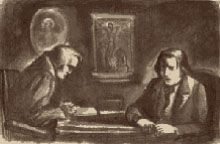
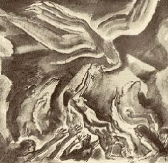
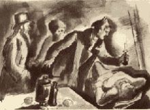
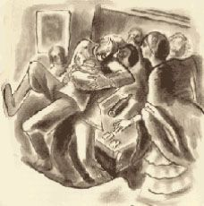
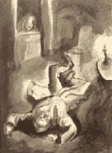
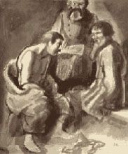

| カラマーゾフの兄弟 ２ | |
| ドストエフスキー | |
| (2012) | |
目次
第五編 賛否
六 いまのところまだ不明瞭きわまる憂うつ
七 『かしこい人とはちょっと話してもおもしろい』
一 ゾシマ長老とその客たち
二 いまは亡き修道司祭ゾシマ長老の伝記より――長老自身の話をもとにしてアレクセイ・フョードロヴィチ・カラマーゾフこれを編む
三 ゾシマ長老の談話と説教より
一 腐臭
二 そういう瞬間
三 ねぎ
四 ガリラヤのカナ
一 クジマー・サムソーノフ
二 リャガーヴィ
三 金鉱
四 闇のなかで
五 とっさの決心
六 おれが来たぞ
七 議論の余地もない初恋の男
八 夢見心地
一 官吏ペルホーチンの出世のいとぐち
二 大恐怖
三 魂の苦難の彷徨。第一の苦難
四 第二の苦難
五 第三の受難
六 検事、ミーチャを網にかける
七 ミーチャの一大秘密、一笑に付される
八 証人たちの証言、餓鬼
九 ミーチャ護送さる
六 いまのところまだ不明瞭きわまる憂うつ
イワンはアリョーシャと別れると、家にむかって、フョードルの家にむかって歩きだした。ところが、不思議なことに、彼は急にやりきれない憂うつな気分に襲われた、しかもなによりいけないことには、一歩家へ近づくごとにそれがますます昂じてくるのだった。それにしても、不思議なのは憂うつな気分そのものではなくて、その憂うつな気分の本体がどうしても突きとめられないことだった。憂うつな気分になったことはこれまでにもたびたびあったのだから、こういうときに憂うつな気分に襲われたところで不思議なことはないはずである、なぜならこのときは、いよいよあした、この町に魅力をおぼえていた一切のものとすっぱり縁を切って、あらたにくるりと方向転換をして、またまったくのひとりぼっちになろうとしていた矢先であり、従前どおり期待はいろいろあっても、なにに期待をかけているのかもわからないし、人生に多くの、あまりにも多くの期待をいだきながらも、その期待も、自分の希望すら、自分でもこういうものだとはっきりきめられないような状態だったからである。
そんなわけで彼の心にはたしかにあらたな未知なものにかんする憂うつな気持ちはあったが、それにしてもやはりこの瞬間彼をなやましていたのは全然そんなものではなかった。『もしかしたら親父の家にたいする嫌悪感じゃなかろうか？』と彼は腹のなかで考えた。『それらしい感じもする、すっかり厭気がさしてしまったからなあ、あのけがらわしい敷居をまたぐのもきょうが最後だけど、やっぱりいやだな』......が、しかしちがう、これでもない。では、アリョーシャとの別離とさきほどかわした話のせいだろうか。『もう何年ごし世間の連中とは口をきかなかったし、口をきいてやる値打ちもないと思っていたのに、急にあんなに愚にもつかない話をべらべらしゃべっちまったんだからな』実際、それはわかいための無経験さとわかさから来る虚栄心にたいする、若者らしいいまいましさ、つまり心のうちをうまく吐露できなかったいまいましさ、しかも心のなかで疑いもなく大きな期待をかけているアリョーシャのような人間にむかってそれができなかったいまいましさであるかもしれなかった。むろん、それも、つまりそのいまいましさもあったろう、いや、かならずあったにちがいない、だが、これでもない、まるっきりちがう。『胸がむかつくほど憂うつな気分なのに、なにをしたいのか、はっきり突きとめられないのだ。これはどうも考えないでいたほうがいいようだ』
イワンは『考えまい』としたが、なんの役にも立たなかった。だいたい、それが、その憂うつな気分なるものがいまいましいし、しゃくにもさわるのは、それがなにか偶発的な、まったく外的な形をおびているせいなのだ。そういう感じがしたのである。どこかその辺になにか生き物か物体でも立っていたり突き出ていたりしているようなぐあいで、たとえばなにか目の前に突き出ているのだが、仕事をしていたり話に夢中になっていたりしているため長いことそれに気づかずにいる、がそのうち目立って気がいら立ってき、ほとんど苦しいくらいになったあげくのはてに、気がついてその邪魔物を取りのけるわけだが、それが往々にしてごくつまらない滑稽なものだったりする、つまりなにかとんでもない所に置きわすれたものであったり、床の上に落ちていたハンカチであったり、本棚にしまいわすれた本だったりする、ああいった感じなのである。とうとうイワンはまったくいやな、いら立った気分で父の家にたどり着いて、木戸から約十五歩ほどのところで、ふと門にちらりと目をやったとたんに、自分をそれほど悩まし、胸をさわがしていたものがなんであったか、それにはっと気がついた。
門のそばの小さなベンチに下男のスメルジャコーフが腰をかけて夕涼みをしていたのだ。イワンはその姿をひと目見たとたんに、自分の心のなかにも下男のスメルジャコーフがいすわっている、自分がどうにも我慢がならなかったのはまさにこの男のことだったのだと直感したのである。急にすべてがぱっと照らしだされ、明らかになった。さっきアリョーシャからスメルジャコーフと会ったという話を聞いたときも、なにか暗い嫌悪感にぐさりと胸を刺しつらぬかれ、心にとっさに反射的な憎悪を呼びおこされたのだった。そのあと、話をしているあいだに、スメルジャコーフのことは一時忘れてしまっていたが、しかし心のなかにのこっていて、アリョーシャと別れてひとりで家路についたとたんに、たちまち忘れていた感覚が不意にまた急速に表面に出てきたわけなのだ。『いやまったくあんなやくざなろくでなしに、これほどおれの気持ちが掻きみだされるなんてことがあるのかなあ！』と彼は思って、我慢のならない憎しみをおぼえた。
事情はこういうことだった。イワンは実際、最近、とくにここ数日、この男がひどく嫌いになってきていた。彼はこの人間にたいするこの憎悪にちかい気持ちがつのってきているのに自分でも気づきはじめていたくらいだった。ことによると、この憎悪の気分の経過がこれほど尖鋭化してきたのは、イワンがこの町へ来たばかりの頃に、いまとはまったくちがったことが起きたからかもしれない。あの頃イワンはスメルジャコーフに急になにか特別な関心を持ちそうになり、彼をすこぶる独創的な男であるとまで思ったのだった。彼に自分と話をするようにしむけたのは自分のほうだったが、しかしいつも相手の物わかりの悪さ、というよりもむしろその頭のある落ちつきのなさを不思議に思い、いったいなにが『この瞑想家』の心をこんなに絶えず執拗に騒がしているのか腑に落ちなかった。ふたりは哲学的な問題についても語りあい、太陽や月や星はやっと四日めにつくられたというのにどうして第一日めに光が射していたのか、これをどう解すべきだろうといった話までしていた。しかしイワンは間もなく、問題は全然太陽や月や星にあるのではない、太陽や月や星はたとえ興味ぶかい問題ではあっても、そんなことはスメルジャコーフにとってまったく第三義的な問題であって、彼に必要なのはなにかまるっきりべつなことなのだと確信するようになった。それはどうあろうと、ともかく、スメルジャコーフのかぎりない自尊心、それも傷つけられた自尊心が顔をのぞけ、露呈しはじめ、イワンにはそれがひどく気にくわなかったのであり、それから彼の嫌悪感がきざしはじめたのである。その後、家のなかにごたごたがおこり、グルーシェンカが登場したり、兄ドミートリイの事件が持ちあがったりして、いろいろ面倒なことが起こりはじめると――ふたりはその話もするようになった。とはいえ、スメルジャコーフはそういう話をするときはいつでも大いに興奮するのだが、やっぱり、その本人がそのときなにが望ましいと思っているのかはどうしても突きとめられなかった。それどころか、不用意のうちに露呈する、それでいていつもはっきりしない彼のある希望が非論理的で秩序立っていないのに、むしろおどろくことすらあった。スメルジャコーフはしょっちゅうなにか聞きだそうとして、明らかに熟慮をかさねたらしい、なにやら遠まわしな問いを発するのだが、それがなんのためかは説明せず、しかもたいてい盛んに質問をしている最中にぴたりと口をつぐんでしまったり、話を全然別なほうへ持っていってしまったりするのだった。だが、最後にイワンをすっかりいら立たせ、彼にこれほどの嫌悪感を植えつけた主要なものは、スメルジャコーフが彼にひどく露骨に見せだした一種特別ないやらしいなれなれしさで、しかもそれが日ましにひどくなってきていたことだった。とはいっても、彼はべつに無礼な態度に出るわけではなく、かえっていつもすこぶる慇懃な口のきき方をするのだった。しかしスメルジャコーフは、なぜかはわからないが、ある点で自分はイワンとまるで連帯関係でもむすんでいるように思いはじめたらしく、いつもふたりのあいだにすでになにか約束事でもあり、いつか双方が取りかわした、ふたりだけにはわかっているが、まわりにうごめく他人にはとてもわかりっこない密約でもあるような調子で話をするのだった。ところが、そうなった頃でもイワンには次第につのってくる自分の嫌悪感の真因がわからず、ごく最近になってやっと事の実態が見ぬけたようなわけだった。
彼はいら立たしい嫌悪感をおぼえながら、いま無言のままスメルジャコーフを見ないようにして木戸を通りぬけようとした。が、そのときスメルジャコーフがつとベンチから腰をあげたのである。すでにその動作だけからでもイワンはたちまち、こいつなにかおれと特別に話しあいたいことがあるんだなと感づいた。イワンは相手を見やって足をとめた。そしてついいましがた考えていたようにそばを通りすぎずにそんなふうにふと足をとめてしまったことに、体がふるえるほどの憤怒をおぼえた。怒りと嫌悪の目つきで彼は、横びんにきれいに櫛を入れ、前髪をふんわりとふくらませたスメルジャコーフの去勢男のような痩せこけた顔をにらみつけた。相手のほんのちょっとほそめた左の目がまばたきをして笑みをうかべているところは、まるで『どうしたんです、通りすぎないところを見ると、われわれふたりのような利口な人間にはなにか話しあうことがあると見えますね』とでも言わんばかりだった。イワンはぶるっと身ぶるいをした。
『どけ、ろくでなし、おれがお前なんかの仲間かってんだ、ばかめ！』というような言葉が彼の口から飛びだしそうになったが、自分でもおどろいたことには、まるっきりちがった言葉が口をついて出た。
「どうだい、親父は眠ってるかい、それとも目をさましたかい？」彼は自分でも思いがけなく静かな、おだやかな口調でこう言うと、これまた思いがけなくひょいとベンチに腰をおろしてしまった。一瞬、彼は恐怖に近いものをおぼえたが、これはあとで思いだしたことである。スメルジャコーフは両手をうしろへやって、彼の真向かいに突っ立ったまま、自信ありげに、きついと言ってもいいくらいの目つきでこちらを見つめていた。
「まだおやすみになっておられます」と彼は落ちつきはらって言った。（『さきに口をきいたのはそっちで、こっちじゃありませんぜ』とでも言いたげだった）「あなたにも驚きますねえ、若旦那」と、彼はちょっと黙ってから、妙にすまして目をふせたまま、右足を前へ出して、エナメル塗りの靴のさきを動かしながら、そう言い足した。
「なんで僕におどろくことがある？」と、イワンは懸命に自分をおさえながら、ぶっきらぼうに冷酷な口調でそう言ったが、とたんに、自分が強烈な好奇心を感じていて、それを満足させないうちは絶対に立ち去れないのに気づいて、嫌悪感をおぼえた。
「どうしてチェルマーシニャへいらっしゃらないんです、若旦那？」スメルジャコーフはちらりと小さな目で見あげて、なれなれしくにやりと笑った。その左の細めた目は『どうして私が笑ったかは、利口な人間である以上、自分でもわかるはずでしょう』とでも語っているようだった。
「なんのために僕がチェルマーシニャへ行くことがある？」とイワンはけげんそうに聞いた。
スメルジャコーフはちょっと黙ってしまった。
「フョードルの旦那もあんなに拝むようにして頼んでおられるじゃありませんか」と彼はあげくのはてにゆっくりと言ったが、その様子はまるで、自分はこんな返事はどうでもいいんで、なにか言わなければならないから、こうしてつまらない理由をあげて言いのがれにこんなことを言っているのですといったあんばいだった。
「ちえっ、畜生、なんの用なのか、もっとはっきり言え！」とイワンはついに、柔和な態度からがらりと乱暴な態度に変わって、怒声を放った。
スメルジャコーフは右足を左足に引きつけて、体をしゃんとのばしたが、依然としておなじおだやかな目つきで、おなじようににやにやしながらこちらを見つめていた。
「別段大事な話でもないんです......ただ、話の切りだしついでに......」
また沈黙がおとずれた......ふたりは一分ちかく黙りこんでいた。イワンはいますぐ腰をあげて腹を立てたところを見せなければということは承知だったが、スメルジャコーフのほうは彼の前に突っ立ったまま、『ひとつ見せてもらいますかね、あなたが腹を立てるかどうか？』と待ちかまえているようなかっこうだった。すくなくとも、イワンにはそんなふうに思われた。が、とうとう彼は体をゆすって立ちあがろうとした。と、スメルジャコーフはちょうどその瞬間をとらえてしまった。
「私のいまの立場はおそろしいくらいですよ、イワンさん、どうやってのがれたらいいのかさえわからないほどでして」と彼は不意にしっかりした口調で一語一語はっきりとそう言うと、最後の言葉といっしょに吐息をはいた。イワンはとたんにまた腰をおろしてしまった。
「おふたりともまったく愚に返ってしまって、おふたりとも、もうまったくの小さな赤ん坊も同然になってしまってますんでねえ」とスメルジャコーフは語をついだ。「私が申しあげているのは、あなたのおとうさんとお兄さんのドミートリイさんのことでございますよ。現にあの方は――旦那さまはお目ざめになるともうさっそく私に絶えずつきまとって、『どうだ、あれは来なかったか？ どうして来なかったんだ？』と言いだして――それが夜なかまで、いえ、夜なかすぎまでぶっとおしにつづくんですからねえ。そしてアグラフェーナさんがいらっしゃらないと（そりゃあの方はおそらく絶対にいらっしゃるおつもりなんかありゃしませんものね）、つぎの朝はまた『どうして来なかった？ なぜ来なかったんだ、いつ来るんだ？』と言って私に飛びかかって来るんですよ――まるで私がなにかそのことで旦那に責任でもあるみたいに。一方じゃ、おなじような次第で、あたりが暗くなりだしたとたんに、いや、それより早いこともございます、あなたのお兄さんが凶器を手にして隣づたいにはいってきて、『気をつけろよ、悪党め、へぼコックめ、きさまがあの女の通るのを見落として、おれにあれが来たことを知らせなかったら――まっさきにきさまを殺してやるからな』なんておっしゃるんですよ。それに、夜があけて朝になれば、あの人も旦那さま同様、『あいつはどうして来なかったんだ、もうじきやって来るだろうか』なんて言って、私をさんざんいじめだして――まるでこれまた、あのご婦人がいらっしゃらないということが、私の責任みたいなことなんですからねえ。こんなわけで、おふたりの怒りようが日増しに、というよりも一時間毎にひどくなってくるんで、ときには恐ろしさのあまり自殺してしまおうかと思うこともあるくらいですよ。若旦那、私はあのおふたりには愛想もこそもつきてしまいましたよ」
「そんなら、どうしてそんなことに首をつっこんだんだ？ どうして兄貴に通報などはじめたんだ？」とイワンがいら立った調子で言った。
「どうして首をつっこまずにいられますか？ それに、ありのままを申しあげれば、私はなにも好きこのんで首をつっこんだわけじゃありませんよ。私ははじめっからずうっと黙って、言葉も返さずにいたのに、先方が勝手に自分の召使にして――リチャードの役につけてしまったんでございますからね。それからというもの、『悪党め、あれを見落としたら、きさまを殺してやる！』というひとつ事をくり返すことしか知らないんですからねえ。若旦那、私はまちがいなく、あしたは長い癲癇が起こるものと思っているんですよ」
「なんだ、その長い癲癇ていうのは？」
「長い癲癇の発作のことなんで、とても長いやつなんでございますよ。何時間も、ことによると、一日も二日もつづくんですからねえ。一度なぞ三日もつづいたことがございました、そのときは屋根裏から落っこちたんですがね。発作がやんだかと思うと、またぶり返しましてね、三日もぶっつづけに正気にかえれなかったんでございますよ。フョードルの旦那がここの医者のゲルツェンシュトゥーベ先生を呼びにやって下さいましてね、先生に頭に氷をのせてもらったり、そのほかにべつの手当てもしてもらいました......あぶなく死ぬところでしたよ」
「しかし、癲癇というのは、これこれのときにおきるなんて予知できないって言うじゃないか。それなのに、どうしてお前はあした起こるなんて言うんだ？」と一種特別な、じりじりするような好奇心を見せながらイワンが聞いた。
「予知できないってことは、それはたしかでございます」
「それにお前はそのときは屋根裏から落っこちたんだろう」
「屋根裏へは毎日あがっていますから、あしただって屋根裏から落っこちないともかぎりません。屋根裏からでなくても、穴倉へだって落っこちますよ、穴倉へも毎日行ってるんですから、自分の用事で」
イワンは長いことじっと相手の顔に目をこらしていた。
「でたらめを言っているな、ちゃんとわかっているぞ、どうもお前の言うことは腑に落ちない」と彼は静かに、だがどこか威かすような調子で言った。「お前はあしたから二日間癲癇の発作が起きたふりでもしようっていうんじゃないのか？ え？」
スメルジャコーフは地面に目を落として、またもや右足の爪先でいたずらをしていたが、その右足をもとにもどして、かわりに左足を前へ出し、頭をあげて、にやりと笑って、こう言った。
「よしんば私にそんなことまで、つまりそういうふりをすることまでできるとしてもですよ、だってそんなことは馴れた人なら、けっしてむずかしいことじゃありませんからね、そんな場合だって私には自分の命を救うためにそういう手を用いる権利が十分あるわけでございましょう。なぜ救えるかと申しますと、私が病気でふせっているときに、たとえアグラフェーナさんがおとうさまのところへいらっしゃっても、お兄さんは病人に『どうして報告しなかったんだ』なんて詰問するわけにはまいりませんからね。ご自分でもきまりが悪いでしょう」
「ちえっ、畜生め！」突然イワンが憎悪に顔を引きゆがめて飛びあがった。「なんだって、お前は自分の命のことでそんなにびくついているんだ！ そんな兄貴の威し文句なんか、ただ、かあっとなったはずみの台詞にすぎないじゃないか。兄貴はお前なんか殺しゃしないよ。殺すにしたって、お前なんかじゃない！」
「ハエみたいに殺されちまいますよ、まっさきにこの私が。が、それよりもほかに私が恐がっていることがあるんでございますよ。あの人がおとうさまになにかばかげたことをなすった場合、私がぐると思われやしないかということなんでございます」
「どうしてお前がぐると思われるんだ？」
「どうしてぐると思われるかと申しますと、私があの方に重大な秘密になっている例の合図を教えてしまったからなんでございます」
「合図ってどういう？ だれに教えたんだ？ こん畜生、もっとはっきり言え！」
「こうなったらすっかり白状しなければなりませんが」とスメルジャコーフは、くそ落ちつきはらった調子で言葉尻を引くようにして言った。「ここに私と旦那さまとのあいだにひとつ秘密がございますんで。ご承知のとおり（ご承知ならばの話ですがね）、旦那さまはここ数日、とは言っても夜なかに、はやいときはもう晩方から、すぐに内側から鍵をかけてしまいます。あなたはここのところ毎度はやばやと二階のご自分の部屋へ引きあげておしまいになるし、きのうはまたまるっきりどこへもお出でになりませんでしたから、ご存じないかもしれませんが、旦那さまはこの頃急に念入りに夜の戸じまりをなさるようになったんでございます。そしてたとえグリゴーリイじいさんが来ても、声でたしかにじいさんだとわからないうちは戸をあけてやりません。ところが、グリゴーリイじいさんは近頃あそこへはまいりませんので、この頃お部屋でご用をつとめているのは私だけなんでございます――旦那さまがご自分でこんなふうにおきめになったのは、アグラフェーナさんのことで例の計画をお立てになったあのときからなんで、しかし夜なかになりますとこの私もやはり、旦那さまのご命令で、いまでは離れにさがってやすんでおります。それは夜なかまで寝ずの番をするため、つまり起きだして中庭をまわって、アグラフェーナさんがいらっしゃるのをお待ちするためでございます、なにしろ旦那さまはもうここ数日気ちがいみたいにあの人のおいでを待っていらっしゃいますんでね。旦那さまのお考えはこうなんでございます。『あれはあの男を、ドミートリイを（旦那さまの呼び方ですとミーチカとなりますが）恐がっているから、夜もだいぶおそくなってから裏口を通ってわしのところへ来るにちがいない。だから、お前は真夜中かそれよりもっとおそくまで番をしていろ。そしてあれが来たら、お前は戸口へ駆けつけて、ドアか、さもなければ庭から窓を、手でこんなふうに、ひとつ、ふたつと、最初のふたつを静かにたたいて、それからすぐにすこし速めに、とん、とん、とん、と三つたたくんだ。そうすればわしはすぐに、あれが来たんだなと思って、ドアをそうっと明けてやるから』とこうおっしゃるので。それから、なにか急用ができた場合のために、もうひとつ別の合図も教えて下さいました。はじめ、とん、とん、と速く二つたたいて、それからすこしおいてもうひとつずっとつよく、とんとたたくのでございます。そうすると旦那さまは、なにか異変がおきたので、ぜひとも会いたいというんだなとお思いになって、やはり明けて下さる、で私がなかへはいってご報告するということになっております。これは、アグラフェーナさんがご自分でいらっしゃらずに、なにか使いの者をよこして知らせるような場合の用意でございますが、そのほか、ドミートリイさんだってやはりいらっしゃるかもしれませんので、あの方が近くへ来ていらっしゃることもお知らせしなければなりませんからね。旦那さまはドミートリイさんをえらく恐がっていらっしゃいますんで、よしんばアグラフェーナさんがすでにおいでになって、旦那さまとごいっしょに部屋に閉じこもられたような場合でも、ドミートリイさんがそのさなかにどこか近くに姿を見せるようなことでもあれば、そのときも私はかならずすぐさま三つたたいてそのことを旦那さまにお知らせしなければなりません。そんなわけで最初の五つたたくほうの合図は『アグラフェーナさんがお見えになった』という意味で、第二の三つたたくほうの合図は『ぜひお知らせしなければならないことがあります』ということなんですが、これを旦那さまはご自分で何度もやってみせて、私に解説して教えて下さいました。世界じゅうにこの合図を知っている者は私と旦那さまのたったふたりだけですから、旦那さまはもうなんの疑いもなく、声ひとつたてないで（旦那さまは大声をたてるのをとても恐がっていらっしゃいますんでね）、戸をあけて下さるわけでございます。ところが、この肝心な合図がいまじゃ、ドミートリイさんに知れてしまっているのでございますよ」
「どうして知れちまっているんだ？ お前が教えちまったんだろう？ どうしてお前は教えるようなことをしたんだ？」
「例の恐ろしさのあまりでございます。どうしてあの人の前で口を割らずにいられますか？ ドミートリイさんときたら毎日のように、『きさまはおれをだましているんだろう、きさまはおれになにか隠していることがあるんだろう？ きさまの両足をへし折ってやるぞ！』なんて脅迫するんでございますからねえ。で私はあの人にこの肝心な秘密の合図を教えてしまったんでございます、せめて私の忠勤ぶりを見ていただいて、それで、あの人をだますどころか、精々なんでもお知らせするようにしているってところを信じていただこうと思いましてね」
「もし兄貴がその合図を使って押し入ろうなんて考えるようだったら、お前は入れるんじゃないぞ」
「しかし、この私が発作を起こしてふせっていたら、そのときは、あの人がすっかりやけっぱちなのを承知していますから勇気をだしてあの人をお通しすまいとしたところで、どうしようもございません」
「ちぇっ、こん畜生、どうしてきさまはそう、癲癇がおこるものと頭からきめてかかってるんだ、こん畜生め！ きさまはおれをからかっているんじゃないのか？」
「どうして私があなたをからかうなんてことをするもんですか、それにこんなに恐ろしいことがあるというのに。冗談じゃございませんよ。実際に癲癇がおきるという予感がするんでございます、そういう予感がありますんですよ、おそろしいと思っただけでもおきるんでございますから」
「ちえっ、畜生！ お前が寝こむようだったら、グリゴーリイに番をさせればいい。前もってグリゴーリイに知らせておけば、あの男は兄貴を入れやしないだろう」
「合図のことは、旦那さまのご命令がないかぎりグリゴーリイじいさんになどどうあろうと教えるわけにはまいりません。それからグリゴーリイじいさんが聞きつけて通さないようにするだろうということでございますが、あの人はちょうどきのうから患っておりまして、マルファばあさんがあした治療することになっておりますんです。さっきそういうふうに話がまとまりましたんで、その治療法がまたとてもおもしろいんでしてね。マルファばあさんはなにか浸剤を知っていて、切らさないようにしているんですが、なにか薬草をウォッカにつけたきつい薬で、婆さんはそういう秘伝を心得ているんでございます。あの婆さんはその秘伝の薬で年に三度くらいグリゴーリイじいさんの治療をしてやっているんでございますが、それはじいさんがまるで中風でも患ったみたいに腰がすっかり抜けてしまうことが年に三度ほどあって、そんなときにやるんでございます。そのときはマルファばあさんはタオルを取って、それをその浸剤にひたして、それであの人の背中ぜんたいを三十分ほど、からからに乾いて、真っ赤に腫れあがるくらいこすったあとで、びんにのこった薬を、なにかまじないを唱えながらじいさんに飲ませる、とは言ってもぜんぶじゃございません、めったにない機会ですからすこしばかり自分用にのこして、自分も飲むわけでございます。すると、ふたりとも、酒はやらないほうですから、そのままそこへぶっ倒れて、ずいぶん長い時間ぐっすりと眠りこんでしまいます。そしてグリゴーリイじいさんは、目をさましたときは、たいてい元気になっておりますが、マルファばあさんのほうは目をさましたあと、いつも頭痛がしているんでございます。こんなわけで、あしたマルファばあさんがその自分の計画を実行するとなると、ほとんどなにひとつ聞きつけられやしませんから、ドミートリイさんをお入れしないなんてことはできっこありません。ふたりとも眠りこけているでしょうからね」
「まったくばかげた話だ！ そういうことが全部わざとみたいに一ぺんにいっしょに起こるなんて。お前は癲癇で、あのふたりは前後不覚と来てやがる！」とイワンが叫んだ。「もしかしたらお前は、いっしょに起こるように事をはこぶつもりでいるんじゃないのか？」という言葉が彼の口から飛びだし、彼はおそろしい顔をして眉をしかめた。
「どうして私がそんなふうに事をはこびたいと思うんでございますか......それに、なんのためにそうはこぶことがあります？ この場合はすべてドミートリイさんひとりに、あの方のお考えひとつにかかっているというのに......あの人がなにかしでかす気になれば――しでかすでしょうし、そういう気がなければ、この私などがわざわざあの人の手引きをして、おとうさまのお部屋へ押し入らせようとしたってしようがないでしょう」
「じゃ、どうして兄貴が親父のところへ来ることがあるんだ、しかも忍んで？ アグラフェーナさんはけっして来やしないと、きさまは自分でも言っているじゃないか」とイワンは憤怒に顔青ざめて言いつづけた。「きさまだってそう言っているし、おれも、ここに暮らしているあいだずうっとこう思いこんでいたんだ、うちの親父は夢を描いているだけで、あの淫売のやつは親父のところへなんか来やしないって。あの女が来ないのに、どうして兄貴が親父の家へ暴れこむんだ？ 言ってみろ！ おれはきさまの腹のなかが知りたいんだ」
「なんのために来なさるかは、ご自分でもご存じでしょう、私の腹のなかなんか知ってなにになりますか？ あの人はただ腹が立っただけでもいらっしゃるでしょうし、だいたい私が病気でもすれば、あの疑りぶかい性分ですもの、臭いと思って、あいつ、どうにかしておれの目をぬすんで忍びこんだんじゃないかと、こらえきれなくなって、きのうみたいに部屋のなかをさがしに来るじゃありませんか。それに、お兄さんは、旦那さまのところには大きな封筒が用意してあることもご存じでございますからね、そしてなかに三千ルーブリのお金が封じこんであって、三重に封をした上にリボンがかけてあることも、旦那さまのご直筆で『わが天使グルーシェンカへ、もしも来る気があれば』と書いて、三日たってからさらに『ひなどりへ』とこう書き加えてあることだって。こうなって来るといよいよ怪しくなってきますよ」
「ばかげたことを！」とイワンはほとんどわれを忘れて叫んだ。「あの兄貴が金なんか盗みに来るもんか、ましてその上親父を殺すなんて。きのうなら、憎らしさから逆上したあげく、ばかになって、グルーシェンカのことで親父を殺したかもしれないが、金なんか盗みに来るもんか！」
「お兄さんはいまえらくお金がお入り用なんでございますよ、のどから手が出るくらい、若旦那。どんなにお入り用か、あなたはご存じないでしょうけど」とスメルジャコーフはひどく落ちつきはらって、目立ってはきはきした口調で説明にかかった。「その上お兄さんはその三千ルーブリのお金を自分のもののように思っていて、ご自分でも私にこう説明していらっしゃいました、『親父はおれにまだ借りがちょうど三千ルーブリ残っているんだ』って。それに加えて、若旦那、こういうまちがいのない真相もお考えになって下さいまし。これはほとんどまちがいなくそうなると言わなければなりません、それはアグラフェーナさんがご自分でその気になりさえすれば、かならずあの人を、つまりフョードルの旦那をご自分と結婚させてしまうってことでございます、その気にさえなればね、ところが、あの人は案外その気になるかもしれませんので。たしかに私は、あの人はいらっしゃらないだろうとこう申しましたが、あの人は、ひょっとしたら、それ以上の望みを、つまり一足とびに奥さまにおさまってやろうかといったような望みをおこすかもしれませんよ。私がこの耳で聞いた話では、あの商人のサムソーノフがあの人にむかってごくざっくばらんに、そいつはなかなか気がきいた考えだと言って、笑ったそうでございます。ご当人もどうしてなかなか頭の鈍い方じゃございませんからね、ドミートリイさんのような素寒貧の男のところへお嫁入りなさるようなことはまずございますまい。で、まあそういうことを頭に入れた上で、ひとつ考えてごらんなさいまし、若旦那。そうなったらドミートリイさんも、あなたや弟さんのアレクセイさんすら、おとうさまがお亡くなりになったあと、もうそれこそまるっきり、一ルーブリだってもらえやしませんよ、だってそうでしょう、アグラフェーナさんが旦那さまのところへお嫁入りなさるのは、なにもかもご自分の名義に書きかえて、財産という財産をそっくりご自分の手に移すためですからねえ。ところが、まだそういうことにならないいまのうちにあなたのおとうさまがお亡くなりになれば、すぐにあなたがたひとりひとりの手にたしかなお金が四万ルーブリずつはいることになります、旦那さまがあれほど憎んでいらっしゃるドミートリイさんの手にさえね、遺言状がつくってありませんから......こういったことはドミートリイさんにはよくよくわかっているんでございますからね......」
イワンの顔がどことなく妙にゆがんで、ぴくりとふるえたようだった。そして彼はぱっと顔を赤らめた。
「じゃ、きさまはどういうわけで」とイワンは急に相手の話の腰を折って、「そういう事情があるのに僕にチェルマーシニャへ行けなんてすすめるんだ？ あんなことを言うのはどういうつもりなんだ？ 僕が発ったあとで、家にそういうことが起こるというのに」と言いながら苦しそうに息をあえがせていた。
「まったくおっしゃるとおりで」とスメルジャコーフは静かに分別ありげに言ったが、目はじっとイワンにそそがれていた。
「なにがまったくおっしゃるとおりなんだ？」と、イワンは懸命に自分をおさえながら、おそろしいくらい目をぎらぎらさせて、そう問いかえした。
「私はあなたがお気の毒だから、ああ申したのです。もし私があなたの立場にいたら、こんなことにかかわりあっているより......なにもかもほうりだして行ってしまいますよ......」と、スメルジャコーフはすこぶる明けっぴろげな態度でイワンのぎらぎらした目を見かえしながら、答えた。そしてふたりともおし黙っていた。
「きさまはどうも大ばからしいな、それに、言うまでもないが......ひどい悪党だ！」イワンはそう言って、急にベンチから立ちあがり、それからそのまますぐに木戸を通りぬけそうにしたが、急に立ちどまって、スメルジャコーフのほうを振りかえった。なにか不思議なことが生じたのである。イワンが不意に、けいれんでも起こしたように、唇をかみしめてこぶしを固め――そしてつぎの瞬間には、むろん、スメルジャコーフに飛びかかるところだったのだ。が、相手は、すくなくとも、とっさにそれに気づいたらしく、ぶるっと身ぶるいして、体ぜんたいをうしろへ引いた。それでもその一瞬はスメルジャコーフにとって何事もなく過ぎ、イワンは黙ったまま、しかしなにやら思いまどっているような様子で木戸のほうへ向きを変えた。
「知りたければ教えてやるが、僕はあしたモスクワへ発つぞ――あすの朝はやく――それだけだ！」と彼は突然にくらしそうに、一語一語はっきりと大声でそう言ったが、あとになって、どうしてあのときあんなことをスメルジャコーフなどに言う必要があったかと不思議に思ったものだった。
「そうなさるのがいちばんよろしゅうございますよ」と相手はその言葉を待っていましたとばかり、すかさず答えた。「ただ、なにかおきた場合には、こちらから電報を打ってお騒がせするようなことがあるかもしれません」
イワンはまた立ちどまって、またもやすばやくスメルジャコーフのほうを振りかえった。が、相手にもなにか生じたらしかった。スメルジャコーフのなれなれしさとどうでもいいといった調子が一瞬のうちに消えうせて、顔ぜんたいに異常な注意と期待の表情が現われたが、それはもうおどおどした卑屈なものになっていた。『まだなにかおっしゃることはございませんか、つけ加えることはございませんか』じっとそのままイワンを食い入るように見つめたその目からはそんなふうに読みとれた。
「じゃ、チェルマーシニャからだと呼びよせてはくれないのか......なにかそういう事件がおきたところで？」とイワンが、なんのためか、急に大声を張りあげて、突然そうわめきたてた。
「チェルマーシニャへいらっしゃってもやはり......お騒がせすることになると思います......」と、スメルジャコーフはまるで度を失ったようにほとんどささやくような声でつぶやいたが、その目は依然としてそれこそじっとまともにイワンの目を見つめていた。
「しかしきさまがしつこくチェルマーシニャ行きをすすめるのは、チェルマーシニャは近いが、モスクワは遠いんで、旅費がもったいないからとでもいうのか、それとも僕に遠まわりをさせちゃ気の毒だからとでもいうのか？」
「まったくおっしゃるとおりで、はい......」と、スメルジャコーフはいやらしくにやにや笑いながら、引きちぎったような声でそうつぶやくと、またもやいつでもうしろへ飛びすされるようにひょいと身がまえをした。ところが、イワンは、スメルジャコーフのおどろいたことに突然笑いだしたかと思うと、引きつづき笑いながら、ぱっと木戸をくぐってしまった。そのときその顔をひと目でも見た者がいたら、きっと、彼が笑いだしたのはけっして、それほど愉快だったためではないと判断したにちがいない。それに彼にしても、その瞬間自分の心になにがおきたのか、絶対に説明できなかったに相違ない。彼は、身のこなしも歩きっぷりも、けいれんでもおこしているみたいだった。
七 『かしこい人とはちょっと話してもおもしろい』
それに、口のきき方までそうだった。家へはいりしなに広間でフョードルに出会っても、彼は両手をふりながら突然「僕は二階の自分の部屋に行くんで、おとうさんのところへ行くわけじゃないんですよ、さようなら」と叫んだかと思うと、なるべく父の顔を見ないようにしながら、素通りしていってしまった。このとき彼にとって老人が憎くてたまらなかったということは大いにありうることだった。が、それにしてもこれほど露骨に憎悪の気持ちを見せつけられようとは、さすがのフョードルも意外だった。老人は実際彼になにか知らせたいことがあったらしく、そのためにわざわざ広間へ彼をむかえに出たのだった。そこでこういう無愛想なあいさつを聞かされると、彼はなにも言わずに立ちどまって、中二階へと階段をのぼっていく息子のうしろ姿を、見えなくなるまで、冷笑的な顔つきで見送っていた。
「あいつ、いったいどうしたんだ？」と彼はイワンのあとからはいって来たスメルジャコーフにすかさずたずねた。
「なにか腹を立てていらっしゃるらしいんですが、さっぱりわかりません」と相手ははぐらかすようにそうつぶやいた。
「勝手にしろ！ 怒るんなら怒らしておけ！ お前もサモワールを出したら、さっさと引きさがれ、さっさと！ なにか変わった話はないか？」
ここで、スメルジャコーフがたったいまイワンにこぼしたような、しつこい質問がはじまった。つまりどれもこれも待ちこがれている女客にかんする質問ばかりだったのだが、そのくどい質問はここでは省くことにする。三十分後には家の戸じまりもおわって、気がふれたも同然の老人はひとり部屋のなかを歩きまわりながら、いまにも約束の五つのノックが聞こえはしないかと期待に身をふるわせながら、ときおり暗い窓外をのぞき見ていたが、窓外には宵闇以外になにも見えなかった。
時刻はもうずいぶんおそかったが、イワンはひきつづき眠らずに、いろいろ考えをめぐらしていた。その夜彼が床についたのはだいぶおそく、二時頃だった。しかし、彼の思考の流れをのこらずつたえることはやめておこう、それにいまはその心の内部に立ち入っているべきときではない。いずれその時は来るだろう。それに、たとえなにかつたえようとしてみたところで、それは大変骨が折れるにちがいない。なぜなら、それは思考というようなものではなくて、なにかすこぶる漠然とした、それにだいたいあまりにも冷静さを欠いたものだったからである。自分でも、すっかりわけがわからなくなっていると感じていた。彼はまたいろんな奇怪な、ほとんどまったく思いもかけない望みに悩まされていた。たとえば、もう夜なかすぎだというのに、急に矢も楯もたまらず、下へおりていき、ドアをあけて離れへはいって、スメルジャコーフをぶちのめしてやりたくなったりするのである、だがなんのためにと聞かれたところで、あの下男が世界じゅうさがせるなかでいちばんひどい侮辱を加えた男みたいに憎くてたまらなくなったのだという以外に、まったくなにひとつその理由を正確に述べることはできなかったに相違ない。また一方、この夜は一度ならず彼の心が一種説明しようもない卑屈なおどおどした気持ちにとらえられて、そのため彼は（それを感じていたのだが）まるで急に体力まで衰えてしまったようなぐあいだった。頭痛もすれば、目まいもした。なにやら憎悪をおぼえるものに胸がしめつけられるようで、まるでだれかに復讐でもしてやろうとしているような気持ちだった。
彼はさっきのアリョーシャとの会話を思いだしてはアリョーシャまで憎らしくなり、しばしば自分までが憎らしくなった。カテリーナのことはほとんど考えることさえ忘れてしまっていて、あとでそれをずいぶん不思議に思ったことだった。まして、ついきのうの朝カテリーナのところで大見得をきって、あしたモスクワにむけて発ちますなどとほざいたあのときでさえ、心のなかで『なにをたわけたことを。出かけやしないさ、いま大口をたたいているようにそんなにたやすく離れられるもんか』と自分にささやいたことを自分でも確実におぼえていただけに、なおさら不思議だったのだ。その後イワンはだいぶたってからも、この夜のことを思いだしては特別嫌悪をおぼえずにいられないことがあった。それは、自分がときどきひょいとソファから腰をあげて、自分の動静を人にのぞかれはしないかとひどくそれを恐れてでもいるようにそうっとドアをあけて、階段の上へ出ては、階下の部屋でフョードルが身動きしたり歩きまわったりしている様子に聞き耳をたて、長いこと、その都度五分間も、なにか奇怪な好奇心にかられて、息をころし、胸をどきどきさせながら、聞いていたことである。
が、なんのためにそんなことをしたのか、なんのために聞き耳をたてたのかは、もちろん、自分にもわかっていなかった。この『行為』を彼はその後一生涯『みにくい行為』と呼び、一生涯『心の奥底で――自分の一生のうちでいちばん卑劣な行為と考えていた。当のフョードルにたいしては、そのときは憎悪などまったく感じず、ただなぜか、いま親父は下でどうやって歩いているんだろうとか、だいたいいま自分の部屋でどんなことをしているんだろうといったようなことに精一杯好奇心をおぼえ、いまごろはきっと下で暗い窓の外をのぞいたり、ふと部屋の中央に立ちどまったりして――だれかノックをする者はいないかとそれを待ちこがれているにちがいないなどと推測したり思いあわせたりしていただけだった。イワンはそんなことをするために二回も階段へ出た。
二時ごろ、あたりがすっかり静まりかえり、フョードルももう床にはいったころ、イワンはおそろしく疲労困憊した感じだったので、断然一刻もはやく眠りたいと思って、床にはいった。そして実際、たちまちぐっすりと眠りこみ、夢も見ずに眠ったが、目をさましたのははやく、七時頃で、あたりはすでに明るくなっていた。目をあけると、彼は、自分でも驚いたことに、俄然自分の体内に異常なエネルギーが湧きおこるのをおぼえて、ぱっと起きあがり、手ばやく着がえをすませ、それからトランクをひっぱりだして、さっそく荷造りをはじめた。下着類はちょうどついきのうの朝ぜんぶ洗濯屋から受けとったばかりだった。イワンは、なにもかもうまくいって、突然の出発になんの支障もないと思ったとたんに、にやりと笑ってしまったくらいだった。イワンはきのうは（カテリーナとアリョーシャとそれにスメルジャコーフに）、あす発つと言っておきながら、ゆうべ寝についたときは、当座、出発のことなど考えてもいず、すくなくとも、朝目をさましてからまっさきにトランクの荷造りにとりかかろうなどとはまるっきり考えてもいなかったことを非常によくおぼえていた。
ついに、トランクとスーツケースの用意もできた。九時頃、マルファが彼の部屋へはいってきて、「お茶はどこで召しあがりますか、こちらでなさいますか、それとも下へおりていらっしゃいますか？」と、いつも毎朝やるように聞いた。イワンは下へおりていったが、いかにも愉快そうな様子をしていた、もっともその言葉づかいにも身ごなしにも、どこかそわそわした、あわてているようなところはあった。彼は父に愛想よくあいさつをし、とくに体のぐあいまで尋ねたが、父親が返事を言いおわるのも待たずに、一時間もしたらモスクワへ発ったきり帰らないつもりだから、使いを出して馬車を呼んでもらいたいと、一気に言ってのけた。老人はいささかもおどろいた様子を見せずにその知らせを聞き、義理にも息子の出発を悲しむようなところは見せなかった。それどころか、ちょうど折りよく自分の急用を思いだして、急にひどくやきもきしはじめた。
「いやお前というやつは！ なんたる男だ！ きのうはなんにも言わなかったくせに......まあいいや、どっちみちおんなじだ、いますぐ話をつけよう。なあ、お前、わしに情けをかけると思って、ひとつチェルマーシニャへ寄ってくれないか。ヴォローヴィヤ駅からほんのちょっと左へまがるだけじゃないか、せいぜい十二キロかそこら行けば、もうあそこだよ、チェルマーシニャだ」
「とんでもない、だめですよ。鉄道まで八十キロもあるし、汽車がモスクワに向けて駅を発つのが晩の七時ですからね――ぎりぎりやっと間にあうくらいですもの」
「あしたでも間にあうよ、でなかったらあさってでも。きょうはチェルマーシニャへまわってくれ。こんなことで父親を安心させられるんだったら、お前には大したことないじゃないか！ こっちに用事さえなければ、わしは自分でもうとっくに飛んでいっているところなんだ、なにせむこうのは急を要する大変な仕事だからな......ところが、いまはそれどころじゃないんだ......いいか、あそこに例のわしの森があるのだ、ベギーチェヴォとジャーチキナの両地区にまたがるさびしい場所にな。商人のマースロフ親子がたった八千ルーブリで木をきらしてくれと言ってきているんだが、つい去年ついた買い手は一万二千出すと言っていたんだ、ところがそいつは土地の者じゃない、そこに問題があるのだ。というのは、いまじゃ土地の者のあいだにはける見込みはないんだよ。このマースロフ親子ってえのは成り金で、百万長者でな、値をつけたら、その値段で買いとらずにはおかない上に、土地の者でだれひとりこの親子をむこうにまわして競りあおうってやつがいないからさ。ところが、先週の木曜日に坊主のイリインスキイが出しぬけに手紙をよこしてな、ゴールストキンが乗りこんできたと言ってきたんだ。この男もやはり商人でな、わしはそいつを知っているんだが、ただありがたいことに土地の者じゃなくて、ポグレーボフの者なのさ、ということはつまりマースロフ親子を恐がっていないってことだ、土地の者じゃないからな。その森に一万一千出すって言っているんだそうだ、わかったかい？ 坊主が書いてよこしているところによると、こちらにはせいぜい一週間くらいしか滞在しないんだそうだ。そんなわけで、お前にひとつ行って、話をつけてもらいたいんだ......」
「じゃ、おとうさんがその坊さんに手紙で書いてやればいいでしょう、話をつけてくれますよ」
「ところが、あいつにはそんな腕はないんでな、そこが問題なんだよ。あの坊主は目がきかないんだ。貴重な存在なんだがな、あいつにならわしはいますぐ二万ルーブリだって受取なしで預けておけるくらいなんだが、目がさっぱりきかないんだ、まるっきり人間離れのした男で、鳥にだってだまされるくらいの男なんだ。それでいて学者なんだから、おどろくじゃないか。もう一方のゴールストキンというやつは、見かけは百姓で、青い袖なし外套なんか着こんじゃいるが、根性はまったくの悪党なんだ、そこがわれわれおたがいに困ったところなんだよ。嘘つきでな、これが問題なんだ。ときによると、なんのためにあんなでたらめを言うかと不思議に思うくらい嘘八百をならべやがる。おととしなんかも、女房を亡くしたから後妻をもらったなんてぬかしていたくせに、どうだい、つゆそんなことはなかったじゃないか。女房は死んだどころじゃない、いまでもぴんぴんして、三日にあげずあいつをひっぱたいているさ。そんなわけで今度も、一万一千出して買いたいなんて言っているが、それが嘘かほんとうか突きとめる必要があるんだ」
「そういうことだったら僕だってなんにもできやしませんよ、僕もやはり目ききじゃありませんからね」
「待て、待て、お前だって役に立つよ、わしがいまお前にあいつの癖をゴールストキンの癖をのこらず教えてやるから、わしはあいつとはもうだいぶ前から取引関係があるんでな。いいか、あいつのあごひげにまず目をつけなければいかんのだ。あいつのあごひげは赤毛で、いやらしい、薄いひげだ。そのあごひげがふるえて、本人がぷりぷりしているような物言いをしていたら――それはつまり、いいあんばいだ、ほんとうのことを言っている、取引をしたがっているってことだ。ところが、本人があごひげを左手でなでながら、ときどきにやにやしていたら――それはつまり、いっぱい食わそうと思っている、ペテンにかけようとしているってことになるんだ。あいつの目はけっして見るんじゃないぜ、目からはなにも読みとれやしないからな、濁り水みたいなものでな、食わせ者なんだ――あごひげを見ろよ。お前にあいつあての手紙を持たせてやるから、あいつに見せるがいい、あいつはゴールストキンというんだが、実はゴールストキンじゃなくて、リェガーヴィ〔抜けめのない男〕なんだ、だからってお前はあいつに、リェガーヴィなんて言っちゃいかんぞ、怒るからな。あいつと話がまとまって、これでよしと見たら、さっそくこっちへ手紙をよこしてくれ。『嘘は言っていない』とだけ書いてくれればいい、一万一千で頑張るんだぞ、千くらいはまけてもいいが、それ以上はまけちゃならん。考えてみるがいい、八千と一万一千じゃ――三千の違いじゃないか。この三千ルーブリはわしにとっちゃまるで拾いものみたいなものなんだ、すぐには買い手はつかないし、金はぜひとも必要ときているんでな。向こうが本気だと知らせてくれりゃいい、そうしたら今度はこのわしが飛んで行って片をつけるから、なんとか時間の都合をつけてな。しかし、いまはまだ馬車を飛ばしていくこともあるまい、坊主のひとり合点かもしれないからな。どうだね、行ってくれるかね？」
「いや、時間がないんですよ、勘弁してください」
「父親を助けると思って行ってくれよ、恩に着るぜ！ お前たちはそろいもそろって薄情なやつらだな、まったく！ 一日や二日がお前にどうだっていうんだ？ これからどこへ行こうってんだね、ヴェネチアかい？ お前のそのヴェネチアは二日やそこらで崩れてなくなりゃしないよ。アリョーシャでもやりたいところだが、こういうことはアリョーシャじゃどうにもならんじゃないか。こんなことを頼むのもひとえに、お前は利口な人間だと見こめばこそなんだ、わしだってちゃんとわかっているんだぞ。お前は材木の商売こそしていないが、見る目を持っているからな。この場合はただ、あいつが本気で言っているのかどうか、見てくれるだけでいいんだ。いまも言うとおり、あごひげを見るんだ。あごひげがふるえていたら――本気だってことだよ」
「ほんとうのおとうさんの腹は僕をあのいまいましいチェルマーシニャへ追っぱらってしまおうというんでしょう、え？」とイワンは敵意ありげににやりと笑って叫んだ。
フョードルはその敵意に気がつかなかったのか、気がつく気がなかったのか、ひたすらその笑顔だけにすがりついた。
「つまり、行ってくれるってわけだな、行ってくれるね？ じゃいますぐお前に一筆書いてやるから」
「行くかどうかはわかりませんよ、わからないから、途中できめます」
「途中でとはなんだ、いますぐきめてくれよ。な、お前、きめてくれ！ 話がついたら、ほんの一筆書いて、坊主にわたしてくれ、そうすれば坊主が即刻こっちへお前の書きつけを送ってくれるから。それからはお前を引きとめるようなことはしないから、ヴェネチアへだって行くがいい。坊主がヴォローヴィヤ駅へ自分の馬車で送りとどけてくれるよ......」
老人はもうすっかり有頂天になって、急いで手紙をしたため、馬車を呼びにやったり、つまみ物やコニャックを出させたりしはじめた。老人はうれしいときには、いつも感情を露わに見せはじめるのだが、このたびは自分をおさえているような様子だった。たとえば、ドミートリイのことなどはおくびにも出さなかった。別離にはまったく感情を動かされたふうもなかった。むしろなにを話したらいいのかわからないといった様子だった。それはイワンにも大いに目についた。
『しかし、親父もおれにはもううんざりなんだろう』と彼は腹のなかで思った。それでも、すでに息子を表階段から送りだすときは、老人もいくらかそわそわしだしたらしく、そばへ来て接吻をしそうにした。しかし、イワンは急いで握手の手をさしのべただけで、どうやら接吻はしたくないらしかった。老人はすぐにそうと悟って、とっさにひかえてしまった。
「それじゃ、元気でな、元気でな！」と彼は表階段からくりかえして言った。一生のあいだにはまだいつかやって来るだろうな？ じゃ、来てくれよ、いつでも歓迎するから。じゃ、道中無事でな！」
イワンが旅行馬車に乗りこむと、
「さようなら、イワン、あんまり悪く思わないでくれよ！」と父親は最後に叫んだ。
家じゅうの者が、スメルジャコーフとマルファとグリゴーリイが見送りに出た。イワンはみんなにそれぞれ十ルーブリずつやった。すでに旅行馬車に身をおちつけたとき、スメルジャコーフが駆け寄って、敷き物をなおしてくれた。
「このとおり......チェルマーシニャへ行くよ......」どうしたわけかひょいとイワンの口からこんな言葉がもれた。またきのうのようにひとりでに飛びだしたのだ、そのうえ一種神経的な笑いまでともなっていた。その後も彼は長いことこのことを記憶していた。
「ということはつまり、かしこい人とはちょっと話してもおもしろいって言いますけど、ほんとうだということになりますね」と、スメルジャコーフは突きさすような目つきでイワンを見て、しっかりした口調でそう答えた。
旅行馬車が動きだし、疾走しはじめた。旅人の心はどんよりとよどんでいたが、彼はまわりの畑や丘や木々や、頭上たかく明るい空を飛びすぎる雁のむれをむさぼるように眺めていた。すると急にひどくいい気分になったので、御者に話しかけてみた。百姓の返事のなかにはなにかひどく興味をおぼえたものもあったが、その後考えてみると、全部耳のそばを素通りしてしまって、実を言えば、百姓の返事などさっぱりわかっていなかったのである。彼は口をつぐんでしまったが、そのままでもいい気分だった。空気は清らかで、さわやかで、ひんやりしていたし、空は晴れわたっていたからだ。頭のなかにアリョーシャとカテリーナの姿がひらめきかけたが、静かににっこりと笑って、そのなつかしい幻をそうっと吹き消してしまった。『そのうちあの連中の時代もやって来るだろう』と彼は思った。駅のそばを一気に飛ばして、馬を変えては、ヴォローヴィヤ駅にむかって疾駆した。『かしこい人とはちょっと話をしてもおもしろいってのは、どういうわけだろう、あいつ、あんなことを言ってなにを言うつもりだったんだろう？』突然彼は息がつまるような気がした。『それに、おれはなぜあいつに、チェルマーシニャへ行くなんて告げてしまったんだろう？』
やがてヴォローヴィヤ駅へ着いた。イワンが馬車を出ると、御者たちにとりかこまれた。十二キロの村道を、私設馬車でチェルマーシニャへ行くことになり、彼は馬をつけるように言いつけた。駅舎へはいりかけて、あたりを見まわし、駅長の妻君に目をやると、不意に表階段へとって返した。
「チェルマーシニャ行きはとりやめだ。おい、みんな、七時の汽車に間にあうだろうか？」
「きっかり間にあわせてみせますよ。馬をつけましょうか？」
「早いとこつけてくれ。お前たちのなかにあした町へ行く者はいないか？」
「いないことはありません、ほらこのミートリイが行きまさあ」
「ミートリイ、ひとつ用を足しちゃくれまいかね？ 親父のフョードル・カラマーゾフの家へ立ち寄って、イワンはチェルマーシニャへ行かなかったと言ってもらいたいんだ。やってくれるかね、どうだい？」
「なんで寄れないことがありますか、寄りますとも。フョードルさんならずいぶん前から知ってますからね」
「じゃこれが祝儀だ、多分親父はくれまいからな......」と言って、イワンは愉快そうに笑いだした。
「いや確かに下さらねえでしょう」と言ってミートリイも笑いだした。「ありがとうございます、若旦那、ご用はかならずはたしますよ」
晩の七時にイワンは汽車に乗りこんで、一路モスクワへ向かった。『いままでのことはぜんぶ消えてなくなれ、以前の世界のことはもうこれで永久におわったんだ、あの世界のことは音沙汰もないようにしなくちゃ。あたらしい世界へ、あたらしい場所へ飛びこむんだ、うしろなど振りかえらずに！』だが、彼の心は突然、そのときまで一度も経験したことのないような暗闇にとざされ、胸のなかは強烈な悲しみにうずいた。彼はひと晩じゅう考えとおした。列車は飛ぶように走り、明け方すでにモスクワへはいろうとする頃、やっと彼はわれに返った。
「おれは卑劣な男だ！」と彼は心のなかでつぶやいた。
一方フョードルは、息子を送りだしたあとも、ずうっと至極満足だった。まる二時間ものあいだ、彼はわが身の仕合わせを味わいながら、ちびりちびりとコニャックを傾けていた。ところが、だしぬけに家のなかにみんなにとってすこぶる腹の立つ不愉快きわまる事件がおきて、たちまちフョードルを大あわてにあわてさせてしまった。スメルジャコーフがなにかの用で穴倉へ出かけたところが、上の段から落っこちたのである。そのときマルファが中庭にいあわせて、おりよく聞きつけたから、まだよかった。彼女は落ちるところは見なかったが、そのかわり叫び声を、一種特別な、異様な、とはいえ彼女はもうだいぶ前から聞きなれている叫び声を――癲癇持ちが発作をおこして倒れるときの叫び声を耳にしたのである。階段をおりようとしたひょうしに発作をおこしたのだろうか、だとすれば、むろん、とたんに気絶したまま下へ転落したはずである、それとも逆に、墜落と脳震盪が原因で癲癇もちで知られているスメルジャコーフに発作が起きたのか――その辺のところはつまびらかにできないが、とにかく彼が穴倉の底に発見されたときは、体をまるめてけいれんをおこして、もがきながら、口から泡をふいていたのである。はじめみんなは、てっきり彼がなにか手か足でもおって、大怪我をしたものと思ったが、しかし、マルファの言い方を借りれば、『神さまのおかげで』そういうことはなにひとつおきなかった、ただ彼を穴倉から明るい世界へはこびだすのがひと苦労だっただけである。それでも、隣近所に応援をもとめて、どうにかそれもやりおおせた。この大騒ぎのあいだじゅうフョードル自身も立ちあって、見たところびっくり仰天して、度をうしなったようなふうでありながらも、自分も手助けしていた。
病人はしかし、意識をとりもどさず、発作が一時おさまっても、またぶり返すといったふうだったので、みんなは、これは去年やはり屋根裏から不慮の墜落をしたときとおなじようなことになるぞと判断した。みんなは、あのとき彼の頭に氷をのせたことを思いだした。氷はまだ穴倉に残っていたので、その処置はマルファがして、フョードルが夕方ちかくにゲルツェンシュトゥーベ先生を呼びにやると、医者はすぐに来てくれた。彼は病人を慎重に診察した上で（これは県下一の慎重で注意ぶかい先生で、すこぶる尊敬に値する老人だった）、この発作は普通じゃないから、『あぶないことになるおそれがある』、いまのところ自分、つまりゲルツェンシュトゥーベにはまださっぱりわからないが、明朝、いまの薬がきかなかったら、べつの方法を講じようと結論を下した。病人は離れの、グリゴーリイとマルファの居間の隣の小部屋に寝かされた。それからというもの、フョードルは一日じゅうつぎからつぎへと災難に見舞われどおしだった。食事はマルファがこしらえたが、スープはスメルジャコーフがこしらえていたのにくらべると『まるで汚水のよう』だったし、鶏肉はからからに焼けすぎて、どうにも噛みこなせたものではなかった。マルファは旦那の手きびしい、とはいえ当然の小言にたいして、鶏はそれでなくとももうずいぶん年をくった代物ですし、わたしにしてもとくに料理など習いおぼえたわけでもないんですからね、と口答えした。夕方ちかくなって、べつの心配事がおきた。おとといから患っていたグリゴーリイが折りも折り腰が立たなくなって、ほとんど寝こんだような状態になってしまったという報告があったのである。
フョードルはできるだけ早くお茶を切りあげて、ひとりで母家に閉じこもってしまった。彼はおそろしい不安な期待に胸をおどらせていた。というのは、今晩こそまずまちがいなくグルーシェンカが来てくれるものと期待していたのである。すくなくとも、彼はすでに早朝から、『あの方は今度こそかならず行くと約束なさっていました』という、保証に近いものをスメルジャコーフからとりつけていたのだ。落ちつかない老人の胸は騒がしくときめいていた。彼はがらんとした部屋部屋を歩きまわっては耳をすました。つねに鋭く耳をすましていなければならなかった。どこかにドミートリイが彼女の来るのを見張っているかもしれないし、彼女が窓をたたいたら（スメルジャコーフはすでにおとといフョードルに断言していたが、どこをどうノックするか、彼女に教えてやったとのことだった）、なるべくはやくドアをしめきって、絶対にたとえ一秒でも彼女をいたずらに玄関で待たすようなことのないようにしなければならなかった、それは、彼女がなにかにびっくりして逃げだしでもしたら大変だからだった。フョードルにとってはずいぶんと気のもめることではあったが、彼の胸がこれほどあまい希望にひたったことはついぞなかった。今度こそもうかならず彼女が来るにちがいないと、ほとんど断言できるくらいだったからである！......
一 ゾシマ長老とその客たち
アリョーシャは胸に不安と苦痛をいだきながら長老の庵室へはいっていったとき、ほとんど呆気にとられたかっこうでその場に立ちすくんでしまった。彼の目に映ったのは、彼が恐れていたような、ことによるとすでに意識もなくなっているかもしれない臨終の病人ではなく、衰弱にやつれはてているとはいえ、元気そうなほがらかそうな顔をしている、ひじかけ椅子にかけて客たちにかこまれて客と静かに明るい話をかわしている長老の姿だった。
もっとも、長老が床から起きあがったのは、せいぜいアリョーシャの着く十五分くらい前のことだった。客たちはすでにその前から庵室に集まって、『長老さまはかならずお起きになって、心からなつかしく思っておられるかたがたといま一度お話をなさるにちがいありません、ご自分でも今朝そうおっしゃって、ご自分からお約束なさっていました』というパイーシイ神父の確実な保証の言葉にしたがって、目をさますのを待っていたのだった。パイーシイ神父はこの約束を、それどころかこの世を去ろうとする長老の言葉ならどんな言葉でもそれこそかたく信じて疑わなかったから、たとえ長老がすでにまったく意識がなくなり、その上呼吸までとまってしまったのを見たとしても、もう一度起きて別れをつげると約束してくれた以上は、ことによると、死そのものすら信じないで、死にゆく人が目をさまして約束をはたすのをいつまででも待っていたかもしれない。たしかに朝方長老は眠りにはいる前に彼にはっきりとこう言ったのだ。
「親愛なるみなさんともう一度心ゆくまでお話をし、みなさんのなつかしいお顔を拝見して、わしの心のうちをもう一度吐露しないうちは、死にませんぞ」
この、おそらくはこれが最後と思われる長老の法話を聞くために集まった者は、もう久しい前から彼に信服しきっていた親友ばかりであった。つまりイオシフ、パイーシイの、両修道司祭と、ミハイルという庵室の責任者の修道司祭とそれにもうひとりの修道僧の四人であった。ミハイル修道司祭はまだまったくの老人ともいえないし、とても学問があるともいえず、身分も平民出身ではあったが、精神も毅然とし信仰も素朴で、揺るぎない人物で、見かけはきつそうでありながら、胸にはふかい感激を秘めていた、もっとも自分の感激をきまり悪いことででもあるかのように隠しているらしかった。四人めの客はもうまったく年をとっている、平の修道僧で、貧農階級の出身で、アンフィームといい、ほとんど無学にちかく、口数がすくなくてもの静かで、めったにだれとも口をきかない、謙虚な人たちのなかでもとりわけ謙虚な人間で、なにか偉大な、おそろしい、自分の頭では理解の及ばないものに永久におびえているような顔つきをしていた。
ゾシマ長老はこのいつもふるえおののいているような老僧をことのほか愛して、彼に一生涯なみなみならぬ敬意をはらいつづけてきた。それなのに、あるいは、一生を通じて彼とはほかのだれとよりも言葉をまじえることがなかったかもしれないのである。が、またそれでいて、かつて何年も彼とふたりでロシア全土を遍歴してまわったこともあるのだ。それはもうずいぶん古い、すでに四十年も前の話で、ゾシマ長老があるあまり知られていない貧しいコストロマの僧院で修道僧として苦行の道にはいったばかりの頃で、その後間もなく彼はアンフィーム神父をともなって自分たちの貧しいコストロマの僧院のために喜捨をあつめる巡歴の旅にのぼったのだった。
一同は、あるじも客も、あるじの寝床がおいてあるつぎの部屋に座を占めていたが、その部屋は、前にも指摘したとおり、きわめて手狭だったため、四人全部が長老のひじかけ椅子をかこんで、取っつきの部屋から持ってきた椅子にやっと腰をかけることができた（もっとも見習僧のポルフィーリイだけは別で、これはずうっと立ちどおしだった）。外ははやくもたそがれだし、室内は聖像の前の燈明とろうそくに照らされていた。長老は、はいりしなにもじもじして戸口に立っていたアリョーシャに気づくと、嬉しそうにほほ笑みかけて、手をさしのべた。
「よくもどってきたな、よく帰ってきてくれた、とうとうお前も帰ってきてくれたか。来てくれるだろうとは思っておったがの」
アリョーシャはそばへ進み寄って、額が床につくくらい低いお辞儀をしたとたんに、泣きだしてしまった。なにかが胸からほとばしり出るような感じで、心はふるえ、大声で泣きたい気持ちだったのだ。
「どうした、お前、泣くのはまだ早いぞ」長老はにっこり笑って、右手をアリョーシャの頭の上にのせた。「このとおり、わしは腰をかけて話をしておる、もしかしたらまだまだ二十年も生きのびるかもしれんじゃないか、きのう、ヴィシェゴーリエから来た、あのリザヴェータという女の子を抱いていた、気立てのいい、やさしい女の人が言っておったようにな。主よ、あの母親にも、娘のリザヴェータにもご加護あらんことを（彼は十字を切った）。ポルフィーリイ、あの女の人の喜捨をわしの言ったところへとどけてくれたかな？」
これは、きのう長老を崇拝しているほがらかな女が『わたしより貧乏な女に』あげて下さいと六十コペイカを寄進したことを彼が思いだしたのである。こうした寄進は、なにかの理由で自発的に自分に課した贖罪的行為としておこなわれるのだが、それはかならず自分の勤労によって得た金でなければならなかった。長老はすでにゆうべ、つい最近火事で焼けだされて、そのあと物乞いをはじめた、町のある子持ちの後家のところへポルフィーリイを使いに立てたのである。ポルフィーリイは、すでに用件をはたして、言いつけられたとおり、『無名の慈善家より』ということにして渡してきたことを急いで報告した。
「さあ、お前、もう立ちなされ」と長老はアリョーシャにむかって語をついだ。「お前の顔をよく見せてくれ。家へ帰って、兄さんに会ってきたかな？」
長老がこんなにきっぱりとまちがいなくふたりの兄のうちのひとりだけについて聞くのが、アリョーシャには不思議でならなかった、――だが、どっちの兄のことを聞いているのだろう？ これはつまり、ひょっとしたら、長老が自分をきのうもきょうも町へやったのは、その片方の兄のためなのではあるまいか。
「兄のうちのひとりには会ってまいりました」とアリョーシャは答えた。
「わしが聞いておるのは、きのうわしが額ずいたあの上の兄さんのことだ」
「あの兄にはきのうは会いましたが、きょうはどうしても見つかりませんでした」とアリョーシャは言った。
「急いで見つけるがよい、あしたまた出かけていくのだ、急ぐのだぞ、なにをおいても急ぐのだぞ。まだいまのうちなら、なにか恐ろしいことが起きるのを未然に防げるかもしれん。わしはきのう、あの人がこれからなめる大きな苦しみにたいして頭をさげたのだ」
長老はふと口をつぐんで、物思いにふけりだしたようであった。それは不思議な言葉だった。長老がきのうふかぶかとお辞儀をしたのを目撃していたイオシフ神父はパイーシイ神父と顔を見あわした。アリョーシャはたまりかねて、
「長老さま」と、ひどく興奮した様子で言った。「長老さまのお言葉はあまりにも漠然としております......兄がこれからなめる苦しみとは、いったいどういう苦しみなんでしょう？」
「余計なせんさくはするな。きのうわしにはなにか恐ろしいことが感じられたのだ......きのうあの人の目は、まるで自分の運命をあまさず表現しているようだった。あの人はそういうある目つきをしていたのだ......だからわしは一瞬心のなかで、あの人がこれから自分のことでしようとしていることを見てぞうっとしたのだ。わしは生涯に一、二度、ある人の顔にああいう表情があらわれているのを見たことがある......その運命をのこらず表わしているような表情をな、そしてその運命が――悲しいかな――そのとおり実現したのだ。わしがお前をあの兄さんのところにやったのは、アレクセイ、弟たるお前の顔が兄さんを救うことになるかもしれぬと思ったからなのだ。しかし、すべては神さまのおぼしめし次第だからな、われわれの運命も。『一粒の麦が地に落ちて死ななければ、ただ一粒のままである。しかし、もし死んだら豊かに実を結ぶようになる』〔ヨハネによる福音書第十二章二十四節〕これをおぼえておくがよい。ところで、アレクセイ、わしは心のなかで生涯に何度お前のその顔を祝福したかしれない、このことを知っておくがよい」と長老はおだやかな笑みをたたえながら言った。「わしはお前のことをこう考えておるのだ。お前はこの僧院を出ても、俗世間で僧侶のような暮らし方をする。大勢の敵を持つことになるだろうが、お前はその敵にすら愛されるようになるだろう。生涯にお前はさまざまな不幸にも出遇うことだろうが、その不幸によってお前は幸福になり、人生をことほぐようにもなり、他人にもことほがせるようになるだろう――これがいちばん大事なことなのだ。まあ、お前はそういう男なのだ。神父のみなさん」と今度は感動の笑みをうかべながら客たちにむかって話しかけた。
「今日までただの一度もわしは、この男にさえ話さなかったのだが、この青年の顔がわしの心になぜこれほどなつかしかったのか、いまこそ打ちあけますぞ。この若者の顔はわしにとって思い出と予告のようなものなのです。わしには、まだ小さな子供の頃、人生のあけぼのともいうべき頃にひとりの兄がおりましたが、その兄はわかくして、わしの目の前で、わずか十七歳の生涯を閉じました。そしてその後、こうして一生を送るうちに、わしは次第にこう信ずるようになったのです。あの兄はわしの運命から見れば天からの指示のようなもの、天命のようなものだったとな、なぜなら、もしもわしの生涯にこの兄が出現しなかったとしたら、兄がまったくいなかったとしたら、あるいは、このわしも到底このような高い僧位を授かることもなかったろうし、この貴い道に足を踏み入れることもなかったろうと、こう考えるからなのです。その出現はまだわしの幼少の頃のことでしたが、こうしてすでにわしの旅路も下り坂にさしかかった現在、その再来ともいうべきものがわしの目の前に現われたのです。これは不思議なことです、神父の皆さん、このアレクセイは、顔は兄にそれほど似ておらず、ほんのわずか似ておるにすぎないのに、精神の面ではあまりにも似かよっておるように見えるため、わしは何度この男を見ては、あの若者、わしの兄が、わしの旅路もおわろうとする頃に、わしになにかを思いおこさせ霊感を与えるために、ひそかにわしを訪れたのではあるまいかと思ったかしれず、そのためわが身と自分のこうした奇怪な幻想におどろいたくらいです。ポルフィーリイ、この話を聞いておるかな？」と彼は長老の世話をしている見習い僧にむかって言った。「わしはお前の顔に、わしがアレクセイのほうをお前よりも愛しておることを悲しんでおるような表情がうかぶのを何度も見ておるぞ。いまこそ、その理由がわかったろう、が、しかしわしはお前も愛しておるぞ、わかったか、お前が悲しんでおるのを見て、わしは何度嘆いたかしれない。さて、そこで親しい客人たち、皆さんにひとつその若者、わしの兄の話をして進ぜましょう。それというのは、わしの一生にあれほど貴重な、あれほど予言的で感動的な出来事はなかったからなのです。わしの胸は感動にうちふるえました、そしてまるで自分の一生をもう一度やりなおしでもしておるように、いま自分の一生をまざまざと目にするような思いがするのです......」
＊
ここでひとつことわっておかなければならないが、長老がその生涯の最後の日に自分を見舞ってくれた客たちとまじえた談話はその一部分が記録としてのこっている。アレクセイ・カラマーゾフが長老の死後しばらくしてから記念のために書きとめておいたからである。しかし、これが完全にこのときの談話そのままであるか、それとも彼が自分の記録のなかでその談話に、それ以前に師とかわした話からなにかをつけ加えたのであるか、それはもはや私にも判断がつきかねる。その上、この記録にとどめられた長老の話は終始切れることなく語られているように見え、まるで長老が自分の親友たちにむかって自分の一生を小説ふうに叙述しているような形に見えるが、つづく物語から判断するに、実際のそれはいくぶん違ったものであったことに疑問の余地はない。なぜなら、じつはその晩の談話は一座の者がこもごも語りあったものであって、客たちはあるじの話に口を入れることはすくなかったとはいえ、それでも自分たちのほうからも口をきいて会話に立ち入ることもあったし、ことによると、自分たちのほうからなにか聞きただしたり、語ったりしたことさえあったかもしれないからである。それに、物語がこんなに中断されることなくつづけられるということもありえなかったはずである、というのは、長老はときどき息をあえがせ、声が出なくなって、ひと息入れるために自分の寝床に横になることさえあったからである。もっともそのまま眠りこんでしまうこともなかったし、客たちがその場から立ち去るようなこともなかった。一、二度福音書の朗読で話がとぎれたこともある。朗読したのはパイーシイ神父だった。もうひとつ特記すべきことは、客のうちだれひとりとして、長老がよもやほかならぬこの夜他界しようなどとは思った者もいなかったことである、ましてこの生涯の最後の晩に彼は昼間ふかく眠ったせいか、俄かに体内に力を取りもどしたようなぐあいで、その力に支えられてこの友だちとの長い談話をぜんぶ語りあげたことを思えば、なおさらのことであった。それは、彼に信じられぬほどの活力を維持してくれた最後の感激のようなものであった。が、それもつかの間にすぎなかった、というのは、そのあとすぐに彼の命の糸がぷっつりと切れてしまったからである......が、しかしその話はいずれあとで語ることにする。いまはただ、談話のくだくだしい細部の叙述はしないことにして、アレクセイ・カラマーゾフの原稿にたよって長老の物語をつたえるにとどめることにしたということだけ言っておこう。そのほうが簡潔で、それほどわずらわしくもなくなるからである。とはいえ、もう一度ことわっておくが、アリョーシャが以前の談話からも多分にとり入れてまとめあげたものであることはもちろんである。
二 いまは亡き修道司祭ゾシマ長老の伝記より――長老自身の話をもとにしてアレクセイ・フョードロヴィチ・カラマーゾフこれを編む
伝記的資料
〔Ａ〕 ゾシマ長老の年わかき兄の話
親愛なる神父諸師よ、私は遠い北国の某県のＶ町に生まれた。父は士族ではあったが、名門でもなければ、高い官位をもった男でもなかった。父は、私が生後やっと二歳のときに亡くなったので、父の記憶はまったくない。父は私の母に小ぢんまりした木造の家となにがしかの資産をのこして死んだ。その資産は大した額ではなかったが、子供といっしょになに不自由なく暮らすには十分であった。母親の手にのこされた子供は私たちふたり、つまりこのジノーヴィイと兄のマルケルだけであった。兄は私より八つほど年上で、気性は短気で怒りっぽかったが、根は人がよくて、冷笑的なところもなく、不思議なくらい無口な人で、とりわけ家にいるとき私や母や召使いにたいしてそうだった。中学校の成績はよかったが、級友とは、喧嘩こそしなかったとはいえ、あまり仲よくつきあっていたとはいえなかった。すくなくとも母の記憶ではそうだった。兄は、亡くなる半年前に、そのときはすでに十七歳になっていたが、私たちの町でひとりさびしく暮らしていたある男のところへ出入りするようになった。その男は自由思想の持ち主ということで、モスクワから追放された政治犯の流刑囚だとのことだった。この流刑囚は大した学者で、大学の有名な哲学教授だった。なぜか彼は兄のマルケルをかわいがって、家へ入れるようになった。青年は毎晩ぶっつづけにその家に入りびたって、それがひと冬いっぱいつづいたが、やがて流刑囚は自分から嘆願したため、ペテルブルクへ呼びもどされて官職につくことができた。有力な庇護者が何人もいたからである。そのうち四旬節がはじまったが、マルケルは精進をまもろうともせず、「そんなことはみんな根も葉もないたわ言だ、神なんか絶対にあるもんか」などと悪態をついて、精進を冷笑していた。これには母も、召使いたちも、それどころか小さな私まで空おそろしい気持ちを味わわされていた。私はその頃やっと九つになるかならぬかだったが、その私でさえその言いぐさを耳にして、胆をつぶしたものだった。家の召使いはぜんぶ農奴で、四人ともみな知りあいの地主の名義で買いとった者ばかりだった。私はいまでも、母はこの四人のうちのひとりであるアフィーミヤというびっこでかなり年のいっている料理女を紙幣六十ルーブリで売りはらって、かわりに身分の自由な女中をやとい入れたことをおぼえている。
さて、その四旬節の六週めに突然兄が病気になった。もっとも兄はふだんから丈夫なほうではなく、胸もよわく、肺病っ気のあるよわよわしい体つきの男で、背は小さくはなかったが、やせて、ひょろひょろしていた、そのかわり顔立ちはすこぶる上品だった。はじめは風邪でもひいたのだろうということだったが、医者が来てすぐに母に耳打ちした話では、急性の肺結核で、春いっぱいはもつまいとのことだった。母は泣きだして、兄に気をつかいながら（それはむしろ彼をびっくりさせないためだった）、精進をまもって、聖餐をいただくようにと頼みはじめた、兄はその頃はまだ足が立ったからである。兄はそう言われると、腹をたてて、教会の悪口を言いだしたが、そのうち考えこんでしまった。そしてこれは自分の病気が危険な状態なので、おふくろは自分に、まだ体力のあるあいだに精進をまもらせ、教会へいって聖餐を受けてこさせようとしているのだなと、たちまち察してしまった。もっとも、もうだいぶ前から体のぐあいが思わしくないということは自分でもわかっていて、すでにその一年も前に一度、食事の最中に私と母にむかって冷静な口調で、「僕はこの世であんたたちといっしょに暮らせる人間じゃないんだ、多分もう一年とは生きられないだろう」などと洩らしたことがあったが、それがまるで予言でもしたようなぐあいになってしまったのである。三日ほどして受難週になると、急に兄は火曜日の朝から教会へかよって精進をまもりはじめた。「これはね、おかあさん、実際はおかあさんのためにしているんだよ」と彼は母にむかって言った。「おかあさんを慰めて、安心させてやろうと思ってね」母は嬉しさのあまり、また悲しさのあまり、泣きだしてしまった。「あの子がこんなに急に変わったのは、これはつまり、死期が近いってことだわ」。しかし彼は長く教会へかよわないうちに寝こんでしまったので、懺悔式も聖餐式も家でやってもらわなければならなかった。
明るい、よく晴れた、大気の香ぐわしい日々がおとずれた。その年の復活祭は例年よりおそかった。私はおぼえているが、兄は夜っぴて咳のしどおしでよく眠れないのに、朝になると着がえをして、やわらかいひじかけ椅子にかけようとするのだった。兄のそういう姿が忘れられない。静かに、おとなしく椅子にかけて、病人なのににこにこして、ほがらかそうな、うれしそうな顔をしているのである。彼は精神的にすっかり変わってしまった――彼の心に突然まったく不思議な変化が起きたのである！ 彼の部屋へ年とった乳母がはいってきて、「ごめんなさいまし、坊っちゃま、こちらのお部屋にも聖像のお燈明をあげましょうね」と言う。以前の彼ならそんなことはさせずに、吹き消したくらいだった。ところが、「ああ、あげておくれ、ばあや、お燈明をあげておくれ、前にはお前たちに燈明をあげるのをやめさせたりして、僕は罰あたりだったなあ。お前が燈明をあげて神さまにお祈りをすれば、僕もそのお前を見て喜んで、お祈りをする。つまり、いっしょにおなじ神さまにお祈りをしているわけだものね」などと言う。私たちにはそういった言葉が不思議に思われた。母は自分の部屋へ引きこもって泣いてばかりいた、そしてただ兄の部屋へはいっていくときだけは、涙をぬぐって、ほがらかそうな顔をしてみせるのだった。「おかあさん、泣くのはおよしよ、おかあさん」とこう兄はよく言い言いした。「僕はまだまだいくらでも生きられるんだよ、いくらでもおかあさんたちと楽しめるんだ、生きるということは、生きるということは、楽しいものだねえ、ほんとうにうれしいものだよ！」――「まあ、お前ったら、なんでお前に楽しいなんてことがあるものかね、夜は燃えるような熱は出るし、咳が出てお前の胸が張り裂けやしないかと思われるくらいなのに」――「おかあさん」と兄は答える。「泣くのはおよしよ、人生は天国なんですよ、そしてわれわれはみんな天国にいるのに、それを知ろうとしないだけなんです、これを知ろうとさえすれば、明日にもこの世に天国が出現するのに」みんなは兄のこういった言葉におどろいた。それほど兄の言い方が奇異だったし、断定的だったからである。みんなは感動して泣いた。知人たちが家へ来れば、「ご親切にありがとうございます、僕にはどこと言ってなんの取り柄もないのにあなたは僕を愛してくださっている、どんなわけで僕みたいな男を愛してくださるんですか、どうしていままで僕はこのことに気がつかなかったのかなあ、これをありがたいと思わなかったのかなあ」などと言う。また部屋へはいって来る召使いたちにもひっきりなしに、「親切な人たちだ、ありがたい人たちだ、どういうわけで君たちはそんなにつくしてくれるんだい、いったい僕には、そんなにつくしてもらえるほどの値打ちがあるんだろうか？ もしも神さまのお恵みでこのまま生きのびられたら、今度は僕のほうが君たちにつくしてやるよ、人はだれでもたがいにつくしあわなければならないんだからね」母はそれを聞くと、頭をふってこう言う。「ねえ、お前、お前は病気のせいでそんなことを言うんだよ」すると彼はこう言う。「おかあさん、僕の大好きなおかあさん、主人と召使いの区別はなくすわけにはいかないだろうけど、僕だって僕の召使いの召使いになったっていいでしょう、召使いたちが僕にしてくれるのとおなじようにしてやったって。それに僕はこういうことも言いたいんだよ、おかあさん、われわれはだれでもあらゆる人にたいして罪を持っているんだけど、僕なんかいちばん罪がふかいんだよ」母はそんなとき微笑さえもらした、微笑しながら泣くのだった。「じゃ、いったいお前のどこがみんなにたいしてだれよりも罪がふかいって、言うんだね？ 世間には人殺しや強盗はずいぶんいるけど、お前なんか自分がいちばん悪いんだなんて自分を責めるような、そんな罪なんてなんにも犯してやしないじゃないか？」――
「おかあさん、僕の大事な大事なおかあさん（兄はその頃こういった、思いがけない、愛情のこもった言葉をつかいだしていた）、僕の大事な大事な、なつかしい、喜びを与えてくれるおかあさん、そうなんだよ、ほんとうに人間はだれでもいろんな人やいろんなことですべての人にたいして罪を持っているんだよ。僕はこれをどう説明したらいいのかわからないんだけど、そうにちがいないということは、胸が苦しくなるくらい感じているんだ。それなのに、いったいどうして僕たちはこうやってなんにも知らずに、腹などたてながら暮らしてきたんだろうね？」こんなふうに彼は、日毎に感動と喜びをふかめ、愛に全身がふるえるのをおぼえながら、眠りからさめて、起きだすのだった。エイゼンシュミットというドイツ人の老医が診にきてくれていたのだが、その医者が来ると、「ねえ、どうでしょう、先生、僕はまだ一日くらいはこの世に生きていられるでしょうかね？」などと医者を相手に冗談口をたたく。すると医者は、「一日どころじゃない、幾日だって生きられますよ」と答えるのだった。「まだまだ幾月だって、何年だって生きられますよ」――「いったい年がなんです、月がなんです！」と兄は絶叫する、「なにも日数なんか数えることはない、人間が幸福を知りつくすには、一日あれば十分ですよ。みなさん、なんだってわれわれは喧嘩をしたり、おたがいに自慢したり、たがいに受けた侮辱を忘れずにいたりするんでしょう。それよりいきなり庭へでも出て、いっしょに散歩をしたり、ふざけたりして、たがいに睦みあい、ほめあい、接吻しあおうじゃありませんか、そして自分たちの人生を祝いましょうよ」――「どうもお宅の息子さんは、もうあまり長いことはありませんね」と、医者は玄関さきまで送って出た母にむかってこんなことを言った。「病気のせいで精神錯乱におちいっているようですよ」兄の部屋の窓は庭に面していて、庭には古木が植わっていて、影がふかく、木々は春の芽をふき、はやくも小鳥が飛んできて、兄の部屋の窓にむかって、啼いたり歌ったりしていた。兄はその小鳥たちを眺めて見とれているうちに、突然その小鳥たちにもこう許しを乞いはじめた。「神の小鳥たち、喜びの小鳥たち、お前たちも僕を許しておくれ、僕はお前たちにも罪をおかしたんだから」もうこうなると、だれひとり家の者でそれがどういうことなのかわかった者はいなかった。が、兄は嬉し泣きに泣いてこう言うのである。「そうだ、僕のまわりにはこれほど神の栄光が満ちあふれていたのだ、小鳥、木々、草原、空と、それなのに僕ひとりだけが汚れにまみれて生き、僕だけがすべてをけがしていたのだ、そしてこうした美と栄光に気づいていなかったのだ」――「それじゃお前は自分にあんまり罪を着せすぎるじゃないか」と母は言って泣くのだった。「おかあさん、僕の喜びであるおかあさん、僕がこうして泣いているのは悲しいからじゃなくて、うれしいからなんだよ。僕は自分のほうから小鳥たちにたいして罪を負いたいのさ、ただおかあさんに説明できないけどね、だって僕には小鳥たちをどういうふうに愛してやったらいいのかさえわからないくらいなんだもの。僕がだれにたいしても罪があったっていいでしょう、そのかわりこっちもみんなから許してもらえるわけだからね、そうすればもう天国だよ。そうなれば僕はいま天国にいることになるじゃないか？」
まだまだほかにいろいろなことがあったが、そうなにもかも思いだせるものでもないし、ここに書きこむこともできない。ただ、こういうことはおぼえている、あるとき私がひとりで兄の部屋へはいっていってみると、兄の部屋にはだれもいなかった。時刻は夕方で、空はよく晴れ、太陽は西へかたむきかけて、斜光が部屋のなかをいっぱいに照らしていた。兄は私を見ると、さしまねいたので、僕がそばへ行くと、兄は両手で私の両肩をつかんで、私の顔を感動したように愛おしげに眺めていた。そしてなにも言わずに、そのまま一分ほど眺めてから、「さあ、もういい、あっちへ行って遊びな、僕のかわりに生きておくれよ！」と言った。そこで私は部屋を出て、遊びに出かけてしまった。その後一生に何度私は涙ぐみながら、兄が私に自分のかわりに生きてくれと言ったことを思いだしたかしれない。兄はこうしたその頃の私たちには不可解ではあったけれども、おどろくべきすばらしい言葉をまだまだたくさん口にしたものだった。
兄は復活祭の第三週めに意識がたしかなままで息を引きとった。すでに口はきけなかったが、最後の最後までいささかも変わるところがなかった。顔つきはいつもうれしそうに見え、目は楽しそうな色をうかべ、目で私たちをさがし求め私たちに笑いかけて、私たちを呼びよせるのだった。町の者までが兄の臨終のことではいろいろ取り沙汰したものだった。当時私はこういったいろんな出来事に衝撃を受けたが、それもそれほどつよいものではなかった。もっとも兄が埋葬されたときは、私もずいぶん泣いた。年もいっていなかったし、子供ではあったが、こうしたことが私の胸に消えない印象をのこし、ある秘められた感情を植えつけたのである。そういったものが時いたれば蘇って、呼び声にこたえるのは当然である。事実、そのとおりのことが起きたのだ。
〔Ｂ〕 ゾシマ長老の生涯における聖典について
こうして私は母とふたりきりになった。間もなく親切な知人で母にこう忠告する者がいた。これでお宅は息子さんがひとりきりになったわけだが、お宅は貧しいわけでもないし、相当財産がおありなんだから、ひとつここで、よそ様の例にならって、息子さんをペテルブルクへお出しになったらどうです、息子さんはこんなところでくすぶっていたら、出世の機会を失するかもしれませんよと。そしてみんなは私をペテルブルクの陸軍幼年学校へ入れて、それから近衛師団へでもはいれるようにしたらいいなどと入れ知恵した。母は、ひとりしかのこっていない息子とどうして別れられようと、長いこと迷っていたが、それでも結局、息子の仕合わせのためならと考えて、すくなからず涙を流した末、ついに覚悟をきめた。そして母は私をつれてペテルブルクへ出て、私を学校へ入れてくれたが、それ以来私はとうとう母の顔を見ずじまいということになった。というのは、それから三年後にその母もこの世を去ってしまったからである。その三年のあいだずうっと私たちふたりの息子のことを思って嘆きとおしたのだった。
親の家から私が持ちだせたのは、貴い思い出だけであった。なぜなら人間の思い出のなかで親の家で送った幼年時代の初期の思い出ほど尊いものはないからだ、家庭のなかにほんのわずかでも愛情やつながりがあるかぎり、ほとんどつねにそういったものなのだ。それどころか、この上なく乱れた家庭に育っても、その人の心に貴いものをさがし出す能力さえあれば、貴い思い出がのこることもあるものなのである。こうした家庭の思い出に私は、親の家で、子供だったのに、聖書物語に大変知識欲をそそられた思い出もつけ加えておこう。その頃私は『旧約聖書の百四つの物語』という題の、すばらしい挿し絵のついた聖書物語の本を一冊持っていた。私はこの本で読むこともおぼえたのだった。いまでもそれはここの本棚の上においてある。尊い記念品として保存してある。しかし、まだ読むことをおぼえるより前、まだ八つのときのことだったが、はじめてある精神的感動に襲われたときのことを、私はよくおぼえている。
神聖週間の月曜日に母が私だけを（兄はそのときどこにいたかは覚えがない）教会へつれていってくれたことがあった。その日はよく晴れた日で、私はいまこうして思いだしていても、まるでふたたびその光景を目にする思いがする。香炉から立ちのぼる香の煙が上へ上へとのぼっていく、上の天井の小窓からは教会のなかにいる私たちの上に神々しい日光が降りそそぎ、香の煙は波状をなして立ちのぼってその日光のなかに融けこんでしまっているように見える。私はそれを感動して眺めるうちに、そのとき生まれてはじめて意識的に自分の心のなかに神の御言葉の種子を受け入れたのだった。そのときひとりの少年が大きな本を、そのときの私にはその少年がやっとのことで運んでいるように見えたくらい大きな本をかかえて教会の中央へ出てきて、それを経机の上にのせると、ページをひらいて、読みだした。すると突然私はそのとき初めてあることを悟った、教会ではどういうものを読んでいるのかということがわかったのである。ウズの地に正直で敬神の念のあつい男がいたが〔旧約聖書ヨブ記第一章〕、これこれの富を持ち、これこれの駱駝とこれこれの羊と驢馬を持ち、子供たちも楽しく遊びたわむれ、彼も子供たちを大いに愛し、子供たちのことを神に祈っていた。子供たちが遊びたわむれるうちに罪をおかしていたかもしれないからである。ところが、あるとき悪魔が神の子たちをつれて神の御前に舞いのぼって、神に、地上地下をくまなく経めぐってまいりましたと告げた。すると神は「ではわしのしもべのヨブに会ったか？」とお尋ねになって、ご自分の偉い聖なるしもべのヨブのことを悪魔に自慢された。悪魔は神の言葉を聞くと、にやりと笑って、「彼を私におまかせください、あなたのしもべに不平を言わせ、あなたの名を呪わせてごらんに入れます」と言った。そこで神が大変愛しておられたご自分の敬虔なしもべを悪魔の手にお渡しになると、悪魔はヨブの子供と家畜を殺し、彼の富を、神の雷にでもふれたように、一拳に打ち崩してしまった。すると、ヨブは着物を引き裂いて、大地に身をなげて、こう絶叫した。「私は母の胎内から裸のままで出てきたのだ、だから裸のままで大地に帰ろう、神さまが下さったものを神さまが取りあげられたまでのことだ。主の御名がこれから永久にことほがれますように！」
神父のみなさん、私がいま涙を流したことをお許し願いたい――これは、私の幼時がふたたび私の目の前にうかび、いま、当時八歳の子供の小さな胸でしたとおなじ息使いをおぼえ、あの頃とおなじような驚きととまどいと喜びを感じているからなのだ。あの頃はそれほどこの駱駝の話に私の空想の世界が占められてしまっていたのだ、それに神とそういう問答をした悪魔と、自分のしもべを破滅へと追いやった神と、「私に罰をお与えになったけれども、あなたの名がことほがれますように」と絶叫した神のしもべとに――そのあと、「わが祈りの聞かれんことを」という静かな甘い歌声が堂内にとどろき、司祭の香炉からふたたび香の煙が立ちのぼり、人々はひざまずいて祈りをあげはじめた！ それからというもの（ついきのうもその物語を手にしたほどだが）、私はこの上なく神聖なこの物語を涙なしには読めない。まったくこの物語にはどれほど偉大な、神秘的な、想像を絶するものが含まれていることだろう！ その後私はつぎのようにこれを嘲笑し誹謗する人たちの言葉、思いあがった言葉を何度も耳にした。神さまにはよくも、自分の聖者のなかでも最愛の者を悪魔の慰みに供して、彼から子供を奪い、本人にも病気や腫れ物にかからせて壷のかけらで自分の傷口のうみをすくい取るようなことをさせられたものだ、しかもそれはなんのためか、ただ悪魔に「ほら見るがいい、わしの聖徒はわしのためにこんなことまで耐えしのべるのだぞ！」と自慢したいがためではないかと。
だが、ここに神秘がある――現世の無常の相と永遠の真理がここで相交わっている、そこに偉大さもあるわけだ。地上の真理の前で永遠の真理のひと幕が演じられているのだ。このとき創造主は、天地創造の幾日かのあいだ毎日「わが創りたるものはよし」という讃美の言葉で仕事を仕上げられたように、ヨブを見て、ふたたび自分の創造物を讃美されたのである。また、ヨブは神を讃美するとき、ただ神だけに仕えているのではなくて、子々孫々、未来永劫神のあらゆる創造物にも奉仕することになるのだ。なぜならそれが彼の使命だったからだ。ああ、これはなんという書物であり、なんという教訓であろう！ この聖書はまたなんという書物であろう、これによって人間はなんという奇蹟と力が与えられることか！ 世界と人間と人間のさまざまな性格がまるで浮き彫りにされているようだ、しかも一切のものがその名を与えられ、永遠に指示されているではないか。それに、解かれ開示された神秘がいかほどあることだろう。神はヨブを再起させ、新たにまた彼に富を与え、さらに幾星霜もすぎて、いまやすでに彼はあらたにべつの子供を持ち、その子供たちを愛している――ああ！ 前の子供たちはいないというのに、前の子供たちをなくしたというのに、いったいどうして今度の子供たちを愛することなどできたのだろう？ 前の子供たちのことを思いだすとき、今の子供たちがどんなにかわいくとも、あたらしい子供たちと暮らして、はたして完全な幸福感にひたれるものだろうか？ と私には思われたものだった。ところが、それは可能なのだ、可能なのである。ふるい悲しみは人生の偉大な神秘によって、次第にしずかな感動的な喜びへと変わっていくものなのだ。わかい沸きたつ血潮のかわりにつつましい明るい老年が訪れるのだ。私は毎日くりかえされる日の出をことほぎ、私の心は昔どおり太陽に讃歌を送るが、いまはすでにむしろ日没のほうが、長い斜めにさす日光のほうが好きだ、そしてそれと同時に長い祝福された生涯のしずかな、つつましい、感動的な思い出のほうが、なつかしいさまざまな面影のほうが好きだ――そうした一切のものの上に人を感動させ、和解させ、すべてを許す神の真理があるからだ！
私の生涯はいまおわろうとしている、私はそれがわかってもいるし、感じてもいる。だが残された日々の一日一日私は、私の地上の生活がすでにあらたな無限の、未知な、だが間近にせまっている生活とふれあっているのを感じ、それを予感して私の心が喜びに打ちふるえ、知恵は光を放ち、心はうれし泣きに泣くのをおぼえる......親友ならびに諸師よ、私は再三こういう話を耳にしている、それどころか最近は一段と耳にすることが多くなってきている、それは、わが国の司祭たちが、とりわけ農村の司祭たちが自分たちの収入がすくなく地位がひくいことについて所かまわず泣き言を言ってまわり、印刷物を使ってまで（私もそれを読んだことがあるが）、自分たちはもうこうなっては民衆に聖書の説教をするわけにはいかない、もしもルター派や異教徒どもがやって来て、羊のむれを奪い取りはじめたら、勝手にほうっておくほかはない、われわれは収入がすくないんだから、などとあからさまに説いてまわっているということだ。ああ！ 彼らにとってそれほどまでに大事なこの収入をもっとふやしてやれたらなあと私は思った（なぜというに、彼らの訴えももっともな話だからだ）。が、しかしほんとうのことを言うと、もしもこのことでだれかに罪があるとすれば、その半分はわれわれ自身にあるのだ！ なぜなら、たとえ暇がなかろうと、たとえ絶えず仕事とお勤めに追いまくられているという言い分がもっともだとしても、まさかのべつ幕なしそうだというわけでもあるまい、週のうちに一時間くらいは神のことを思いおこす時間があるはずではないか。それに仕事も一年じゅうあるわけでもあるまい。週に一度でも夜分に自宅へ、はじめはたとえ子供だけでもいいから、集めたらいい――そのうち父親たちも噂を耳にして、来はじめるにちがいない。それに、そういう仕事のためなら、立派な家を建てることもいらない、ただ自分の小屋へ迎えればいいのだ。心配するにはおよばない、自分の小屋をきたなくされるようなことはない、せいぜい一時間かそこら集めるだけのことだからな。で、あの書物をひらいて、むずかしい言葉を使ったり偉ぶったりせず、高い所から見おろすようなことをしないで、感激をこめて、やさしい調子で読み聞かせるがよい、みなの者に読んでやることを、そしてみなの者がそれを聞いてわかってくれることを自分でも喜び、自分もその言葉を愛でいつくしむようにし、ときどき読むのをやめて、一般庶民に意味のわからぬ箇所があったら説明してやるがよい、心配することはない、みんなわかる、ギリシア正教の民なら一切わかるはずだ！ 彼らにアブラハムとサラの話〔旧約聖書創世記、以下同じ〕や、イサクとリベカの話を、それからヤコブがラバンのところへ行って、夢のなかで神と組み打ちをして「ここはおそろしい所だ」と言ったという話なども読み聞かせて、庶民の敬虔な心をゆり動かしてやるがよい。彼らに、とりわけ子供たちには、あの話を読んで聞かせるのだな、兄たちが自分の血をわけた弟の愛らしい少年ヨセフを、夢に神のお告げを聞くあの偉大な予言者を奴隷に売っておきながら、父には弟はけものに噛み殺されたとつげて弟の血まみれの着物を見せた話を読んで聞かせるのだ。そして、そのあとも読んで聞かせるがよい。その後兄たちが穀物を買いにエジプトへ出かけると、すでに宮廷の高官になって、兄たちにも弟だとは気づかれなくなっていたヨセフが兄たちを苦しめ、罪を責めて、ベニャミンを召しとってしまうが、それは、「私は兄さんたちを愛しています、愛しているから苦しめるのです」と言っているように、相変わらず愛していたからこそしたことなのだ、それというのも、焦熱の砂漠の、どこかの井戸のかたわらで自分が商人たちに売られたことや、そのとき自分が兄たちに自分をよその国へ奴隷に売りとばさないでくれと身をもみしだきながら泣いて頼んだことを、一生のあいだ片時も忘れなかったのに、長の年月を経たいまこうして兄たちの顔を見ると、またもや測り知れぬ愛情をおぼえたからなのだ、だが彼は愛しながらも兄たちを苦しめ、責めさいなむ。が、ついに彼は胸の痛みに耐えかねて兄たちのそばから離れると、自分の寝床に倒れふして泣く。それから涙をぬぐって、はればれとした明るい顔をして出ていって、「兄さんたち、私がヨセフです、あなた方の弟です！」とつげるという話をな。そのさきさらに、老父のヤコブが、自分のかわいい子供がまだ生きていると聞いて喜んだという話や、故郷まで棄てて、エジプトに向かい、異国で死ぬが、そのとき一生涯自分のつつましい小心な胸にひそかに秘めていた偉大な予言を、自分の一族、つまりユダの一族から、世界の偉大な希望、和解と救世の人が出るという予言を、末代までの遺言としてのこしたという話も読んで聞かせるがよい！
神父のみなさん、どうか腹を立てずに許していただきたい、私はいま、みなさんがひさしい前から知っておられ、私などより百倍もたくみに、百倍も立派に私に教えることができる話をまるで幼児のように説いている。私はただ感激のあまりこのような話をしているのだ、私が涙を見せていることも許していただきたい、それというのも私はこの書物が大好きだからなのだ！ 神の使徒である司祭も泣くがよい、泣けばその話を聞く者の心もそれに答えてふるえだすのがわかるだろう。必要なのは、ほんの小さな、けし粒ほどの種子なのだ。それを庶民の魂のなかに投げ入れれば、それは死滅することなく、一生涯その魂のなかに生きつづけ、暗黒に閉ざされようと、罪悪の悪臭につつまれようと、明るい一点のともしびとして、偉大な記憶の蘇りとしてその胸にひそみつづけるだろう。なにもくどくどと説明したり、教えたりする必要はない、そんな必要はないのだ、民衆はなにもかもそのまま素直に理解してくれるはずだ。みなさんは、民衆にはわからないとお考えか？ 試みに、そのさきの、心を動かすような感動的な物語を、美しいエステルと心おごれるワステの物語〔旧約聖書エステル書〕なり、鯨の腹のなかにはいった予言者ヨナの不思議な物語でも読んで聞かせるがよい。キリストの寓話もまた忘れてはならない、これは主にルカ伝によるがよい（私もそうしてきた）、それから『使徒行伝』からはサウロ〔使徒パウル〕の改宗を（これはぜひ、ぜひ読んで聞かせなければならぬ！）、最後に『殉教者伝』のなかからはせめて神の子アレクセイの生涯と、偉大な人たちのなかでも偉大な歓喜の殉教者で見神者でキリストの使徒の尼僧、エジプトのマリアの生涯でも読んで聞かせれば――それらのやさしい物語で民衆の心を刺しつらぬくこともできよう、しかも週にせいぜいわずか一時間、収入がすくないことなど意に介せず、一時間だけ費やせばよいのだ。そうすれば、わが国の民衆がいかに情があつく、感謝の念がつよく、百倍にもして恩を返すものであるかが自分にもわかるだろう。彼らは司祭の熱意とその感動的な言葉を心にとどめて、進んで司祭の畑仕事も家事も手つだってくれようし、司祭にたいして前よりも尊敬を払うようにもなるだろう――そうすればもう司祭の収入は増すばかりだ。これはあまりに素朴すぎる考えなので、人に笑われはすまいかと思って、ときには口に出すのもはばかられるくらいだが、これほど確かなものはないのだ！ 神を信じない者は、神の民をも信じない。神の民を信じれば、その人は民の神聖さを、たとえそれまではまったく信じていなかったとしても、信じるようになるものなのだ。民衆とその未来の精神力のほかに、生みの大地から遊離しているわが国の無神論者たちの考えを変えさせるものはないのだ。それに、キリストの言葉も実例がなければなんの意味もなさないではないか？ また、民衆にとってキリストの言葉がなければ破滅があるばかりだ、なぜなら、民衆の魂はキリストの言葉に渇え、あらゆる美しいものを受け入れたいという気持ちに餓えているからだ。
私のわかい頃だからもうずいぶん古い話だが、四十年ほど前に、私はアンフィーム神父といっしょにロシア全土をめぐり歩いて僧院のための喜捨をあつめてまわったことがある。あるとき汽船のかよう大きな川の岸辺で漁師たちと一夜をあかしたことがあったが、そのとき私たちといっしょに、ある上品な青年で、見たところもう十八にもなるかと思われる百姓がそばへ腰をおろした。これは翌日商人の曳き船をひく仕事をしに目的地へ急ぐ途中だったのだ。見れば、その男は感じ入ったような明るい顔つきで前方を眺めている。七月の明るい静かな暖かい夜で、川はひろびろとして、水面からは水蒸気が立ちのぼって、私たちの気分をさわやかにしてくれ、魚がときおりぱしゃっとかすかな音をたてるだけで、小鳥も声をひそめ、あたりはひっそりと荘厳に静まりかえって、万象が神に祈りをささげているかのようであった。眠らずにいるのは私たちふたり、つまり私とその青年だけで、ふたりはこの神の世の美しさとその偉大な秘密について話しあった。どんな草であれ、どんな甲虫であれ、蟻であれ、黄金色の蜜蜂であれ、みな知恵こそ持たぬながら、おどろくほどおのれの道をわきまえていて、神の神秘を証明し、自らたゆみなくその神秘のいとなみを行なっているではないか――そんな話をしているうちに、ふと見ると、その愛すべき青年の心が燃え立ってきた。青年の話によると、彼は森と森の小鳥が好きだとのことだった。彼は野鳥を捕えることを業としていて、どんな小鳥の鳴き声でも聞きわけ、どんな小鳥でもおびき寄せることができた。「森のなかにいるほど気持ちのいいことはありませんよ」と彼は言っていた。「もっともなにによらずいいものですがね」「まったくな」と私は答えた。「なにによらずいいものだし、すばらしいものだ、それはすべてが真実だからだ。あの馬を見るがよい、人間のそばにいるあの大きな動物を、さもなければあの牛を見るがよい、働いて人間を養ってくれる、首を垂れて物思いにでもふけっているようなあの牛を。あの馬や牛の顔を見るがよい。なんと柔和なことだろう、人間にたびたびむごく鞭打たれるのに、その人間にたいするあのなつきようはどうだ、あの顔の悪気なさはどうだ、あの信頼しきった様子は、あの美しさはどうだ。あれたちにはなんの罪けがれもない、こう思っただけでも心打たれる思いがするではないか、どうしてそうかといえばすべてが完全であり、人間を除いたあらゆるものが罪けがれなくできていて、彼らにはわれわれなどよりさきにキリストがついておられるからだ」――「するとほんとうに」と若者はたずねた。「あいつらにもキリストさまがついておられるんですかね？」――「ついておられなくてどうする」と私は言った。「なぜかというに、神の御言葉は万物のためにあるからだ、神のすべての創造物、すべての生きもの、一枚一枚の葉が神の御言葉を目指しており、神の栄光を讃え、キリストのために泣き、それと知らずに、神秘な罪けがれのない生のいとなみでそれを行なっておるのだ。ほら、森のなかをおそろしい熊がうろついておる、熊はものすごい凶暴な動物だが、そのことにはなんの罪もないのだ」そして私はその若者に、あるとき熊が、森の小さな庵で修業をしていた偉い聖人のもとに現われた話を聞かしてやった。その偉い聖人はその熊にあわれみをおぼえ、恐れずにそばへ出ていって、パンきれを与え、「もう行くがよい、お前にはキリストさまがついておられるぞ」と言うと、その凶暴なけものが害も与えずに、従順におとなしくその場を去っていったという話なのだ。「いやまったくそいつは素敵だ、神さまのものはなんでも素敵だねえ、すばらしいものだなあ！」と彼は言って、坐ったまま、静かにうっとりと物思いにふけりだした。が、そのうち私のそばで罪のない安らかな眠りにおちた。主よ、青春を祝福したまえ！ で、私は眠るためにそこを離れて、若者のために祈ってやった。主よ、あなたの人間どもに平和と光明を与えたまえと！
〔Ｃ〕 まだ俗界にあった頃のゾシマ長老の青少年時代の思い出
決闘
ペテルブルクの陸軍幼年学校に私は長いこと、ほとんど八年ちかく在学した。そしてあたらしい教育を受けるとともに、子供の頃のさまざまな印象を、なにひとつ忘れてしまったわけではないのだが、大部分その影が薄れてしまっていた。そしてかわりに、多くのあたらしい習慣や、はては見解まで身につけてしまったため、野蛮といってもいいくらい残忍な、ばかげた人間になってしまった。上べだけの礼儀正しさや社交術はフランス語といっしょに身につけはしたものの、幼年学校で私たちに仕えてくれていた兵士たちのことは、一同、家畜同然に見なし、その点私もおなじだった。ことによると、私はだれよりもひどかったかもしれない、というのは、同僚のなかで私がいちばんなにごとにも感受性が強かったからである。学校を出て将校になったとき、私たちは連隊の名誉が傷つけられればそれにたいして自分の血を流す覚悟だった、そのくせ真の名誉とはなんであるかを知る者は私たちのうちにほとんどだれひとり、いなかった。私など、かりにそれを知ったところで、まっさきに立ちどころに笑いとばしてしまったにちがいない。飲酒、暴行、無鉄砲な振舞いなどは、むしろ誇りに思っていたくらいだった。醜悪な手合いだったとは言うまい。そのわかい人たちはみな善良だったのだが、ただ素行が悪かっただけのことなのだ。そして私がいちばんひどかったのだ。そのなによりも大きな原因は、ふところに自分の自由になる金ができたことで、そのため私はありったけの青春の情熱をかたむけて享楽生活に耽り、まさに満帆に風をはらんで船出したかっこうだった。ところが、ここに不思議なことがあった。それは、その頃でも読書をし、しかも大いに楽しんでいたことである。それでいて、聖書ばかりはほとんど一度も開いたことがなかった、がそのくせ絶対に手離したことはなく、どこへ行くにも肌身離さず持ち歩いていた。実際、自分でもそれとは知らずに、『もう一時間したら、一日したら、ひと月たったら、一年たったら』と思いながら、その本を大事にしていたのである。
そんなふうにして四年ほど勤務をつづけた後、私は当時私たちの連隊が駐屯していたＫ町に暮らすことになった。町の社交界は人の種類もとりどりで、人数もそろっていたし、にぎやかで、客あしらいもよく、豪華で、私はどこへ出ても歓迎されていた。というのは、私は生まれつき陽気なたちだったし、おまけに金まわりも悪くないという評判だったからで、こういうことは社交界ではすくなからず意味のあることなのである。ところでここにある事件が突発して、それが一切の発端となった。その頃私はあるわかい美しい娘に慕情をよせたのだが、これは頭のいい立派な娘で、性格も明るく上品で、尊敬すべき両親を持っていた。その一家は大家で、財産もあれば勢力もあり力もあったが、私を愛想よく喜んで迎えてくれていた。そうするうちに私には、娘が私に心から好意を寄せているらしく見受けられたので、――そういう想像から私の胸は俄かに燃え立った。その後自分もそうだったかと合点がいき、なるほどと完全に察しもついたのだが、ことによると、私はその令嬢をそれほど熱愛していたわけではなくて、ただ彼女の頭のよさと高邁な気性を尊敬していたにすぎなかったのかもしれない。それも無理からぬ話ではあったのだ。しかし、そのときは自尊心にさまたげられて、結婚の申しこみができなかった。そういうわかい年頃では、おまけに金も持っているときては、気随気ままな独身生活の魅惑に別れを告げるにしのびないような、恐いような気持ちだったのだ。それでも、ちょっと匂わすくらいのことは私もした、が、とにかく決定的な一歩をふみだすことはしばらく見あわせておいたのである。そこへ急にほかの郡へふた月ばかり出張することになった。で、ふた月ほどして帰ってきて知ったのだが、娘はすでに嫁にいってしまっていた。相手は町の郊外に住む富裕な地主で、年は私よりいくつか年上とはいえ、まだわかく、私などとはちがって、首都の上流社会に縁故関係もあり、すこぶる如才のない、その上教養のある人だった、ところがこちらは教養ときたら皆無だった。私はこの思いがけない出来事にひどい衝撃を受けたため、頭まで混乱してしまった。なによりもまずいのは、そのときになって知ったのだが、そのわかい地主はずっと前から彼女の婚約者で、私自身彼女の家で何度も彼と顔をあわせていたのに、自惚れに目がくらんで、なんにも気づいていなかったことである。しかし、いったいどうして、たいていの人が知っていたのに、自分だけがなんにも知らなかったのだろう？ これがなによりもしゃくの種だった。すると私は突然こらえようもない憎しみをおぼえた。顔が赤らむのをおぼえながら私は、何度も彼女にほとんど恋の告白といえるようなことをしたことを思いだした、そんなとき彼女は私の言葉をおしとめもしなければ、前もって事情を知らせもしなかったことを思えば、これはつまり、彼女が私を愚弄したことになる、とこういう結論を私は下した。その後、もちろん、いろいろ思いあわせもし思いだしもしたのだが、彼女はけっして愚弄したわけではなく、むしろ逆に、そういう会話を冗談にまぎらしたり、ほかの話題に切りかえたりしていたのだが――しかしそのときの私にはそんなことが思いあわせられるはずはなく、ただ復讐の思いを燃えたたすばかりだった。
思いだすたびに不思議なことには、そういう復讐心や憤怒が私にはひどく苦痛だったし、いやでたまらなかった、というのは、私は根が移り気な性質だったから、だれにたいしても長く腹を立てていられなかったのだ。といったわけでわれとわが怒りの炎を人工的に燃えたたすようにしているうちに、ついには醜い、ばかげた男になりさがってしまった。好機の到来を待つうち、あるとき突然まったく無関係な事柄を種に、私の『恋敵』に満座のなかでまんまと恥をかかすことができた、つまり当時のある重大事件についての（ときあたかも二六年のことであった〔十二月党の反乱直後〕）彼の意見をからかったわけだが、そのからかい方がなかなか辛辣で巧妙であるという評判だった。そのあとで私はむりやり相手に釈明させ、その釈明の際にひどく粗暴にわたる態度に出たため、いろんな点でふたりは格段の差があったにもかかわらず、というのは年も私のほうが彼よりもわかかったし、社会的にも私はつまらない存在だったし、官位もひくかったのだが、相手は私の挑戦を受けて立つことになった。その後確実に突きとめたところでは、彼が挑戦に応じたのは、やはり私にたいする嫉妬心のせいらしかった。彼は以前からいくぶん、当時まだいいなずけだった自分の妻のことで私に嫉妬を感じていたのだが、いまや、もしも自分が私の侮辱をしのんで決闘に応ずる気にならなかったと妻が知ったら、彼女は自然と自分を疎んずるようにもなろうし、彼女の愛情もぐらつかないともかぎらないと考えたのである。私の介添人はすぐに見つかった、それはおなじ連隊の同僚の中尉だった。当時、決闘をすれば厳重に処罰されることになっていたが、軍人のあいだでは一種の流行のようなものにさえなっていた――社会的偏見というものはときにこんなに野蛮な成長をとげ、強化されるものなのだ。六月ももうおわろうとする頃だったが、ふたりの決闘の場所は町の郊外、時は明朝七時ということにきまった――私の心に宿命的ともいうべき変化が起きたのは、まさにこのときだった。夕方、猛りたった醜悪な気分で帰宅してから、私は自分の従卒のアファナーシイにむかっ腹をたてて、その顔を二、三度力まかせに張りとばしたため、その顔が血だらけになってしまった。彼が私のところに勤めるようになったのはまだつい最近のことだったが、前にも彼をなぐったことはあった。だが、それほどけだものじみた残酷な仕打ちに出たことはただの一度もなかった。皆さん、あなた方は信じてくれるかどうかわからないが、四十年たったいまでも私はこのことを思いだすたびに羞恥と苦痛をおぼえずにはいられないのである。寝床にはいって、三時間ほど眠って起きてみると、はやくも夜があけようとしていた。いきなり起きあがると、もう眠る気になれなかったので、窓際へ行って、窓をあけた――私の部屋の窓は庭に向かってあくようになっていたのだが、見れば、いましも朝日がさしのぼろうとするところで、ぽかぽか暖かく、すばらしい気分で、小鳥もさえずりだしていた。これはどうしたことだ、心のなかになにか恥ずべき下劣なものが感じられるじゃないかと私は思った。これから血を流しに行こうとしているからだろうか？ いや、そのせいでもないようだ。じゃ、死ぬのが恐いからだろうか、殺されるのが恐ろしいからだろうか？ いや、全然そんなことでもない、全然そんなことともちがう......と突然、それがどういうことだったのか、はたと思いあたった。昨晩アファナーシイをなぐりつけたことだったのだ！ と不意に、もう一度くり返されでもしたように、その光景がふたたびまざまざと目の前にうかんできた。アファナーシイが私の前に立っている、私はその彼の顔を真っ向から手を大きく振りあげてなぐりつける、ところが相手はまるで整列でもしているときのように、直立不動の姿勢をとって、首をまっすぐにのばし、目を大きく見ひらいて、ひとつなぐられるたびに体をふるわせるが、身をかばおうとして手をあげようともしない――人間もこんなことまでするようになるものなのか、人間が人間をなぐるなんて！ これこそまさに犯罪行為だ！ 私は鋭い針で胸をずぶりと突き刺されたような気がし、気がちがったようになって突っ立っていた。空には太陽が照りかがやき、木の葉は嬉しそうにきらきら光り、小鳥は、小鳥は神を讃えている......私は両手で顔をおおうと、寝床の上にたおれ伏して、おいおい泣きじゃくりはじめた。すると私はふと兄のマルケルと、死ぬ前に彼が召使いたちに言った言葉を思いだした。「親切な人たちだ、ありがたい人たちだ、どういうわけで君たちは僕にそんなにつくしてくれるんだね、どういうわけで僕をそんなに愛してくれるんだね、いったい僕には、そんなにつくしてもらえるほどの値打ちがあるんだろうか？」『そうだ、そんな値打ちがあるんだろうか？』という考えがふと私の頭にうかんだ。ほんとうに、私のどこにそんな、自分とおなじく神の姿に似せてつくられたほかの人間につくしてもらうだけの値打ちがあるのだろう？ こういう疑問に、私は生まれてはじめて胸をぐさりと刺しつらぬかれたような気がした。「おかあさん、僕の大事な大事なおかあさん、ほんとうに人間はだれでもいろんな人やいろんなことですべての人にたいして罪を持っているんだよ、ただ人間はそれを知らないだけなんだ、みんながそれを知ったら――たちまちこの世は天国になるんだけどねえ！」『ああ、ほんとうにこれは真実じゃなかろうか』と私は泣きながら思った。『ほんとうにおれこそすべての人間にたいして、ひょっとすると、だれよりも罪ぶかい人間なのかもしれない、それに世界じゅうのだれよりも悪い人間なのかもしれない！』すると、忽然と事の真相がすべて、くまなく照らしだされて私の目に映った。私はこれからなにをしに行こうとしているのだ？ 善良で聡明で高潔な、そして私になにひとつ悪いことをしたこともない人間を殺しに行こうとしているではないか、そんなことをしたらその妻から永遠に幸福を奪い、苦しめて殺してしまうことになるではないか。私はそのまま、顔を枕にうめてうつ伏せに横たわったきり、まったく時のたつのも忘れていた。そこへ突然同僚の中尉がピストルを持って私をさそいにはいって来た。「ああ、これはよかった、もう起きていてくれて。時間だ、行こう」私はたちまちうろうろしはじめ、すっかりあわててしまったが、それでも馬車に乗ろうとして外へ出た。
「ここでちょっと待っていてくれ」と私は彼に言った。「ちょっとひとっ走り行ってくるから、財布を忘れたんだ」こう言うと、ひとりで自分の宿舎へとって返して、そのままアファナーシイの部屋へ駆けこんで、「アファナーシイ」と言った。「僕はきのう二度ばかりお前の顔をなぐってしまった！ 僕を許してくれ」相手はぶるっと身ぶるいして、おびえたようになって、こちらを見つめている――で私は、それくらいのことではとても足りないと見たので、肩章つきの軍服のまま、いきなり相手の足もとにひざまずき、額を床にすりつけるようにして、「僕を許してくれ！」と言った。このときばかりは彼もまったく茫然としてしまい、「中尉殿、旦那、これはまたあなたとしたことが......もったいない」......こう言うなり彼は急に泣きだして、さっき私がしたように、両手で顔をおおい、窓のほうへ向きを変えて、涙に全身をわなわなふるわせはじめた。私は同僚のそばへ駆け寄って、馬車に飛び乗るなり、「さあ、馬車をやれ！」とどなって、「勝利者を見たかい」と彼にむかって叫んだ。「君の目の前にいるのがそれだ！」私はあまりの嬉しさに道中ずうっと笑いづめ、しゃべりづめだったが、なにをしゃべったかは覚えがない。彼は私の顔を見てこう言った。「いや、君、君はあっぱれなやつだ、僕の見るところ、軍服の名誉を保つにちがいない」そんなぐあいにしてふたりが所定の場所に着いてみると、相手はもう来ていて、私たちを待ち受けていた。ふたりはたがいに十二歩の距離をおいて立たされ、むこうがさきに射つことになったので――私は愉快そうに相手の前に、まともに顔と顔を向けあって立ち、またたきひとつせずに、愛情をこめて相手を見つめていた、私には、つぎに自分がなにをすべきかわかっていたのである。相手が発射すると、弾丸はかすかに私のほほをかすり、耳にふれた――「ああ、よかった、あなたは人殺しをせずにすみましたね！」と私は叫んで、自分のピストルをつかむと、うしろを向いて、森を目がけていきなり高々とほうりこんで、「ほら、お前はそっちだ！」と叫んだ。そして敵のほうに向きなおって、「ねえ、あなた」と言った。「このばかなわかい男を許してください、自分が悪いのにあなたを侮辱して、こうして僕をどうしても撃たなければならないように仕向けてしまってすみません。僕はあなたより十倍も、いや、ひょっとするとそれ以上も劣った男です。このことを、あなたが世界じゅうのだれよりも尊敬しておられるあの方にお伝えください」私がこう言いきったとたんに――三人は口をそろえてわめきだした。「これはひどい」と敵は言った――かえって腹を立てたのである。「決闘をする気もないくせに、どうしてこんな人騒がせなことをしたんです？」――「きのうは僕もまだばかだったけど、きょうはいくらか利口になったんですよ」と愉快そうにこう返事をすると、相手は、「きのうのことは信じられるとしても」と言った。「きょうのことはご意見どおりに結論を下すのはむずかしいですね」――「ブラーヴォ」と私は両手を打ちあわせて叫んだ。「その点もあなたと同意見です、そう思われるのが当然ですものね！」――「あなた、あなたはいったい撃つんですか、撃たないんですか？」――「撃ちません」と私は言った。「もっともあなたにその気がおありだったら、もう一度お撃ちになってもかまいませんよ、もっともお撃ちにならないほうがいいとは思いますがね」介添人たちもわめきたてた、とりわけ私の介添人がうるさかった。「まったく連隊のいい面よごしだ、決闘の場に立ちながら、謝罪するなんて。前からこうとわかっていたらなあ」私はそこでみんなの前に立って、もう笑いも見せずに「皆さん」と言った。「いったいいまの世の中じゃ、自分の愚かしさを後悔して公衆の前で自分が悪かったと詫びる人間がそれほどおどろくべきことなのですかねえ？」――「しかしなにも決闘の場でしなくたっていいだろう」と私の介添人がまたわめきたてた。
「そこが問題なんですよ」と私は彼らに答えた。「それが驚くべきことなんですよ、なぜかというと、じつは僕はここへ着いたらすぐに、この方が射撃する前に謝罪をして、この方を殺人の大罪に引きこまないようにすべきだったのです、それなのにわれわれはこの世の中で自分たちをまったく醜悪なものに作りあげてしまったため、そういう行動に出ることがほとんど不可能になってしまっているのです、というのは、僕が十二歩の距離でこの方の射撃に耐えたあとであればこそ、いまや僕の言うこともこの方にとってなんらかの意味を持ちうるけど、これがもしここへ来てすぐ、射撃をする前にそんなことをしたとしたら、ただ、腰ぬけめ、ピストルにおびえてしまったんだろう、こいつの言うことなんか聞くことはないなんてきめつけられるだけです。みなさん」と私は突然真心こめて叫んだ。「まわりの神の恵みをごらんなさい。晴れわたった空、澄んだ空気、やさしそうな草、小鳥、自然はじつに美しく清浄無垢じゃありませんか、それなのにわれわれは、われわれだけが厚顔無恥で、愚かで、人生が楽園であることに気づかずにいるのです。だってそうでしょう、われわれがそれに気づきさえすれば、たちまち楽園が美のよそおいをつくして立ち現われ、われわれは相擁して泣くにちがいないんですからね」......私はもっと話しつづけたかったのだが、それができなかった。あまり、わかわかしい感激に息づまるような気持ちさえし、胸はそれまでにただの一度もおぼえたことのないような幸福感でいっぱいになってしまったからである。「おっしゃることはいちいちごもっともだし、立派です」と敵は私に言った。「ともかくあなたは変わった人ですね」――「まあ、お笑いください」と言って私も相手に笑顔を見せた。「そのうちそのあなたがほめてくださいますよ」――「私はいまだって讃辞を惜しむものじゃありません、ひとつ握手をさせてください、あなたはほんとうにまじめなお方らしい」――「いや、いまはいけません、あとで、僕がもっと立派な男になり、あなたに尊敬されるだけの値打ちのある人間になったら、握手してください、そのほうがいいと思います」私たちは帰途につき、私の介添人は道々ずうっと私に食ってかかっていたが、私はその彼に接吻をするだけだった。同僚たちはたちまちこの一件を聞きつけて、その日のうちに私を制裁するために集合した。「軍服に泥をぬったんだ、退役願いを出させろ」と言う者もいれば、「それにしてもとにかく敵に射撃させたんだからな」と言って弁護する者も現われた。「それはそうだが、つぎの射撃に恐れをなしたから、決闘の場で謝罪なんかしたんだ」――「だけどつぎの射撃に恐れをなしたんだったら」と私を弁護する連中は反駁した。「謝罪をする前に、まず自分のピストルで撃ったはずじゃないか、ところがまだ装填してあるピストルを森のなかへ投げすててしまったんだからな、いや、これにはなにかべつな、変わった事情があるのにちがいない」私は愉快な気持ちで彼らを眺めながらその話を聞いていたが、「諸君」と私は言いだした。「僕に退役願いを出させることだったら、ご心配ご無用、そいつはもうすましちまっていますから、もう今朝のうちに事務局へ出してしまっていますから。私は退役の許可が出次第、僧院へはいるつもりです、退役願いを出したのもそのためなんですから」私がこう言ったとたんに、みんなはひとりのこらずどっと笑いだした。「それならそうと最初から言ってくれればよかったのに、さあ、これでなにもかもはっきりしたわけだ、坊さんに制裁を加えるわけにもいくまい」みんなは笑いがとまらなかった、が、それはけっして嘲笑ではなくて、やさしみのこもった愉快そうな笑いだった。急にだれもが、いちばん急先鋒の弾劾者までが私に親愛の情をおぼえだして、そのあと退役の許可が出るまでのまるひと月というものは、「いよう、坊さん」などと言って、まるで私を抱いて歩かないばかりだった。そしてだれもが私にやさしい言葉をかけ、思いとどまらせようとして「君は自分をどうしようっていうんだ？」などと残念がる者もいた。またこう言う者もいた。「いや、こいつはわが連隊切っての豪の者だよ、敵の射撃に身をさらしたんだからな、それに自分のピストルも射てたんだが、前の晩に僧院入りをする夢でも見たんだろう、だからあんなことをしたのさ」
町の社交界でもちょうどこれとおなじようなことが起きた。それ以前には私は特別注目されていたわけでもなくて、ただ愛想よく迎えられていただけにすぎなかったのに、いまや急にだれもがわれさきに私と近づきになろうとして、自宅へ呼びはじめた。私をからかいながらも、私を好いてくれたのである。ここでひと言ことわっておくが、私たちの決闘については当時だれもが公然と話しあっていたのに、連隊の上層部はこの事件を握りつぶしてしまった。というのは、私の決闘の相手はわが連隊の将軍とちかい親戚関係にあったし、事件が血を見ずに、まるで冗談みたいにしてすんでしまったし、それに私が退役願いを出してしまったため、ほんとうに冗談にしてしまったのである。そこで私も、みんなの笑いなど意に介さずに、公然と、憚ることなくそれを話題にのぼしはじめた、なぜと言って、なににしてもその笑いは悪意のこもったものではなくて、善意の笑いだったからである。そういう話が出たのは、むしろ多く貴婦人連の夜会の席上であった、女のほうが余計私の話を聞きたがり、男にも聞かせようとしたからである。「いったいそんなことってあるんでしょうか、わたしがすべての人にたいして罪があるなんて？」とだれもが私に面と向かって笑いながら聞く。「はやい話が、このわたしがあなたにたいして罪があるんでしょうか？」――「あなたなどにそれがわかってたまるもんですか」と私は答える。「もうずいぶん前から世界じゅうの者が道を踏みまよって、まぎれもない虚偽を真理と思いこんで、他人にもおなじような虚偽を強制しているような時代ですからね。現に私は生まれてはじめていきなり真心をもって行動したのに、どうです、あなた方にまるで神がかりにされてしまったじゃありませんか。みんなは僕を好きになってはくれたものの、やっぱり笑いものにしているじゃありませんか」――「じゃ、あなたのような方をどういうふうに好きになったらいいんですの？」女主人はそう言って笑った。その会にはずいぶん大勢客が来ていた。ふと見ると、貴婦人連のなかからつと立ちあがった者がいた、そのわかい婦人こそ、私があのとき決闘を申しこむその原因となった人、ついこのあいだまで自分の妻にするつもりでいた例の婦人だったのである。私は彼女がその夜会に来ていることに気づかずにいたのである。彼女は立ちあがって、私のそばへ来ると、片手をさし出して、こう言った。「失礼ですが、こう言わしていただきます、わたしこそあなたを笑うようなことをしない最初の人間でございます、それどころかわたしはあなたのあのときの行動を、涙が出るほどありがたいと思っております、あなたにたいする敬意を表明させていただきますわ」そこへ彼女の夫も歩み寄り、ついで急にみんなも私のところへおし寄せて、接吻もしかねないありさまだった。私はなんとも言えず嬉しい気分になったが、そのときふと、あるもうかなりの年輩の紳士が私のほうへ近づいてくるのに私はまっさきに気がついた。私はその人を、以前から名前だけは知っていたが、一度も知りあったこともなければ、その晩までひと言も口をきいたことさえなかったのである。
〔Ｄ〕 不思議な客
この男はもうずいぶん前から町の役所に勤めて、目立った地位を占め、みんなの尊敬をあつめていた人物で、金持ちで、慈善事業で名を知られ、慈恵院や孤児院にも莫大な金を寄付し、そのほかひそかにこっそりといろいろ慈善行為をしていた人だが、そういうことはすべてあとで彼の死後明るみに出たことなのである。年は五十前後で、きついくらいの顔をし、口数のすくない人で、わかい妻をめとってまだ十年にもならず、その夫人とのあいだにまだおさない子供が三人いた。私がその翌晩自室にひきこもっていたところへ、突然ドアがあいて、その紳士がはいって来た。
ここでちょっとことわっておかなければならないが、もうそのときは私は前の宿舎とはちがった家に住んでいたのである。退役願いを出すと同時に、私はべつの家に引っ越し、ある官吏の老未亡人から家を借りて、そこの女中に世話をしてもらっていたのだ。その家へ私が引っ越したのも、決闘から帰るとその日のうちにアファナーシイを中隊へかえしてしまったためで、それというのも、ふたりのあいだにああいうことがあったあとで彼と顔をあわせるのがきまり悪かったからなのである――それほど、人間のできていない俗人は、どうかすると、自分の正しい行ないすらきまり悪がるものなのだ。
「私は」と、私の部屋へはいって来た紳士が私にむかって言った。「もうここ数日あちこちであなたのお噂をうかがいまして大変興味をおぼえましたので、ひとつ親しくお近づきを願って、もっと折り入った話がしてみたいという気になったのでございます。あなたには大変ご迷惑でしょうが、ひとつこの私の願いをきいていただけますまいか？」「そりゃもう大喜びでそうさせていただきます、むしろ名誉と思っております」とこう私は言ったものの、内心恐れをなしてしまっていた、それほど私は初手からその男に度胆をぬかれてしまったのだ。みんなは私の話を聞いて興味を示したとはいえ、それまでだれひとりこれほど真剣な厳しい気構えで私に近づいてきた者はいなかったからである。それなのにその上その人は自分のほうから私の住まいを訪ねてきてくれたのだ。
彼は腰をおろすと、「お見受けしたところ」と語をついだ。「あなたはどえらい精神力をお持ちのようです、なぜかといえばあなたは、ご自分が正しいと思うことのために、みんなから軽蔑されるおそれがあるような問題で真理に奉仕することを恐れなかったわけですからね」――「そのおほめの言葉は誇張にすぎるかもしれませんよ」と私が言うと、「いや、誇張ではありません」と彼は答えた。「ほんとうに、ああいう行動に出るということは、あなたが考えておられるよりも遙かにむずかしいことなんですよ。実をいえば」と彼は話しつづけた。「私が心を打たれたのはもっぱらその点なんでして、おうかがいしたのもそのためなのです。もしも無作法かもしれない私のこの好奇心を毛嫌いなさらなければ、またおぼえていらっしゃるようでしたら、決闘の場で謝罪しようと決意されたあの瞬間、いったいどういうことをお感じになったか、ひとつ私に説明していただけないでしょうか？ 私の質問を軽率なものとおとりにならないでください、それどころか、こんな質問をするについては、私にも秘密の目的があるのでして、これについては多分、あとで神さまのおぼしめしでおたがいにもっと親しくなりましたら、ご説明申しあげることにします」
彼がこういうことを言っているあいだじゅう、私はまともに相手の顔を見つめているうちに、ふと相手にたいしてすこぶる強い信頼感と、そのほかに、こちらも異常な好奇心をおぼえた。というのは、相手が心の底になにか特別な秘密を蔵しているように感じたからである。

「敵に謝罪を乞うた瞬間、いったいどういうことを感じたかというご質問ですが」と私は答えた。「いっそのこと、そもそもの初めからお話ししましょう、これはまだほかの人には話していないことなんですが」こう言って私は例のアファナーシイとの一件や、床に額をすりつけて謝ったことなどを洗いざらい相手に語って聞かせた。「これだけお話しすればあなたもおわかりでしょうが」と私は話をむすんだ。「決闘のときにはもう、私は前よりも気が楽でした、というのは、すでに家で事をはじめていましたから、いったんその道に足を踏み入れたあとは、なにもかもぞうさなくどころか、かえって楽しく愉快に事が運んでしまったわけです」
男は話を聞きおえると、じつに気持ちのいい目つきで私をながめていたが、「いやまったくおもしろいお話をうかがいました、これからもちょいちょいお邪魔させていただきます」と言った。そしてそれ以来、毎晩のように私のところへ訪ねてくるようになった。そんなわけで、もしもむこうが自分のことも話すようだったら、ふたりは大変親密な仲になったにちがいない。ところが、彼は自分のことはひと言も語らずに、いつも私のことを根ほり葉ほり聞くだけだった。それにもかかわらず、私はその男が大好きになり、彼を頭から信用して自分の気持ちをすっかり打ち明けていた。『あの人の秘密など知ってなにになる、そんなことはしないでも、正義の人だということはわかっているんだから』とこう思っていたからである。その上、その人はすこぶる謹厳な人で、私とは年もずいぶんちがうのに、私のような若造をも毛嫌いせずに訪ねてきてくれていたのだし、それに、教養の高い人だったから、私はその人からいろいろためになることを学んでもいたのである。
「人生は天国だということは」と彼は不意に私に言ったことがある。そして「私もだいぶ前から考えていたことです」と言って急にこうつけ加えた。「そのことばかり考えているくらいです」そして私の顔を見つめて、にこにこ笑いながらこう言った。「そう信じているという点では私はあなた以上ですよ、その理由についてはそのうちお話ししますけどね」私はそれを聞くと、腹のなかで、『これはきっと僕になにか打ち明けたいことがあるんだな』と思った。
「天国は」と彼は言った。「われわれひとりひとりの心のなかに秘められているのです、現にいま私の心のなかにも隠されていて、私がその気にさえなれば――あしたにもほんとうに天国があらわれて、それが一生涯つづくはずです」見れば、相手が感激した調子でそう語りながら、不可解な目つきで私を見つめているその様子が、私に問いかけているみたいなのである。「人はだれでも、自分が犯した罪はべつとしても、あらゆる人、あらゆるものにたいして罪があるというあなたのお考えはまったくまちがいありません。あなたが忽然とこの考えをこんなに完璧に把握できたということは、感服のほかありません。みんながこの考えを理解するようになったら、彼らに天国がすでに空想ではなくて現実に到来することは、ほんとうにまちがいのないところですよ」――「しかし、いつ実現するんでしょう」と私はそのとき悲しい気持ちで叫んだ。「それに、いつかは実現するものなんでしょうか？ それは単なる空想にすぎないんじゃないんでしょうか？」――「じゃ、あなたは信じておられないんですね、人には説いていながら、ご自分は信じておられないわけですね。いいですか、その空想は、あなたのおっしゃるとおり、かならず実現するんですよ、これは信じてください、ただしいますぐじゃありませんよ、どんな作用にもそれぞれ法則というものがありますからね。これは精神的な、心理的な問題です。世界をあたらしく改造するには、人間自体が心理的に方向転換しなければなりません。みんながだれにたいしてもほんとうに兄弟のようにならないうちは、四海同胞の世界は到来しません。人間はどんな学問をもってしても、どんな利益をもってしても、自分たちの財産や権利をけっしておとなしく分かちあえるものではないのです。めいめいがつねに分け前が足りないと思い、つねに不平を言い、他人を羨み、たがいに相手を駆逐しようとします。それはいつ実現するかというお尋ねですが、実現はするにしても、その前にまず人間の孤立時代が終息しなければなりません」――「その孤立とは？」と私が聞くと、――「現在いたるところに君臨している、今世紀において特にいちじるしいあれですよ、しかしこれはまだすっかり終息したわけではなく、まだ終息の時期も来ておりません。なぜそうかといえば、いまはだれもが自分という人間をできるだけ他から切り離そうとし、自分のなかだけで充実した生活を味わおうと思っているからです。ところがそうした一切の努力からなにが生ずるかといえば、充実した生活ではなくて、完全な自殺行為だけなのです、そのわけは自分の存在の確立のかわりに、完全な孤立におちいるからです。なぜかといえば、現代の人間はみな個々の単位にわかれてしまい、だれもが自分の穴のなかに閉じこもり、だれもがたがいに遠ざかって身を隠し、持っているものを隠そうとするからです。で結局は、自分も人から突き離され、自分も自分から人を突き離すような結果になっているのです。ひとりでこっそりと富を蓄積して、自分はもうこんなに強くなったぞ、こんなに生活が確保されたぞと思っているが、あにはからんや愚かにも、貯めこめば貯めこむほど、ますます自殺的な無力へとはまりこんできていることを知らずにいるのです。そのわけは、自分だけの力をたのむことに馴れ、自分ひとりだけ全体から離れてしまい、他人の助けも人間も人類も信じないように自分の心を馴らしてしまって、ただ、自分の金と自分が獲得した権利がなくなりはしないかと、戦々兢々としているだけだからです。いまはどこでも人間は、個人の生活の保証が孤立した個々人の努力によってではなくて、人類ぜんたいの統一的結合によって得られるのだということを、一笑に付して理解しようとしません。しかし、このおそろしい孤立状態もおわりを告げて、みんながたがいに離れ離れになっていたのはどんなに不自然だったかということを一斉に悟るようなときがかならず来ます。すでに時代風潮がそういうことになって、よくも自分たちはこんなに長いあいだ闇のなかに閉じこもって光を見ないで暮らしていられたものだと、不思議がりますよ。そのときこそ人の子の旗が天上にひるがえるときなのです......が、しかしそれまではやっぱり、その旗を守りぬかなければなりません、たとえ自分ひとりであっても、たとえ神がかりと呼ばれようとも、突如範を示して人間の魂を孤立状態から導き出して同胞愛的結合の大業へと向けなければなりません。これこそ偉大な思想を絶やさない道なのです」......
私たちはこういう燃えるような、歓喜にあふれた話をしながら、その夜な夜なを過ごしたのだった。私は社交界さえ捨て、お客に行くこともめっきりすくなくなった。これとは別だが、すでに私も前ほど持てはやされなくなってきていた。これはべつに非難の意味で言っているのではない、みんなは相変わらず私を愛顧し、私を愉快に遇してくれてはいたのである。ただ、流行というものが社交界では実際すくなからず幅をきかしているということ、これだけは認めないわけにはいかない。そのうちついに私はその不思議な客を歓喜の目でながめるようになった。というのは、客の聡明な話が楽しみだったばかりでなく、彼がなにかひそかな計画を胸にいだいて、ひょっとしたら大事業を行なう覚悟でいるのかもしれないという予感がしてきたからである。ことによると、私があからさまに彼の秘密に興味を示しもしなければ、直接にも遠まわしにもいろいろと聞きただすこともしなかったことも、彼には気に入っていたのかもしれない。が、しかしあげくの果てに私は気づいたのだが、彼のほうでもすでになにか私に打ち明けたいという気持ちに悩みはじめているらしく見受けられた。すくなくとも、彼が私の家を訪れるようになってから大体ひと月もした頃には、それがすこぶる顕著になってきていた。
「あなたはご存じですか？」と彼はあるとき私にたずねた。「町の連中は私たちふたりにひどく好奇心をおぼえだして、私がお宅へこんなにしげしげとかよっているのを不思議がっていますよ。が、まああんな連中はほうっとけばいい、そのうちじきになにもかもはっきりするんですから」ときに彼は突然異常な興奮に襲われることがあって、そんな場合はたいてい腰をあげて帰ってしまうのだった。またときには長いこと、まるで突きさすように私の顔を見つめていて――こっちが『いますぐなにか言いだすぞ』と思っていると、むこうは急に話頭を転じて、なにかありふれた世間話をはじめることもあった。また、よく頭痛を訴えはじめることもあった。そのうちあるとき、彼は長いこと熱中して話しこんでいたあげく、見ると、急に顔がまっ青になり、すっかり顔をゆがめたまま、私の顔をじっと穴のあくほど見つめているではないか。
「どうなさいました」と私は言った。「気分でも悪いんじゃないんですか？」彼はちょうどその前に頭痛を訴えていたのである。
「私は......じつはあの......私は......人を殺したことがあるんです」
こう言いきったあと、にこにこ笑ってこそいるが、その顔は紙のように色を失っているのである。いったいなんだってこの人はにこにこしているんだろう――とこういう考えが、なにか考えあわせるよりもさきに、突然私の胸を刺した。私も真っ青になって、
「なんですって？」と叫んだ。
「いいですか」と彼は相変わらず青ざめた薄笑いをうかべながら答えた。「このひと言を口にするということは、私には大変なことだったんです。いまこうして言ってしまったら、どうやら道がついたようです。もう前進するだけです」
私は長いこと彼の言うことが信じられなかった、一ぺんには信じられず、彼が三日間私のところへかよって、私にすっかりこまごまと語ってくれたあげくのはてにやっと信じられたのだった。はじめ私は彼を気ちがいかと思った。が結局最後には、はっきりと大変な悲しみとおどろきをおぼえながらも信じないわけにはいかなかった。彼は十四年前に、ある金持ちの婦人、わかくて美しい未亡人の女地主にたいしておそろしい大罪をおかしたのだった。そのころ彼女はその町に出るようなときに使えるように町に家を一軒持っていた。この女に熱烈な愛情をおぼえた彼は自分の恋心を打ちあけて、女に結婚の誘いをかけはじめた。ところが、女にはすでに自分の心をささげている男がいた。それはある名門の、階級も低からぬ軍人で、その頃は出征中だったが、遠からず帰還するのを彼女は一日千秋の思いで待ちわびていたのだった。彼女は彼の結婚の申しこみをことわり、もう家へは出入りしないでほしいと頼んだ。彼は出入りはやめたが、その家の勝手はよく心得ていたので、ある夜ふけ大胆不敵にも人に発見される危険をおかして庭から屋根づたいに彼女の家へ忍びこんだ。しかし、こういうことはよくあることだが、とてつもない仕方で行なう犯罪ほど首尾よくいくものである。彼は天窓から屋根裏部屋へはいると、小梯子をつたって彼女の居室へおりていった。彼は、小梯子の下のドアが、いつでもとはかぎらないが、召使いたちの不注意からよく錠がかかっていないことがあることを知っていたのである。このときも彼はその不注意を当てこんだのだが、それがまんまと図にあたった。彼は居室へ忍びこむと、闇をおかして、明かりのともっている彼女の部屋へはいっていった。まるであつらえたように、女中はふたりとも、近所の、おなじ通りのある家で開かれていた名づけ日の祝いに、外出の許可も得ずにこっそり抜けだしてしまっていたし、ほかの男女の召使いたちは階下の召使い部屋や台所で眠っていた。女の寝姿を見たとたんに、彼の胸には情欲の炎が燃えたち、ついで心が嫉妬の復讐の恨みにとらえられ、前後の見境いもなく、酔ったようになって歩み寄ると、いきなり相手の心臓めがけてナイフを突きたてた。そのため相手は叫び声ひとつたてなかった。それから、おそるべき、この上もない悪計をめぐらして召使いの仕業と思わせるように仕組んだ。なんの抵抗もなく彼女の財布を奪い、枕の下から取りだした鍵で箪笥をあけ、そのなかからいくつか品物をつかみだして、いかにも無知な召使いの仕業のようにみせかけた、つまり有価証券などには手をつけず、金だけを盗り、いくつかの金製品を、それもなるべく大きいものを盗って、それより十倍も高価な、だが小さいものには目もくれなかったのである。さらに自分の記念になる品物も二、三かすめ盗ったが、これについてはあとで述べることにする。このおそろしい仕事をはたすと、彼は前とおなじ道をたどって外へ出た。大騒ぎのおきたあくる日も、それ以後も彼の一生を通じて、このほんものの犯人に嫌疑をかけるなどという考えはだれの頭にもうかばなかった！ それに、彼の彼女にたいする恋を知る者もだれひとりいなかった。ふだんから無口で交際嫌いな質だったし、自分の心を打ちあけるような親友もいなかったからである。彼は単に殺された女の知人、それもそれほど親密でない知人くらいにしか見られていなかった、というのも最後の二週間くらいは彼女の家を訪れていなかったからである。嫌疑はたちまち農奴の下男のピョートルにかけられた。ちょうど、その嫌疑を裏づけるような事情がそっくりそろっていたのである、というのは、死んだ女あるじが自分の百姓のなかからさし出すべき新兵に、独身で、その上行状のよくないこの男を出すつもりだったことを彼女自身隠しもしなかったし、その下男も知っていたからである。彼がそれを根に持って、飲み屋で酔っぱらったまぎれに、あいつを殺してやるとすごんだことも、人の耳にはいっていた。女あるじの亡くなる二日前に彼は屋敷を飛びだして、町のどことも知れぬ所にひそんでいた。殺人のあったあくる日に、彼は町の出口の道ばたで酔いつぶれていたところを発見されたのだが、ポケットには自分のナイフをしのばせていた上に、どうしたわけか右の手のひらが血だらけになっていた。彼は鼻血だと言い張ったが、それをほんとうにする者はいなかった。女中たちは、お祝いに出て、表口のドアは帰宅するまで錠がかかっていなかったと白状した。それに、そのほかそういった類いの証拠がぞくぞくと出てきたため、なんの罪もないこの下男はついに逮捕されてしまった。逮捕されて裁判がはじまったが、それから一週間後に囚人は熱病にかかって、病院で意識不明のまま死んでしまったのである。これで事件は落着し、神の御胸にゆだねられることとなり、だれもが、裁判官も、当局も、社会ぜんたいも、犯行の主は死んだ下男以外のだれでもないと思いこんでしまった。ところが、その後、神罰がはじまったのである。
不思議な客が、いやいまではもう私の親友であるその男が私に語ったところでは、はじめのうち良心の苛責に苦しむようなことはまったくなかったとのことである。長いこと、なやんではいたが、それはそういうことになやんでいたのではなくて、ただなやみの種は、愛する女を殺してしまって惜しいことをした、彼女はもはやいない、おれは彼女を殺してしまったために自分の恋まで殺してしまったのだ、それなのに恋の炎はいまだに自分の血のなかに燃えのこっている、ということだけだった。そして、罪のない人間の血を流してしまったということも、自分は人殺しなのだということも、その頃の彼はほとんど考えもしなかった。自分が手にかけた女があのままだったらほかの男の妻になったかもしれないのだという考えのほうが、彼にはやりきれないような気がしたのである。といったわけで、彼は長いあいだ良心に照らしてみても、ああするほかなかったのだと信じこんでいた。彼ははじめのうち下男の逮捕にいくらか苦しみはしたが、囚人がまもなく病気になり、ついで死んでしまったことで気持ちは落ちついてしまった。というのは、下男の死因はどこから見ても明らかに（と彼はそのとき判断した）逮捕や恐怖ではなくて、逃走中のあの数日間に、正体もなく酔いつぶれて、夜どおし湿った地べたに寝ころんでいたときにひきこんだ風邪だったからである。盗んだ品物や金にも彼はほとんど困惑をおぼえなかった、なぜかといえば盗みを働いたのは欲心からではなくて嫌疑をほかへそらすためだった（とこれまた彼はそう判断した）からである。盗んだ金の額は大したものではなかったが、彼はその金額を、それどころかそれよりはるかに多額の金を、町に設立された慈恵院へ寄付してしまった。これは盗みにたいする良心の苛責を静めるためにわざとしたことなのだが、驚いたことに、しばらくどころか長いこと、実際に気持ちが休まった――これは彼自身が私につたえたことである。そこで彼は勤務に大いに精を出しはじめ、自分のほうからむりに頼んでめんどうな気骨のおれる仕事を引き受けたりして、それに二、三年打ちこむうちに、もともと気の強い性格だったから、過去の事件はほとんど忘れてしまっていた。思いだすようなことがあっても、全然考えないようにしていた。慈善事業もはじめ、町にいろんな施設をつくったり寄付をしたりもしたので、両首都〔ペテルブルクとモスクワ〕でもその名が知れわたるようになり、モスクワとペテルブルクの慈善会員にも選ばれた。しかしそれでもやはりとうとう悶々として物思いにふけりだして、自分の力ではどうにもならなくなってきた。ちょうどその頃ある大変美人で頭のよい令嬢が好きになり、まもなくその令嬢と結婚したが、それは、結婚によって自分の孤独ななやみを追いはらってしまい、あたらしい道にふみ入って妻子にたいする義務を熱心にはたすうちに古い思い出をすっかり、はらいおとしてしまうことを夢見たのである。ところが、結果はちょうどその期待とは正反対になった。結婚生活のひと月めからすでに、彼は『こうして妻はおれを愛してくれているが、もしあれがあのことを知ったら、どういうことになるだろう？』という考えに絶えずなやまされはじめた。妻が長男を身ごもって夫にそれを告げたとき、彼は俄かに心の乱れをおぼえた。『このおれは、生命を奪ったくせに、いま生命を与えようとしている』、子供がつぎつぎと生まれれば、『どうしてこのおれなどに子供たちを愛したり教えたり養育したりできよう、どうして子供たちに徳行などを説いて聞かせられよう。おれは血を流したんじゃないか』と思う。子供たちがすばらしく生いそだち、愛撫してやりたくなれば、『だが、おれは子供たちの無邪気な明るい顔を正視できない。おれはそんな資格はないのだ』と考える。あげくのはてに、自分が殺めた犠牲の血が、ほろぼした彼女のわかい生命が、復讐を叫ぶ血がおそろしくも痛々しく彼の目にうかんでくるようになった。彼は悪夢を見はじめた。しかし、豪毅な男だったから、『おれはすべてをこの人知れぬ苦しみであがなうのだ』と思って、長いこと苦しみを忍んでいた。だが、それもあだ望みで、時がたつにつれて悩みは烈しくなるばかりだった。世間の者はみな彼のきつい陰気な性格を恐れてはいたが、その慈善活動のために彼を尊敬しはじめた、だが尊敬されればされるほど、彼はますますやりきれなくなってきた。彼は私に告白したが、自殺しようとまで思ったとのことである。ところが、そのうち自殺のかわりにべつの空想がうかびはじめた――彼ははじめその空想を不可能な気ちがいじみた考えのように思っていたが、それがしまいにはあまりにもふかく彼の心に食い入ってしまって、引き離すこともできなくなってしまった。奮然立って公衆の面前に出ていって、すべての人に自分が人を殺したことを告白しようと、こう彼は夢想したのである。三年ほどのあいだ彼はその夢をいだいて暮らし、その夢想はさまざまな形をとって彼の目の前にちらついて離れなかった。そしてついには、自分の犯罪を告白すれば、かならず自分の心をいやすことができ、永久に心が休まるにちがいないと、心の底から信じこむようになった。しかし、信じこみはしたものの、どういうふうに実行したらいいのかと思うと、心に恐怖をおぼえずにはいられなかった。と突然、その機会が私の決闘事件を契機にして出現した。
「あなたを見ているうちに、私はいま決心がつきました」
私は彼の顔を見た。
「いやまったく」と、私は両手をぱんと打ちあわせて彼にむかって叫んだ。「あんな小さな事件があなたにそんな決心をつけさせたんですか？」
「私の決心は三年もかかってかたまってきたんです」と彼は私に答えた。「あなたの事件はその決心にほんのひと押し加えたにすぎないんですよ。あなたを見ながら、私は自分を責め、あなたを羨んだものです」とこう彼は私にむかってきびしいくらいの調子で言った。
「しかし、だれもあなたの言うことなど本当にしやしませんよ」と私は彼に注意した。「十四年もたっているんですからね」
「証拠物件を持っているんですよ、それも大変な証拠物件を。それを提出するつもりです」
そのとき私は泣きだして、相手に接吻した。
「ひとつだけ、たったひとつだけ決めてもらいたいんです！」と彼は私に言った（まるでいまやすべてが私の言葉ひとつにかかっているような調子だった）。「家内は、子供たちはどうなるでしょう！ 家内は悲しみのあまり死んでしまうかもしれませんし、子供たちは士族の身分と領地こそ剥奪されないまでも、流刑囚の子になるんですよ、永久に。それに私は記憶を、どんな記憶を子供たちの心にのこすことになるか！」
私は黙っていた。
「それでも妻子と別れるべきでしょうか、永久に捨てるべきでしょうか？ 永久にですよ、永久に」
私は腰かけたまま、黙って心のなかで祈りの言葉をつぶやいていた。が、ついに腰をあげた、私はおそろしくなったのだ。
「どうしたもんでしょう？」彼は私の顔を見あげた。
「行ってらっしゃい」と私は言った。「そしてみんなに告白なさい。なにもかも過ぎ去って、真実だけがあとにのこりますよ。お子さんたちも、大きくなれば、あなたがこれほどの一大決心をするにはどれほどの度胸がなければならなかったか、理解してくれますよ」
彼はそのとき、すっかり覚悟をきめたような様子で帰っていった。が、しかしその後も相変わらず二週間以上も毎晩ぶっつづけに私のところへかよってきたが、心の準備ばかりしていて、依然として決心がつかないままだった。私は彼のために精も根も疲れはててしまった。ときには毅然たる様子でやって来て、感激したようにこんなことを言うこともあった。
「私にはわかっているんです、私に天国が訪れるということは、告白さえすれば、すぐにも訪れるってことは。十四年も私は地獄のなかにいたわけです。私は苦しみたいんです。わが身に苦しみを引き受けて、新生活をはじめるつもりです。偽りでこの世をすごしてしまったら、もう取り返しがつきませんからね。これじゃもう自分の身近な人たちどころか、子供たちまで愛せなくなります。ああ、たしかに子供たちも、私のこの苦しみがどれほど高くついたかわかってくれて、私をとがめないかもしれませんねえ！ 神は、力じゃなくて真実のなかに存在するんですからね」
「だれもがあなたの偉大な行為を理解してくれますよ」と私は彼に言った。「いますぐではないにしても、いずれそのうちわかってくれますよ、だって真理に奉仕されたわけですものね、地上ならぬ、最高の真理に......」
こうして彼は慰めを得たようになって帰っていくのだったが、あくる日になるとまた突然敵意にみちた真っ青な顔をしてやって来ては、嘲るような口調でこんなことを言うのだった。
「私がお宅にあがるたびに、あなたは、『まだ告白しなかったのか？』とでもいうように、ありありと好奇心を見せて私を見ますね。まあお待ちなさい、そうあんまり軽蔑するものじゃありませんよ。これは、あなたが想像しているほどおいそれとできることじゃないんですからね。もしかしたら、全然やらないかもしれません。そうしたからってあなたは私を密告なんかしないでしょうね、え？」
ところが、私はそんなばかげた好奇心などを見せて相手を見るどころか、相手に目をくれることすら憚っていたのである。私は患いかねないほどなやみ疲れ、心は涙でいっぱいだったのだ。そして夜は眠れないくらいだった。
「私はたったいま」と彼はつづけた。「家内のところからやって来たんです。家内とはどういうものか、おわかりですか？ 私が家を出てくるとき、子供たちは『行ってらっしゃい、パパ、はやく帰ってちょうだい、いっしょに子供の本を読もうね』なんて叫ぶんですよ。いや、あなたにはこういうことはわかりますまい！ 他人の不幸は思案のほかですからな」
その目はぎらぎら輝きだし、唇はぷるぷるふるえだした。と突然彼はテーブルを拳でどしんとたたいたため、テーブルの上のものが跳ねあがった。平生はいたって柔和な人で、そんなことをしたのははじめてだったのである。
「だいたいそんな必要があるんだろうか？」と彼は叫んだ。「そんなことをしなくちゃならないものだろうか？ だれひとり有罪の宣告を受けたわけじゃなし、だれひとり私のせいで流刑になったわけじゃない、あの下男は病死したんですからね。しかも私は血を流したことにたいしては苦しむことによって罰を受けているんですよ。それにだれも私の言うことなんか全然信じちゃくれないし、どんな証拠を見せたって真に受けちゃくれないというのに。それでも告白しなきゃならないんでしょうか、そうしなきゃならないんでしょうか？ 自分が流した血のためなら私はまだ一生涯でも苦しむ覚悟でいるんです、ただ妻や子に打撃だけは与えたくないんです。妻を道づれにして一生を台なしにすることが、はたして正しいことでしょうか？ 私たちの考えはまちがっちゃいないでしょうか？ 真理はいったいどこにあるんです？ それに世間の連中はその真理を認めて、それを正当に評価してくれますかね、それを理解してくれますかね？」
『いやはや！』と私は心のなかで思った。『この期におよんで世間の連中の尊敬なんか考えているとは！』そしてそのとき私は彼があまりにも気の毒になって、彼の気持ちを軽くしてやれるものなら、自分も彼と運命をともにしてもよいとまで思った。見れば、彼はもう半狂乱の態である。私は、これだけの決意をするのにどれほどの代償を払わなければならないものかが、すでに頭だけではなくて生ける魂ぜんたいでわかって、慄然とした。
「私の運命をきめて下さい！」とまた彼は絶叫した。
「行って告白していらっしゃい」と私は彼にささやいた。声こそ十分には出なかったが、私はきっぱりとささやいたのだった。と同時に私はテーブルからロシア訳の福音書を取りあげて、彼にヨハネによる福音書第十二章二十四節のところを見せた。
『よくよくあなたがたに言っておく、一粒の麦が地に落ちて死ななければ、それは一粒のままである。しかしもし死んだなら、豊かに実を結ぶようになる』私はこの句を、彼の来訪の前に読んだばかりだったのである。
彼は読みおえると、「そのとおりだ」と言ったが、にやりと苦笑して、「そうです、こういう本では」と、しばらく黙ってから言った。「よく、ぞっとするような文句に出くわすものです。こういう文句を人の鼻さきに突きつけるのはたやすいことですよ。これを書いたのはいったい何者でしょう、人間でしょうか？」
「聖霊が書いたのです」と私は言った。
「そんなことを口で言うのは、あなたには造作ないことでしょうよ」彼はまたにやりと苦笑いしたが、それはもうほとんど憎悪をふくんでいた。私はもう一度本を取りあげると、別の箇所をひらいて、『ヘブル書』の第十章三十一節を見せた。彼は、
『生ける神の御手に落ちるのは、恐ろしいことである』と読んだ。
彼は読みおえると、いきなり本をほうりだした。体じゅうわなわなふるえだしていた。
「おそろしい文句だ」と彼は言った。「一言もありません、よくもお選びになりました」彼は椅子から立ちあがって、「じゃ」と言った。「失礼します、ひょっとしたら、もう来ないかもしれません......天国でお会いしましょう。つまり、すでに『私が生ける神の御手に落ちて』からのこの十四年間、――この十四年間は、そうすると、そう呼ばるべきなんですね。あしたはその手にむかって、私を放してくれるようにお願いしましょう......」
私は彼を抱いて接吻してやりたいと思ったが、それだけの勇気が出なかった――それほど相手の顔が引きゆがんで、つらそうに見えたのである。彼は出ていった。『ああ』と私は思った。『あの人はどこへ行ったんだろう？』そこで私は身を投げるようにして聖像の前にひざまずいて、霊験あらたかな庇護者であり救い主である聖母マリアに泣いて彼のために祈った。私が涙ながらに祈りながらたたずんで半時間もした頃には、もう夜もおそく、かれこれ十二時になっていた。ふと見ると、出しぬけにドアがあいて、ふたたび彼がはいって来た。私ははっとして、
「いったいどこへ行ってらしたんです？」と尋ねた。
「私は」と彼は言った。「私はなにか忘れ物をしたような気がしたものですから......ハンカチらしいんですがね......いや、なんにも忘れ物をしたわけじゃないんですが、ちょっと掛けさせて下さい......」彼は椅子に腰をおろした。私はその前に立っていた。
「あなたも掛けて下さい」と彼が言ったので、私も腰をかけた。ふたりが二、三分腰をおろしていたあいだ、彼は私の顔をじっと見つめていたかと思うと、私はよく覚えているが、不意ににやりと笑い、それから立ちあがって、私をぎゅっと抱きしめて、接吻した......
「おぼえていてくれたまえ」と彼は言った。「君のところへもう一度やって来たことを。いいかい、このことをよくおぼえていてくれたまえ！」
彼は私にはじめて君という言葉をつかったのだ。そして出ていってしまった。『あしたやるんだな』と私は思った。
はたしてそのとおりだった。私はその晩は、その翌日がちょうど彼の誕生日にあたっていることを知らなかった。その前の数日私はどこへも出なかったため、それをだれの口からも聞けなかったのである。その日は毎年彼の家で大きな宴会があって、町じゅうの者が集まることになっていた。当日も人が集まった。食事がすんだ頃、突然彼は部屋の中央へ進み出たが、その手には紙が一枚握られていた――警察当局にあてた正式の陳述書である。ちょうどそこに官憲もいあわせたので、彼はその場でその陳述書を列席者一同に聞こえるように読みあげた。そこには犯行の一部始終が事こまかに記されていた。『私は人非人たる自分を人間社会から追放せんとするものである、私に神の訪れがあった』とこう彼は陳述書をむすんでいた。『私は苦しみを受けたいのである！』そして彼はすぐさま、自分の犯罪の証拠品にしようと思って十四年間保存しておいた品々をすっかり取りだしてテーブルの上にならべた。それは、嫌疑をはぐらかそうと思って盗みとった被害者の金製品、首からはずした肖像入りの首飾りと十字架（首飾りには彼女の婚約者の肖像がはいっていた）、彼女の手帳、最後に二通の手紙、一通は婚約者が彼女にあてて近々帰ることを知らせてきたもの、もう一通は、書きかけのまま机の上においてあって、あくる日郵便局へ持っていくつもりだったその返事であった。その二通の手紙を彼は家へ持って帰ったのだが――はたしてそれはなんのためだったのか？ その後、それを破棄せずに証拠品として十四年間も保存していたのは、これまたなんのためだったのだろう？ さて、そのあとはこういうことになった。みなの者はあっけにとられ恐怖におちいったが、だれもが異常な好奇心にかられて彼の言葉に耳を傾けたとはいえ、病人のうわ言でも聞くように、だれひとりそれを真に受けようとはせず、その数日後には、もうどこの家でも、かわいそうにあの人はとうとう頭がおかしくなってしまったということにされてしまった。警察当局と裁判所は事件の審理にふみきらないわけにはいかなかったが、彼らもそれを取りやめにしてしまった。提出された物品や手紙は一応考慮を必要とするものではあったが、やはりここでも、たとえそれらの証拠物件が確実なものだとわかったにしても、やっぱりその証拠物件だけを根拠に最終的な有罪判決を下すわけにはいかないと断定されたのである。それに、それらの品物は彼女の知人として彼女自身から委任されて預かるということもありえたわけだ。もっとも私の聞いたところでは、品物の真偽についてはその後、被害者の大勢の知人や親族によって確かめられ、その点では疑問の余地はないとのことだった。が、しかしこの事件はまたしても完結を見る運命になかった。五日ほどしてみんなの耳にはいった話では、この受難者が発病して、生命も気づかわれるということだった。どんな病気にかかったのかは説明できないが、人の話では、心臓の鼓動の不調だということだった。が、その後一般に知れわたったところでは、妻の強請によって医者たちが患者の精神状態も協議診断したところ、すでに精神異常が認められるという結論が出たという。みんなが私のところへ殺到してあれこれと質問をあびせたけれども、私はついになにひとつ秘密をもらさなかった。ところで、私が彼を見舞いたいと思っても、私は長いこと面会を許されなかった、とくに夫人がそれを許さなかったのである。
「あの人をおかしくしてしまったのはあなたじゃありませんか」と彼女は言うのである。「あの人は前から陰気な人ではありましたけど、去年あたりからみなさんも、あの人がひどく興奮したり、やることが変だったりするのに気づいていたところへ、ちょうどあなたが出てきてあの人をめちゃめちゃにしてしまったんですよ。あなたがあの人をだめにしちまったんです、だってあの人はまるひと月もあなたのところに入りびたりだったんですからね」しかも、どうだろう、夫人ばかりでなく、町じゅうの者が寄ってたかって私に食ってかかり、私を非難して、「あれはみんなあなたのせいですよ」などと言うではないか。私は黙っていたが、腹のなかではうれしかった。なぜなら、自分に反逆して自分を罰した男に疑いもなく神の恵みがあったことを見てとったからである。私には彼が発狂したとは信じられなかった。ついに私も面会を許された。本人がそれをしつこくせがんで、私に別れをつげたがったからである。私がはいって行って即座に見てとったのだが、彼の命数は日どころか時間で数えられるほどになっていた。体は衰弱して、顔色は黄ばみ、手はぶるぶるふるえ、息はあえぎながらも、感激したような嬉しそうな様子だった。
「ついにやってのけたよ！」と彼は私に言った。「ずいぶん前から会いたくてならなかったのに、どうして来てくれなかったんだね？」
私は、会わせてくれなかったなどとは、口にだして言わなかった。
「神さまが私をあわれんで、おそばへ呼んでいらっしゃるのだ。もう臨終だということはわかっているけど、それこそ何年ぶりかで喜びと平和を感じているよ。やるべきことをやりとげたとたんに、一挙に心に天国を感じたよ。いまじゃもう堂々と子供たちを愛することも接吻してやることもできる。みんなは私の言うことを信じないんだ、だれひとり、妻も、判事たちも信じなかったよ。子供たちも絶対に信じないだろう。これは神さまが子供たちにお慈悲をたれてくださったのだと思うよ。私が死んでも、子供たちから見て私の名前は汚れていないことになるわけだからね。いまはもう神を予感して、天国にいるように、楽しい気分だ......ついに義務をはたしたわけだからな......」
彼はもうものが言えず、息をあえがせて、私の手を熱く握りしめて、燃えるような目で私の顔を見つめているばかりである。だが、ほんのしばらくしか話はできなかった、夫人がのべつふたりを覗きに来ていたからである。それでも彼はなんとか私にこう耳打ちできた。
「ところでおぼえているかね、あのとき夜ふけに二度めに君のところへ行ったことを？ それに、君におぼえていてくれって言っただろう？ なんのために私がはいって行ったか、わかっているかね？ 君を殺しに行ったんだぜ！」
私は思わず慄然とした。
「あのとき君の家から暗いおもてへ出て、通りをさまよいながら、自分自身とたたかったのだ。すると急に君が憎らしくなって、胸が煮えくりかえるようだった。『いまおれを縛っているのはあいつだけだ、そしてあいつはおれの審判者なのだ、おれはもうあしたの自分にたいする処罰を拒否できないんだ、あいつはなにもかも知っているんだから』これはなにも、君に密告されるのを恐れたわけじゃないんだ（そんなことは考えもしなかったよ）、ただこう考えたんだ、『これで自首して出なかったら、おれはどの面下げてあの男の顔が見られよう？』とな。よしんば君が世界のはてにいようとも、生きていたら、おなじことだ。あの男は生きていて、なにもかも知っている、そしておれを非難しているのだと思うと、それがどうにも我慢がならなかったんだ。私はまるで大もとはみんな君で、ぜんぶ君が悪いみたいに、君が憎くなった。私はあのとき君の家へとって返した。君のテーブルの上に短剣がおいてあったのを私はおぼえていたんだ。私は腰をおろし、君も掛けてくれと頼んだ、そしてまる一分間考えていた。あれでもし君を殺したとしたら、前の犯罪を白状しなくても、私はどっちみちこの殺人罪で身をほろぼしたにちがいない。だけど、あの瞬間はそんなことはまるっきり考えもしなかったし、考える気もなかった。私はただ君が憎くてたまらず、君になにもかも復讐してやりたいと、ただそればかり一所懸命考えていたのだ。しかし、神さまは私の心中の悪魔を征服してくださったわけなんだ。それにしても、いいかい、君はあのときほど死に近づいたことはいまだかつてなかったんだよ」
それから一週間後に彼は死んだ。彼の柩は町じゅうの人の手で野辺送りされた。司祭長が切々たる弔辞を述べた。人々は、おそろしい病気に彼の寿命がつきたことを嘆き悲しんだ。ところが、葬式がすむと、町じゅうの者が私に背をむけて、私を客にむかえることさえやめてしまった。それでも、はじめは小人数だったが、だんだん大勢が彼の供述はほんとうだったのだと信ずるようになり、しきりに私を訪ねてきては、大いに好奇心をそそられ喜びを隠しきれずに根ほり葉ほり聞き出そうとかかった。人間は心正しき人の失墜と汚辱を好むからである。しかし、私はあくまで口をつぐみとおし、間もなく町をすっかり引きはらって、その五カ月後には、これほどはっきりと道を指し示してくれた目に見えぬ神の指を祝福しながら、神さまのおかげでこのすばらしい確かな道にはいることができた。多くの苦しみをなめた神のしもべ、ミハイルのことは、今日にいたるまで毎日欠かさず祈りをささげている。
三 ゾシマ長老の談話と説教より
〔Ｅ〕 ロシアの修道僧とそのありうべき意義について
神父のみなさん、修道僧とはそもそも何者であろう？ 今日の文明社会では、この言葉はすでにある者からは冷笑をふくんで、またある者からは悪口をふくめて口にされている。しかもそれは時とともにひどくなってきている。悲しいかな、修道僧の社会にもなまけ者や猥漢や厚顔無恥な無頼の徒がかなり多いことはたしかだ。俗界の教養人たちはこの点を指摘して、「お前たちなまけ者、社会の穀つぶしどもは、他人の労働で生きている恥知らずな乞食だ」などと言っている。ところが一方、修道僧のなかには隠遁と静寂のなかで燃えるようないのりに明け暮れる生活を熱望している、謙虚で温順な者もずいぶんいる。人はあまりこういう僧侶のことを指摘しないどころかまったく黙殺してしまって、こうして、孤独ないのりを渇望する謙虚な人々によって、あるいは、ふたたびロシアの国の救いがもたらされるかもしれないなどと私が言おうものなら、人はどれほどおどろくか知れたものではない！ 事実、そうした静寂のなかで彼ら修道僧は『その日そのときのため、その月その年のために』準備をととのえているではないか。彼らはいまのところはその隠遁生活のうちに、遠い昔の神父や使徒や殉教者たちからつたわる神の真理の純粋さをそのまま、立派に、ゆがめることなく守っているだけだが、時いたらば、動揺常なき現世的真理の前にその御姿を掲げ示すはずである。これこそ偉大な思想ではないか。その星は東方より輝きだすのだ。
修道僧のことを私はこのように考えているのだが、これははたして偽りの考えであろうか、はたして思いあがった考えであろうか？ 俗界や、民衆の上に君臨している神の世界では、神の御姿とその真理がはたしてゆがめられてしまっていないかどうか見てみるがよい。彼らは科学をもっているが、科学のなかにあるのは、五官に従属するものばかりである。人間のより高尚な半分である精神の世界はまったくないがしろにされ、一種の凱歌を奏し憎悪さえこめて追放されてしまっている。そして俗界は自由を宣言し、最近とみにそれが顕著になってきている。が、われわれの見るところその彼らの自由とはなんであるか、隷属と自殺行為にすぎないではないか！ なぜなら、俗界ではこう言っている、『欲求があるなら、それを充足させるがよい、なぜならお前たちは高位高官の者や富豪と同等の権利をもっているのだから。おそれず欲求を満足させよ、それどころか欲求を増大させるがよい』――これが現代の俗界の教義である。そして彼らは自由とはそういうものだと思っているのだ。それならば、この欲求増大の権利からいったいどんな結果が生じているか？ 富める者には孤独と精神的自殺が、貧しき者には羨望と殺人がおきている、そのわけは、権利は与えられても、欲求充足の方法はまだ示されていないからである。彼らの説くところによれば、世界は、距離が短縮され、思想が空気を通じて伝達されることによって時とともにますます統一され、四海同胞的まじわりを結びつつあるという。いや断じてこうした人間の統一を信じてはならない。彼らが自由を欲求の増大とその迅速な充足と解するかぎり、自己の本性をゆがめているのである、そのわけは、自分の心のなかに多くの無意味なばかげた望みと習癖とまったく愚にもつかない思いつきを生みだすことになるからだ。彼らはたがいにうらやみあい、肉欲と自惚れを満足させるためだけに生きているのだ。うまい食事にありつき、馬や馬車や官位や奴僕をもつということがいまやすでに必要欠くべからざることと見られ、この必要を充足させるためとあれば、命や名誉や人類愛まで犠牲に供し、それが充足できなければ、自殺さえしかねない。金持ちでない者のあいだにもおなじようなことが見受けられるが、貧しい者は欲求不満と羨望をさしあたり飲酒でまぎらしている。だが、そのうち酒を飲むかわりに血まで飲みだすだろう、彼らはそこまで行きつくにちがいない。私はみなさんに尋ねるが、こういう人間がはたして自由な人間といえるだろうか？ 私はある『思想のための闘士』を知っているが、その男が自分の口から私に語ってくれたところによると、彼は獄中で喫煙の自由を奪われたとき、あまりの苦しさに、タバコがもらいたいばっかりに、すんでのことで自分の『思想』まで売りそうになったとのことである。ところが、そういう人間が『自分は人類のために闘いにおもむくのだ』などと大きな口をたたいているのだ。こういった連中がどこへ出かけていき、なにができるというのだ？ つかの間の仕事ならいざ知らず、長いこと持ちこたえられるわけはない。そんなわけで、彼らが自由ではなくて隷属におちいり、同胞愛と人類の統一に奉仕するかわりに、私の青年時代に私の謎の客であり私の師であったあの男が私に言っていたように、逆に、遊離と孤独におちいってしまったのも怪しむにたりない。こうした理由から、俗界では人類にたいする奉仕とか、同胞愛とか、人間の統一といったような思想はだんだん消滅してきて、いまでは実際にこの思想が嘲笑をもって迎えられるまでにいたっている。というわけは、自分で勝手に思いついた無数の欲求を満足させる癖のついているこれら自由なき人間はその習癖から抜けだしようもないし、目ざす目的もないからである。孤独のなかに生きる者にとって、全体などなんの用があろう。こうして、物を多くたくわえるにつれて、喜びはますますすくなくなるという結果をまねいたわけなのである。
修道僧の道はこれとはちがう。世の人は贖罪の労役や精進や祈祷に嘲笑さえあびせているが、こういう修業にこそほんとうの、まことの自由への道があるのだ。余計な、無用な欲求をたち、自惚れのつよい傲慢な意志を贖罪のための労役で鞭うちやわらげ、それによって、神の助けをかりて精神の自由を、精神の自由とともに精神的楽しみを獲得する！ このうちのいずれが偉大な思想を宣揚し、その思想に奉仕する能力をもつだろうか――孤独な富者のほうだろうか、それとも物と習癖の横暴から解放された人間のほうだろうか？ 世間の者は修道僧が隠遁生活をおくっていることを責めて、「お前は自分だけを救うために僧院に閉じこもって、人類にたいする同胞的奉仕を忘れてしまっているではないか」などと言う。だが、いずれがより熱心に同胞愛に奉仕しているか、もっとよく見てみようではないか。というのは、閉鎖的生活をしているのはわれわれではなくて、彼らなのに、彼らにはそれが見えないからだ。われわれ修道僧のあいだには昔から民衆のために活動した者が出ている、とすればどうして今日でもそういう者が出ないはずがあろう？ 彼らとおなじ謙虚で温順な禁欲と沈黙の修道僧が立ちあがって、大事業を目ざして邁進するにちがいないのだ。ロシアの救いは民衆からもたらされる。そしてロシアの僧院は昔から民衆といっしょであった。民衆が孤独のなかにあれば、われわれもまた孤独のなかへ閉じこもる。民衆はわれわれとおなじような信仰をもっている。信仰心のない事業家は、真摯な心根と天才的な頭脳の持ち主であっても、わがロシアではなにごともなしえないだろう。このことを記憶にとどめるがよい。そのうち民衆が無神論者を迎え討ってこれを討ちたおし、統一されたギリシア正教のロシアが出現するだろう。民衆を大切にし、民衆の心をまもり育てるがよい。静寂のなかで彼らを養い育てるがよい。それが修道僧としての諸師の偉大な仕事である、なぜならこの民衆こそ神の体現者だからだ。
〔Ｆ〕 主従について。主従は精神的にたがいに同胞になることができるか
悲しいことには、ある人も言うとおり、民衆にも罪がある。腐敗堕落の炎は目に見えて、刻々と勢いをまし、上から下へと移動してきている。民衆のなかにも孤独の風潮が起きてきている。富農や搾取者が現われてきたからだ。すでに商人は次第に高位高官を望み、教養などすこしもないくせに、自分を教養ある人間に見せかけようとし、そのためにいまわしくも古くからの習わしを疎んじて、父祖伝来の信仰さえ恥じるようになってきている。そして公爵家などへ出入りしたりしているが、そのくせ当人は所詮堕落した百姓にすぎないのだ。民衆は飲酒にただれきっていながら、もはやそれを捨てさることができない。家族にたいし、妻子にたいしてどれほど残酷な仕打ちに及んでいることか、それもこれも酒のせいなのだ。私は工場で十歳にも満たぬ子供たちをよく見かけたものだが、よわよわしそうな、やせおとろえた、背中のまがった、すでに放蕩の味を知った者ばかりだった。息苦しい工場の建物、騒音を発する機械、一日じゅう絶えまない労働、わいせつな言葉、酒、酒、が、こんなものがあんなまだおさない子供の魂に必要だろうか？ 彼らに必要なのは太陽であり、子供の遊戯であり、どこでも明るい手本が見られることであり、一滴でもよい、子供たちに愛情をそそぐことである。修道僧の諸師よ、そんなことのないように、子供たちを虐待するようなことのないように、一刻もはやく立ちあがって説教していただきたい。しかし、神はロシアをお救いくださるにちがいない、なぜなら、庶民はたとえ堕落して、もはや臭気ふんぷんたる罪業から離れられなくなっているにしても、それでもやはり彼らは、自分たちの臭気ふんぷんたる罪業を神はのろっておられる、自分は罪をかさね、悪いことをしているということを知っているからだ。そんなわけで、わが国の民衆はまだ倦むことなく神の真理を信じ、神を認め、感涙にむせんでいるのだ。ところが、上流社会はちがう。彼らは学問に追随して自分たちの頭だけで正しい安住の地をつくろうとして、もはや昔のようにキリストの力を借りようとはしない、そして犯罪もなければもはや道徳的な罪もないなどと宣言している。たしかに彼ら流の考え方でいけばそれは正しいだろう、神を持たなければ、犯罪もなにもない道理だからな。ヨーロッパでは民衆がすでに暴力をもって金持ちに抗して立ちあがり、民衆の指導者たちがいたるところで民衆を流血へと導き、民衆の怒りは正当であるなどと教えている。だが、『彼らの怒りはのろうべきである、というのは惨忍だからだ』。が、しかし神は、これまでにも何度もお救いくださったように、ロシアを救ってくださるにちがいない。救いは民衆のなかから、民衆の信仰と謙譲さから現われるだろう。神父のみなさん、民衆の信仰を守ってください、これは空想ではないのだ。私は一生涯わが国の偉大な民衆のもつすばらしい真のすぐれた資質に心を打たれてきたものである、私はこの目で見ているからそれを証言することができるのだ、この目で見て驚嘆したのだ、民衆は臭気ふんぷんたる罪業にみち、乞食のような様子こそしているが、私はそれを見ているのだ。彼らは卑屈ではない、二世紀にわたる奴隷制を経たあとでもそうなのだ。その素振りも態度も自由だ、がそれでいて人を侮辱するようなところはみじんもない。事を根にもつところもなければ、人をうらやむところもない。「お前さんは身分が高い、お前さんは金持ちだ、お前さんは頭もいいし才能もある、――いや結構なことだ、神さまの祝福がありますように。わしらは、お前さんを尊敬している、が、このわしも人間だということも承知している。わしらはやっかみもせずにお前さんを尊敬することによって、自分の人間的な価値をお前さんに見せているわけだ」実際、彼らはそれを口に出して言わないまでも（まだそういうことは言えないから）、そういうふうに振るまっている。わしはこの目で見、身をもって体験しているのだ、それにみなさんはほんとうになさるかどうかわからないが、わがロシアの人間は貧しければ貧しいほど、身分がひくければひくいほど、このすばらしい真理の体現が顕著に見受けられるのだ。というのは彼らのうちで、金のある富農や搾取者はすでに大部分堕落してしまっているからだ。だが、その多くはわれわれの怠慢と不注意によるのだ！ とはいえ、神は自分の子供たちを救ってくださるにちがいない、ロシアの偉大さはその謙虚さにあるからだ。私はわが国の将来を見たいとこいねがっている、いや、もうすでにありありと見ているような気がする。つまり、わが国のこの上なく堕落しきった金持ちでさえ結局最後には貧乏人にたいして自分の富を恥じるようになり、貧乏人はその謙虚さを見て、その気持ちを理解して金持ちに譲歩し、相手がうるわしくも恥じ入ったことにたいして喜びと情愛をもって答えるようになると思うのだ。信じるがよい、そういうことになるから。そういう方向に進んでいるのだから。平等はもっぱら人間の精神的尊厳を理解するところにある、そしてそれが理解される所はわが国をおいてほかにはない。まず同胞があれば、同胞愛も生まれるが、同胞愛が生まれないうちは絶対に仲よく物を分けあうことはないだろう。キリストの御姿を護持していけば、やがてはそれが宝石のように全世界に輝きわたるにちがいない......かくならせたまえ、かくならせたまえ！
神父のみなさん、あるとき私の身に感動的な事件がおきたことがある。諸国行脚の道すがら、あるとき県庁所在地のＫ市で、昔私の従卒であったアファナーシイにめぐり遇ったのだ。が、そのときは彼と別れてから八年もたっていた。彼は市場でふと私を見かけて、私だとわかると、そばへ駆け寄ったが、ああ、その喜びようといったら、いきなり私に飛びついてきて、「これはこれは旦那さま、あなたでございましたか？ こんな所でお目にかかれようとは」とこう叫ぶではないか。私は彼に自分の家へ案内された。彼はすでに除隊になって、結婚をし、すでにふたりのおさない子供の父親になって、女房といっしょに市場で露店商いをして暮らしていたのだ。部屋のなかは貧しかったが、小ぎれいで、喜びにあふれていた。彼は私を掛けさせ、サモワールを出したり、女房を呼びにやったりして、私が現われたために、まるでお祭りでもはじまったような騒ぎだった。彼は子供たちを私のそばへつれて来て、「旦那さま、祝福してやってくださいまし」と言った。私は「私などに祝福できるものか」と答えた。「私は一介のつつましい修道僧にすぎないんだから。ただ、子供さんたちのことを神さまにお祈りしてあげよう、お前のこともな、アファナーシイ、あのとき以来毎日欠かさず神さまにお祈りしているぞ、こういうことになったのもみんなお前のおかげなんだから」そして私はできるかぎり言葉をつくしてその事情を説明してやった。すると、どうだろう、彼は私の顔をじっと見てはいるのだが、彼のもとの主人であり将校だった私がいま彼の前にこんな姿で、こんな身なりで坐っていることがどうしても納得がいかないらしく、あげくのはてに泣きだしてしまったではないか。「なにをお前は泣いているんだね」と私は彼にむかって言った。「お前は私には忘れられない人だ、それより私のために心から喜んでくれ、お前、私の行く手は喜びと光に満ちているんだから」彼は話もろくろくせずに、しきりに感嘆の声を放っては、感動したように私に頭を振ってみせるばかりだった。「で、あなたの財産はどうなさいました？」と彼は聞くので、私はこう答えた。「僧院へ寄進してしまったよ、みんなして共同生活をしているんでな」お茶を呼ばれてから私が暇をつげはじめると、彼は不意に、僧院への寄進として五十コペイカ銀貨をさし出し、さらに、見れば、私の手にもう五十コペイカ握らせて、急きこむようにして、「これは巡礼の旅をされるあなたにさしあげるのです。お役に立つかもしれませんからね、旦那さま」と言うのだった。私はその五十コペイカ銀貨を受けとると、彼とその妻君に頭をさげて、胸に喜びをいだきながら辞去し、道々こんなことを考えつづけた。『さあ、これからは家にいる彼も、こうして歩いているわしも、ふたりとも、神さまのお引きあわせでめぐり遇えたことを思いだして、うなずきながら、きっと、心から朗らかな気分で、嬉しそうににこにこ笑うことだろう』それっきり私は一度も彼に出遇ったことはない。私は彼にとって主人だったし、彼は私にとって下僕だったが、こうしてふたりが睦まじく、感動をおぼえながら接吻しあったとき、私たちのあいだに偉大な人間的結合が生じたではないか。私はこのことをずいぶん考えたものだが、いまではこう考えている。こうした偉大な純朴な結合がいたるところでわれわれロシア人のあいだに起きるかもしれない、そういうことははたして人間の頭には思いおよばないことだろうか？ 私は、起きると、そしてその時期はいまや間近にせまっていると信じている。
召使いのことで、つぎのようなことをつけ加えておこう。昔青年の頃、私はずいぶん召使いに、「料理女が熱い料理を出したとか、従卒が服にブラシをかけなかったとか」なにかにつけて腹を立てたものだった。ところが、あの頃、子供のころ兄から聞いた、『いったいおれは他人に自分の世話を見させたり、相手が貧乏で無学だからといってこき使ったりするだけの値打ちがあるのだろうか？』という私の愛する兄の考えに、忽然として目をひらかれた。そしてそのときは、これほど単純きわまる、明瞭この上もない考えがこんなに晩まきに私の頭に浮かんだのが、私には不思議でならなかった。俗界では召使いをなくすわけにはいかないが、それなら、召使いが主人の家にいても、自由な気持ちでいられるようにしてやるがよい。それに、人が召使いのしもべとなって、召使いにもそれを納得させ、主人のほうは傲慢な態度をいっさいなくし、召使いのほうは不信をなくすことがどうしてできないのだろう？ 召使いが身内の者も同然になり、ついには主人が召使いを家族の一員にして、それを喜ぶことがどうしてできないのだろう？ いまでさえこんなことは実行可能だし、しかもそれはすでに将来のすばらしい人間的結合の基礎となるはずだ、そうしたあかつきには人間が召使いをさがしたり、今日のように自分とおなじ人間を召使いにしようと思ったりせず、反対に、福音書の教えどおりに、ひたすら自分がみんなのしもべになることを望むことになるだろう。ついには人間に啓蒙と慈悲の大事業にのみ自分の喜びを見出だして、今日のように残酷な快楽――貪欲、淫蕩、尊大、自慢羨望ゆえの競りあいなどに見出ださないようにするということは、はたして夢想だろうか？ 夢想ではない、そしてその時は間近だと私はかたく信じている。人は笑ってこう聞くだろう。「その時が来るのはいったいいつなのだ、来そうな気配でもあるのか？」と。この大問題をわれわれはキリストとともに解決するのだと私は考えている。地上の人間の歴史には、つい十年前には考えられもしなかったのに、不思議な時期の到来とともに突然出現して、たちまち全地上にひろまった思想がどれほどあることか？ わが国にもおなじようなことが起こって、わが国民が全世界に光明を放ち、人々が口をそろえて、「建築家がすてた石が要石となった」と言いだすだろう。われわれを嘲笑する者にはそれにむかってこう聞いてやりたい。「われわれの考えは空想だというなら、あなた方こそ自分たちの建築物をいつ建てて、キリストにたよらずに自分の頭だけで正しい秩序をうちたてるのか？」と。それでも彼らが、反対にわれわれこそ人類の統合への道を歩んでいるのだと主張するとすれば、実際のところそんなことを信ずる者はそのうちの最も単純な者だけであって、その単純さには驚くほかはない。実際、空想的幻想性は彼らのほうがわれわれよりも多いのだ。彼らは正しい秩序をうちたてようと考えているが、キリストを捨てれば結局、世界を血の海と化するだけである、なんとなれば、血は血を呼び、剣をぬいた者は剣によって亡びるからだ。そしてかりにキリストの約束がなかったとしたら、地上の人間が最後のふたりになろうともたがいに殺戮しあうにちがいない。しかも、その最後のふたりも、傲慢のためにたがいに助けあえないから、最後の者は相手を殺し、ついで自分も自殺してはてることだろう。柔和で謙虚な者にはこのようなことはないというキリストの約束がなかったとしたら、そういうことが実現したにちがいない。私がまだ軍服を着ていた頃、あの決闘のあとで、社交界でこの使用人の問題を話しはじめたところ、いまでもおぼえているが、みんな私の話におどろいて、「そうすると、なんですか、われわれは召使いをソファにかけさせて、召使いにお茶を持っていってやるべきだとおっしゃるんですか？」と聞いた。そこで私は彼らに、「どうしてそうしちゃいけないんです、たまにはそうしたっていいでしょう」と答えた。するとみんなはどっと笑った。彼らの質問も無思慮なら、私の返事もあいまいだったわけだが、その返事にはいくらか真理もふくまれていたと私は考えている。
〔Ｇ〕 いのり、愛、および他界との接触について
青年よ、いのりを忘れてはならない。いのりをあげるたびに、もしもそのいのりが真摯なものであれば、あらたな感情がひらめくだろう、そしてその感情のなかにはあたらしい、それまで知らなかった思想がふくまれていて、その思想に勇気づけられるだろう。そして、いのりは自己教育であることがわかってくるだろう。さらにこういうこともおぼえておくがよい。毎日、できれば、心のなかで、「主よ、きょうあなたの前に召されたすべての者に恵みを垂れたまえ」とくりかえし唱えることだ。なぜなら、毎時毎分何千という人間がこの地上の生活を棄てて、その魂が神の御前に立つからだ――そしてそのうちのいかに多くの者がひとりさびしく、だれにも知られることなく、悲哀と寂寥のうちにこの世に別れをつげたかしれないからだ、しかもだれひとり彼らを憐れむ者もいないし、彼らが生きていたのかどうかさえまったく知る者もいないからだ。そうすれば、たとえお前がその人をまったく知らず、その人もお前を知らなくとも、あるいはお前のいのりも彼の魂に安らぎを与えるために他の地の果てから主の御もとにのぼっていくかもしれない。神の御前に恐れおののきながら立ったその人の魂はその瞬間、自分のような者のためにも祈ってくれている人がいる、地上に自分のような者も愛してくれる人間がのこっていると感じて、どれほど感激するかしれない。それに、神もお前たちふたりをいっそう慈愛のこもった目で見てくださるにちがいない。なぜなら、すでにお前がそれほどその人をあわれに思ったとすれば、お前などより無限に情けぶかく、また愛もふかくていらっしゃる神さまはお前などよりどれほど多くあわれんで下さるかしれないからだ。そしてお前に免じてその人を許して下さることだろう。
教団員たちよ、人間の罪を恐れてはならぬ、人間を、罪を負えるままに愛してやるがよい、なぜかといえば、そうすることはすでに神の愛に近く、地上における愛の極致であるからだ。神の創造物をことごとく、全体としても、一粒一粒の砂までも愛しなさい。一枚の葉、一本の神の光線をも愛しなさい！ 動物も愛しなさい、植物も愛しなさい、あらゆるものを愛しなさい。あらゆるものを愛すれば、そのあらゆるもののうちに神の神秘を感じとる。そしてひとたびそれを感じとれば、もはやそれをますます、日一日と絶え間なく認識しはじめる。そして、ついには全世界を完璧な普遍的な愛で愛するようになる。動物を愛しなさい。神は動物に思考の芽とおだやかな喜びをお授けになったからだ。その喜びをみだしてはならない、彼らをいじめてはならない、彼らの喜びを奪って神の御心に逆らってはならない。人間よ、動物にたいして威張ってはならない。動物は罪がない、それなのに人間は偉大な資質を持ちながら地上に出現することによって地上をけがし、あとにけがれた足跡をのこす――悲しいかな、われわれのほとんどだれもがそうなのだ！ ――とりわけ子供を愛しなさい、それは彼らもやはり天使のように罪けがれがなく、われわれを感動させたりわれわれの指標のようなものとして生きているからだ。幼児をはずかしめる者こそ災いあれだ。私に子供を愛することを教えてくれたのはアンフィーム神父だ。この人は心のやさしい無口な人だが、ふたりして諸国を遍歴したときも、喜捨された小銭で、よく子供たちに生姜餅や氷砂糖を買って分けてやったものである。彼は心に感動をおぼえずに子供たちのそばを通りすぎることができなかった。この人はそういう人なのだ。
人はある種の考えに遭遇し、とくに人々の悪業などを目にしたような場合に、疑惑におちいって、こう自問することがある。『この人を力ずくで捕えるべきだろうか、それとも謙虚な愛で捕えるべきだろうか？』と。そういう場合はつねに、『謙虚な愛で捕えよう』と、そう決めるがよい。ひとたびそう決心すれば、全世界を征服することもできるのだ。謙虚な愛はおそろしい力であって、あらゆる力のなかで最もつよく、これに匹敵するものはなにひとつない。毎日毎時毎分、自分の周囲やうしろをふり返り見ながらあゆんで、自分の姿が立派であるように心がけねばならぬ。いまお前が小さな子供のそばを通るとき、意地悪そうな顔をし、心に怒りをいだき、口ぎたない言葉を吐いたとすれば、お前のほうは子供に気づかなかったかもしれないが、子供のほうはお前を見て、お前のみにくい不信心な姿が、防ぐ力をもたぬ子供の心にながく焼きつけられないともかぎらない。お前は知らないだろうが、もしかすると、そのことですでに子供の心に悪い種を投げこんだことになるかもしれないのだ、そしてあるいはそれが生い育っていくかもしれないのだが、それというのもみんな、お前が子供にたいして不注意だったからであり、自分の心のなかに慎重な実行的な愛を育てなかったからである。教団員の皆さん、愛は教師なのだ、これを身につける術を心得なければならない。というのは、愛というものはなかなか身につかず、高い代価をはらい、長期の労働と長い期間を経てはじめて身につくものであり、たまたま束の間だけ愛するのではなくて、一生涯にわたって愛さなければならないからだ。たまたま愛することならだれにでもできるし、悪人にだってできる。私の兄は青年のときに小鳥に許しを乞うた。これは無意味なことのようにも見えるが、じつは正しいことなのだ。なぜなら、すべては大海のようなもので、すべては流れながら触れあっているから、一カ所で触れれば、それが世界の他のはずれまでつたわるからである。小鳥に許しを乞うなどということはばかげたことであったとしても、もしも自分自身がいまよりも、たとえほんのわずかでも立派になれば、小鳥も気持ちが軽くなろうし、子供も、周囲の一切の動物も気持ちが楽になろうというものだ。もう一度言うが、すべては大海のようなものである。そのときは、人は宇宙的な愛のなやみをおぼえて一種の歓喜にひたったようになって、小鳥にまで祈るようになり、小鳥よ、自分の罪を許してくれと祈るようになる。この歓喜がたとえ人には無意味に見えようとも、これを大事にしなければならない。
わが友たちよ、神に快活な気分になれるよう願うがよい。子供のように、空飛ぶ小鳥のように、快活であれ。他人の悪いおこないに自分の仕事を掻きみだされることのないように。他人の悪いおこないに仕事をさまたげられて仕事が完成しないのではないかと危惧してはならぬ、そして「悪業の力はつよい、不信心はつよい、醜悪な環境の力はつよい、それなのにわれわれは孤立しているし無力だから、醜悪な環境にさまたげられて、よい事業が成就できないだろう」などと言ってはならない。皆の者よ、そういう意気消沈におちいらぬようにしなければならぬ！ そういう場合自分を救済する方法がひとつだけある。それは、自分を捕えて、自分を人間のあらゆる罪の責任者にしてしまうことである。友よ、これは実際そのとおりなのだ、なぜかというと、自分を心底あらゆるもの、あらゆる人間にたいする責任者にしてしまえば、そのとたんに、ほんとうにそのとおりだ、自分こそあらゆる人、あらゆるものにたいして責任があるのだと即座に悟るからだ。ところが、自分の怠惰と自分の無力を他人のせいにすれば、結局は、悪魔の傲慢さにくみして、神にたいして不平をとなえるようになる。悪魔の傲慢さについては私はこういうふうに考えている。地上のわれわれにはこれを悟ることさえむずかしい、それゆえいともたやすくあやまちにおちいって、この傲慢さにくみしてしまい、しかも自分はなにか偉大な、すばらしいことでもしていると思いこんでしまうものだ。それに、最も強烈な感情やわれわれの本性のもよおしのなかには、われわれがこの地上にいるあいだは理解できないものが多いものであるから、自分もそれにまどわされて、それがなにかの言いわけになるかもしれないなどと思ってはならぬ、なぜなら永遠の審判者である神はお前に理解できたことだけについて責任を問うのであって、理解できなかったことについては責任を問わないからである。これはそのうち自分でも納得がいくものと思う、というのはそのときはなんでも正しく見えるようになって、もはや言い争うこともなくなるからだ。地上では実際われわれはまよってばかりいるようなもので、だから尊いキリストの御姿がわれわれの眼前になかったら、われわれは大洪水前の人類のように、すっかりまよいだして、ほろんでしまったにちがいない。地上では多くのものがわれわれの目から隠されているが、そのかわりわれわれは他界、天上の、より高い世界と生きたつながりを感じる神秘的な隠れた感覚を授かっている。それにわれわれの思想や感情の根源はこの世にあるのではなくて、他界にあるのである。哲学者が、事物の本質はこの世では理解できないと言っているのもそのためである。神は他界から種をとってこの地上にまき、ご自分の園を作りあげられた、そして発芽できるものはすべて発芽した。しかし育てられたものが生きており、かつ生き生きとしているのは、神秘的な他界との接触感があればこそなのである。もしも人の内部のその感じが衰えたり、なくなったりすれば、人の内部で育っていたものも死滅してしまうはずだ。そのときは人は人生にたいして無関心になり、ひいては人生を憎むようにもなる。私はそう考えている。
〔Ｈ〕人は自分とおなじ人間の審判者になれるか？ 最後までの信仰について
人は何人の審判者にもなれないということをとくに銘記すべきである。なぜなら、その審判者自身が、自分もいま目の前に立っている人間とまったくおなじような罪びとだ、ことによると、自分の前に立っている人間の罪にたいして自分はだれよりも責任があるのかもしれないと認めないかぎり、この地上には罪人の審判者など存在しえないからである。それを悟ったとき、はじめて審判者になれるわけである。これはどんなにばかげたことのように見えようとも、真理なのだ。なぜなら、自分がほんとうに正しい人間だったならば、いま自分の目の前に立っている犯罪者など存在しなかったかもしれないからだ。もしもいまお前の前に立っていて、お前が心のなかで裁いている犯罪者の罪を自分が背負えるものならば即座に背負って、その人にかわって苦しみ、相手をとがめずに許してやるがよい。そして法律によってお前が裁判官となるよう命ぜられた場合でも、できるかぎり、そういう精神でこれを行なうがよい。罪人は立ち去ってから、自分自身をお前が裁くよりももっと厳しく罰するにちがいないからである。たとえ相手がお前の接吻にも心を動かされず、お前を嘲笑しながら立ち去ろうとも、そんなことに迷わされてはならぬ。それはつまり、まだその時期が来ないということなのであって、来るべきときにはかならず来るはずだからである。だが、来なかろうと、それはおなじことだ、その人でなくとも、ほかの人がその人のかわりにそれに気づいて、なやみ、自分で自分を非難もしようし、責めもするだろう、そうすれば真理も実現するわけだ。このことを信じるがよい、疑うことなく信じるがよい、なぜなら聖者たちの期待も信仰もすべて、このことに存しているからだ。
たゆみなく仕事に励むがよい。もしも夜、寝につくときに、『自分はなすべきことを遂行しなかった』と気がついたならば、ただちに起きだして、それをはたすがよい。もしも周囲の者が意地の悪い冷酷な人間ばかりで、お前の言うことに耳をかそうとしなかったならば、その前にひれ伏して、許しを乞うがよい、というのは、人がお前の話に耳をかそうとしなかったのは、事実お前のせいでもあるからだ。相手が怒っているためにすでに話ができないような場合は、黙々と身を低くして相手につくし、けっして希望を失ってはならぬ。もしもあらゆる人に見棄てられて、むりやり追いはらわれるようなことがあったならば、ひとりのこって、大地にひれ伏して、大地に接吻をし、大地を涙でぬらすがよい。たとえお前の孤独な姿がだれの目にもとまらず、聞かれもしないとしても、大地は涙を流したことでお前にその実りを与えてくれるであろう。たとえ地上の者がひとりのこらず邪道におちいり、節をまげない者はお前ひとりだけになろうとも、最後まで信ずるがよい。そういう場合でも、ただひとりのこったお前は神に犠牲をささげて、神をたたえるがよい。もしもそういう人がお前とふたり相会したならば――それだけでもうすでに全世界、生ける愛の世界だ、感激して相擁し、神を讃美するがよい。なぜなら、たとえお前たちふたりきりではあろうとも、ふたりに神の真理が実現したからである。
もしも自分が罪をおかして、度かさなる罪か、でなければふとおかした罪のことで死ぬほど悲嘆に暮れるようなことがあったならば、ほかの人のために喜ぶがよい、正しい人のために喜ぶがよい、たとえ自分が罪をおかしたとしても、そのかわり他人が心正しく、罪をおかさなかったことを喜ぶがよい。
もしも人の悪業に憤慨と耐えられぬほどの悲しみをおぼえ、悪人どもに復讐したいくらいに心の乱れをおぼえたならば、なによりもその気持ちを恐れなければならぬ。すぐさま出かけて行って、あたかも他人の悪業の責任は自分にあるかのように、自分が負うべき苦しみをさがし求めるがよい。その苦しみをわが身に引き受けて耐えしのべば、自分の怒りも和らいで、自分も悪いのだということを悟るだろう。そのわけは、自分は唯一の罪のない人間として悪人どもに道を照らしてやることもできたはずなのに、照らしてやらなかったからである。もしも照らしてやったならば、その光でほかの人たちの道も照らしてやることになって、悪いおこないをした者も、あるいはその光によってそれをせずにすんだかもしれないからだ。また、照らしてやっても、その光でさえ人々が救われないのを見たとしても、どこまでも心をつよく持って、天国の光の力を疑ってはならぬ。たとえいまは救われなくとも、いずれそのうち救われるものと信じるがよい。また、たとえそのあとも救われないにしても、その子供たちは救われるはずだ、なぜならばお前は死んでもお前の光は消滅しないからである。心正しき者はこの世を去っても、その人の光はのこる。人が救われるのは、つねに救い主の死後なのだ。人類は自分の予言者を受け入れず、これを虐殺するが、人々はその殉教者を愛し、苦しめられた人たちを尊敬するものなのだ。お前は全体のために働き、未来のために仕事をしているのである。その褒賞はけっしてもとめてはならぬ、なぜならそうでなくともすでに、心正しき者にしか得られぬ精神的な喜びという、この世における偉大な褒賞を授かっているからだ。地位の高い者をも、力ある者をも恐れず、かしこく、かつつねに立派な人間で通せ。節度を知り、時期を心得よ、これを学ぶことである。ただひとりこもって祈るがよい。このんで大地にひれ伏して、土に接吻するがよい。大地を接吻して、倦むことなく飽きることなく愛せ、あらゆる人間を愛し、あらゆるものを愛して、その歓喜と恍惚を求めよ。大地をお前の随喜の涙で濡らし、その涙を愛するがよい。その歓喜を恥じずに、それを尊重するがよい。なぜならそれは神の偉大な恵みである上に、だれにでも与えられるものではなく、選ばれた者にしか与えられないものだからである。
〔Ｉ〕地獄と地獄の業火について。神秘的考察
神父のみなさん、私は『地獄とはなんだろう？』と考え、『もはや愛することができないという苦悩』とこう判断する。時間的にも空間的にも測ることのできない無限の存在中たった一度、ある精神的な生きものに、この地上に出現することによって「われ在るがゆえにわれ愛す」と自分に言える能力が与えられたのである。一度、ただ一度だけ人間に実行的な《生きた》愛の瞬間を与えられ、そのために地上の生活が、それと同時に時間と期限が与えられたというのに、どうしたことだろう？ この幸運な生きものはその尊い神の恵みをこばんで、それを大事にせず、愛しもしないで、嘲笑的な一瞥をくれただけで、依然として冷酷無情で通してしまった。こういう人間でも、すでに地上を去れば、かの富者とラザロの寓話が示すように、アブラハムのふところも見るだろうし、アブラハムと話をまじえることもあろうし、天国も見、神の御もとに昇ることもあるかもしれないが、まさに、人を愛さずに神の御もとへ昇り、自分を愛してくれた人たちの愛を蔑視したその人間は、その愛してくれた人たちと接触するということに苦痛をおぼえるはずである。なぜなら、そのときはっきりとそういうことがわかり、すでに自分で自分にこう言い聞かせることになるからだ。「いまになってやっとわかった、いまさら愛することを熱望したところで、もはや愛の偉業をたてることもできないし、犠牲になることもできない。なぜならもう地上の生活はおわってしまって、アブラハムもたとえ一滴の生ける水（つまり昔の実行的な地上の生活の恵み）ももたらしてくれない、そしてその生ける水で、地上にいた頃は蔑視していたが、いまは大いに燃えさかっているこの精神的愛の渇望の炎を消してはくれないからだ。もはや地上の生活はないし、これ以上その時間もないのだ！ 自分の命も他人のために喜んで投げだそうにも、もはやそれはできない、というのは、愛の犠牲にささげることのできたあの生活は過ぎ去ってしまい、いまではあの生活とこの暮らしのあいだに底知れぬ深淵が横たわっているからだ」
人は地獄の業火とは物質的なものだと言う。私はこの神秘をきわめようとは思わない、そんなことをするのはおそろしいのだ。だが、もしもそれが物質的な火であるとすれば、人は実際それを喜ぶにちがいない。なぜかといえば、物質的な苦痛によって、たとえほんのつかの間にもせよ、それよりもおそろしい精神的ななやみを忘れることができるとこう思うからだ。が、しかしこの精神的ななやみは外面的なものではなくて内在的なものだから、これを取り去ることは不可能である。かりにそれを取り去ることが可能だとすれば、人はそのためにもっとひどく不幸になるのではないかと私は思う。なぜかといえば、天国の心正しき者が彼らの苦しみを見て彼らを許し、無限の愛をおぼえて、彼らを天国へ呼びよせるだろうが、そのことによってさらに一層彼らの苦しみを増すことになるからだ。というのは彼らはそれに答えてなお一層はげしく、実行的な、感謝に根ざした愛の渇望の炎がかきたてられるのに、それがもはや実現不可能だからである。しかしながら、私は恐れはばかるような気持ちで考えるのだが、それが実現不可能だという意識こそが、ついには彼らの気持ちを軽くするのに役立つのではあるまいか、なぜなら心正しき者の愛を、もはやそれに報いることはできないと思いながら受け入れたとき、その従順さと謙虚な行為のなかに、ついには、地上で蔑視した実行的な愛の一種の似姿のようなものを、それに似た行為のようなものを見いだすことになるからである......教団員にして友なるみなさん、私はこれを明確に述べることができないことを残念に思う。が、しかし地上でわれとわが命を絶った者こそあわれである。自殺者こそあわれである！ これより不幸な者はありえないと私は考える。こういう人たちのことを神に祈ることは罪だと人は言うし、教会も表むきはそういう者をしりぞけているようだが、私はこういう者のために祈ってもよいのではないかと心ひそかに思っている。こういう者を愛するからといってキリストが腹をお立てになるはずはあるまい。教父のみなさん、私はいまあなた方に告白するが、私は一生涯こういう人たちのことを心のなかで祈ってきた、それに今日でも毎日祈っている。
ああ、だが地獄へ行っても、否定しえない真理を確実に知っており悟っておりながら、依然として傲慢で猛々しい者もいる。悪魔とその傲慢な精神にすっかり加担しているおそろしい人たちがいる。そういう人たちにとっては、地獄はもはや自分の意志の所産であり、飽満を知らぬ世界である。彼らはもはや自分からすすんで苦しみを荷う者である。なぜなら、神と人生をのろうことによって自分で自分をのろったことになるからだ。彼らは、ちょうど餓えた者が荒野で自分の体から自分の血を吸いはじめるのと同様に、自分の毒々しい傲慢さを糧として生きる。それでいて彼らは永遠に飽くことを知らず、許されることをこばみ、自分を呼びよせる神をのろう。そして、生ける神を見るたびに憎悪をおぼえずにはいられず、神の命の絶えることを望み、神がおのれの命を絶ち、おのれの創造物をことごとく消滅させることを希っている。そうして永遠に怒りの炎に身を焼きながら、死と無を熱望しつづけるだろうが、その死はついに得られないのである......
＊
アレクセイ・フョードロヴィチ・カラマーゾフの手記はここで終わっている。くりかえすことになるが、この手記は不完全であり、断片的なものである。たとえば、伝記的な資料などにしても、長老の青年時代の初期しか含んでいない。彼の説教や見解も、あきらかにさまざまな時期に、いろんな動機で語られたものが、ひとつのまとまったものに一括統合されたような形になっている。長老が臨終の数時間のあいだに自ら吐露した言葉はすべて正確にはつたえられていないが、アレクセイが原稿のなかにそれ以前の説教のなかから取り入れた部分と対照してみれば、そのときの談話の気分や性格くらいはうかがえよう。長老の逝去はそれこそまったく不意に訪れた。というのは、その最後の晩に長老のもとに集まった者にはだれにも長老の死期が迫っていることは完全にわかっていながら、それでもまさかこれほど不意に死が訪れようとは予想もつかなかったのである。それどころか、すでに前にも一言したように、親しい友人たちは、その晩長老が、見たところあまりにも元気そうで話し好きなのを見て、たとえしばらくのあいだにもせよ、長老の健康状態が快方にむかったものと思いこんでしまったくらいであった。あとでみんなが不思議そうに話しあったことだが、死ぬ五分前でさえ、そんなことはまったく予想できなかったのである。彼は俄かに胸に激しい痛みでもおぼえたように、顔面蒼白になって、心臓のあたりを手でぎゅっとおさえた。そこで一同は席を立って、さっとそばへ駆け寄った。しかし、彼は苦しみながらも、相変わらずにこにこしてみんなを見まわしながら、椅子から床に体をおとしてひざまずき、それから顔をうつ向けにして体を前へかしげて、両腕をひろげ、まるで歓喜に酔いしれたように（自分がいま教えたとおり）床に接吻をし、祈りながら、おだやかに喜んで魂を神の手にゆだねたのであった。
長老死去の知らせはたちまち庵室内にひろまり、僧院にもとどいた。故人の身近な人たちと、位からいって立ちあわなければならぬ人たちは、古式にのっとって、遺骸の納棺にとりかかり、教団員はひとり残らず本堂へ集合した。こうして、あとで噂でつたえられたところでは、まだ夜もあけないうちに長老逝去の報知は町にまでとどいた。朝もあけようとする頃にはこの事件の話はほとんど町じゅうの人々の口にのぼり、町民が大勢僧院へとくりこんで来た。しかし、そのことは次編にゆずることにして、いまはただ、それからまだ一日もたたないうちに、ある事件が発生して、それがだれにとってもあまりにも意外だったし、僧院内の者や町の者にあたえた印象からいって、あまりにも奇怪で不安な、つじつまのあわない事件だったため、それから何年にもなる今日でも、多くの者の胸を大いに騒がしたこの日の記憶が町の者の頭にまざまざとのこったほどだったということだけ、前もってつけ加えておこう......
一 腐臭
亡くなった修道司祭ゾシマ長老の遺体の埋葬の準備は、さだめの儀式にしたがってすすめられた。周知のとおり、修道僧や苦行僧の遺体は湯灌しないことになっている。『修道僧たる者神の御もとに召されたるときは（と大礼典にも記されている）、事を行なう僧侶は遺体を温湯にてぬぐい、まず海綿にて死亡せる者の額、指、手足、膝に十字を描き、そのほかに何事もなすべからず』
故長老の遺骸にたいしてこれを全部とりおこなったのはパイーシイ神父であった。彼は遺体をぬぐったのち、それに修道僧の衣をまとわせ、修道僧の長いマントにくるんだ。その際、規定にしたがって、そのマントを十字架状にくるむため、それに少々鋏を入れた。頭には四つ柱の十字架のついた僧衣の頭巾をかぶせた。頭巾は前をあけて、遺体の顔は黒い紗のきれでおおった。そして手には救世主の聖像をにぎらせた。そういう姿で遺骸は朝方に棺に移され（棺はだいぶ前から用意されていた）、その棺は庵室に（故長老が教団員や俗界の者の接見に使っていた例のとっつきの大きな部屋に）まる一日安置されることになった。故人は位は修道司祭の苦行僧だったから、これにたいしては修道司祭と修道補祭が詩編ではなくて福音書を読誦しなければならなかった。鎮魂式の直後に読誦をはじめたのはイオシフ神父だった。パイーシイ神父はそのあとで終日終夜読誦したいと思っていたのだが、いまのところはまだ、庵室主任の神父ともども多忙をきわめ、気くばりも大変だった。なぜかというと、僧院の教団員のあいだにも、僧院の宿泊所や町からむれをなして押しかけてきた俗界の人たちのあいだにも、なにやらただ事ならぬ気配が、なにか前代未聞の『その場にそぐわぬ』動揺と待ちきれない期待が急に現われ、それが時がたつにつれてますます大きくなってきたからである。
庵室主任も、パイーシイ神父も、ひどくさわがしく動揺している人たちの気持ちを静めることに精いっぱいの努力をかさねていた。すでにあたりがかなり明るくなった頃には、町からぼつぼつ病人やとくに子供をつれた人々がぞくぞくとくりこんで来た――彼らは、どうやら、いまこそ立ちどころに治癒の秘力が現われるものと期待しているらしく、まるでそのためにわざわざこのときの来るのを待ちかまえていたような様子だった。彼らの信仰からいえば、そういう奇蹟があらわれないはずはなかったのである。こうしてここに、町の者がひとりのこらず亡くなった長老を、まだその存命中から、どれほど疑いもない大聖者として尊敬していたかが、はじめて明らかになったわけである。押し寄せてきた人たちのなかには、とても平民とはいえないような者もまじっていた。ひどく性急に且つあらわに表現された、信者たちのこの大いなる期待、しかも待ちきれないくらいに、ほとんど要求に近い気持ちをこめた期待は、パイーシイ神父には疑いもなく罪への誘惑であると思われた。彼にはそれはもうだいぶ前から予感されてはいたのだが、実際には自分の予想をはるかに越えるものがあった。
パイーシイ神父は興奮した僧たちに出遇うたびに、彼らをこうたしなめはじめた。「そんなふうに、立ちどころになにかどえらいことが起きるものと期待することは」と彼は言うのだった。「俗界の人たちならいざ知らず、われわれ僧侶にはあるまじき軽はずみな振舞いですぞ」
しかし、みんなは彼の言うことにはほとんど耳をかさなかった。で、パイーシイ神父はそれに気づいて不安な気持ちに駆られるのだったが、そのくせ自分も（のこらず正確に思いだしてみれば）、彼らのあまりにも焦燥にかられた期待に憤慨してそれを軽はずみな落ちつきのない振舞いと見ていながら、心の奥底ではひそかに、その興奮していた連中とほとんどおなじことを期待していたのだった。その点は自分も正直に認めざるを得なかった。それにしても、ある種の人たちに行き遇ったときはとくに不愉快だった。それは一種の予感から、大きな疑惑を呼びおこされたからである。パイーシイ神父は故人の庵室のなかでひしめきあっていた人群れのなかに、たとえばラキーチンや、依然としてまだ僧院内にとどまっていたオブドールスクの遠来の客僧がいることに気づいて腹の底から嫌悪感をおぼえ（それでも彼はすぐさまそんな自分を叱りつけたが）――急になぜかこのふたりを怪しいと睨んだ――もっともそういう意味で目をつけるべき人物はこのふたりだけにかぎらなかったのである。
オブドールスクの修道僧は興奮していた人たちのなかでもいちばん目立ってそわそわした様子をしていた。その姿はいたるところ、あらゆる場所で見かけた。彼はいたるところでいろいろ聞きだそうとしたり、いたるところで耳をそばだてたり、いたるところで一種特別ないわくありげな顔つきをしてひそひそ声で話しあったりしていた。その顔はひどくじれったそうで、待ち望んでいることがなかなか実現しないので、はやくも癇癪をおこしているといった表情をしていた。一方ラキーチンはというと、これはあとでわかったことだが、そんなにはやくから庵室に姿をあらわしたのは、ホフラーコワ夫人の特別な依頼があったからであった。この、人はいいが気の弱い女は、自分は庵室へ入れてもらえないというので、朝目をさまして長老が亡くなったことを聞くがはやいか、急に猛烈な好奇心にかられて、すぐさまかわりにラキーチンを庵室へ派遣して、彼に細大もらさず観察させて、そこで起こる一切のことを、だいたい三十分毎に即刻自分に報告させることにしたのである。ラキーチンのことを彼女はこの上なく敬虔で信心ぶかい青年だと思いこんでいた――それほど彼はあらゆる人とつきあいをよくして、ちょっとでも自分の得になると見れば、どんな人にも希望どおりの人間になってみせる能力を持っていたのである。
その日はよく晴れた明るい日で、参詣の巡礼の多くは庵室の墓の付近にむらがっていた。墓は本堂のぐるりにいちばん多くかたまっていたが、庵室のあたりにも一帯に散在していたのである。パイーシイ神父は庵室のまわりを一巡するうちに、ふとアリョーシャのことを思いだし、もうだいぶ前から、ほとんど昨夜から彼の姿を見かけないことに気がついた。こうして彼のことを思いだしたとたんに、庵室のいちばん遠く離れた隅の、塀のそばにある、ずっと昔この世を去った、偉大な業蹟でその名を知られているある修道僧の墓石に腰をおろしている彼の姿が目にはいった。アリョーシャは庵室に背をむけ、顔を塀のほうにむけて、墓碑のかげに身をかくすようにして腰をかけていた。パイーシイ神父がすぐそばまで来て、ふと見ると、アリョーシャは顔を両手でおおったまま、声こそ出さないけれども、鳴咽に五体をふるわせながら、はげしく泣いていた。パイーシイ神父はしばらく上から見おろすようにして立っていた。
「もういい、アリョーシャ、泣くのはそのくらいにしなさい」と、ついに彼はしんみりした口調で言った。「なんで泣くことがある？ 泣かずに喜ぶがいい。それともお前は、きょうという日は、あの方の生涯中最も偉大な日だということを知らんのか？ いま、たったいまあの方はどこにおられるか、そのことだけを思いうかべればよいのだ！」
アリョーシャは小さなおさな子のように泣きはらした顔から手をはなして、相手を見ようとしたが、ひと言もものを言わずに、すぐに顔をそむけて、また両手で顔をかくしてしまった。
「そうするのもよかろう」とパイーシイ神父は考えこむようにして言った。「泣くのもよかろう、その涙はキリストさまが送って下さったのだろうからな」
『お前のその心をゆさぶるような涙は単なる気休めにすぎなかろうが、お前のやさしい心を晴らす役には立つだろう』と彼は、あとはもう心のなかでつけ加えて、愛おしそうにアリョーシャのことを考えながら、そばを離れた。とはいえ、彼がなるべくはやくそこを立ち去ろうとしたのは、アリョーシャのそういう姿を見ているうちに、自分まで泣きだしそうになったからである。そうしているうちにも時はすぎて、僧院のお勤めと故人の供養の式は順序よく運ばれていた。パイーシイ神父は棺側に侍しているイオシフ神父の姿を認めると、ふたたびかわって彼から福音書の読誦を引きついだ。
ところが、まだ午後の三時もすぎないうちに、すでに前編の終わりのところでひと言触れておいたある事件が発生した。それは町のだれにもあまりにも思いがけないことだったし、あまりにも一般の期待に反することだったので、くりかえして言うが、その事件にかんする詳細なばかげた物語がいまだに町や近郷一帯の者にそれこそまざまざと思いうかべられているほどである。ここでもう一度個人的な自分の考えをつけ加えさせてもらえば、私はこの、本質的にはまったく下らない、自然な、ばかげた、人心をまどわす事件のことを思いだすたびに虫酸が走るくらいで、だから、もしこの事件が主要人物、さきへ行ってからとはいえ私の物語の主人公であるアリョーシャの魂と心にある激烈な影響を与え、彼を心機一転させ、彼に方向転換を強い、彼に衝撃を与えると同時に彼の理性をもはや徹底的に、一生涯ある目標にしっかりと向け変えるようなことがなかったならば、私は、もちろん、この物語のなかでこの事件にはまったく言及せずに、これを省いてしまったはずである。
では、その話に取りかかろう。まだ夜が明けきらぬうちに、埋葬の用意のできた長老の遺体が納棺されて、とっつきの、もとの応接間に運びだされたとき、棺側にあった人たちのあいだに、部屋の窓をあけるべきではなかろうかという疑問が湧いた。しかし、だれかがなんの気なしにふともらしたこの疑問は、返事をする者もなければほとんど気にとめる者もなく黙殺されてしまった――いあわせた者のなかに何人かそれを気にとめた、とはいっても心ひそかに気にとめた者もいたが、それにしたところでただ、こういう尊い故人の死体が腐って腐臭を発するものと思うのはまったくばかげたことで、そんな疑問を口にした者の信仰の薄さや浅はかさ加減は（嘲笑とまではいかないまでも）憐憫に値するくらいだという意味で気にとめたにすぎなかったのだ。というのは、みんなはそれとはまったく正反対なことを期待していたからである。
ところがここに、正午をすぎて間もなく、妙なことが起こった。最初は庵室に出入りしていた人たちがそれを単に無言のまま、心のなかだけで気にかけていて、それぞれ頭をもたげてきた考えをだれかにつたえることをあきらかに憚っているようなふうだったが、午後の三時になる頃にはそれがもうあまりにも歴然とし、否定できないほどになってきたので、その知らせがまたたく間に庵室じゅうにひろまり、庵室を訪れた巡礼ぜんぶに行きわたり、たちまち僧院にも侵入して僧院の者をひとりのこらず驚愕におとしいれ、町にまで達して、信者、不信者を問わず、町じゅうの者をすっかり興奮させてしまった。不信心者はおどりあがって喜び、信者たちはどうかというと、そのなかには不信心者以上に喜んだ者もいた。が、これは亡くなった長老自身が法話のなかで説いたように、『人は心正しき者の落ち目と汚辱を喜ぶ』からである。
その次第はこうだった。棺のなかから初めはすこしずつだったが、腐臭がただよいだし、それが時を経るにつれてますます強く感じられるようになり、午後の三時近くにはもうあまりにもはっきりと感じとれるようになり、いやが上にも烈しさをましてくるばかりだった。人々がこんなふうに罪ぶかい考えに誘われたことはもうひさしいことなかったことであり、この僧院の歴史をふり返ってみても思いだせないくらいで、こんなことはほかの場合なら到底ありえないくらい不作法きわまることで、それがその事件の直後ほかならぬ修道僧のあいだにすらあらわれたのである。すでにあとになって、それから何年もした頃、分別のある修道僧のなかには、その日一日のことを詳細に思いおこしたとき、あのときはいったいどうして誘惑があれほどに達したのかと不思議に思い、慄然とした者もいた。というのは、それ以前にも、一生涯戒律を厳重にまもってその戒律のきびしさがだれの目にも明らかだった修道僧で敬神の念のあつい長老でも、死んだときにその粗末な棺のなかからどんな死人にも自然な現象である腐臭が立ちはじめたことはあったが、人々がこうした罪ぶかい考えに誘われたこともなければ、ほんのわずかな動揺さえ起きたこともなかったからである。もちろん、わが僧院にも、ずっと昔亡くなった修道僧のなかには、言いつたえによれば、その遺骸が腐敗現象を示さなかったような者もおり、そういう人たちにかんする追憶がいまなお生き生きと僧院内にのこっていて、それが教団員たちに感動的な神秘的な影響を与え、なにか荘厳なすばらしいこととして教団員たちの記憶にのこり、神慮の計らいでその時期が来れば、将来その霊廟からさらに大なる栄光が輝き出ることを約束するもののように思われていた。
そうした人たちのなかでとくに人の記憶にのこっていたのは、百五歳までも長寿をたもったイヨフ長老のことである。これは、もうだいぶ前、今世紀の一〇年代にみまかった有名な苦行者、偉大な斎戒と沈黙の行者であって、僧院の人たちははじめて訪れる巡礼にはかならず一種特別な異例な敬意をはらってその墓に参拝させ、その際その墓にはある大きな希望がかけられていることを神秘めかしく語って聞かせていた（それは、その日の朝アリョーシャが腰をかけていたところをパイーシイ神父が見つけた例のあの墓である）。このずっと古い昔に亡くなった長老以外に、比較的最近没した偉い修道司祭のワルソノーフィ長老についても、おなじような記憶がなまなましくのこっている。ゾシマ長老が長老の地位を引きついだのもこの人からなのだが、これはまたその存命中には僧院を訪れる巡礼たちからすっかり神がかり視されていた人物でもあった。この両者については言いつたえとして、ふたりとも納棺されていたときはさながら生ける人のようで、埋葬したときもまったく腐敗のきざしも見られず、しかもその顔は棺のなかにあってまるで光り輝くようであったという話がのこっている。またなかには、その死体からはっきりと芳香がただよい出るのが感じられた記憶があると主張する者さえいた。
しかしながら、こうした、これほど感動的な記憶があったにしても、ゾシマ長老の棺のそばでこんなに軽率で、ばかげた、悪意にみちた騒ぎがどうして起きたのか、その直接の原因を説きあかすとなれば、やはりそれは困難なことにちがいない。私個人の見解だが、この場合はほかのいろんな原因も同時に重なりあい、さまざまな原因がいっしょになって作用したものと私は想像している。たとえば、そうした原因のなかには、僧院の、まだ多くの修道僧の頭にふかく秘められていた、長老制を有害な新制度とする、長老制にたいする例の抜きがたい敵意さえもあった。それから、これは大事なことだが、もちろん、故人の在世中にあれほどしっかりと確立して、反対することすら禁じられたようなかっこうになっていた故人の神聖な地位にたいする嫉妬心もあった。というのは、故長老は奇蹟よりもむしろ愛をもって多くの人を惹きつけ、その周囲に完全に、彼を愛する者の世界ともいえるものをつくりあげてしまい、それにもかかわらず、いや、そのためなお一層それによって自分にたいする羨望者を、ついで、僧院内の者ばかりでなく俗界の者のあいだにさえ、猛烈な、あるいは公然たる、あるいは隠然たる敵をも生みだしてしまっていたからである。たとえば、彼はだれにも害を与えたことはなかったのに、彼らはこう言う。「どうしてあの男は聖人あつかいされるのだろう？」そしてこの疑問だけが次第にくりかえされるうちに、ついにはまったく飽くことを知らぬ憎悪の深淵をつくりだしてしまったのである。こういったことがあったからこそ、多くの者が、彼の死体から腐臭を、しかもこんなにはやく嗅ぎつけたとき（彼が死んでから一日もたっていなかったからである）、大喜びに喜んだのだと私は考える。それにまた、長老に帰依してそれまで彼を尊敬していた者のなかに、この出来事にほとんど侮辱を受けたような気持ちになって、個人的に憤慨した者も即座にあらわれた。事件はつぎのような順序で展開していった。
腐敗の事実が明らかになるや、故人の庵室へはいって来る修道僧たちの顔つきを見ただけでもすでに、なんのために彼らがはいって来たか、すぐに推察できた。はいって来て、しばらく立っていたかと思うと、外で群がって待っているほかの者に噂のとおりであることを知らせに急いで出ていくのである。待っている者のなかには悲しげに頭をふる者もいたが、なかにはすでに喜びを隠そうともせずに、敵意をふくんだまなざしにその喜びを輝かす者もいた。しかももはやだれひとりそれをとがめる者もなければ、だれひとり抗議の声を発する者もいなかった。これは、僧院じゅうの大部分の者がいまなお故長老に信服していただけに、不思議なくらいだった。とはいえ、これはどうも神がみずから、このたびは少数の者に勝利をおさめさせたものらしかった。間もなく俗界の者も、教養ある弔問客が多かったが、同様に探偵となって庵室に姿をあらわすようになった。一般平民は、庵室の門のあたりに大勢むらがってはいたが、はいって来る者はすくなかった。ところが、まさしく三時以後になると俗界の弔問客がどっと押し寄せて来るようになった。これは疑いもなく例の誘惑的なニュースの結果であった。
普通ならこの日にはまるっきり来なかったかもしれず、来るつもりもなかったかもしれない人たちまでが、いまやわざわざ馬車を乗りつけてくるのだった。そのなかには何人かずいぶん高位の大官もいた。もっとも、整然たる空気は表面まだやぶられておらず、パイーシイ神父はいかめしい顔つきをして、しっかりした口調で一語一語句切りながら福音書の読誦をつづけていた。彼はもうだいぶ前からなにか異変が起きていることに気づいてはいたのだが、周囲で起きていることに気がつかないふりをしていたのである。ところが、そのうち彼の耳にも、最初はきわめて低かったが、しだいにしっかりしてき、勢いを得てくる人声がはいってくるようになった。「これはつまり神さまのお裁きというものだ、人間わざではない！」とこういう声をふとパイーシイ神父は耳にした。
だれよりもさきにこんなことを口にしたのは、もう年配の町の官吏で、人も知る、すこぶる信仰心のあつい男だったが、彼がそんなことを口にしたのも、単に、修道僧たちが仲間同士でたがいに耳打ちしあっていたことを口まねしたにすぎなかったのである。修道僧たちはもうだいぶ前からこうした絶望的な言葉を口にしていたのだが、なによりもいけないのは、そういう言葉が口にされるたびに一種の勝利感のようなものが刻一刻と露わになり、大きくなってくることだった。が、間もなく整然たる空気までがやぶられはじめ、いまやまるでだれもが自分にはなにかそれをやぶる権利さえあるのだと感じだしたようなぐあいになってきた。
「しかしどうしてこんなことが起こりうるのだろう」などと修道僧のなかにははじめ残念そうに言う者もいた。「体は小柄で、干からびていて、まるで骨と皮ばかりだったのだから、どこからもあんな匂いが出てくるはずはないのになあ」「ということはつまり、神さまがわざわざ啓示してやる気になられたのさ」とほかの者がつけ加えて言うと、その意見は疑問の余地のないものとしてすぐさま承認された。というのはまたもや、たとえあの匂いがどんな死人からでも発するような自然なものであるとしても、やはり匂いがしはじめるのはもっとあとのことで、こんなにはやばやと立つはずはない、すくなくとも一昼夜すぎた頃だ、「これは自然に反している」、したがってこの場合はほかならぬ神がその御手でわざわざ啓示して下さったのだと指摘する者がいたからである。この判断は反駁の余地なく彼らを征服してしまった。故長老のお気に入りだった、司書係のおとなしい修道司祭のイオシフ神父はこれら中傷家のある者にむかって、「どんな場合でもそうなるとはかぎっていないじゃないか」と言って反駁しかけた。つまりきびしく戒律をまもった人の死体は絶対に腐ることはないというのはギリシア正教の定説ではなくて、ひとつの意見にすぎない、最もギリシア正教の盛んな国々、たとえばアトスでさえ、死体の腐臭のことでこれほど騒ぎたてることはなく、彼の地では霊魂が救われた主なしるしと見られているのは肉体が腐らないということではなくて、肉体がすでに何年も地中に埋まっていて地中で腐ってしまったときのその骨の色なのだと反駁して、「もしも骨が蝋のように黄色くなっていたら、それは、神が戒律をまもった故人を嘉したもうたといういちばん主要なしるしで、もしも黄色ではなくて黒色を呈していたならば、それは神がそういう栄光をお与え下さらなかったという意味なのだ――古代からギリシア正教が破壊されずに、完全に純粋な形で保存されている偉大な聖地アトスではそんなふうに行なわれているのだ」とイオシフ神父は話を結んだ。
しかし、この温厚な神父の言葉はなんの教訓にもならずに聞き流され、嘲笑的な反抗さえ呼びおこして、「あんなのは学者ぶって奇をてらっているだけのことだ、耳をかたむけることはない」と修道僧たちは仲間うちで勝手にきめてしまった。「われわれには古式のやり方があるんだ。このごろやたらに新式のやり方が出てきているが、そんなものをいちいちまねしていられるものか？」とほかの者はつけ加えた。「わが国にはあんな国よりも聖者が多く出ているのだ。あそこはトルコの統治下にあったものだから、やつらはなにもかもすっかり忘れてしまったんだ。第一、やつらは鐘だって持ってやしないじゃないか」と、いちばん冷笑的な連中がこれに口裏をあわせた。イオシフ神父は悲しい気持ちをいだいてその場を離れた。まして彼自身自分の意見の吐きかたがそれほど毅然としていず、まるで自分でもそれほど信じていないような様子だっただけになおさらだった。とはいえ、彼は困ったことだと思いながら、なにか感心しないことが持ちあがってきている、まさに反抗すら頭をもたげてきているものと見てとった。
イオシフ神父の発言のあとは、次第に筋道立った慎重論もすっかり影をひそめてしまった。そしてどうしたわけか、故人の長老を愛し、長老制を感激して従順に受け入れていた者たちが急にひどくなにかにおびえきってしまい、行きあっても、ただおどおどとたがいに顔色をうかがうだけになってしまった。一方長老制を新制度として敵視する連中は傲然と胸をそらしはじめた。「故ワルソノーフィ長老の死体からはあんな匂いはしなかったばかりか、かぐわしい匂いまでしたものだ」と、彼らは他人の不幸を喜ぶような調子でみんなに昔を思いおこさせた。「そういう功徳を得られたのも、長老の位にあったからじゃない、ご自分もきびしく戒律をまもられたからだ」。それにつづいて今度は新たに物故した長老にたいして批判や、はては非難まであびせられはじめた。「あの人の教えはまちがっていたのだ。人生は大いなる喜びであって、涙にみちた忍従ではないなどと説教していたからな」と、いちばんわからずやの連中はそんなことを言っていた。「あの人の信仰は流行におもねったもので、地獄の物質的な火なども認めておらなかった」と、もっとわからずやの連中がこれに和した。「精進のまもりかたもきびしくなく、あまいものも平気で口にするし、サクランボウのジャムもお茶受けに食べるといったふうで、そういうものが大好きで、奥さん連中からとどけてもらっていたものだ。苦行僧が茶などをのんでよいものだろうか？」といったような言葉が他の羨望者たちの口から聞かれた。「いやに傲然とかまえていたじゃないか」と、いちばん人の不幸を喜ぶ連中はむごい調子でそんなことを引きあいに出した。「聖人気取りで、人を自分の前にひざまずかせて、そうされるのが当然のような顔をしていたじゃないか」「懺悔の秘儀を悪用していたのだ」と、長老制にたいするいちばん猛烈な反対者どもは意地悪げなささやき声でそうつけ足したが、それが最年長で信仰の点でもきびしい修道僧で、真の斎戒と沈黙の行者たちが故人の存命中は沈黙をまもっていたのに、いまになって突然口をひらいただけに、それはおそろしいことだった。というのは、彼らの言葉がわかい、信仰のまだ定まらぬ修道僧たちにつよい影響を与えたからである。聖シリヴェストル僧院から来たオブドールスクの客僧も、ふかい溜め息を吐いて頭をふりながら、そういう話に一心に聞き入っていた。『いや、これはどうもフェラポント神父のきのうの断定はまちがっておらんらしいわい』などと彼は腹のなかで考えていた。とちょうどそのとき、フェラポント神父が姿をあらわした。それはまさにみなの動揺をなお一層かきたてるために出てきたようなものであった。
これは前にも一言触れておいたことだが、彼は養蜂場にある自分の木造の庵室から出てくることはめったになく、教会にすらもう長いこと姿を見せたことがなかった。そして僧院の者も彼を神がかりあつかいにしてそれを大目に見て、彼をみんなに共通な規則でしばらないようにしていた。が、しかし有り体に言うならば、こうしたことを大目に見ていたのは、ある種の必要からも来ていたのである。というのは、夜となく昼となく祈祷をつづけている（眠るのもひざまずいたままでしていた）、これほど偉大な斎戒と沈黙の行者に、彼自身従う気がないのに一般的な規則を強制するということは、むしろ非難さるべきことであったからである。そんなことをすれば修道僧たちは、「あの人はわれわれのだれよりも聖らかな人で、規則などに従うよりもっと苦しい修業をしているのだ」と言うに相違なかった。「教会へ出てこないとすれば、それは、いつ自分が教会へ出て来るべきかをちゃんと弁えているということなのだ、あの人にはあの人の規則があるのだ」こういった不平や騒ぎが起こらないともかぎらないというので、フェラポント神父はそのまま放任されていたのである。
すでに読者諸君もご存じのように、フェラポント神父はゾシマ長老のことをひどく毛嫌いしていた。ところが、いまその彼の庵室へ突然「つまり神さまのお裁きだ、人間わざではない、自然に反している」という噂がもたらされたのである。まっさきに彼のところへ駆けつけてこの知らせを伝えた者のなかには、きのう彼を訪れて恐怖をいだいて彼のもとを辞したオブドールスクの客僧もいたものと、想像しなければなるまい。これまた前に触れたことだが、パイーシイ神父は泰然自若として棺側に立って聖書を朗読していた。彼は庵室の外で起きていることを見たり聞いたりするわけにはいかなかったが、大筋のところはすべて心のなかで過ちなく推察していた。それは仲間の者の心の動きを見とおしていたからである。彼は狼狽もせずに、これから起こるかもしれないいろんなことを、恐れる色もなく待ちながら、すでに自分の心眼に映じていた騒動のなりゆきを、突きさすような眼差しで見まもっていた。
と突然彼の耳は、入り口のあたりでした、整然たる空気をありありとやぶる異常な物音におどろかされた。と思う間もなく、ドアがさっと明け放たれて、しきいの上にフェラポント神父の姿があらわれた。それにつづいて、気づいたところでは、いや、庵室のなかからでもはっきりと見えたのだが、表階段の下に、あとについて来た修道僧が大勢つめかけてきていた。そのなかには俗界の者もまじっていた。しかし、ついて来た連中はなかへはいりもしなければ、表階段をのぼりもせずに、立ちどまって、フェラポント神父がこれからなにを言いだし、なにをしでかすかと、待ち受けていた、というのは、彼らもずいぶんずうずうしいことをしていながら、フェラポント神父が乗りこんできたからにはただではすむまいと予感していくぶん恐怖さえおぼえたからである。フェラポント神父がしきいの上に足をとめて、両手をさしあげると、その右手の下からオブドールスクの客僧のするどい、好奇心にかがやく目がのぞいた。彼は激しい好奇心からこらえきれずにフェラポント神父のあとを追って階段を駆けのぼった唯一の人間だったのだ。そのほかの連中は、ドアがばたんと音をたてて明け放たれたとたんに、突然恐怖に襲われて、かえって押しあいながらあとずさりしたのだった。フェラポント神父は両手を上へさしあげて、突然こうわめきたてた。
「悪霊を追いはらってくれよう！」こう言うと、つぎつぎと四方に向きを変えて、庵室の四方の壁と四隅に片手で十字をきりはじめた。フェラポント神父のこの仕草の意味を、彼について来た連中はとっさに悟った。彼はどこへはいるにも、かならずこうするし、こうして悪魔をはらわないうちは腰もおろさないし、口もきかないということを承知していたからである。
「悪魔退散、悪魔退散」と彼は十字をきるごとにこうくりかえした。「悪魔を追いはらってくれよう！」と彼はまたわめいた。彼は粗末な衣をまとい、縄の帯をしめていた。麻のルパーシカの下からは、白い毛の一面に生えたむきだしの胸がのぞいていた。足はまったくのはだしだった。彼が両手をあげたひょうしに、衣のかげに下げて歩いている苦行用のおもりが揺れて、かちんかちんと鳴りだした。パイーシイ神父は朗読をやめて、前へ進み出ると、待ち受けるようにしてその前にすっくと立ちはだかった。
「なんで来られた？ なんで静粛な式を乱すのだ？ なんでおとなしい羊のむれを騒がすのだ？」と彼はついに相手をきっと見すえながら、こう言いきった。
「なんのために来おったというのか？ なにを聞いておる？ 信仰の薄いおぬしなどが？」とフェラポント神父は神がかり的な調子で叫んだ。「ここのお前らの客を、けがらわしい悪魔どもを追っぱらいに来たのじゃ。どれ、わしのいないあいだにずいぶん溜まったろう。白樺のほうきでやつらを掃きだしてやろうと思うのじゃ」
「悪魔を追っぱらうなどと言っておられるが、そう言うお前さんこそ悪魔に仕えているのかもしれまい」とパイーシイ神父は恐れる色もなく言いつづけた。「それに自分のことを『われこそ聖者だ』などと言える者がどこにおる？ まさかお前さんではあるまい？」
「わしはけがれた人間で、聖者などではない。わしはひじかけ椅子などに坐りもせんし、偶像のように自分を拝んでもらいたいとも思わんわ」とフェラポント神父が割れ鐘のような声で叫んだ。「きょうびの人間どもは神聖なる信仰を滅ぼしてしまっておる。死んだお前たちのこの聖人はな」と、彼は棺を指さしながら、群衆のほうをふり向いて、「悪魔の存在を否定してしもうた。そしてお前たちに魔よけの薬などを飲ませた。だからこそお前たちの部屋の隅々に、やつらがクモのようにはびこってしもうたのじゃ。そして、きょうは自分まで悪臭を放っておる。なんとこのことに神の啓示が見られるではないか」
これは実際にゾシマ長老の在世中にそういうことが一度あったのだ。修道僧のなかにひとり夢に悪魔を見はじめた者がいて、それがしまいにはうつつにまで見るようになった。そこで大変な恐怖に襲われてそのことを長老に打ち明けたところ、長老は、絶えまなく祈祷をつづけて一段と精進に励むようすすめた。が、それでも効きめがなかったので、今度は精進と祈祷をそのままつづけながら、ある薬を用いることをすすめた。そのときはそのことで多くの者が迷いをおこして、たがいに頷きあいながら噂しあった――とくにひどかったのはフェラポント神父だったが、それは長老を誹謗する数人の者がそうした特別の場合に長老がとったその『異例の』処置についてさっそく彼のところへ注進におよんだからである。
「出ていきなさい！」とパイーシイ神父は命令口調で叫んだ。「裁く者は人間ではなくて、神なのだ。いまここに見る『啓示』は、お前さんにも、わしにも、だれにも理解できないものかもしれないではないか。出ていきなさい、羊のむれを騒がすことはやめてもらいたい！」と彼は執拗にくりかえした。
「苦行者の地位どおりに精進をまもらなかったからこそ、啓示があらわれたのじゃ。わかりきったことじゃないか、隠し立てするのは罪だぞ！」いきり立って前後の見境いもなくなった狂信者はなかなか静まりそうになかった。「砂糖菓子などに心を奪われ、奥さん方にふところにしのばせて運ばせたり、茶を楽しんだりして、腹に供物をささげて、腹をあまいもので満たし、頭を思いあがった考えでいっぱいにしおった......そのためにこんな恥もさらさねばならなくなったのじゃ......」
「それは軽はずみな言いぐさというものだぞ、神父！」とパイーシイ神父も声を高めた。「お前さんの精進と苦行には感服するが、お前さんのその言いぐさは軽はずみというもので、俗世間の、うわついた、幼稚な頭の若者の言いぐさも同然ではないか。出ていきなさい、わしは命令しておるのだぞ」と最後にパイーシイ神父はどなりつけた。
「ああ、出ていくとも！」とフェラポント神父は多少ひるみながら言ったが、まだ憤怒の色は捨てていなかった。「お前さん方は大した学者じゃ！ どえらい知恵があるというのでつまらぬわしを見下してござる。わしは無学もかえりみずにここへやって来たが、ここへ来てみると、知っておったことまで忘れてしもうたわい、神さまご自身がこの小さなわしを、お前さん方の小賢しい学問の弊からまもってくださったわけじゃ......」
パイーシイ神父は相手を見おろすようにして突っ立ったまま、毅然として待ちかまえていた。
フェラポント神父はしばらく口をつぐんでいたが、急に、悲しそうな顔をして、頬に右の手のひらをあてて、亡くなった長老の棺を見やりながら、歌うような調子でこう言った。
「あす、この男は『援助者にして庇護者』を――あのありがたい聖歌を歌ってもらえるが、わしは、息を引きとったところで、せいぜい『この世の喜び』を――つまらん頌歌を歌ってもらえるだけじゃ（＊）」と彼は涙ぐんだあわれっぽい調子で言った。「威張りかえって、お高くとまっておったが、そんな地位はむなしいものじゃ！」と彼は突然気ちがいのようにわめきたてると、片手をふって、くるりと向きを変え、表階段を足ばやに駆けおりた。下に待っていた群衆は揺れだし、ある者はすぐさまそのあとを追ったが、ある者はそれをためらった。それは、庵室のドアがあけ放たれたままになっていたし、パイーシイ神父がフェラポント神父のあとから表階段へ出てきて、立ったまま様子を見まもっていたからである。だが、憤怒にかられた老人はまだそれくらいのことではおさまらなかった。二十歩も行った頃、彼は没しようとしていた太陽のほうをくるりとふり向いたかと思うと、頭上高く両手をあげて、だれかになぎ倒されでもしたように、――こう大声に叫びながら、ばったりと地上に倒れふした。
＊原注 普通の修道僧や苦行僧の遺骸が運びだされる（庵室から教会へ、また葬礼後教会から墓地へ）ときは、頒歌『この世の喜び』が歌われる......が、亡くなった者が修道司祭の苦行僧であれば、聖歌『援助者にして庇護者』が歌われる......。
「わが主は勝ちたもうた！ キリストは沈みゆく太陽に勝ちたもうたのだ！」と彼は両手を太陽にむかってあげながら狂ったように叫び、頭を大地にふせて、まるで小さな子供のように、全身涙にふるわせ、大地の上に両手をのばしたまま、声に出してすすり泣きはじめた。するともう、ひとりのこらずそのそばへ駆け寄り、感嘆の声と相応ずる号泣の声がどよめきわたった......だれもが一種の熱狂に襲われたのである。
「この人こそ聖者だ！ この人こそ教義に忠実な人だ！」という歓呼の声がもはや恐れげもなくあがった。「この人こそ長老の座に坐るべきだ」と他の者がすでに憤然となって言い足した。
「この方は長老の座になど坐るものか......ご自分からおことわりするさ......呪うべき新制度のためになるようなことはなさるまい......連中のばかげた行き方のまねはなさらないさ」と、ほかの者がさっそく引きとるといった調子で、どこまで行きつくものか、想像もつかなかった。が、ちょうどそのときお勤めを知らせる鐘の音がひびきわたった。だれもが急に十字をきりはじめた。フェラポント神父も起きあがると、十字をきって自分の身をまもりながら、あとをふり向きもせずに自分の庵室をさして歩きだし、そのあいだもひきつづき叫びつづけてはいたが、もはや言うことがまったく支離滅裂だった。何人か、そのあとについていきそうにしたが、それはごく少数で、大部分の者はばらばらになって、祈祷式へと急いだ。
パイーシイ神父は読誦をイオシフ神父に引きついでもらって、下へおりていった。彼は狂信者たちの熱狂的な怒号などに動揺するわけはなかったが、胸が急に悲しみに閉ざされ、なにか特別わびしい気持ちになり、それを意識した。彼は足をとめて、ふとこうわれとわが胸に問うてみた。『意気消沈と言ってもいいくらいのこの悲哀は、なにが原因なのだろう？』そしてこの不意に襲った悲哀がごく小さな特別な原因から来ていることにすぐ気づいて怪訝の念にうたれた。どういうことかというと、たったいま庵室の入り口のそばでひしめいていた人むれのなかに、ほかの興奮した連中のなかにアリョーシャもまじっていることに気づき、その姿を見かけたとたんに、胸になにか痛みのようなものを感じたことを思いだしたのである。『それにしても、あの若者がきょうわしの心のなかでこんなに大変な意味を持っていようとはなあ？』と、彼はふと驚いてこう自問した。ちょうどそのときアリョーシャが彼のそばを通りかかった。どこかをさして急いでいる様子だったが、行く先は会堂の方角ではなかった。目と目があうと、アリョーシャはすばやく目をそらして、その目を伏せてしまったが、パイーシイ神父は青年のその素振りを見ただけでもう、その瞬間青年の心にどういう急激な変化が生じていたか見ぬいてしまっていた。
「お前まで迷いをおこしたのか？」とパイーシイ神父が不意に声をかけた。「いやまったくお前までがあの信仰の薄い連中といっしょだとは！」と彼は悲しそうに言い足した。
アリョーシャは足をとめて、どこかぼんやりとした目つきでパイーシイ神父をちらりと見たが、またもや目をすばやくそらし、またもやその目をふせてしまった。そして横向きに突っ立ったまま、問いかけた相手に顔を向けようともしなかった。パイーシイ神父は注意ぶかく相手を観察した。
「いったいどこへそんなに急いでいるのだ？ お勤めを知らせる鐘が鳴っているじゃないか」と彼はまた聞いたが、アリョーシャは今度も返事をしなかった。
「それとも庵室を出ていこうというのか？ どうして許可も受けず、祝福も受けずに行くのだ？」
アリョーシャは不意ににやりと口をゆがめて笑い、妙な、じつに妙な目つきでそう問いかけた神父に一瞥をくれたが、その相手は、自分のもと指導者であり、かつて自分の知と情の支配者でもあった大好きな長老が死に臨んで、自分のことを託していった人だった。アリョーシャは相変わらず、返事もせずに、敬意を表することすら念頭にないような様子で、突然片手をふったかと思うと、急ぎ足で庵室から出口の門をさして歩きだした。
「いずれまた帰ってくるだろう！」と、パイーシイ神父は悲しげな怪訝そうな顔をしてうしろ姿を見送りながら、そうつぶやいた。
二 そういう瞬間
パイーシイ神父は、自分の『かわいい少年』はまた帰ってくるだろうと判断したが、それは無論まちがってはいなかった、それどころか、ことによると、アリョーシャの気分の真相を（完全にではないまでも、ともかく慧眼にも）見ぬいていたと言ってもいいかもしれない。が、それにしても、打ちあけて言えば、この私にも、私がかくも愛している、私の物語のまだこんなに年わかい主人公の生涯における、この不思議な、漠然としたひとときの正確な意味をいまここではっきりつたえることはむずかしいようだ。アリョーシャにむけて発せられたパイーシイ神父の「お前まで信仰の薄い連中といっしょなのか？」という悲哀をおびた問いにたいしては、私にも、無論、アリョーシャにかわって、「いや、彼は信仰の薄い連中といっしょではない」ときっぱり答えられる。それどころか、この場合はまったく正反対なものまであったのだ。つまり、彼の困惑はすべて、まさに彼の信仰があつすぎたことから来ていたのである。しかし、やっぱり困惑があったことは、困惑が生じたことは事実であって、それがあまりにも苦しいものだったため、その後すでに長いことたってからも、アリョーシャはこの悲しい日を生涯で最もつらい宿命的な日のひとつに数えていたほどである。ここでもしも人に単刀直入に、「彼の心にこうしたわびしさや不安が生じたのも結局は、長老の遺体が即座に治癒力を発揮しはじめることなく、反対に、はやくも腐敗しはじめたからにすぎないのではないのか？」と聞かれたとしたら、――それにたいして私はためらわずに、「そうだ、たしかにそのとおりだ」と答えることだろう。ただ私はここであまりにも性急にわかい主人公の純真な心を嘲笑しないでほしいと読者諸君にお願いしたい。私自身は彼のために許しを乞うたり、彼の信仰が素朴なのは彼がたとえば若年のせいであるとか、その前に彼が大した学問をおさめていなかったからだなどと言って弁護したりするつもりはないばかりか、むしろ反対に、自分は彼の心栄えに心から敬意をいだいていると、きっぱり言明しておく。疑いもなく、青年によっては、心情的な印象を受け入れるにも慎重で、人を愛するにもはやくも熱烈に愛するのではなくて、ただ生ぬるい愛し方をするすべを身につけ、頭脳の働きも正確ではあるが、年の割りにあまりにも分別臭い（したがって安っぽい）者がいるが、そういう青年だったら、私に言わせれば、私のこのわかい主人公の身に起こったようなことは避けえたろう。だが、場合によっては、たとえ無分別な熱中ではあっても、ともかく偉大な愛から発した熱中であれば、その熱中に身をまかせるほうが、まるっきりそれに身を任せないよりも、実際、尊敬に値するものである。しかもわかいときならなおさらだ、なぜといって、いつも分別くさい青年などはあまりにも望みを嘱するに足りないし、価値もないではないか――これが私の意見である！ 「しかし」とここでおそらく分別ある人たちは叫ぶことだろう。「青年ならだれでもそういう誤った考えが信じこめるというわけでもあるまい、それにあなたのわかい主人公はほかの者の絶対的な規範というわけでもあるまい」それにたいして私はまたしてもこう答える。「そうです、私のわかい主人公はたしかに信じこんでいました、神聖不可侵なものとして信じこんでいました、が、それでもやはり私は彼のことは許してやってくれなどとは頼まないつもりです」と。
ところで、私はいま、私の主人公のために釈明をしたり謝ったり弁解したりはしないと言明したが（これはもしかすると性急すぎたかもしれない）、このさき物語を理解してもらうためにはやはりなにか説明を加えておく必要があるように思う。ここで言いたいのは、この場合問題は奇蹟などにあるのではないということだ。つまり、この場合は軽率に奇蹟を期待していら立ったからではないのである。そしてこのときアリョーシャが奇蹟を必要としたのは、ある自分の信念を勝たせたいためでもなければ（そんなことではけっしてなかった）、さきに得ていた理念に、できるだけはやく他の理念を制覇させたいためでもなかった――いや、全然そんなことではないのだ。この問題にかんするかぎりなにはさておきまず彼の眼前にあったのはひとつの顔、ただひとつの顔にすぎなかった――彼の大好きな長老の顔、彼が崇敬おくあたわなかったあの心正しい人の顔だったのである。彼のわかい清純な心に秘められていた『あらゆる人間、あらゆるもの』にたいする愛はことごとく、その前年とその当時にわたって、すべてをあげて、ひょっとするとえこひいきなくらいに、すくなくとも強烈きわまる激情となって、もっぱらただひとりの人間に、いまは亡き愛する長老に集中されていたという、このことが問題なのだ。たしかに、この人物はじつに長いあいだ彼の眼前に、疑いもない理想像として立ちふさがっていたので、彼は自分のわかわかしい力とその憧れをあげて、もっぱらその理想像に向けないわけにはいかず、そのためときには『あらゆる人間、あらゆるもの』を忘れてしまうくらいだった。（彼はその後自分でも思いおこしたことだが、このつらい一日のあいだ、その前日あれほど心配し会いたがっていた兄のドミートリイのことをすっかり忘れはてていた。それに、これまたその前日にはあれほど熱烈に果たそうと思っていた、二百ルーブリをイリューシャの父親のところへとどけるという用事もやはり忘れてしまっていた）それにしても、くりかえして言うが、彼に必要だったのは奇蹟ではなくて、『最高の正義』だけだったのである。ところが、その正義は、彼の信ずるところによれば、破られてしまい、そのため彼の心は不意にそれこそ無残にも傷を負ってしまったのだ。してみれば、この『正義』が、アリョーシャが待ち望むうちに、事件の進行につれて、奇蹟の形をとり、その奇蹟を即座に自分の敬うかつての導師の遺骸から期待したのもむりはなかろう。しかも、僧院じゅうの人たちも、アリョーシャがその知恵に傾倒していた人たちでさえ、たとえばパイーシイ神父のような人でさえも、それとおなじようなことを考え、かつ期待していたのだ。だからこそアリョーシャも、どんな疑惑にも胸を騒がすことなく、自分の空想を、だれもがはめたとおなじ型にはめたわけなのである。
それに、もうだいぶ前から、まる一年もの僧院生活によって彼の心のなかにそういう仕組みができあがってしまい、彼の心はすでにそういうふうに期待する癖がついてしまっていたのである。それにしても彼は正義を渇望していた。正義でこそあれ、ただ単に奇蹟を渇望していたのではなかった――ところが、彼が強く期待していたところでは、世界じゅうのだれよりも高い位置にのぼってしかるべき人が――ほかならぬその人がいまや、自分にふさわしい栄誉を受けるどころか、俄かに引きおろされ、恥ずかしめを受けたのだ！ なんの罪とがで？ だれが裁いたのだ？ あんな裁きを下すことができたのはだれなのだ――これが、あのときただちに彼の未経験で清らかな心を悩ました疑問であった。彼がなによりも屈辱と憤慨に耐えなかったのは、心正しい人のなかでも最も心正しいあの長老が、こんなに軽薄で自分よりこんなに低級な大衆から思うさま意地悪い嘲弄を受けたことである。よしや奇蹟などまったく起こらなくともよい、たとえ奇蹟的なことはなにひとつ現われず、期待していたことが即座に実現しなくともよい――だが、いったいなんのためにこんな不名誉な事件が生じたのだ、なんのためにこんな屈辱が容認されたのだろう、意地悪な修道僧たちの言いぐさによれば『自然に反した』この急速な腐敗はなんのためなのだ？ 彼らがいまやフェラポント神父といっしょにあんなに勝ち誇って担ぎだしたあの『啓示』なるものはなんのためだったのだ、なぜ彼らは、ああして担ぎだす権利まで得たと信じているのだろう？ 神の摂理と神意はどこにあるのだ？ なんのために神は『もっとも必要なときに』（とアリョーシャは思った）ご自分の神意を隠して、自ら盲目でもの言わぬ冷酷無情な自然の法則に屈服する気になられたのだろう？
アリョーシャが血涙をしぼるような苦しみをおぼえたのはそういう理由によるのである。そして、前にも言ったとおり、もちろん、この場合なによりもまず彼の眼前にうかんでいたのは、世界じゅうでいちばん愛していた人の顔であった、そしてそれは『恥をかかされ』、『栄誉を剥奪された』人の顔であったのだ！ 私の青年主人公のこの怨み言は考えの浅い無分別なものだと言うなら、それはそれでよい、だが三たびくり返して言うが（ここでもまたあるいは考えが浅いと言われるかもしれないが、それには前もって同意しておこう）、私のわかい主人公がこのようなときにそれほど分別くさくなかったことが私はうれしいのだ、なぜなら、分別などはばかな人間でないかぎりいつかは備わるものだが、もしもこういう特別な場合に青年の心に愛がないとしたら、愛はいつ彼の心を訪れるのだろうと思うからだ。
しかし、私はこの機会に、つかの間ではあっても、ともかくアリョーシャにとって宿命的な、この迷える瞬間に彼の頭にうかんだある奇妙な現象についても言わずにすごす気にはなれない。この新たにうかんで彼の頭をかすめた《あるもの》とは、いまひっきりなしに思いだされてならない、きのうイワンとかわした会話から受けたある悩ましい印象のことなのである。それがいまのいま、こんなときに思いだされてならないのだ。が、これはけっして、彼の心のなかで根本的ないわば自然力のような信仰のうちのなにかが動揺をきたしたということではない。彼は突然神に不平を言いだしたとはいえ、自分の神を依然として愛し、ゆらぐことなく信じていたのだ。が、それでいながらやはり、きのう兄のイワンとかわした会話の思い出から来るある漠然とした、それでいて悩ましい有害な印象がいまになって急にまたもや彼の心のなかにうごめきだし、ますます心の表面に出かかってきたのである。すでにあたりがすっかりたそがれだした頃、木の下にうつぶせになって眠ってでもいるように身動きひとつしないアリョーシャの姿が、松林を通って庵室から僧院へ行こうとしていたラキーチンの目にふととまった。彼はそばへ寄ってこう呼びかけた。
「君はこんなとこにいたのか、アレクセイ？ ほんとうに君は......」と彼は驚いてそう言いかけたが、しまいまで言わずに、言葉を切ってしまった。彼は、『ほんとうに君はそんなに参っちまったのかい？」と言おうと思ったのだった。アリョーシャは彼には目もくれなかったが、その身ぶりからラキーチンには、相手にはこちらの言ったことが聞こえもしたし、わかってもいるのだという察しがついた。
「君はいったいどうしたんだね？」彼は依然として驚いてはいたが、その顔の驚きははやくも微笑にかわり、次第に嘲りの表情をおびてきた。「え、おい、僕は君をもう二時間以上もさがしていたんだぜ。あそこから急に姿を消しちまったんだものな。いったい君はこんな所でなにをしているんだね？ なんてばかなことをしているんだ？ せめてこっちでも見たらどうだい......」
アリョーシャは頭をあげて坐りなおすと、木に背なかを寄りかからせた。泣いてはいなかったが、その顔には苦悶があらわれ、目にはいら立たしい気持ちがうかがわれた。が、その目はラキーチンのほうを見ずに、どこかわきのほうを見ていた。
「おい、まるで顔つきが変わっちまったじゃないか。前にはあれほど評判だった君の柔和なところなどまるっきりないじゃないか。だれかに腹でも立てたのかい？ だれかに侮辱でもされたのか？」
「あっちへ行ってくれ！」とアリョーシャはだしぬけに言ったが、その目は相変わらず彼のほうを見ず、ただ大儀そうに片手を振っただけだった。
「ほほう、これはまたどうしたことだ！ まるで人なみにどなりだしたじゃないか。これでも天使の仲間だっていうんだからなあ！ え、アリョーシャ、君には僕も驚いたぜ、え、おい、まじめな話。僕はここへ来て、もうずいぶん長いこと物に驚いたことがなかったものな。僕はずうっと君を教養ある人間と思っていたものな......」
アリョーシャはついに彼の顔を見たが、やはりまだ相手の言うことがあまりわからないらしく、なんとなくぼんやりしたような目つきだった。
「ほんとうに君は、君のあのじいさんが悪臭を発したというだけのことでそんなふうなのかい？ ほんとうに君は、あの人が奇蹟を現わすものと本気で信じていたのかね？」とラキーチンは叫びながら、またもや心底から驚いたような表情に変わった。
「信じていたさ、いまも信じているし、信じたいと思っているよ、これからだって信じるさ、それで君はあとなにが聞きたいんだ？」とアリョーシャはいら立った調子で叫んだ。
「いや、もうなんにも聞きたくはないよ。ちぇ、ばかばかしい話だ、この頃じゃそんなことは十三の中学生だって信じやしないぜ。が、まあ、どうだっていいや......そうすると君はいまや自分の神に腹を立てて、謀反をおこしたってわけか。位もあげてくれなかったし、祝日に勲章もくれなかったっていうんでな！ へっ、まったくなんという男だ！」
アリョーシャは妙に目を細めて長いことラキーチンの顔を見つめていた。その目になにかきらりときらめくものがあった......が、それはラキーチンにたいする憤怒ではなかった。
「僕は自分の神に謀反をおこしたわけじゃない、僕はただ『神の世界を認めていない』だけなんだ」そう言ってアリョーシャは不意ににやりとゆがんだ微笑をうかべた。
「世界を認めないって、それはどういうことかね？」とラキーチンは相手の返事にちょっと首をひねった。「こいつ、たわけたことを言いだしたぞ」
アリョーシャは返事をしなかった。
「おい、ばかげた話はよして、実際問題にかかろう。君はきょうは食事をしたのかい？」
「覚えがないね......食べたろう、多分」
「君は、顔色から見たところ、すこし元気をつける必要があるようだぜ。まったく、君の顔を見ていると、気の毒になってくるよ。君はゆうべ寝なかったんだってね、あそこじゃ集まりがあったっていうじゃないか。そのあと引きつづいてあのてんやわんやの騒ぎだものな......せいぜい聖餅をひときれ囓ったくらいのものだろう。いま僕のポケットにソーセージがはいっているんだ、さっき、ここへ来るときに、万が一にと思って町から持ってきたんだ、ただ君はソーセージなんか......」
「そのソーセージをくれないか」
「へえ！ 君はそうだったのか！ それじゃつまり完全な謀反じゃないか、バリケードじゃないか！ いや、君、こういうことは軽蔑すべきことじゃないよ。僕の家へ行こう......僕はいまウォッカを一杯やりたいと思っていたところなんだ、えらく疲れちゃったんでね。君はおそらくウォッカまでやる決心はつかないだろうな......それとも飲むかい？」
「ウォッカも飲むよ」
「いやはや！ これはすごいぞ！」ラキーチンは目をまるくした。「いや、とにかく、ウォッカであろうとソーセージであろうと、こいつは威勢のいい、けっこうな話だ、好機逸すべからず、さあ、行こう！」
アリョーシャは黙って地べたから立ちあがると、ラキーチンのあとについて歩きだした。
「君のイワン兄さんがこれを見たら、ずいぶんびっくりするだろうな！ ときに、君のイワン兄さんはきょうモスクワへ発っていったぜ、知っているかい？」
「知ってる」とアリョーシャは気のない調子で言った。とそのとたんに、兄のドミートリイの姿がちらりと彼の頭をかすめた。が、それはただちらりとかすめただけで、なにかある急用、もはや一分たりとも引き延ばせない用件を、ある義務、おそろしい急務を思いだしたけれども、これまた彼になんの印象ものこさず、心の奥にとどきもせずに、とたんに記憶から飛び去って、そのまま忘れ去られてしまった。だが、その後も彼は長いことそのことを思いだしたものだった。
「君のとこのイワン兄さんはいつか僕のことを『無能な自由主義者のぐず』なんて言ったことがある。それに君も一度かんしゃくを起こして、僕に『恥知らず』だってことを思い知らせようとしたことがあったっけな......まあ、いいさ！ 今度はこっちが君たちの有能ぶりと潔白ぶりをとっくり見せてもらう番だ（ラキーチンはその最後をすでにひとり言のように、ささやくように言った）。ちょっ、どうだ、おい！」と彼はまた声高に言いだした。「僧院をまわって、小道づたいにまっすぐ町へ行こうじゃないか......ふむ！ 僕はちょっとホフラーコワ夫人の家へ寄らなきゃならないんだ。実はね、あの人にきょうの出来事を逐一手紙に書いてやったところが、どうだい、さっそく鉛筆で走り書きの返事をよこしてさ（あのご婦人は手紙を書くのがおそろしく好きなんだ）、『あんなゾシマ神父のような尊敬すべき長老が――そんなことをなさろうとは、まったく思いもよりませんでしたわ！』なんて書いてよこしたんだよ。そのとおりまさしく『そんなことをしようとは』って書いてきたんだ。やっぱり腹が立ったんだな。いやまったく、君たちはみんなそうなんだ！ いや、待てよ！」と彼は不意に叫ぶと、急に足をとめ、アリョーシャの肩をおさえて、引きとめた。
「おい、アリョーシャ」ラキーチンは相手の目を試すように見つめていたが、突然自分の心を照らした思いがけないあたらしい考えにすっかり感動してしまったらしく、うわべは笑っていたが、見たところそのあたらしい奇想天外な考えを声に出して言うのを恐れているような様子だった、それほどアリョーシャのいまの気持ちが彼には不可解であり、なんとしても思いもよらないものであったため、やはりまだ信じられなかったのである。「アリョーシャ、僕たちはこれからどこへ出かけたらいちばんいいと思う？」とあげくのはてに彼はおずおずと探るように聞いた。
「どこだっていいよ......君の行きたい所なら」
「グルーシェンカのところへ行こうか、え？ 行くかね？」と、ついにラキーチンは臆病な期待に体じゅうふるわせながら言った。
「グルーシェンカの家へ行こう」とアリョーシャは落ちついて即座に応じたが、それがラキーチンにはあまりにも意外だったため、つまり相手がこれほどはやく、しかも落ちつきはらって同意しようとは思わなかったため、彼はうしろへ跳びすさらんばかりだった。
「ようし！ そうか！」と彼は驚いて叫びそうにしたが、アリョーシャの腕をぎゅっとつかむなり、急ぎ足で小道をぐいぐい引っぱって歩きだした。やはりまだ、相手の気が変わりはしないかと、心配でならなかったからである。ふたりは黙々と歩きつづけ、ラキーチンは口をきくことさえおそれていた。
「あの人はどんなに喜ぶか、どんなに......」と彼はつぶやきそうにして、また口をつぐんでしまった。とはいえ、彼がアリョーシャをグルーシェンカの家へ引っぱっていったのは、けっしてグルーシェンカを喜ばすためではなかった。彼はふざけたことをしない男で、自分にとって得になる目的でもないかぎり、なにごとも企てるはずはなかったのである。いまの彼には二重の目的があった。そのひとつは復讐の目的だった、つまり『正しい人間が汚辱にまみれるところ』を見ることであり、多分アリョーシャは『聖者から罪びとへと』『転落する』だろうが、それを見ることであって、これは彼がもうだいぶ前から望んでいたことだった。もうひとつこの場合彼の念頭にはある物質的な目的、彼にとってすこぶる有利な目的があったのだが、これについてはあとで語ることにしよう。
『つまり、好機到来ってわけだ』と彼はひそかに愉快そうに意地悪い考えをめぐらしていた。『ここでつまりこっちはその襟がみをつかんでやるんだ、この好機の襟がみをな、こっちにとっちゃ願ってもない好機だからな』
三 ねぎ
グルーシェンカは、ソボールナヤ広場付近の、町でもいちばんにぎやかなかいわいである、商人のモローゾワ未亡人の家に住んでいた。彼女はその屋敷うちの小ぢんまりした木造の離れを借りていたのである。モローゾワが住む母家のほうは大きな石造の家で、二階建てではあったが、古いし、すこぶる見栄えがしなかった。そこには年をとった当の女あるじが、これまたかなり年のいっているふたりの姪といっしょにさびしく暮らしていた。彼女には屋敷うちの離れを貸しに出す必要はなかったのだが、周知のように、グルーシェンカを同居人として自分の家へ入れたのは（もう四年ばかり前のことだが）、もっぱら自分の親戚の商人でグルーシェンカの公然たる旦那であるサムソーノフの機嫌をとりむすぶためだった。人の話では、やきもちやきの老人は、モローゾワの家に自分の『めかけ』を囲うにあたって、最初は老婦人の目敏さを当てにして、彼女にあたらしい同居人の素行を監視させようとしたものらしい。しかし、間もなくそんな監視の目などはまるっきり不要であることがわかり、結局は、モローゾワもめったにグルーシェンカと顔をあわせることもなくなり、ついにはもう一切監視などで彼女をうるさがらせることもなくなってしまった。
老人が県庁所在地の町からおどおどしたはにかみ屋の、やせ細った、物思いがちで、悲しそうな顔をした十八歳の小娘をこの家へつれてきてからもう四年にもなり、以来多くの時が流れた。それなのに、この町でこの小娘の生い立ちを知る者はすくなく、知っていたとしても、どれもこれもあやふやだった。最近でさえそれ以上のことはだれも知らず、すでにずいぶん大勢の者が、四年間に『絶世の美人』へと変貌をとげたアグラフェーナに関心を持ちだした昨今でさえそうなのである。ただ、まだ十七歳の小娘の頃、だれか、どこかの将校だとかいう男にだまされたあげくすぐそのあとで棄てられたという噂があったくらいのものである。将校はよそへ引きはらって、その後どこかで結婚し、グルーシェンカは恥辱と貧窮のなかにとりのこされたのだという。もっとも、人の話だと、グルーシェンカが老人に貧窮のどん底から救いだされたことは事実だが、家庭はれっきとしたもので、なにか聖職の出だとかいい、ある無所属の助祭かなにかの娘だということだった。こうしてこの四年のあいだに、このひどい目にあわされた、感じやすいあわれな身なし子が血色のいいむっちりしたロシア美人に一変し、大胆でてきぱきした気性の、気位が高くて押しのつよい女に、金銭に明るい、しまりやで用心ぶかい女、手段の正不正は別として、人の噂ではすでにまんまとひと財産きずきあげてしまった、金儲けのうまい女になりかわっていた。
ただひとつ、だれもがこれだけはまちがいないと思っていることがあった。それは、グルーシェンカが難攻不落で、この四年間に、彼女の旦那である老人以外に、彼女の寵愛を得たと自慢できるような男はまだひとりもいないということであった。これは確かな事実である。というのは、この寵愛を得ようと思って飛びだしてきた好き者は、とりわけここ二年間、けっしてすくなくなかったはずなのに、そういう試みはことごとく水泡に帰し、求愛者のなかには、この気性のしっかりしたわかい女の断固たる嘲笑まじりの拒絶にあって、滑稽で恥さらしな結末さえ見せて引きさがらざるをえなかった者もいたくらいだったからである。また、このわかい女が、とくにここ一年、「もうけ仕事』といわれているものに手を出し、この方面でも彼女は非凡な才能をそなえていることがわかり、そのためついには多くの人から正真正銘のユダヤ女と呼ばれるようになったことも、人の知るところである。彼女はべつに高利貸しをしていたわけではないが、たとえば、彼女がフョードル・カラマーゾフと組んでしばらくほんとうに、一ルーブリを十コペイカぐらいで手形のたたき買いをしたことがあって、手形によっては十コペイカで一ルーブリずつも儲けたものだった。
病人のサムソーノフはここ一年ほど足がむくんで歩行の自由を失っていたが、これは男やもめで、一人前になっている子供たちの暴君であり、大金持ちで頑固な男でありながら、自分のめかけにはまったく思いどおりにされていた。もっとも、はじめのうちはその彼女を手きびしくあつかって、当時口さがない連中の言いぐさではないが、『精進油』で養っていたものだった。ところが、グルーシェンカは彼に自分の貞節にたいする信頼感を植えつけることによって、まんまと自由をかちとってしまった。一大手腕家であるこの老人は（もうだいぶ前に故人となったが）、これまた注目すべき性格の男で、なによりもまずけちで、石のように頑固な男だった。グルーシェンカには参ってしまっていて、それゆえ彼女なしには生きていけないくせに（たとえばここ二年ほどはとくにそうだった）、やっぱりまとまった大金となると彼女に分けてやらず、たとえ彼女にそんならすっぱりと手を切ってやるからと威かされたとしても、それでもいっかな頑として言うことをきかなかったにちがいない。が、そのかわり小金を分けてやり、そのことが世間に知れたときは、そんなことでさえみんなを驚かしたものである。「お前はがっちりした女だから」と彼は女に八千ルーブリほど分けてやりながらこう言った。「自分でうまく生かすがいい、ただし、いままでどおり毎年手当をやる以外は、わしが死ぬまぎわまでなんにもはいらないものと思え、遺言状でも、もうこれ以上なんにも分けてやらんからな」そしてそのとおり約束を実行した。彼は死ぬと、全財産を、生涯そばにおいて下僕同様こき使っていた息子たちとその妻子に譲ってしまい、グルーシェンカのことは遺言状でもひと言もふれていなかった。
こういうことはみなあとでわかったことなのである。それでも、『自分自身の財産』の生かし方にかんする彼の助言にはグルーシェンカも大助かりで、その助言は『仕事』上の指針となった。フョードル・カラマーゾフは最初はあるふとした『もうけ仕事』のことでグルーシェンカと関係が生じたのだが、自分でもまったく思いがけなく、とどのつまりは彼女に目がないほど惚れこむような仕儀となり、まるですっかりのぼせあがってしまった。その頃はすでに棺桶に片足を突っ込んでいたサムソーノフ老人はこれを聞いて、ひどくおもしろがって笑った。注目すべきことには、グルーシェンカは、老人とはふたりがつきあっていたあいだじゅう完全に、まるで心から打ちあけあうような仲だった。彼女にとってそういう相手といったら、おそらく彼が世界じゅうでたったひとりの人間だったろう。ところが、ごく最近になって、ドミートリイまでがひょっこり現われて恋をしかけてきたときは、老人はもう笑いを見せなくなった。それどころか、あるときなど、まじめな、きびしい調子でグルーシェンカにこう忠告したこともあった。「親子ふたりのうちどっちを選ぶかということになったら、じいさんのほうを選ぶがいいぜ、ただしあの卑劣なじじいの場合は必ずお前と結婚して、前もってたとえなにがしかでも財産をお前の名義にするという条件づきでだ。あの大尉のほうとはねんごろになっちゃいけねえ、ろくなことになりゃしねえからな」これは、すでに死期が迫っていることを予感していた女道楽のじいさんがグルーシェンカにむかってじきじき吐いた言葉であって、実際にじいさんはそういう忠告を与えた五カ月後に死んだのである。
ここでさらにちょっと一言しておくが、当時町の者で、グルーシェンカをめぐって行なわれたカラマーゾフ親子のばかげた醜い争いについて知る者はむしろ多かったけれども、その老人と息子の双方にたいする彼女の態度のほんとうの意味を解していた者は当時きわめてすくなかった。グルーシェンカのふたりの女中でさえあとで（いずれあとで述べる惨事が勃発した後）法廷で陳述したところでは、アグラフェーナがドミートリイを家へ入れていたのはただ単に恐怖心によるもので、『殺すぞと威かされていた』からだということだった。彼女の家には女中がふたりいて、ひとりは彼女の実家からついてきた、ずいぶん年のいっている、病人でほとんど耳が聞こえなくなっていた料理女で、もうひとりはその孫の、わかいぴちぴちした、二十くらいの娘で、グルーシェンカの小間使いをしていた。グルーシェンカの暮らしぶりはごく切りつめたもので、調度品などもいたって貧弱だった。彼女が借りていた離れには部屋が全部で三つあって、それらには女家主がしつらえた、二〇年代風の、古めかしい、マホガニー製の家具がついていた。
ラキーチンとアリョーシャが彼女の家へはいっていったときは、あたりはもうとっぷり暮れてしまっていたのに、部屋のなかはまだ明かりがともされていなかった。グルーシェンカはというと、これは自分の客間の、マホガニーの台にもたれのついた、ごわごわした皮張りの、もうだいぶ前からすり切れて穴のあいている、大きいぶかっこうなソファに寝ていた。頭の下には寝床から持ってきた白い羽根枕がふたつおいてあった。彼女は両手を頭の下にあてがって、あお向けに、身じろぎもせずにながながと寝そべっていた。まるでだれかを待ってでもいるように、黒い絹服を着て、頭には軽やかなレースの頭飾りなどをつけていたが、それが彼女に大変似あうのだった。肩には三角のレースの肩かけを羽織り、それを大きい金のブローチでとめていた。たしかに彼女はだれかを待ち受けていたらしく、悩ましげな待ち遠しそうな様子で、やや青ざめた顔をし、燃え立つような目と唇をして、右足の爪先で待ちきれなさそうにソファの腕木をこつこつたたいていた。ラキーチンとアリョーシャが姿を現わしたとたんに、ちょっとした騒ぎがおこった。グルーシェンカがぱっとソファから起きあがって、いきなりびっくりしたように「だれが来たの？」と叫ぶ声が控えの間のほうまで聞こえたのである。しかし客を迎えに出た女中はすぐさま女あるじにむかってこう答えた。
「あの方じゃございません、ほかの方です、なんでもございません」
「この家じゃなにがあったんだろう？」と、ラキーチンはアリョーシャの手をとって客間へ案内しながらつぶやいた。グルーシェンカはソファのそばに、いまだにびっくりしているような様子で突っ立っていた。ふさふさした栗色の髪がひとふさ、髪飾りの下からこぼれてはらりと右肩におちたのに、客たちの顔にじっと見入ってだれなのか見きわめがつくまでは、それに気がつかず、それを直そうともしなかった。
「まあ、あんたなの、ラキートカ？ あたし、すっかりびっくりさせられちゃったわ。だれとご一緒？ おつれはどなた？ まあ、この人をおつれしたの！」と彼女はアリョーシャだとわかると、そう叫んだ。
「ろうそくでも持って来さしたら！」とラキーチンは言ったが、それはいかにもおれはこの家では指し図をする権利さえ持つ、いちばんじっこんで近しい人間なのだと言わんばかりの打ちとけた様子だった。
「ろうそくをね......無論、ろうそくを持って来させなくちゃ......フェーニャ、ろうそくを持ってきておあげ......まあ、こんなときにこの人をおつれするなんて！」と彼女はアリョーシャのほうをあごでしゃくってそう叫ぶと、鏡のほうを向いて、両手で手ばやく編み髪をなおしはじめた。彼女はどこか不機嫌そうだった。
「お気に召さなかったかな！」とラキーチンはたちまちむっとして、そう聞いた。
「あんまりびっくりさせるからよ、ラキートカ、それだけのことよ」グルーシェンカはにっこりしながらアリョーシャのほうを向いて、「アリョーシャ、あたしを恐がることなんかないわ、あたし、あんたが来てくれたんでとっても嬉しいのよ、思いがけないお客さんなんですもの。でも、あんたにはびっくりさせられたわよ、ラキートカ。ミーチャが暴れこんできたかと思ったのよ。実はね、さっきあの人をだましたの、あの人にあたしの言うことを信じるって誓いをさせておきながら、あたし嘘をついたのよ。うちのクジマーじいさん〔サムソーノフ〕のところへ、今晩はひと晩がかりで行って、いっしょに夜なかまで金勘定をするんだって言ったの。だってほんとうに毎週じいさんの家へ行って、ひと晩がかりで勘定をしめることにしているんだもの。戸に鍵をかけてね、じいさんは算盤をはじいて、あたしは帳簿に記入するのよ――あの人はあたししか信用してないからね。ミーチャはあたしがてっきりあそこへ行っているものと思いこんでいるわ、あたしはこうして家に閉じこもって、ひとりでいい知らせを待っているのにさ。フェーニャはよくあんた方をここへ通したわね！ フェーニャ、フェーニャ！ ひとっ走り門のところまで出て、門をあけて、どこかにあの大尉がいやしないかどうか、その辺を見まわってきてちょうだい！ もしかして、隠れて、様子をうかがっているかもしれないから、ああ、ほんとに恐いわ！」
「だれもおりませんわ、アグラフェーナさま、たったいまぐるりを見まわってきたばかりですし、それに隙間からもしょっちゅうのぞいているんですから。わたしだって恐くてぶるぶるふるえているんですもの」
「鎧戸には鍵がしてあるかしら、フェーニャ、カーテンもおろしたほうがいいわ――こうしてね！」彼女は自分で重いカーテンをおろした。「そうしないと、明かりを見てすぐに飛んでくるからね。アリョーシャ、あたしきょうはあんたのミーチャ兄さんが恐いのよ」などとグルーシェンカは大声でしゃべっていたが、不安そうでありながら、ほとんど大喜びといってもいいような様子だった。
「どうしてきょうはそんなにミーチャを恐がっているのかねえ？」とラキーチンがたずねた。「いつもはあの人にそんなにびくついちゃいなかったようだけどなあ、あの人は君の笛に踊らされていたじゃないか」
「いまあんたに言ったとおり、あたし知らせを待っているのよ、とてもすてきな知らせをさ、だからいまはミーチャになんか来てもらいたくないのよ。それにあの人なんだかあたしがクジマーじいさんのところへ行っているって言ったあたしの言葉を信じていないような気がするんですもの。きっと、いまごろは自分の家の、フョードルさんとこの裏庭にでも陣どって、あたしの来るのを見張っているわ。あそこに陣どっているとしたら、ここへは来ないってことだから、そのほうが都合がいいけどね！ でも、あたしほんとうにクジマーじいさんの家へ走っていって来たのよ、ミーチャがあたしを送ってくれたからさ、で、あたしこう言ったの、ここに夜なかまでいるから、かならずあたしを夜なかに家まで送りとどけてちょうだいって。そして、あの人が帰ると、あたしはじいさんの家に十分ほどいて、またここへ帰って来ちゃったのよ、ほんとうに恐かったわ――あの人に出遇わないようにしようと思ってずうっと走りどおしだったの」
「それにしてもそんなにめかしこんで、どこへ行こうっていうんだね？ これはまた変てこな帽子をかぶったもんじゃないか」
「あんたこそよっぽど変てこな人だわ、ラキーチン！ あたし、とてもすてきな知らせを待っているんだって言っているでしょう。知らせが来次第、跳びだして、飛んでいくつもりなのよ、だからあんたたちがここであたしに会えるのはこれが最後ってわけだわ。いつでも馬車で飛んでいけるようにと思って、おめかしをしたわけなのよ」
「いったいどこへ飛んでいくんだね？」
「あんまりいろんなことを知ろうとすると、はやく年をとるわよ」
「これはまたどうだい。嬉しくてしようがないみたいじゃないか......僕はこれまで一度も君のそんな様子を見たことがないぜ。舞踏会にでも乗りこむみたいなめかしようじゃないか」と言って、ラキーチンは彼女を眺めまわした。
「あんたは舞踏会にはくわしいものね」
「じゃ、君は？」
「あたしだって舞踏会くらい見たことがあるわよ。おととしクジマーじいさんとこの息子さんが嫁をとったとき、コーラスの段から見たわ。それにしてもラキートカ、ここにこんな貴公子が立っていらっしゃるっていうのに、なにもあんたなんかを相手に話をすることはなかったわね。こちらこそほんとうのお客さまじゃないの！ アリョーシャ、あたしこうしてあんたの姿を見ていながら、ほんとうにできないのよ、まあ、いったいどうしてあたしの家などに来てくれたのかしらって！ 正直言って、期待もしていなかったし、想像もつかなかったわ、それにこれまでだって、あんたが来てくれるだろうなんて、一度だって思ったこともなかったわ。いまはちょっと都合が悪いけど、来てくださってほんとうに嬉しいわ！ ソファにおかけになって、さあ、こちらへ、ええ、そうやってね、あたしのわかいお月さま。まったく、あたしまるで考えが混乱しているみたいだわ......しゃくだわ、あんたったら、ラキートカ、きのうかおとといでもこの人をつれてきてくれればよかったのに！ ......まあいいわ、これでもあたし嬉しいわ。もしかしたら、おとといじゃなくて、いま、こんなときにつれてきてくれて、かえってよかったのかもしれないわ......」
彼女はいたずらっぽくソファのアリョーシャのそばに、並んで腰をかけると、すっかりうっとりとなって相手の顔に見とれていた。実際嬉しかったのだ、その言葉は嘘ではなかったのだ。目は輝き、唇も笑っていたが、その笑いかたはいかにも人がよさそうだし、愉快そうだった。アリョーシャは彼女の顔にそんな人のよさそうな表情が見られようとは予期さえしていなかった......彼女にはきのうまであまり会う機会がなかったので、彼女についてはおそろしい観念をつくりあげてしまっていたし、きのうはまたきのうでカテリーナにたいする彼女の意地悪で狡猾な仕打ちを見せつけられて一大衝撃を受けていただけに、いま突然彼女の、まったくちがった思いがけない一面を見て、大いに驚いたわけなのである。そんなわけで、彼は自分自身の悲しみに打ちひしがれてはいたが、どうしてもひとりでに彼女に目をとめて注意をこらさないわけにいかなかった。彼女の物腰も同様、きのうから見てがらりと一変してしまっていた。きのうのあのあまったるい物の言いかたもほとんどすっかり影をひそめてしまったし、例のしゃなりしゃなりした気どった身のこなしも見られなくなり......すべてが素直で、素朴で、身ごなしも敏捷で、飾り気がなく、信頼にみちていた。もっともずいぶんと興奮はしているようだった。
「ああ、きょうはなんてこうなにもかも思いどおりになるのかしら、ほんとうに」と彼女はまたおしゃべりをはじめた。「それにね、アリョーシャ、あんたが来てくれたのがどうしてこう嬉しいのか、あたし自分でもわからないのよ。聞かれたってわからないわ」
「へえ、なにが嬉しいのか、ほんとうにわからないのかねえ？」ラキーチンは、にやりと笑った。「前には、なにかあって、つれて来てくれ、つれて来てくれって、僕にしつこくせがんで、なにか思惑でもあるみたいだったじゃないか」
「前にはべつの思惑があったけど、いまはそんなものなくなっちまったわ、いまはそんな場合じゃないんだもの。あんたたちにご馳走してあげるわね。あたし今度はいい人間になったんだからね、ラキートカ。あんたもお掛けよ、ラキートカ、どうして突っ立っているのさ？ あら、もう腰かけていたの？ ラキートカだったら、ぼうっとしているようなことはないはずね。ほらね、アリョーシャ、あの人はいまあそこにあたしたちの前に坐って、ぷんとしているでしょう、あれは、どうして自分にあんたよりさきに掛けろって言ってくれなかったのかって怒っているのよ。ほんとにうちのラキートカの怒りっぽいことといったら！」グルーシェンカは笑いだした。「そんなに怒らないで、ラキートカ、きょうはあたし、いい人間なんだからね。それにしても、あんたはどうしてそんなに憂うつそうな顔をしているの、アリョーシャ、あたしが恐いのかしら？」と言って彼女は愉快そうにからかうようにして相手の目をのぞきこんだ。
「こいつには悲しいことがあるんだよ。位を授けてもらえなかったのさ」とラキーチンは太い声で言った。
「位ってなにさ？」
「長老が腐臭を発したんだよ」
「腐臭を発したって？ なにかまたばかを言っているのね、なにかまたいやらしいことを言おうとしているんでしょう。お黙り、ばか。アリョーシャ、あんたの膝にかけさせてね、こうやって！」こう言うと彼女はいきなり腰をあげると、笑いながら、まるで甘える猫のように、相手の首をやさしく右手でつかむようにして、相手の膝の上にとびあがった。「あたし、あんたを楽しくさせてあげるわ、うちの信心ぶかい坊や！ でも、ほんとうにあんたは膝の上にしばらく掛けさせてくれるかしら、怒らない？ おりろって言うんだったら、とびおりるわよ」
アリョーシャは黙ったままだった。彼は身じろぎするのも恐いようなかっこうで坐っていた。
「おりろって言うんだったら、とびおりるわよ」という彼女の言葉が耳にはいらなかったわけではないが、まるで失神でもしたように、返事もしなかった。しかし、彼の心のなかに起こっていたことは、たとえば自分の席から好色的な目つきで見まもっていたラキーチンなどが予測したり想像したりするようなものとは大ちがいだった。彼は大きな悲しみに、心に生じうるかぎりの感覚をすっかり呑みつくされてしまっていたので、もしもこのとき完全にはっきりと自覚できたとすれば、自分はいまどんな誘惑やさそいにも負けない堅牢この上もない甲冑をまとっているようなものだということに自分でも気づいたはずである。とはいえ、彼の精神状態がすこぶる朦朧としており、悲しみにすっかり打ちひしがれていたにもかかわらず、彼はやはり自分の心になにかあたらしい恐ろしい感覚が生じてきたことにおのずと驚かざるを得なかった。その女に、その『おそろしい』女に彼はいまは、以前のような恐怖を、従来女にかんする考えが彼の心にひらめくたびに感じたような恐怖をおぼえて驚くようなことがなかったばかりか、かえって、彼がいままでだれよりも恐れていたその女に――いま自分の膝の上に腰かけて自分を抱いているその女に、まるでちがった、思いがけない特別な感情を、彼女にたいする一種異常でこの上なく強烈でこの上なく純潔な好奇の感情を呼びさまされ、しかもその際すでになんの恐怖もおぼえず、これまでのような恐怖など一切感じなかったのである――これが、いま彼が自然に驚いてしまった主な理由であった。
「そんな下らないおしゃべりはもうたくさんだよ」とラキーチンが叫んだ。「それよりシャンパンでも出したまえ、君の義務じゃないか、自分でも知っているくせに！」
「たしかに義務だわ。あたしね、アリョーシャ、この人にあんたをつれてきてくれたら、いろんなお礼以外に、シャンパンをおごるって約束したのよ。シャンパンを抜きましょう、あたしも飲むわ！ フェーニャ、フェーニャ、シャンパンを持っておいで、ミーチャがおいていったあのびんよ、はやく走って行っておいで。あたしはけちん坊だけど、ひとびん出すわ、あんたにじゃないわよ、ラキートカ、あんたはただの茸だけど、この人は貴公子だものね！ いまあたしの胸はほかのことでいっぱいなんだけど、かまやしない、あたしもいっしょに飲むわ、どんちゃん騒ぎをしてみたいのよ」
「だけど、君が言う、そんな場合じゃないとかいうのは、それはなんだね、その『知らせ』って、どんなことなの、こんなこと聞いてもいいかな、それとも秘密かね？」とラキーチンがまた好奇心にかられて口をはさんだが、そのくせひっきりなしに自分に浴びせられる侮蔑の言葉には、極力、気にもとめていないようなふりをしていた。
「いやねえ、秘密じゃないわよ、あんただって承知しているくせに」とグルーシェンカは不意に気がかりらしい調子でそう言いながらアリョーシャからすこし体をはなしてラキーチンのほうへ首をめぐらしたが、相変わらずまだアリョーシャの膝の上に腰かけて、相手の首に腕をまきつけたままだった。「例の将校が来るのよ、ラキーチン、あたしの将校が来るのよ！」
「来るって話は僕も聞いているけど、もうそんなに近くまで来ているのかね？」
「いま、モークロエに来ているのよ、そこからここへ使いをよこすことになっているの、自分でそう書いてよこしたのよ、さっきそういう手紙を受けとったんで......こうして使いを待っているわけなのさ」
「へえ！ どうしてまたモークロエなんかにいるんだね？」
「話せば長くなるわ、それにあんたと話をするのはもうたくさんだわ」
「じゃミーチャのほうはもう――やれやれ！ あの人はそれを知っているのかね、それとも知らないのかね？」
「どうして知るわけがあるのさ！ てんで知っちゃいないわよ！ 知られたら、殺されちゃうわ。もっともいまじゃそんなことちっとも恐くはないけどね、いまはもうあの人の匕首なんか恐くないわ。お黙り、ラキートカ、あたしの前でドミートリイのことなんか口にのぼさないで。あの男にあたしの心はすっかりめちゃめちゃにされちゃったんだからね。それにいまのところあたしは、そういうことはなにひとつ考えたくもないんだから。このアリョーシャのことなら考えてもいいわ、だからあたしアリョーシャの顔をこうして眺めているのよ......ねえ、あんた、あたしを見て笑ってちょうだい、愉快になってちょうだい、あたしのばかげた喜びようを見て、笑ってちょうだい......あら、笑ったわ、笑ったじゃないの！ まあ、目つきがかわいいこと。あたしねえ、アリョーシャ、あれからずうっと、あんたがおとといのことで、あのお嬢さんのことで怒っているものと思っていたのよ。あたしは犬畜生だったわね、そうだわ......でも、やっぱり、ああいうことになってよかったんだわ。あれはいけないことだったけど、同時にいいことでもあったんだわ」
グルーシェンカが考えこむようにしてふとにやりと笑ったとたんに、その薄笑いになにやら残忍な影がちらりとかすめた。
「ミーチャの話だと、あの人、『あんな女はむちでひっぱたいてやらなきゃ！』なんてわめいていたそうよ。あのときはあたし、あの人をそれこそ小っぴどく侮辱してやったものね。だってあの人ったらあたしを呼びつけて、あまいチョコレートなんかでたぶらかしてあたしを征服しようとしたんだもの......いえ、あれでよかったんだわ、ああいうことになって」彼女はまたにやりと笑った。「でも、ずうっと、あんたが怒ってやしないかと、それだけが心配だったわ......」
「やあ、こいつは確かだぞ」と不意にラキーチンが本心から驚いた様子でこう口をはさんだ。
「アリョーシャ、この女は君をほんとうに恐れているぜ、こんなひよっこを」
「そりゃあんたから見りゃ、ラキートカ、この人はひよっこだろうさ、そうよ......あんたには良心なんかないものね、そうなのよ！ ところが、あたしはね、いいですか、あたしはこの人が心から好きなのよ、そうなのよ！ アリョーシャ、信じてくれる、あたしはあんたが心底から好きだってことを？」
「いやまったく恥知らずな女だ！ アレクセイ、こいつは君に恋を打ちあけているじゃないか！」
「それがどうしたのさ、好きだわよ」
「じゃ、将校のほうは？ モークロエからの朗報は？」
「それとこれとは別よ」
「女の考えだとそういうことになるのかなあ！」
「あたしを怒らせないでよ、ラキートカ」とグルーシェンカはむきになってすぐに引きとった。
「それとこれとは別よ。アリョーシャのほうはちがった意味で好きなのよ。そりゃたしかに、アリョーシャ、前にはあたし、あんたにたいしてずるい考えを持っていたわよ。あたしはたしかに下司女よ、気ちがいじみた女だわ、それでいてね、アリョーシャ、時によってはあんたのことを自分の良心を見るような思いで見ることもあったのよ。『あの人はいまあたしをどんなにかけがらわしい女と思って軽蔑しているかしれないわ』なんてしょっちゅう思ったものだわ、おとといも、あのお嬢さんの家からここへ走って帰ったときも、そんなことを考えていたわ。もうずいぶん前からあたしあんたをそんなふうに見ていたのよ、アリョーシャ、ミーチャだって知っているわ、あたしあの人に話したことがあるから。ミーチャだってそう考えているわ。あんたは信じてくれるかどうか知らないけどね、アリョーシャ、あたし時にはほんとうに自分を見てきまりが悪くなることがあるのよ、しょっちゅう自分が恥ずかしくてたまらないの......いったいどうしてあんなことを考えるようになったのか、それにいつ頃からそうなったのか、それは知らないし、わからないわ......」
フェーニャがはいって来て、テーブルの上に盆をおいた。盆には栓をぬいたびんと酒のついであるグラスが三つのっていた。
「シャンパンを持ってきてくれたぞ」とラキーチンが叫び、「アグラフェーナさん、君は興奮しちまっているぜ、まるで夢中じゃないか。こいつを一杯やったら、踊りだすぜ。ちぇ、こんなことも知らないんだからなあ」と、シャンパンをつくづく見ながら言い足した。「婆さんのやつ台所で注いで、びんに栓もしないで持ってきやがって、しかも生温いときてやがる。まあ、これでもいいということにするか......」
彼はテーブルのそばへ来て、グラスを持って、ひと息に飲みほし、自分のグラスにもう一杯注いだ。
「シャンパンともなればそんなにちょいちょいありつけないからな」と彼は舌なめずりしながら言った。「さあ、アリョーシャ、グラスを取って、元気のいいところを見せろよ。なんの乾杯をするかね？ 天国の扉のためといくか？ グルーシェンカ、グラスを取って、君も天国の扉のために乾杯しなよ」
「天国の扉のためって、それ何のことさ？」
彼女がグラスを取ると、アリョーシャも自分のグラスを取り、ひと口飲むと、グラスをもとの場所へおいてしまった。
「いや、むしろ飲まないほうがいい！」彼はおだやかに微笑をうかべた。
「さっき大きなことを言っていたじゃないか！」とラキーチンはどなった。
「じゃ、あたしもやめにするわ」とグルーシェンカが引きとって言った。「それにほしくもないし。ラキートカ、ひとりで一本全部明けちゃいなさいよ。アリョーシャが飲めば、あたしも飲むわ」
「ばかにおやさしいところを見せつけるじゃないか！」とラキーチンがからかった。「しかもご自分は男の膝の上にのっかったりして！ こいつには悲しいことがあるんだからしかたがないとしても、君のほうはなんにもありゃしないじゃないか？ こいつは自分の神に楯ついて、ソーセージを食う気だったんだぜ......」
「それはどうしたことなの？」
「長老がきょう死んだんだよ、ゾシマ長老が、聖人がさ」
「あら、ゾシマ長老が亡くなったの！」とグルーシェンカが叫んだ。「まあ、あたしちっとも知らなかったわ！」彼女はつつましく十字を切った。「まあ、それなのにあたしはどうだろう、あたしったらいまこの人の膝の上にのったりして！」彼女はだしぬけに、びっくりしたようにこう叫ぶと、ぱっと膝からとびおりて、ソファのほうへ移った。アリョーシャは長いこと怪訝そうに彼女の顔を見つめていたが、その顔になにかが輝きだしたようだった。
「ラキーチン」と彼は突然大声で毅然たる調子で言いきった。「僕が神さまに楯ついたなんて、僕をからかうのはよしてくれ。僕は君に恨みなんか持ちたくないんだから、君のほうももっとやさしい気持ちになってくれよ。僕は君が一度も持ったこともないような宝をなくしちまったんだ、だから君はいま僕をとやかく言えないはずだぜ。それよりこの人を見るがいい。この人が僕にどんなに同情してくれたかは、君も見ていたとおりだ。僕はここへ来れば意地悪な人間に出会うものと思って来てみたんだ――僕のほうからそれに惹かれて来たわけだ、それは僕が浅ましい意地悪な男だからさ、ところが僕が見出だしたのは真情あふれる姉だった、宝のような、愛情にみちた心の持ち主だったんだ......この人はたったいま僕に同情してくれたんだもの......アグラフェーナさん、僕の言っているのはあんたのことなんだよ。あんたはいま僕の心をよみがえらしてくれたんだ」
アリョーシャは唇がふるえだし、息がつまってしまった。で、口をつぐんでしまった。
「まるで命でも救ってもらったみたいじゃないか！」とラキーチンは憎々しげに笑いだした。「ところがこの人は君を取って食うつもりだったんだぜ、君はそれを知っているかい？」
「やめてちょうだい、ラキーチン！」グルーシェンカはぱっと立ちあがった。「ふたりともお黙んなさい。こうなったらもうなにもかも言ってしまうわ。アリョーシャ、あんたに黙ってもらいたいのは、あんたにそんなことを言われると恥ずかしくなるからよ、だってあたしは悪い女で、そんないい人間じゃないんだもの――あたしってそういう女なのよ。それから、ラキートカ、あんたに黙ってほしいって言うのは、あんたの言っていることはでたらめだからよ。そりゃたしかに、この人を取って食おうという卑しい考えを持ったこともあるけど、いまあんたの言っていることは嘘よ、いまはまるっきりちがうんだからね......あたしはもうこれっきりあんたの声なんかまるっきり聞きたくないわ、ラキートカ！」これだけのことをグルーシェンカはひどく興奮した調子で言ってのけた。
「いやはや、ふたりともすっかりのぼせきっちまっているじゃないか！」とラキーチンは、あっけにとられてふたりの顔をと見こう見しながら、かすれ声で言った。「気ちがいも同然だ、まるで気ちがい病院にでもはいったみたいだぜ。ふたりともめそめそしちまって、いまにも泣きだしそうじゃないか！」
「ええ、泣きだすわよ、泣きだすわ！」とグルーシェンカは言った。「この人はあたしを姉なんて言ってくれたわ、あたし、このことを今後けっして忘れないわよ！ ただね、いい、ラキートカ、あたしはいけない女だけど、これでも葱を一本恵んでやったことがあるのよ」
「葱ってなんだい？ ちぇ、畜生、いよいよ本物の気ちがいになっちまいやがったぞ！」
ラキーチンにはふたりが歓喜に酔っていることが不思議に思われ、侮辱されたような腹立たしさをおぼえた。もっともよく思いあわしてみれば、一生にそうたびたびないくらい強くふたりの心をゆさぶるようなことがちょうどふたりにいっしょに起きたのだと思いあたるはずだったのだが、このラキーチンは、自分自身に関係したことならなんでもいたって敏感に感じとれるくせに、こと自分の身近な人間の感情や感覚の理解という点になると神経がすこぶる大ざっぱなのである――それはひとつにはわかくて経験が浅いせいでもあったが、またひとつには持ち前の大変なエゴイズムのせいでもあったのである。
「ねえ、アリョーシャ」グルーシェンカは彼のほうを向いて不意に神経的な笑い声をたてた。「あたしラキートカには、葱を一本恵んでやったことがあるなんて自慢したけど、あんたには自慢するつもりなんかないのよ、あんたにこんな話をするのはほかに目的があるからなの。これはたとえ話に過ぎないけど、なかなかいいたとえ話なのよ、これはあたしがまだ子供だった頃に、いまあたしのところで台所の仕事をしているうちのマトリョーナから聞いた話なんだけどね、それはこういう話なの。『昔々ある所にそれこそひどく性悪な女がいて、それが死んだのよ。そしてその女は生きているあいだになにひとついいことをしなかったものだから、鬼どもにつかまって、火の海へ投げこまれてしまったわけなの。その女の守護天使は、なにかその女がしたよい行ないを思い出して神さまに言上できないものだろうかと、じっと立って考えているうちに、ふと思いだして、神さまにこう申しあげたんだって。『あの女は野菜畑で葱を一本引きぬいて、女乞食に恵んでやったことがあります』ってね。すると、『お前はその例の葱を取って、海のなかにいるその女にさしのべてやり、それにつかまらせて引きあげてやるがよい、そして女が海から引きあげられたら、天国へ行かせるがよい。が、もし葱が切れてしまったら、いまいる所にそのままのこらなければならんぞ』という神さまのご返事があったの。そこで天使はその女のところへ駆けつけて、葱をさしのべて、『さあ、お前、これにつかまりなさい、引きあげてやるから』とこう言ったんだって。そして女をそろそろ引きあげにかかって、いよいよもうすっかり引っぱりあげられそうになったとき、海にいたほかの罪びとどもが、その女が引きあげられようとしているのを見て、みんなしてその女にしがみついて自分たちもいっしょに引きあげてもらおうとしたんだって。ところが、その女はひどく性悪な女だったものだから、『引っぱりあげてもらっているのはあたしで、お前たちじゃないよ、これはあたしの葱で、お前たちのじゃないじゃないか』と言って、みんなを両足で蹴落としにかかったの。すると、そう言ったとたんに葱がぷつりと切れて、その女は海へ落っこちて、いまだにそこで燃えているんだってさ。そして天使は泣いてその場を立ち去ったんだって』これがそのたとえ話でね、アリョーシャ、あたしこれをそらで覚えているのよ、だってあたしがその性悪な女なんだもの。あたしラキートカには葱を恵んでやったって自慢したけど、あんたにはべつな言い方をするわ。あたしは一生のあいだにせいぜい葱を一本かそこら恵んでやったくらいのもので、あたしの善行といったらせいぜいそれくらいのところだってね。だから、アリョーシャ、もうあたしのことを褒めたりしないで、あたしをいい人間だなんて思わないで。あたしは意地悪な女なんだから、性悪も性悪、ひどい性悪な女なんだからね、それなのにあんたに褒められでもしたら、きまり悪いじゃないの。ええ、もうこうなったらすっかり白状しちゃうわね。じつはね、アリョーシャ、あたしあんたをここへ誘き寄せたくてたまらなかったもんだから、ラキートカにそれこそしつこくせがんで、あんたをあたしの家へつれてきてくれたら二十五ルーブリやるって約束までしたのよ！ ちょっと、ラキートカ、お待ち！」彼女は足ばやに机のそばへ歩み寄ると、引きだしをあけ、財布を取り出して、なかから二十五ルーブリ紙幣をつかみ出した。
「なにをばかな！ なにをばかな！」とラキーチンは面くらって叫んだ。
「お取りよ、ラキートカ、私の借りなんだから。ことわれた義理じゃないでしょう、自分からねだったんだもの」こう言って彼女は彼に札を投げてよこした。

「無論、ことわりゃしないけどね」とラキーチンは太い声で言ったが、明らかに困っているくせに、強がりを見せてきまり悪い気持ちをおし隠しているのだった。「そんなところがわれわれにはちょうど手頃な役まわりなのさ、ばかがいるおかげで利口な人間が得をするわけだ」
「さあ、もうお黙り、ラキートカ、あたしがこれから話すことはあんたに聞かせることじゃないんだからね。そこの隅っこへ引っこんで、黙っておいで、あんたはあたしたちを好いちゃいないんだから、黙っていなさい」
「そうさ、僕が君たちを好く理由がどこにあるんだい？」とラキーチンはもう怒りを隠さずに食ってかかった。彼は二十五ルーブリ紙幣をポケットにおしこんだものの、アリョーシャにたいしてきまりが悪くてならなかったのである。彼はアリョーシャに知れないように、あとでもらうつもりだったので、そのためいま恥ずかしさのあまり腹が立ったわけなのだ。たったいままで彼はグルーシェンカにはいくらからかわれてもあまり逆らわないほうが得だと思っていた、というのは自分は彼女に権力を握られているように思っていたからである。ところが、こうなるとその彼も腹を立てずにはいられなかったのだ。
「人はなにか理由があればこそ愛せるものなのに、君たちはふたりとも僕になにをしてくれたっていうんだい？」
「でも、あんたは理由がなくたって愛すべきだわ、アリョーシャはそういう愛し方をしているじゃないの」
「なんでこいつが君を愛している、こいつが君になにをして見せたっていうんだい、そんなに君はこいつを担ぎまわるけど？」
グルーシェンカは部屋のまんなかに突っ立って、夢中になってしゃべっていたが、その声にはヒステリックな調子が感じられた。
「お黙り、ラキートカ、あんたなんかにあたしたちの気持ちがわかってたまるもんか！ それにあたしにむかって今後そんなに気安く君なんて言わないでちょうだい、もうそんなことは言わせないからね、そんなにずうずうしく出る理由がどこにあるのさ、まったく！ あんたは隅っこに坐って、あたしの家来みたいに黙っていればいいのよ！ さあ、それじゃね、アリョーシャ、あんたにだけ混じり気のないほんとうの話をしてあげるわね、そしてあたしがどんな犬畜生か知ってもらいたいわ！ これはラキートカじゃなくてあんたに話すのよ。あたしあんたを堕落させてやりたかったのよ、アリョーシャ、これは嘘いつわりのないほんとうの話なんだけど、すっかりそうすることにきめてしまったの。はてはその気持ちが昂じて、ラキートカを買収してまであんたをつれて来させようとしたくらいなのよ。いったいなにが原因でそんな気をおこしたと思う？ アリョーシャ、あんたはなんにも知らないから、あたしから顔をそむけ、目を伏せて通りすぎるようにしていたけど、あたしのほうはこれまでに百ぺんもあんたの顔を見ているし、あんたのことをみんなに聞いてまわっていたのよ。あんたの面影があたしの胸にこびりついて離れなかったの、そして『あの人はあたしを軽蔑しているんだわ、あたしの顔を見ようともしない』なんて考えていたわ。あげくのはてにそういう気持ちにすっかりとりつかれてしまって、あたしはどうしてあんな小僧っ子を恐がるのかしらと自分で自分を不思議に思ったくらいだったわ。ようし、あいつをひと呑みにして、笑ってやるから、と思って、すっかりいきり立ってしまったわけなの。こんなこと、ほんとうにするかどうか知らないけど、いまじゃこの町の者でだれひとり、このアグラフェーナのところへ例のよからぬことを目当てに乗りこんでやろうなんて、生意気なことを言ったり考えたりする者はいやしないのよ。あのじいさんだけはここへ来るわ、あたしは悪魔のとりもちで、あのじいさんに金で買われて結びついてはいるけど、そのかわりほかに男なんかだれひとりいないんだからね。ところが、そのあたしがあんたを見ているうちに、よし、ひとつこの男を取って食ってやろうという気になったのよ。取って食って笑ってやろうとね。さあ、わかったでしょう、あんたが姉なんて言ってくれたこのあたしがどんなに腹黒い犬かってことが！ そこへ今度、例のあたしを踏みつけにした男が帰ってきたんで、いまこうして知らせが来るのを待っているわけなの。そのあたしを踏みつけにした男があたしにとってどういう意味を持っていたか、あんたにわかるかしら？ 五年前にクジマーにここへ囲われたころ――あたしは、人に姿も見られたくない、声も聞かれたくないというので、しょっちゅう家に引きこもって、人目を避けとおしていたわ、そしてすっかり骨と皮になって、愚かにも家へひきこもって泣き暮らして、来る夜も来る夜も眠らずに、――『ほんとうにあの男はいまどこにいるのかしら？ きっと、ほかの女といっしょにあたしのことを笑っているにちがいない、いまに見ろ、いつかそのうちあいつを見つけ次第、会い次第、恨みをはらしてやるから、きっと恨みをはらしてやるから』とばかり考えていたわ。夜なかに暗闇のなかで枕に顔をおしあててすすり泣きながら、そういうことばかりくりかえし思いめぐらしては、わざと自分の心をかきむしり、「いまに見ろ、きっとあいつに恨みをはらしてやるから！」と思って、憎悪で胸の痛みをいやしていたものだったわ。よく暗闇のなかでそうわめいていたものよ。するとふと、あたしはあいつになんにもしやしないのに、あいつはいまあたしのことを笑っている、いや、ことによると、あたしのことなどけろりと忘れてしまって、おぼえてもいないかもしれない、とこう気がつくと、寝床から床に身を投げて、意気地なく涙に暮れて、夜明けまでぶるぶる身をふるわせていたものよ。そして朝起きると、犬よりも意地悪な気持ちになって、喜んで全世界でもひと呑みにしてやりたいような気持ちになったものだったわ。それから、どうしたと思って？ お金を貯めだしたの、そして無情な女になり、ぶくぶく太ってきたわ――そしてすこしは利口になったと思う、え？ ところが、大ちがい、世界じゅうにだれひとりそんなところを見た者も知っている者もいないだろうけど、いまだって宵闇がおりると、五年前の小娘とまったくおなじこと、ときどき寝たまま歯ぎしりをして、夜っぴて泣きとおしながら、『よし、いまに見ろ、かならず恨みをはらしてやるから』なんて考えているんだものねえ！ いまの話すっかり聞いてくれた？ これでもうあたしって女がわかったでしょう。ところが、ひと月前に突然あたしのところへ例のあの手紙が舞いこんだのよ。これから行く、女房に死なれたので、君に会いたくなったなんて言ってきたの。あたしはそのとき急に息がとまりそうになって、ああ、どうしようと思ううちに、ふとこんな考えがうかんだのよ、『あいつが来て、口笛であたしに合い図をして、あたしを呼びでもしたら、あたしは悪いことをしてぶたれた犬みたいにあいつのそばへ這っていくかもしれない！』こう思うと、自分で自分が信じられなくなって、『あたしは卑劣な女なんだろうか、そうじゃないのだろうか、あたしはあの人のところへ駆けつけるだろうか、駆けつけないだろうか？』なんて考えるじゃないの。それでここまるひと月というもの自分がたまらなく憎らしくなって、五年前よりもっと始末におえないことになってしまったのよ。さあ、これでわかったでしょう、アリョーシャ、あたしがどんなに気ちがいじみた、どんなに狂暴な女かってことが、あたしはありのままを洗いざらいぶちまけたのよ！ ミーチャをもてあそんだのも、その男のところへ駆けつけるのをおさえるためだったんだわ。黙っていなさい、ラキートカ、あんたはあたしのことをとやかく言うべきじゃないわよ、この話はあんたにしたんじゃないんだからね。あたしはいま、あんたたちが来るまでここに寝て待ちながら思案していたのよ、自分の運命をきめようと思ってね、だけどあたしが心のなかでどんなことを考えていたかは、あんた方には絶対にわかりっこないわ。そうそう、アリョーシャ、あのお嬢さんに言ってちょうだい、おとといのことで怒らないでちょうだいって！ ......あたしがいまどんな気持ちでいるかなんて、世界じゅうのだれにもわかりゃしない、またわかるはずもないわ......ひょっとしたら、きょうあたしあそこへ匕首をしのばせていくかもしれないのよ、まだきめちゃいないけど......」
この『曳かれ小唄』を口にすると、とたんにグルーシェンカはこらえきれなくなって、しまいまで言いきらずに、両手で顔をおおって、ソファの枕の上に身を投げて、小さな子供のように、はげしく泣きだした。アリョーシャは席を立って、ラキーチンのそばへ歩み寄った。
「ミーシャ」と彼は言った。「怒らないでくれ。君はこの人に侮辱されたわけだけど、怒らないでくれ。この人のいまの話を聞いたろう？ 人間にその気持ちのことであんまりいろいろ要求しちゃいけないと思うんだ、もっと寛大でなきゃね......」
アリョーシャはおさえきれない心の衝動にかられてそう言ったのだった。彼は考えを述べずにいられなかったから、ラキーチンに話しかけたのである。かりにラキーチンがいなかったとしたら、ひとりきりでも叫びだしたにちがいない。しかし、ラキーチンが嘲るような目で見たので、アリョーシャは急に言いやめてしまった。
「それは、さっき僕に長老という弾丸をこめて射たれたんで、今度は君のほうが長老の弾丸で僕に射ちかえしたわけだな、アリョーシャ、神の使い」とラキーチンはにくらしそうな微笑をうかべながら言った。
「ひやかすのはよしてくれ、ラキーチン、ひやかすのは。故人のことなど口にしないでくれ。あの人はこの世のだれよりも偉い人だったんだ！」とアリョーシャは泣き声になりながら叫んだ。
「僕がこうして立ちあがったのはなにも審判者としてものを言うためじゃない、僕自身、裁かれる者のなかでも最低の人間なんだからね。僕なんかこの人と比べたら何者でもありゃしないんだ！ 僕がここへ来たのは、自分を堕落させて、『ええい、どうともなりやがれ！』という捨て鉢な気持ちからだったんだが、これはもとをただせば僕の了簡の狭さから来たことなんだ。ところがこの人は五年も苦しみとおしたというのに、ひとたび男が来て、この人にひと言本心からものを言っただけでもう、なにもかも水に流し、なにもかも忘れて、泣いているじゃないか！ 自分を踏みつけにした男が帰ってきて、自分を呼べば、この人はその男の過去をすべて水に流して、喜んでその男のところへ駆けつけようとしている、匕首なんか持っていくもんか、持っていきゃしないよ！ ところが、僕はとてもそんなぐあいにゃいかないね。ミーシャ、君にはいくかもしれないけど、僕にはとてもそんなぐあいにゃいかない。僕はきょう、たったいま、そういう教訓を得たわけだよ......この人は愛という点ではわれわれを凌駕しているよ......君は前にこの人の口から、この人がいま語ったような話を聞いたことがあるかね？ いや、聞いたことはないだろう。聞いたことがあれば、もうとっくになにもかもわかっているはずだ......おとといこの人に侮辱されたもうひとりの女の人も、あの人もこの人を許してあげなけりゃいけない！ そうとわかれば許してくれるだろう......それにわかってくれるはずだ......この人はまだ気持ちがおさまっていないんだから、大目に見てやらなけりゃね......この人の心には宝がひそんでいるかもしれないんだから......」
アリョーシャは口をつぐんだ、息が切れたからだ。ラキーチンは憎悪をおぼえていたにもかかわらず、あっけにとられて見つめていた。おとなしいアリョーシャがこんな雄弁をふるおうとはまったく意外だったのである。
「大変な弁護士が現われたものだ！ この人に惚れこんじゃったんじゃないのかい？ アグラフェーナさん、僕たちの苦行僧はほんとうに君に惚れこんじまったらしいぜ、君の勝ちだよ！」と彼は無遠慮な笑いをうかべて叫んだ。
グルーシェンカは枕から頭をあげてアリョーシャのほうを見たが、たったいま流した涙になんだか急にはれぼったくなったその顔には感激の微笑が輝いていた。
「この人なんかほうっときなさい、アリョーシャ、あたしの天使。ね、この人はこういう男なんだからね、こんな男に話したって始まらないわよ。あたしね、ミハイルさん」と彼女はラキーチンのほうを向いて、「さっきあんたに毒づいたことを謝ろうかと思ったけど、いまになってまた思いなおしちまったわ。アリョーシャ、あたしのところへいらっしゃい、ここへおかけなさい」と彼女は嬉しそうににこにこしながら彼を手招きした。「そうそう、ここへかけて、あたしに教えてちょうだい（彼女は相手の手をとって、にこにこしながら、その顔をのぞきこんだ）――ねえ、教えてちょうだい、あたし、その男を愛しているのかしら、どう？ あたしを踏みつけにしたその男を愛しているのかしら、愛していないのかしら？ あたしはあんたたちが来るまでここの暗がりに寝ころんだまま、あの男を愛しているんだろうか、どうなんだろうって、ずうっと自分の胸に尋ねとおしていたのよ。アリョーシャ、あたしに決心をつけさせてちょうだい、いよいよその時期が来たのよ、あんたがきめてくれたとおりにするわ。あたし、あの男を許してやるべきかしら、許してやるべきでないかしら？」
「もう許してしまっているじゃありませんか」とアリョーシャはにこにこしながら言った。
「ほんとうに許しちゃってるわねえ」とグルーシェンカは考えこんだように言った。「なんてまあ見さげはてた根性なんだろう。あたしの見さげはてた根性のために！」彼女はやにわに卓上のグラスをつかむと、一気に飲みほし、そのグラスをふりあげて、いきなり床に投げつけた。グラスはがちゃんと音をたてて砕け散った。その微笑には一種残忍な影がひらめいた。
「だけど、ひょっとしたら、あたし、まだ許してなかったのかもしれないわ」と彼女は目を伏せたまま、一種威嚇するような調子で言いきったが、それはまるで自問自答しているようなぐあいだった。「もしかしたら、まだ許そうとしているだけのことかもしれない。もうすこし自分の気持ちと戦ってみるわ。あたしはね、アリョーシャ、この五年間泣くことが大好きだったの......ひょっとしたら、あたしが愛していたのは自分の受けた侮辱だけで、あの男なんか全然愛していなかったのかもしれないのよ！」
「いや、まちがってもそんな男にはあやかりたくないものだ！」とラキーチンがつぶれたような声で言った。
「大丈夫よ、ラキートカ、どう転んだってあんたにはあやかれやしないから。あんたなんかあたしの靴でもこしらえてりゃいいのよ、ラキートカ、あたしがあんたを使うとすれば、まあそんな仕事だろうね、あんたなんか、あたしのような女の顔は今後絶対に拝めやしないよ......あの男にだって拝めないかもしれないんだからね......」
「あの男にもかい？ じゃ、そんなにおめかししたのはなんのためなんだい？」とラキーチンがにくにくしげにからかった。
「衣裳なんかであたしをやっつけることはないよ、ラキートカ、あんたなんかにはまだあたしの胸のうちがすっかりわかっているわけじゃないんだから！ その気にでもなりゃ、こんな衣裳なんか引き裂いてみせるわよ、いますぐ、たったいまでも引き裂いてみせるわ」と彼女は甲高い声でわめきたてた。「この衣裳はなんのためか、あんたなんかにわかってたまるもんかね、ラキートカ！ ひょっとしたら、あいつのところへ出かけていって、『こんな姿のあたしを見たことがあるかい、まだないだろう？』って言ってやるためかもしれないじゃないの――だってあの男に捨てられたときのあたしは、まだ十七のやせっぽちで肺病やみの泣き虫だったんだからね。そこであいつのそばへ坐って、あいつの気持ちを燃え立たせておいて、『あたしがいまどういう女になっているか、あんたにもわかったでしょう、ところがお生憎さま、ご馳走はひげをつたって流れてしまって、口のなかへははいらなかったじゃないか！』ってこう言ってやるわ――この衣裳はそのためかもしれないじゃないの、ラキートカ」とグルーシェンカはにくにくしげな薄笑いをうかべながら話をむすんだ。「アリョーシャ、あたしは気ちがいじみた、狂暴な女なのよ。こんな衣裳なんか引き裂いて、自分で自分を、自分の器量をめちゃめちゃにして、自分の顔を焼いたりナイフで顔をめった切りに切ったりして、物乞いにだって出てみせるわ。その気になれば、あたしはいまどこへも、だれのところへも行かないし、その気になれば、あしたにもクジマーじいさんからもらったものも、お金もそっくりつっかえして、自分は一生涯日やとい女にでもなって暮らしてみせるわ！ ......そんなことをあたしはしやしないと思うの、ラキートカ？ やってのける勇気なんかないと思ってるの？ やってみせるわよ、やってみせるとも、いますぐにでもやれるわよ、ただ気持ちをいら立たすことだけはよしてちょうだいね......あんな男、追いかえしてやるわ、あんなやつ、侮辱してやるわ、あんなやつに会ってやるもんか！」
この最後の文句を彼女はヒステリックにわめきたてたが、またもやこらえきれなくなって、顔を両手でおおったまま枕に身を投げて、またもや身をふるわせてすすり泣きをはじめた。ラキーチンは席を立つと、
「もう時間だぜ」と言った。「もうおそいぜ、僧院へ入れてもらえないかもしれないよ」
グルーシェンカはいきなりとびあがって、
「アリョーシャ、ほんとうにあんたは行ってしまうつもりなの！」と悲痛な驚きの声を放った。「あんたはいまあたしをどうしようっていうの、あたしをすっかり興奮させ、いじめた上に、またこれから今夜、あたしにひとりぼっちでいろっていうの！」
「まさかこの男があんたの家にとまるわけにもいくまい？ もっとも、そうしたいんなら、ご勝手に！ 僕はひとりでも帰るから！」とラキーチンは針をふくんだ調子でからかった。
「お黙り、意地悪」とグルーシェンカは猛然とわめきたてた。「あんたなんか、この人がここへ来て言ってくれたようなことを一度だってあたしに言ってくれたことなんかないじゃないの」
「この男が君にどんなことを言ったんだい？」とラキーチンはいら立った調子でつぶやいた。
「この人があたしにどんなことを言ったか、あたしは知らないわ、わからないわ、ちっともわかっちゃいないわ、でも胸にぴんとひびくものがあったわ、この人はあたしの心をひっくり返してしまったのよ......この人はあたしに同情してくれた最初の人よ、たったひとりの人よ、そうなんだわ！ どうしてあんたはもっとはやく来てくれなかったのかしら」彼女は前後の見境いもなくなったように、いきなり彼の前にひざまずいた、「あたしがこれまでずうっと待っていたのは、あんたのような人だったのよ、あたしは、だれかこういう人が来て、あたしの罪を許してくれると思っていたわ。こんなあたしでも、こんなけがらわしい女でも、ただいやらしい欲望だけが目的でなく、だれか愛してくれる人が現われるものと信じていたのよ......」
「僕はあんたになんにもしてあげなかったじゃないか！」とアリョーシャは彼女にかがみこみ、やさしく相手の手をとって、感激の微笑をうかべながら答えた。「僕はあんたに葱を、それもごく小さな葱を一本あげただけだよ、ただ、それだけのことじゃないか！」
こう言うと、彼も泣きだしてしまった。ちょうどそのとき、玄関のあたりで出しぬけに騒々しい音がして、だれかが控え室にはいって来た。グルーシェンカはひどくびっくりしてとびあがった。フェーニャが部屋のなかへ騒がしい音と叫び声もろとも駆けこんで来たのである。
「奥さま、ね、奥さま、使いの馬車がまいりましたよ！」と彼女は浮き立った調子で、息を切らしながら叫んだ。「モークロエからお迎えの馬車が。御者のチモフェイがトロイカで。いまあたらしい馬をつけかえているところでございます......手紙でございますよ、手紙、奥さま、ほら、手紙でございます！」
手紙は彼女の手ににぎられていた。彼女はそう叫んでいるあいだ、ずうっとそれを振りまわしていたのである。グルーシェンカは彼女から手紙をひったくると、ろうそくのそばへ持っていった。それはほんの二、三行の書きつけにすぎなかったから、彼女はまたたく間に読んでしまった。
「さあ、声がかかったわ！」と彼女は叫んだが、その顔は真っ青で、病的な微笑にゆがんでいた。「口笛を吹きやがった！ 這っていくんだ、犬っころめ！」
それでも彼女はためらうように立ちすくんでいた。が、それも一瞬のあいだにすぎなかった。血がどっと頭にのぼり、頬が火のように赤くなった。
「行こう！」と突然彼女は絶叫した。「あたしの五年間の生活もこれでさようならだわ！ さようなら、アリョーシャ、あたしの運命はきまったのよ......帰ってちょうだい、帰ってちょうだい、もうみんな、あたしの家から出ていってちょうだい、もうあたしの目にふれないように！ ......グルーシェンカはもう新生活にむかって飛び立ったんだから......あんたも悪く思わないでね、ラキートカ。死にに行くのかもしれないんだから！ ああ！ まるで酔っているみたいだわ！」
彼女はやにわにふたりをおき去りにして、自分の寝室へ駆けこんだ。
「おい、彼女はもうわれわれどころの騒ぎじゃないんだよ！」とラキーチンがつぶやいた。「出かけよう、さもないと、おそらく、またあの、女の金切り声を聞かされるぞ、もうあの泣き声にはうんざりだ......」
アリョーシャは誘われるままに機械的に外へ出た。外には旅行馬車が一台とまっていて、馬を外しているらしく、人が角燈をさげて忙しげに右往左往していた。あいている門のなかへあたらしい三頭の馬がひき入れられようとしていた。アリョーシャとラキーチンが表階段をおりたとたんに、グルーシェンカの寝室の窓があいて、彼女がよく響く声でアリョーシャにうしろからこう声をかけた。
「アリョーシャ、ミーチャ兄さんによろしくね、それに、あたしは悪い女だったけど悪く思わないでって言ってちょうだい。それから、『グルーシェンカはあんたのような立派な男のものにならずに、卑劣な男のものになった！』って、あたしの言葉どおりにこれも伝えてね。それから、これもつけ加えてちょうだい、グルーシェンカは一時間だけ、それこそたった一時間だけだったけど、あんたが好きだった――だから、あの一時間をこれから一生おぼえていてくれるようにって、一生涯って、グルーシェンカがあんたに注文をつけたってね......」
言葉の終わりのほうはむせび声になっていた。窓がぱたりとしまった。
「ふむ！ ふむ！」とラキーチンは笑いながら呻くような声を出した。「君の兄さんのミーチャをぐさりとやっておきながら、その上一生忘れるななんてぬかしやがるんだからな。まったく残酷な話だよ！」
アリョーシャは、まるで耳にはいらなかったように、なんとも返事をしなかった。彼はラキーチンと並んで、ひどく急いででもいるようにさっさと歩いた。それは、忘我の境にでもいるような、機械的な歩き方だった。ラキーチンはそのとき不意になにかにちくりと刺されたような気がし、なまなましい傷口を指でさわられたような気持ちがした。さっき、グルーシェンカとアリョーシャを引きあわそうと思ったときは、まるっきりべつなことを期待していたのだった。ところが、まったく予期に反して、すこぶる望ましからぬ結果におわってしまったのである。
「その男は、その将校っていうのは、ポーランド人なんだぜ」と彼は自分をおさえるようにしてまた口をききだした。「しかもいまは将校でもなんでもなくて、シベリアもどこか支那との国境のあたりで税関の役人なんかしていたっていうから、きっと、吹けば飛ぶようなつまらないポーランド人にちがいないんだ。噂によると、失職したんだそうだが、この頃、グルーシェンカのふところに小金ができたって噂を聞きこんだんで、それで舞いもどってきたわけなんだよ――これが奇蹟のからくりさ」
アリョーシャは今度も耳にはいらないような様子だった。ラキーチンは我慢できなくなって、「え、どうなんだい、君は罪ぶかい女を更生させたとでも思ってるんだろう？」とアリョーシャにむかってにくにくしげに笑いかけた。「迷っている女を真理の道に立ち帰らせたとでも思っているんだろう？ 七匹の悪魔を追いはらってやったとでも、え？ われわれが長老に期待していたさっきの奇蹟がこんな所で実現したってわけか！」
「やめてくれ、ラキーチン」とアリョーシャが心のなかで苦痛をおぼえながら答えた。
「君はいま、さっき僕が二十五ルーブリせしめたっていうんで『軽蔑している』んだろう？ まことの友を売りやがったっていうんでな。だけど、君もキリストじゃないし、僕もユダじゃないぜ」
「なんということだ、ラキーチン、まったくの話、僕はそんなことおぼえてもいなかったよ」とアリョーシャが叫んだ。「君に言われていま思い出したくらいだ......」
だが、ラキーチンはもうすっかりむかっ腹を立ててしまっていた。
「きさまらはもうみんなひとりのこらず、どうともなりやがれだ！」と彼は突然わめきたてた。「ちくしょう、おれはなんだってきさまみたいなやつとつきあいだしたのかなあ！ もうこれっきりきさまとはつきあわないからな。勝手にひとりで行くがいい、きさまはそっちの道だ！」
こう言うと彼はアリョーシャを闇のなかにただひとりおき去りにして、くるりとべつの通りへ折れていってしまった。アリョーシャは町を出はずれると、原っぱを通って僧院へと向かった。
四 ガリラヤのカナ
アリョーシャが庵室にたどり着いたときは、僧院のならわしから言ってすでにかなりおそい刻限だった。門番は彼を特別な通路から入れてくれた。時計はすでに十時を打った――それはだれにとってもひどくあわただしかった一日がおわったあとに訪れた、一般の休息と安らぎのひと時であった。アリョーシャはおずおずとドアをあけて、いまは長老の棺の安置してある庵室へ足を踏み入れた。庵室には棺にむかってひとりぽつねんと福音書を誦唱しているパイーシイ神父と、昨夜の法話ときょうの騒ぎに疲れはててつぎの部屋の床の上でぐっすりと若者らしい眠りに落ちているわかい見習い修道僧のポルフィーリイのほかは、だれもいなかった。
パイーシイ神父はアリョーシャのはいって来た音を聞きつけたが、そのほうへは目もくれなかった。アリョーシャは戸口の右手の隅へまわると、ひざまずいて、祈りはじめた。彼は胸がいろんな感情でいっぱいだったが、なんとなく茫漠として、ひとつとしてはっきり際立った感情はなかった。それどころか、さまざまな感情がくっきりと現われては、静かにおなじ調子で回転しながら、つぎつぎと消えていくのだった。それでいて心は陶然とあまく、不思議にも、アリョーシャはそれを怪しまなかった。彼はふたたび自分の前にその棺を見、そのすっかり覆いのしてある、自分にとって貴重この上もない、いまは亡き人の姿を目にしていながら、彼の心にはけさのような、泣きたいような、うずくような、悩ましい哀惜の気持ちはなかった。
彼はいまはいるとすぐに、聖物にでも対するように棺の前にひれ伏したが、頭にも胸にも喜びが、歓喜が輝きわたっていた。庵室の窓がひとつだけ明けはなしてあって、室内にただよう空気はさわやかで、すずしかった、――『これはつまり、思いきって窓をあけたところを見ると、匂いがもっとひどくなったということなんだな』とこうアリョーシャは思った。だが、ついさきほどあんなにおそろしい不名誉なことのように思われた腐臭にかんする考えも、いまでは彼の心にさっきのようなわびしさや、さっきのような憤懣をよびおこさなかった。彼は静かに祈りはじめたが、間もなく、ほとんど機械的に祈っているということに自分でも気づいた。断片的な考えが彼の心にひらめき、小さな星くずのように、燃えあがってはたちまち消え去って交替するが、そのかわりなにか完全でたしかな、心を和らげるものが心のなかを支配していて、それが彼自身にも意識されるのだった。ときどき彼は熱心にいのりをあげだし、むらむらと感謝し愛したい気持ちに駆られる......が、いのりはじめたと思うと、とたんに心がなにかほかのことに移って、物思いにふけりだし、いのりも、いのりを中断したものも忘れてしまうのだった。パイーシイ神父の誦唱の声に耳をかたむけかけても、へとへとに疲れきっているため、しだいしだいにまどろみはじめる......
「三日目にガリラヤのカナの婚礼があって」とパイーシイ神父は読みあげていた。「イエスの母がそこにいた。イエスも弟子たちもそこに招かれた」〔ヨハネによる福音書第二章一節〕
「婚礼？ なんだろう......婚礼だなんて......」という考えが旋風のようにアリョーシャの頭をかすめ通った。「あの女にも仕合わせが訪れて......祝宴に出かけていったのだ......いや、あの女は匕首なんかのんでいきゃしないさ、匕首なんか持っていくもんか......あれは単なる『曳かれ小唄』にすぎないんだ......そうだ......曳かれ小唄なら大目に見てやらなくちゃ、どうしても。曳かれ小唄に人の心は慰められるのだ......これがなかったら人間にとって不幸があまりにも辛すぎるからな。ラキーチンは路地へはいってしまった。ラキーチンは自分が受けた侮辱が忘れられないあいだは、いつでも路地ばかり歩くことになるだろう......ところが、道はあるのだ......大道が、真っ直ぐな、明るい、水晶のように輝いた大道が、そしてその果てには太陽が輝いているのだ......あれ？ ......どこを読んでいるのかな？」
「......ぶどう酒がなくなったので、母はイエスに言った、『ぶどう酒がなくなってしまいました』......」という声がアリョーシャの耳にはいった。
「ああ、そうだ、僕はここのところを聞きおとしちまったぞ、聞きおとしたくなかったのになあ、僕はここが好きなんだ、これはガリラヤのカナのくだりだ、最初の奇蹟のところだ......ああ、あれは奇蹟だ、ああ、あれは心あたたまる奇蹟だ！ キリストは最初の奇蹟を行なうにあたって、人間の悲しみの場ではなくて喜びの場を訪れ、人間の喜びに手を貸しておやりになったのだ......『人間を愛する者は彼らの喜びをも愛するものだ』......これはいまは亡き長老がしょっちゅう口にされていた言葉で、あの方の主な思想のひとつだった......喜びがなければ生きていけるものではない、とこうミーチャは言っている......そうだ、ミーチャ......すべて真にして美なるものはつねにすべてを許すという精神に満ちているものだ、これもやはりあの方が言っておられたことだ......」
「......イエスは母に言われた。『婦人よ、あなたはわたしと、なんの係わりがありますか。わたしの時は、まだ来ておりません』。しかし母は召使いたちに言った。この方があなたがたに言いつけることは、なんでもして下さい』」
「言いつけることは、なんでもして下さいか......喜びなんだな、だれか貧しい人たちの、極貧の人たちの喜びなんだ......婚礼の席なのにぶどう酒が足りなかったくらいなんだから、無論、貧しい人たちにちがいない......歴史家が書いているところによると、ゲネサレト湖近辺とその地方一帯にそのころ、想像に絶するくらいの、この上なく貧しい住民が住んでいたということだ......で、そこにいあわせたもうひとりの偉大な存在、つまりイエスの母親には、そのときキリストが天下ったのは自分のおそろしい偉業のためばかりではないということが、そしてキリストの心は、貧しい婚礼の席に彼を愛想よくよんだ無知な、無知ではあってもずるくない人たちの純朴で平凡な楽しみも味わえるということがわかっていたのだ。『わたしの時はまだ来ておりません』とキリストはおだやかな微笑をうかべて言ったんだ（そうだ、きっと母親に柔和そうにほほ笑みかけたんだな）......実際、キリストはなにも貧しい婚礼の席でぶどう酒の量をふやすために地上に天降ったわけじゃあるまい？ それでいながら、彼は行って、母親の願いどおりにそれをやって見せたのだ......おや、また読んでいるぞ」
「イエスは彼らに、『かめに水をいっぱい入れなさい』と言われたので、彼らは口のところまでいっぱいに入れた」
「するとイエスは言い給うた。『さあ、くんで、料理がしらのところへ持って行きなさい』。すると彼らは持って行った」
「料理がしらはぶどう酒になった水をなめてみたが、それがどこからきたのか知らなかったので、（水をくんだ僕たちは知っていた）、花婿を呼んで言った」
「『どんな人でも、初めによいぶどう酒を出して、酔いがまわったころにわるいのを出すものだ。それだのに、あなたはよいぶどう酒を今までとっておかれました』」
「それにしても、これはどうしたことだろう、どうしたのだろう？ どうして部屋がひろがりだしたんだろう......ああ、そうだ......これは婚礼の席なのだ、結婚式なのだ......無論、そうにちがいない。ほら、客たちもいるぞ、新郎新婦もいるぞ、愉快そうな人むれも......しかし賢い料理がしらはどこにいるのだ？ それにしてもあれはだれだろう？ だれだろう？ また部屋がひろがりだしたぞ......あの大きなテーブルのむこうから立ちあがったのはだれだろう？ なんだ......あの方もここに来ておられるのか？ あの方は棺のなかにおられるはずじゃないか......しかし、たしかにここに来ておられる......立ちあがって、僕に気づいて、こちらへいらっしゃるぞ......ああ！」
そのとおり、彼はこちらへ、こちらへと歩み寄ってきた、顔じゅう小じわだらけの、やせた小柄な老人が嬉しそうに、おだやかな笑みをたたえてやって来たのだ。棺はもうそこにはなくて、その身なりは、きのう集まったお客と坐っていたあのときとおなじではないか。顔はなんの屈託もなさそうだし、目はきらきら輝いている。これはどうしたわけだ、してみると、彼もやはりガリラヤのカナの婚礼の席にまねかれて、祝宴につらなっているわけだ......
「わしもな、お前、わしも呼ばれたのだよ、呼ばれたのだ、ここへ招かれたのだ」彼の頭上にそういう静かな声がした。「どうしてこんなところに隠れて、姿を見せぬのだ？......さあ、いっしょにみんなのところへ行こう」
彼の声だ、ゾシマ長老の声だ......こう呼ぶからには、どうしてあの人でないわけがあろう？ 長老はアリョーシャに手をかして起こしてやり、アリョーシャはひざを起こして立ちあがった。
「楽しもうじゃないか」と、やせがれた老人は言葉をついだ。「あたらしい酒を飲もう、新たな喜びの酒をな、偉大な酒を。ほら、ごらん、ずいぶんお客が来ておるじゃないか？ ほら、新郎新婦もおるぞ、ほら、賢い料理がしらもな、あたらしい酒の味見をしておる。どうしてそんなに驚いてわしの顔を見ておるのだ？ わしは葱を一本恵んでやったために、こうしてここへ呼ばれたわけなのだ。ここにおる大勢の人も、ただ一本ずつ葱を恵んでやっただけなのだ、たった一本ずつ小さな葱をな......わしらの事業とはどういうものだと思う？ おだやかな男のお前にも、おとなしい少年のお前にも、きょう渇望する女に葱を恵むことができたではないか。始めるがよい、始めるがよい、おとなしいせがれ、自分の仕事を！ ......お前にはあのわれわれの太陽が見えるかな、あのお方が見えるかな？」
「恐くて......仰ぎ見る勇気もありません......」とアリョーシャはささやいた。
「なにもあの方を恐がることはない。前に立たれると、あまりにも偉大なために恐ろしく見えるのだ。あまりにも崇高なために凄絶にも見えるのだ、が、しかしその慈悲ぶかさは限りないのだ、いまもその慈愛の心からわれわれの姿に身をやつして、われわれと楽しみをともにされ、客たちの喜びを中断させまいとして、水をぶどう酒に変えて、新来の客を待っておられるのだ、あたらしい客を絶えずすでに永遠に呼んでおられるのだ。ほら、あたらしい酒が運ばれて来る、器が運ばれて来るではないか......」
アリョーシャの胸のなかでなにかが燃えあがり、急に胸が痛いほどなにかでいっぱいになり、胸の底から随喜の涙がこみあげてきた......彼は両腕をひろげて絶叫し、そのとたんに目がさめた......
またもやそこには棺と、明けはなった窓と、静かで荘重な、歯切れのよい福音書の朗誦があった。だが、アリョーシャはもう、その読みあげる声に耳をかたむけてはいなかった。奇体なことに、ひざまずいたまま眠りこんだのに、いまは両足で立っているのだ。彼は突然、まるでその場から飛び出すようにして、速いしっかりした足どりで三歩ほど歩んで棺のそばへぴったり寄りそった。パイーシイ神父に肩をぶつけたのに、それには気づきもしなかった。神父はちょっと書物から目を離して彼のほうを見あげそうにしたが、青年の心になにか異変が起きたものと解して、すぐまたその目をそらしてしまった。アリョーシャは三十秒ほどじっと棺を、胸には聖像がのり、頭には四つ柱の十字架つきの頭巾をかぶって、棺のなかにじっと動かずに体をのばして横たわっている、覆いのしてある死骸を見つめていた。彼はたったいまその人の声を聞いたばかりで、その声はまだ耳底にのこっている。彼はさらに聞き耳を立てて、もう一度その声が聞こえてくるのを待った......が、急にくるりと向きを変えると、庵室から外へ出てしまった。
彼は表階段の上でも足をとめようともせずに、足ばやに下へ降り立った。歓喜にみちあふれた彼の心は、自由と空間と広がりを求めてやまなかった。頭上にはしずかに輝く星がいっぱいにちりばめてある穹窿がはてしなくひろがっていた。天頂から地平線にかけて、まだはっきり見えない銀河が二筋流れている。すがすがしい、動きもやらぬ静かな夜が大地をつつんでしまっている。琥珀色の空には寺院の白い塔と金色の円蓋が輝いている。建物のまわりの花壇に咲く豪華な秋の草花は朝までの眠りをむさぼっている。地上のしじまはまるで天上の静けさとひとつに溶けあい、地上の神秘は星の世界の神秘と触れあっているようであった......アリョーシャはたたずんで眺めているうちに、突然、なぎ倒されでもしたように、大地に体を投げだした。
彼はなんのために大地を抱こうとしたのか、わからなかったし、なぜそんなにおさえようもなく大地に、大地にくまなく接吻したくなったのか、自分でもはっきり説明がつかなかった。が、泣きながら、むせび泣いて涙を流しながら、大地に接吻をして、大地を愛する、永久に愛すると夢中になって誓っていた。『大地に喜びの涙をそそぎ、その涙を愛するがよい』......という声が彼の心のなかに鳴りひびいたのだ。彼はなにを思って泣いたのだろう？ ああ、彼は無限の空から彼に輝きかけるそれらの星を思っただけでも嬉し泣きに泣けてくるのだった、そして『その熱狂ぶりを恥ずかしいとも思わなかった』。まるでそれらの数かぎりない神の世界から来ている糸が彼の心のなかで一時に相会したようで、彼の心は『別世界との接触に』打ち震えていた。どんなこともどんな人も許したくなり、許しを乞いたくなるのだった、しかも、ああ！ それは自分のためではなくて、あらゆる人、あらゆるもののためだった。『ほかの人も僕のために許しを乞うてくれるはずだ』という声が彼の心のなかでひびいた。しかも、あの穹窿のようになにか確固不動なものが彼の心のなかにおりてくるのが、刻々と、ありありと、まるで触知できるように感じられてくるのであった。なにかイデーのようなものが彼の頭を支配してくるような感じだった――しかももはや一生涯、永遠に変わることなく。彼は倒れ伏したときはかよわい若者にすぎなかったが、立ちあがったときは、生涯揺らぐことのない闘士になっていた、しかもそれを突然、その歓喜のさなかに感じたのである。そしてアリョーシャは一生涯この瞬間のことを絶対に、絶対に忘れることができなかった。「あのときだれか僕の魂を訪れた者がいたのだ！」と彼はあとでよく自分の言葉にかたい信念をいだいてそう言い言いしたものである......
三日後に彼は僧院を出た。それは「俗界にとどまれ」といういまは亡き長老の言葉にもかなうことであった。
一 クジマー・サムソーノフ
グルーシェンカが新生活を目ざして飛びだすにあたって、アリョーシャに別れのあいさつをつたえるようにと『言いつけ』、自分の恋のひと時を永久に忘れないでほしいと注文をつけた相手のドミートリイは、ちょうどその頃、彼女の身におこった出来事についてはなにひとつ知らずに、これまたおそろしい惑乱と奔走の渦中にあった。
ここ二日間彼は想像もつかないような精神状態で、自分でもあとで述懐したとおり、実際に脳炎でもおこしかねないありさまだった。きのうの朝はアリョーシャにも彼をさがしだせなかったが、次兄のイワンにもその日は彼とレストランで会う段取りがつけられなかった。ドミートリイが下宿していた家の者が彼の言いつけをまもって行き先を明かさなかったからである。ドミートリイはこの二日間、彼自身後日使った表現によれば、『自分の運命とたたかって虎口を脱しようとして』、文字どおり四方八方駆けずりまわり、その上、たとえ一分でもグルーシェンカを見張らずに彼女をおきざりにして遠出をするのがおそろしかったにもかかわらず、数時間、あるさし迫った用事で町を離れたこともあった。こうしたことは後日微に入り細をうがった記録の形で明らかにされたことだが、さしあたりここでは、彼の運命に降って湧いたあのおそろしい破局に先立つ、彼の生涯で最もおそろしいあの二日間の事件から、ぜひとも必要と思われるものだけを、事実を追って、摘記することにしよう。
グルーシェンカは小一時間ほどほんとうに心から彼を愛したことがあるという。それはたしかなことだが、同時に時には彼をまったく残酷に情け容赦なく苦しめもしたのである。なによりもまずいことに、彼には彼女の真意が一向につかめなかった。機嫌とりや力ずくでは、なびかせることも不可能だった。それくらいのことでは彼女は絶対に屈服せず、ただ腹を立ててすっかりそっぽを向いてしまうだけのことだということは当時の彼にもはっきりわかっていた。彼はその頃、これは至極もっともな疑いだが、彼女のほうも心のなかでなにか闘っているのではあるまいか、なにかひどくためらっていることがあるのではあるまいか、なんとか決心をつけようと思いながら決心がつかずにいるのではあるまいかという疑いをいだいていた。そんなわけで、あの女はときには瞬間的にこの情熱的な男がただもう憎くてたまらなくなることもあるに相違ないと想像して心臓も凍るような思いがしたのも、あながち根拠のないことではない。あるいはそのとおりだったのかもしれないが、それならグルーシェンカはいったいなにを思い悩んでいるのかということになると、彼にはそれがどうしてもわからなかった。だいたい彼にとって、彼のなやんでいた問題というのは結局、『このおれか、それとも親父のフョードルか』という二つの決定につきると言ってよかった。
ついでに、ここである確かな事実を述べておく必要がある。彼は、親父のフョードルはかならずグルーシェンカに正式に結婚を申しこむにちがいない（まだ申しこんでいないとすれば）とすっかり信じこんでいた。だがあの色気ちがいのじじいがあの三千ルーブリだけでうまく料理してのけられると思っているとは片時も思いこんだことはなかった。ミーチャがこういう結論を引きだしたのは、グルーシェンカとその気性を知っていたからである。そんなわけで彼には間々、グルーシェンカの悩みとためらいはすべて、これまたもっぱら、彼女がふたりのうちどちらを選ぶべきか、ふたりのうちどちらを選んだほうが得かわからないということだけから来ているように思ったのも無理はない。例の『将校』、っまりグルーシェンカの生涯にとって宿命的な男、彼女がその到着をひどく興奮し恐怖をおぼえながら待っていた男がちかく帰ってくるなどということは――不思議にも――ここ数日考えてみたこともなかった。グルーシェンカがここ数日そのことについて沈黙をまもっていたことはたしかである。が、しかしその昔誘惑した男からひと月前に彼女が手紙を受けとったという事実は、本人から聞いて十分承知してもいたし、手紙の内容もある程度知っていたのだ。そのときグルーシェンカはふと意地悪な気持ちから彼にその手紙を見せてしまったのだが、彼女が驚いたことには、相手はその手紙にほとんどなんの値打ちも認めなかった。その理由を説明するとしたら、それはなかなか容易なことではあるまい。ことによると単に、女を手に入れるための血をわけた親とのみにくいおそろしい争いに圧倒されていたため、その頃はもはや自分にとってそれ以上おそろしい危険なものは予想もできなかったからにすぎないのかもしれない。男が五年も姿をくらましていたあげくひょっこりどこからともなく飛びだして来ようなどとは、ことにその男が近々乗りこんで来ようなどとは、頭から信じられもしなかったのだ。それに、ミーチャに見せてくれた『将校』のその第一信には、そのあらたなライバルの到着についてはすこぶる漠然としか語られていなかった。その手紙はすこぶる曖昧だし、いやに大げさなもので、全文感傷的な表現だけでうまっているようなものだった。ここでちょっと注意しておかなければならないが、そのときグルーシェンカは、男が帰って来ることについてほかの所よりもややはっきりと語っている手紙の最後の数行を彼に隠して見せなかったのである。その上、あとでミーチャは思いだしたのだが、そのシベリアから送られてきた手紙にたいして見下したような侮蔑の色が当のグルーシェンカの顔にそのときちらりと浮かんだのを、ミーチャは見のがさなかった。しかも、その後グルーシェンカはこのあらたなライバルとの関係がその後どうなったかについてはもはやミーチャにはいっさいなにひとつ知らせなかった。そんなわけで彼は将校のことはしだいにすっかり忘れてしまっていたくらいなのである。彼はただ、いまどんなことが起きようと、事態がどう変転しようと、父フョードルとのこれから起ころうとしている決定的な衝突があまりにもさし迫っていて、これをほかのなによりもさきに解決しなければならないということしか考えていなかったのだ。
彼は心臓もとまるような思いでグルーシェンカの覚悟がきまるのを、いまかいまかと待ちわびていた。そして、それはまったく突然、霊感でも受けたようにしてきまるものと信じきっていた。もし彼女がいきなり、「あたしをつれていってちょうだい、あたしは永久にあんたのものよ」とでも言ってくれたら、万事それで決着がついてしまう。さっそく彼女の手を取って、世界のはてまででもつれていこう。おお、さっそく、できるだけ、できるだけ遠い所へ、よしんば世界のはてでなくとも、どこかロシアのはてにでもつれていって、そこで彼女と結婚して、ここの者にも、その土地の者にも、どこのだれにも自分たちのことはまったく知られないように、人目をしのんでいっしょに暮らすのだ。そのときこそ、ああ、そのときこそ即座にまったくあたらしい生活がはじまるのだ！ そういう、いままでとはちがった、面目一新した、今度こそ『積善の』暮らしを（『どうしても、どうしても積善の』暮らしでなければならない）、彼はひっきりなしに夢中になって夢見ていた。彼はそうした復活更生を渇望していたのである。自分から勝手に落ちこんだ忌まわしい泥沼を彼はあまりにも辛く感じていたので、彼も、たいていの者がこういう場合に考えるように、なにはさておき土地さえ変わればと、そればかり思いこんでいたのだ。せめてこんな連中さえいなかったら、せめてこんな環境さえなかったら、せめてこんないやな土地から飛びだせたら――なにもかも生まれかわり、新生活がはじめられるのだ！ こう彼は思いこみ、そう思い悩んでいたのである。
だが、これは、問題が《幸運な》解決を見た第一の場合にすぎなかった。ほかにべつの解決のしかたもあって、これとはちがった、しかもおそろしい結末も予想された。もし彼女にだしぬけに、「出ていってちょうだい、わたしはいまフョードルさんと相談してあの人のところへ嫁にいくことにしたから、あんたにはもう用はないわ」などと言われでもしたら、そのときは......だが、そのときは......しかしそのときはどうしたらいいのか、ミーチャにもわからなかった。最後の土壇場までわからなかったろう、これは彼のために釈明しておかなければならない。彼は一定の計画も持っていなかったし、犯罪など企んでもいなかったのだ。彼はただあとをつけたり、探偵みたいなことをしたりして苦しんではいたが、それでもやはり運命の第一の幸運な結末の用意しかしておらず、それ以外の考えは追いはらうようにしていたのである。ところが、ここにすでにまるっきりちがった苦しみが芽生えはじめ、あるまったくあらたな第二義的な、がそれでいて運命を決するような、解決不可能な事態が持ちあがってきていたのである。
それはつまり、彼女に「あたしはあんたのものよ、あたしをつれていってちょうだい」と言われた場合、どうやって彼女をつれ出したらいいかということである。どこにその資金が、金があるのだ？ ちょうどその頃、それまで何年ものあいだ途絶えたことのなかった、フョードルから支給されていた彼の収入がすっかり途切れてしまったのである。むろん、グルーシェンカの手もとに金はあったが、そういうことになるとミーチャの心にむらむらと物凄い自負心が湧きおこるのだった。彼は自分のほうから彼女をつれ出して、ふたりの新生活を彼女の金ではなくて自分の金ではじめたかったのである。彼女から金を借りるなどということは彼には想像もできなかった、そんなことは考えただけでもなやましいほどの嫌悪感をおぼえて苦しむのだった。ここではこの事実をくどくど述べたり、分析したりせずに、ただ、このときの彼の心境はそんなぐあいだったと言っておくだけにとどめる。そういうことは、カテリーナの金を泥坊のように着服してしまったための、良心のひそかな苦しみからだけでも、間接的にもまるで無意識のうちにも起こりうることだった。『自分はすでにひとりの女にたいして卑劣な男なのに、そんなことでもしたらたちまちもうひとりの女にたいしても卑劣になってしまうじゃないか』と、後に自分で白状したところでは、そのとき彼はそう考えていたのだという。『それにグルーシェンカがそれを知ったら、あの女のほうもそんな卑劣な男はまっぴらだと言うだろう』それなら、いったいどこからその金を手に入れたらいいのか、どこからその運命を左右する金を調達したらいいのか？ それができなかったらなにもかもだめになってしまい、いっさいが成り立たなくなるだろう、『しかもそれがただひとつ、金が足りないというそれだけのことで。ああ、なんたる恥さらしだ！』
先まわりして言えば、問題はそこなのだが、彼はその金をどこから手に入れたらいいかわかっていたかもしれず、金がどこにあるかも承知していたのかもしれない。が、ここではこれ以上くわしいことはなにも言わずにおこう、あとになればなにもかもはっきりすると思うからだ。しかし、この点が彼にとって一ばんの悩みなのだから、漠然とながらも、これだけは言っておこう。そのどこかにある金を手に入れるには、それを手に入れる《権利を得る》には、まずあらかじめ三千ルーブリの金をカテリーナに返さなければならない――でないと『おれはすりになり、卑劣漢になってしまう。おれは卑劣漢のままで新生活に踏みきりたくはないのだ』とミーチャは考えた。そんなわけで、必要とあれば全世界を転覆してでも、たとえどうなろうと、なにはさておき三千ルーブリをカテリーナに返そうと腹をきめたのである。彼の心に最後にこの決心がついたのは、彼の生涯の、いわば最後の数時間、つまり二日前の夕方、グルーシェンカがカテリーナに侮辱を加えた直後アリョーシャが路上で最後に彼に出遇い、ミーチャがアリョーシャからその話を聞いたあとで、自分は卑劣な男だと認め、『もしもそうすることでいくらかでもカテリーナの気持ちが軽くなるんなら』彼女にそう言っていたとつたえてくれと言ったあのとき以来のことである。あのときあの晩、弟と別れてから、彼は憤激にかられて、『たとえだれかを殺して持ちものを剥いででもカテリーナに借金を返したほうがいい』という気になり、『よしんば殺して身ぐるみ剥いだ相手にたいしても、世間の連中にたいしても自分が人殺しとなり強盗となって、シベリア送りになろうとも、カーチャから、当然のことながら、あの男はわたしを裏切ってわたしからお金を盗み、わたしのお金でグルーシェンカと駆け落ちして積善の暮らしをはじめたなんて言われるよりいい！ それだけはどうしても我慢がならない！』と思ったのだった。ミーチャは歯ぎしりしながらそう口走り、実際にときどき、しまいには脳炎でもおこすんじゃなかろうかと思ったほどだった。が、いまのところは苦闘をつづけていた......
ここにひとつ奇体なことがある。この際こうした決心をつけた以上、彼にはもはや絶望以外なにも残るまいと思ってしかるべきだった。なぜといって、そんな大金が、しかも彼のような文なしの手にどこからはいって来るのだ？ ところが、彼は最後までずうっと、その三千ルーブリは工面できる、ひとりでにむこうからなにかのひょうしで、天からでも降ってくると思っていたのである。しかし、こういうことは、ドミートリイのように、一生涯、相続で手に入れた金を湯水のように使うことしか知らず、金の儲け方についてはなんの知識もないような人間によくあることなのだ。彼の頭のなかに奔放な空想の旋風がまき起こったのは、おとといアリョーシャと別れた直後のことで、そのときは考えがすっかりこんぐらかってしまったため、彼はまったく無茶な企てから手をつけるようなことになってしまったのである。いや、ことによると、たしかに、こういう人たちがこういう立場におかれたときには、まったく実現不可能で空想的な企てもこの上なく実現可能なものに見えてくるのかもしれない。彼は突然グルーシェンカの旦那である商人のサムソーノフのところへ乗りこんでいって、相手にある『計画』を提供して、その『計画』を引き当てにもとめる金の金額を一挙にせしめてやろうと決心したのである。彼はその計画の商業的価値についてはいささかも疑いをいだかなかった。疑いをいだいたとすれば、それは当のサムソーノフが商業的価値の面からばかり見ない場合にこちらの突飛な出方をどう見るかということだけだった。ミーチャはその商人の顔は知っていたとはいえ、その男とは知りあいというのでもなかったし、まして一度も口をきいたことなどなかった。それなのに、なぜか、それももうだいぶ前から、あの、棺桶に片足をつっこんでいる道楽じじいは、グルーシェンカがなんとか堅気の暮らしにはいって『見込みのある男』のところへ嫁にいく気になった場合、ひょっとしたら、いまとなってはこれに反対しないかもしれないという信念ができあがってしまっていた。いや、反対しないどころか、自分のほうからそれを希望して、そのおりさえあれば進んで援助してくれるかもしれないと彼は思っていた。なにか噂でも耳にしたからか、それともなにかグルーシェンカの言葉からでも結論をひきだしたものか、彼は、ひょっとしたら老人はグルーシェンカの婿に親父のフョードルよりも自分のほうを選んでくれるかもしれないという結論も下していた。
ことによると、この物語のたいていの読者には、こんなぐあいにこういった助力を当てこんだり、自分の花嫁を、いわば旦那の手から奪い取ろうともくろんだりするのは、ドミートリイのやり方としてあまりにも乱暴で野放図な出方のように見えるかもしれない。が、こういうことだけは言えると思う、ミーチャの目にはグルーシェンカの過去などは、もはや完全に過ぎてしまったことと映じていたのである。彼はその過去をむしろ無限の同情の目で眺めていた。だから、ひとたびグルーシェンカが、あたしはあんたが好きだから、あんたのところへ嫁にいくわとでも彼にむかって言ったとしたら、とたんにまったくあたらしいグルーシェンカが生まれ、彼女といっしょにまったく面目一新したドミートリイが、もはやいっさい悪行などには縁のない、善行ばかりといったドミートリイが生まれるものと、炎のような情熱をかたむけてそう決めてしまっていた。ふたりはたがいに許しあい、それこそまったくあたらしい生活をはじめるのだと決めてしまっていたのである。クジマー・サムソーノフについてはどうかといえば、彼はこの老人を、すでに消滅してしまったグルーシェンカの過去の生活にとって宿命的な男ではあるが、彼女がかつて一度も好きだったことのない、しかも、これはいちばん大事なことだが、もはややはり『過ぎ去ってしまい』、終わりを告げてしまった人間、したがっていまはもうまったく存在しないも同然の人間と見ていた。のみならず、ミーチャにはいまでは彼を人間と見なすことさえできなかった。というのは、ひとりのこらず町じゅうの者に知れわたっていたことだが、この老人は病人の廃人にすぎず、グルーシェンカと関係は維持しているとはいえ、それはもはやいわば父親のような関係にすぎず、昔のような基礎の上に立った関係ではなくなっていた。しかもそうなったのはもうだいぶ前のことで、もうかれこれ一年にもなっていたからである。が、それはともかくとして、この場合ミーチャの側にも無邪気なところもずいぶんあった。彼は、いろんな悪いことはしていながらも、純情な人間だったからである。この純情さから彼は、なにはさておき、こうまじめに信じこんでしまっていた。クジマーじいさんはあの世へ旅立つにあたって、グルーシェンカとの過去に心から後悔をおぼえている、だからいま彼女には旦那で親友のこのもはや無害な老人ほど忠実につくしてくれる者はいないのだと。
ミーチャはアリョーシャと原っぱで話をしたあと、ひと晩じゅう一睡もしなかったが、その翌朝は十時頃サムソーノフの家にあらわれて、自分の来訪を取りつがした。その家はふるい、陰気くさい、ひどくだだっぴろい二階建ての家で、屋敷にはさまざまな付属の建物や離れがついていた。階下にはサムソーノフの妻子をかかえた息子ふたりと、よぼよぼの姉と嫁に行っていないその娘がひとり住んでいた。離れには番頭がふたり住みこんでいて、そのうちのひとりはこれまた大家族だった。子供たちも番頭も自分たちの部屋で窮屈に暮らしていたのに、二階は老人がただひとりで占領して、自分の身のまわりの世話をしてくれる娘でさえ二階に住むことを許さなかったから、娘は定刻不定刻の別なく呼びつけられるたびに、だいぶ前から喘息をわずらっているのに、いちいち下から上へ駆けあがらなければならなかった。その『二階』はいくつもの大きな豪華な部屋から成り、それらの部屋は商家のふるいしきたりどおりの飾りつけがしてあり、壁ぞいにぶかっこうなマホガニー製の安楽椅子や普通の椅子が長い退屈な列をなしてならび、覆いのしてあるカットグラスのシャンデリアがかかっていたり、窓と窓のあいだの壁には陰気くさい鏡が何枚もはめこんであったりした。これらの部屋はぜんぶまったくがらんとしていて、人は住んでいなかった。というのは、病人の老人は小さなひと間に、遠く離れた自分の小さな寝室に閉じこもったきりだったからである。その寝室では頭にきれをかぶった老女中と、それにいつも控えの間の長持ちに腰をかけている『わかい男』が彼の世話をしてくれていた。老人は足がはれあがっていたためもうほとんど歩行がかなわず、ただときたま皮ばりのひじかけ椅子から立ちあがって、老女中に腕を支えてもらって一、二度部屋のなかを歩くだけだった。彼は気むずかしい男で、この老婆とさえあまり口をきかなかった。
『大尉』の来訪が取りつがれると、彼はすぐにことわれと命じた。しかし、ミーチャがねばったため、もう一度取りつがれた。クジマーが「どうだ、見たところはどんな様子だ？ 酔っぱらってはいないか？ 暴れそうじゃないか？」などとわかい者にくわしくたずねると、「しらふでございますが、帰ろうとしません」という返事だった。老人はまたことわるように命じた。するとミーチャは、そういうことを見越して、そういう場合の用意にわざわざ紙と鉛筆を持参していたので、紙きれに一行はっきりと「アグラフェーナさんに直接関係のある緊急の用件のため」と書いて、それを老人のところへ持たせてやった。老人はちょっと考えてから、わかい者に客を広間へ案内するように言いつけ、老婆を下へ、下の息子にすぐに上へあがって来いと言いつけにやった。この下の息子というのは、身の丈が二メートル以上もある大変な腕力の持ち主で、顔にはきれいに剃刀をあて、ドイツ風の身なりをした男だが（親父のサムソーノフのほうはロシア風の長衣を着、あごひげをたくわえていた）、これがさっそく無言のまま姿を現わした。父親には彼らはひとりのこらずふるえあがっていた。父親がこの偉丈夫を呼び寄せたのは、べつに大尉が恐かったからではない。彼はけっして臆病なたちではなくて、ただ万一にそなえて証人としてそばへおいておきたかったまでのことなのだ。彼は腕をとってくれた息子とわかい者を伴って、とうとう泳ぐようにして広間へ出てきた。彼はあるかなり強い好奇心をおぼえていたものと考えなければならない。
ミーチャが待っていたその広間は、大きくて陰気くさい、さびしさに気持ちがふさいでしまうような部屋で、上下二段の窓があり、中二階風の廊下と『大理石様の』壁がめぐらしてあって、覆いをしたカットグラスのシャンデリアが三つさがっていた。ミーチャは入り口のドアのそばの小さな椅子に腰をかけて、じりじり神経をいら立たせながら自分の運命を待っていた。老人がミーチャの椅子から二十メートルもさきの、反対側の入り口に姿をあらわすと、とたんに彼はぱっと立ちあがって、持ち前のしっかりした軍隊式の歩調で、大股に相手を迎えに出た。ミーチャの服装はちゃんとして、フロックのボタンもきちんとかけ、手にはシルクハットをもち、黒い手袋をはめて、ちょうど三日前に僧院の長老のもとでフョードルや弟たちと家族の顔あわせをしたときとそっくりそのままの身なりをしていた。老人はもったいぶった、きっとした様子で立ちながら彼を待っていたが、ミーチャは自分がそばへ行くあいだに、先方は自分という人間をくまなく見とどけてしまったものと直感した。
ミーチャはここ最近のあいだにひどくむくんでしまったクジマーの顔にも一驚を喫した。それでなくとも厚い下唇はいまではなにかホットケーキでもぶらさがっているように見えた。彼はもったいぶった様子で無言のまま客に会釈をすると、相手にソファのそばの椅子をさし示し、自分は息子の腕にすがって、病的にうめき声をたてながら、ミーチャの真向かいのソファにのろのろと腰をおろしはじめたため、こちらはその苦しそうに努力している様子を見たとたんに、たちまち心に後悔の念をおぼえ、そのひどくものものしい、彼のために不安そうになった顔を前にしては、いまの自分がつまらない存在に思われて、デリケートな羞恥心をおぼえた。
「わしにご用とはどういうことでございましょう？」とついに老人は腰をおろしてから、ゆっくりと、区切り区切り、それでいて丁寧な調子で言いだした。
ミーチャはびくっとして、とびあがるところだったが、また腰をおろした。そしてそのあとさっそく大声で、早口に、神経質な調子で、身ぶり手ぶりをまじえながら、すっかり夢中でしゃべりだした。ぎりぎりの線まで来てしまって滅亡に瀕しながら、最後の活路をさがしもとめているが、これが成功しなければたったいまにも水中に跳びこみかねない男だということは明らかだった。そういったことをサムソーノフ老人は、おそらく一瞬のうちに見てとっていたにちがいない。が、その顔は彫像の顔のように、つめたく、なんの変化も見せなかった。
「クジマーさん、あなたは多分、私が親父のフョードル・パーヴロヴィチ・カラマーゾフと仲たがいしていることはもう何度もお聞きおよびのことと思います。親父は私から私の生みの母親がのこした遺産を横領したのですが......町じゅうがもうこの噂で持ちきりですからね......なにしろここの連中はみんな必要もないことをぺちゃくちゃ噂しますんでね......そればかりでなく、グルーシェンカ......いや、失礼、アグラフェーナさん......私の尊敬してやまぬアグラフェーナさんからもお耳に達したかもしれませんしね」こう、ミーチャは切りだしたが、もう最初の言葉から途切れてしまった。しかし、わたしは彼の話を一語一語のこらず記録することはやめて、摘記するだけにとどめよう。要するに、彼ミーチャがつい三月ほど前にわざと（彼はまさしくわざわざとは言わずに『わざと』と言ってしまったのである）県庁所在地の弁護士に相談したというのである。
「例の有名な弁護士ですよ、クジマーさん、パーヴェル・パーヴロヴィチ・コルネプロードフという名前の、多分、あなたもお聞きおよびでしょう？ 知識のひろい人で、国家的といってもいいくらいの人物です......あなたのこともよく知っていて......褒めていましたよ」ここでもう一度ぷつりと言葉が途切れてしまった。しかし、言葉が途切れても彼は話をやめずに、すぐさまそこを飛ばして、さきへさきへと突き進んでいくのだった。このほかならぬコルネプロードフがくわしく問い質したり、ミーチャが彼に提出してもよいという書類のことを根掘り葉掘り聞いたりしたあげく（その書類についてはミーチャは曖昧な表現をし、そこのところはとくに急いで通りぬけた）、チェルマーシニャ村のことでは、これは母親からの相続で彼ミーチャに帰属すべきものであるから、実際に、訴訟をおこして、それでもってあの極道じじいにひと泡ふかすこともできるという意見を述べたということで、「それというのも、戸は全部が全部閉ざされているわけではないんでして、法律家はちゃんと出口を心得ているからです」と話した。要するに、フョードルから六千ルーブリ、いや、七千ルーブリだって出させようと思えば出させられる、というのはチェルマーシニャはあれでもやっぱり二万五千は下らないくらいの、つまり確かなところ二万八千ルーブリの値打ちはある、「いや、三万、三万の値打ちはありますよ、クジマーさん、ところが、どうでしょう、私はあの人でなしから一万七千ももらってないんですからね！......」ということだった。といったわけで私、つまりミーチャはそのときはそれをほうり出してしまった、というのは法律問題をあつかう能力がないからだが、ここへやって来ると、逆に訴えられるようなことになってあっけにとられてしまった（ここでミーチャはまたもたついてしまい、またまた飛ばしてしまった）。そんなわけでひとつ、クジマーさん、あの悪党にたいする私の権利をぜんぶ肩代わりしてはもらえないだろうか、こちらはたった三千ルーブリだけいただければけっこうだ......あなたならどう転んでも訴訟に負けるようなことはない、それは名誉にかけて、名誉にかけて請けあう、それどころか逆に、三千じゃなくて、六千か七千は儲かる......ところで、いちばん肝心なことは、『きょうにも』話をきめてもらいたいことだ、といったような調子で述べたてた。「私は公証人のところへ行ってあげるなり、なんなりして......要するに、なんでもやってのける覚悟です、ご請求になる書類もぜんぶさし出しましょうし、なににでも署名します......そこでその書類をきょうにも作成したいのです、できることなら、できることなら、けさのうちに......そしてその三千ルーブリをいただきたいのです......なにしろあなたに対抗できる資本家はこの町にはだれひとりいませんのでね......そうすれば私は助かるのです......手っとり早い話、まったく立派な仕事で、まったく高尚な仕事でこのあわれな男を救ってくださることになるのです......と申しますのは、私は、あなたが知りすぎるほど知っておられ、あなたが父親代わりに面倒を見ておられるあるご婦人にたいして潔白この上もない愛慕の情を寄せておりますんで。そうでなかったら、あなたが父親代わりに面倒を見ておられるのでなかったら、こうしてこちらへあがるようなことはいたしません。まあ、そうですね、ここで三人が鉢合わせをしたとでも申しましょうか、運命のひきあわせっておそろしいものですなあ、クジマーさん！ これこそリアリズムですよ、クジマーさん、リアリズムです！ しかし、あなたのことはもうとっくに抜きにして考えなければならなかったわけですから、私に言わせれば、鉢合わせをしたのはふたりです、これは表現がまずかったかもしれません、もっとも私は文学者じゃありませんからね。つまり、ひとつは私のおでこ、もうひとつはあの悪党の、というわけです。そんなわけで、ひとつ選んでください、私か、それともあの悪党か？ いまやすべてはあなたの手中にあるわけです――三つの運命にくじが二本......ごめんなさい、話がもたついてしまって、でもわかってくださったと思います......あなたのお目から見て、わかってくださったことがわかります......もしわかっていただけなかったら、私はきょうにも身投げをしなければなりません、そうなんですよ！」
ミーチャはこのばかげた話をこの『そうなんですよ』という言葉でぷつりと切ると、ぱっと席を立って、自分のばかばかしい提案にどう返事をしてくれるか待っていた。この最後の文句を口にしたとき、彼はすっかりだめになってしまったと思って、不意に絶望感に襲われた。なによりまずいことは、おそろしくばかげたことをべらべらしゃべりまくってしまったことである。『いやまったく不思議だ、ここへ来るまでは、なにもかもすばらしく見えたのに、いまじゃこのとおり愚にもつかない話になってしまいやがった！』という考えが、絶望的になった彼の頭にちらりとひらめいた。彼が口をきいているあいだじゅう、老人はじっと坐ったまま、目に氷のように冷たい表情をたたえて相手を見まもっていた。が、しかしクジマーは一分ほど相手を待たせてから、陰にこもった断乎たる調子でおもおもしくこう口をきいた。
「ごめんこうむります、私どもはそういう仕事はあつかっておりませんので」
ミーチャは急に足の力がぬけていくのを感じた。
「それじゃ私はどうなります、クジマーさん」と彼は生気のない微笑をうかべながらつぶやいた。「それじゃ私はもうだめじゃありませんか、そう思いませんか？」
「ごめんこうむります......」
ミーチャはずうっと立ちすくんだまま、じいっと穴のあくほど相手を見つめていたが、ふと、老人の顔になにか動きだしたものがあったことに気づいて、ぶるっと身ぶるいした。
「よろしいかな、あなた、そういう仕事は私どものやりつけないことでしてな」とゆっくりと老人は言った。「訴訟を起こしたり、弁護士を頼んだりするなど、もってのほかです！ しかし、なんでしたら、ちょうどいい男がおりますから、その男のところへでも話を持っていらっしゃったら......」
「へえ、それはだれですか！......それをうかがって生きかえったような気がしましたよ、クジマーさん」とミーチャが突然舌をもつれさせて言った。
「土地の者じゃありませんがね、その男は。それにその男はここにはおりません。百姓の出でしてな、材木の商いをしておりまして、リャガーヴィという名前でとおっておる男です。フョードルさんとのあいだにこれでもう一年も前から例のお宅のチェルマーシニャの林のことで商談がもちあがっておるんですが、値段の点で折りあいがつかずにおるんですよ、お聞きおよびかもしれませんがね。今度ちょうどまたやって来て、いまイリインスキイ神父の家に逗留しております、ヴォローヴィヤ駅から十二キロほどもありましょうか、イリインスコエ村におるんですよ。私のところへもその一件のことで、つまりその林のことで手紙をよこして、意見をもとめてきましたがね。フョードルさんはその男のところへ自分のほうから出向くつもりでおるのです。ですから、あなたはフョードルさんの先廻りをして、そのリャガーヴィに、いま私におっしゃったようなことをお申しこみになれば、あの男は、ひょっとすると......」
「天才的な名案だ！」とミーチャは有頂天になって相手の話をさえぎった。「その男にかぎります、その男こそ打ってつけです。その男は買い取りたいが、高く吹っかけられている、そこへちょうど土地の権利書が手にはいるって寸法ですからな、は、は、は！」こう言うとミーチャが持ち前の短い、表情のない笑いを、まったく出しぬけに爆発させたため、さすがのサムソーノフも首をぴくりとさせた。
「いや、なんとお礼を申しあげたらいいやら、クジマーさん」とミーチャは熱くなって叫んだ。
「どういたしまして」と言ってサムソーノフは頭をさげた。
「それにしても、あなたはご存じないかもしれませんが、私を救ってくださったわけですよ、ああ、お宅へあがる気になったのも、虫の知らせでしたねえ......それじゃ、その坊さんの家へ行ってみましよう！」
「そんなにありがたがるにはおよびませんよ」
「急いで飛んでいってみます。ご病気なのに申しわけありませんでした。一生涯忘れません、これはロシアの男が申しあげているんですよ、クジマーさん、ロ、ロシアの男がね！」
「ははあ、さようですか」
ミーチャは老人の手をつかんでその手をゆすろうとしたが、相手の目になにか意地悪そうな表情がひらめいたので手を引っこめてしまった。が、そのあとですぐさま自分の猜疑心をいましめた。『あれは、疲れたからだ』......そんな考えが彼の頭にひらめいた。
「これはあの女のためなんです！ あの女のためなんですよ、クジマーさん！ これがあの女のためだということはおわかりと思いますがね！」とこう彼は突然広間じゅうにひびきわたるような声で叫んで、お辞儀をすると、くるりと向きを変えて、例の大股の急ぎ足で、うしろをふり返りもせずに、出口をさしてさっさと歩きだした。彼は歓喜のあまり体がふるえていた。『まったくなにもかもだめになるところだったのに、このとおり守護天使に救われたじゃないか』という考えが彼の頭のなかをひらめき過ぎた。
「もうこうしてあのじいさんみたいな腕ききが（じつに立派な老人だ、あの押しだしの堂々たる様子はどうだ！）あの手を教えてくれた以上......もう、むろん、勝利はこっちのものだ。さっそく飛んでいかなきゃ。夜なかまでには帰ってこよう、夜なかには帰って来るが、勝って帰るぞ。まさかあの年寄りがおれをからかうはずはあるまい？」
ミーチャは自分の下宿をさしてあゆみをはこびながらこう叫んだ。もちろん、もはや彼の頭にはそれ以外の考えなどうかぶはずはなかったのだ、つまり事情に通じ、あのリャガーヴィ（妙な名前だ！〔探偵の意〕）のこともよく知っている老人の（実務に長けた男の）まじめな助言か、でないとすれば――でないとすれば老人が彼をからかったかのいずれかである！ ところが、残念なことに、あとのほうの考えだけが正しかったのだ。あとで、例の破局がおこってもう長いことたってから、サムソーノフ老人が自分から笑いながら白状したところでは、あのときは『大尉』をからかってやったのだということであった。この男は底意地の悪い、冷酷で、嘲笑的な、おまけに病的に他人を毛嫌いする人間だったのである。このとき老人がこんな気をおこしたのは、大尉が有頂天になったような顔つきをしていたせいか、それとも彼のいわゆる『計画』といったようなたわ言に彼サムソーノフでも乗ってくるかもしれないとこの『どら息子』が信じていたのがにくらしかったせいか、それとも『この暴れん坊』がこんなたわ言を持ちこんで金をたかるための口実にされたグルーシェンカのことで嫉妬をおぼえたせいか、――その辺のところはわからないが、とにかく、ミーチャが彼の前に立って足の力がぬけていくのを意識しながら、おれはもうだめだと意味もない叫び声を放ったあの瞬間――あの瞬間に、老人は底知れぬ憎悪にかられて相手を見すえ、ひとつこいつをからかってやれという気をおこしたのである。ミーチャが出ていくと、クジマーは憎悪のためにまっ青な顔をして息子のほうをふり向いてこう命令を下した。「今後この家にあのごろつきの匂いもさせるな、庭へも入れちゃいかんぞ、さもないと......」
彼はこの威し文句をおしまいまで言いきらなかったが、彼が怒るところを見なれていた息子でさえ、おそろしさのあまりふるえあがった。それからまる一時間たっても老人は憎悪に全身がたがたふるえとおしていた、そして夕方頃には加減が悪くなって、『医者』を呼びにやった。
二 リャガーヴィ
そんなわけで、『馬車をとばしていかなければ』ならなかったのに、馬車代が一文もなかった、いや、十コペイカ銀貨が二枚あったのだが、それでぜんぶだった。それが、これまでの長年にわたる裕福な生活のあとで彼の手もとにのこったすべてだったのである！ だが、下宿にはもうだいぶ前から動かなくなっているふるい銀時計があった。彼はそれをひっつかむと、市場で小店を張っていたユダヤ人の時計屋へ持っていった。その男は六ルーブリでそれを買ってくれた。
「こんなになるとは思わなかったぞ！」とミーチャは有頂天になって叫ぶと（彼はずうっと有頂天になりっぱなしだった）、その六ルーブリをにぎって、家へむかって駆けだした。家へ帰ると、彼は下宿のあるじ夫婦から三ルーブリ借りて足りない分を補充した。あるじ夫婦はよろこんで金を貸してくれた。彼らはいつもなけなしの金をはたいてでも用立ててくれるのである、それほど彼が好きだったのだ。有頂天になっていたミーチャはさっそく彼らに、いま自分の運命が決せられようとしているのだと打ち明け、むろん、ひどく急きこみながらだったが、たったいまサムソーノフに持ちかけたばかりの自分の『計画』をほとんどぜんぶ話して聞かせ、それからサムソーノフの解決や自分の将来の希望なども語って聞かせた。あるじ夫婦はそれまでにもずいぶんいろいろ秘密を打ち明けられていたので、彼を気さくな旦那と見て、家の者同様にあつかっていたのである。こうして九ルーブリの金をかき集めると、ミーチャはヴォローヴィヤ駅まで行く駅馬車を呼びにやった。それにしても、その後つぎの事実が記憶され、明らかにされた――『ある事件の前日の正午頃、ミーチャは一文も金を持っていなかったが、金をつくるために、時計を売り、あるじ夫婦から金を三ルーブリ借りた、しかもこれは三人の証人の面前でおこなわれたことである』
ここでこの事実を前もって指摘しておく。なんのためにこんなことをするかは、そのうち明らかになるだろう。
ヴォローヴィヤ駅にむけて馬車を走らせたとき、これでいよいよ『あのごたごたもすっかり』けりがついて解決がつくだろうといううれしい予感にミーチャの顔ははればれと輝いてはいたが、それでも、これから自分がいないあいだにどんなことが起きるだろうと思うと、その恐怖に戦慄をおぼえた。これがもしちょうどきょうにもあれが、ついに親父のフョードルのところへ嫁に行く決心でもしたら？ こう思ったからこそ彼は、彼女にも告げず、あるじ夫婦にも、どこのだれが来て聞いても、自分の居場所をけっして明かしてはならんぞと言いふくめて出かけたのである。
「かならず、かならず今晩じゅうには帰らなければ」彼は馬車に揺られながら、こうくりかえし言っていた。「ことによったら、あのリャガーヴィをこっちへ引っぱってきて......あの書類をつくらしてもいいな」......ミーチャは気も遠くならんばかりになってそんなことを空想していたが、悲しいかな、彼のこの空想は『計画』どおりに実現しないように、よくよく運命づけられていたのである。
第一、彼はヴォローヴィヤ駅から間道をぬけて行ったため、手間どってしまった。間道は十二キロどころか、十八キロもあったのだ。第二に、イリインスキイ神父は不在で、となり村へ出かけてしまっていた。ミーチャがそのとなり村へと、すでにへとへとに疲れきってしまったおなじ馬を駆って彼をさがし歩くうちに、もうほとんど夜なかになってしまっていた。『神父』は見たところ臆病そうで愛想のよさそうな小柄な男だったが、その彼がさっそく説明してくれたところによると、例のリャガーヴィははじめのうちは彼の家にとまっていたが、いまはスホイ・ポショーロックにいて、そこの森番の番小屋にとまっている、そこでも材木の取引をすることになっているからだとのことだった。いますぐリャガーヴィのところへつれていってくれ、「おれを助けると思って」というミーチャの強っての頼みにたいして、神父は初めのうちためらっていたが、それでも、どうやら好奇心をおぼえたらしく、スホイ・ポショーロックへ案内することを承知してくれた。とはいえ、まずいことに、そこまでせいぜい一キロと『ちょっとくらい』しかないのだから、『歩いて』行ったほうがいいなどと言いだした。ミーチャは、もちろん、同意して、例の大股でずんずん歩きだしたので、あわれにも神父はほとんど走るようにしてついて来た。
その男はまだ年寄りというほどではないが、なかなか用心ぶかい男だった。ミーチャはさっそくこの男にも自分の計画の話を持ちだし、熱心に、いらいらした調子でリャガーヴィのことで意見を徴し、道中ずうっとしゃべりづめだった。神父は身を入れて聞いてはくれたが、あまり助言はしてくれなかった。ミーチャがいろいろ質問しても、「存じませんね、いや、存じませんよ、私なんかがそんなことを知っているはずはありません」などと、返事をはぐらかすのだった。ミーチャが遺産にかんする自分と父親とのいざこざの話を持ちだすと、神父はおびえてしまったようなふうだった、というのは、彼はフョードルにたいして一種の主従関係にあったからである。しかし、神父は、どうしてそんなにあの百姓あがりの商人のゴールストキンをリャガーヴィなどと呼ぶのかとおどろいたようにたずね、あの男はたしかにリャガーヴィにはちがいないが、そう呼ぶとえらく腹を立てるから、リャガーヴィじゃないのかもしれない、かならずゴールストキンと呼ばなければいけないとミーチャに親切に説明してくれ、「でないと、とても話などまとまりっこありませんよ、こっちの言うことなんか聞いてもくれませんからね」と話を結んだ。ミーチャはちょっとおかしいと思い、サムソーノフもそう呼んでいたと説明した。神父はそのいきさつを聞くと、すぐにその話をそらしてしまった。ほんとうはこのとき、もしあのサムソーノフがリャガーヴィのようなあんな百姓のところへあなたを差し向けたとすると、なにかわけがあってあなたをからかおうとしたのじゃあるまいか、これじゃどこかつじつまのあわないところがありはしないかという自分の臆測をドミートリイに説明してやればよかったのかもしれない。しかし、ミーチャには『そんなつまらないこと』にかかずらわっている余裕はなかった。
彼はさきを急いで、どんどん歩きつづけた。そして、スホイ・ポショーロックに着いたときはじめて、自分たちが歩いた道のりは一キロや一キロ半どころではなくて、まちがいなく三キロはあったということに気がついた。これには彼もしゃくにさわったが、じっとおしこらえた。ふたりは番小屋へはいった。神父とは顔見知りの森番は番小屋の半分だけを使い、入り口の間をへだてた、小ぎれいなべつの半分にはゴールストキンが陣取っていた。ふたりはその小ざっぱりした部屋へはいって、ろうそくをともした。家のなかは熱いくらい暖まっていた。松材のテーブルの上には火の消えているサモワールがおいてあり、そこにはお盆もあって、茶碗やらラム酒の空びんやら、飲みさしのウォッカのびんやら、パンのかじったのやらがのっていた。当の泊まり客は上着をまるめて枕がわりに頭の下においてベンチの上にながながと寝そべって、凄いいびきをかいていた。ミーチャはちょっと迷った。『むろん、起こさなくちゃ。おれの用件はすこぶる重大なんだからな、こんなに急いで駆けつけたんだし、きょうじゅうに急いで帰らなくちゃならないんだから』と、ミーチャは気をもみだした。ところが、神父と森番は無言のまま突っ立ったきり、自分の意見を述べようともしなかった。
ミーチャはそばへ寄って、自分で起こしにかかった、猛烈な勢いで起こしにかかったが、眠っている男は起きそうにもなかった。『こいつ酔いつぶれてやがる』とミーチャは判断した。『だけど、おれはどうしたらいいんだ、ああ、どうしたらいいんだろう！』こう思ったとたんに彼はなんとも我慢がならなくなって眠っている男の手足を引っぱったり、抱き起こしてベンチの上に坐らせたりしてみたが、結局、そうやってずいぶん長いこと骨折ったその結果は、相手がわけのわからない呻き声を発したり、不明瞭な発音で、がみがみ食ってかかったりしはじめただけのことであった。

「だめですよ、それよりお待ちになったほうがようござんすよ」と、ついに神父が口をきいた。
「このとおりどうにもならないような状態ですからな」
「一日じゅう飲みどおしだったんですからね」と森番も相槌を打った。
「いやはやまったく！」とミーチャが叫んだ。「僕がどんなに緊急の用事に迫られているか、僕がいまどんな絶望状態か、君たちに知ってもらえたらと思うよ！」
「だめですよ、もうこうなったら朝までお待ちになったほうがいいですよ」と神父はくりかえすばかりだった。
「朝まで？ とんでもない、そんなことできるもんか！」こう言うと彼はやけくそになってまた飛んでいって酔っぱらいを起こしかけたが、なにをしてもむだだと思って、すぐにやめてしまった。神父は黙りこんでいたし、寝ぼけまなこの森番は仏頂面だった。
「現実ってやつは人間になんというおそろしい悲劇をつくりだしてくれるものだろう！」とミーチャはすっかり絶望してつぶやいた。その顔からは汗が流れていた。神父は折りを見はからって、たとえこの眠っている男をうまく起こせたところで、どうせ酔っぱらっているんだから、まるっきり話になど乗れやしませんよ、「あなたのご用は大事な用件なんですから、朝までそのままほうったらかしておいたほうがまちがいありませんよ」と、至極もっともな意見を述べた。ミーチャは両手をひろげ、そしてそれに同意した。
「神父さん、僕はろうそくをともしてここにいのこって、いい機会をつかまえることにするよ。こいつの目がさめ次第、話をはじめるつもりだ......ろうそく代は払うからな」と彼は森番にむかって言った。「宿賃もはらうぞ、ドミートリイ・カラマーゾフをおぼえていてもらおうじゃないか。ただねえ、神父さん、こうなったらあなたのことをどうしたらいいかわからないんですよ。あなたはどこで寝みます？」
「いや、私は家へ帰りますよ。この人の牝馬で家まで行くことにします」と言って彼は森番を指さした。「ではこれで失礼します、すっかりご満足のいくようなことになりますように」
話はそういうことにきまった。神父は、とうとう自由になったというので喜んで、牝馬に乗って帰途についたが、それでもやっぱりこまったものだというふうに頭をふりながら、あしたこの興味ある事件を恩人のフョードルの旦那に前もって知らせておくべきだろうか、『そうしないと、どんなことになるか知れたものじゃない、あの人の耳にはいったら、怒ってしまって、今後目をかけてもらえないかもしれないぞ』などと、とつおいつ思案に暮れていた。森番は体をぽりぽり掻きながら、口もきかずに自分の部屋へ引きあげ、ミーチャは、彼の言う、いい機会をつかもうとしてベンチに腰をおろした。彼の胸は、重い霧のような底ぶかいわびしい気持ちにつつまれてしまった。底ぶかい、おそろしい、わびしい気持ちだった！ 彼は腰をかけて考えていたが、さっぱり考えをこらすことができなかった。ろうそくは燃えつきそうになり、こおろぎがなきだした。暖炉をたきすぎたため、部屋のなかは我慢がならないくらい息苦しくなってきた。ふと彼の目に庭が、庭のむこうの小道がうかんで来た、父の家のドアがこっそり明いたかと思うと、グルーシェンカが戸口から駆けこんだ......彼はベンチからとびあがった。
「悲劇だ！」と彼は歯がみをして言うと、眠っている男のそばへ機械的にあゆみ寄って、相手の顔に目をこらしはじめた。その男はまだ年寄りとはいえない、すこぶる面長の、やせた百姓で、髪は亜麻色で渦をまき、ほそ長い赤毛に近いあごひげを生やし、更紗のルバーシカの上に黒いチョッキを着、そのチョッキのポケットからは銀時計のくさりをのぞかせていた。ミーチャはおそろしい憎しみをこめてその顔をつくづく眺めていた。彼はその男が渦をまいた髪の毛をしているのが、なぜかとりわけ憎らしかった。なによりも腹が立ってならなかったのは、自分が、このミーチャがあれほどの犠牲をはらい、あれほどのものを打ち捨てて、全身へとへとに疲れはてて、こうしてその男を見おろして立っているというのに、そのなまけ者は『おれの運命がいまや一にこいつにかかっているのも知らずに、まるでほかの遊星からでも来た人間みたいに、どこ吹く風といったような顔をしていびきをかいている』ことだった。
「ああ、運命の皮肉っていうやつだ！」とミーチャは叫ぶなり、やにわに、まったく前後の見境もなくなって、そばへ飛んでいって、またもや酔いつぶれている百姓を起こしにかかった。彼は一種の憤怒にかられてその男の目をさまさせようとして、その男をぐいぐい引っぱったり、つっついたり、なぐったりまでして、五分ほどいろいろ骨折ってみたが、またもやなんの得るところもないことがわかると、がっくり気落ちしたまま、ベンチにもどって、腰をおろしてしまった。
「ばかげている、ばかげている！」とミーチャは叫び、「それに......なにもかも、まったくいい面よごしだ！」と不意になぜかこうつけ加えて叫んだ。頭がおそろしく痛みだした。『やめてしまおうか？ すっぱりと帰ってしまおうか？』という考えが彼の頭にひらめいた。『いやいや、朝まで待とう。こうなったら意地でもここにのこってやるぞ、意地でも！ あんなことがありながら、なんだっておれはこんな所へ出かけて来たんだろう？ それに、いまここを引きあげようにも、乗り物もないじゃないか、ああ、ばかばかしい！』
だが、頭痛はますます激しくなるばかりだった。じっと腰をかけているうちに、いつのまにかうとうとしはじめ、腰かけたまま、ふと眠りこんでしまった。どうやら二時間か、それ以上も眠ったようだった。我慢のならない頭痛にふと目をさました。わめきたくなるくらい我慢のならない頭痛だった。こめかみはずきんずきんするし、頭のてっぺんも痛かった。彼はなおも長いこと完全に自分が取りもどせず、自分がどうなったのか、合点がいかなかった。が、やっとのことで、暖炉をたきすぎた室内におそろしい有毒ガスがこもったため、いまにも死ぬところなのだということに気がついた。それなのに、酔っぱらいの百姓は相変わらず寝たまま、いびきをかいていた。ろうそくはろうがとけて、いまにも消えそうだった。ミーチャは大声をあげて、よたよたしながら、廊下を越えて森番の部屋へころがりこんだ。森番はすぐに目をさまし、むこうの部屋にガスがこもったと聞くと、その始末をつけに出ていったが、その事実に不思議なくらい平然としているのに、ミーチャは腹立たしいおどろきをおぼえた。
「しかし、あいつが死んじまったら、あいつが死んじまったら、そうしたら......そうしたらどうするんだ？」と、ミーチャは森番にむかって気ちがいのようにどなりつけた。
ドアが明けられ、窓も明けられ、煙突の蓋もとられた。ミーチャは廊下から水のはいった桶をさげてきて、まず自分の頭をぬらし、ついでなにかぼろきれを見つけてきて、それを水につけて、リャガーヴィの頭に当ててやった。森番は相変わらずこの事件をなにか下らないといったような態度であつかっていたが、窓をあけて「これで大丈夫ですよ」と渋い顔つきで言ったかと思うと、ミーチャの手もとに火をともした鉄製のカンテラをおいて、またひと寝入りしに行ってしまった。ミーチャはガス中毒をおこした酔っぱらいの頭をひっきりなしにひやして、三十分ほどその面倒を見てやっていた。彼はこうなったらひと晩じゅうでも眠るまいと本気で考えていたのだが、疲れきってしまったため、なんの気なしにちょっとひと息入れようと思って腰をかけて、ちょっと目をつぶったとたんに、たちまち無意識のうちにベンチの上に体がのびて、死んだように寝入ってしまった。
目をさましたのはずいぶんおそかった。もうかれこれ朝の九時頃になっていた。ぎらぎらした日光が小屋のふたつの窓からさしこんでいた。きのうのちぢれ毛の百姓はもう半外套を着こんで、ベンチに腰をかけていた。彼の前にはあたらしいサモワールとあたらしい酒びんがおいてあった。きのうの古いほうはもう飲みあげてしまい、あたらしいほうも半分以上あけてしまっていた。ミーチャはとび起きたが、とたんに、そのいまいましい百姓がまたもや酔っぱらっている、とりかえしがつかないくらい深酔いしているということに気がついた。ミーチャはしばらく目を皿のようにして相手を見つめていた。百姓のほうも無言のままずるそうな目つきでちょいちょいこちらを見るのだが、その様子がなにかしゃくにさわるくらい落ちつきはらって、なんだか人を小馬鹿にして見下しているようにさえ見えた。ミーチャはそのそばへ駆け寄った。
「失礼ですが、じつは......私は......あなたは多分、ここの、むこうの部屋にいる森番からお聞きでしょうけど、私はドミートリイ・カラマーゾフ大尉といって、あなたが森を買おうとしておられるカラマーゾフ老人の伜です......」
「嘘こけ！」と、百姓はだしぬけにしっかりした落ちついた調子でどなりつけた。
「嘘なんかつくもんですか？ 親父のフョードルをご存じでしょう？」
「お前さんの言うそのフョードルなんてやつはご存じじゃねえね」と百姓はなんとなく重たるそうに舌をまわしながらそう言った。
「あなたは森を、森を親父から買おうとしているでしょう。目をさましてください、正気に返ってください。私はイリインスキイ神父に案内してもらって来たんです......あなたはサムソーノフに手紙をお出しになったでしょう、それであの人が私をここへよこしたわけなんですよ......」とミーチャは息をはずませて言った。
「う、嘘こけ！」とリャガーヴィがまたどなった。ミーチャは足の血が冷える思いだった。
「とんでもない、冗談じゃありませんよ！ あなたは、多分、酔っぱらっていらっしゃるんでしょうけど、もういい加減口をきいて、わけがわかってもいいんじゃないんですか。......これじゃさっぱりわけがわかりゃしない！」
「きさまは染め物屋じゃねえか！」
「とんでもない、私はカラマーゾフですよ、ドミートリイ・カラマーゾフです、あなたに話があって来たんですよ......あなたに有利な話が......大変有利な話が......例の林のことで話を持って来たんです」
百姓はもったいぶってあごひげをしごいていた。
「いや、きさまは仕事を請け負っていながら、ひでえことをしでかしやがったじゃねえか。きさまはひでえ野郎だ！」
「請けあいますよ、それは人ちがいですよ！」と言ってミーチャは絶望のあまり手をもみしぼった。百姓は相変わらずあごひげをしごいていたが、急にずるそうに目をほそめた。
「いやいや、きさまにひとつ聞きてえことがある。人に損害を与えるようなことをしてもええっちゅう法律でもあるのかどうか聞きてえんだ、きさまはわかるか？ きさまはひでえ野郎だ、きさまはわかってるのか？」
ミーチャは暗然としてあとずさりした。彼は自分でもあとで言ったように、このときはいきなり『なにかでおでこをぶんなぐられた』ような気がした。一瞬、頭のなかがなにか明るくなったような感じで、『たいまつがぱっと燃えあがりでもしたように、すっかり合点がいった』のである。彼はその場に棒立ちになったまま、どうして、これでも分別のあるおれのような人間がこんなばかばかしい話に乗って、こんな冒険に足をつっこみ、ほとんどまる一昼夜もこんなことにうつつをぬかして、リャガーヴィなんかの世話を焼いて頭などぬらしたりしていられたものだろうと、不思議がっていた......『見ろ、相手は酔っぱらいじゃないか、酔っぱらって大虎になっている男じゃないか、しかもまだまだ一週間でも飲みつづけるかもしれないんだ、なんでこうやってぼんやり待っていることがある？ サムソーノフのやつがわざとおれをこんな所へよこしたんだとしたら、どうなんだ？ それにあの女は......ああ、いやまったくおれはなんてことをしでかしたものだ！』
百姓は腰をかけて、彼を眺めながら、ときどきにやにや笑っていた。ほかの場合だったら、ミーチャも、あるいは憎悪にかられてそのばか者を殺してしまったかもしれないが、いまは彼自身子供のように気がよわくなってしまっていた。彼はベンチにあゆみ寄ると、自分の外套を取りあげ、黙ってそれを着て、部屋を出た。べつの部屋には森番も見当たらなかったし、だれもいなかった。彼はポケットから小銭で五十コペイカほど取りだすと、宿賃とろうそく代とそれに厄介をかけたお礼に、それをテーブルの上においた。小屋を出てみると、まわりは森ばかりで、ほかになにひとつ目につくものはなかった。彼は小屋からどちらへ曲がったらいいのか――右なのか左なのかもわからずに、でたらめに歩きだした。ゆうべそこへ神父といっしょに来たときは急いでいたので、道には気をつけていなかったのである。
心のなかにはだれにたいしても、サムソーノフにたいしてすら、復讐の念などいっさいなかった。彼は森のほそい小道を、意味もなく、悄然と、『画餅に帰した着想』を胸にいだいて、どこへむかって歩いているのかまったく気にもかけずに歩いていった。彼は行きずりの子供にすら打ち倒されそうな様子だった。それほど彼は急に身も心もよわりはててしまっていたのである。それでも、彼はどうにかこうにか森の外へたどり出ることができた。突然眼前にはてしなくひろびろとした、刈り入れあとのはだかの畑が現われた。「なんという絶望だ、どこを見てもあるのは死ばかりじゃないか！」と、彼は絶えずさきへさきへと足をはこびながら、そんなことをくりかえし言っていた。
彼は通りかかった人たちに救われた。馬車屋がある年寄りの病人をのせて村道を行くところだったのだ。馬車が通り過ぎようとしたとき、ミーチャが道を聞くと、連中もやはりヴォローヴィヤ駅へ行くところであることがわかり、話しあいの末、ミーチャを道づれとして乗せてくれることになったのである。三時間ほどして馬車は目的地に着いた。ヴォローヴィヤ駅でミーチャはさっそく町へ行く駅馬車を頼んだが、ふと、どうにもならないほど腹がへっていることに気づいた。馬車に馬をつけているあいだに、オムレツをこしらえてもらった。彼はまたたくまにそれを平らげ、大きなパン切れも平らげ、ソーセージも目につくとこれも平らげ、ウォッカを三杯あけた。腹ごしらえをして力をつけると、急に元気が出、気分もまたほがらかになった。御者を急きたてて馬車を飛ばしているうちに、彼はたちまち、『あのいまいましい金』を今晩までにこしらえるあたらしい『しっかりした』計画を立ててしまった。
「考えただけでも、ちょっと考えただけでもいやになるじゃないか、こんな三千かそこらのはした金で人間ひとりの運命がだめになるなんて！」と彼は軽蔑したように叫んだ。「きょうじゅうにきっぱり決着をつけてしまうぞ！」だから、もしもグルーシェンカのことや、彼女の身になにか起こっていはしないだろうかという考えがひっきりなしにうかびさえしなかったら、彼は、あるいは、またすっかりほがらかな気分にかえってしまったかもしれない。ところが、彼は彼女にかんする考えにしょっちゅう、鋭いナイフで突きさされでもするように、胸を突きさされどおしだったのである。やっとのことで町へ着くと、ミーチャはその足でグルーシェンカの家へ駆けつけた。
三 金鉱
それは、グルーシェンカがあれほどおそろしそうにラキーチンに語って聞かせた例のミーチャの訪問であった。彼女はそのとき『至急の使い』が来るのを待っていたので、ミーチャがきのうもきょうも来ないというので喜んで、これでうまいぐあいに自分が出かけるまで来ないだろうと思っていたところへ、ひょっこり彼が姿を見せたのである。
そのさきはわれわれも知るとおりである。彼女は彼を追っぱらうために、自分はこれから『金勘定に』どうしてもサムソーノフのところへ行かなければならないのだと言って、たちまち彼を説きふせてサムソーノフの家まで送らせることにし、ミーチャがさっそく送ってくれると、クジマーの家の門さきで別れしなに、彼に、十一時すぎにまた来て家まで送りとどけてくれるよう、約束をさせた。ミーチャはこの指し図にも大喜びで、『クジマーの家にいるとなれば、つまり親父のところへ行かないということだ......もしもあいつが嘘をついているのでなければ』と、心のなかですぐに最後の一句をつけ加えた。ところが、彼の目には彼女が嘘をついているようにも見えなかった。彼はそういった性質のやきもちやきだったのである。つまり愛人と別れているとたちまち、彼女はいまどうしているんだろう、いまむこうで『不貞を働いて』いやしないだろうかなどとやたらにありとあらゆるおそろしい事態を考えはじめるくせに、もうまんまと裏切られてしまったと頭から思いこんでひどくショックを受け打ちのめされたようになって、また女のところへ駆けつけて、相手の顔を、女のにこにこした朗らかそうなやさしい顔をひと目見たとたんに――たちまち元気を取りもどし、猜疑心など一切吹っとんでしまい、嬉しいやら恥ずかしいやらで自分で自分のやきもち根性を罵倒するといったそういう性質のやきもちやきだったのである。
彼はグルーシェンカを送りとどけると、自分の下宿をさして駆けだした。彼にはきょうじゅうにしておかなければならぬことが山ほどあったのだ！ とはいえ、すくなくとも、気分だけは楽になった。『それにしても早いとこスメルジャコーフから聞きださなければな、ゆうべあそこでなにか起きなかったかどうかを。あいつがひょっとして親父のところへ出かけでもしたら、それこそ大変だぞ！』という考えが彼の頭をかすめた。そんなわけで、まだ自分の下宿へ駆けつけもしないうちから、もう静まることを知らない胸にまたもや嫉妬の虫がうごめきだしていたのである。
嫉妬！ 『オセロは嫉妬ぶかいのではない、彼は信じやすいのだ』とプーシキンは言ったが、すでにこの言葉ひとつだけで、われらの大詩人の知性がなみはずれて深いことが立証される。オセロは単に心が千々に乱れ、人生観がすっかりくもらされてしまったのにすぎない、その理由は自分の理想が滅びてしまったからなのだ。だが、オセロは身を隠してスパイのようなことをしたり、のぞき見をしたりはしない。彼は人を信用しやすいからだ。それどころか彼は、非常な努力をはらってけしかけたり、尻をつっついたり焚きつけたりされて、はじめて妻の不貞に気づくような男なのだ。ほんもののやきもちやきはそんなものではない。ほんとうのやきもちやきは想像もできないほどの恥辱や精神的堕落のなかにも安住して、良心の苛責など一切おぼえないものなのだ。それならそういう連中はみな下卑た汚れた心の持ち主かというと、そうでもない。逆に、心ばえは高潔で、自己犠牲にみちた、清らかな愛をいだく人でありながら、同時にテーブルの下に身をひそめたり、最下等の連中を買収したり、スパイや立ち聞きのようなこの上ない醜行為になじんだりすることもあるのだ。オセロはけっして不貞な妻と和解することはできなかったにちがいない――許さないではいられなかったにしても、和解はできなかったにちがいない――いかに彼の心が赤ん坊のそれのように憎むことを知らず、清浄無垢であったにしても、そうなのだ。ほんとうのやきもちやきはそんなものではない。やきもちやきは想像もできないくらいなににでも馴れることができ、なにとでも和解でき、なんでも許せるものなのだ！ やきもちやきの男はだれよりもはやく許してしまうもので、女はだれでもそれを知っている。やきもちやきはすこぶる速やかに（もちろん、はじめにおそろしい騒ぎのひと幕があってからだが）、たとえばすでにほとんど証拠のあがっている不貞や自分の目で見とどけた抱擁や接吻でも許せるし、そういう能力を持っているものなのだ。もっともそれは、例えば、彼がそれと同時に、それが『最後』であって、自分のライバルがそれっきり姿を消して世界の果てへでも行ってしまうとか、自分が女をつれてどこかもはやそのおそろしいライバルがやって来ないような所へでも逃げのびられるとか、そういう確信が持てる場合にかぎられる。
もとより、そういう和解が生じるのも、一時にすぎない、なぜなら、たとえほんとうにそのライバルが姿を消したとしても、明日はもうべつのあたらしいライバルを考えだして、そのあたらしいライバルを嫉妬しはじめるからである。そんなふうに盗み見たりしなければならない愛になんの意味があろう、そんなに一所懸命見張らなければならないような愛にどんな価値があろうと思われるのだが、ほんとうのやきもちやきはそんなことはけっして思ってもみないのだ、しかもそういう人たちのなかには、まったく、往々にして高尚な心の持ち主もいるのだ。さらに注目すべきことは、そういう高尚な心の持ち主が、どこかの小部屋にかくれて立ち聞きしたり探偵のようなことをしたりしているとき、『自分の高尚な心では』自分からこのんでそうした恥ずかしい行為のなかにはまりこんだのだということははっきりわかっていながら、それでいてすくなくともその小部屋にひそんでいるあいだは、けっして良心の苛責を感じないということである。
ミーチャも、グルーシェンカの顔を見たとたんに、嫉妬心は消えうせて、一瞬のうちに信じやすい高潔な男になってしまい、悪感情を持ったというので自分を軽蔑したくらいだった。しかし、これはただ、この女にたいする彼の恋心には、単なる情欲や、彼がアリョーシャに講釈したような『曲線美』ばかりではなくて、彼自身が想像していたより遙かに高尚なある感情もひそんでいたことを意味しているにすぎない。が、そのかわり、グルーシェンカの姿が見えなくなると、ミーチャはたちまちまた彼女が浅ましい狡猾な裏切り行為をしているのではなかろうかと疑りだすのだった。しかもその際、良心の苛責などはいっさい感じなかったのである。
そんなわけで、彼の胸にまたもや嫉妬心がわき立ってきた。いずれにせよ、急がなければならない。まずしなければならぬことは、急場の間にあわせにほんのすこしでも金を手に入れることだった。きのうの九ルーブリは馬車の旅であらかた使いはたしてしまったし、まるっきり金がなくては手も足も出ないことはわかりきったことだった。しかし、彼はあたらしい計画といっしょに、すでにさっき馬車の上で急場しのぎの金をどこでこしらえたらいいか考えてあったのである。彼の手もとに弾薬筒のついたすばらしい決闘用のピストルが二挺あった。彼がいままでそれを質に入れなかったのは、それが彼の持ちもののなかでいちばん好きだったからである。彼はもうだいぶ前からレストラン『みやこ』である若い官吏とちょっと知りあっていた。そしてこれもそのレストランでふとしたことで知ったのだが、その独身の、ひどく金まわりのいい官吏は武器にかけては目のないほうで、ピストルや自動拳銃や短剣を買いあさっては、自分の部屋の壁にさげて、それを知人に見せびらかして自慢をし、自動拳銃の構造や弾丸のこめ方や射ち方などを説明させたら堂に入ったものだということであった。
ミーチャは長くも考えずに、さっそくその男のところへ出かけていって、ピストルをかたに十ルーブリ貸してくれと申しこんだ。官吏は喜んで、いっそすっかり手放してしまったらと彼を口説きにかかったが、ミーチャが承知しなかったため、相手は、利息は絶対にとらないと言って、十ルーブリ貸してくれた。ふたりは仲よく別れた。ミーチャは急いだ。彼は一刻もはやくスメルジャコーフを呼びだそうと思って、フョードルの家の裏手にある行きつけのあずまやを目ざして駆けだした。しかし、こうしてまたもやこういう事実が明らかになった。つまりあとでくわしく語ろうと思っているある事件の三、四時間前に、ミーチャの手もとには一コペイカもなくて、彼は愛蔵の品を抵当に十ルーブリ借りたくらいなのに、三時間後には彼の手に数千の金がにぎられていたのである......しかし、これはすこし先まわりしすぎたようだ。
マリア・コンドラーチエヴナ〔フョードルの隣の婦人〕の家でスメルジャコーフが病気になったという知らせを耳にしたときは、彼もひどい衝撃を受け、途方に暮れてしまった。彼はスメルジャコーフが穴倉へ落ちたことから、癲癇を起こしたことや、医者が見に来たことや、フョードルが心配していることまですっかり聞きとった。弟のイワンがすでにけさモスクワにむけて発ったという話も興味をおぼえながら聞いた。『きっと、おれよりひと足さきにヴォローヴィヤ駅を通過したんだな』とドミートリイは思ったが、それよりもスメルジャコーフのことが心配でたまらなかった。『これからいったいどうなるんだ、だれが見張ってくれるんだ、だれが情報をつたえてくれるのだ？』彼は、ゆうべなにか気づいたことはなかったかどうか、ふたりの女にむさぼるように根ほり葉ほり聞き出しにかかった。相手は彼がなにを知りたがっているのかよくよく承知していたので、だれも来なかった、イワンさんも泊まっていらっしゃったので、「なにもかもまったくちゃんとしておりました」と言って、すっかり彼の疑いを解いてくれた。
ミーチャは考えこんだ。きょうも見張りをしなければならないことに疑問の余地はないが、どこを見張ったものだろう、ここだろうか、それともサムソーノフ家の門の辺だろうか？ 彼は状況判断にしたがってどちらも見張ることにした、だが、それも当面、さしあたりということだった......というのは、馬車のなかで考えだした『計画』を、さっきのあたらしい、今度こそはまちがいのない計画を眼前にひかえていて、その遂行を引きのばすことはもうできなかったからである。ミーチャはそれに一時間をついやすことにした。『一時間のうちになにもかも解決してしまおう、すっかり探りだして、それから今度はまず第一に、サムソーノフの家へ駆けつけて、グルーシェンカが来ているかどうか調べあげて、すぐにまたここへもどって来て、十一時までここにいる、そしてそれからまた彼女をつれにサムソーノフの家へ出かけていって、彼女を家まで送りとどけることにしよう』とこう彼は手はずをきめた。
彼は下宿へ飛んで帰ると、顔を洗い、頭にくしを入れ、服にブラシをかけて、着がえをした上で、ホフラーコワ夫人の家へとむかった。彼の『計画』の目標はそこだったのだ。彼はこの貴婦人から三千ルーブリ借りようと決心したのである。ここでいちばん肝心なことは、彼の心にふと思いがけなく、彼女ならこっちの申し出でをことわらないだろうという異常な確信が生まれたことである。あるいは読者のなかには、それほどの確信があったのなら、なぜ彼はさきに、いわば自分とおなじ社会に属するこの婦人のところへ出かけないで、どう話したらいいのかさえわからない別世界の人間であるサムソーノフのところへなど出かけていったのかと不審に思う向きもあるかもしれない。しかしそれはこういうわけなのだ。彼はホフラーコワ夫人とはここひと月すっかり疎遠になっている上に、もとからそれほど昵懇でもなく、おまけにむこうも彼をひどく毛嫌いしていることをよくよく知っていたからなのである。この婦人は単に彼がカテリーナのいいなずけであるということだけでもそもそもの初めから彼が憎くてたまらなかったのに、その上彼女はどうしたわけか急に、いっそカテリーナが彼をすてて、『あの好もしい、騎士的な教養を身につけている、あんなに挙措振舞いの立派なイワン』のところへ嫁づいてくれればいいと思いはじめたのである。彼女にはミーチャのすることなすことが憎らしかった。ミーチャのほうも彼女を軽蔑して、あるときなどなにかのはずみに彼女のことを、あの婦人は「なかなか生きがいいし、さばけてはいるが、それに劣らず無教養だ」などと言ったこともあった。ところが、けさ馬車に乗っていたときに、彼の心がこういう閃光のような考えに照らされたのである。『もしもあの女がそれほどおれにカテリーナと結婚させたくないとすれば、しかもあれほどまでにそれを望んでいないとすれば（そのためヒステリーまでおこしかねないのを彼は知っていたのだ）、どうしてあの女がおれにいまあの三千ルーブリの金を貸すことをことわるわけがあろう、あの金を借りるのはまさしく、その金で、カーチャをすてて、永久にここから逃げだすのが目的なのだから。ああいう甘やかされた上流婦人というやつは、いったんなにか気まぐれな望みをおこしたが最後、自分の思いどおりにするためとあれば、なんだってもの惜しみしやしないんだ。おまけにあの女は大変な金持ちじゃないか』とミーチャは判断したのである。
ではその『計画』そのものはといえば、前となんの変わりばえもしない、つまり自分のチェルマーシニャにたいする権利の提供にすぎなかった――ただし今度は、きのうサムソーノフにたいして示したように商業的な目的をもつものではなかった、つまりきのうサムソーノフに試みたように、三千どころかその二倍の六千か七千くらいのぼろ儲けになるなどと言ってその婦人を釣ろうというのではなくて、それをただ借金の担保にしようというのであった。このあたらしい思いつきを展開しているうちに、ミーチャはもう有頂天になってしまったが、これは彼がなんでも事をはじめる場合や突然事をきめるような場合にいつも見られる現象であった。彼はこんなふうにどんなあたらしい考えにでも情熱をかたむけて夢中になるのだった。それでも彼はホフラーコワ夫人の家の表階段に足をかけたときは、ぞうっと背中に恐怖の寒けをおぼえた。この瞬間、彼はこうも完全に、それこそ数学のように明瞭に自覚した、これこそもはや自分にのこされた最後のものであって、これ以外にもはやこの世界になにひとつのこされてはいない、この望みが絶ち切られたならば『たかが三千やそこらの金のために斬りとり強盗でもはたらくほかないのだ』......呼び鈴を鳴らしたときは、七時半だった。
はじめは幸運が彼にほほ笑みかけたようなぐあいだった。取りつぎを頼むか頼まないうちに、たちまちまたたく間に招じ入れられたのである。『まるでおれを待っていてくれたみたいじゃないか』こんな考えがミーチャの頭にひらめき、ついで客間へ案内されたとたんに、ほとんど駆けこむようにして女あるじがはいって来て、いきなり彼に、お待ちしていましたわなどと言ったのである......
「お待ちしていましたわ、お待ちしていましたわ！ 家へいらっしゃるなんて思いもよらないことでしょう、そうじゃございません？ でも、わたくしお待ちしておりましたのよ、わたくしの勘のいいのにはびっくりなさったでしょう、ドミートリイさん。わたくし朝方からずうっと、あなたがきょういらっしゃるものと、思いこんでおりましたのよ」
「ほんとうにおどろきましたね、奥さん」と、ミーチャはぎごちないかっこうで腰をかけながら言った。「しかし......僕はすこぶる重大な用件でうかがったのです......重大中の重大な用件で、とはいっても僕にとって、つまり、奥さん、僕だけにとって重大な用件で、それも急を要する......」
「重大な用件でいらしたことはわかっていますわ、ドミートリイさん、これは予感やなんかじゃございません、時代遅れな奇蹟の期待などでもございません（ゾシマ長老のことはお聞きになりまして？）、これはもう数学的な推理ですのよ。カテリーナさんにあんなことがあったのに、あなたがいらっしゃらないわけはありませんもの、いらっしゃらないなんて。これはもう数学的推理ですわ」
「現実生活のリアリズムですよ、奥さん、それはそうしたものですよ！ しかし、それはそうと僕にも言わせて下さい......」
「まさにそのとおりリアリズムですわ、ドミートリイさん。わたくし、いまではすっかりリアリズムの味方ですのよ、わたくし奇蹟にはこりごりなんですの。ゾシマ長老がおなくなりになったことは、お聞きおよびでしょうね？」
「いいえ、奥さん、いま初めてうかがいましたよ」ミーチャはいくぶんおどろいた様子だった。彼の頭にアリョーシャの姿がひらめいた。
「けさ暗いうちですのよ、それがどうでしょう......」
「奥さん」とミーチャは話の腰を折った。「僕はいま、まったく絶望状態にあって、もしも奥さんが助けてくださらなかったら、なにもかもめちゃめちゃになってしまう、僕からしてまずめちゃめちゃになってしまうということしか考えられないのです。月並みな言い方をしてごめんなさい、しかし僕は熱にうかされているんですよ、熱病にかかっているんです......」
「存じておりますわ、存じておりますわ、熱病にかかっていらっしゃることは。なにもかも存じておりますわ、あなたがそれ以外の精神状態でいられるわけはございませんもの。あなたがなにをおっしゃろうと、一言われる前からわたくしにはなにもかもわかっているんですのよ。わたくし前々からあなたの運命が気がかりだったものですからね、ドミートリイさん。わたくしあなたの運命に注目して、研究しておりましたのよ......ええ、ほんとうの話、わたくしは経験をつんだ心の医者ですからねえ、ドミートリイさん」
「奥さん、あなたが経験をつんだ医者なら、僕はそのかわり経験をつんだ患者です」とミーチャはやっとのことでお愛想を言った。「あなたがそれほど僕の運命に注目してくださっているとすれば、僕の運命の破滅も救っていただけるような気がします、しかしそのためには、結局、まずひととおり僕の計画を述べさせていただきたいのです、その計画があればこそこうして敢えておうかがいしたわけなんですから......それにあなたに期待していることもお聞き願いたいのです......僕がうかがいましたのは、奥さん......」
「お述べになるにはおよびませんわ、そんなことは二義的なことですもの。お助けするということでしたら、あなたをお助けするのが初めてというわけじゃございませんからね、ドミートリイさん。あなたは多分、わたしのいとこのベリメーソワのことはお聞きになっていらっしゃるでしょう、あの人のつれあいが落ちぶれかけたことがございましてね、あなた独特の言い方を借りれば、めちゃめちゃになったことがございましたけどね、ドミートリイさん。それでどうでしょう、わたくしあの人に養馬をやったらって教えてやったんですのよ、それが当たっていまじゃあの人、わが世の春ですわ。あなたは養馬の知識はお持ちなんでしょう、ドミートリイさん？」
「いいえ、ちっとも、奥さん、いや、奥さん、ちっとも持っていません！」とミーチャは神経をいら立たせながら叫び、席を立ちそうにさえした。「僕はただ、奥さん、僕の話を聞いて下さるよう切にお願いするばかりです、僕にたった二分間でいいですから自由に話させて下さい、そしてまずひととおり、僕がここへたずさえて来た計画をひととおり述べさせてください。それに、僕は時間が必要なんです、ひどく急いでいるもんですからね......」と、ミーチャは相手がすぐにまた話しだしそうな気がしたので、相手の声を制しようと思って、ヒステリックにわめきたてた。「僕は絶望的な気持ちで......絶望のどん底におちいって、あなたから三千ルーブリのお金を拝借願おうと思ってうかがったのです、ただし確実な、この上なく確実な担保をつけてですよ、奥さん、確実この上もない保証つきです！ どうか、ひととおり述べさせて下さい......」
「そういうことはまたいずれあとで」と今度はホフラーコワ夫人のほうが手をふって彼の言葉をさえぎった。「それに、あなたがおっしゃろうとすることはなにもかも言われないさきからわかっております、それはもうさっきも申しあげたでしょう。あなたはこれこれのお金がほしい、三千ルーブリ入り用だとおっしゃっていますけど、わたくしはもっとたくさん、数えきれないくらいたくさんご用立てしますわよ、あなたを救ってあげますわ、ドミートリイさん。ですけど、わたくしの言うことも聞いてくださらなければ！」
ミーチャはいきなりまた椅子からとびあがった。
「奥さん、あなたがそんなにご親切な方だとは！」と彼は感きわまって叫んだ。「ああ、あなたは僕をお救いくださった。あなたは人間ひとりを、奥さん、自殺から、ピストル自殺から救ってくだすったのです......ご恩は一生忘れません......」
「三千ルーブリどころか、数えきれないほど、数えきれないくらいどっさりご用立てしますわよ！」と、ホフラーコワ夫人は輝くばかりの笑みをたたえてミーチャの有頂天になっている様子を眺めながら叫んだ。
「数えきれないくらい？ しかしそんなには要りません。僕にぜひとも入り用なのは僕の運命がきまるあの三千ルーブリだけなんです、だから僕のほうは無限の感謝の気持ちでその金額の保証をするためにうかがったわけです。で、僕はあなたにある計画を提供したいのですが、それは......」
「もうけっこうですよ、ドミートリイさん、言ったからにはしてあげますよ」と、ホフラーコワ夫人は慈善家の汚れのない誇らしさを見せてきっぱりと言いきった。「あなたを救ってあげると約束した以上は、かならず救ってあげますからね。ベリメーソワを救ってやったように救ってあげますわ。ところで、あなたは金鉱のことをどうお考えですの、ドミートリイさん？」
「金鉱のことですって、奥さん！ 僕はそんなことは一度も考えたことはありませんよ」
「そのかわりわたくしがあなたにかわって考えてあげていたんですのよ！ 考えましたわ、考えに考えぬきましたわ！ わたくし、これでもうまるひと月もその目的であなたのなさることを見まもってまいりましたのよ。わたくしはもう何百回となく、そばを通りすぎるあなたの姿を眺めては、ああ、この人こそ金鉱の仕事にうってつけの精力的な男だわと、心のなかでくりかえし言ったものですわ。わたくし、あなたの歩きっぷりまで研究して、この人ならきっと金鉱をどしどし発見するにちがいないとこう判断をつけたんですのよ」
「歩きっぷりでですか、奥さん？」ミーチャはにっこり笑った。
「ええ、そうですとも、歩きっぷりでですのよ。じゃ、なんですの、あなたは歩きっぷりで人の性格がわかるっていう考えを否定なさるんですの、ドミートリイさん？ 自然科学だっておなじことを確認しているんですのよ。ああ、わたくしはいまはもうリアリストなんですの、ドミートリイさん。わたくしきょうから、あの僧院の出来事にすっかりがっかりさせられてからというもの、完全なリアリストになってしまって、実際的な事業にでも飛びこみたい気持ちですわ。病がいやされたわけですわ。もうたくさん！ ツルゲーネフの言いぐさじゃないけど〔ツルゲーネフの小説に『もうたくさん！』という作品がある〕」
「ですけど、奥さん、あなたが大様に貸してやるとお約束くだすったその三千ルーブリの金は......」
「大丈夫、お金は逃げていきゃしませんから、ドミートリイさん」とすぐさまホフラーコワ夫人はさえぎった。「その三千ルーブリはもうあなたのポケットにあるも同然ですわ、三千どころか三百万だって、ドミートリイさん、ごく短期間のうちに手にはいりますわよ！ わたくし、あなたのお考えを申しあげましょうか。あなたは金鉱をおさがしになって、何百万もお金をもうけて、帰っていらっしゃる、そして事業家になって、わたくしたちを動かして善の道に向かわせるんですわ。だいたい、なにからなにまでユダヤ人の手にまかせていいものでしょうか？ あなたは建物をおたてになったり、いろんな企業をおはじめになったりする。そして貧乏人を救って、その人たちから祝福されるようになりますわ。いまは鉄道の時代ですのよ、ドミートリイさん。あなたは有名にもなるし財務省にとってなくてならない人物にもなりますわ、財務省ではいま人材がいなくて困っているんですからね。わたくしはいまわが国のルーブリ紙幣の下落に夜もおちおち眠れないくらいなんですのよ、ドミートリイさん、みなさんはわたくしのこういう面をあまりご存じないようですけどね......」
「奥さん、奥さん！」とドミートリイはなにか不安な予感をおぼえて、またもや話の腰を折った。「僕は大いに、大いにご忠告に――賢明なご忠告に従うかもしれませんよ、奥さん――そして、ことによったら、そこへも......その金鉱へも出かけるかもしれません......その相談にはまたあらためてうかがいます......いや、何度でもうかがいます......しかし、いまはあなたの大変寛大なお気持ちにあまえて例の三千ルーブリを......ああ、その金さえあれば僕は自由になれるのです、ですからできたらきょう......つまり、ごらんのとおり僕はいま、一時間の余裕も、一時間の余裕もないんです......」
「もうけっこうですよ、ドミートリイさん、もうそんなことはけっこうです！」とホフラーコワ夫人はしつこくさえぎった。「問題は、金鉱へいらっしゃるか、いらっしゃらないか、完全に決心がおつきになったかどうかということです、数学的にはっきりと返事をして下さい！」
「行きますよ、奥さん、いずれそのうちね......どこでもお望みの所へ行きますよ、奥さん......しかし、いまは......」
「ちょっとお待ちになってね！」とホフラーコワ夫人は叫んで、勢いよく立ちあがったかと思うと、小さな引き出しが無数についている立派な事務机のそばへ飛んでいって、つぎつぎと引き出しを引っぱりだして、大あわてにあわてながら、なにかをさがしはじめた。
『三千ルーブリか！』とミーチャは息もとまりそうになりながら考えた。『しかもそれがいますぐ、なんの書きつけも、なんの証書もなしに......ああ、これこそ紳士的というものだ！ すばらしい女だ、これでこんなにおしゃべりでさえなかったらなあ......』
「ほら、これですわ」とホフラーコワ夫人はうれしそうに叫びながら、ミーチャのところへもどって来た。「ほらこれをわたくし、さがしていたんですのよ！」
それはひもにつけたごく小さな銀の聖像で、ときおり肌につける十字架といっしょにかけている人がいるが、あのたぐいのものであった。
「これはキエフから来たものなんですよ、ドミートリイさん」と彼女は敬虔そうな口ぶりで言葉をつづけた。「大殉教者ワルワーラの遺品ですの。失礼ですけど、ひとつあなたの首にかけさせてくださいな、そして新生活とあたらしい事業をおはじめになるあなたを祝福させてください」
そういうと、彼女は言ったとおり相手の首に聖像をかけてやり、その位置をなおしかけた。ミーチャは大いにあわてて体をかがめるようにして、かけるのを手伝い、やっとのことでネクタイとワイシャツの襟をくぐらせて聖像を自分の胸の上にたらした。
「さあ、これであなたはお出かけになれますわ！」とホフラーコワ夫人は言いながら、ふたたび勝ちほこったように席についた。
「奥さん、まったく感激のいたりで......そのお気持ちにたいして......なんとお礼を申しあげたらよいのかさえわかりません。ですけど、いま僕にどんなに時間が貴重かということがわかっていただけたらと思います！......僕が寛大なお心にあまえて切にお借りしたいと思っているその金は......ああ、奥さん、あなたがそんなにご親切で、僕にたいしてそんなに身にしみるほど寛大なお気持ちでいらっしゃるんでしたら（と突然ミーチャは感激して叫んだ）、あなたにひとつ打ち明けさせていただきます......とはいっても、あなたももうとっくにご存じでしょうけど......僕にはこの町にひとり好きな人がいるんです......僕はカーチャを......いや、カテリーナさんを、裏切ってしまったのです......ああ、僕はあの人にたいしては情のない不誠実な男でした。が、僕はこの町でべつの......ある女が好きになったのです、奥さん、あなたはその女を軽蔑していらっしゃるかもしれませんね、あなたはもうすっかりご存じでしょうから。しかし僕はその女をどうしても捨てられないのです、どうしても、で、そんなわけでその三千ルーブリが......」
「なにもかも捨てておしまいなさい、ドミートリイさん！」とホフラーコワ夫人はそれこそきっぱりした口調でさえぎった。「捨てておしまいなさい、とくに女などは。あなたの目的は金鉱なんですから。女なんかそんな所へつれていってどうするんですか。あとになって、あなたが富と名誉を得ておもどりになれば、上流社会でご自分の心の友が見つかりますわよ。それはいろんな知識を備えた、偏見のない現代的なお嬢さんですわ。その頃には、いま起こったばかりの婦人問題もちょうど成熟して、あたらしい女性もあらわれますわ......」
「奥さん、それは別問題ですよ、別問題です......」とドミートリイは手をあわさんばかりにして言った。
「いや、おなじことですよ、ドミートリイさん、あなたに必要なのは、ご自分ではそれとは知らずに熱望していらっしゃるのは、まさしくそれなんですよ。わたくしは現在の婦人問題にはまるっきり縁がないわけじゃございませんのよ、ドミートリイさん。近い将来に婦人が進出して政治的役割さえ演ずるようになること――これがわたくしの理想ですの。わたくしにも娘がおりますからね、ドミートリイさん、わたくしのこういう一面を知る人はあまりございませんけどね。わたくしこのことで作家のシチェドリーン〔一八二六～八九。ロシアの風刺作家〕に手紙を書きましたのよ。あの作家にわたくし多々教えられるところがあったものですから、婦人の使命という点で教えられたものですからね。去年、『わが作家よ、現代の婦人にかわってあなたを抱擁し、接吻をします、引きつづきご活躍ください』という二行の匿名の手紙を出したんですの。そして署名は『母より』としましたの。『現代の母より』という署名にしようかと思って迷ったんですけど、ただの母よりにしてしまいましたわ。そのほうが精神的に美しいでしょう、ドミートリイさん、それに『現代の』という言葉は『現代人』を思いおこさせますものね――それはあの人たちにはこの頃の検閲の点から見て苦い思い出ですものね〔『現代人』はシチェドリーンとネクラーソフの共同編集の雑誌で、進歩的であったため当局から睨まれていた〕......まあ、あなた、どうなさいましたの？」
「奥さん」ミーチャはついにぱっと立ちあがって、力なく祈るようなかっこうで彼女にむかって両手をあわせた。
「あなたは僕を泣かせようというのですか、奥さん、あなたがあのご親切なお約束をずるずるとお延ばしになるのは......」
「お泣きなさいな、ドミートリイさん、お泣きなさいな！ それは大変美しい感情ですわ......あなたはこれから長い旅に出るんですものね！ 泣けば気持ちが軽くなりますわ、後日お帰りになったら、お喜びになることもあると思いますわよ。わざわざシベリアからわたくしのところへ駆けつけて、いっしょに喜びを分けあうことになりますわ......」
「だけど、僕にもひとこと言わしてください」とミーチャが突然わめきたてた。「これが最後のお願いです、おっしゃってください、例のお約束のお金をきょういただけるんでしょうか？ きょうはだめでしたら、いったいいついただきにあがったらいいんでしょう？」
「お金とは、ドミートリイさん？」
「お約束の、三千ルーブリですよ......あなたがご親切にも......」
「三千？ 三千ルーブリですの？ まあ、とんでもない、三千ルーブリなんてございませんわ」とホフラーコワ夫人は一種の落ちつきはらった、おどろいたような面持ちで言った。ミーチャは茫然としてしまった......
「なんですって......たったいま......あなたはおっしゃったでしょう......こんな言い方までなすったじゃありませんか、あなたのポケットのなかにあるも同然だなんて......」
「とんでもない、それはあなたの勘ちがいですわよ、ドミートリイさん。それだったら、わたくしの言うことがおわかりにならなかったんですわ。わたくしが言っていたのは金鉱のことでしたのよ......なるほど、わたくしは三千どころじゃない、もっとどっさり、数えきれないほどどっさりお約束しましたわ、いまになってすっかり思いだしました、ですけどわたくしは金鉱のことしか念頭になかったんですのよ」
「じゃお金は？ 三千ルーブリは？」とドミートリイは意味もなく叫んだ。
「あら、そういうお金のことでしたら、わたくし持ちあわせておりませんわ。わたくしの手もとにはいまお金は全然ありませんのよ、ドミートリイさん。いまちょうどうちの管理人と一戦をまじえているところで、二、三日前にミウーソフさんから五百ルーブリお借りしたくらいなんですもの。ええ、ええ、お金なんかありませんわ。ようございますか、ドミートリイさん、たとえあったにしても、あなたにはお貸ししませんわよ。第一、わたしはだれにもお金は貸さないことにしているんですもの。お金を貸すってことは、喧嘩のもとですからねえ。それにしても、あなたには、あなたにはとくにお貸ししませんわ、愛すればこそお貸ししないんですのよ、救ってあげたいからこそお貸ししないんですわ、だってあなたに必要なのはただひとつだけですもの、金鉱ですのよ、金鉱、金鉱ですわ！」
「ええい、ちくしょうめ！」と、出しぬけにミーチャはわめきたてると同時に、拳骨で力まかせにテーブルをどしんとたたいた。
「あらまあ！」と、びっくりしたホフラーコワ夫人は悲鳴をあげて、客間のもう一方の隅へとびのいた。
ミーチャはぺっと唾を吐くと、足ばやに部屋を出、家から通りの暗闇のなかへとび出た！ 彼は歩きながら気ちがいのように自分の胸をたたいていたが、そこは、二日前の晩、暗闇の路上でアリョーシャと会ったとき、アリョーシャの前でたたいてみせたのとちょうどおなじ場所だった。胸のそのあたりをそうやってたたくということがどういう意味なのか、またそうすることによってなにを示そうとしたのか――それはいまのところまだ、世界じゅうのだれも知らない秘密、あのとき彼がアリョーシャにすら打ち明けなかった秘密なのだが、その秘密には彼にとって恥辱以上のものが秘められており、身の破滅と自殺が秘められていたのだ。そしてもしもカテリーナに返済するための三千ルーブリの金が手にはいらず、そのため胸の『そのあたりから』、いつも胸につけて歩いて、良心の圧迫を感じている恥辱を取り去ることができなかったら、自殺をしようと決心していたのである。こういったことはのちほど読者諸君にも完全に明らかになることである。が、それはともかくとして、こうして最後の望みがついえ去ったいまは、肉体的にさしも頑丈なこの男も、ホフラーコワ夫人の家から何歩も歩かないうちに、まるで小さな子供のように、突然涙にくれてしまった。彼は歩きながら、われを忘れて、こぶしで涙をぬぐっていた。そんなふうにして広場へ出たとたんに、体ぜんたいでなにかにどしんと突きあたったような気がした。だれか老婆が悲鳴をあげた。彼はあぶなくその老婆を突きころばすところだったのである。
「まあ、ほんとうにあぶなく殺されるところだったよ！ なんだって盲目滅法に歩いているのよ、乱暴者！」
「なんだ、お前さんだったのか？」とミーチャは暗がりのなかで老婆の顔を見わけると、そう叫んだ。それは、サムソーノフの身のまわりの世話をしている、ミーチャがきのうしっかりと記憶にとどめておいた例の老女中だった。
「どなたでしたっけね、旦那さま？」と老婆はまるで別人のような声で言った。「暗がりなもんですからお顔の見わけがつきませんが」
「お前さんはクジマーさんの家に住んで、あの人の身のまわりの世話をしている人でしょう？」
「はい、そのとおりでございますよ、旦那さま、ただいまプローホルイチのところへひとっ走り行ってまいりましたところで、はい......それにしてもなんだかまだお顔の見わけがつきませんが？」
「ちょっと聞きたいことがあるんだがね、お婆さん、アグラフェーナさんがいまお宅へあがっていないかね？」とミーチャがもどかしさにわれを忘れて叫んだ。「さっき僕は送っていったんだけど」
「いらっしゃいましたよ、旦那さま、いらっしゃったけど、しばらくいてお帰りになりましたよ」
「え？ 帰ったって？」とミーチャは叫んだ。「いつ帰ったんだ？」
「あのすぐあとお帰りになったんですよ、わたしどものところにはちょっとしかおられませんでね。旦那さまにひと口話をなすって、ひとしきり笑わせて、それで飛びだしていっておしまいになりました」
「嘘つけ、くそ婆！」とミーチャはわめきたてた。
「あれまあ！」と老婆は叫んだが、そのときはもうミーチャの姿は影も形もなかった、まっしぐらにモローゾワの家をめがけて駆けだしていたのである。それはちょうど、グルーシェンカがモークロエへむけて発った頃で、出発してから十五分もたっていなかった。フェーニャが祖母の料理女のマトリョーナと台所に坐りこんでいたところへ、いきなり『大尉』が駆けこんで来た。フェーニャはその姿を見るなり、ありったけの声で叫びたてた。
「なんだ、その叫び声は？」とミーチャはどなった。「あいつはどこにいるんだ？」だが、恐怖のあまり気が遠くなったフェーニャがひと言も返事をしないうちに、彼はどうとその足もとに身を投げた。
「フェーニャ、後生一生のお願いだ、あいつがどこにいるか教えてくれ！」
「あら、旦那さま、わたしゃなんにも知りませんよ、ドミートリイさん、なんにも知りません、たとえ殺されたって、知らないものは知りません」とフェーニャは誓った。「あなたこそさっきごいっしょにいらっしゃったじゃありませんか......」
「あいつは帰ってきたはずだ！」
「いいえ、おもどりになりませんでしたよ、旦那さま、誓って申しあげますが、おもどりにはなりませんでしたよ！」
「嘘つけ」とミーチャはわめきたてた。「お前のそのびっくりした顔つきを見ただけでも、あいつはどこにいるか、わかるぞ！」
彼はいきなり外へ飛びだした。胆をつぶしたフェーニャは、彼をわけなく厄介ばらいできたので喜んだが、それは相手にかまっている暇がなかっただけのことで、さもなかったらどんなひどい目にあわされたかしれないことはよくよくわかっていた。とはいえ、彼が駆けだすひょうしに、あるまったく思いがけないことをして行ったのにはやはりフェーニャもマトリョーナ婆さんもびっくりした。テーブルの上に銅製の臼がおいてあり、そのなかに長さ二十センチほどのおなじ銅製のきねがはいっていたのだが、ミーチャが駆けだすときに、片手でドアをあけながら、もう一方の手でいきなり臼のなかのきねをつかんで、わきポケットにつっこむと、そのまま姿を消してしまったのである。
「あら、大変、あの人、だれかを殺すつもりだわ！」と、フェーニャはぱんと両手を打ちあわせて叫んだ。
四 闇のなかで
彼はどこをさして駆けだしたのだろうか？ それは知れきったことである。『親父のフョードルのところでなくて、いったいどこにあいつの行くところがあるのだ？ サムソーノフの家からまっすぐ親父のところへ駆けだしていったんだ、これはいまや明白な事実だ。陰謀という陰謀、欺瞞という欺瞞がもはやすっかり明らかになったわけだ』......こういった考えが、旋風のように、彼の頭のなかを馳せすぎた。彼はマリアの家の裏庭には駆けこもうともしなかった。『あんなとこへ寄る必要はない、寄る必要はまったくないんだ......ちょっとでも騒ぎをおこさせないことだ......さっそく知らせて裏切るにちがいないからな......あのマリアのやつ、明らかにぐるになっているんだ、スメルジャコーフもそうだ、そうにちがいない、どいつもこいつも買収されてやがるんだ！』
彼の頭にべつのもくろみが生まれた。彼はフョードルの家を大きく迂回して横町を通り、ドミートリエフスカヤ通りを駆けぬけ、それから小橋を渡ると、まっすぐさびしい裏通りへ出た。そこはがらんとして人けのない通りで、片方は隣家の野菜畑の編み垣で、もう一方はフョードルの庭をとりまいている頑丈な高い塀で区切られている。ここで彼はある場所を選んだが、それは、彼の知っている言いつたえではかつてスメルジャーシチャヤが垣根を乗りこえたとおなじ場所らしかった。『あの女にさえ乗りこえられたとすれば』なぜかこんな考えが彼の頭にひらめいた。『どうしてこのおれに乗りこえられないはずがある？』そのとおり、彼はそばへ駆け寄ると、ぱっと片手を塀のてっぺんにかけ、ついで力まかせに体を持ちあげていっぺんによじ登って、塀に馬乗りになった。近くの庭のなかには湯殿があったが、塀の上からはあかあかと明かりのともっている母屋の窓も見えた。『やっぱりそうだ！』と彼は思って、塀から庭へとびおりた。グリゴーリイは病気だし、スメルジャコーフもほんとうに病気なのかもしれないとすれば、だれも自分の音を聞きつける者はいないということはわかっていたが、本能的に身をひそめ、その場で息をころして耳をすましはじめた。だが、あたりには死のような沈黙がたちこめ、わざとのようにまったく静まりかえって、そよとの風もなかった。
『ささやくは静けさばかり』なぜかこういう詩句が彼の頭にひらめいた。『ただおれが跳びこえた音をだれか聞きつけた者がいなければいいが。そんなことはなかったようだが』彼は一分ほどたたずんでから庭の草の上をそうっと歩きだした。立ち木や灌木を迂回して、足音を盗むようにして、自分の足音のひとつひとつに耳をすましながら、長いこと歩きつづけた。五分ほどして明かりのついている窓のそばへたどり着いた。彼は、そこの窓のすぐ下に大きな高い、こんもりと葉の茂ったニワトコと木イチゴが何本か植わっているのを覚えていた。家の正面の左手にある、庭へ出る戸口はぴったりとしまっていたが、彼は通りしなにそのことをことさら注意して見とどけておいた。ついに灌木にたどり着くと、そのかげに身をひそめて、じっと息をころしていた。『いまここですこし待たなくちゃ』と彼は考えた。『やつらがおれの足音を聞きつけて、いま聞き耳をたてているとしたら、疑いを解くために......せめて咳やくしゃみをしないようにしなけりゃ......』
彼は二分ほど待ってみたが、心臓の鼓動がはげしくて、ときおりほとんど息がつまりそうになった。『だめだ、動悸がやまない』と彼は思った。『もうこれ以上待っちゃいられない』彼は灌木のうしろの影のなかに立っていた。灌木の前面は窓からさす明かりに照らしだされていた。
『木イチゴよ、ほんにきれいなイチゴの実！』と彼はなんのためともなく口ずさんだ。それから、そうっと歩一歩と足音を忍ばせながら窓のそばへ近づいて、爪立ちをした。フョードルの寝室が目の前にすっかり手にとるように見えた。それは大して大きくもない部屋で、ぜんたいが、フョードルの言う『支那ふうの』衝立てで横に区切られていた。『支那ふうの』という言葉がミーチャの頭をかすめた。『あの衝立てのかげにグルーシェンカがいるんだ』彼はフョードルの姿をつくづくと眺めはじめた。フョードルはあたらしい縞模様の絹の部屋着を着ていたが、これはミーチャのまだ一度も見たことのないもので、腰には房のついた絹ひもをまいていた。部屋着の襟下からはさっぱりしたしゃれた下着、金の飾りボタンのついた薄手のオランダ製のシャツがのぞいていた。頭にはアリョーシャが見た、例の赤い包帯をまきつけていた。『しゃれのめしてやがる』とミーチャは思った。フョードルは見たところ物思いにふけるような様子で窓の近くに立っていたが、ひょいと首をあげて、ちょっと聞き耳を立てた。が、なにも聞こえなかったらしく、テーブルのそばへあゆみ寄ると、ガラスびんからコニャックをグラスに半杯ほどついで、それを飲みほした。それから胸いっぱいふかい吐息をついて、またしばらく立っていたかと思うと、窓あいの鏡のそばへ漫然とあゆみ寄り、額の赤い包帯を右手でちょっとあげて、まだ消えていない青あざと腫れたあとをつくづくと眺めはじめた。『ひとりっきりだ』とミーチャは思った。『どう見てもひとりっきりだ』
フョードルは鏡から離れると、ひょいと窓のほうをふり向いて、窓の外に目をやった。ミーチャはとたんに木かげにとびのいた。
『あいつは、ひょっとしたら、あそこの衝立てのむこうにいるのかもしれないぞ、あるいはもう寝ているのかもしれない』という考えに彼は胸を突かれた。フョードルは窓から離れた。『窓の外をのぞいてあいつをさがしているということはつまり、あいつはいないってことだ。なにも暗がりに目をこらすこともないからな......つまり、待ちこがれてじりじりしているってことだ』......ミーチャはさっそく走り寄って、またもや窓のなかをのぞきはじめた。老人はすでに小さなテーブルの前に腰をかけて、悲嘆に沈んでいる様子だった。あげくのはてに、彼はほお杖をつき、右の手のひらをほおに当てた。ミーチャは食い入るように瞳をこらした。
『ひとりだ、ひとりっきりだ！』と彼はまたくりかえした。『あいつがいるんだったら、親父はもっとちがった顔つきをしているはずだ』
奇妙なことだが、彼の心に突然、彼女がいないということになにか意味のない不可解な腹立たしい気持ちがわきおこった。『いや、あいつが来ていないということがしゃくなのじゃないんだ』とこうミーチャは得心して、すぐさま自分で自分にこう答えた。『あいつが来ているのか、いないのか、どうしても確実に突きとめられないからなんだ』ミーチャはあとで思いだしたのだが、このとき彼の頭は異常なほどはっきりしていて、何事もごく微細な点まで思いはかり、一点一画までとらえていた。だが、彼の心のなかにやるせない気持ちが、様子がわからず、決断がつかないためのやるせない気持ちが、見る見るつのって来た。『あいつは結局、ここにいるのだろうか、いないんだろうか？』といういら立たしい疑惑に彼の胸は煮えくりかえった。
彼は突然意を決して、片手をのばしてそっと窓わくをたたいた。老人とスメルジャコーフがしめしあわせたあの合い図をしたのである。最初のふたつをやや静かに、それから三つめをやや速く、とん、とん、とん、とたたくあのやり方でたたいたのだ。それは、『グルーシェンカが来た』という合い図だった。老人はぶるっと身ぶるいをして頭をあげると、さっと立ちあがって、窓ぎわに駆け寄った。ミーチャは木かげに跳びのいた。フョードルは窓をあけて、頭をすっかり突きだして、
「グルーシェンカ、お前かい？ お前来てくれたのかい？」と彼は妙に震えをおびた、半ばささやくような声で言った。「どこにいるんだい、お前、かわいい天使、どこにいるんだい？」彼はおそろしく興奮して、息をはずませていた。
『ひとりっきりだ！』とミーチャは断定した。
「お前はいったいどこにいるんだ？」老人はもう一度こう叫ぶと、なおいっそう頭を突き出して、肩から頭をのばすようにして、あちこち、左右を見まわした「ここへおいで。いいものが用意してあるぞ、おいで、見せてあげるから！」
『あれは三千ルーブリの包みのことだな』という考えがミーチャの頭にひらめいた。
「いったいどこにいるんだい？......戸口かい、いま明けてやるぞ......」
こう言うと老人は窓からはい出さんばかりに体を乗りだして、右手の、庭へ出る戸口のあたりをのぞいて、闇のなかを見すかそうとした。そしてもう一秒もしたら、グルーシェンカの返事も待たずに、かならずドアを明けに駆けだしたにちがいなかった。ミーシャは横あいからそれを見つめながら、身じろぎもしなかった。彼にとって虫酸が走るようなその横顔が、垂れさがったのどぼとけや、あまい期待に微笑をたたえている鉤っ鼻、唇、そういったものがすっかり左手の部屋のなかからさすランプの斜光にあざやかに照らしだされていた。ミーチャの胸にむらむらとおそろしい凶暴な憎悪がわきおこった。『こいつだ、こいつがおれのライバルだ、おれを苦しめ、おれの生活を乱す男だ！』それは、彼が四日前にあのあずまやでアリョーシャと語りあったときに「どうして親父を殺してやるなんて兄さんは言えるんだろう？」と聞かれてその返事として予感でもしたようにアリョーシャにむかってこうはっきり言ってのけたあの突発的な、復讐に燃えた、凶暴な憎悪の流出であった。
「おれにもわからない、わからないが」と彼はあのとき言ったのだった。「もしかしたら殺さないかもしれないが、また殺すかもしれない。おれが心配なのは、『いざというとき親父の顔が』急に憎らしくなりはしないかということなんだ。おれの親父ののどぼとけが、鼻が、目が、ずうずうしい薄笑いが憎らしいんだ。肉体的な嫌悪を感じるんだ。こいつがおれには心配なんだ、もしかしたらこいつが我慢がならなくなって」......
その肉体的な嫌悪感がおさえきれないほどつのって来た。ミーチャはもはやわれを忘れて、やにわに銅製のきねをポケットからつかみ出した......
ミーチャがあとで述懐したところでは、「神さまがそのとき守ってくださった」のだった。ちょうどそのとき病床にあったグリゴーリイが目をさましたのである。その日の夕方頃、彼はスメルジャコーフがイワンに語って聞かせた例の療法をこころみたのだった。つまり女房の手をかりて、ある秘伝の劇薬をまぜたウォッカを全身に摩りこみ、のこりを、女房に『ある呪文』をとなえてもらって飲んでから、眠りについたのである。マルファもひと口つきあったが、これは飲めない口だったので、つれあいのそばに死んだようにぐっすり眠りこんでしまった。ところが、まったく思いがけなくグリゴーリイは夜なかにふと目をさまし、ちょっと思案してから、たちまちまた激しい腰痛をおぼえたけれども、寝床の上に起きあがった。そしてそれからまたなにか思案してから、起きだして、手ばやく着がえをすました。ことによると、『こんな物騒なときに』自分が眠っていて、家を見張りなしにほうっておくということに良心の苛責を感じたのかもしれない。癲癇で参ってしまっていたスメルジャコーフはつぎの小部屋で身動きもせずに横になっていた。マルファは身じろぎひとつしなかった。
『婆さん、ぐったり参っちまっているわい』グリゴーリイはその寝姿に目をやってそう思い、のどを鳴らしながら、入り口の階段の上に出た。無論、彼は階段の上からちょっとだけ様子を見るつもりだったのだ。というのは、腰と右足の痛みがひどくて、歩けるような状態ではなかったからである。ところが、ちょうどそのときふと、夕方から庭木戸に錠をおろしてなかったことを思いだした。彼はすこぶる几帳面なきちんとした男で、いったんきめた規則と長年の習慣をけっして変えない男だった。そこで痛みのためにびっこをひきひき、背なかを丸めて、階段をおりて、庭へと向かった。案の定、木戸はすっかり明けはなしてあった。彼は機械的に庭へ足をふみ入れた。ことによると、なにかがちらりと目に映ったのかもしれないし、またことによると、なにか音を聞きつけたのかもしれない。左手に目をやると、旦那の部屋の窓が明いているのが見えたが、窓はもうからっぽで、そこからはもうだれものぞいてはいなかった。『どうして明いているんだろう、夏でもないのに！』とこう思ったちょうどそのとたんに、不意に彼の真ん前の庭さきをなにか異様なものがちらりと走ったような気がした。前方四十歩ほどの暗闇のなかを人が駆けぬけ、なにか影がさっと動いたような気配だったのだ。
「大変だ」とグリゴーリイは叫ぶと、われを忘れ、腰の痛みも忘れて、走っていく男をさえぎろうと駆けだした。彼は近まわりをした。庭のことは彼のほうが駆けていく男よりも明るいようだった。男は湯殿にむかい、湯殿の裏へまわって、塀のほうへ飛んでいった......グリゴーリイは見失わないようにそのあとを追い、無我夢中で走った。彼が塀のそばまで駆けつけたときは、ちょうど、逃げる男がすでに塀を乗りこえようとしているときだった。グリゴーリイは夢中で大声をたてて、飛びついていって、相手の足に両腕でしがみついた。
はたして、彼の予感はあやまたなかった。相手の顔を見とどけた。それはあの『悪党の父親殺し』だったのだ！ 「親殺し！」と老人は近所一帯にひびきわたるような声で叫んだが、そう叫ぶのがやっとで、突然雷にでも打たれたように、ばったり倒れてしまった。ミーチャはもう一度庭へ飛びおりると、倒れた老人の上にかがみこんだ。ミーチャの手には銅製のきねがにぎられていたが、彼はそれを機械的に草むらのなかに投げすてた。きねはグリゴーリイから二歩ばかりのところに落ちたが、草の上ではなくて、小道の、いちばん目につく所だった。何秒間か彼は前に倒れている男をじっと見つめていた。老人の頭は血だらけだった。ミーチャは片手をのばして、その頭にさわってみた。彼はあとではっきり思いだしたのだが、そのとき、自分が老人の頭蓋骨をぶち割ったのか、それともただ相手の頭のてっぺんをきねでたたいて『失神させた』だけなのか、『十分に確かめ』たい気持ちにかられたのだった。だが、血はどくどくと流れて、たちまちミーチャのふるえる指は熱い血の流れでよごれてしまった。彼の記憶では、彼はホフラーコワ夫人の家へ出かけるときに用意していったあたらしいハンカチをポケットからつかみ出して、それを老人の頭におしあてて、額や顔の血をぬぐい取ろうと、意味もない努力をかさねていた。だが、ハンカチもたちまち血まみれになってしまった。
「いやはや、おれはなにをしているんだ？」ミーチャははっとわれに返った。「よしんばぶち割ったにしろ、いまさら確かめてなにになる......それにいまとなってはどっちみちおなじじゃないか！」と彼は絶望してつけ加えた。「殺したものは殺したものだ......とびだした爺さんが悪いんだ、そこに寝てるがいい！」とこう大声で言いすてると、いきなり塀の上にとびあがり、横町へとびおりて駆けだした。彼は血でべっとりぬれたハンカチを右手にまるめて握りしめていたが、走りながらそれをフロックコートのうしろのポケットに押しこんだ。彼はしゃにむに走った。
その夜暗い町の通りで彼に行き遇った何人かの数すくない通行人はその後も、その夜狂ったように走っていく男に出遇ったことを記憶していた。彼はモローゾワ家へ飛んで帰った。さきほどフェーニャは彼が出ていくとすぐに、門番頭のナザールのところへ飛んでいって、「あの大尉さんをきょうもあしたも、もう二度と入れないでちょうだい」と『拝むようにして』頼みこみはじめた。ナザールは事情を聞きとると、承知はしてくれたものの、折り悪しく、急に二階の奥さんに呼ばれたため、上へあがってしまい、途中で出遇った、つい最近田舎から出てきたばかりの自分の甥で二十歳ばかりの若者にそとの仕事を言いつけたが、大尉のことを注意するのをすっかり忘れてしまった。ミーチャは門のところまで駆けつけると、門をどんどんとたたいた。若者はすぐに彼であることに気がついた。ミーチャはすでに何度か彼にチップをやっていたからである。若者はさっそく木戸をあけて、なかへ入れてやり、機嫌のいい笑顔を見せながら、気をきかせて急いで、「アグラフェーナさまはただいまお留守でございますよ」と知らせた。
「どこへ行ったんだね、プローホル？」ミーチャは急に足をとめて言った。
「さきほど、一時間ほど前に、チモフェイといっしょにモークロエへお出かけになりました」
「なにしに？」とミーチャは叫んだ。
「それはわかりませんが、だれか将校さんのところへいらっしゃったようですよ、だれか呼んでいる人がいるとかで、そこから馬車をよこしたんでございます......」
ミーチャは彼をうち捨てて、気ちがいのようになってフェーニャのいる台所へ駆けこんだ。
五 とっさの決心
フェーニャは祖母といっしょに台所にいた。ふたりはもう寝ようと思っていたところだった。ふたりはナザールを当てにして、またしてもなかから錠をかけなかった。ミーチャは駆けこむなり、フェーニャに飛びかかって、相手ののどもとをぎゅっとおさえつけてしまった。
「たったいま白状しろ、あいつはどこにいるんだ、いまモークロエにだれといっしょにいるんだ？」と彼は気ちがいのようになってわめきたてた。
ふたりの女は悲鳴をあげた。
「はい、白状します、はい、ドミートリイさま、いますぐなにもかも申しあげますよ、なんにも隠しだてはいたしません」と、死ぬほどびっくりしたフェーニャは早口に叫びたてた。「奥さまはモークロエにいる将校さんのところへお出かけになりました」
「将校ってだれだ？」とミーチャはわめきたてた。
「初恋の将校さんですよ、例の初恋の男ですよ、五年前に奥さまを捨てて行ってしまったあの人ですよ」とフェーニャは相変わらず早口でぺらぺらしゃべりたてた。
ドミートリイは相手ののどを締めつけていた手を離した。彼は相手の前に、死人のようにまっ青な顔をして、声もなく立ちすくんでいたが、その目つきから見て、彼がなにもかも一ぺんに悟り、ひと言も聞かないうちになにもかもすっかりとことんまで一ぺんに理解し、全部見当がついたことは明らかだった。だが、もちろん、あわれなフェーニャはそのときは、相手が悟ったかどうか見とどける段ではなかった。彼女は、ミーチャが駆けこんできたときは長持ちに腰をかけていたのだが、いまもそのままの姿勢で、全身わなわな震えながら、身をまもろうとでもするように両手を前へ突きだしたそのままのかっこうで気が遠くなってしまっていた。そして恐怖のために瞳孔のひらいた、おびえきった目で相手をじっと見つめていた。おまけに、相手は両手ともすっかり血まみれだったのだ。彼はきっと、走って来るときに途中で顔の汗をぬぐおうとして、両手で額にさわったため、額と右ほおに、塗りたくった血の赤いしみがついたのにちがいない。フェーニャはいまにもヒステリーをおこしそうだったし、料理係の老婆は老婆で、跳びあがって、ほとんど意識を失って、気ちがいのような目つきでこちらを見つめていた。ドミートリイは一分ほど突っ立っていたかと思うと、突然フェーニャのわきの椅子に機械的に腰をおろしてしまった。
彼は腰かけてはいたが、なにか思案をめぐらしているというよりも、びっくり仰天して、まるで茫然自失といったかっこうだった。それにしても、すべては白日のように明らかだ。あの将校なのだ――自分はその男のことを知っている、なにもかもよく知っている、グルーシェンカの口から聞いて知っていたのだ、ひと月前にその男が手紙をよこしたことも知っていた。つまり、ひと月のあいだ、まるひと月のあいだ、このことは今度そのあたらしい男がやって来るそのぎりぎりまで自分にはふかく秘めたまま運ばれていたことになる。それなのにその男のことを考えてもいなかったのだ。が、それにしてもどうして、どうしてその男のことを考えずにいられたのだろう？ どうしてあのときあの将校のことを忘れてしまったのだろう、聞いたとたんに忘れてしまったのだろう？ これが、彼の前に、まるでなにか怪物のように立ちふさがった疑問だった。そして彼は実際あっけにとられ、おどろきのあまり背すじが寒くなるような思いで、その怪物に目をこらしていた。
が、それでいて彼は急に、物静かな愛想のいい子供のように、静かにおとなしくフェーニャを相手に口をききだした。それこそまるで、たったいま彼女をあんなにびっくりさせたり、ひどい目にあわせたり、さんざんいじめたりしたことを忘れてしまったかのようであった。と突然彼はフェーニャに、彼のような立場にある者としては異常で不思議なくらい正確な質問をあびせはじめた。すると、フェーニャは相手の血まみれの手を気味悪げに眺めながらも、これまた不思議なくらい、待ってましたとばかり急きこんで相手の質問にいちいちはきはきと答えだして、まるではやいところ『嘘いつわりのない事実』をすっかり相手にぶちまけてしまいたいと思っているような様子だった。しかも、こまかい事実をすっかり物語るのに、すこしずつ一種の喜びさえおぼえてきたらしかったが、それはけっして彼を苦しめてやろうと思っているのではなくて、一所懸命心から彼につくそうとあせっているらしいのであった。
彼女は彼にきょう一日の出来事を、ラキーチンとアリョーシャが訪ねてきたことから、自分、つまりフェーニャが見張りに立ったことや、奥さまが出かけたときの模様や、奥さまが窓からアリョーシャにむかってあの人、つまりミーチャによろしくつたえてくれ、そして「わたしがあの人をほんの一時間だったけど、好きだったことを永久に忘れないでいてくれるように」伝えてほしいと叫んだことまで、細大もらさず語って聞かせた。ミーチャによろしくと言ったという話を聞いたとき、ミーチャはふとにやりと笑い、その青ざめたほおがぽっと赤くなった。フェーニャはそのひょうしに、もはや露ほども恐れずに自分の好奇心をあらわに見せて、彼にむかってこう聞いた。
「そのお手はいったいどうなさいましたの、ドミートリイさま、血だらけじゃありませんか！」
「うん」とミーチャは機械的に答えて、うつろな目つきで自分の手を眺めたが、すぐさまその手のこともフェーニャの問いのことも忘れてしまい、また黙りこんでしまった。彼が駆けこんで来たときから、もう二十分はたっていたので、さきほどの驚きはもう消えうせてしまっていたが、彼はどうやらすでにあるあらたな不屈の決意にすっかりとらえられてしまっていたらしかった。彼はいきなり椅子から立ちあがって、もの思いにふけりながらにっこり笑った。
「旦那さま、いったいあなたはどうなすったんですの？」とフェーニャがまた彼の手を指さしながら言ったが――その言い方には同情がこもっていて、まるで悲しみに沈んでいるいまの彼にいちばん近しい人間のような口のききようだった。
ミーチャはあらためて自分の手を見つめた。
「これは血だよ、フェーニャ」と彼は妙な表情をして彼女を見つめながら言った。「これは人間の血だ、ああ、この血はなんのために流したのだ！ だけど......フェーニャ......ここにひとつの塀がある（彼は謎でもかけるように相手を見た）、それは見たところおそろしい高い塀だ、だが......あした夜明けに『太陽がのぼりはじめる』頃、ミーチャはその塀を乗りこえるぞ......フェーニャ、それがどんな塀なのかはお前にはわかるまい、が、まあ、いい......どうせあしたになればお前の耳にもはいって、なにもかもわかるんだろうから......が、いまはさようならだ！ 邪魔なんかしないよ、身を引いてやるよ、身を引くことくらいできるさ。生きるがいい、おれの喜びだった女！......おれを一時好きだったそうだが、そんならいつまでもこのミーチェンカ・カラマーゾフをおぼえていてくれ......あいつはおれをいつもミーチェンカって呼んでいたっけな、おぼえているかい？」
こう言うと同時に彼はぷいと台所を出てしまった。フェーニャはその出ていき方に、彼がさっき駆けこんできて自分に飛びかかってきたときよりもびっくりしたくらいだった。
それからちょうど十分もした頃、ドミートリイはさきほどピストルをかたに金を借りたわかい官吏のピョートル・イリイーチ・ペルホーチンの家へはいって行った。時刻はもう八時半で、ペルホーチンは家で茶を飲んで、たったいまフロックコートに着かえて、レストラン『みやこ』へ玉突きに行こうとしていたところだった。ミーチャは彼が出ていこうとするところをつかまえたのだが、相手は彼の姿と彼の血まみれの顔を見ると、とたんにこう叫んだ。
「おやおや！ いったいどうなすったんです？」
「じつはね」とミーチャは早口に言った。「あのピストルをもらいに来たんですよ、金も持ってきました。ありがとうございました。急いでいるんでね、ペルホーチンさん、どうか早くしてください」
ペルホーチンの驚きはますます深まるばかりだった。彼はふと気づいたのだが、ミーチャの手に札たばが握られていたのである、しかもなによりも驚いたことに、その札たばを手に持ったままはいって来たのである。そんな金の持ち方をする者もいなければ、そんなふうに金を持ってはいって来る者もいるものではない。紙幣をぜんぶ右手に持って、まるで見せびらかしでもするように手をまっすぐ前に突き出してはいって来たのである。ミーチャを控え室に出迎えた召使いの少年があとで語ったところでも、彼はいきなり控えの間へ金を手に持ったままはいって来たというから、したがって通りを走ってくるときもやはり金を持った右手を前へ突き出していたものらしい。紙幣はぜんぶ虹色の百ルーブリ紙幣ばかりで、彼はそれを血まみれの指でわしづかみにしていたのだった。ペルホーチンはあとになって、この事件に興味をおぼえた人たちに、金はどのくらいあったのかと聞かれたとき、あのときは見ただけではなかなか見当はつかなかったが、おそらく二千ルーブリか、ひょっとしたら三千ルーブリはあったかもしれない、とにかく札たばは大きくて『厚みがあった』と言いきった。本人のドミートリイがやはりあとで供述したところによれば、「まるで自分であって自分ではないような状態で、それでいて酔っぱらっているのでもないのに、一種有頂天のような気分で、ひどく気が散っているようでありながら、同時になにか注意が集中しているようなぐあいでもあり、なにか考えて、考えがまとまりそうでいながら、はっきり解決がつかないといったような状態でした。ひどく気が急いていて、返事もぶっきらぼうで、ひどく変てこだったし、ときおりふうっと悲しい気分というより、楽しいくらいの気分になりました」ということであった。
「いったいあなたはどうなすったんです、きょうはまたどうしたんです？」と、ペルホーチンは気味悪そうに客をじろじろ眺めながら、またこう叫んだ。「いったいどうしてそんなに血だらけになったんです、転びでもしたんですか、見てごらんなさい！」
彼はミーチャのひじをつかんで、鏡の前に立たせた。ミーチャは血でよごれた自分の顔を見て慄然とし、腹立たしげに眉をひそめた。
「えい、ちくしょう！ おまけにこんなざまになりやがって」と彼はにくにくしげにつぶやくと、すばやく紙幣を右手から左手に持ちかえて、せかせかした手つきでポケットからハンカチを引っぱりだした。が、しかしハンカチも一面に血だらけで（グリゴーリイの頭と顔をふきとってやったのはそのハンカチだったのである）、ほとんど一カ所も白いところなどない上に、なま乾きどころか、まるめられたまま、ごわごわに固まってしまって、ひろげようとしてもひろがらなかった。ミーチャは憎らしそうにそれを床にたたきつけた。
「えい、ちくしょう！ お宅になにかぼろきれでもありませんかね......あちこち拭きとりたいんだけど......」
「それじゃあなたは血まみれになっただけで、べつに怪我をなすったわけでもないんですね？ だったら、洗い落としたほうがいいでしょう」とペルホーチンが答えた。「ほらそこに洗面器がありますよ、いま水をあげますからね」
「洗面器？ それはいい......ただ、これをどこへおいたものでしょう？」彼はまったく変な困じはてたような様子で問いかけるように相手の顔を見ながら百ルーブリ紙幣のたばをペルホーチンに指し示したが、その様子はまるで自分の金をどこへおくべきかはお前がきめるべきだとでもいわんばかりだった。
「ポケットへ入れるか、でなかったらこのテーブルの上においたらいいでしょう、なくなりゃしませんよ」
「ポケットへ？ そうだ、ポケットだ。それがいい......いや、まったくこんなことは下らないことだ！」彼は突然放心状態から抜け出したらしく、そう叫んだ。「いいですか、まず用件を片づけちまいましょう、ピストルを、あれを僕にかえしてください、さあ、これがあなたの金です......とても、とても入り用なんですよ......それに時間が、時間がまるっきりないんでね......」
そういうと彼は札たばからいちばん上の百ルーブリ紙幣を一枚抜きとって、官吏のほうへさし出した。
「お釣りがありませんよ」と相手は言った。「もっとこまかいのをお持ちじゃないんですか？」
「持っていませんね」とミーチャはもう一度札たばに目をやって、そう言ったが、自分の言ったことに自信がないらしく、上のほうの札を二、三枚試しに見て、「ありませんね、みんなおなじ札です」とつけ加えて、また問いかけるようにペルホーチンの顔を見た。
「いったい、どこでそんなに急に大金持ちになったんです？」と相手は聞いた。「ちょっと待ってください、子供をプロートニコフ商店へ使いに走らせますから。あそこは店をしめるのがおそいから、――替えてくれるかもしれません。おい、ミーシャ！」と彼は控え室のほうにむかって叫んだ。
「プロートニコフ商店か――こいつはすてきだ！」とミーチャも叫んだが、なにか思いついたことがあったらしく、「ミーシャ」と彼ははいって来た少年のほうを向いて言った。「いいかい、プロートニコフ商店へ走っていって、ドミートリイさんからよろしくとのことで、いまじきこちらへうかがいますとこう言って来てくれ......それに、いいか、僕が行くまでにシャンパンを、そうだなあ、三ダースほど用意して、この前モークロエへ行ったときのように馬車に積みこんでおけってな......あのときはあの店から四ダース買いこんでいったんですよ（と彼は不意にペルホーチンのほうを向いて言った）――店の者は承知しているから、心配するな。ミーシャ」とまた少年にむかって、「それにいいか、チーズと、ストラスブルク風のパイと、薫製の鮭と、ハムと、イクラと、まあ、あの店にあるものはなんでものこらず、値段にして、この前みたいに百ルーブリか百二十ルーブリがとこくれって......それからいいか、おみやげも忘れるなってな、ボンボンと、梨と、それに西瓜を二つか、三つか、四つ――いや、西瓜はひとつでたくさんだ、それにチョコレートと氷砂糖と、フルーツドロップと牛乳入りの飴と――あのときモークロエへ積みこんで行ったものをそっくりそろえて、シャンパンを入れて三百ルーブリがとこだ......今度もこの前とそっくりおなじにすればいいんだ。な、思いだしてくれよ、ミーシャ、もしもお前が、ミーシャ......この子はミーシャっていうんでしたね？」とまた彼はペルホーチンのほうをふり向いた。
「まあ、お待ちなさい」と、不安な面持ちで彼の言っていることを聞き、その様子をじろじろ見ていたペルホーチンがこうさえぎった。「あなたが自分で出かけていって、そうおっしゃったほうがいいですよ、こいつがまちがって言うかもしれませんから」
「まちがって言う、なるほど、まちがって言いそうだ！ ちえっ、ミーシャ、使いに行ってもらうお礼にお前に接吻してやろうかと思ったのに......もしもまちがわずに言ってきたら、十ルーブリお前にやるぞ、さあ、はやく行ってこい......シャンパンを、肝心なことは、シャンパンを倉から出させることだ、それにコニャックもな、ぶどう酒は赤いのと、白いのと、なにもかもあのときとおなじにするんだ。店の者は、あのときどんなだったか、ちゃんと心得ているよ」
「まあ、お聞きなさいったら！」と、ペルホーチンはもう我慢がならないといった調子で相手の話をさえぎった。「僕は言っているでしょう、こいつにはただひとっ走り金をこまかくしにやって、店をしまわないように言いつけさせておいて、それからあなたが出かけていって、自分で言ってくればいいって......その札を一枚ください。さあ、ミーシャ、前へ進め、おいっち、二、おいっち、二！」ペルホーチンはわざと急いでミーシャを追っぱらったらしいのである。それというのも、少年は客の前に立つなり、客の血だらけの顔や、ふるえる指で札たばを握っていた血まみれの手を、目を皿のようにして見ながら、驚きと恐怖に口をぽかんとあけて突っ立ったきり、どうやら、ミーチャに言いつけられたことなど、ほとんどのみこめないような様子だったからである。
「さあ、今度は顔と手を洗いに行こう」とペルホーチンは荒っぽい口調で言った。「金はテーブルの上におくか、ポケットに入れるんですね......そうそう、じゃ行きましょう。フロックコートをぬぎなさいよ」
そう言って彼はミーチャに手を貸してフロックコートをぬがせにかかったかと思うと、出しぬけにまたこう叫んだ。
「ごらんなさい、フロックコートも血だらけじゃありませんか！」
「フロックは......これはなんともありませんよ。ただここの袖口がすこしと......それにここの、ハンカチがはいっていた所だけですよ。ポケットのなかから滲み出たんです。フェーニャのところで腰をおろしたときハンカチが腰の下になったもんだから、血が滲み出たんですよ」とミーチャはすぐさま、一種不思議なほど相手を信用しきった調子で説明にかかった。ペルホーチンは顔をしかめて聞いていた。
「魔がさして、きっと、だれかと取っ組みあいの喧嘩でもしたんでしょう」と彼はつぶやいた。
ふたりは血を洗いおとしにかかった。ペルホーチンはひしゃくを持って、水をかけてやっていた。ミーチャはあわてていたので、手にせっけんもろくにつけなかった（ペルホーチンはあとで思いだしたのだが、彼の手はふるえていた）。ペルホーチンはすぐに、もっとせっけんをつけて、もっとよくこすんなさいと命じた。彼はこの瞬間、なにかミーチャをおさえつけてしまったようなかっこうで、それが時がたつにつれてひどくなって来るのだった。ついでにことわっておくが、この青年はなかなか腹のすわった男だったのである。
「ごらんなさい、爪のなかのよごれがとれていませんよ。さあ、今度は顔をこすりなさい、ほらここ、こめかみと、耳のあたり......そんなシャツのままで出かけようっていうんですか？ いったいどこへ行こうっていうんです？ ごらんなさい、右の袖の折りかえしが血だらけじゃありませんか」
「ええ、血だらけです」とミーチャはシャツの折り返しを調べながら言った。
「じゃシャツを替えたらいいでしょう」
「そんな暇はありませんよ。僕はほら、ほら、このとおり......」などとミーチャは例の信用しきった調子で言いつづけながら、はやくもタオルで顔と手をぬぐい、フロックコートを着てしまった。「ほら、こうして袖のここの端を折りこんでしまえば、フロックコートの下になって見えなくなっちまうでしょう......ほら、どんなもんです！」
「じゃ今度はひとつ、いったいどこでそんなことをする気になったのか、聞かしてもらいましょう。だれかと取っ組みあいでもしたんでしょう？ あのときみたいに、またレストランでやったんじゃないんですか？ あのときみたいに、また大尉とでもやって、なぐって、引きずりまわしたんでしょう？」とペルホーチンは非難するような調子でこの前の事件を引きあいに出した。「まただれかをなぐるか......殺すかしたんでしょう、おそらく？」
「ばかばかしい！」とミーチャが言った。
「なにがばかばかしい？」
「話すこともありませんよ」とミーチャは言って、不意ににやりと笑った。「これはばあさんをひとりたったいま広場で踏みつぶして来たんですよ」
「踏みつぶして来た？ ばあさんを？」
「じいさんですよ！」と、ミーチャはペルホーチンの顔をひたと見つめて笑いながら、つんぼにでも言うように、大声をはりあげて言った。
「ちえっ、たわけたことを、じいさんだの、ばあさんだのって......じゃだれかを殺したんですか？」
「仲なおりしましたよ。取っくみあいの喧嘩をしたけど仲なおりして来ましたよ。ある所でね。仲よく別れてきました。あるばかな男ですがね......僕を許してくれましたよ......いま頃はもうきっと許してくれているでしょう......立ちあがりでもしたら、許しちゃくれなかったでしょうけどね」と言ってミーチャは不意にウィンクをした。「しかしねえ、そんなやつはどうだっていいですよ、いいですか、ピョートルさん、どうだっていいんです、話す必要もないことですよ！ いまは話したくないんです」とミーチャはきっぱりと断ち切るように言った。
「僕がこんなことを言いだしたのは、なににでもかかわりあうのがあなたの悪い癖だと思うからですよ......あのときだってつまらないことからあの二等大尉にからんでいったじゃありませんか......そして喧嘩をしてきたその足で今度はどんちゃん騒ぎにくり出すんですからね――あなたってそういう人なんだ。シャンパン三ダースだなんて――なんだってそんなに要るんです？」
「ブラーヴォ！ じゃピストルをいただきましょうか。ほんとうに時間がないんですよ。君ともうすこし話をしていたいんだが、時間がないんだ。それに、まったくそんな必要もないしね、もう話したところで始まらないんだ。あれ！ 金はどこだったかな、どこへおいたっけ？」と彼は叫ぶと、あちこちのポケットへ手をつっこみはじめた。
「テーブルの上におきましたよ......自分で......ほら、あそこにあるでしょう。忘れちまったんですか？ まったくあなたときたら金なんて塵あくたも同然だものね。ほら、これがあなたのピストルですよ。まったく不思議ですねえ、さっき五時すぎにこれをかたに十ルーブリ借りていきながら、いまはこのとおり何千という金を持っているんだものねえ。二千か三千はあるでしょう、おそらく？」
「多分三千はあるでしょうね」ミーチャは金をズボンのわきポケットに押しこみながら笑いだした。
「そんなことをしたら落としますよ。あなたは金鉱でもお持ちなんですか？」
「金鉱？ 金鉱はよかった！」とミーチャはありったけの声で叫んで、大笑いに笑いころげた。
「あなたは、ペルホーチンさん、金鉱さがしを希望していらっしゃるんですか？ この町の婦人で、あなたが行く気にさえなればすぐに三千ルーブリでも投げ出してくれる人がいますぜ。僕にも惜し気もなく投げだしてくれたんですからね、それほど金鉱が好きな人なんですよ！ ホフラーコワ夫人を知っていますか？」
「面識はありませんが、噂も聞いていますし、顔も見たことがあります。ほんとうに三千ルーブリもくれたんですか？ そんなに惜し気もなく投げだしたんですかねえ？」ペルホーチンはどうだかといったような目つきだった。
「じゃあしたひとつ、太陽がさしのぼる頃、永遠にわかいアポロが神をほめたたえ、ことほぎながらさしのぼる頃に、その人のところへ、ホフラーコワ夫人のところへいらっしゃって、自分で聞いてごらんなさい。僕に惜しげもなく三千ルーブリの金を投げだしたかどうか。問いあわせてごらんなさいよ」
「僕はおふたりの関係は知らないけど......そんなに断言なさるところを見ると、ほんとうにくれたんでしょう......で、あなたはそんな大金をつかんで、シベリアへ出かけるかわりに、その三千ルーブリで実際これからいったいどこへ行くつもりなんです、え？」
「モークロエへですよ」
「モークロエへ？ だけど、もう夜なかじゃありませんか！」
「ないものなしのマストリューク、一夜明ければすっからかん、か！」と出しぬけにミーチャが言った。
「なにがすっからかんかね？ そんな何千という金を持ちながら、すっからかんもないでしょう？」
「僕が言っているのは金のことじゃない。金なんかくそ食らえだ！ 僕が言っているのは女心のことですよ......
女心はだまされやすい、
移ろいやすく、罪ぶかい。
ユリシーズはこう言っているけど、僕は同感ですね」
「あなたの言っていることはさっぱりわからんね！」
「酔っぱらってでもいますかね？」
「酔っぱらっちゃいないが、もっと始末が悪い」
「僕は精神的に酔っぱらっているんですよ、ペルホーチンさん、精神的に酔っぱらっているんです、が、もうそんなことはいい、そんなことはいいですよ......」
「いったいどうしたんです、ピストルに弾丸をこめるんですか？」
「ピストルに弾丸をこめていますよ」
ミーチャは、そのとおり、ピストルのはいっているケースをあけ、火薬入れの蓋をあけて、薬莢に丹念に火薬をつめて押しこんでいたのである。それから弾丸を手にとって、こめる前に、それを二本の指にはさんで、目の前のろうそくにかざしてみた。
「なんだってあなたは弾丸なんか眺めているんです？」ペルホーチンは不安な好奇心にかられてその様子を見まもっていた。
「いや、なにね、ちょっと想像しているんですよ。もし君が自分の脳みそにこの弾丸をぶちこむ気になったとしたら、ピストルに弾丸をこめるときに、その弾丸を見るかね、見ないかね？」
「どうしてそんなものを見るんです？」
「自分の脳みそのなかにはいるとしたら、どんな弾丸なのか見ておくのもおもしろいじゃありませんか......いや、しかし、ばかばかしい考えだ、ちょっと頭にうかんだばかげた考えですよ。さあ、これでおわったぞ」と彼は弾丸を装填して、麻くずをつめてから、こうつけ加えた。「ペルホーチンさん、ばかげたことだよ、すべてばかげたことだ、これがどれほどばかげたことか、知ってもらいたいくらいだね！ さて今度は紙きれを一枚ください」
「紙きれはここにありますよ」
「いや、すべすべした、きれいなのがほしいんだ、字の書けるような。そう、それでいい」そう言うと、ミーチャは机の上からペンをとって、紙きれに二行ほどすらすらと書き、紙を四つ折りにして、チョッキのポケットにつっこんだ。そして、ピストルをケースにおさめて、鍵をかけ、そのケースを手に持った。それからペルホーチンの顔をじっと見て、ゆっくりと、物思わしげに笑ってみせた。
「さて、それじゃ行こう」と彼は言った。
「行こうってどこへ？ いや、ちょっと待ってください......あなたはどうも、それを自分の脳みそにぶちこむつもりらしいね、その弾丸を......」とペルホーチンが不安そうに言った。
「弾丸なんて下らないものだよ！ 僕は生きたいんだ、僕は生活を愛しているんだ！ こいつをおぼえていてくれたまえ。僕は金髪のアポロとその燃えるような光が好きなんだ......ペルホーチンさん、君には身をひくことができるかね？」
「身をひくってどういうことです？」
「道をゆずることだよ。愛する女と憎い男に道をゆずることさ。その憎い人間まで愛すべき人間になるようにね――そんなふうにして道をゆずることさ！ そしてそのふたりに言うんだ、じゃご無事でな、行きなさいって、僕なんかにかまわずに行きなさい、僕のほうは......」
「あなたのほうは？」
「そんな話はもういい、行こう」
「こいつはどうしてもだれかに知らせて（ペルホーチンは相手の顔を見つめた）、あなたをそこへやらないようにしなくちゃ。どうしていまごろモークロエへなんか出かけるんです？」
「あそこに女がいるんだよ、女が。それに君なんかもうたくさんだよ、ペルホーチン君、もうおしまいだ！」
「まあお聞きなさいよ、あなたは野蛮な人ではあるけど、僕はいつもなんとなくあなたが好きだった......だから僕は心配するんですよ......」
「ありがとう。君は僕を野蛮人だなんて言うけど、みんな野蛮人だぜ、野蛮人だよ！ これが僕の口癖なんだ、野蛮人だっていうのが！ あっ、ミーシャが来たぞ、僕はこいつのことをすっかり忘れちまっていた」
ミーシャはくずした金のたばを持って急いではいって来ると、プロートニコフ商店では『みんな総出で』酒びんや、魚や、お茶を引っぱりだしているから、もうすぐすっかり用意ができるでしょうと報告した。ミーチャは十ルーブリ紙幣を一枚つかんで、ペルホーチンに渡し、もう一枚をミーシャに投げてやった。
「そんなことをするもんじゃありませんよ！」とペルホーチンが叫んだ。「僕の家じゃそんなことをしちゃいけません、それにそんなことをしたら癖になりますから。お金はしまってください、ここへちゃんと入れていらっしゃい、なにもむだ使いをすることはない！ あしたになれば役に立ちますよ、どうせまた僕のところへ十ルーブリ貸してくれなんて言って来るにきまっているんですから。なんだってそんなになにもかも、わきポケットへ突っ込むんです？ え、落としますよ！」
「ね、君、いっしょにモークロエヘ行こうじゃないか？」
「僕がどうしてそんな所へ？」
「ねえ、なんなら、いま一本抜いて、人生を祝って乾杯といこう！ 僕は飲みたいんだ、なによりもまず君といっしょに飲みたいんだ。まだ一ぺんも君といっしょに飲んだことがないじゃないか、え？」
「いいでしょう、飲み屋でならいいですよ、行きましょう、僕もいまそういう所へ行こうとしていたところなんだから」
「飲み屋でなんか飲んでいる暇はないよ、プロートニコフ商店の奥の部屋でやろう。もしよかったら、君にいま謎をひとつかけようと思うんだがね」
「かけたまえ」
ミーチャはチョッキのポケットから例の紙きれを取りだして、それをひろげて見せた。それには大きく、はっきりした字でこう書いてあった。
『自分の一生にたいして自分を罰する、自分の全生涯を処罰する！』
「ほんとうにだれかに知らせますよ、いますぐ行って、知らせて来よう」と、ペルホーチンは紙きれを読んでからそう言った。
「間にあいやしないよ、君、行って飲もうや、前へ進め！」
プロートニコフ商店はペルホーチンの家からほとんど一軒おいた隣ぐらいにあたり、通りの角にあった。それは、金持ちの商人たちが協同で経営している、この町でいちばん大きな雑貨店で、店自体はなかなか立派なものだった。首都の店にあるものならなんでも、どんな食料雑貨品でもあった。『エリセーエフ兄弟商会元詰め』の酒類、果物類、葉巻き、茶、砂糖、コーヒー等、なんでもあった。常時番頭が三人店に詰めていて、配達の小僧がふたりで走りまわっていた。この地方は衰微してきて、地主たちも散り散りになり、商売も沈滞してしまっていたが、食料雑貨店だけは依然として繁栄し、それどころか年々栄える一方だった。こういう品物には客足が絶えることはなかったからである。
店の者はみんなして、いまかいまかとミーチャの来るのを待っていた。彼が三、四週間前にやはりおなじようにして何百ルーブリにものぼるありとあらゆる食料品や酒類を現金で一度に買ってくれたことを（もちろん、彼にはなにひとつ掛け売りはしなかったろうが）よくよくおぼえていたし、そのときも今度とおなじこと、彼が手からはみ出るほどの大たばの虹色札を握って、それをやたらにばらまいて、値切りもしなければ、それほどたくさんの食料品や酒類がなんのために必要か考えもせず、考えようともしなかったこともおぼえていた。そのあとで町じゅうの者が語りあったところでは、彼はそのとき、グルーシェンカといっしょにモークロエへ馬車を飛ばして、『その晩ひと晩とそのつぎの日にかけていっぺんに三千ルーブリの金を使いはたして、豪遊からもどったときは、生まれたときそのままの丸裸だった』という。そのとき彼はジプシーの一団（ちょうどこのころこの町に流れてきていた）を総上げし、ジプシーたちは二日間に酔っぱらっている彼から数えきれないほどの金をまきあげ、高価な酒をどれほど飲んだかしれなかったということであった。また、あとでミーチャのことを物笑いの種にして語りあったことだが、そのとき彼はモークロエで無作法な百姓どもにシャンパンを浴びるほど飲ませ、村の娘や女房どもにボンボンやストラスブルク風のパイをいやというほど食べさせた。同様にして町で、とくに居酒屋などで笑い草にされたのは、ミーチャがそのとき人前で公然と自分から恋の告白をしたことで（むろん、彼を目の前で笑いものにしたわけではない、目の前で彼を笑いものにすることはいささか危険をともなった）、そういう『突飛な振舞い』までして彼がグルーシェンカからしてもらえたことといえば、『その足に接吻させてもらったくらいのもので、それ以上なんにもしてもらえなかった』のだった。
ミーチャとペルホーチンが店の前へ来てみると、店の入り口にははやくも三頭立ての荷馬車が用意されていて、荷馬車にはじゅうたんが敷きつめてあり、大小の鈴がついていて、御者のアンドレイが乗りこんで、ミーチャの来るのを待ち受けていた。店の者は品物をほとんどひとつの箱に『おさめ』てしまって、ミーチャがあらわれ次第、箱に釘を打ちつけて、馬車に積みこめるばかりになっていた。ペルホーチンは驚いて、
「いったいどこからこんなに手っとりばやくトロイカなんかつかまえて来たんだね？」と彼はミーチャにたずねた。
「君のところへ駆けてくる途中で、このアンドレイに出くわしたんで、まっすぐここの店へ馬車をまわしておくように言いつけておいたんだよ。時間をつぶすこともないからな！ この前はチモフェイの馬車で行ったんだが、きょうはチモフェイはだめなんだ、僕よりさきにあるすてきな美人を乗せて行っちまいやがったんだ。アンドレイ、ひどく遅れるかな？」
「まあ、あっちはせいぜいこっちより一時間くらいさきに着くくらいのもんでしょうな！」とアンドレイは急いで返事をした。「わっしがチモフェイの馬車を仕立ててやったんですから、どんな着き方をするかはわかってまさあ。やつらの駆けさせ方はこちとらのとはちがいますからね、ドミートリイの旦那、やつらはこちとらにゃとても及びもつきませんよ。一時間とはやく着けるもんですか！」とむきになってさえぎった。アンドレイは、まだ年もいっていない、髪の赤味がかった、やせ気味の若者で、袖なしの胴着を着て、左手に百姓外套をかかえていた。
「一時間くらいしか遅れなかったら、酒手に五十ルーブリはずむぞ」
「一時間だったら、請けあいまさあ、ドミートリイの旦那、いやあ、一時間どころじゃねえ、三十分とさきに着かせるもんですか！」
ミーチャは指し図をしながらせわしなく動きはじめたが、口をきくにも、用事を言いつけるにも、どこか調子が変で、とりとめがなく、順序立っていなかった。ひとつのことを始めておきながら、その始末をつけることを忘れてしまうといった調子なのである。ペルホーチンはどうしても自分が割りこんで助けてやらなければなるまいと思った。
「四百ルーブリがとこだぞ、四百よりすくなかったら承知しないからな、あのときと寸分ちがっちゃいけないぞ」などとミーチャは指し図していた。「シャンパンは四ダースだ、一本でも欠けたらいかんぞ」
「どうしてそんなにいるんだね、いったいなににするんだね？ 待て！」とペルホーチンはわめいた。「これはなんの箱だ？ なにがはいっているんだ？ ほんとうにこのなかに四百ルーブリ分はいっているのか？」
忙しく立ち働いていた番頭どもがさっそく彼にあまったるい調子で説明してくれたところでは、この最初の箱にはせいぜいシャンパンが半ダースと、酒のさかなやボンボンやフルーツドロップなどのうち『当座なくてならないいろんな品物』がはいっているだけです、しかし主要な『消費物資』はいますぐべつに、あのときとおなじように、特別仕立ての馬車に積みこんで、お送りしますから、約束の時間には着くものと思います、「ドミートリイの旦那より一時間と遅れて着くようなことはございません」ということだった。
「一時間以内だぞ、一時間より遅れちゃならんぞ、フルーツドロップと牛乳入り砂糖菓子はなるべく多くな。こいつはあそこの娘どもの好物なんだ」とミーチャは夢中で念をおしていた。
「牛乳入り砂糖菓子か――まあいいや。それにしても四ダースなんてなにするんだね？ 一ダースでたくさんじゃないか」すでにペルホーチンは腹を立てんばかりだった。彼は値段をかけあったり、勘定書を出させたりして、いっかなおとなしく引きさがりそうもなかった。それでも救ったのはせいぜい百ルーブリくらいのもので、結局、品物はぜんぶで三百ルーブリ分以下ということでおさまりがついた。
「えいくそ、きさまらどうともなりやがれ！」と、ペルホーチンは急に考えが変わったらしく、こう叫んだ。「いったい僕になんの関係があるんだ？ ただでせしめた金なら、勝手にばらまくがいい！」
「こっちへ来いよ、倹約家、こっちへ。ま、そう怒るなよ」ミーチャは彼を奥の部屋へ引っぱりこんだ。「いまここへ一本出してもらうから、いっしょにひっかけようじゃないか。おい、ペルホーチン君、いっしょに出かけよう。なんといったって君は人好きのする男だものな、僕はこういう男が好きなんだ」
ミーチャはひどくきたならしいナプキンをかぶせたちっぽけなテーブルの前の籐椅子に腰をおろした。ペルホーチンがその向かいに陣取ると、たちまちシャンパンがあらわれた。店の者は、「旦那方、牡蠣はいかがです、たったいま着いたばかりの最上等の牡蠣ですが」などとすすめた。
「牡蠣なんかに用はない、僕は食べないぞ、なんにも要らないんだ」とペルホーチンはほとんど怒ったような調子で食ってかかった。
「牡蠣なんか食べている暇はないよ」とミーチャが言った。「それに食欲もないし。な、おい、君」と彼は急に感情をこめて言った。「僕はこれまでにこういうめちゃくちゃなんか好きだったことはないんだぜ」
「だれがそんなものを好くやつがある！ とんでもない、百姓どもに三ダースもふるまうなんて、だれだって腹が立つじゃないか」
「おれが言うのはそういうことじゃないんだ。おれが言っているのはもっと高等な意味の秩序のことなんだよ。おれには秩序ってものがない、高等な意味の秩序ってものが......しかしもうこれでなにもかもおしまいだ、いまさら嘆いたってはじまらん、いまじゃもう遅い、どうとも勝手にしやがれだ！ おれの一生は無秩序の連続だった、秩序立てなきゃ。語呂あわせをやっているみたいだな、え？」
「うわ言だよ、語呂あわせじゃないよ」
「この世の神に栄えあれ、
内なる神に栄えあれ！
この詩句はいつだったかおれの胸からほとばしり出たものなんだ、詩じゃない、涙だ......自分で作ったんだ......ただし、二等大尉のあごひげをつかんでひきずりまわしたようなときじゃないぜ......」
「なんだって急にあの男のことなんか言いだしたんだ？」
「なんだって急にあいつのことを言いだしたかってか？ ばかげたことさ！ なにもかもけりがつこうとしているところなんだ、すっかり均されようとしているんだ、線を引いて――締められるわけだ」
「ほんとうに僕は君のピストルが気がかりでならないぜ」
「ピストルだって下らんよ！ 余計なことを想像しないで飲みたまえ。僕は人生を愛しているんだ、あまりにも人生を愛しすぎた、いやになるくらい愛しすぎたんだ。もういい！ 人生を祝って、ね、君、人生を祝って飲もう、人生のために乾杯といこう！ どうしておれはこんなに自分に満足しているんだろう？ おれは卑劣な男なのに、自己満足している。それでいておれは、自分が卑劣な男だということに悩んでもいる、そのくせ自分に満足もしているんだ。おれは神の創造を祝福する、いますぐにも神と神の創造を祝福する気ではいるが、しかし......悪臭を放つ虫を一匹殺してしまわなければならない、その辺を這いずりまわって、ほかの連中の生活をめちゃめちゃにさせないためにな......人生を祝って飲もうよ、君！ 人生より貴いものといってなにがあるんだ！ なんにもありゃしない、なんにも！ 人生を祝って、そして女王中の女王を祝って」
「うん、人生を祝って飲もう、それに君のその女王を祝ってでもいいや」
ふたりは一杯ずつ明けた。ミーチャは有頂天で、気もそぞろといったふうだったが、どことなく憂うつそうでもあった。まるでなにかどうにもならない、いやな、気がかりなものが背後に迫っているといった感じだった。
「ミーシャだ......あれは君のとこのミーシャがはいって来たんだろう？ ミーシャ、おい、ミーシャ、ここへ来て、あした昇る金髪のアポロを祝って、僕のためにこのグラスを飲みほしてくれ」
「なんだって君はこんな子供に！」とペルホーチンがいら立って叫んだ。
「まあ、やらせてくれよ、な、いいだろう、僕がそうしたいんだから」
「ちえっ！」
ミーシャはグラスを明けると、ぴょこんとお辞儀をして、逃げていってしまった。
「これでもっと長くおぼえていてくれるだろう」とミーチャは言った。「おれは女が好きだ、女が！ 女とはなんだと思う？ 地上の女王だ！ おれは憂うつだよ、憂うつなんだ、ペルホーチン。ハムレットをおぼえているかい。『僕はとても憂うつなんだ、とても憂うつなんだよ、ホレーショ......ああ、あわれなヨーリック！』ってやつを。おれは、ことによると、ヨーリックなのかもしれない。まさしくいまのおれはヨーリックだ、しゃれこうべになるのはもっとあとだけど」
ペルホーチンは黙って聞いていた。ミーチャも黙ってしまった。
「このお宅の犬はいったいなんていう犬なんだい？」と、彼は部屋の隅にいた、黒目の小さな、かわいらしい狆に気づいて、不意に番頭に漫然と聞いた。
「これはワルワーラさまの、うちのおかみさんの犬で、狆でございます」と番頭が答えた。「さきほどこちらへ抱いていらっしゃって、忘れておいでになったんです。返して来なければなりません」
「おれはこれとおなじようなのを一匹見たことがあるよ......連隊でな......」とミーチャが考えこむようにして言った。「ただ、そいつはうしろ足を一本折られていたっけ......ペルホーチン君、ついでに君に聞きたいことがあったんだ。君はいつかこれまでに盗みをしたことがあるかね！」
「なんてことを聞くんだ？」
「いや、ただなんとなく。ほら、だれかのポケットから、人のものをさ？ おれが言っているのは官金のことじゃないぜ、官金だったらだれでもちょろまかすからな、君だって、むろんそうだろう......」
「ちくしょう、勝手にしやがれ」
「おれの言うのは、他人のもののことだぜ。じかにポケットからでも、財布からでも盗んだことがあるかって言うんだ、え？」
「一度おふくろの二十コペイカ銀貨を盗ったことがあるよ、九つのときだったけどな、テーブルの上にあったやつを。こっそり取って手に握りしめちゃったんだ」
「それでどうした？」
「なんということもないさ。三日間あっためておいて、恥ずかしくなったものだから、白状して、返しちまったよ」
「それで、それからどうした？」
「当然のこと、折檻されたさ。じゃ、君はどうなんだい、そういう君は盗んだことはないのかい？」
「盗んださ」ミーチャはずるそうにウィンクをしてみせた。
「なにを盗ったんだ？」ペルホーチンは好奇心をおこした。
「おふくろの二十コペイカ銀貨だ、九つのときだったがね、三日後に返しちまったよ」こう言ったあと、ミーチャは急に席を立った。
「ドミートリイの旦那、お急ぎになったほうがよくはございませんか？」と突然店の戸口からアンドレイが声をかけた。
「用意はできたか？ じゃ、出かけよう！」ミーチャは急にあわてだした。「もうひとつ最後に言いつけるが......アンドレイに出発の景気づけにウォッカを一杯やってくれ、いますぐ！ それにウォッカのほかにコニャックも一杯な！ このケース（ピストルのはいっている）はおれの座席の下へ入れろ。じゃ、失敬、ペルホーチン君、悪く思わないでくれよ」
「あしたは帰るんだろうな？」
「ああ、かならず」
「お勘定はただいますましていただけませんでしょうか？」と番頭が駆けつけて言った。
「あ、そうか、勘定だったな！ よし、いますぐ！」
彼はまたポケットから例の札たばをつかみ出して、虹色札を三枚ぬいて、売り台の上へほうると、急いで店を出た。一同あとからぞろぞろついて来て、ぺこぺこお辞儀をしながら、あいさつや門出の言葉といっしょに彼を送りだした。アンドレイはたったいま飲みあげたコニャックにのどを鳴らして、御者台に跳び乗った。ところが、ミーチャが腰をおろしかけたとたんに、それこそ思いがけなくひょっこり彼の前にフェーニャがあらわれた。彼女はすっかり息を切らして駆けつけるなり、大きな声をあげて彼の前で両手をあわせ、相手の足もとにどうっとばかり身を投げた。
「旦那さま、ドミートリイさま、うちの奥さまを死なすようなことをなさらないでくださいまし！ わたしとしたことが、あんな洗いざらいお話ししてしまって！......それに、あの人のこともめちゃめちゃにしないでください、あの人は奥さまの初恋の男なんですから！ 今度アグラフェーナさまをお嫁にもらうつもりで、シベリアからお帰りになったんです......旦那さま、ドミートリイさま、人の命を殺めるようなことをなさらないでください！」
「ははあ、なるほど、そうだったのか！ これからむこうでひと騒動ひき起こそうってわけか！」とペルホーチンがぶつぶつひとりごとを言った。「さあ、これですっかりはっきりしたぞ、こうなったらわからないほうがおかしい。ドミートリイさん、いますぐそのピストルをこっちへよこしたまえ、もしこれからも人間でいたかったら」と彼はミーチャに大声で呼びかけた。「わかるかい、君？」
「ピストル？ まあ、待て、君、ピストルなんか途中で水溜まりにすてちまうから」とミーチャが答えた。「フェーニャ、立ちなさい、おれの前に身を投げることはないよ。ミーチャは人の一生を台なしにするような男じゃない、いくらおれがばかでも、おれはもうこれからはだれの命もとるようなことはしないよ。ああそうだ、フェーニャ」と彼は彼女にむかって叫んだが、そのときはもう座席に腰をおろしていた。「さっきおれはお前をひどい目にあわせたが、おれを勘弁してくれ、この卑劣な男を、かわいそうだと思って、勘弁してくれ......勘弁してくれなくとも、おなじことだけどな！ いまとなっちゃ、もうどっちだっておなじことだ！ さあ、やれ、アンドレイ、威勢よくふっ飛ばせ！」
アンドレイが馬車を出し、鈴が鳴りだした。
「さようなら、ペルホーチン君！ これが最後の泣き別れだ！」
『酔っぱらってもいないのに、なんてばかげたことばかり言うやつだろう！』とこう、そのうしろ姿を見送りながら、ペルホーチンは思った。彼は、店の者がミーチャをだまして勘定をごまかすような気がしたので、ひとつのこってあとの食料品や酒類を荷馬車（おなじ三頭立ての）に積みこむのを監督してやろうかという気にもなったが、急に、自分で自分に腹が立ってきて、ぺっとつばを吐いて、行きつけのレストランへ玉つきに出かけてしまった。
『なかなかいい男だけど、ばかだ......』と彼は道々腹のなかでつぶやいていた。『グルーシェンカの《初恋の男》とかいう例のどこかの将校のことは聞いたことがあるぞ。さあ、むこうへ着いたら、......ちえっ、あのピストルがなあ！ えい、ちくしょう、おれはあいつの叔父さんだとでもいうのか？ あんなやつらはかまうことはない！ それになんにも起こりはしないだろう。ただの大言壮語にすぎまい。酒をさんざっぱらくらっては、喧嘩をし、喧嘩をしては仲なおりといくのさ。あいつらは実行派じゃないからな！ あの《身を引く》とか《自分を処罰する》とかいうのは、あれはいったいなんだろう――なあに、なんにも起こりゃしないさ！ あんな台詞は飲み屋で酔っぱらって何千回わめきちらしたかしれやしない。そりゃいまは酔っぱらっちゃいないけどな。《精神的に酔っぱらっている》ということだったな――下劣な人間はきざな文句が好きなものなんだ。おれはあいつにとって叔父さんでもなんでもありゃしないんだ。まあ、たしかに喧嘩はしたんだろう、顔じゅう血だらけだったからな。相手はだれだろう？ 飲み屋へ行けばわかるだろう。ハンカチも血まみれだったな......ちえ、ちくしょうめ、家の床にも血のあとをつけていきやがって......あんなやつ、どうともなりやがれ！』
彼はひどくいやな気分でレストランへ来るなり、さっそくゲームの仲間入りをした。ゲームで彼の気持ちは陽気になった。もうひとゲームやったあとで、彼は組の仲間のひとりを相手に出しぬけに、ドミートリイ・カラマーゾフのふところにまた金ができた、しかも、この目で見たのだが、三千ルーブリはあったようだ、それにグルーシェンカと遊ぶためにまたモークロエへ繰りだしたという話を持ちだした。この話は聞き手たちに思いがけない好奇心をもって迎えられた。そして一同は笑顔ひとつ見せずに、なぜか妙にまじめくさった顔つきで話しこんだ。ゲームさえ中断されてしまった。
「三千ルーブリ？ 三千などという金がいったいどこから手にはいったんだろう？」
みんなはそのさきいろいろと質問をあびせはじめた。ホフラーコワ夫人にかんする情報はどうも怪しいということになった。
「親父からもぎとったんじゃないのかな、きっとそういうことだぞ」
「三千ねえ！ なんだか臭いな」
「親父を殺してやるなんて大口をたたいていたことは、町の者で知らない者はないくらいだ。それこそ、その三千ルーブリのことを口にしていたものな......」
ペルホーチンはそういう話を聞くうちに、急にみんなの質問にたいしてそっけない返事をするようになり、返事の言葉数もすくなくなってきた。ミーチャの顔や手についていた血のことはひと言も話さなかった、そのくせそこへ来るまでは話すつもりだったのである。三本めのゲームがはじまると、次第にミーチャの話も出なくなってしまった。しかし、三本めの勝負をすますと、ペルホーチンはもうやりたくないと言って、キューをおき、食べるつもりだった夕食もとらずに、レストランを出てしまった。広場へ出てから彼は思いまどって自分で自分にぎょっとして立ちどまった。彼はふと、いますぐフョードルの家へ行って、なにか変わったことでもなかったかどうか聞きだしてやろうかと思ったのである。『結局は下らないことだったということになるのに、そんなことでよその家の者をたたき起こして、スキャンダルになるだけのことだ。ちえっ、ちくしょう、おれはあいつらの叔父さんでもあるまいに！』
彼はひどくくさくさした気分でまっすぐ自分の家をさして歩きだしたとたんに、フェーニャのことを思いだした。『えい、くそ、さっきあの女に聞いてみるんだったな』と、彼は腹立たしい気持ちで考えた。『そうすればすっかり事情がわかったのに』すると、心のなかに彼女と話をしてなにもかも聞きだしたいという、どうにも我慢のならない、執拗な欲望がむらむらと激しく燃えあがった。そこで彼は途中でくるりと向きを変えて、グルーシェンカが部屋を借りているモローゾワの家へと向かった。
門の前まで来て、扉をたたくと、夜のしじまにとどろきわたる扉をたたく音に、彼はまたもやはっと正気にかえり、かんしゃくをおこしてしまった。おまけに家の者はみな寝静まってだれひとり応答する者はなかった。『ここでもスキャンダルを起こすつもりか！』と彼は思って、胸にはやくも一種の痛みをおぼえたが、しかし引きあげてしまうかわりに、やにわにまたもや力いっぱいたたきはじめた。その騒々しい音は往来じゅうにひびきわたった。「ようし、起きて来ないんだったら、起きるまでたたいてやるぞ、起きるまでたたいてやるぞ！」とこう彼はつぶやきながら、ひとつたたく毎に自分にたいして気が遠くなるほどかんしゃくをおこすと同時に、扉のたたき方もだんだん強くなってきた。
六 おれが来たぞ
ドミートリイは街道を飛ばした。モークロエまでは二十キロあまりあったが、アンドレイのトロイカの走らせ方なら、一時間と十五分くらいで行きつけそうだった。その疾駆に、ミーチャは急に気分が爽快になったような感じがした。大気はさわやかですずしく、澄んだ空には大きな星がいくつも輝いていた。それは、アリョーシャが大地にひれ伏して、『永遠に大地を愛すると無我夢中で誓った』とおなじあの夜のことであり、ことによると、おなじ刻限であったかもしれない。だが、ミーチャの心は乱れていた、ひどく乱れていて、心はいまいろんな考えにさいなまれていたが、この瞬間彼は全存在をあげて逆らいようもなくただひたすら彼女のもとに、自分の女王のもとに飛んでいっていた。彼はその女王のところへ、最後にその顔をひと目だけでも見ようものと、こうして馬車をとばしているのである。
ここでひとつだけ言っておくが、彼の心には一瞬たりとも葛藤すら見られなかった。こう言ったところで、人はおそらく信じてくれないだろうが、この嫉妬ぶかい男はあのあたらしい男に、この、地下から湧き出たようなあたらしいライバルに、あの『将校』にいささかの嫉妬も感じていなかった。もしもほかのこういう男があらわれたとしたら、それがどんな男であろうとその男にたいして彼はたちまち嫉妬をおぼえ、ことによっては、そのおそろしい手をふたたび血に染めたかもしれない――ところがあの男、あの『彼女の初恋の男』にたいしては、いまトロイカを飛ばしていく途中、嫉妬から来る憎悪ばかりか敵意すら感じなかったのである――もっとも、彼はまだその男に会ってはいなかったのだが。
『この場合、もはや議論の余地はない、この場合権利は彼と彼女のほうにあるのだ。これは、五年間も忘れられなかった彼女の初恋なのだ。ということはつまり、彼女は五年のあいだ、あの男しか愛していなかったということだ、それなのにこのおれはどうしてそんな所へしゃしゃり出たんだ？ この場合このおれはなんだというのだ、なんの関係があるというのだ？ ミーチャ、どいて、道をあけてやれ！ いまじゃもう将校などあらわれなくとも、なにもかもおしまいなのだ、たとえあの男がまったくあらわれなかったとしても、どっちみちなにもかもおしまいじゃないか』
もしもこのとき彼が判断できたとすれば、ほぼこんな言葉で自分の感じを表現したものと思われる。だが、そのときの彼にはすでに判断する力などはなかった。いまのこの決意にしてもすべて、考えをめぐらすこともなく、一瞬のうちに生まれたのであり、すでにさきほどフェーニャのところで彼女の言葉をひと言聞いたとたんに、いっぺんにそれを感じ、そのあとのあらゆる結果もろとも完全にそれを採択したのだった。しかしそういう決心をしたにもかかわらず、それでいながらやはり彼の心は乱れていた、悩ましいくらい乱れていた。その決心も彼に安らぎを与えなかったのである。彼の背後にあまりにもさまざまなものがついて来て、彼を苦しめていたのだ。それが彼にはときどき不思議に思われるのだった。すでにもう彼は自分で自分に宣告文を、紙にペンで『自分を罰し、処罰する』と書いたはずではないか。そしてその紙は彼のポケットのなかにしまって、用意してあるのだ。すでにピストルにも弾丸がこめられ、あす自分はどういうふうに『金髪のアポロ』の最初の熱い光を迎えるかという決心もすでについているはずではないか、それなのにやっぱり、背後についてまわっている、自分を苦しめる過去のあらゆるものを清算できず、悩ましいほどそれを感じ、その考えが絶望となって彼の心に食いこんで来るのであった。途中で刹那的に、突然アンドレイに馬車をとめさせて、馬車から跳び出て、弾丸のこめてあるピストルを取りだして、夜明けを待たずに、すべてにけりをつけてしまいたいという気持ちに駆られることもあった。しかし、そういう瞬間も火花のように飛び散ってしまうのだった。それにトロイカは『空間をむさぼり食らうようにして』疾駆する。そして、目的地に近づくにつれて、またもや彼女を思う心が、彼女だけを思う心がいよいよ強く彼をとらえて、彼の心からそのほかのおそろしい幻影を追いはらってしまうのだった。ああ、彼は、たとえちらりとでもよい、遠目にでもよいから、彼女の姿を見たくてたまらなかったのだ！
『あいつはいまあの男といっしょにいるのだ、おれはいまこれから、あいつがいまあの男と、自分の初恋の男といっしょにいるところを見てやるのだ、それだけがおれには必要なのだ』これまでにまだ一度も彼の胸に、彼の一生の上で宿命的ともいうべきこの女にたいしてこれほどの愛情が、これほどあたらしい、いまだかつて経験したこともないような感情が、自分自身ですら思いがけない感情が、祈りたいくらいの、彼女の前で消えうせてしまいたいほどのやさしい感情が湧きおこったことはなかった。『そうだ、おれは消えてなくなろう！』突然彼は一種ヒステリックな歓喜の発作にかられてそう口走った。
もうほとんど一時間も馬車は走っていた。ミーチャは黙りこんでいたし、アンドレイも、話し好きな百姓なのに、まるで話しかけるのを恐れてでもいるように、まだひと言も口をきかないで、ただ、栗毛の、やせた、だが元気な三頭立ての『老いぼれ馬』を威勢よく駆りたてているだけだった。と突然、ミーチャがおそろしい不安にかられてこう叫んだ。
「アンドレイ！ 連中が寝てしまっていたら、どうする？」
そんな考えが突然彼の頭にうかんだのである。それまで彼はそんなことは考えもしなかったのだ。
「もう寝てしまっていると思わなけりゃなりませんね、ドミートリイの旦那」
ミーチャは病的に顔をしかめた。おれがこんな気持ちで......馬車をとばして行ってみても......連中が眠っていて......ひょっとして彼女もあそこで眠っているとしたら、ほんとうにどうしたらいいだろう......彼の胸に毒々しい感情がわき立った。
「鞭をあてろ、アンドレイ、威勢よく駆けさせろ、アンドレイ！」と彼は夢中になってわめきたてた。
「だけど、ひょっとすると、まだ寝てないかもしれませんね」と、アンドレイがしばらく口をつぐんでから、そんな判断を下した。「さっきのチモフェイの話だと、あそこには大勢寄りあっているそうですから......」
「駅にか？」
「駅じゃなくて、プラストゥーノフの宿屋にでさあ、つまり私設の駅ですがね」
「わかっているよ。しかしどうして大勢いるなんて言うんだ？ どうして大勢集まっているんだ？ どんな連中だ？」とミーチャは思い設けなかった情報にはげしい不安をおぼえて叫んだ。
「チモフェイの話ですと、みんな旦那ばかりだそうで、この町の旦那がふたりいるそうですが、どなたかは存じません。ただチモフェイの話だと、ふたりはこの町の方ですが、ほかのふたりはよそ者らしいです、それからほかにまだだれかいるかもしれませんが、くわしくは聞いておりません。賭けトランプをはじめたとかいうことでした」
「賭けトランプを？」
「ええ、そんなわけで、もしトランプをはじめたとなりゃ、まだ寝ていないかもしれませんよ。そう考えなけりゃね、いませいぜい十一時ちょっと前くらいで、それよりおそくはありませんからね」
「鞭をくれろ、アンドレイ、鞭をくれろ！」とミーチャはまた神経が立ったように叫んだ。
「いったいどうなんです、ちょっとうかがいたいんですがね、旦那」と、アンドレイがしばらく黙ってから、またこんなことを言いだした。「ただ旦那を怒らせなければいいがと、それが心配なんですがね、旦那」
「なんのことだい、お前？」
「さっきあのフェーニャが旦那の足もとに身をなげて、頼んでいましたね、奥さまとそれからだれかを殺さねえでくれって......それでこうして、旦那、あなたさまをあそこへお乗せしていくわけですけど......ごめんなさい、旦那、ただ、正直な気持ちからこんなことを言うんで、だけど、ばかげたことを言っちまったかもしれませんね」
ミーチャはむんずと相手の肩をうしろからつかんで、「お前は御者だろう？ 御者だろう？」と狂ったように言いだした。
「へえ、御者で......」
「だったら、道はゆずらなきゃならんということを知っているだろう。おれは御者だから、だれにも道なんかゆずらない、轢き殺してやるぞ、おれさまのお通りだ、なんて言っていいと思うか！ いや、御者は、轢き殺しちゃいかん！ 人間を轢き殺したり、人の命を損ねたりしちゃいけないんだ。人の命を損ねたら――自分を罰しなけりゃいけない――もしも命を損ねるようなことをしたら、だれかの命を殺めるようなことをしたら――自分を処罰して、消えてなくならなけりゃならないんだ」
こういう言葉が、まるで完全にヒステリーでもおこしたような調子で、ミーチャの口からほとばしり出た。アンドレイは旦那の様子をいぶかしくは思ったが、そのまま話し相手になっていた。
「それはそのとおりでさ、ドミートリイの旦那、旦那のおっしゃるとおりでさ、人を轢いちゃいけません、苦しめてもいけません、どんな生きものでもおなじこってさ、なぜって、どんな生きものでも――それは神さまがおつくりになったものですからね、馬にしたってそうですよ、人によっちゃ、ロシアの御者もそうですが、めくらめっぽうにひっぱたきます......程を知らねえんで、突っ走る、がむしゃらに突っ走るんでさあ」
「地獄へかい？」とミーチャが急に話の腰を折って、不意に持ち前の短い笑いを爆発させた。
「アンドレイ、お前は純朴なやつだなあ」彼はまた相手の肩をぎゅっとつかんだ。「どうだい、ドミートリイ・カラマーゾフは地獄へ落ちるか、落ちないか、お前の考えだと？」
「わかりませんね、旦那、それはあなた次第でさあ、なにしろ旦那はこの町じゃ......ねえ、旦那、神の子のキリストは十字架にはりつけにされて、おなくなりになったとき、十字架からまっすぐ地獄へおいでになって、苦しんでいた罪びとをひとりのこらず放しておやりになった。で、地獄は、もうこれでだれひとり、罪びとが来なくなるものと思って、悲しんで呻きだしたんだそうで。すると神さまが地獄にむかってこうおっしゃったんだそうです。『地獄よ、悲しんで呻くことはない、これからいろんな大官や、長官や、裁判長や、金持ちどもがお前のところへやって来て、わしがまた行く前に、長い長い年月そうであったように、地獄はいっぱいになるからな』とね。そのとおり、そういう言葉でおっしゃったんだそうですよ......」
「民間の伝説だな、すばらしい話だ！ 左馬に鞭をやれ、アンドレイ！」
「そんなわけで、旦那、地獄はそういう連中が行くためにできてるんですよ」アンドレイは左馬に鞭をくれた。「ところがあなたときたら、旦那、小せえ子供も同然でさあ......わしらはあなたをそんなふうに思っているんですよ......あなたは怒りっぽいことは、旦那、それはたしかですが、あなたの正直さに免じて神さまは許して下さいますよ」
「じゃ、お前は、お前は許してくれるか？ アンドレイ」
「わしなんか旦那を許すも許さねえもねえ、旦那はわしになんにもなさりゃしねえじゃありませんか」
「いや、みんなになりかわって、みんなになりかわってお前ひとりが、いまのいま、たったいま、ここで、この街道で、僕をみんなにかわって許してくれるか？ 言ってくれ、平民の魂を持ったお前！」
「いやあ、旦那！ あなたをお乗せしていくのがおっかなくなりましたよ、なんだか気味の悪いお話なんでね......」
しかしミーチャにはその言葉は聞きとれなかった。彼は夢中になって祈り、無気味な様子でこうつぶやいていた。
「神さま、放埒のかぎりをつくしたこの私をおそばへお召しください、私を裁かないでください。お裁きにならずに私をやりすごしてください。裁かないでください、私は自分で自分を裁いてしまいましたから。裁かないでください、私はあなたを愛しているのでございますから、神さま！ この身はけがれてはおりますが、私はあなたを愛しております。たとえ地獄へ落とされようとも、地獄にいながら愛します、地獄から、あなたを未来永劫愛していると叫びます......それにしても、私にも最後まで恋させてください......この地上でいま恋せるのはあなたの熱い日光が射すまでのせいぜい五時間くらいのあいだなのですから......というのは、私は自分の心の女王を恋しているからでございます。恋しているのでございます、また恋さずにはいられないのでございます。あなたは私をすっかりお見とおしのことと思います。私はあそこへ駆けつけて、あの女の前に身を伏せて、お前がおれを無視して行ってしまったのはもっともだ......じゃ、さようなら、お前の犠牲であるおれを忘れてくれ、もうけっして心配することはない、とこう言うつもりでございます！」
「モークロエですよ！」とアンドレイが前方を鞭でさし示しながら叫んだ。
夜ふけの青白い闇をとおして、巨大な空間にまき散らされた建物のどっしりした団塊が不意にくろぐろとあらわれた。モークロエは人口二千ほどの大きな村だが、この刻限には村じゅうがすでに眠りに落ちていて、ただ闇のなかからちらほらとまばらな灯影が消えてはあらわれるばかりだった。
「駆り立てろ、駆り立てろ、アンドレイ、やって来たぞ！」とミーチャは熱にでもうかされているように叫びたてた。
「まだ寝ていませんよ！」と、アンドレイが村の入り口のすぐ取っつきに立っているプラストゥーノフの宿屋を鞭でさしながら、またそう言った。通りに面している宿屋の窓は六つともぜんぶあかあかと明かりがともされていた。
「まだ寝ていないな！」とミーチャはうれしそうに引きとって言った。「がらがらと音を立てろ、アンドレイ、突っ走らせろ、鈴を鳴らして、音を立てて乗りつけろ。だれが来たかわかるように！ おれが来たんだ！ このおれが来たんだぞ！」とミーチャは夢中になって叫んだ。
アンドレイは疲れはてた三頭立てを勢いよく走らせて、言われるとおり音を立てて高い表階段に馬車をつけ、湯気をたてている半死半生の馬をとめた。ミーチャが馬車から跳びおりると、ちょうどそこへ、たしかにもう寝に行こうとしていた宿屋のあるじが、こんなに威勢よく馬車を乗りつけたのはいったいだれなんだろうと、好奇心にかられて表階段の上からのぞいた。
「トリフォンの御大、君かい？」
主人はかがみこむようにして目をこらしたかと思うと、ころがるように表階段を駆けおりて、卑屈な喜びを見せて客のそばへ飛んで来た。
「これはこれは、ドミートリイの旦那！ またいらっしゃいましたね？」
このトリフォンは、がっしりした頑丈そうな百姓で、背は中背で、ややふとり気味の顔をし、見たところきつそうで打ちとけそうもない顔つきをして、とくにモークロエの百姓どもにたいしてそれがはなはだしかったのだが、これは得になる相手だと見てとると、すばやくその顔を卑屈この上もない表情に変えるという才能を持っていた。ふだんは斜め襟のルバーシカに胴着といったロシアふうの身なりをしていた。金はしこたま蓄えていたが、虎視眈々ともっと役まわりがよくなることを狙っていた。村の百姓の大半は彼の毒牙にかかり、みんな首がまわらぬほど借金していた。また、幾人もの地主から土地を借りたり買ったりして、百姓どもにその土地をたがやさせて、それを彼らが絶対に抜けられない借金の代償にあてていた。
彼はやもめで、大きくなった娘が四人もいた。ひとりはすでに後家で、彼には孫にあたる小さな子をふたりつれて彼の家に住みこんで、日雇い女のようになって彼のために働いていた。もうひとりの百姓女じみた娘は官吏でだれかの書記を勤めあげた男のところに嫁づいているのだが、宿屋の一室の壁にかかっている数あるごく小さな家族の写真のなかにはその官吏の肩章をつけた制服姿も見られた。年下のふたりの娘は寺院の祭日とか、どこかへお客に行くときは、いまはやりの仕立ての、うしろをきっちりつめて、七十センチもある裾をひく空色か緑色の服を着るが、あくる日の朝はもう、いつもの日とおなじように、未明から起きだして、白樺のほうきを手にして部屋を掃いたり、よごれ水を運びだしたり、泊まり客が発ったあとのごみを片づけたりしていた。トリフォンはすでに何千という金を蓄めこんでいたにもかかわらず、豪遊する泊まり客から金をしぼりあげるのが大好きな上に、まだひと月にもならない前に、ドミートリイがグルーシェンカと遊んだときに、一昼夜のうちにドミートリイからそっくり三百ルーブリとはいわないまでも、二百ルーブリあまりもまきあげた味をおぼえていたので、いまも、ミーチャが宿屋の玄関口に馬車を乗りつけたということだけでもう、またいい鴨がひっかかったわいとばかり、ほくほくしてまっしぐらに彼を迎えに出たわけなのである。
「これはこれは、ドミートリイの旦那、ようこそまたいらっしゃいました」
「待て、トリフォンの親父」とミーチャは言いだした。「まず、なによりも大事なことを聞きたいんだが、あいつはどこにいる？」
「アグラフェーナさんでございますか？」と主人はとっさにのみこんで、鋭い目つきでミーチャの顔を見つめた。「あの方もこちらに......いらっしゃいますよ......」
「だれと、だれといっしょなんだ？」
「よそからいらっしゃったお客さまで、はい......おひとりはお役人で、お話しぶりから判断しますと、どうもポーランドの方らしゅうございまして、アグラフェーナさんを迎えにここから馬車をおやりになったのもその方でございます。もうひとりの方はその方のお仲間なのか、道づれなのか、その辺は見当がつきませんが、平服を召していらっしゃいます......」
「どうなんだ、派手にやっているかい？ 金持ちかい？」
「派手なもんですか！ ささやかなもんでございますよ、ドミートリイの旦那」
「ささやかだって？ それで、ほかの連中は？」
「町の方で、ふたり連れの旦那衆でございます......チョールニからお帰りの途中、ここにお泊まりになりましたんで。おひとりはおわかい方で、ミウーソフさまのご親類かと思いますが、ただなんというお名前だったかは忘れてしまいました......いまひとりは、あなたさまもご存じかと思いますが、地主のマクシーモフさんで、あなたさまの町の僧院へお参りにいらっしゃって、そのミウーソフさまのおわかいご親類の方と道づれにおなりになったとか申しております......」
「全部でそれだけか？」
「へえ、それだけで」
「待て、もうなんにも言わずに、トリフォンの親父、今度はいちばん大事なことを教えてくれ、あれはどうだ、どんな様子だ？」
「さきほどお着きになってから、みなさんとごいっしょでいらっしゃいますよ」
「楽しそうかい？ 笑っているかい？」
「いいえ、どうも、大してお笑いにならないようで......どちらかといえば、まったく退屈そうなご様子で、わかいお方の髪をとかしていらっしゃいました」
「それはポーランド人の髪か、将校の？」
「その方はそんなわかい方じゃありませんよ、それにまるっきり将校なんかじゃございません。そうじゃございませんよ、旦那、その方じゃなくて、そのミウーソフさまの甥御さんの、おわかい方の髪でございますよ......ただお名前を忘れてしまいましたが」
「カルガーノフだろう？」
「そうそう、そのカルガーノフってえのにちがいありません」
「よし、このおれが見わけるから。賭けトランプをやっているのか？」
「さっきはやっておりましたが、もうおやめになって、お茶をお飲みになり、その役人の方がリキュールを注文なさいました」
「待て、トリフォンの親父、待て、きさま、おれが判断をつけるから。さあ今度はいちばん大事なことに返事をするんだ。ジプシーはいないか？」
「ジプシーはいまはもうまるっきり音沙汰がございませんよ、ドミートリイの旦那、警察が追っぱらってしまいましたんでね、そのかわりユダヤ野郎がおります、シンバルをたたいたりヴァイオリンを弾いたりしますんですが、ロジェストヴェンスカヤにおりますから、いますぐにでもその連中を呼びにやれます。やって来ますよ」
「呼びにやるんだ、ぜひとも呼びにやるんだ！」とミーチャが叫んだ。「ところで、あのときみたいに、娘たちを総上げできるんだろうな、とくにマリアを呼んでこい、ステパニーダもだぞ、アリーナもな。合唱に二百ルーブリはずもう！」
「そんな大金をお出しになるんでしたら、村じゅうの者を、いま寝ていますけど、たたき起こしてあげましょう。ですけど、ドミートリイの旦那、ここの百姓どもにしても、娘っ子どもにしても、そんなにかわいがってやる値打ちがございますかね？ あんな野卑でぶしつけな連中にそんな大金をお当てがいになるなんて！ あんな、ここら辺の百姓なんか葉巻なんて柄でもないのに、おやりになったりして。いやな匂いをさせる連中じゃございませんか、あの泥坊連中ときたら。あの娘っ子どもにしたって、どいつもこいつも、しらみったかりばかりでさあ。それよりうちの娘どもをただでも起こしてまいりましょう、そんな大金をいただこうというのじゃございません、たったいま寝たばかりでございますから、あいつらの背なかを足でどやしつけて、旦那のために歌わせましょう。このあいだは百姓どもにシャンパンなどふるまったりなすって、ほんとにまあ！」
これはトリフォンのミーチャにたいする単なるおためごかしにすぎなかった。そういう本人があのときはシャンパンを半ダースも彼からくすねて隠し、テーブルの下から百ルーブリ札を一枚ひろって、そっと拳のなかに握りしめ、そしてそのまま自分の拳に握りっぱなしにしてしまったのである。
「トリフォンの親父、おれがあのときここで使いはたした金は千やそこらじゃなかったはずだぞ。おぼえているか？」
「そのとおりでございます、旦那、どうしてあなたさまを思いださずにいられますか、この村に、おそらく三千は落としていらっしゃいましたもの」
「そら、こうして今度もそういう目的で乗りこんで来たんだぞ、見ろ」
こう言うと彼は例の札たばを取りだして、主人の鼻さきにつきつけた。
「さあ、そこでよく聞いて、納得するんだぞ。一時間もしたら、酒が来る、酒のさかなも、パイも、ボンボンも来るから――すぐに全部あそこの二階へ運びあげるんだ。アンドレイのところにあるあの箱もいますぐあの二階へ運んで、あけて、さっそくシャンパンを出すんだ......だが、いちばん肝心なのは――娘たちだ、娘たちだ、マリアをかならずつれて来いよ......」
彼は馬車のほうに向きなおって、座席の下からピストルのはいっているケースを引っぱり出した。
「勘定だ、アンドレイ、取ってくれ！ ほら、この十五ルーブリは馬車代だ、それからこの五十ルーブリは酒手だ......お前がよく気を配ってくれたし、親切にしてくれたお礼だ......カラマーゾフの旦那をおぼえていてくれ」
「わっしは心配で、旦那......」とアンドレイはためらった。「心づけにどうか五ルーブリ恵んでやってください、それ以上はいただけません。トリフォンさんが証人でさあ。これはまた、まぬけたことを言ってごめんなさい......」
「なにが心配なんだ」ミーチャは測るような目つきで相手をじろりと見た。「よし、そんなら勝手にしろ！」と彼は叫んで、五ルーブリ投げてやった。「さて今度は、トリフォンの親父、おれをこっそり案内して、まず最初に連中をぜんぶひと目見せてくれ、連中に見つからないようにな。連中はあそこのどこにいるんだ、空色の部屋かい？」
トリフォンは危ぶむような目つきでミーチャを見たが、すぐさまおとなしく言われるとおりにやりだした。彼を用心しいしい玄関の間に案内し、客たちのいる部屋と隣りあった、取っつきの大きい部屋へ自分だけはいって、そこからろうそくを持って出た。それからそうっとミーチャを引き入れて、隅の暗がりのなかに彼を立たせた。そこからは、むこうには気どられずに、話をかわしている連中を自由に観察できた。しかし、ミーチャはしばらくしか見ていなかった、それにとっくりと見てはいられなかったのである。彼女の姿を見たとたんに、心臓がどきどきしはじめて、目の前がもうろうとしてしまったのだ。彼女はわきのテーブルにむかってひじかけ椅子に腰をかけ、彼女とならんで、まだごく年のわかい男前のカルガーノフがソファに腰をおろしていた。彼女は彼の手を持って、笑っているらしかったが、彼のほうは彼女には目もくれずに、テーブルをへだててグルーシェンカと向かいあわせに腰かけているマクシーモフに、むかっ腹を立てたような様子で、なにか大声で話していた。マクシーモフのほうはなにがおかしいのか盛んに笑っていた。ソファにはあの男が腰をかけ、ソファのそばにある壁ぎわの椅子にはだれかもうひとり見知らぬ男がかけていた。ソファに姿勢をくずしてかけていた男はパイプをくゆらしていたが、ミーチャの頭に、『あのだれだか太り気味の顔の大きな男は、背はそれほど高くないにちがいない、それになにか腹の立つことでもあるらしいぞ』という印象がひらめいただけだった。仲間の、もうひとりの見知らぬ男は、ミーチャにはなにひとつ見とどけられなかった。息がつまりそうだったのだ。彼は一分と立っていられなかったので、ケースを長持ちの上におくと、体も冷え、息もつまりそうになりながら、ずかずかと、話しあっている人たちのいる空色の部屋へはいっていった。
「あら！」と、グルーシェンカがまっさきに彼に気づいて、金切り声をあげた。
七 議論の余地もない初恋の男
ミーチャは持ち前の大股の急ぎ足でテーブルの間近まであゆみ寄った。
「みなさん」ほとんどわめくような大声で切りだしたが、それでいてひとこと毎に口ごもっていた。「僕は......僕はなんでもないんです！ 恐がることはありません」と彼は叫んだ。「僕はほんとになんでもないんだよ、なんでもないんだ」と彼はひょいとグルーシェンカのほうを向いて言った。グルーシェンカは椅子にかけたままカルガーノフのほうへ体を寄せて、その腕にしっかりとしがみついていた。
「僕も......僕も旅行の途中なんです。僕は朝までです。みなさん、この通りかかった旅の者に......朝までお仲間に入れてくださいませんか？ ほんの朝までです、この世の名残りに、この部屋で？」
このおわりのほうは、パイプをくわえてソファに腰かけていた太り気味の小男にむかって言っていた。相手はもったいぶったかっこうで口からパイプをはなすと、きっとした調子でこう言った。
「あなた、ここはわれわれが借り切っているのです。部屋ならほかにもありますよ」
「やあ、あなたでしたか、ドミートリイさん、なんだってまたこんな所へ？」とカルガーノフが不意にそれに答えて言った。「さあ、いっしょにおかけなさい、いらっしゃい！」
「やあ、今晩は。ありがたい人だ......じつにありがたい人だ！ 僕はいつもあなたを尊敬していましたよ......」と、ミーチャはうれしそうに勢いこんでそう答えながら、さっそくテーブル越しに手をさしのべた。
「ああ痛い、あなたはずいぶんきつく握りますねえ！ 指が折れちまいそうだった」と言ってカルガーノフは笑いだした。
「この人はいつでもそういう握り方をするんですよ、いつでもそうなんですから！」グルーシェンカが愉快そうにそう言ったが、まだおどおどした微笑をうかべ、どうやら、ミーチャの様子から見て、暴れるようなことはあるまいと急に自信を得たらしいが、やはりまだ不安らしい様子で、大いに好奇心をおぼえながら見つめていた。彼にはどこか彼女をはっとさせるようなところがあった、それに彼女は、まさか彼がこんなときにこんなふうにはいって来て、こんな切りだし方をしようとは夢にも思っていなかったのである。
「やあ、いらっしゃい」と地主のマクシーモフも左手から当たりのいいあいさつを返した。ミーチャは彼のところへも飛んでいった。
「今晩は。あなたもここにいらっしゃったんですか、あなたもおられたとは、じつに愉快ですねえ！ みなさん、みなさん、僕は......（彼はまたパイプをくわえているポーランド紳士に話しかけたが、どうやら彼はその男をここの主要人物と見たらしかった）僕は飛んで来たんですよ！ ...僕は自分の最後の日を、最後の時をこの部屋で、ここのこの部屋で過ごしたかったのです......この部屋で僕もこの私の女王に......センチメンタルな恋を味わったことがあるものですからね！ ......ごめんなさい、あなた！」と彼は夢中で叫んだ。「僕は、飛んで来ながら、ある誓いを立てたんです......いやいや、恐がることはありません、これが僕の最後の夜なんですから！ 飲みましょう、あなた、仲よく！ いますぐ酒が出ます......僕は、ほら、こいつを持ってきたんですよ（彼はなんのつもりか不意に例の札たばを引っぱり出した）。ごめんなさい、あなた！ 僕は音楽がほしいんです、割れるようなどんちゃん騒ぎが、この前とそっくりおなじことがしてみたいんです......もっとも、虫けらが、用もない虫けらが地面を這いずりまわりますが、それもじき消えてなくなりますから！ 僕はあのうれしかった日のことをこの僕の最後の夜に追憶しようと思うんです！」
彼はほとんど息が切れそうだった。まだまだいろんなことを言いたかったのだが、口から飛び出したのは異様な叫び声ばかりだった。紳士は彼を、彼の札たばを、そしてグルーシェンカをじっと見つめたが、どうも腑におちないような様子だった。
「私のクルレーヴァがいいと言うのでしたら......」と彼が言いかけると、
「なによ、そのクルレーヴァっていうのは、女王のことでしょう？」と不意にグルーシェンカがさえぎった。「あんた方みんなの話を聞いていると、わたしおかしくって。おかけなさい、ミーチャ、いったいあんたはなにを言っているのさ？ おどかさないでね。もうおどかさないわね、おどかさないでしょうね？ おどかさなかったら、わたし、あんたを歓迎するわ......」
「僕が、僕がおどかすって？」ミーチャは両手を上へあげて、突然こう叫んだ。「とんでもない、僕なんかかまわずに行ってしまっていいんだよ、素通りするがいい、邪魔なんかしないから！」こう言うと、自分自身はもちろんのこと、だれにもまったく思いがけないことだったが、椅子に飛びついていったかと思うと、顔をむこう側の壁に向け、両手で椅子を抱くようにして、椅子のもたれをぎゅっとつかんで、わあっとばかり泣きだしてしまった。
「まあ、これなんだからね、まあ、これなんだから、まったくあんたって人は！」とグルーシェンカがなじるように叫んだ。「この人ったら、わたしの家へ来てもいつもこんなふうなんだからね――急にしゃべりだすんだけど、わたしにはさっぱりわからないのよ。前にも一度こんなふうに泣きだしたことがあったわ、だからこれで二度めよ――よくもまあきまりが悪くないこと！ なにが理由であんたはそんなに泣くのさ？ それともほかになにか理由でもあるのかしら？」と彼女は一種いら立った調子で最後の言葉を際立たすようにして、謎をかけるように不意に言い足した。
「僕は......僕は泣いてなんかいないよ......やあ、今晩は、だ！」彼はとたんに椅子にかけたままくるりと向きなおって、いきなり笑いだしたが、その笑いは持ち前の無表情でぶっきらぼうな笑いではなくて、妙に聞こえないような、長い、神経質な、震えをおびた笑いだった。
「ほら、今度はまたこれだ......まあ、いいわ、陽気になることよ、陽気にね！」とグルーシェンカは励ますように言った。「わたし、あんたが来てくれて、とてもうれしいわ、とてもうれしいのよ、ミーチャ、あんた聞こえているの、わたしとてもうれしいって言っているのが？ わたし、この人にここにいっしょにいてもらいたいわ」と彼女は一同にむかって命令口調で言ったが、そのじつその言葉はソファにかけている男にむけて言われたものらしかった。「いてもらいたいわ、いてもらいたいのよ！ この人が出ていけば、わたしも出ていくわ、いいこと！」と彼女は急に目を輝かして、そう言い足した。
「女王が望むこと――すべて法律！」と、ポーランド人の紳士が慇懃にグルーシェンカの手に接吻をして言い、「この方、仲間にはいってもらいましょう！」とミーチャに愛想を見せて言った。ミーチャはまたまた長広舌をふるうつもりらしく、ひょいと腰をあげかけたが、口から出たのはべつの文句だった。
「飲みましょう、あなた！」と、彼は長い演説をぶつかわりにこんなことをぽつりと言った。みんなはどっと笑った。
「まあ！ わたし、この人はまたなにかしゃべるんじゃないかと思ったのよ」と、グルーシェンカは気が立ったような調子で叫ぶと、「ねえ、いい、ミーチャ」とおしつけるようにこうつけ加えた。「もう急に腰をあげたりしちゃだめよ、でもシャンパンを持ってきてくれたのは上出来だわ。わたしも飲むわ、リキュールなんてもう見るのもいやよ。でも、なによりもよかったことは、本人のあなたが駆けつけてくれたことよ、でなかったら退屈で退屈で......じゃ、あんたはまた豪遊をしに来たってわけなの？ でも、お金はポケットにしまっておきなさいよ！ どこからそんな大金を手に入れてきたのさ？」
ミーチャはさっきからまだ紙幣をぎゅっと手に握っていて、それが大いにみんなの、とりわけポーランド紳士たちの注意をひきつけていたのだが、そう言われてそれをあわててすばやくポケットにおしこんだ。彼は顔をまっ赤にした。ちょうどそのとき主人が栓をぬいたシャンパンを盆にのせて、グラスといっしょに持ってきた。ミーチャはびんをつかみかけたが、あまりにも度を失っていたため、それをどうしたらいいのかわからなくなってしまった。そこでカルガーノフが彼からびんを取りあげて、かわりに酒をついでまわった。
「そうだ、もう一本だ、もう一本だぞ！」とミーチャは主人にむかって叫ぶと、あれほどもったいをつけていっしょに仲よく飲もうと言ってきたポーランド紳士とグラスをあわせるのを忘れてしまって、だれをも待たずに、ぐいとグラスを一杯全部あけてしまった。するとその顔ががらりと変わってしまった。その顔には、はいって来たときの、もったいぶった悲劇的な表情のかわりに、どこか子供子供した表情があらわれた。彼は急にすっかりおとなしくなり、小さくなってしまった。みんなを見る目もおどおどし、うれしそうで、頻繁にひひひと神経的な笑い声をたて、悪いことをして外へ出された小犬がまた入れられてかわいがられたときのような、感激にみちた顔つきをしていた。彼はなにもかも忘れてしまったらしく、嬉々として、子供っぽい微笑をうかべて一同を見まわしていた。彼は絶えず笑いながらグルーシェンカの顔を眺めていた。そして、自分の椅子を彼女のひじかけ椅子にぴったりくっつけてしまった。ふたりのポーランド紳士の見わけもすこしずつつくようになったが、まだこのふたりのことはあまり理解がいっていなかった。ソファにかけているポーランド紳士の堂々たる風采とポーランドなまりには彼もつよい印象を受けたが、なによりもおどろいたのはそのパイプだった。『まあ、なんということもないさ、パイプをくゆらすのもいいじゃないか』とミーチャは思った。皮膚のややたるんだ、もう四十ちかくに見えるポーランド紳士の顔も、ひどく小さな鼻も、その下に見える、ごく細い、人を食ったような二本の染めひげもやはりミーチャには、いまのところすこしも問題にならなかった。それどころか、こめかみの毛をすこぶるばかげたかっこうに前へなでつけた、シベリア製のひどくお粗末なかつらにさえ、ミーチャはとくにおどろきもしなかった。彼は『つまり、かつらである以上はああする必要もあるんだろう』などと、幸福感に酔いながら、そんなことを考えつづけていた。ソファにかけている紳士よりわかい、もうひとりの、壁ぎわに腰かけていた紳士は、一座の者をずうずうしげな挑むような目つきで眺め、むっつりと見下したような態度でみんなの話に耳をかたむけていた。これにもミーチャは、ひどく背が高くて、ソファにかけている紳士とはおそろしく不釣りあいなのに強い印象をうけたにすぎなかった。『立ちあがったら、二メートル五、六十センチはあるだろう』という考えがちらりとミーチャの頭をかすめた。また、この背の高い紳士はおそらく、ソファの紳士の親友兼忠僕で『その用心棒』みたいなものなのだろう、パイプをくわえた小柄な紳士は、むろん、背の高い紳士をあごで使っているのにちがいないという考えもひらめいた。が、こういったこともミーチャにはすこぶるけっこうな、当然なことのように思えたのである。この小犬の心のなかでは競争意識など一切影をひそめてしまっていたのだ。グルーシェンカの態度も、彼女がいくつか言った言葉の謎めいた調子も、彼にはまだいっこうに悟れず、ただ、この女はおれにやさしくしてくれている、この女はおれを『許してくれた』、おれをそばへかけさせてくれたということしかわからず、そういうことに胸をわくわくさせていただけであった。そして彼は彼女がグラスの酒をぐっと飲んだのを見て、歓喜のあまりぽうっとなってしまった。しかし一座が黙りこくっているのにはっと驚いたふうで、なにかを期待するような目つきで一同を見まわしはじめた。『それにしても、なんだってわれわれはこうぼんやり坐っているんです、どうしてあなた方はなんにもはじめないんです、みなさん？』その笑っている目はそんなことを言っているように見えた。
「この人がでたらめばかり言うもんだから、僕たちはここで笑いづめだったんですよ」とカルガーノフが彼の考えを察したらしく、マクシーモフを指さしながら突然そんなことを言いだした。
ミーチャはひたとカルガーノフに目をあて、それからすぐにマクシーモフのほうへ目を移した。
「でたらめを？」彼はなにが嬉しいのか、持ち前の短い無表情な笑いを爆発させた。「は、は！」
「ええ、そうなんですよ。こうなんです、この人は二〇年代のロシアの騎兵はひとりのこらずポーランドの女と結婚したんだなんて言ってきかないんですよ。でたらめもひどいじゃありませんか？」
「ポーランドの女と？」とミーチャはまたおうむ返しに言ったが、そのときはもうすっかり有頂天になってしまっていた。
カルガーノフはミーチャとグルーシェンカとの関係もよく知っていたし、ポーランド紳士についてもおおよそ察しはついていたが、そんなことにはたいして興味がなかった。というよりむしろまるっきり興味がなかったのかもしれない。そんなことよりもいちばん彼の興味をひいていたのはマクシーモフであった。彼はマクシーモフとは偶然ここで落ちあったのだし、ポーランド紳士たちにもこの宿屋で生まれてはじめて出遇ったのだった。が、グルーシェンカの顔は前から見知っていて、一度だれかとつれだって彼女の家に行ったことさえあった。そのとき彼は彼女には気にいられなかった。ところが、ここでは彼女はすこぶる愛想のいい目つきでちらりちらりと彼を見、ミーチャがあらわれるまでは彼を愛撫までしていたくらいだった。が、しかし彼はどういうわけか終始気持ちを動かされたふうもなかった。これはまだ二十歳も出ていない、しゃれた身なりをした、非常にかわいらしい色白な顔をし、すばらしいふさふさした亜麻色の髪をした青年であった。ところが、その色白の顔には魅力的な明るい空色の目がついていて、その目は賢そうな、ときには年に似あわず深刻な表情をたたえるのだが、そのくせこの青年はときおりまるっきり子供子供したもの言いや目つきをし、しかも自分でもそれを意識していながら、いっこうそれを恥ずかしがるふうもなかった。彼はいつも愛想はよかったけれども、全体としてひどく風変わりで、気まぐれなところさえあった。どうかするとその顔に、なにか不動の凝りかたまった表情がちらりと見られることがあった。相手の顔を見たり聞いたりしていても、自分は自分でなにか自分のことをしつこく夢想しているらしいのである。ときに無気力でものぐさになるかと思うと、ときには見たところごくつまらないと思われることに急に興奮することもあった。
「それがこうなんですよ、僕はこれでもう四日もこの人をつれて歩いているんですが」と彼は話をつづけたが、その話しぶりは大儀そうにいくぶん言葉を引きのばすようなふうだったとはいえ、気どったところはまるっきりなくて、まったく自然だった。「おぼえていらっしゃるでしょうけど、あのとき弟さんがこの人を馬車から突き落としたんで、この人が吹っ飛んだことがあったでしょう、あれ以来なんですよ。あのとき僕はあのことでこの人に大変興味を持ったもんですから、この人を田舎へつれていったんです、ところがでたらめの言いどおしなもんですから、いっしょにいるのがきまりが悪くなりましてねえ。で、いまこの人を送っていくところなんです......」
「あなたはポーランドの女を見たことがない、だからあり得なかったようなことを言う」とパイプをくわえたポーランド紳士がマクシーモフにむかって言った。
パイプの紳士はちゃんとしたロシア語を話していた、すくなくとも思ったよりもずっと上手だった。ただ、ロシア語を使うときに、それをポーランド風になまらせるところがあった。
「ですけど、この私もポーランドの女と結婚したことがございますんですよ」とマクシーモフはひひひと笑いながら答えた。
「へえ、じゃあなたは騎兵隊にいたことがあるんですか？ 道理で騎兵隊の話をしていたわけだ。へえ、あなたが騎兵なんですかねえ？」とさっそくカルガーノフがまぜっかえした。
「なるほど、そうだ。この人が騎兵ですかねえ？ は、は！」とミーチャは大声を立てたが、むさぼるように耳をかたむけたり、なにか言いだす人ひとりひとりにきょろきょろ問いかけるような目を移すその様子は、まるでそのひとりひとりからなにか思いがけない話が聞かれるものと期待しているようなかっこうだった。
「いや、それはでございますね」マクシーモフが彼のほうを向いて言った。「私が申すのはこういうことなんでございますよ、あちらのお嬢さんたちは......きれいなお嬢さんたちは......ロシアの槍騎兵とマズルカを踊りましてな......女が男とマズルカを踊りおえますと、さっそく猫の子みたいにひょいと膝の上にのっかるんでございますよ......白い小猫みたいにね......ところがその父親も母親もそれを見ていながら、そのままにさせておくんでございます......そのままにね......するとそのあした槍騎兵が出かけていって、結婚を申しこむと......まあこういった寸法なんでございます......結婚を申しこむという、ね、ひ、ひ！」こう話しおえると、マクシーモフは卑屈な笑いかたをした。
「ろくでなし！」と突然、椅子にかけていた背の高い男が足を組みかえながらぶつぶつ言った。
ミーチャの目には太い汚い底のついた、油をぬったばかでかい長靴が映っただけだった。だいたいポーランド紳士はふたりともかなり垢じみた身なりをしていた。
「まあ、ろくでなしだなんて！ なんだってこの人はそんなひどいことを言うのよ？」と、急にグルーシェンカが腹を立てた。
「アグリッピーナさん〔アグラフェーナのポーランド的呼び方〕、この方が見たのはポーランドの田舎の浮気娘で、貴族のお嬢さんじゃありませんよ」とパイプをくわえた紳士がグルーシェンカに注意した。
「まず、そんなところでしょうね！」と、椅子にかけていた背の高い紳士が軽蔑したような荒っぽい口調で言った。
「まあだそんなことを！ この人に話をさせたらいいじゃないの！ 人が話しているときに、なにも邪魔することはないでしょう？ こういう人と話をするのはおもしろいじゃないの」とグルーシェンカが腹だたしげに言った。
「私は邪魔なんかしませんよ、あなた」と、かつらをつけた紳士が長いことグルーシェンカに目をくれると同時に、そう意味ありげに言い、もったいぶった様子で口をつぐんで、またパイプをすいだした。
「いやいや、それはこの方がいまおっしゃったとおりですよ」と、カルガーノフが、まるで大問題ででもあるかのように、またもやいきり立った。「この人はポーランドへなんか行ったこともないのに、どうしてポーランドの話なんかできるんですかね？ あなたはポーランドで結婚したわけじゃないでしょう、ね、そうじゃないんでしょう？」
「はい、さようで、スモーレンスク県でございます。ただし、その前に、ある槍騎兵があれをロシアへつれて来たんでございますよ、私の家内をね、未来の。それに母親と伯母と、それから大きな息子のある親類の女を、それこそまちがいなくポーランドからつれて来たんでございますよ、まちがいなく......そして私に譲ってくれたわけなんです。その男はロシアの中尉で、じつに男っぷりのいい青年でしたよ。最初は自分が結婚するつもりだったんですが、女がびっこだとわかって、やめてしまったんでございます......」
「じゃ、びっこの女と結婚されたわけですか？」とカルガーノフが叫んだ。
「ええ、びっこでございます。それは、その頃ふたりして私の目を少々ごまかしていたわけなんですな。で私は、その女がぴょんぴょん跳ねているものと思っていたんでございます......いつもぴょんぴょん跳ねているもんですから、これは浮かれてそうしているんだなと思ってました......」
「あなたと結婚できるのがうれしくてですか？」とカルガーノフが叫んだ。
「さようで、それがうれしくてだと思っていたんでございます。ところが、まるっきりちがった原因からだということが判明したわけです。その後、結婚式をあげたんですが、結婚式のすんだその晩に、新妻が白状しましてな、じつにしんみりした調子で許しを乞うたのでございます、子供の時分にあるとき水溜まりを跳びこえて、足を痛めたんだとか申しましてな、ひ、ひ！」
カルガーノフはいきなりひどく子供っぽい笑い声でソファに倒れんばかりにして笑いころげた。グルーシェンカも大声で笑いだした。ミーチャにいたってはまさに幸福の絶頂だった。
「いいですか、いいですか、今度のはほんとうの話なんですよ、いまのはもうでたらめじゃないんです！」とカルガーノフがミーチャにむかって叫んだ。「それにいいですか、この人は二度結婚したんですよ――いまのは初婚の奥さんの話でね――二度めの奥さんはね、逃げだしちまってね、いまでも生きているんですって、ご存じですか？」
「ほんとうですかね？」ミーチャは顔にひどくおどろいたような表情を見せて、ひょいとマクシーモフのほうを向いた。
「はい、さようで、逃げられてしまったんでございます、私はそういうおもしろくない経験を持っておりますんで」とマクシーモフがつつましく認めた。「あるフランス人のムッシューと駆け落ちしたんでございます。なによりもひどいことには、女房のやつ、あらかじめまっさきに私のちっぽけな村を自分だけの名義に書きかえてしまっていたんでございます。あんたは教養のある人だから、自分で自分の口ぐらいすすげるでしょうなんて申しましてね。そう言っておいてどろんをきめこんじまいやがったんですからなあ。私はあるときある偉い僧正からこんなことを言われたことがございます。『お前さんの奥さんは、ひとりは足が悪かったが、もうひとりはひどく足が速かったわけですな』ってね、ひ、ひ！」
「ま、聞いて下さい！ 聞いて下さい！」カルガーノフはもうすっかりのぼせてしまっていた。
「この人はたとえでたらめを言ったとしても、――というのは、この人はしょっちゅうでたらめばかり言ってますからねえ――それでもこの人のでたらめはもっぱら、みんなを喜ばすのが目的なんですからね。こうなると卑屈というようなものじゃないでしょう、ね、卑屈じゃないでしょう？ じつはね、僕はときどきこの人が好きになることがあるんですよ。この人は非常に卑屈な人ですが、その卑屈さが自然なんです、ね、そうでしょう？ どうお思いになります？ 人によってはなにか理由があって、なにか利益を得るために、卑屈なまねをする者もいますが、この人のは、ただなんということもない、生まれつきから来ているんです。たとえばこういうこともあるんですよ、この人は、ゴーゴリは『死せる魂』のなかで私のことを書いているんだと言ってきかないんです（きのうは道中ずうっとそのことで議論のしどおしでしたがね）。おぼえていらっしゃるでしょう、あのなかにマクシーモフという地主が出てきます、そしてノズドリョーフがその男をひっぱたいたため、『酔いにまかせて地主マクシーモフに鞭をもって個人的侮辱を加えたかどにより』裁判に付されることになっています――ね、おぼえていらっしゃるでしょう？ ところが、まあ、どうでしょう、この人は、あれは私だ、あれは私がひっぱたかれたんだと言い張ってきかないんですよ！ ねえ、そんなことあるはずはないでしょう？ チーチコフが遍歴したのは、どう晩く見つもっても、二〇年代、それもその初め頃ですもの、これじゃまるで年代があわないじゃありませんか。その頃この人がひっぱたかれたはずはありませんよ。たしかにそんなはずはないでしょう、ね、ないでしょう？」
なにが原因でカルガーノフがこんなにいきり立ったのかは、想像することさえ困難であったが、彼は心からいきり立っていたのである。ミーチャは自分というものを忘れて彼の関心とひとつになってしまっていた。
「それにしても、もしほんとうにひっぱたかれたんだったら！」彼は大声で笑いながらそう叫んだ。
「ひっぱたかれたというんでもないんでございますがね、ただその」と不意にマクシーモフが口を入れた。
「ただその、どうだというんです？ ひっぱたかれたのか、ひっぱたかれなかったのか、どっちなんです？」
「いま何時かね、君（クトゥラ・ゴジナ・パニエ）？」〔以下、カタカナ表記の会話はポーランド語〕と、パイプをくわえた紳士が退屈そうな顔をしながら、椅子にかけていた背の高い紳士のほうを向いて聞いた。相手は返事がわりに肩をすくめた。ふたりとも時計を持っていなかったのである。
「どうして話をしちゃいけないのさ？ ほかの人に話をさせたっていいじゃないの。自分たちが退屈だからって、ほかの人も話をしちゃいけないって法はないでしょう」とグルーシェンカがまた食ってかかったが、それはどうやら、わざとからんでいるものらしかった。ミーチャの頭にこのとき初めてなにかひらめくものがあったようであった。今度はもう紳士も明らかにいら立った調子になってこんな返事をした。
「あんた、私はなにも反対なんかしてませんよ（パニ・ヤ・ニッ・ニェ・ムヴィエ・プローチヴ）、私はなにも言ったおぼえはありませんよ（ニッ・ニェ・ポヴィエジャーウェム）」
「そんならいいわ、じゃ、あんた、話をなさいよ」とグルーシェンカがマクシーモフにむかって叫んだ。「いったいどうしてあんた方はみんな黙りこんでしまったの？」
「そのことだったら、なにもお話しすることはございません、みんなばかばかしいことばかりで」と、マクシーモフはさっそく引きとって、いかにも満足そうに、ちょっと気取った様子でこんな返事をした。「それにゴーゴリの作品ではすべてがアレゴリックな形式になっております、と申しますのは人物の苗字にみんなアレゴリックな意味を持たせておりますんで、ノズドリョーフ〔「鼻の穴」からとった姓〕はもとの姓はノズドリョーフではなくて、ノーソフ〔「鼻」からとった姓〕でしたし、クフシンニコフ〔「水さし」からとった姓〕は――これはもうまったく似もつかぬものでした、なにせ、本名はシクヴォールネフですからな。フェナルディはそのとおりフェナルディでしたが、ただイタリア人ではなくてロシア人で、ペトローフという男でございます、マムゼル〔マドモアゼル〕・フェナルディは美人でしてな、足にタイツをはいていまして、きれいな足をしておりました、スカートは短くて金箔がついておりまして、踊るときそれをひらひらさせたものでございます、ただし四時間も踊ったというのは嘘でして、ほんとうはたったの四分だったんでございますよ......それでみんなを魅了してしまったわけでございます......」
「いったいなにが原因でひっぱたかれたのかね、あんたがひっぱたかれた原因は何なんだね？」とカルガーノフがわめきたてた。
「ピロンが原因でございます」とマクシーモフが答えた。
「ピロンてだれだい？」とミーチャが叫んだ。
「フランスの有名な作家ピロンでございますよ。私たちはそのとき大勢で酒を飲んでおりました、例の定期市のときに飲み屋でね、私は連中に招待されたわけですが、私はまっさきに寸鉄詩を吐きはじめたわけです。『そこにおるのは汝か、ボワロー、なんと滑稽なるいでたちじゃ』とこうね。するとボワローが、これから仮面舞踏会に行くところだと答えやがった、というのはつまり風呂に行くところというわけでございますがね、ひ、ひ、ところが連中は自分のことととったんですな。そこで私は大急ぎでもうひとつ寸鉄詩をやらかした、教養のある者ならだれ知らぬ者もない、ぴりっとしたやつでございますがね。
おんみはサフォー、われはファオン、それは認める。
が、さても悲しきことよ、
海へ行く道ご存じないとは。
すると連中はなおのこと怒りだしましてね、そのことで私を口ぎたなくののしりだしましたんで、私は、態勢を立てなおそうと思って、そのときピロンにまつわる教養たっぷりの逸話を持ちだしてしまったのが運のつきでした。それは、ピロンがフランスのアカデミーに入れてもらえなかったその腹いせに、自分の墓石にこんな墓碑銘を書きこんだという逸話なのでございます。
Ci-git Piron qui ne fut rien
Pas meme academicien.
〔ここにピロン眠る、彼は何者にもあらざりき、アカデミー会員にもあらざりき〕
そこで私はみんなに取っつかまって、ひっぱたかれたわけなんで」
「それはまたどういうわけだね、その理由はなんですか？」
「私に教養があるからでございますよ。人間てやつはなんでも理由にして人をひっぱたくものでございますからな」とマクシーモフはつつましやかに、教えさとすような調子で話を結んだ。
「ちえっ、もうよしてちょうだい、どれもこれもいやらしい話ね、聞きたくもないわ、おもしろい話になるかと思っていたのに」と突然グルーシェンカが話にとどめをさした。ミーチャはあわてて、すぐに笑うのをやめてしまった。背の高いポーランド紳士は席を立って、場ちがいな席へまよいこんで退屈しているといったような高慢ちきな顔つきで、両手を背なかにまわして、部屋のなかを隅から隅へと歩きだした。
「まあ、歩きだしたりして！」グルーシェンカが軽蔑したようにそのほうをちらっと見やって、そう言った。ミーチャはなにか不安になってきた、それに、ソファの紳士がいらいらした顔つきでときどき自分のほうに目をくれるのに気がついたのである。
「あなた（パン）」とミーチャは呼びかけた。「飲みましょう、みなさん（パノーヴェ）！ そちらの方（パン）もどうぞ。飲みましょう、みなさん（パノーヴェ）！」彼はたちまちグラスを三つ集めて、それらのグラスにシャンパンをついだ。
「ポーランドのために、みなさん（パノーヴェ）、あなた方のポーランドのために乾杯しましょう、ポーランド地方のために！」とミーチャが叫んだ。
「それはじつに愉快ですな、あなた、飲みましょう（パルゾ・ミ・ト・ミウォ・パニエ・ヴィピエム）」ソファの紳士がもったいぶって、好意ありげにそう言って、自分のグラスを取った。
「そちらの方も、お名前はなんていうんですか、大人ぶった方、グラスをどうぞ！」とミーチャは世話を焼いた。
「ヴルブレーフスキイ氏ですよ」とソファの紳士が教えた。
ヴルブレーフスキイ氏は体を左右にゆすりながらテーブルのそばへやって来て、立ったまま自分のグラスをとった。
「ポーランドのために、みなさん、万歳！」とミーチャがグラスをあげて叫んだ。
三人はそろってグラスをあけた。ミーチャはびんをとって、すぐさままた三つのグラスに酒をついだ。
「今度はロシアのために、みなさん、盟友のちぎりを結びましょう！」
「わたしたちにも、ついでちょうだい」とグルーシェンカが言った。「ロシアのためにわたしも乾杯したいわ」
「僕も」とカルガーノフが言った。
「じゃ私もひとつ......ロッセーユシカ〔ロシアの愛称〕のために、おばあさんになったロシアのために」こう言ってマクシーモフはひひひと笑った。
「みんなでやろう、みんなで！」とミーチャがわめきたてた。「親父、もう一本だ！」
ミーチャが持参したびんのうちの、のこっていた三本がぜんぶ運ばれてきた。ミーチャはみんなについでまわった。
「ロシアのために、万歳！」と彼はふたたび高らかに叫んだ。紳士をのぞいてみんなが飲みほし、グルーシェンカも一息にグラスをあけてしまった。紳士たちは自分のグラスに手を触れようともしなかった。
「あなたたちはどうしたんです、おふたり（パノーヴェ）？」とミーチャが叫んだ。「じゃあなた方はやっぱりあれなんですね？」
ヴルブレーフスキイ氏はグラスを取って、高くあげて、鋭い声でこう言った。
「一七七二年以前の領土のロシアのために！〔一七七二年にポーランドはロシアに分割併合された〕」
「そいつはなかなかいいぞ（オト・バル・ペネ）！」ともうひとりの紳士も叫び、ふたりして一気にグラスをからにした。
「あんたたちはばかだ！」という言葉がミーチャの口から飛びだした。
「あなた！」と、ふたりの紳士が雄鶏のようにミーチャにむかって威圧するようなかっこうをみせてどなった。ことにいきり立ったのはヴルブレーフスキイ氏のほうだった。
「自分の国、愛さずにいられるか？」と彼は声を張りあげて叫んだ。
「お黙り！ 喧嘩はよして！ 喧嘩はなしにしてもらいたいわ！」とグルーシェンカが命令口調で叫んで、足で床をどんと踏み鳴らした。その顔は赤く燃え、目はぎらぎら輝きだした。いま飲んだばかりの酒が顔に出たのである。ミーチャはすっかり度胆をぬかれてしまった。
「あなた方、ごめんなさい！ 僕が悪いんです、もうあんなことは言いません。ヴルブレーフスキイさん、ヴルブレーフスキイさん、もうあんなことは言いませんよ！」
「あんただけでも黙っていたらどうなの、そこに坐っていらっしゃいよ、なんてばかな人だろう！」とグルーシェンカはかんしゃくをおこして彼に食ってかかった。
一同は腰をおろし、みんなおし黙って、たがいに目と目を見かわしていた。
「みなさん、みんな僕が悪いんです！」とミーチャがまたやりだした。グルーシェンカがどなった意味がさっぱりわからなかったのである。「ねえ、なんだってわれわれはぼんやり坐りこんでいるんです？ さあ、なにをはじめたらいいか、愉快になるには、愉快な気分になるには？」
「いやまったく、ひどく白けちゃいましたね」とカルガーノフがものうげにむにゃむにゃ言った。
「さっきみたいに銀行〔トランプ遊技の一つ〕でもやったらいかがでしょう......」とマクシーモフが言って不意にひひひと笑った。
「銀行？ そいつはすてきだ！」とミーチャがそれを受けた。「ポーランドの方々さえ承知だったらね......」
「プージノ・パーネ！」とソファの紳士は気がすすまぬらしく、そんな返事をした。
「それはそうだね」と、ヴルブレーフスキイが相槌を打った。
「プージノ？ そのプージノってなんのこと？」とグルーシェンカが聞いた。
「それは晩いってことだよ、君、晩い、時間が晩いということだよ」とソファの紳士が解説した。
「この人たちときたら、なんでも晩いんだからね、なんでもだめだって言うんだからね！」と、グルーシェンカは腹を立てて金切り声で叫んだ。「自分たちは坐って退屈な思いをしているんだから、ほかの者も退屈な思いをしろってわけなのね。あんたが来る前もね、ミーチャ、この人たち、ずうっとこんなふうに黙りこくって、わたしにむかってふくれっ面をしていたのよ......」
「あんた！」とソファの紳士が叫んだ。「あんたの言うとおりにしますよ。あんたが不機嫌なのを見ると私も悲しい（ツォ・ムヴィシュ・ト・シェ・スタニエ・ヴィゼ・ニェ・ワスケ・イ・イエステム・ストヌイ）。私はいつでもお相手しますよ（イエステム・ゴトゥフ）、あなた（パニエ）」と彼はおわりのほうはミーチャにむかって言った。
「じゃ、はじめてください、あなた！」とミーチャがそれを受けて、ポケットから例の札たばをつかみ出し、なかから百ルーブリ札を二枚抜いてテーブルの上においた。
「僕は、あなた、あなたに大負けしてあげようと思っているんですよ。カードを取って、銀行をひらいてください！」
「カードは宿屋の主人から取り寄せましょう、あなた」と小柄な紳士がまじめな調子でおしつけるように言った。
「それがいちばんいい方法だ（ト・ナイレプシ・スポスプ）」とヴルブレーフスキイが相槌を打った。
「親父から？ よろしい、わかりました、親父から取り寄せましょう、あなた方はじつに見あげたものですよ、あなた方（パノーヴェ）！ おい、カードだ！」とミーチャは主人に号令のような口調で言いつけた。
宿の主人は封の切ってないカードを持ってきて、もう娘たちが集まってきている、シンバルを持ったユダヤ人ももうじきやって来るだろう、食料品を積んだトロイカはまだ到着していないなどとミーチャに報告した。ミーチャはテーブルを離れて部屋を飛びだし、さっそく指図をしに隣室へ駆けこんだ。だが、やって来た娘はたった三人きりで、マリアも来ていなかった。それに自分でも、どう指図したらいいのか、なんのために駆けだしてきたのかわからず、ただ、箱のなかからおみやげを、氷砂糖や牛乳入り砂糖菓子を出して、娘たちに分けてやれと言いつけただけだった。
「それにアンドレイにウォッカをやってくれ、アンドレイにウォッカをな！」と彼は急いで言いつけた。「アンドレイには悪いことをしたなあ！」
そのとき出しぬけに、あとを追いかけてきたマクシーモフが彼の肩に手をかけた。
「五ルーブリいただけませんか」と彼はミーチャにささやいた。「私もひとつ思いきって銀行に張ってみたいと思いますんで、ひ、ひ！」
「そりゃけっこうだ、じつにすてきだ！ 十ルーブリお取んなさい、ほら！」彼はまたもやありったけの紙幣をポケットから引っぱりだして、十ルーブリ札をさがしだした。
「負けてとられたら、またいらっしゃいよ、また来るんだぜ......」
「承知しました」とマクシーモフはうれしそうにささやいたかと思うと、広間をさして駆けだした。ミーチャもすぐに取って返して、待たせたことを詫びた。ポーランド紳士たちはもう席について、カードの封を切りおえていた。ふたりはずっと愛想がよくなり、ほとんどやさしいくらいの顔つきになっていた。ソファの紳士はつめかえたパイプに火をつけて、カードを切らんばかりのかっこうをしていた。その顔には一種勝ち誇ったような表情さえうかべていた。
「席についてください、みなさん！」とヴルブレーフスキイ氏が宣言した。
「いや、僕はもうやりませんよ」とカルガーノフが答えた。「僕はもうさっきこの人たちに負けて五十ルーブリもとられちまいましたからね」
「あなた（パン）はついていなかった。またつきだすかもしれませんよ」とソファの紳士が彼のほうを向いて言った。
「いくらの銀行です？ 有限ですか」ミーチャはのぼせてしまっていた。
「いくらでもどうぞ、あなた（パーネ）、百でも、二百でもかまいません、いくら賭けてもいいです」
「百万といくか！」ミーチャは大声で笑った。
「大尉さん、あなたは多分ポドヴィソーツキイの話、お聞きになったことがあるでしょう？」
「ポドヴィソーツキイってだれです？」
「ワルシャワである人が有限の銀行をやっていた。ポドヴィソーツキイがやって来て、千ルーブリ金貨を見たので、銀行に賭けた。銀行はこう言った。『ポドヴィソーツキイさん、金貨賭けますか、それとも名誉（ホーノル）に賭けますか？』『名誉に賭けましょう』とポドヴィソーツキイは言った。『そんならなおさらけっこう』銀行の胴元は札をくばった。ポドヴィソーツキイは勝って千ルーブリ取ろうとした。『お待ちなさい』銀行の胴元はそう言って、金庫を出して、百万だした。『お取りなさい、あなた、これはあなたの取り分です！』その銀行、百万の勝負だった。『私、そんなこと知らなかった』ポドヴィソーツキイはそう言った。銀行の胴元は、『ポドヴィソーツキイさん、あんたは名誉に賭けたので、われわれも名誉に賭けました』とそう言った。ポドヴィソーツキイは百万もうけたのです」
「それは嘘だ」とカルガーノフが言った。
「カルガーノフさん、身分のある人の集まりでそんなことは言わないものですよ（フ・シュラヘトネイ・コンパニイ・タク・ムヴィチ・ニネ・プシストイ）」
「あんたにだったら、ポーランドのばくち打ちはそんなふうに百万だってよこすよ！」とミーチャは叫んでしまったが、すぐに、はっと気がついて、「ごめんなさい、あなた、失礼しました、また失礼しました、よこしますよ、よこしますとも、百万の金だって名誉（ホーノル）にかけても、ポーランドの名誉にかけても！ どうです、僕にもこのとおりポーランド語が話せるでしょう、は、は！ さあ、十ルーブリ賭けますよ、ジャックと行くぜ」
「私はかわいいクイーンに一ルーブリ賭けましょうかな、ハートのクイーンにね、きれいな、かわいいご婦人（パネーノチカ）に、ひ、ひ！」マクシーモフはひひひと笑って、自分のクイーンを前へ出し、みんなに見られまいとしてか、体をテーブルにぴったりつけて、テーブルの下で急いで十字を切った。ミーチャは勝った。一ルーブリの賭けも勝った。
「角折りだ〔カードの隅を折って賭け金を四分の一ふやすこと〕！」とミーチャが叫んだ。
「私は今度も一ルーブリですよ、私はシングルで、ちびちびとシングルでやっていきますからね」マクシーモフは一ルーブリ勝ったので大ほくほくで、幸福そうにつぶやいた。
「やられたか！」とミーチャが叫んだ。今度は七の札に倍賭けだ」
その倍賭けも殺された。
「もうやめなさいよ」とカルガーノフが不意に言った。
「倍賭けだ、倍賭けだ」ミーチャは賭け金を倍にしていった。が、いくら倍賭けにしても、みんな殺されてしまうのだった。一ルーブリ賭けのほうは勝っていた。
「倍賭けだ！」ミーチャは猛り立ってどなった。
「二百ルーブリ負けましたよ、あなた。また二百賭けますか？」とソファの紳士がたずねた。
「えっ、もう二百も負けたのか？ じゃ、さらに二百といこう！ 二百ルーブリ全部の倍賭けだ！」こう言うとミーチャはポケットから金をつかみ出して、二百ルーブリをクイーンの上に投げだそうとした。と、とたんにカルガーノフがそのカードの上に手をかぶせてしまった。
「もうそれくらいになさい！」と彼は持ち前の甲高い声で叫んだ。
「これはいったいどうしたんです！」ミーチャは彼の顔を見すえた。
「もうおよしなさい、もうさせたくないんです！ もうこれ以上やらせませんよ」
「どうして？」
「わけがあるんです。つばでもかけて引きあげることですよ、これが理由です。もうこれ以上はやらせません！」
ミーチャは驚いて相手の顔を見つめていた。
「およしよ、ミーチャ、この人の言うとおりかもしれないわ、それでなくとももうずいぶん取られたんだから」とグルーシェンカも声に妙な調子をつけて言った。ポーランド紳士はふたりとも、大いに侮辱されたような顔つきをしてすっくと立ちあがった。
「ふざけているんですか、あなた（ジャルトゥイエシュ・パーネ）？」と、小柄な紳士がカルガーノフをきっと見すえながら言った。
「どうしてそんなことをするんです（ヤク・シェ・ポヴァ・ジャ・シェ・ト・ロビチ・パニエ）！」とヴルブレーフスキイ氏もカルガーノフに食ってかかった。
「やめてよ、どなるのはやめて！」とグルーシェンカが叫んだ。「なにさ、七面鳥みたいな顔をして！」
ミーチャはみんなの顔をかわるがわる見つめていた。が、グルーシェンカの顔にあらわれたある表情にはっと胸を突かれ、とたんに彼の頭にもなにやらまったくあたらしいものが――奇怪なあたらしい考えがひらめいた！
「パーニ・アグリッピナ！」と小柄な紳士が憤怒に顔じゅうまっ赤にして言いかけた。とそのとたんに、ミーチャがずかずかとそばへ寄って、彼の肩をぽんとたたいた。
「ちょっと話があるんです」
「なんのご用です（チェゴ・フチェシュ・パニエ）？」
「あちらの部屋へ、別室へ行きましょう。二言三言ですが、あなたにとっていい話があるんです、とびきりいい話が、あんたはきっと満足されますよ」
小柄な紳士は怪訝に思い、不安げにミーチャの顔を見つめた。が、しかしさっそく承知した。もっともヴルブレーフスキイもついて行くという条件つきだった。
「護衛というわけですか？ この人がついていたってかまいませんよ、いや、この人にも来てもらったほうがいい！ ぜひとも来てもらいたいくらいだ！」とミーチャは叫んだ。「さあ、前進だ、諸君（パノーヴェ）！」
「あんたたちいったいどこへ行くの？」とグルーシェンカが気づかわしげに聞いた。
「いますぐもどって来るよ」とミーチャは答えた。その顔にはある種の勇気が、ある種の思いもかけなかった活気が輝きだしていた。その顔は一時間前にこの部屋へはいって来たときの顔とはまるっきりちがっていた。彼がポーランド紳士たちを案内したのは、娘たちの合唱団があつまり、食卓の用意をしていた、例の大きな部屋ではなくて、右手の部屋、つまり寝室で、そこには長持ちや小さな行李や大きな寝台が二つおいてあり、その寝台のいずれにも更紗のまくらが山のように積みあげてあった。そこのいちばん隅には小さな薄板づくりのテーブルの上にろうそくがともっていた。紳士とミーチャはそのテーブルのそばに向かいあわせに座を占め、大男のヴルブレーフスキイはその横に、両手をうしろへまわして立った。紳士たちは険しい目つきをしていたが、明らかに好奇心をおぼえているらしかった。
「ご用件はなんですか？」と小柄の紳士が舌足らずな言い方で聞いた。
「こういうことです、あなた、くどいことは言いません。ここに金がある」彼は例の札たばを引っぱりだした。「この三千ルーブリがほしかったら、これを取って、どこへなりと出ていってもらいたいのだ」
ポーランド紳士は目を大きく見ひらいてさぐるように見つめ、そのままひきつづきミーチャの顔に目をこらしていた。
「三千ですか、あなた（チシ・ティシェンツィ・パニエ）？」彼はヴルブレーフスキイと目を見かわした。
「三ですよ、あなた方、三ですよ（チシ・パノーヴェ・チシ）。いいかね、君、見受けたところ、君は物のわかる人らしい。三千の金を受けとって、どこへなりと引き上げるんだね、それにヴルブレーフスキイもいっしょにつれていくんだ――いいかね？ ただし、いますぐ、たったいまだよ、それも永久に、わかるかね、君、永久に、ほら、この戸口から出ていくんだ。あっちに持ち物はなにがおいてあるんだね、ただの外套かい、毛皮裏の外套かね？ 僕が持ってきてやる。たったいますぐ三頭立てをつけさせるから――それでおさらばだ、君（ド・ヴィゼニヤ パーネ）！ いいかね！」
ミーチャは自信にみちた態度で相手の返答を待っていた。彼は疑っていなかった。なにやらひどく決然たる表情が紳士の顔にひらめいた。
「で、その金は、あなた？」
「その金はこういうことにしましょう、馬車代と手付けに五百ルーブリをいますぐ渡し、二千五百ルーブリはあした町で渡す――名誉にかけて誓います、大丈夫、地下から掘り出してでもこしらえますから！」とミーチャは叫んだ。
ポーランド人たちはまた目を見かわした。紳士の顔は険悪になりだした。
「七百にしよう、五百じゃなくて七百に、いま、たったいま渡すよ！」ミーチャはどうもまずいなという気がしたので、金額をつりあげたのである。「どうしたね、君？ 信じられないのかね？ 三千を、耳をそろえていっぺんに渡すわけにはいかないんだよ。かならず渡すから、君はあした彼女のところへ帰ってくればいい......いま手もとにそっくり三千ルーブリの持ちあわせはないが、町の自分の家においてあるんだ」ミーチャは、ひとこと言う毎におじけづき、元気がなくなってきて、やっとこれだけのことを言った。「まちがいなくちゃんとおいてあるんだ、隠してあるんだ......」
一瞬のうちに小柄な紳士の顔になみなみならぬ自尊心が輝きだした。
「まだなにか言うことあるかね？」と彼は皮肉な調子で聞いた。「みっともない、みっともないじゃないか！」と言って彼はつばを吐いた。ヴルブレーフスキイ氏もつばを吐いた。
「君がそうやってつばを吐くのは、君」ミーチャはもうなにもかもおしまいだと思って、やけくそになってこんなことを言いだした。「グルーシェンカからもっと引き出せるものと思っているからだろう。君たちはふたりとも去勢鶏だ、それにちがいない！」
「私は徹底的に侮辱されたぞ（イェステム・ド・ジヴェゴ・ドトクネンティム）！」小柄な紳士は急にえびのようにまっ赤になって、おそろしく憤慨した様子で、もうこれ以上なんにも聞きたくないとばかりに、部屋を出ていってしまった。ヴルブレーフスキイも体を左右にゆすりながら、そのあとを追い、ミーチャも、途方にくれ、茫然自失の態で、ふたりのあとから出てきた。彼はグルーシェンカが恐かったのだ、紳士がいますぐわめきだすにちがいないと思ったからである。はたしてそのとおりだった。紳士は広間へはいると、芝居もどきのかっこうでグルーシェンカの前に立ちはだかった。
「パーニ・アグリッピナ、私は徹底的に侮辱された（イェステム・ド・ジヴェゴ・ドトクネンティム）！」と彼はわめきだしたが、グルーシェンカはまるで自分のいちばん痛いところでもさわられたように、俄然堪忍袋の緒を切らしてしまった。
「ロシア語で、ロシア語で話しなさい、ひと言だってポーランド語を使ったら承知しないから！」と彼女は相手をどなりつけた。「昔はロシア語を使っていたくせに、五年のあいだに忘れちまったの？」彼女は憤怒のあまり顔がまっ赤だった。
「パーニ・アグリッピナ......」
「あたしはアグラフェーナよ、あたしはグルーシェンカよ、ロシア語で言いなさいよ、でなかったら聞いてやらないから！」紳士は自尊心を傷つけられて息をはずませ、ブロークンのロシア語を使って、早口に、気取ってこう言いだした。
「パーニ・アグラフェーナ、私、昔のこと忘れて昔を許すつもりで、きょうまでのことみんな水に流すつもりでここへ来た......」
「なに、許すつもりだって？ このわたしを許すつもりで来たって？」とグルーシェンカは相手の言葉をさえぎって、ぱっと席を立った。
「まったくそのとおり。私、心小さい人でない、私心ひろい人。でも私、お前の情夫たち見たとき、おどろいた。ミーチャさん、あの部屋で、私に手を引かせるため、私に三千ルーブリくれようとした。私あの人の顔につばひっかけた」
「なんだって？ この人がわたしの身代に金を渡そうとしたって？」とグルーシェンカはヒステリックに叫びたてた。「ほんとう、ミーチャ？ まあ、よくもそんなことをやったものね！ わたしは売りものじゃないわよ！」
「君、君」と、ミーチャがわめきだした。「このひとは光り輝くほど清潔な人で、僕はこれまでに一度だってこの人の情夫だったことなんかないんだぜ！ それはきさまのでたらめだ......」
「なんだってあんたはこの男にたいしてわたしを弁護するようなまねをするのさ？」とグルーシェンカは絶叫した。「わたしが純潔でとおしたのはなにも貞潔な女だからじゃないわ、クジマーじいさんが恐かったからでもないわよ、この男の前で威張ってやりたかったからよ、この男に出遇ったときに、この人を卑劣なやつって言ってやる権利を持ちたかったからなのよ。でも、まさかこの人はあんたからお金を取らなかったんでしょうね？」
「ところが、取ろうとしたんだよ、取ろうとしたんだ！」とミーチャは叫んだ。「ただ、三千ルーブリをそっくりいっぺんにほしかったのに、僕は手付けとして七百だけやろうとしたんだ」
「なるほど、それでわかったわ。この人はわたしがお金を持っているってことを耳にしたもんだから、それで結婚をしに来たのよ！」
「アグリッピナさん」と紳士はわめきだした。「私は騎士で、貴族で、悪党ではない！ 私、あんたを妻にしよう思って来た、来てみるとべつの女になっていた、昔とはちがう人になっていた、わがままで恥知らずになっていた」
「そんなら、いままでいた所へさっさと引きあげるがいい！ わたしがこいつをいますぐ追い出せって言いつけたら、あんたなんか追い出されちゃうんだよ！」とグルーシェンカは無我夢中で叫んだ。「ばかだったわ、わたしほんとうにばかだったわ、五年も自分を苦しめてきたなんて！ でも、こんな男のために自分を苦しめてきたわけじゃない、自分が憎らしくて自分を苦しめたんだわ！ でもあの人はこんな人じゃなかったわ。あの人はこんな男だったかしら？ この男はあの人のおとうさんかなんかだわ！ いったいどこであんたはそんなかつらなんかあつらえたの？ あの人は鷹だったけど、この人は雄鴨じゃないか。あの人は笑いながら、わたしに歌をうたってくれたものだったわ......わたしったら、わたしったら、五年間も涙にくれて暮らすなんて。わたしはほんとにいまいましいばか女だわ、見下げはてた、恥知らずな女だわ！」
彼女は自分のひじかけ椅子にくずおれて、顔を手のひらでかくしてしまった。ちょうどそのとき突然左手のとなりの部屋で、ついに勢ぞろいしたモークロエの娘たちの合唱が――威勢のいい踊りの歌がとどろきわたった。
「まるでソドムだ！」とヴルブレーフスキイ氏が不意に咆えるように言った。「亭主、あんな恥知らずは追い出してしまえ！」
主人はもうさっきからわめき声を聞きつけて、客たちが喧嘩をはじめたなと感づいたので、好奇心にかられて戸口をのぞきに来ていたのだが、この叫び声にさっそく部屋へ顔を出した。
「なんだってそんなにわめくんだい、のどがやぶけちゃうぜ！」と彼はヴルブレーフスキイにむかって言ったが、その口調はおかしいことになんとなくぞんざいだった。
「ちくしょう！」とヴルブレーフスキイがどなりだした。
「ちくしょう？ じゃてめえはどういうトランプ勝負をやったんだ？ わっしがちゃんとトランプを出してやったのに、てめえはそれを隠しちまいやがったじゃねえか！ てめえはいかさまをやりやがったんだ！ こちとらはてめえなんかそのいかさまを種にシベリアへ追っぱらうことだってできるんだぞ、てめえだってそのくらいのことはわかってるだろう、偽札造りもおんなじなんだからな......」こう言って、彼はソファのそばへあゆみ寄ったかと思うと、ソファのもたれとクッションのあいだに指をさしこんで、そこから封も切ってないひと組のカードを引っぱりだした。
「これがうちのカードだ、封も切ってねえじゃねえか！」彼はそれを高くあげて、まわりのみんなに見せた。「おれはあそこから、この男がうちのカードをこの隙間へおしこんで、自分のとすり替えたのをちゃんと見ていたんだ――てめえはひでえいかさま師だ、紳士なんてもんじゃねえや！」
「僕も、あっちの紳士が二度すり替えてぺてんをやったのを見たぜ」とカルガーノフが叫んだ。
「まあ、なんて恥さらしだろう、まあ、とんだ恥さらしだわ！」とグルーシェンカはぱんと両手を打ちあわせて叫び、恥ずかしさにほんとうに顔を赤らめた。「まあ、ほんとうになんという、なんという人間になりさがったものかしら！」
「おれもそんなところだろうと思っていたよ」とミーチャが叫んだ。が、そう言いきるまもなく、ヴルブレーフスキイは狼狽し逆上して、グルーシェンカにむかって、彼女を拳固でおどしつけながら、わめきたてた。
「この売女め！」だが、彼がそう叫ぶいとまもなく、ミーチャが彼におどりかかって、両腕でかかえて、宙にかかえあげ、あっというまに相手を広間から、たったいま彼らふたりをつれ出したばかりの右手の部屋へ運び出してしまった。
「むこうの床の上にほうり出してきてやったよ！」彼はすぐに取って返して、興奮に息をはずませながら、こう報告した。「悪党め、手向かいなんかしやがって、多分もう出てきやしないだろう！......」彼は片方の扉をしめ、もう一方を明けはなしたままにして、小柄な紳士にむかってこう叫んだ。
「大将、あちらへいらっしゃったらいかがです？ ひとつお願いしますよ！」

「ドミートリイの旦那」と宿のあるじが声を張りあげて言った。「やつらからあのお金を取り返しなすったら。やつらに勝負で巻きあげられた分は泥坊されたも同然ですからね」
「僕はあの五十ルーブリを取り返す気はないね」と不意にカルガーノフが返事をした。
「おれだってあの二百ルーブリを取り返す気はないよ、おれだってそんなことをするのはいやだ！」とミーチャも叫んだ。「絶対に取り返すもんか、せめてもの慰めにあいつらの手もとにのこしてやるさ」
「立派だわ、ミーチャ！ えらいわ、ミーチャ！」とグルーシェンカは叫んだが、その叫び声にはおそろしく意地悪そうな調子がひびいていた。小柄な紳士は憤怒に顔を紫色にして、それでいながらいささかも持ち前の威容をくずさずに、戸口にむかって歩きだしたが、ふと足をとめると、グルーシェンカのほうを向いて、不意にこう言った。
「君、ついて来る気があれば（パニ・イエジェリ・フツェシュ・イシチ）――いっしょに行こう、その気がなければ（イジムイ・イエシリ・ニエ）――さようならだ！」
そして憤怒と自尊心に息をはずませながら、もったいぶったかっこうでドアのむこうへ出ていった。気の強い男だったから、あんなことがあったあとでも、女がついて来るだろうという希望を失わなかったのだ――それほど自分を買いかぶっていたのである。ミーチャは彼のうしろからドアをばたんとしめてしまった。
「やつらを、鍵をかけて閉じこめてしまいなさい」とカルガーノフが言った。しかし、むこう側で錠前のがちゃりという音がして、彼らのほうから閉じこもってしまった。
「でかしたわ！」とグルーシェンカはまたにくにくしげに、情け容赦ない調子でこう叫んだ。
「でかしたわ！ あれが当然の報いよ！」
八 夢見心地
飲めや歌えのどんちゃん騒ぎがはじまった。グルーシェンカがまっさきに酒を出せとわめきだした。
「飲みたいわ、この前みたいにへべれけになるまで飲んでみたいわ、おぼえてる、ミーチャ、おぼえている、わたしたち、あのときここで知りあったんじゃないの！」
当のミーチャはまるで夢見心地で、これから『自分にいいことがある』ものと期待していた。しかし、グルーシェンカは彼を絶えず自分のところから追っぱらって、「あっちへ行って、騒いで来なさい。みんなに、あのときみたいに、あのときみたいに踊って、『小屋も、ペチカも歩き出すほど』騒ぎまくれって言ってちょうだい！」などと叫びつづけた。彼女はおそろしく興奮していたのだ。
で、ミーチャは飛んでいって指図してまわるのだった。合唱団は隣の部屋に集まっていた。それまで彼女たちがいた部屋は狭かった上に、更紗のカーテンで二つに仕切られていて、そのむこうにはそこにもまたやわらかい羽根布団とおなじような更紗の枕が山と積んである大きな寝台がおいてあった。それにこの家の四つの『きれいな』部屋にはどの部屋にも寝台がはいっていた。グルーシェンカはすぐ戸口のところに陣取っていた。ミーチャがそこへひじかけ椅子を持ってきてやったのだ。彼女は『あのとき』も、あの、はじめてここでどんちゃん騒ぎをやった日にも、ちょうどこんなぐあいに坐って、そこからコーラスや踊りを眺めていたのだった。集まった娘たちの顔ぶれはあのときとおなじだった。ヴァイオリンやツィターを持ったユダヤ人も到着し、ついに待ちに待った酒類や食料品を積んだトロイカの荷馬車も着いた。ミーチャはあたふたと動きまわっていた。なんの関係もない百姓や女房どもも見物に部屋のなかへはいって来たが、これはもう眠っていたのに、ひと月前とおなじ、めったにないご馳走の匂いをかぎつけて起きだしてきたものなのである。ミーチャは顔なじみの連中と挨拶をかわしたり抱きあったり、みんなの顔を思い出しては、びんの栓をぬいて行きあたりばったりだれにでも酒をついでまわったりしていた。シャンパンをやたらにほしがるのは娘たちだけで、百姓どもが好んだのはむしろラム酒だのコニャックだの、とくに熱くしたポンス酒などだった。ミーチャは、娘たちぜんぶにいきわたるようにココアをこしらえておくように、また来た者にはだれにでもお茶とポンス酒をふるまうためサモワールを三つひと晩じゅう切らさずに沸かしておくように言いつけた。つまり、ほしい者にはだれにでもご馳走してやろうというわけである。
要するに、なにか羽目を外したばかばかしいことがはじまったわけだが、ミーチャは水を得た魚も同然で、すべてがばかげたものになってくればくるほど、ますます元気づいてくるのだった。このときだれか百姓に金をくれとでも言われたら、彼はさっそく例の札たばをのこらず引っぱりだして、数えもせずに右に左に配りだしたにちがいない。多分、そういうことがあったからこそ、宿屋の亭主のトリフォンがミーチャを警戒して、ほとんど離れないようにしてそのまわりをちょこちょこ立ちまわっていたのだろう。彼は、どうやら、今夜はもう寝ることなどすっかりあきらめて、それでいてろくに飲みもせずに（せいぜい小さなグラスにポンス酒を一杯飲んだくらいのものだった）、彼は彼なりにミーチャの利害に目を光らせていたのである。そして必要とあれば、愛想よくぺこぺこしながらミーチャを引きとめては説教して、彼に『あのとき』みたいに百姓どもに『葉巻やらラインぶどう酒』を配ったり、ましてや事もあろうに金などを分け与えたりさせないようにし、娘たちがリキュールを飲んだりボンボンを食べたりしていると言っては大いに憤慨していた。
「やつらはただのしらみったかりにすぎないんですよ、ドミートリイの旦那」などと彼は言っていた。「わっしはやつらを片っぱしから膝っこぞうで蹴とばした上に、それさえもありがたいと思えって言ってやりますよ――やつらなんてそれくらいのものなんでございますよ」
ミーチャはもう一度アンドレイのことを思いだして、ポンス酒を持っていかせて、「おれはさっきあいつにひどい扱いをしたんだ」と、元気の失せた、しみじみした声でくり返し言っていた。
カルガーノフは飲もうともせず、娘たちのコーラスもはじめのうちひどく気にくわないような様子だったが、シャンパンを二杯ほどあけると、いやにはしゃぎだして、あちこち部屋を歩きまわっては、笑いながら、歌だろうと音楽だろうと、なんでも、だれでも、褒めそやすのだった。マクシーモフもほろ酔い機嫌でこの上なく幸福そうな顔をして、彼のそばから離れようとしなかった。やはり酔いがまわってきていたグルーシェンカがミーチャにカルガーノフを指さして、「まあ、なんてかわいいんだろうね、なんてすてきな子だろう！」と言うと、ミーチャは嬉々として駆けだしていって、カルガーノフとマクシーモフに接吻をして来るといった調子だった。彼はこれからそれこそいろんないいことがあるような気がしていた。彼女はまだ彼にそれらしいことはなにひとつ言わなかったし、それどころか明らかにわざと言うのをひかえて、ただときたま彼をやさしい、それでいて燃えるような目で見るだけだった。が、しまいに彼女は出しぬけに彼の手をぎゅっとつかんで、ぐいと自分のほうへ引きよせた。そのとき彼女は戸口のひじかけ椅子に腰かけていた。
「さっきのあのあんたのはいって来かたは、あれなにさ、え？ あのはいって来かたったら！......あたしほんとにびっくりしちゃったわ。どうしてあんたはあたしをあんな男に譲る気になったのさ、え？ ほんとうにそういう気だったんでしょう？」
「君の幸福をだめにしたくなかったからだよ！」と、ミーチャは幸福感にひたりながらろれつのまわらない舌で彼女に言った。だが、そんな返事など彼女には不要だったのである。
「さあ、あっちへ行きなさい......おもしろく遊んでいらっしゃい」と彼女は彼をまた追いかえしてしまうのだった。「泣かないのよ、また呼ぶからね」
そして彼は走り去り、彼女はまた歌を聞いたり踊りを見物したりしはじめ、彼がどこにいようとその姿を目で追ったりするのだが、十五分もするとまた彼を呼びよせる、すると彼はまた駆けつけるのだった。
「さあ、今度はそばに腰をかけて、話してちょうだい、きのうあんたはどうやって、わたしがここへ出かけたことを聞きだしたのか。いちばん最初に教えてくれたのはだれなの？」
すると、ミーチャは一部始終を語りはじめるのだが、その話し方はつじつまがあわず、雑然としていて、しかも話しっぷりが変で、たびたび急に眉をひそめたり、言葉が切れたりするのだった。
「なんだってそんなしかめっ面をするの？」と彼女が聞いた。
「なんでもないよ......町に病人をひとりおいて来たんでね。その病気がなおりさえしたら、なおるということがわかりさえしたら、いますぐ自分の寿命が十年ちぢまったっていいと思っているんだ！」
「病人なんか、どうだっていいじゃないの。じゃ、あんたはほんとうにあしたピストルで自殺するつもりだったのね、なんてばかな人なんだろう、そんな理由もないのに！ でも、わたしこういう無分別な人が好きだわ」と彼女はいくぶん動きの悪くなった舌でやっとのことでこう言った。「じゃ、あんたはわたしのためならなんでもやってのけるつもりなのね？ そうなんでしょう？ じゃ、ほんとうにこのおばかさんはあしたピストル自殺をするつもりだったのね！ だめよ、もうしばらくお待ち、あした、ひょっとしたら、わたしいいことを聞かしてあげるかもしれないからね......きょうじゃないわよ、あしたよ......あんたはきょう聞きたいんでしょう？ だめ、わたしきょうは言いたくないの......さあ、行ってらっしゃい、いまはあっちへ行って、楽しく遊ぶのよ」
ところが、一度彼女は腑に落ちないような様子で気づかわしげに彼を呼びよせたことがあった。
「どうしてあんたは浮かない顔をしているの？ わたしにはわかっているのよ、あんたは気が晴れないんだってことぐらい......ええ、わたしにはちゃんとわかっているのよ」彼女は鋭い目つきで相手の目をのぞきこみながらこうつけ加えた。「あんたがあっちで百姓たちと接吻をかわしたり、わめいたりしていても、なにか様子が変だってことがわかっているのよ。だめじゃないの、愉快にやらなくちゃ、わたし愉快なんだから、あんたもはしゃいでちょうだい......わたし、ここにいるだれかが好きなのよ、だれだか当ててごらんなさい......あら、ごらん、わたしの坊やが眠りこんじゃってるわ、この子は酔っぱらっちゃったのね」
彼女が言ったのはカルガーノフのことだった。彼は事実酔っぱらって、ソファにかけたまま、うたた寝していたのである。彼が眠りこんでしまったのは、酔っぱらったためばかりではなかった。彼は急にどうしたわけか憂うつに、彼の言い方を借りれば、『つまらなく』なったのである。しまいには、娘たちの歌にもひどくがっかりしてしまった。というのはその歌が、酒宴の進行につれて次第にあまりにもわいせつで野放図なものになってきたからである。彼女たちの踊りも同様だった。娘がふたり熊の扮装をし、ステパニーダという、棒を手にした威勢のいい娘が熊使いになって、熊の『見世物』をはじめた。「もっとおもしろくやるんだよ、マリア」などと彼女は叫んでいた。
「でないと、棒をくらわすよ！」熊たちは、しまいに、床の上にころがったが、その転がりようがなんだかもうまるっきりみだらなかっこうなので、通りぬけられないくらいぎっしりつめかけたありとあらゆる男女の百姓がどっとばかりに大笑いした。「勝手にやらしとくがいい、あのままほうっといたほうがいい」とグルーシェンカは幸福そうな顔つきをしてもったいぶった調子でこんなことを言っていた。「この連中にはこんなに浮かれられる日なんてそうありゃしないんだから、うんと楽しむがいいわ！」
カルガーノフはなにか不潔なもので体がよごれてしまったような顔つきをしていた。「この下劣なこと、まったくいやな国民性だ」と彼はその場から離れながら言った。「これは、夏の夜、ひと晩じゅう太陽の番をするという、あの連中の春の遊びなんだ」だが、とりわけ彼に気にくわなかったのは、旋律が威勢のいいダンス風の、ある『あたらしい』歌で、その歌では旦那が通りかかって、娘たちにつぎのように尋ねるということになっていた。
旦那が娘に聞いたとさ、
わしが好きかな、娘たち？
しかし、娘たちには、旦那が好きになれないような気がする。
旦那はしたたか打つでしょう、
わたしは好きになれません。
つぎにジプシー（娘たちはジープシイと発音した）が通りかかり、これまたおなじことを聞く。
ジープシイが娘に聞いたとさ、
おれが好きかい、娘たち？
しかし、ジプシーも好きにはなれない。
ジープシイは泥坊するでしょう、
悲しい目にはあいとうない。
そしていろんな人が通りかかって娘たちに尋ね、兵士までが聞く。
兵士は娘に聞いたとさ、
おれが好きかい、娘たち？
しかし、兵士は軽蔑されて、はねつけられる。
兵士は背嚢背負うでしょう、
わたしはあとから......
これにつづく文句はひどくわいせつなもので、それがまったく露骨に歌われたため、聞いていた群集のなかに熱狂的な騒ぎをひきおこした。最後に結局商人でけりがつくことになっていた。
商人が娘に聞いたとさ、
わしが好きかね、娘たち？
で結局は、大好きだということになるのだが、その理由は、
商人さんは稼ぐから、
わたしの暮らしは女王の暮らし。
ということなのである。
カルガーノフはすっかり腹を立ててしまった。
「これじゃまったく古い歌の焼きなおしじゃないか」と彼は声に出して言った。「だれがこんな歌をつくるんだろう！ この分じゃ、鉄道員だってユダヤ人だってみんな通りかかって尋ねることになるじゃないか、そうしたらひとりのこらず口説き落とされちまわあ」そして彼がほとんど侮辱されたような気になって、つまらないと言って、ソファに腰かけて、急にそのままうとうとしだしたのはこのときだったのである。その美しい顔はいくぶん青ざめて、ソファのクッションにもたれかかっていた。
「ごらんよ、ほんとうにかわいい子でしょう」グルーシェンカがミーチャを彼のそばへつれていきながらこんなことを言った。「あたしさっきこの子の頭をとかしてやっていたのよ、まるで麻みたいな、ふさふさした毛なの......」
そして彼女はうっとりした気持ちでその上にかがみこんで、額に接吻してやった。カルガーノフはぱっと目をあけて彼女に目をやると、体を起こして、気が気でならないような様子で、マクシーモフはどこにいるかと聞いた。
「まあ、あの人しか用はないのね」グルーシェンカは笑いだした。「ちょっとのあいだあたしといっしょに腰かけていらっしゃい。ミーチャ、走っていって、この人の好きなマクシーモフをさがして来てちょうだい」
このときわかったのだが、マクシーモフはいっかな娘たちのそばから離れようとはせず、ただときおり駆けだしていっては自分のカップにリキュールをついで来るくらいのものだった。ココアなどは茶碗に二杯も飲んでいた。その小さな顔はまっ赤になり、鼻は紫色をおび、目はうるんで、いまにもとろけそうだった。彼は駆け寄ってきて、ただいま『あるメロディで』木靴踊りを踊ってみせたいと告げた。
「私は小さい時分にこういう礼儀にかなった上流社会のダンスをひととおりぜんぶ教わっておりますんで......」
「さあ、あっちへいらっしゃい、この人といっしょにいらっしゃい、ミーチャ。あたしはここからこの人の踊りを見物するから」
「そうだ、僕も、僕も見に行くよ」とカルガーノフは叫んで、グルーシェンカがいっしょにここにいたらと勧めたのを無邪気きわまる仕方でことわってしまった。で、みんなそろって見物に出かけた。マクシーモフは言ったとおり踊っては見せたが、ミーチャ以外にほとんどだれひとり特別感心してくれた者はいなかった。ダンスといったところでただ、なにかひょいひょいと跳びあがって、靴底を上にしてわきへ足をやり、跳びあがる毎にマクシーモフが靴底を手のひらでたたくだけのことであった。カルガーノフにはまったく気に入らなかったが、ミーチャは踊り手に接吻までしてやった。
「いや、ありがとう、疲れたろう、どうしてこっちを見てるんだね、ボンボンでもほしいの、え？ 葉巻がほしいのかね？」
「巻きタバコを一本ください」
「酒はいらない？」
「ここで、あるリキュールをいただいています......チョコレートの菓子はございませんか？」
「ほらそこのテーブルの上に一車分もあるじゃないか、どれでも取りたまえ、君はまったく鳩のような心の人だ！」
「いいえ、ヴァニラ香料をつけた、あのほうでして......老人用のね......。ひ、ひ！」
「ないよ、君、そんな特別なのはないよ」
「ちょいとお耳を」不意に老人はかがみこんでミーチャの耳もとに口を持ってきた。「ほら、あの娘でございますよ、マリユーシカでございます、ひ、ひ、できましたら、ひとつなんとかあの子と近づきになりたいんでございますがね、あなたのご親切にすがって......」
「これはまたとんだ望みをおこしたもんだな！ だめだよ、君、でたらめを言うもんじゃないよ」
「私はだれにも悪いことはしていないつもりですがね」とマクシーモフは悄然としてつぶやいた。
「まあ、よし、よし。ここじゃ、君、みんなはただ飲んだり踊ったりしているだけなんだよ、しかし、ちくしょう！ 待ちたまえ......いましばらくは食べていなさい、食ったり飲んだりして楽しんでいるがいい。金はいらないからね」
「いずれあとで」マクシーモフはにやりと笑った。
「よし、よし......」
ミーチャは頭がかっかと燃えるようだった。彼は玄関に出、建物の庭に面した一部分の内側をまわっている二階の木造の廻廊にあがった。さわやかな空気によみがえったような気がした。彼はひとりで暗い片隅にたたずんでいたが、急に両手で自分の頭をつかんだ。ばらばらだった考えが急にまとまり、感覚もひとつに融けあって、すべてが光にぱっと照らしだされた。ぞっとするようなおそろしい光だった！ 『もしピストル自殺をするんだったら、いまをおいてほかにいい折りはあるまい』という考えが頭をかすめた。『ピストルを取りに行って、ここへ持ってきて、ここのきたならしい暗い片隅でなにもかもけりをつけてしまうことだ』ほとんど一分近く彼は決しかねて立っていた。さっきここへ飛んで来たときは、自分の背後に迫っていたのは、恥辱、自分がすでに決行してしまった横領とあの血、あの血だった！......しかし、あのときはまだいまより気楽だった、たしかに気が楽だった！ あのときはもうなにもかもおわりを告げていた。彼女を失い、譲ってしまい、彼女は彼にとって、死んでしまい、消え失せてしまったも同然だった――ああ、そういう宣告もあのときはまだ耐えやすかった、すくなくともそれは避けえない、そうならざるをえないもののような気がしていた、なぜといってこの世に生きながらえるべき目的はなにひとつなかったからだ。ところが、いまは？ いまははたしてあのときとおなじだろうか？ いまは、すくなくともひとつの幽霊、怪物だけは片づいてしまっている。あの彼女の『初恋の男』、彼女のあの議論の余地もない宿命的な男は、跡形もなく消えうせてしまっている。おそろしい幽霊は一転してなにかひどくちっぽけなもの、ひどく滑稽なものに変わってしまった。抱きかかえて寝室へ運んで、鍵をかけてしまった。幽霊はもう二度と帰ってくることはないだろう。彼女は恥ずかしく思っている、だからその目からだけでも彼にはもういまでは、彼女がだれを愛しているか、はっきりわかっている。そうだ、こうなればいまこそ生きられるべきはずではないか......ところが生きられないのだ、生きていけないのだ、ああ、いまいましいことだ！ 『神さま、塀のそばで倒れた男を生きかえらせてください！ あのおそろしい杯を私が飲まずにすむようにしてください！ 神さま、あなたはこれまでに私とおなじような罪びとのために奇蹟をあらわされたではありませんか！ もしもあの年寄りが生きていたらどうする、どうするつもりだ？ おお、そのときはおれは残りの恥辱をすすいでみせる、横領した金を返してみせる、たとえ地下から掘り出してきてでも返してみせるぞ......そうすれば汚辱の跡は、おれの心以外のどこにも永久にのこらないはずだ！ しかし、だめだ、だめだ、ああ、そんなことは実現不可能な小心翼々たる空想だ！ ああ、しゃくだ！』
しかし、それでもなにか明るい希望の光のようなものがひとすじ彼の心の闇のなかにきらめいたようだった。彼はいきなりその場から離れて、部屋をさして駆けだした――彼女のところへ、またもや彼女のところへ、自分の永遠の女王のところへ！ 『たとえあとで汚辱の苦しみにあえごうとも、一時間でも、一分間でも、彼女に愛されたら、それが残りの一生くらいの値打ちがあるのではあるまいか？』こういう奇怪な疑問に彼の心はとらえられたのである。『あれのところへ、ただあれのところへ行って、あれの顔を見、あれの声を聞くことだ、なにも考えず、なにもかも忘れてしまうことだ、たとえ今晩だけであろうと、一時間であろうと、一瞬間であろうと！』
廻廊からいまこれから入り口の間にはいろうとしたとたんに、彼はあるじのトリフォンにばったり出くわした。相手はなんとなく心配事でもあるような暗い顔をしているように見え、自分をさがし歩いているような気がした。
「どうしたんだね、親父、おれをさがしていたんじゃないのか？」
「いいえ、あなたじゃございません」あるじは突然あっけにとられたような様子だった。「あなたをさがすわけがないじゃありませんか？ それはそうとあなたは......どこにいらっしゃったんで？」
「いやにつまらなそうにしているじゃないか？ 怒っているんじゃないのか？ まあ待ってくれ、もうすぐ寝さしてやるから......いま何時だね？」
「もう三時になるでしょうね。ひょっとしたら、三時をまわっているかもしれませんよ」
「もうやめるよ、やめるよ」
「とんでもない、そんなことはなんでもございませんよ。どうぞご存分に......」
『あの親父、どうしたんだろう？』とミーチャはちらっと考えて、娘たちが踊っている部屋へ駆けこんだ。が、彼女はそこにはいなかった。空色の部屋にもいなかった。カルガーノフがただひとりソファの上で居眠りしているだけだった。ミーチャがカーテンのかげをのぞいて見ると――そこに彼女がいた。彼女は隅の長持ちに腰をかけ、そばにある寝台に手と頭をのせて、人に聞かれまいとして、懸命にこらえながら、声を殺して、さめざめと泣いていた。彼女はミーチャの姿を見ると、そばへ来るように手招きしたので、駆け寄ると、その手をぎゅっと握りしめた。
「ミーチャ、ミーチャ、あたしほんとうにあの人を愛していたのよ！」と彼女はささやき声で言いだした。「とても愛していたのよ、五年のあいだずうっと、そのあいだずうっと！ あの人を愛していたのだろうか、それとも憎いという気持ちしか愛していなかったのだろうか？ いや、あの人を愛していたんだわ！ ああ、そうだ、あの人だわ！ 自分の憎いという気持ちしか愛していなかった、あの人なんか愛していなかったって言ったけど、あれは嘘だわ！ ミーチャ、あたしはあの頃やっと十七だったのよ、あの頃のあの人はあたしにとてもやさしい人だったわ、とても陽気でね、あたしに歌を歌ってくれたわ......それともばかな小娘のあたしにはそう見えただけなのかしら......ところが、いまは、ああ、あの人、ちがう人だわ、まるっきりあの人じゃないわ。それに顔だってあの人じゃないわ、全然あの人じゃないわ。あたし、顔を見てもあの人だってことがわからなかったくらいよ。チモフェイといっしょにここへ来るとき、ずうっと考えとおして来たわ。道中ずうっと考えていたのよ。『あたしどんな会い方をするかしら、なんて言おうかしら、おたがいにどんな顔をして相手の顔を見るかしら？......』ってね。胸もしびれるような思いだったわ、ところが来てみれば、あの人はここで手桶の汚水をぶっかけるようなことをするじゃないの。まるで先生みたいな口のきき方をして、ひどく学者ぶって、もったいぶったことばかり言ってさ、あたしを迎えるその迎え方がばかにもったいぶっているんで、あたし面くらってしまったわ。言葉をはさむこともできない始末なのよ。あたし最初は、仲間ののっぽのポーランド人の手前恥ずかしいのかと思っていたのよ。そして腰かけてふたりを眺めながら、いったいどうしてあたしはいまこんなふうにこの人と話ができないのかしらって考えたの。これはねえ、あの人の奥さんがあの人をだめにしちまったのよ、あの人があたしを捨ててあのとき結婚したあの相手の女が......あれはその女がむこうにいたあいだにちがった人間に仕立てちまったのよ。ミーチャ、ほんとうに恥ずかしいわ！ ああ、恥ずかしい、ミーチャ、恥ずかしいわ、ああ、一生の恥だわ！ この五年間なんて消えてなくなっちまえばいい、消えてなくなっちまうがいい、消えてなくなっちまえ！」こう言うと彼女はまたさめざめと泣きだしたが、ミーチャの手は放そうともせず、しっかりと握ったままだった。
「ミーチャ、あんた、ちょっと待ってね、行かないでちょうだい、あんたにひと言だけいいたいことがあるの」と彼女はささやいて、ひょいと彼のほうへ顔をあげた。「ねえ、あんた言ってごらん、あたしの好きな人はだれだか。ここにひとりだけあたしの好きな人がいるのよ。それはいったいだれかしらねえ？ それを言ってごらんよ」彼女の泣きはらした顔に微笑が輝き、薄暗がりのなかに目がきらきらしていた。「さっき鷹が一羽はいってきたとたんに、あたしがっくり来てしまったの。『お前はばかだねえ、お前が愛しているのはこの人じゃないの』――すぐにこんな胸のささやきが聞こえたのよ。あんたがはいって来ると、なにもかも明るくなったような気がしたわ。『でも、この人はなにをあんなにびくびくしているのかしら？』とこうあたし思ったわ。だってあんたはおびえちまっていたじゃないの、おびえちまって、口もきけなかったじゃないの。あたしこう思ったのよ、『この人はこのふたりにおびえているんじゃないわ』ってね――だってあんたならだれも恐がるはずはないものね？『これはあたしを恐がっているんだわ、あたしひとりを』とあたし思ったの。あのフェーニャがおばかさんのあんたにあれを語って聞かしたからだわ、あたしがアリョーシャに窓から、ほんのちょっとのあいだミーチャが好きだったことがあるけど、これから......ほかの好きな男のところへ出かけるんだってどなったってことを。ミーチャ、ミーチャ、いったいどうしてこのばかなあたしはあんなことを考えることができたのかしらねえ、あんたという人がいるのにほかの男を愛しているなんて！ 許してくれる、ミーチャ？ あたしを許してくれる、くれない？ あたしが好き？ あたしを愛している？」
彼女はぱっと立ちあがって、相手の肩を両手でつかんだ。ミーチャはあまりの嬉しさに口もきけずに、相手の目を、顔を、微笑を見つめていたが、突然、相手をぎゅっと抱きしめて、激しく接吻しはじめた。
「あんたを苦しめたことを許してくれる？ あたし恨みを晴らすためにあんたたちみんなをいじめてきたのよ。あのじいさんにしたってわざわざ腹いせに夢中にさせてやったんだわ......あんた覚えてるでしょう、いつかあんたがあたしの家で飲んで、グラスをたたき割ったことを？ あたしあれを覚えていたもんだから、きょうおなじようにグラスをたたき割ってやったのよ、『自分の卑しい心』を祝って乾杯したわけなの。ミーチャ、あんた、どうしてあんたはもっと接吻してくれないの？ 一度接吻してくれただけで、離れてしまって、あたしを見つめて、話を聞いているだけじゃないの......あたしの話を聞いていることなんかないわ！ 接吻してちょうだい、もっと強く接吻してちょうだい、そうそう。愛する以上はどこまでも愛するのよ！ もうこれからはあたし、あんたの奴隷になるわ、一生涯奴隷になるわ！ 奴隷になるのも楽しいことよ！ 接吻して！ あたしをぶってちょうだい、苦しめてちょうだい、あたしに思う存分のことをしてちょうだい......そうだわ、あたしなんかほんとうに苦しめてもらわなきゃいけないのよ......待って！ ちょっと待ってちょうだい、あとにしましょう、いまはいや......」彼女は不意に相手をおしのけた。「あっちへいらっしゃい、ミーチャ、あたしもいま行って酒を飲むわ、酔っぱらってみたいのよ、いますぐ酔っぱらって踊りに行くわ、そうしたいのよ、そうしたいの！」
彼女はふりほどくようにしてカーテンのかげから飛びだした。ミーチャは酔ったようになってそのあとについて出た。『かまうもんか、これからどんなことが起こったってかまいやしない――この一分なら全世界ととりかえたっていいぞ』という考えが彼の頭にひらめいた。グルーシェンカはほんとうにシャンパンをもう一杯一気に明けてしまい、そのため急にひどく酔っぱらってしまった。彼女はこの上なく幸福そうに笑みをうかべながら、もとの席の、ひじかけ椅子に腰をおろした。ほおは紅潮し、唇は赤く燃え、輝いていた目はとろんとして、その情熱的な目つきが男心を誘うようであった。カルガーノフでさえなにか胸をちくりと刺激されたらしく、彼女のそばへ寄ってきた。
「あんた、気がついた、あたしさっき、あんたが眠っていたときあんたに接吻してあげたんだけど？」と彼女は彼に舌をもつらせながら言った。「あたしいま酔っぱらっちゃったのよ、このとおり。......あんたは酔っぱらわなかったのね？ ミーチャはなんで飲まないのかしら？ あんたはどうして飲まないの、ミーチャ、あたしは飲んだのに、あんたは飲んでいないじゃないの......」
「酔っぱらっているよ！ このままでも酔っぱらっているよ！......君に酔っぱらっているよ、だけど今夜は酒にも酔っぱらいたいね」彼はもう一杯あけた、すると――彼自身不思議な気がしたのだが――その最後の一杯を飲んだだけですっかり酔っぱらってしまった、急に酔っぱらってしまったのである、しかもそれまではずうっと気が確かであって、それは自分でもよくおぼえていたのだ。
そのとたんから、まるで熱にでもうかされたときのように、急になにもかもがぐるぐるまわりだした。彼は歩きまわったり、笑ったり、だれかれかまわず話しかけたりしていながら、もはや自分がなにをしているのかさっぱり覚えがないようなあんばいだった。彼の心にただひとつだけじっと動かないじりじり焼けつくような感じが絶えまなくしていて、『まるで胸のなかに熱い炭火がはいっているような感じだった』とは、あとで彼が述懐したところである。
彼は彼女のそばへやって来て、そばに腰をかけて、彼女の顔を眺め、その話に耳をかたむけていた......彼女のほうはおそろしく多弁になって、だれかれかまわずそばへ呼び寄せ、不意に合唱団のなかからだれか娘をひとり自分のところへまねき寄せて、その娘がやって来ると、接吻をして放してやったり、ときには片手で十字を切ってやったりするというふうだった。もう一分もしたら彼女は泣きだしかねなかった。彼女のいわゆる『じいちゃん』、つまりマクシーモフも、ずいぶん彼女の気分を浮き立たせてくれた。彼はひっきりなしに駆け寄ってきては、彼女の手と『指という指に』接吻をし、あげくのはてに、自分である古い歌を歌いながらもうひとつダンスを踊ってみせた。とくに熱をこめて踊ったのはつぎのようなリフレインのところだった。
小さな豚はフリュー、フリュー、フリュー、
小さな牛はモー、モー、モー、
小さな家鴨はクワッ、クワッ、クワッ、
小さな鵞鳥はガー、ガー、ガー、
小さな鶏は玄関歩き、
チュリュ、リュ、リュと言いました、
ほら、ほら、言いました！
「あの人になにかやってちょうだい、ミーチャ」とグルーシェンカは言った。「あの人にあげてちょうだい、かわいそうな人ですものね。ああ、かわいそうな、ひどい目にあわされた人ばかりだわ！......あのね、ミーチャ、あたし僧院へはいるつもりなのよ。いいえ、ほんとうは、いつかそのうちにはいるつもりなの。アリョーシャがきょうあたしに一生忘れられないようなことを言ってくれたのよ......そうなの......でも、きょうは踊りましょうよ。あしたは僧院にはいるにしても、きょうは踊りましょう。あたしはふざけてみたいの、みんな、大丈夫よ、神さまは許して下さるから。あたしが神さまだったら、人間をみんな許しちゃうわ、『わが愛しき罪びとどもよ、きょうこの日よりひとりのこらず許してつかわす』とか言ってね。あたし出かけていって許しを乞うわ。『みなさん、このばかな女をお許しくださいってね。あたしはけだものでございますって』でも、あたしお祈りがしたいわ。あたしだって葱を一本恵んでやったことがあるんだものね。あたしのような、こんな悪い女でもお祈りしたくなるものなのよ。ミーチャ、みんなに踊らしておきなさい、邪魔をしないで。世のなかの人はみんないい人間だわ、ひとりのこらず。この世はすばらしいわ。あたしたちは醜悪だけど、この世はすばらしいわ。あたしたちは醜悪でいてすばらしいのよ、醜悪であると同時にすばらしいのよ......いや、教えてちょうだい、あたしみんなに聞きたいことがあるの、みんな、いらっしゃい、あたし聞くわね、こういうことなんだけど教えてちょうだい、どうしてあたしはこんなにいい人間なのかしら？ あたし、いい人間でしょう、あたしとってもいい人間でしょう......ね、だからさ、どうしてあたしはこんなにいい人間なのかしら？」
グルーシェンカはますます酔っぱらってきながら、もつれた舌でそんなことをしゃべっていたが、あげくのはてにいきなり、今度はこのあたしが踊りたいと言いだした。そしてひじかけ椅子から立ちあがったが、とたんによろめいてしまった。「ミーチャ、あたしにこれ以上お酒をつがないで、頼むから――つがないで。お酒を飲むと気持ちが落ちつかなくなるから。なにもかもぐるぐるまわってる、ペチカも、なにからなにまでまわってるわ。あたし踊りたいのよ。みんなにあたしの踊りを見せてあげるわ......あたしの上手な、すばらしい踊りを......」
彼女は本気で踊るつもりだったのである。彼女はポケットから白い上麻のハンカチを取りだすと、踊りながら振ろうと思って、左手でその端を持った。ミーチャは世話を焼きだし、娘たちはひっそりと鳴りを静めて、合い図があり次第、合唱でいっせいに踊りの歌を歌いだす身がまえをした。マクシーモフは、グルーシェンカが自分で踊るつもりだと聞くと、歓喜のあまり金切り声をあげて、彼女の前を跳びながらこんな歌を歌いだした。
足はほっそり、おなかは音がし、
尻尾のさきは鍵みたい。
だが、グルーシェンカは彼にハンカチを振って、彼を追っぱらった。
「しっ！ ミーチャ、どうしてみんなはこっちへ来ないのかしら？ みんなに来さして......見物させるがいいわ。あの人たちも、閉じこめられたふたりもお呼びよ......なんだってあんたはあのふたりを閉じこめちゃったの？ あの人たちに、これからあたしが踊るって言ってちょうだい、あの人たちにもあたしの踊りを見せてやるといいわ......」
ミーチャは酔った勢いで閉めきったドアのそばへ行って、拳固で紳士たちにノックをしはじめた。
「おい、君たち......ポドヴィソーツキイたち！ 出てこいよ、彼女が踊りを踊るからって、君たちを呼んでいるぞ」
「ろくでなし（ヴァイダク）！」返事がわりにポーランド紳士のどちらかがどなる声がした。
「そんならそっちは小ろくでなしだ！ ちんぴらの小悪党だ。そんなところじゃねえか」
「ポーランドの悪口はよしたほうがいいですよ」とカルガーノフは訓すような調子で注意したが、その本人がこれまた自分で自分を持てあますほど酔っぱらっていた。
「黙っていろよ、坊や！ おれがあいつに悪党呼ばわりしたからって、ポーランド全体を悪党って言ったわけじゃねえ。悪党ひとりでポーランドができているわけでもあるめえし。黙って、ボンボンでも食べていろ、かわいい坊や」
「まあ、なんていう連中だろう！ あの連中は人間じゃないわ。どうして仲なおりをしようとしないのかねえ？」とグルーシェンカは言うと、前へ出て踊りだした。「ああ、玄関よ、うちの玄関」と合唱がとどろきわたった。グルーシェンカは頭をそらし、小さな唇をなかば開き、にっこりほほ笑んで、ハンカチをひと振りしようとしたとたんに、その場でぐらりとよろめき、部屋の中央に思案にあまって立ちすくんでしまった。
「体がいうことをきかないわ......」と彼女は妙に疲れきったような声で言った。「ごめんなさい、体がいうことをきかなくて、だめなのよ！......すみません......」
彼女は合唱団にむかって頭をさげ、ついで順々に四方へ頭をさげはじめた。
「すみません......ごめんなさい......」
「お酔いになったんですわ、奥さま、お酔いになったんですわ、美人の奥さま」という声々が起こった。
「奥さまはお酒をずいぶん召しあがりましたからな」とマクシーモフがひひひと笑いながら、娘たちに説明していた。
「ミーチャ、あたしをあっちへつれてって......あたしをつれてってちょうだい、ミーチャ」とグルーシェンカがぐったりした様子で言った。ミーチャはそばへ飛んでいって、彼女を両腕でかかえあげると、自分の大事な獲物を持ってカーテンのかげへ駆けこんだ。『さて、僕はもうそろそろ引きあげようかな』とこうカルガーノフは考えて、空色の部屋を出ると、両開きの扉をしめてしまった。しかし、広間の噪宴のさざめきはなおもつづき、なお一層音が大きくなってきた。
ミーチャはグルーシェンカを寝台の上におき、その唇にむしゃぶりつくように接吻した。
「あたしにさわらないで......」と彼女は哀願するような声で舌をもつらせながら言った。「さわらないで、まだあんたのものじゃないんだから......さっきはあんたのものだって言ったけど、さわらないでちょうだい......堪忍して......あのふたりのいるところじゃ、あの人たちのそばじゃだめよ。あの人はここにいるんだもの。ここはいやらしいわ......」
「言うとおりにするよ！ そんなことは考えないよ......おれはお前を尊敬しているんだ！」とミーチャはつぶやくように言った。「そうだ、ここはいやらしい、ほんとに軽蔑すべき場所だ」そして、彼女を放さずに抱きしめたまま、寝台のそばの床の上に体をおとしてひざまずいた。
「あたし知っているわ、あんたはけだものみたいな男だけど、心は気高い人なのよ」とグルーシェンカは舌たるそうにそんな口をきいていた。「この恋は清らかにしなくちゃね......これからは清らかなものにしようね......あたしたちも正直な人間にならなくちゃね、善良な人間に、けもののような人間じゃなくて、善良な人間にね......あたしをつれていってちょうだい、遠い所へつれていってちょうだい、よくって......あたしここはいやなのよ、遠い所へ、遠い所へつれていって......」
「ああ、よし、よし、きっとな！」ミーチャは彼女を抱きしめた。「つれていってあげるよ、いっしょに高飛びしよう......ああ、あの血のことさえわからなかったら、たったいまその一年を一生ととりかえたっていいんだけどなあ？」
「血ってなんの血？」とグルーシェンカがけげんそうに反射的に相手の言葉をとらえて言った。
「なんでもないんだ！」ミーチャは歯ぎしりをした。「グルーシェンカ、君は正直でありたいと思っているようだが、おれは泥坊なんだよ。おれはカーチャから金を盗んだんだ......まったく恥さらしだよ、恥さらしだ！」
「カーチャから？ あのお嬢さんから？ いいえ、あんたは盗みなんかしやしないわ。返してしまえばいい、あたしのところから持っていきなさい......なにをわめくことがあるの！ もうこうなったら、あたしのものはみんなあんたのものよ。あたしたちにとってお金がなにさ？ そうでなくたってあたしたちみんな使っちまうんだもの......あたしたちみたいな人間は使わずにはいられないのよ。それよりあたしたちはいっしょにどこかへ行って百姓でもしようじゃないの。あたしはこの手で土いじりをしたいわ。労働をしなくちゃ、わかる？ アリョーシャもそうしろって言っていたわ。あたしはこれからあんたの恋人なんかじゃなくて、あんたに貞節な女に、あんたの奴隷になって、あんたのために働くわ。あたしたち、お嬢さんのところへ出かけていって、ふたりで頭をさげて許しを乞い、そしてどこかへ行きましょう。許してくれなかろうと、そのまま引き払っていこうね。あんたはお金をあの人に返しちゃって、あたしを愛してちょうだい......あの人のほうはあきらめて。もうこれっきりあの人を好きになったらだめよ。好きになるようなことがあったら、あたしあの人を締め殺しちゃうわよ。あの人の両目を針でつぶしてやるから......」
「お前を愛してやるよ、お前だけをな、シベリアへ行っても愛してやる......」
「どうしてシベリアなんかへ出かけることがあるの？ でも、なんでもないわ、あんたが行きたければ、シベリアへだって行くわ、おなじことですもの......働こうね......シベリアには雪があるわね......あたし雪の上を橇で走るのが好きなの......鈴をつけるようにしたいわね......聞こえるでしょう、鈴が鳴っているわよ......あの鈴、いったいどこで鳴っているのかしら？ だれかがやって来るんだわ......あら、鈴の音がやんじまったわ」
彼女はぐったりして目を閉じた、そしてちょっとのあいだまどろんだらしかった。たしかにどこか遠くのほうで鈴の音がしていたが、ぴたりと鳴りやんでしまった。ミーチャは彼女の胸に頭をもたせかけた。彼は鈴が鳴りやんだことに気がつかなかった、がまた、歌もぴたりとやんで、歌と酒宴の喧噪にとってかわって家じゅうを突然死のような静けさが支配したことにも気がつかなかった。グルーシェンカが目を見開いた。
「あら、どうしたのかしら、あたし眠っていたのかしら？ そうそう......鈴の音がしていたわ......あたし眠って、夢を見ていたんだわ。橇で行くところだったわ、雪の上を......鈴が鳴っていて、あたしはうとうとしていたわ。好きな人と、あんたと乗っていくみたいだったわ。遠い遠い所へ......あたしあんたにぴったり体をくっつけて、あんたを抱いて接吻していたわ、なんだか寒くって、雪がきらきら輝いていたのよ......ねえ、夜、雪が輝いていたとすれば、月が出ていたわけね。あたしどこかこの世でない所にいるような感じだったわ......目がさめてみたら、よかったわ、好きな人がそばにいたんですもの......」
「そばにいるよ」こうミーチャはつぶやきながら、彼女の服や胸や手に接吻していた。と突然彼はなにか異様な気配を感じた。彼は、彼女がまっすぐ前方を見つめているのだが、それが彼を見つめているのでもないし、彼の顔を見つめているのでもなくて、彼の頭ごしに、じっと、不思議なほどじっと見つめているような気がしたのである。彼女の顔に不意におどろきが、驚愕にちかい表情があらわれた。
「ミーチャ、だれかあそこからこっちを見ているけど、あれはいったいだれなのかしら？」と彼女が不意にささやくように言った。ミーチャがふり返って見ると、たしかにだれかがカーテンをおし分けて、ふたりの様子をうかがっているらしいのだ。それもひとりではないらしい。彼は跳ね起きて、見ている人のほうへ足ばやに歩きだした。
「こちらへ、こちらへ出てきてください」と、大きくはないが、しっかりした声でおしつけがましくだれか彼に言う者がいた。
ミーチャはカーテンのかげから出ると、ぴたりとその場に立ちすくんでしまった。部屋のなかは人でいっぱいだったのだが、それがさっきの顔ぶれではなくて、まったくあたらしい顔ぶれだったのである。ぞうっと背筋を寒けが走り、彼はぶるっと身ぶるいした。その連中がだれなのか、とっさにわかったのである。そこにいるあの、外套を着て、徽章のついた帽子をかぶった、背の高い、がっしりした老人は――それは警察署長のミハイールだ。それから『いつもきれいに磨きあげた長靴をはいている』あの『肺病やみの』小ざっぱりした身なりのしゃれ男はこれは副検事だ。『この男は四百ルーブリもする精密時計を持っていて、それを見せびらかしていたっけ』それから眼鏡をかけた、あのかわい小柄な男は......その男の苗字はミーチャも忘れてしまったが、その男のことも見知っていた。これは判事、予審判事で、『法律学校を出て』最近赴任してきたばかりの男だ。それからこちらの、警察分署長のマヴリーキイだが、この男のことも彼は知っていて、心安い仲だ。それにしてもこのバッジをつけた連中は、こういった連中はなんのために乗りこんできたのだろう？ そのほかにだれかふたりほど百姓もいる......それにあそこの戸口にはカルガーノフと亭主のトリフォンがいる......。
「みなさん......どうしたんですか、みなさん？」とミーチャは言いかけたが、急に無我夢中で、われを忘れて、あらんかぎりの大声でこう叫んでしまった。
「ああ、わーかーったぞ！」
眼鏡をかけたわかい男がつと前へ進み出、ミーチャのそばへ来て、威厳をつけて、とはいえいくぶんあわてた様子でこう口をきった。
「私どもはあなたに用件が......要するに、どうかこちらへ来ていただきたいのです、こちらのソファへ......あなたとぜひ話しあいをしなければならない緊急の用件がございますので」
「年寄りのことでしょう！」とミーチャは無我夢中で叫んだ。「年寄りとその血のことでしょう！......わーかりーましたよ！」
こう言うと、彼はまるでなぎ倒されたように、そばにあった椅子の上に腰をおろしてしまった。
「わかったか？ わかったな！ 親父殺しの人非人、お前の年とった親父の血がお前のうしろで大声をあげて泣いているぞ！」と老警察署長がミーチャのほうへあゆみ寄りながら不意にわめきだした。彼はわれを忘れて、紫色の顔をして、全身をわなわな震わせていた。
「だけどこれじゃどうにもならないじゃありませんか！」と小柄なわかい男が叫んだ。「署長、署長！ そんなことをしちゃいけませんよ、そんなことをなすっちゃ！ ......お願いですから私ひとりだけに話させてください......あなたがこんな突飛なことをなさろうとは夢にも思いませんでしたよ......」
「しかしこれじゃまったくめちゃくちゃじゃないか、諸君、めちゃくちゃですよ！」と警察署長は叫んだ。「この男をごらんなさい。夜よなか、酒に酔いしれてふしだらな女といちゃついている、しかも父親の血をあびたそのままの体で......めちゃくちゃですよ！ めちゃくちゃです！」
「折り入ってお願いします、署長、今度だけはご自分の感情をおさえてください」と副検事は早口に老人にささやきかけた。「でないと私はやむをえず非常手段に......」
だが、小柄な予審判事はそれを言いおえる暇も与えず、ミーチャにむかって、断乎たる大声で、もったいぶってこう言いはなった。
「カラマーゾフ退役陸軍中尉、私はあなたにはっきり申しあげなければなりません。あなたは今晩発生した、お父上フョードル・パーヴロヴィチ・カラマーゾフの殺人事件で告発されております......」
彼はさらになにか言い、副検事もなにか口をはさんだらしかったが、ミーチャは聞いてこそいたものの、もはや彼らがなにを言っているのかわからなかった。彼は異様な目つきで一同を見まわしているばかりだった......
一 官吏ペルホーチンの出世のいとぐち
私はピョートル・ペルホーチンのことは、女商人モローゾワの家の閉めきってある頑丈な門を力まかせにたたいていたところで打ち切っておいたが、彼が結局ついに目的を達したことは言うまでもない。フェーニャはその、門を狂ったようにたたく音を聞きつけると、二時間ほど前にすっかり度胆をぬかれ、なおもまだ興奮と『物思い』に床につく気にもなれずにいたのに、いままたあらためてほとんどヒステリーを起こさんばかりにびっくり仰天してしまった。彼女は、これはまたドミートリイがたたいているのだなと思った（彼女はその目で彼が立ち去るところを見たにもかかわらず）。ドミートリイ以外にそんな『ずうずうしい』たたき方をする者はいるはずがなかったからである。彼女は、その音に目をさましてすでに門のほうへ行きかけていた門番のところへ飛んできて、なかへ入れないでくれと頼みこんだ。が、しかし門番は、たたいていた男に問いただしたところ、それがどういう人間かわかり、きわめて重大な用件でフェーニャに会いたがっていることがわかったので、結局、思いきって門をあけてやることにした。ペルホーチンはやはりおなじフェーニャのいる台所へ通されたが、その際彼女は『うさん臭いと思ったので』、ペルホーチンにせがんで、門番も入れてもらうことにした。
ペルホーチンはさっそく彼女にいろいろ問いただしはじめ、たちまち、いちばん肝心なこと、つまりドミートリイがグルーシェンカをさがしに駆けだすとき臼のなかの杵をひっつかんでいき、もどって来たときにはもう杵は持たず、その手は血まみれだったということを突きとめた。
「血がまだたれていました、血が両手からぽたぽたとたれていたんですの、それこそぽたぽたとたれていましたわ！」とフェーニャは叫んだが、彼女は明らかに、その混乱した頭でそういうおそろしい事実をつくりあげてしまっていたのである。が、しかしペルホーチン自身も、手から血がしたたり落ちてはいなかったとはいえ、その手が血まみれだったのを見たのだし、自分がその手の血を洗いおとすのを手伝ってやったのだ、だから問題は手の血がどうしてそんなにはやく乾いてしまったのだろうかというようなことではなくて、ドミートリイは杵などを持っていったいどこへ駆けだしていったのか、つまりまちがいなくフョードルの家をさして行ったのだろうか、いったいなにをもとにすればそれほど断定的な結論が下せるかということだった。ペルホーチンはこの問題を精密にしつこく検討し、その結果これといってなにひとつ確実に突きとめることはできなかったが、それでも、ドミートリイは父親の家以外のところへ駆けつけたはずはない、したがって父親の家でかならずなにか起きたにちがいないというほとんど確信にちかい結論をひきだした。
「あの人がもどっていらして」とフェーニャは興奮の態でつけ加えた。「わたしあの人になにもかも洗いざらい白状してしまったあとで、今度はわたしのほうからあの人にいろいろと聞いてみたんですの。ねえ、ドミートリイの旦那さま、どうしてそんなに両手が血だらけなんですかって。するとあの人はこういう返事をしたようでしたわ、これは人間の血だ、おれはたったいま人間を殺してきたんだって――こう白状なさったんですの。わたしにその場でこうすっかり白状なさると、出しぬけに気ちがいみたいに駆けだしていらっしゃいましたわ。で、わたしは腰をおろして、考えこみました。あの人は今度は気ちがいみたいに、いったいどこへ駆けだしていったんだろう？ これはモークロエへ出かけていって、むこうで奥さまを殺してしまうんだわと、わたしこう思いましたの。そこでわたしは奥さまを殺さないでくださいってあの人にお願いするつもりであの人の下宿をさして駆けだしたんですの。ところがプロートニコフ商店の前でひょいと見ると、あの人がもう馬車で出発しようとしているところじゃありませんか、ところがその手にはもう血がついてないんですの」（フェーニャはそれに気づいて、おぼえていたのである）。フェーニャの祖母の老婆も、できるかぎり、孫娘の証言を裏書きした。ペルホーチンはさらになにかと聞きだしてから、はいって来たときよりも一層興奮し不安な気持ちになってその家を出た。
思うに、いちばん手っとり早い近道の方法は、いまこれからフョードルの家へ出向いていって、家になにか変わったことは起きなかったかどうか確かめて、起きていたら、事件の正体を突きとめ、これでもう絶対まちがいないという確信がついた上で、ペルホーチンがすでにそうしようと思いさだめていたように、警察署長のところへ出頭することであった。だが、暗い夜だったし、フョードルの家の門はかたく閉ざされているにちがいない、とすればまたたたき起こさなければならないが、フョードルとはほとんど面識もないから――門をさんざんたたいて明けてもらったはいいが、あそこにはなにも起こっていなかったとしたら、あの皮肉屋のフョードルのことだから、ゆうべ夜なかに自分の家へペルホーチンという見知らぬ官吏が押し入って、お前はだれかに殺されなかったのかと聞きに来たという変わった話を町じゅうにふれ歩くにちがいない。それこそスキャンダルというものだ！ ところが、このスキャンダルこそペルホーチンが世のなかでいちばん恐れていたものなのである。
それにもかかわらず、好奇心があまりにも強く彼をひきつけて離さなかったため、彼は腹立ちまぎれに地団駄ふんで、またもや自分をののしったかと思うと、いきなりべつの方向をさして駆けだした。が、その行き先はフョードルの家ではなくてホフラーコワ夫人の家だった。もしも夫人に、あなたはさっきこれこれの時刻にドミートリイさんに三千ルーブリの金をあげましたかと聞いてみて彼女が否定的な返事をした場合は、フョードルの家へは寄らずに、その足で警察署長のところへ行こう、またその反対の場合は、すべてあしたまでのばして、きょうはこのまま家へ引っかえすことにしようと彼は考えたのである。もちろん、この場合すぐにも想像されることだが、青年が深夜、もう十一時にもなろうという時刻に、まるっきり見も知らぬ上流夫人の家におしかけていって、ひょっとしたら寝床にはいっているかもしれない夫人を起こして、諸般の事情から見て奇怪至極な質問をあびせようと決意したことのほうが、フョードルの家へ行くよりもスキャンダルをひきおこすおそれははるかに多かったかもしれない。しかし、どうかすると、とりわけこういう場合には、この上なくきちんとした冷静な人間でもこういう決心をしてしまうことがあるものなのだ。まして、この瞬間のペルホーチンはもはやまったく冷静な人間ではなかった！ 彼はその後一生涯思いだしたことだが、このとき彼が次第にとらえられてしまったどうにもならない不安感が彼の心のなかで、ついには苦しいくらいに大きくなり、その意志に逆らってまで彼をとらえてはなさなかったのだった。彼はそれでも道々ずうっと、婦人の家へ行こうとしている自分を罵倒していたことはいうまでもないが、「やりとおしてみせるぞ、やりとおしてみせるぞ！」と歯ぎしりしながら十回もくりかえしながら、自分の計画を遂行し――そして結局やりとおしてしまったのである。
彼がホフラーコワ夫人の屋敷へはいっていったときは、ちょうど十一時だった。屋敷へはあまり手間どらずに入れてもらえたが、もう奥さまはおやすみか、それともまだ床にはいっていらっしゃらないかという問いにたいして、門番からは、いまごろはたいてい床についていらっしゃいますという以外に、正確な返事は得られなかった。「二階へいらっしゃって、取りついでおもらいになったら。面会する気がおありなら、面会してくださるでしょうし、その気がなければ会ってくださらないでしょう」と言うのだった。
ペルホーチンは二階へあがったが、ここでまたちょっと面倒なことになった。従僕が取りつごうとしないのである、で結局、小間使いを呼びだした。ペルホーチンは、ペルホーチンというこの土地のある官吏が特別な用事でうかがった、これがもしこれほど重大な用向きでなかったらお邪魔などしなかったのだがと奥さまに取りついでほしいと小間使いにていねいに、とはいえしつこく頼み、「まちがいなく、いま言ったとおりに取りついでもらいたい」と念をおした。小間使いはひきさがり、彼は控えの間にのこって待っていた。
当のホフラーコワ夫人はまだ寝んでこそいなかったが、すでに寝室にこもっていた。彼女はさきほどのミーチャの訪問に気分を乱されてしまい、今晩もこういう場合につきものの偏頭痛はのがれられないものと覚悟していた。彼女は小間使いの取りつぎを聞いて怪訝に思いながらも、いら立った調子でことわってしまいなさいと言いつけた。そのくせこんな刻限に自分の見知らぬ『土地の官吏』が突然訪ねてきたことには彼女はひどく貴婦人らしい好奇心をそそられたのだった。
しかし、ペルホーチンはこのたびは騾馬のように強情を張りとおした。ことわりの返事を聞いたあと、もう一度取りついでくれるよう頼み、「すこぶる重大な用件でうかがったのだから、もしいま会ってくださらなければ、あとで後悔なさるようなことになるかもしれません」と、まちがいなく「この言葉どおりに」つたえてほしいと頼みこんだ。「あのときは山からでもとびおりるような気持ちだった」と彼はあとで述懐したものだった。女中は、けげんそうに彼の顔をじろじろ見てから、もう一度取りつぎに奥へ引っこんだ。ホフラーコワ夫人はおどろいて考えこみ、見たところどういう人かと問いただしたところ、「たいそうきちんとした身なりの、おわかい、大変礼儀正しいお方」だとのことであった。ついでにちょっとことわっておくが、ペルホーチンはなかなか男っぷりのいい青年で、自分でもそのことは承知していた。ホフラーコワ夫人は出ていってみることにした。彼女はすでに部屋着のガウンを着て、スリッパをはいていたが、肩に黒いショールを羽織った。
『官吏』は客間へ、さきほどミーチャが通されたのとおなじ部屋へ招じ入れられた。夫人はきっと問いただすような顔つきをして客の前へ出ていくと、椅子もすすめずに、いきなり「どういうご用でございますの？」という問いから切りだした。
「私が失礼をもかえりみずお邪魔する気になりましたのは、奥さま、私たち共通の知人のドミートリイ・カラマーゾフのことでございまして」とペルホーチンは話しだしたが、その名前を口にしたとたんに、夫人の顔に強烈ないら立ちの表情が現われた。彼女はほとんど金切り声をあげんばかりになって、猛り立ったように相手の話をさえぎった。
「いつまで、いつまでわたくしはあのおそろしい男に悩まされなければならないのかしら？」と彼女は狂ったように叫んだ。「あんまり失礼じゃございませんか、あなた、こんな時刻に見も知らぬ婦人の家に押しかけてきて迷惑をかける気になるなんて......しかもなんの話かと思えば、ここで、このおなじ客間でつい三時間ほど前にわたくしを殺しに来て、地団駄ふんでいった男の話じゃありませんか。ちゃんとした家へ来てあんな出ていき方をする人なんていやしませんわ。よござんすか、あなた、わたくしあなたを訴えますわよ、わたくしは容赦しませんからね、たったいまここを出ていってください......わたくしはこれでも子供のある女ですからね、わたくしはいますぐにも......わたくしは......わたくしは......」
「殺しに！ じゃ、あの男はあなたまで殺そうとしたんですか？」
「えっ、じゃ、あの人はもうだれかを殺してしまったんですの？」とホフラーコワ夫人が勢いこんで聞いた。
「奥さん、どうか私の話を聞いて下さい、たった三十秒でけっこうですから、かいつまんですっかりご説明申しあげますから」とペルホーチンはきっぱりと答えた。「きょうの午後五時にカラマーゾフさんが、友だちのよしみで、私からお金を十ルーブリ借りていきました。あの人に金がなかったことは、私には確実にわかっているんですが、今晩九時に百ルーブリの札たばを、見せるようにして手に持って私の家へはいって来たんです。だいたい二千ルーブリか三千ルーブリはありました。手も顔もすっかり血だらけでしたし、本人はまるで気でもふれたかと思われるようなふうでした。私が、そんな大金をどこから持ってきたのだと聞きましたところ、これはたったいまここへ来る前にホフラーコワ夫人から借りてきたんだ、金鉱へ出かける旅費とかいうことで三千ルーブリ貸してくれたのだと、こういうまぎれもない返事なのです......」
ホフラーコワ夫人の顔に突然、異常な、病的な興奮があらわれた。
「あら大変だわ！ あの人は年寄りのおとうさんを殺しちまったんですわ！」と彼女は両手をぱんと打ちあわせて叫んだ。「わたしは全然お金なんかあげませんでしたよ、全然！ さあさあ、駆けつけることですわ、駆けつけることです！......もうこれ以上なにもおっしゃることはございません！ あの年寄りを救っておやんなさい、あの人のおとうさんのところへ駆けつけることです、駆けつけることですわ！」
「失礼ですが、奥さん、それじゃあなたはあの男に金を貸しておやりにならなかったんですね？ はっきりおぼえていらっしゃいますか、あの男に全然金を貸してやらなかったことを？」
「やりませんとも、やりませんとも！ わたくしはおことわりしたんですのよ、だってあの人はお金のありがた味なんかわからない人ですもの。あの人は気ちがいのようになって地団駄ふんで出ていきましたわ。わたくしに飛びかかってきたものですから、わたくし跳びのいたくらいなんですよ......もうこうなったからには、あなたになにひとつ隠すつもりはありませんわ、あなたは安心してお話しできるお方と思って申しあげるんですけど、あの人はその上わたくしにつばまで吐きかけたんですよ、こんなこと、想像もおつきにならないでしょう？ それはそうと、なんだってわたくしたちこうしてぼんやり立っているんでしょう？ さあさあ、おかけくださいな......ごめんなさい、つい......それより駆けつけられたほうがいいですわ、駆けつけられたほうが。あなたは駆けつけて、かわいそうなお年寄りをおそろしい死から救ってあげなければ！」
「だけど、もう殺してしまったとしたら？」
「あらまあ、ほんとうに！ そうしたらわたくしたちこれからどうしたらいいでしょうね？ どうお思いになります、これからどうしたものでしょう？」
そんなことを言っているあいだに、彼女はペルホーチンに腰をかけさせ、自分も向かいあわせに腰をおろした。ペルホーチンはかいつまんで、とはいってもかなり明瞭に事件の経過を、すくなくともきょう自分が立ちあったその経過の一部を彼女に説明し、たったいま自分がフェーニャのところへ寄ってきた話もし、例の杵の情報もつたえた。こうした詳細な話に、興奮していた夫人はこの上ないショックを受け、叫び声をあげたり、両手で目をおおったりした......
「まあ、どうでしょう、わたくし、どうもこういうことになるんじゃないかという気がしてたんですのよ！ わたくし生まれながらにしてそういう特殊な能力を持っておりましてね、わたくしが想像することはいちいちそのとおり実現するんですものねえ。何度、それこそ何度わたくしはあのおそろしい人を見ては、いつもこう思ったかしれませんわ、この人はしまいにはわたくしを殺すにちがいないって。そうしたらこんなことになってしまったじゃありませんか......そりゃ、あの人はわたくしではなくて、自分の父親を殺しただけですけど、これはきっと、神さまの御手がわたくしをお守りくださったからにちがいありませんわ、それにあの人のほうでも恥ずかしくて殺せなくなったんですわ、だってわたくしはここで、この場所で、あの人の首に大殉教者ワルワーラの遺品の聖像をかけてあげたんですもの......あのときわたくしはそれこそ死のすぐ間近にいたわけですわね、だってわたくし、あの人のそばへぴったりと寄りそったんですし、あの人は自分の首をわたくしのほうへ突きだしたんですものねえ！ ねえ、ペルホーチンさん......（失礼ですけど、あなたはたしかペルホーチンという名前だっておっしゃいましたわね）、じつはわたくし、奇蹟なんて信じないんですけど、あの聖像と、わたくしの身に起こったあの明瞭な奇蹟――これにはわたくしも心を打たれて、またなんでも信じそうになってきましたわ。あなたはゾシマ長老のことをお聞きになりました？ それにしても、わたくし自分でもいまなにを言っているのかわからないんですのよ......それにまあどうでしょう、あの人は首に聖像をかけていながらわたくしにつばを吐きかけたんですからねえ......もちろん、つばを吐きかけただけで、殺しはしませんでしたけどね......それからあそこへ馬車を走らせていったわけですのねえ！ それはそうとわたくしたちどこへ、わたくしたちこれからどこへ行ったものでしょう、どうお考えになります？」
ペルホーチンは腰をあげて、これからこの足で警察署長のところへ行って、署長になにもかも話してしまいます、あとどうするかは署長の胸ひとつですと言った。
「ああ、あの人はすばらしい、すばらしい人ですわ、わたくし署長とは懇意ですの。ぜひともあの人のところへ行くべきですわ。あなたってなんて機転のきく方でしょうね、ペルホーチンさん、なんでもほんとによく気がおつきになりますこと。わたくしがあなただったら、とてもそんなことは思いつきませんわ！」
「それにこの私も署長とは大変懇意にしておりますんで」とペルホーチンは相変わらず立ったままで言った。彼は明らかになんとかしてなるべくはやくこの押しのつよい婦人から逃がれたいらしいのだが、相手はいっかな彼に暇を告げさせず、いつまでも出かけさせないのである。
「ね、よござんすか、よござんすか」と彼女はしゃべりまくるのだった。「これからむこうで見たり聞いたりなさったことをわたくしに知らせに来てくださいね......なにが発覚し......どんな裁判を受け、どんな判決が下されるかをね。......どうなんでしょう、ロシアには死刑はないんでしょうか？ それはともかく、かならず来てくださるんですよ、夜なかの三時であろうと、四時であろうと、四時半だってかまいませんわ......わたくしが起きなかったら、ゆすぶってでも起こすようにいいつけてください......ああ、わたくしこれじゃとても寝つけたものじゃございませんわ。ねえ、わたくしもごいっしょしましょうか？」
「と、とんでもない、それよりひとつ万一にそなえて、ドミートリイさんに金は一切おやりにならなかったということをいますぐ直筆で一筆したためてくださったら、多分なにかの役に立つのじゃないかと思います......万一の場合にね......」
「ぜひ書かせてもらいますわ！」ホフラーコワ夫人は大喜びで自分の事務机のほうへ飛んでいった。「ねえ、あなたにはほんとにおどろきますわ、機転がきくのと、こういうことにかけて大した手腕がおありなのには、ただもう感心するばかりですわ......この町にお勤めなんですって？ あなたのような方がこの町に勤めていらっしゃるなんて、聞いただけでもほんとうにうれしいことですわ......」
こんなことを言いながらも、彼女は半切の書簡箋に大きな文字で三行ほどつぎのような文面を手ばやくしたためた。
『わたくしは絶対にきょう不仕合わせなドミートリイ・フョードロヴィチ・カラマーゾフに（なんといってもあの人はいま不仕合わせですので）三千ルーブリの金を貸したおぼえはございません、それにそのほかこれまでに一度も金はいっさい融通したことはございません！ 右、この世のあらゆる神聖なものにかけて誓言いたします。
ホフラーコワ』
「さあ、これがお手紙！」と彼女はペルホーチンのほうを向いて言った。「さあ、いらっしゃって、救ってあげてください。あなたの大手柄になりますわ」
こう言って彼女は彼に三回十字を切ってやった。そして彼を送りに玄関まで駆けだしてきた。
「わたくしほんとうにありがたいと思っておりますわ！ あなたはほんとうになさらないかもしれませんけど、あなたがどこよりもさきにわたくしの家へ来てくださって、わたくしいまはほんとうにありがたいと思っているんですのよ。どうしてこれまでお目にかかったことがなかったんでしょうね？ これからもわたくしどもの家へお越し願えたら、こんなうれしいことはございませんわ。それに、あなたのような方がこの町にお勤めでいらっしゃるとうかがっただけでも、とてもうれしゅうございますわ......何事にも手落ちがなくて、ほんとうに機転のきく方ですものねえ......でも、きっとみんなからそれだけの評価を受けるに相違ありませんわ、そして結局はみんなから理解してもらえるにちがいありませんわ。わたくしもあなたのために及ばずながらなんでもしてさしあげますわ、ほんとうですわよ......ああ、わたくしおわかい方が大好きですわ......わたくしわかい方たちに惚れこんでいますのよ！ わかい人たちは今日の悩めるロシアの礎であり、その希望のすべてですものね......さあ、行ってらっしゃい、行ってらっしゃい！」
しかしペルホーチンはもうそのときは駆けだしていた、でなかったら彼女はそんなにはやく彼を放してくれなかったからである。とはいうものの、彼はホフラーコワ夫人からはかなり好印象を受け、そのためこうしたいやな事件にまきこまれてしまったという不安がいくぶん緩和されたくらいだった。これはだれでも知っていることだが、好みというものはすこぶる多種多様なものである。『それにあの人はそれほど年をくっているわけでもない』などと彼は愉快な気分になって考えた。『それどころか、娘さんのほうかと思ったくらいだ』
ホフラーコワ夫人のほうはどうかというと、これはもう青年にすっかり魅せられてしまっていた。『いまどきのわかい者にはめずらしい大した才能だわ、それにあのてきぱきしていることといったら、しかも態度も立派なら、男っぷりもいいときているんだからねえ。よく人は、いまどきのわかい者はなにひとつできやしないなんて言うけど、あれを見本に見せてやりたいくらいだわ』などと彼女は思った。こんな次第で例の『おそろしい事件』のことなど彼女はけろりと忘れてしまって、床にはいろうとする頃になってやっと、ふとあらためて自分が『死の間近にいた』ことを思いだして、「ああ、恐い、恐い！」と口走った。が、それでいてすぐさまぐっすりとあまい眠りに落ちてしまった。それはそうと、私はこんなつまらないエピソードをなにもくだくだしく述べたてることもなかったのだが、いまここに描いたこの、青年とまだそれほど年をくっていない未亡人の風変わりな出遇いが、この落ち度のないてきぱきした青年の一生の出世のいとぐちになったのであって、これはいまだに町の人々がおどろいて語りあっている話なのである。そんなわけで私も、このカラマーゾフ兄弟の長い物語を閉じる際には、とくにまた一言することになるかもしれない。
二 大恐怖
町の警察署長のミハイール・マカーロヴィチ・マカーロフは七等文官に鞍がえした退役陸軍中佐で、やもめ暮らしの立派な男だった。彼がこの町へ赴任したのはせいぜい三年ほど前のことだが、おもに『社交界をまとめる腕前』があるということで、すでに世間一般の好意をかち得てしまっていた。その家には来客が絶えたことがなく、また彼のほうでも来客なしには暮らせないらしかった。毎日だれかかれか彼の家で食事をし、家の者も、たとえふたりであろうとたったひとりだけであろうと、お客がいなければ食卓につこうともしなかった。ありとあらゆる、ときには思いもよらない口実を設けて、招宴ももよおされた。出る料理は凝っているとはいえないながら、量が豊富で、すばらしい大型ピローグがつくられ、酒も質の点では目立たなかったが、そのかわり量は豊富だった。
はいってすぐの部屋にはビリヤード台がおいてあって、部屋の調度もビリヤード室にすこぶるふさわしかった。つまり四方の壁には黒縁の英国産の競走馬の絵までかかっているといったふうだったが、この絵は、周知のように、独身者の家のビリヤード室には欠くことのできない装飾品なのである。また、毎晩、たとえひとテーブルだけにもせよ、トランプの勝負がおこなわれないことはなかった。が、また町の上流階級の者がのこらず、夫人令嬢同伴でダンスをしに集まることもしょっちゅうだった。マカーロフはやもめだったとはいえ家庭を持っていた、というのはもうずいぶん前に後家になった娘を、この娘はまたふたりの娘、つまりマカーロフの孫娘の母親なのだが、その娘を引き取っていたからである。ふたりの娘はもう成人して、学業もおえ、顔立ちも悪くはなかったし、ほがらかな質だったから、持参金がつかないことはだれも承知なのに、社交界の青年たちは娘たちの祖父の家へ引きつけられて来るのだった。
マカーロフは仕事にかけてはそれほど光った存在ではなかったが、職務の遂行という点では人後に落ちなかった。率直に言って、彼はかなり教養に欠けた、自分の行政権の範囲すらはっきりとわきまえていない、いたってのんきな人間だった。かの現代の治世の改革についても、まったくその意味がのみこめないというわけでもないが、ときにはすこぶる目立った思いちがいをすることがあった。が、かといってそれは特別なにかそういう能力が欠けているためではなくて、ただ性格がのんきにできていたせいなのである、というのはいつもふかく研究している暇がなかったからなのだ。自分でも「みなさん、わしの気性はむしろ軍人向きで、文官向きにはできておらんのですよ」などと自分のことを批評していた。彼は農制改革〔一八六一年の〕の正確な原理についてさえ、いまだにまだ徹底的な、しっかりした知識を身につけていないらしく、いわば年とともに、実地のほうからやむを得ず自分の知識をふやしていくようにして、それを知ってきたような次第だった、がそれでいて本人は地主だったのである。
ペルホーチンには、今晩もかならず署長の家でだれか来客に出くわすだろうということは正確にわかっていたのだが、いったいだれに会うかということだけはわかっていなかった。ところでちょうど折りも折り検事が来あわせていて、その検事はこの地方の郡医であるワルヴィンスキイという青年とエララーシ〔トランプ遊技の一〕をたたかわしていた。この医者はペテルブルクから赴任したての、ペテルブルクの医科大学を輝かしい成績で出た秀才のひとりだった。検事の、じつは副検事なのだが、町の者には検事と呼ばれていたイッポリートは、町では変わった存在で、それほど年をくってはいず、せいぜい三十五くらいなのに、ひどい肺病の気があり、それでいてその細君は大変肥えた、生まず女の婦人ときていた。彼はうぬぼれの強いかんしゃくもちで、それでいながら頭脳はすこぶる明晰で、そのうえ心根もやさしかった。彼の性格の欠点は、自分を、人がつける実際の価値よりいくぶん高いものと見ている点にあるようであった。彼がいつもそわそわした様子をしているのもそうした理由によるのである。彼には、それに加えて、たとえば心理的洞察力とか、人間の心の特別な知識とか、犯罪者とその犯罪の本質を知る才能などにたいするある高尚な芸術的野心のようなものがあった。その意味では彼は自分を職務の上でいくぶん恵まれぬ、除け者にされた人間と見、上の者には自分を見る目がない、自分には敵がいるのだといつも思いこんでいた。そんなことから、気がくさくさするときは刑事専門の弁護士にでもなってしまうからなどと威し文句を口にすることさえあった。思いがけなく発生したカラマーゾフ家の父親殺しの事件には彼は、『これこそロシア全国に知れわたるかもしれぬ大事件だ』とばかり、総身に武者ぶるいをおぼえたようであった。しかし、これまた先まわりしてしまったようだ。
隣の部屋には令嬢たちと座をともにして、町のわかい予審判事のニコライ・パルフェーノヴィチ・ネリュードフも来ていた。この男はついふた月ほど前にペテルブルクからこの町へ着任したばかりだった。あとで町の者は、『凶行のあった』晩にまるで言いあわせたようにこれらの面々がいっしょに行政官の家に落ちあったことに奇異の感さえいだきながら噂しあったものだった。ところが、事はずっと簡単で、ごく自然に起こったことなのである。副検事は、細君が前日から歯痛をおこしていたため、妻のうめき声を避けてどこかへ逃げださなければならなかったのだし、医者はその性分からいって晩はどこかでトランプ勝負をやらずにはいられなかったからなのである。予審判事のネリュードフはまた、もう三日も前から、今夜こそ署長宅をいわば襲って、姉娘のオリガにうまく不意討ちをくらわして、私はあなたの秘密を知っている、私は、きょうはあなたの誕生日なのに、あなたは町じゅうの人を舞踏会に呼ばずにすまそうという魂胆から、わざと誕生日のことをわれわれ仲間の者に隠そうと思っているんでしょうと言ってやろうともくろんでいたのだ。彼女の年のことをほのめかしてさんざん笑ってやろう、彼女はそれがばれるのを恐れているようだが、こっちは相手の秘密をにぎっているのだから、あしたみんなに話してやるなどと言っておどかしてやろうという腹だったのである。この愛すべき青年はこういう点にかけては大のいたずら者で、町の婦人たちは彼をそのとおりいたずらっ子と呼んでいたが、どうやら彼はそれが大いに気に入っているらしかった。それでいて、彼はなかなか立派な身分と立派な家柄の人で、立派な教育も受け、立派な感情の持ち主でもあり、遊び人であるとはいえ、ごく罪のない、つねに礼儀をわきまえた遊び人だった。外見は背もひくく、よわよわしそうできゃしゃな体つきをしていた。ほっそりした色白な指にはいつでも極大の指輪がいくつも光っていた。ところが、職務を遂行するときはまるで自分の使命と義務を神聖視してでもいるようにひどくもったいぶった人間になるのだった。とりわけ平民の身分の殺人犯その他の犯人を尋問するとき相手をこまらすことが得意で、事実相手に尊敬の念とはいえないまでも、とにかく一種の驚異の念を呼びおこしていた。
ペルホーチンは署長の家へはいったとき、まったく唖然としてしまった。いあわした者がすでになにもかも承知していることがいっぺんでわかったからである。事実、みんなはカードをほうり出して、立ったまま討議し、予審判事のネリュードフまでが令嬢たちをおきざりにしてその場に駆けつけ、すこぶる戦闘的な専念したような顔つきをしていた。ペルホーチンがそこでまず聞かされたのは、フョードル老人が実際ほんとうにその晩、自宅で殺害され、金を奪われたという唖然とするようなニュースであった。それがたったいま、彼が来る直前に彼らの耳にはいった経過は、こんなぐあいだった。
塀のそばにぶっ倒れたグリゴーリイの妻のマルファは自分の寝床でぐっすり眠りこんでいたので、そのまままだ朝まで寝とおしたはずなのに、なぜかふと目をさました。それをうながしたのは、隣の小部屋に意識をうしなって倒れていたスメルジャコーフの癲癇もち特有のおそろしい叫び声だった――それは、いつも癲癇がはじまるときに発する叫び声で、マルファはその叫び声に一生涯、いつもひどく脅えさせられ、病的な気持ちにさせられてきたもので、彼女はその叫び声にはどうしても馴れることができなかった。マルファは寝ぼけまなこで跳び起きると、ほとんど無意識のままスメルジャコーフの小部屋へ駆けこんだ。だが、そこは暗くて、ただ、病人がすさまじい声を発しながらもがきだしたのが聞こえるだけだった。そこでマルファのほうも悲鳴をあげて、夫を呼びはじめたが、ふと、自分が起きたときはたしかにグリゴーリイが寝台の上にいなかったような気がした。彼女は寝台のそばへ駆け寄って、あらためて手でさぐってみたが、はたして寝台はからっぽだった。してみると、どこかへ出ていったわけだ、がどこへ行ったのだろう？
彼女は表階段の上に走り出て、表階段の上からおっかなびっくり夫を呼んでみた。むろん、返事はなかったが、そのかわり夜のしじまをとおしてどこか庭の遠い所からだれかのうめき声が聞こえてきた。耳をすましてみると、うめき声がまたくりかえされ、それがたしかに庭のなかからすることがはっきりとわかった。『まあ、まるでスメルジャーシチャヤのときみたいじゃないか！』という考えが彼女の混乱した頭をかすめた。おっかなびっくり階段をおりて、目をこらして見ると、庭へ通ずる木戸があいている。『きっとあの人はあそこら辺にいるんだわ』彼女はこう思って、木戸のそばまで来ると、突然、グリゴーリイが「マルファ、マルファ！」とかすかな気味の悪いうめき声で自分を呼んでいるのがはっきり聞こえた。「神さま、わたしたちをお守り下さい」とマルファはつぶやいて、声のするほうへ飛んでいき、こうしてグリゴーリイを発見したわけなのである。しかし、発見されたのは、彼が打ち倒された場所の垣根のそばではなくて、すでに塀から二十歩も離れた所だった。あとでわかったことだが、彼は意識がもどると、這いだし、おそらくは、何度も意識をうしない、前後不覚におちいりながら、長いことかかって這ってきたものなのだ。彼女はすぐに、夫が血だらけなのに気がついて、いきなりありったけの声でわめきたてた。グリゴーリイは「殺したんだ......父親を殺したんだ......なにをわめいている、このばかが......駆けていって呼んでこい」などとひくい声で、しどろもどろにつぶやいていた......しかしマルファはいっこうに静まろうともせず、なおも叫びつづけていたが、ふと遠目に、主人の部屋の窓があいていてそこから明かりがもれているのに気がつくと、窓のそばへ駆け寄って、フョードルを呼びはじめた。
が、窓のなかをのぞきこんだとき、おそろしい光景が目にはいった。旦那が床の上にあおむけにぶっ倒れたまま、身動きもしないのだ。薄色の部屋着と白いシャツの胸のあたりが血まみれだった。そしてテーブルの上のろうそくが、血とフョードルのじっと動かぬ死に顔を照らしていた。そこでマルファは極度の恐怖におそわれて窓からとびのくと、庭から走り出て、門のかんぬきをはずし、裏隣のマリアの家をさしてまっしぐらに駆けだした。隣のふたり、つまり母親と娘はそのときはもう寝ていたが、よろい戸をはげしくたたく音とマルファの叫び声に目をさまして、窓のそばへ跳んできた。マルファはしどろもどろに、金切り声をあげて叫びたてながら、それでも肝心なことだけはつたえて、手を貸してくれと頼んだ。ちょうどその夜、彼女たちの家に浮浪者のフォマーが泊まっていた。ふたりはすぐさま彼を起こして、三人そろって凶行の現場をさして駆けだした。道々マリアはそれでも、さっき八時すぎに、隣の庭からあたり一帯に聞こえるくらいの物凄い鋭い叫び声が聞こえたことをやっと思いだした――いうまでもなく、それこそまさしく、グリゴーリイがすでに塀に馬乗りになったドミートリイの片足に両手でしがみついて、『親殺し』と叫んだときのその例の叫び声に相違なかった。

「だれかがきゃっとひと声叫んだと思ったら、ぴたりとやんでしまったんですよ」などとマリアは走りながら言っていた。グリゴーリイが倒れていた場所へ駆けつけると、ふたりの女はフォマーの助けをかりてグリゴーリイを離れへ運びこんだ。明かりをつけて見てみると、スメルジャコーフの発作は依然としておさまらず、自分の部屋で、目を引きつらせ、口から泡をふいてもがいていた。グリゴーリイの頭を、水を割った酢で洗ってやると、そのおかげで彼ははやくもすっかり正気にかえって、さっそく「旦那は殺されなすったか、どうだった？」と尋ねた。そこでふたりの女とフォマーが旦那の部屋へとむかった。庭へはいってみると、今度は窓ばかりでなく、家から庭へ出るドアもあけ放してあった、ところが旦那はもうまる一週間も毎晩夕方から自分でしっかりと戸じまりをして、グリゴーリイにさえどんな理由があろうと自分の部屋をノックさせないようにしていたのだった。そのドアが明けはなしてあるのを見ると、彼女たち、つまりふたりの女とフォマーはたちまち、『あとでなにかめんどうなことにでもなりはしないかと』旦那の部屋へはいることを恐がりはじめた。彼女たちがもどって来ると、グリゴーリイはすぐに警察署長の家へ駆けつけるように言いつけた。そこでマリアは駆けだしていって、署長の家にいあわせた者をひとりのこらずびっくり仰天させたわけなのである。
それはペルホーチンが着くわずか五分前のことだった、したがって彼はすでに単なる事件にたいする推理や推論などをたずさえてあらわれたことにはならず、自分の話で、犯人はだれかというみんなの推察をなお一層裏書きする疑いの余地のない目撃者として姿をあらわしたわけなのである（もっとも、彼はその推察を心の奥底では、最後の土壇場まで、相変わらず信じることを拒んでいたのだが）。
活動は精力的にすすめられることになった。四人の証人からの事情聴取は即座に副署長に一任され、法規についてはここでは説明しないことにするが、あらゆる法規にのっとって、フョードルの家に乗りこんで、現場検証をおこなった。熱狂的な新米の郡医はほとんど自分のほうから頼みこむようにして署長と検事と予審判事に同行させてもらった。かいつまんで摘記するだけにとどめるが、フョードルは頭をぶち割られて完全に死んでいた――が、なにを使って？ いちばん確実らしいのは、そのあとでグリゴーリイにも使われたとおなじ凶器だということだった。ちょうどそのときその凶器も発見された。それは、全力をあげて医療の手当てが加えられたグリゴーリイの口から、よわよわしい途切れがちな声でではあったけれども自分が危害を受けたときのかなり筋道立った話を聞き取ったからである。カンテラをさげて塀ぎわをさがしにかかったところ、庭の小道のいちばん目につくあたりに投げすててあった銅製の杵が見つかった。フョードルが倒れていた部屋のなかはこれといってとり散らかしてあるようなところは認められなかったが、衝立てのかげにある彼の寝台のそばの床から、厚紙製の事務用サイズの封筒がひろいあげられ、それには『わが天使グルーシェンカへの贈り物、もしここへ来る気があるならば』という上書きがしてあって、その下には、おそらくあとでフョードルが自分で書き加えたのであろう、『ひなどりへ』と書いてあった。封筒には赤色の封蝋で大きな封印が三つおしてあったが、すでに封は切ってあって、なかは空っぽだった。金は持ち去られていたのである。床の上には封筒をしばったほそいバラ色のリボンも落ちていた。
ペルホーチンの供述のなかに、検事と予審判事にとりわけ強い印象を与えたことがひとつあった、それはつまり、ドミートリイはきっと夜があける頃に自殺をとげるだろうという推察で、ドミートリイは自分でそうすることにきめていて、自分の口からペルホーチンにその話をしており、彼の目の前でピストルに弾丸をこめたり、遺書をしたためてポケットに入れたりしたという事実であった。また、ペルホーチンはそれでもやはり相手の言うことを信じないで、これから出かけていってだれかに話して自殺を妨害してやるとおどかしてやったところ、本人のミーチャは歯をむきだして笑いながら「間にあうもんか」と答えたという話もした。してみると、現場のモークロエへ急行して、彼が実際にピストル自殺を決行する前に犯人を取りおさえなければならないわけである。
「これははっきりしていますよ、はっきりしています！」と検事はひどく興奮してくりかえした。「これはまさしくそういう無鉄砲者がやりそうなことですよ。あしたは自殺するんだから、死ぬ前にひとつどんちゃん騒ぎをやらかしてやれってわけです」ドミートリイが店で酒や品物を買いこんだという話はなお一層検事の気持ちを燃え立たせるばかりだった。「みなさん、例の、商人のオルスーフィエフを殺したわかい男のことをおぼえておられるでしょう、あの男は千五百ルーブリの金を奪うと、さっそく床屋へ行って頭をちぢらせ、それからその金をろくに隠しもせずに、やはりほとんどわしづかみといったかっこうで、女郎屋へくりこんだじゃありませんか」しかし、フョードルの家の捜索やいろんな形式的なことなどでみんなは手間どってしまった。そういったようなことに時間がかかったので、彼らは二時間ほどさきにモークロエへ分署長のマヴリーキイ・シメルツォーフを先発させた。彼はちょうど前日の朝方給料をもらいに町へ出てきていたのである。分署長には、モークロエへ着いたら、絶対に騒ぎをひきおこさないで、当局の者が到着するまでおこたりなく『犯人』を看視し、それと同時に証人や村の警吏をあつめておけといったような指示が与えられた。分署長はそのとおりに行動した、つまり incognito〔秘密裡〕に事を運び、古なじみのトリフォンにしか、それも一部分しか秘密をあかさなかった。この頃がちょうど、ミーチャが暗い廻廊で彼をさがしていた宿の亭主に出くわし、トリフォンの顔や言葉つきが急に変わったことに気がついたときと一致している。そんなわけでミーチャもほかの者もだれひとり、自分たちが見張りをされていることは知らなかったのである。ピストルのはいっていたケースはトリフォンの手でとっくに盗まれて、人目につかぬ場所に隠されていた。
そしてもう朝の四時すぎの、夜も明けようとする頃にやっと、警察署長、検事、予審判事ら当局の者全員が三頭立ての二台の馬車に分乗して乗りこんできたわけである。医者はフョードルの家にいのこったが、これは朝方死体の解剖をおこなうのが目的だとはいえ、じつはなによりもまず、病床にある下男スメルジャコーフの容態に興味を持ったからである。「二日間も絶えまなく反復される、あんな激烈であんなに長時間にわたる癲癇の発作なんて、めったにお目にかかれるものじゃない、こうなるともう研究の対象ですよ」と彼は出かけようとしていた仲間たちにむかって興奮の面持ちで言い、彼らは笑いながら、その発見にたいして祝辞をのべた。その際、医者がきわめてきっぱりと「スメルジャコーフは朝までもちませんよ」とつけ加えたことを検事と判事は非常によくおぼえていた。
さてこれで、長い、とはいえ絶対に必要と思われる説明もおわって、前編で打ち切っておいた私の物語のあの時期にやっと立ちもどったわけである。
三 魂の苦難の彷徨。第一の苦難
ああいったわけで、ミーチャは腰をおろしたまま、なにを言われているのか皆目わからずに、異様な目つきで、いならぶ人たちを見まわしていたが、突然立ちあがると、両手をあげて、大声でこうわめいた。
「身におぼえのないことです！ そういう血なら身におぼえはありません！ 親父の血だったら身におぼえはありません......殺したいと思ったことはあるけど、それは身におぼえのないことです！ 僕じゃありませんよ！」
がそのとき、彼がそう言いおわるかおわらないかに、カーテンのかげからグルーシェンカがおどり出て、いきなり署長の足もとに身を投げた。
「それはあたしが、罰あたりのあたしが、あたしが悪いんです！」と彼女は顔じゅう涙にぬれて、一同の前に両手をさしのべながら、人の胸を掻きむしるような泣き声で叫んだ。「この人が人殺しをしたのはあたしのせいです！......あたしがこの人をさんざん苦しめたから、こんなことになったんです！ あの死んだかわいそうなおじいさんのことも意地悪をして苦しめたから、こんなことになったんです！ あたしが悪いんです、だれよりも悪いのは、いちばん悪いのはこのあたしです、あたしが悪いんです！」
「そうだとも、きさまが悪いんだ！ きさまが主犯だよ！ きさまは気ちがいじみたじだらくな女だ、お前がいちばん悪いんだ」と署長が手をふって威しながら、わめきだしたが、即座にぴたりと黙らされてしまった。検事などは両手で彼をおさえつけてしまった。
「これじゃまるでめちゃくちゃじゃないですか、署長」と彼は叫びたてた。「あなたはすっかり審理の妨害をして......仕事をぶちこわしてしまっているじゃありませんか......」彼はほとんど息をはずませていた。
「非常手段をとらなけりゃ、非常手段を、非常手段を！」と、予審判事もかんかんになって怒りだした。「そうしないことにはどうにもならん！」
「ふたりいっしょに裁判してください！」と、グルーシェンカはまだ相変わらずひざまずいたまま、半狂乱の態で叫びつづけていた。「いっしょに罰してください、こうなったらこの人といっしょに死刑にでもなんにでもなります！」
「グルーシェンカ、お前はおれの命だ、おれの血だ、おれの宝だ！」ミーチャはいきなり彼女のそばにひざまずくなり、彼女をぎゅっと抱きしめた。「この女の言うことなんか信じないで下さい」と彼は叫んだ。「この女にはなんの罪もないんです、血のことでも、なんのことでも！」
彼のその後の記憶によれば、彼は何人かの男にむりやり彼女から引き離され、彼女は急にどこかへつれさられ、彼は、気がついてみると、すでにテーブルにむかって腰かけていた。彼のわきにも背後にもバッジをつけた人たちが立っていた。自分のむかいのテーブルを隔てたソファには予審判事が坐って、テーブルの上においてあるコップの水をすこし飲んだらとしきりに勧めていた。「飲めば気分がさっぱりしますよ、気が落ちつきますよ、恐がることはありません、ご安心なさい」などと彼はひどく丁重に言いそえるのだった。これは彼の記憶にあったことだが、ミーチャは相手の大きな指輪にひどく興味をそそられた。ひとつは紫水晶で、もうひとつはなにか目もさめるような黄色で、すき透っていて、すこぶる美しい輝きをもつものであった。彼はその後も長いあいだ思いだしては不思議に思ったものだが、そのおそろしい尋問の最中でさえずうっとどうしようもなくその指輪にひきつけられてしまって、そのためなぜかそれから目を離していまの境遇にまったく不似合いなものとして忘れさることができなかったのである。ミーチャの左わきの、ゆうべマクシーモフがかけていた席には、いまは検事が坐り、右手の、あのときグルーシェンカがかけていた席には、なにか狩猟服じみたすっかり着古した上着を着た赤ら顔の青年がひとり控えていて、その前にはインキと紙がおいてあった。やがてわかったことだが、それは判事がつれてきた書記であった。署長はいまは部屋のむこう端の窓のちかくに、やはりその窓ぎわに腰をおろしていたカルガーノフのそばに、立っていた。
「水をお飲みになったら！」と判事はもの柔らかに言ったが、それはもうこれで十回めだった。
「飲みましたよ、あなた方、いただきました......それはそうと......どうなんです、あなた方、ひと思いに僕をぶっつぶしてしまったら。処罰して僕の運命を一気にきめちまってください！」
と、ミーチャはすわった目をむきだして判事に当てたまま、そう叫んだ。
「そうすると、あなたはおとうさんのフョードルさんの死のことでは無実だと、こうどこまでも言い張るわけですね？」と、予審判事はもの柔らかではあるが押し強く聞いた。
「無実ですとも！ もう一方の血、親父のじゃなくてもうひとりの年寄りの血を流したことじゃ罪があると思っているけどね。それどころか悲しんでいるくらいです！ 殺しちまったんです、年寄りを殺しちまいました、打ち倒して殺しちまったのです......しかし、その血を流したからといって、もう一方の血、僕にはなんの罪もないおそろしい血を流した責任までとらされちゃやりきれません......おそろしい言いがかりですよ、あなた方、まるでいきなり眉間に一発くらわされたようなものです！ それにしても、だれが親父を殺したんだろう、いったいだれが殺したんだろう？ 僕でなくて、だれにそんな殺すなんてことができたんだろう？ じつに不思議だ、わけのわからない、ありうべからざることだ！」
「そう、だれに殺すようなことができたんでしょうな......」と判事は言いかけたが、そのとき検事（じつは検事補なのだが、私も簡略化のために検事と呼ぶことにする）が判事と目くばせをして、ミーチャにむかってこう言いだした。
「下男のグリゴーリイじいさんのことなら心配はご無用ですよ。じつはね、あの男は生きているんですよ、意識をとりもどしたんです、あの男も供述しているし、あなたもいま供述されたところでは、あなたが重い手傷を負わせたらしいが、それでもどうやら命はまちがいなく取りとめられそうです、すくなくとも医者の見立てではね」
「生きている？ じゃ、じいさんは生きているんですか！」とミーチャは突然、ぱんと手と手を打ちあわせて叫んだ。その顔はすっかり明るくなってしまった。「神さま、こんな罪ぶかい悪党の私のために、私の祈りをお聞き入れになって一大奇蹟をあらわしてくださって、ありがとうございました。そうだ、そうだ、僕の祈りが聞きとどけられたんだ、僕はひと晩じゅう祈りとおしたんですからね！」こう言って彼は三回十字を切った。彼はほとんど息をはずませていた。
「そんなわけでわれわれはそのグリゴーリイの口からあなたのことで、すこぶる重大な供述を得たわけなんですが、それは......」と検事がつづけて言おうとしたが、そのとたんにミーチャがひょいと椅子から腰をあげた。
「すみませんが、ちょっとお待ちください、あなた方、ほんのちょっとのあいだですから。彼女のところへ......」
「とんでもない！ いまは絶対にいけません！」と予審判事が金切り声にちかい声を張りあげて、自分もぱっと椅子から腰をあげた。胸にバッジをつけた連中がミーチャをおさえてしまったが、彼のほうも自分から椅子に腰をおろしてしまった......
「みなさん、まったく残念です！ 僕はほんのちょっと行って......知らせてきたかったんです、ひと晩じゅう僕が胸を痛めていたあの血は洗いおとされて、消えちまった、僕はもう人殺しじゃないんだってことを！ みなさん、だってあの女は僕の婚約者なんですからね！」と、彼は一同の顔を見まわしながら、不意にさも嬉しそうにつつましやかに言った。「ほんとうに、みなさん、ありがとうございました！ いやほんとにおかげで生き返ったような気持ちです、まったく一瞬のうちに生まれかわらしてもらったようです！......あの年寄りは、みなさん、僕を抱いて歩いてくれたり、たらいで僕に行水をさせてくれたりしたんですからねえ、三つの僕がみんなから見捨てられたときに、親代わりになってくれたんです！」
「すると、あなたは......」と判事が言いかけた......
「すみませんが、みなさん、もうちょっと待ってください」と、ミーチャはテーブルに両ひじをつき、顔を両の手のひらでおおって、相手の話をさえぎった。「ちょっと考えさせてください、ひと息入れさせてください、みなさん。一時にいろんなことを聞いたもんだから、気が転倒してしまったんです、ひどくね、人間は太鼓の皮とはちがいますからねえ、みなさん！」
「もう一度水でもお飲みになったら......」と予審判事が口のなかで言った。
ミーチャは顔から手をとると、声をあげて笑いだした。その目つきは元気そうだった。彼は一瞬のうちに人間ががらりと変わってしまったように見えた。態度まで一変してしまった。彼はこれでもう、ここにいる人たちとも、自分のこれまでの知人たちとも、ちょうどきのうまだ何事も起きていなかったころどころか社交界でみんなが落ちあった場合とまったくおなじように、対等の位置で対座できるわけである。ここでついでに言っておくが、ミーチャはこの町へやって来た当座は、署長宅でも喜んで迎え入れてくれたものだったが、その後、とくにここ一カ月ほどはそこへは足踏みしたこともなく、署長のほうも、たとえば通りで行き会っても、ひどくしぶい顔をして、ただもっぱら礼儀上から頭をさげるくらいのもので、これにはミーチャもよくよく気がついていた。検事とのつきあいはそれよりもっと疎遠だったが、神経質で気まぐれな婦人である検事の細君のところへはときどき顔を出していた、とはいってもこれはあくまで儀礼的な訪問であって、こちらもなんのために訪ねるのかさっぱりわかっていなかったが、先方はなぜかつい最近まで彼に興味をおぼえて、いつも彼を愛想よく迎えてくれていた。判事とはまだ近づきになる暇はなかったが、それでも彼とも顔をあわせて一、二度口をきいたことはあった。しかも二度とも話は女性にかんする話だった。
「予審判事さん、僕の見るところでは、あなたはなかなか腕ききな判事さんでいらっしゃるようですが」とミーチャは言って、急に愉快そうに高笑いした。「今度はこちらから手を貸してさしあげますよ。ああ、みなさん、僕は生き返ったような気持ちです......ですから、僕がこんな無遠慮でざっくばらんな態度をとっているからといって僕をとがめないでください。それに、はっきり申しあげますが、僕は少々酔っぱらっているんですよ。僕は、たしか、予審判事さん、あなたには僕の親類のミウーソフ家でお目にかかる光栄に......光栄と喜びに浴させていただいたようですね......みなさん、みなさん、僕は対等のあつかいをしてくれなどと言っているわけじゃありませんよ、僕にだって、自分がいまどんな人間としてみなさんの前に坐っているかぐらいはわかっていますからね。僕にはいま......グリゴーリイじいさんが僕についてそういう証言をしたとすれば......僕にはおそろしい嫌疑がかかっているわけです――ええ、もちろん、かかっているわけです！ おそろしいことです、じつにおそろしいことです――僕にだってそれくらいのことはわかっていますよ！ しかし、みなさん、僕はこの事件にはもういつでもかかれるんですから、こんなことはもういますぐにでも片づけられますよ、だって、ねえ、そうでしょう、ねえ、そうでしょう、みなさん。自分が無実だということがわかっている以上、むろん、いますぐにも片づくはずじゃありませんか！ そうでしょう？ そうじゃありませんか？」
ミーチャは早口に、べらべらと、神経を高ぶらせ、感情をむきだしにして、聞き手たちを自分の最良の友とすっかり思いこんでいるような調子でしゃべりまくっていた。
「じゃ一応、あなたは自分にかけられた嫌疑を絶対に否認しているというふうに記録しておきますよ」と予審判事は印象づけるような調子でそう言うと、書記のほうを向いて、記録すべきことを小声で口授した。
「記録する？ あなた方はそんなことを記録したいんですか？ しようがない、ま、記録してください、承知しました、完全に同意しますよ、みなさん......ただ、いいですか......待ってください、待ってください、じゃこう記録してください、『暴行を働いたことについては罪を認める、あわれな老人に殴打で重傷を負わしたことについては罪を認める』とね。それに、腹のなかでは、心の奥底では自分に罪があると認めています――しかしこんなことは書く必要はありませんよ（と彼は不意に書記のほうをふり向いて言った）、これはもう私事にわたることですからね、みなさん、こういうことはもうあなた方には関係のないことですから、こういう心の奥底の問題となるとね、つまり......しかし、年とった親父の殺害という点では――僕は潔白なものです！ そんなことは奇怪な考えですよ！ そんなことは奇怪千万な考えです！......僕がみなさんに証拠をあげてみせれば、立ちどころに納得してくれますよ。あなた方は笑いだされるにちがいありません、みなさん、あなた方はご自分でもそんな嫌疑をかけたことをお笑いになるにちがいありません！」
「落ちついて下さい、ドミートリイさん」と判事は注意したが、それは気の立っている相手を自分の冷静さで制しようとしたものらしかった。「尋問を続行する前に、もし答えることを承諾してくださるんでしたら、ひとつお聞かせ願いたいんですが、あなたはこういう事実を承認なさいますか。どうもあなたは亡くなられたフョードルさんがお好きじゃなかったようですね、なんだかしょっちゅう喧嘩ばかりしておられたらしいじゃありませんか......すくなくとも、ここで十五分ほど前に、たしか、あの人を殺したいくらいだったとおっしゃっていたようでしたね、『殺しはしなかったが、殺したかった！』なんて叫んでおられたようですな」
「僕がそんなことをわめきましたか？ ああ、あるいはそういうこともあったかもしれません、みなさん！ そうです、不幸なことに、僕は親父を殺したいと思ったことがあります、何回もあります......不幸にもね、不幸にも！」
「そう思ったことがあるんですね。じゃ説明していただけませんかね、そもそもどういう原因があってご自分の父親にたいしてそういう憎しみをおぼえるようになられたのか？」
「なにも説明することはないじゃありませんか、みなさん！」ミーチャは目をふせて、不機嫌そうに肩をそびやかした。「僕は自分の感情を隠したりはしませんからね、そのことなら町じゅうの者が知っていますよ――飲み屋に来る連中だったらだれでも知っています。ついこのあいだも僧院ではっきりと言ってのけました、ゾシマ長老の庵室でね......また、その日の晩には親父をぶんなぐって、半死半生の目にあわせた上、今度またやって来てぶち殺してやると、こうみんなのいる前で誓ったものです......おお、そういう証人なら何人でもいますよ！ まるひと月もわめきとおしていたんですからね、みんな証人ですよ！ ......現に事実が存在するんですからね、事実が語っています、叫んでいますよ、だけど――感情となると、みなさん、感情となると、これはまたべつものですよ。いいですか、みなさん（ミーチャは顔をしかめた）、僕はそういう気がするんだけど、あなた方には感情についてまで僕に質問する権利はないはずじゃありませんか。たとえそういう権利がおありだとしても、そんなことは僕にもわかっていますよ、あったところで、これは僕の問題です、僕の内心の問題、内密の問題です、だけど......僕はこれまでにも......例えば飲み屋なんかでも自分の感情を隠さずに、だれかれかまわずしゃべっていたくらいですから......いまだってこれを秘密にする気はありません。いいですか、みなさん、この場合僕のことでおそろしい証拠があがっているってことは僕にもわかっていますよ。あいつを殺してやるなんてみんなに言って歩いている矢先に、親父がばっさりやられたんですもの、この場合やったのは僕だということになるのは当然ですよね？ は、は！ 僕はあなた方を責めてやしません、みなさん、全然責めてなんかいませんよ。本人の僕でさえ泡をくっているくらいですからねえ、だってそうでしょう、結局、この場合、僕でなくてだれが殺したかってことになりますものね？ そうじゃありませんか？ 僕でないとしたら、いったいだれがやったかですよ。みなさん」と彼は突然わめきたてた。「僕は知りたいんです、それどころか僕はあなた方にぜひ説明していただきたいんです、みなさん、親父はどこで殺されたんです？ どうやって殺されたんです、なにで、どういうふうにして？ 教えてください」と、彼は検事と判事の顔を見くらべながら、早口にたずねた。
「われわれが行ってみたら、ご自分の書斎の、床の上に、仰向けに、頭をぶち割られて倒れていたのです」と検事が言った。
「おそろしいことです、みなさん！」ミーチャはぶるっと身ぶるいをすると、テーブルにひじをついて、右手で顔をおおってしまった。
「では、つづけてお聞きしますよ」と予審判事はさえぎって言った。「そうすると、その頃なにが原因であなたはそんな憎悪の気持ちをいだくようになったんです？ あなたは、たしか、嫉妬心が原因だと公言しておられたようですが？」
「ええ、そりゃまあ嫉妬心ですが、単に嫉妬心だけじゃありません」
「じゃ、金銭がもとでの争いですか？」
「ええ、まあ金銭も原因になっていますね」
「たしか、その争いは、なにか遺産としてあなたの手に渡らなかったとかいう三千ルーブリのことらしいですね？」
「三千どころじゃありませんよ！ もっとです、もっとですよ」ミーチャはおどりあがって叫んだ。「六千を越えます、一万以上かもしれません。僕はみんなに話しました、みんなにわめきちらしました！ それでも、僕は、まあ、しかたがない、三千で折りあいをつけようと腹をきめてたんです。その三千ルーブリが是が非でも必要だったもんですからね......そんなわけであの三千ルーブリのはいっていた封筒、僕も知っていますがね、グルーシェンカにやるつもりで枕の下に用意してあったんですけど、あの金はまったく僕の手から盗んだも同然だと思っていました、そうなんです、みなさん、自分のもの、自分の所有物も同然と考えていたんです......」
検事は意味ありげに判事と目を見かわし、気づかれぬように目くばせした。
「その問題にはまたあとでもどることにして」と判事はさっそく言いだした。「いまはその事実を、あなたはその金を、その封筒にはいっていた金を、自分の所有物のように考えておられたということを書きとめさせていただきますよ」
「書いてください、みなさん、これまた僕にたいする証拠になるということは僕にだってわかっています、しかし僕は証拠なんか恐れません、自分からすすんで自分に不利になるようなことを言っているのです。いいですか、自分からすすんでですよ！ ねえ、みなさん、みなさんはどうも僕を実際の僕とはまったくちがった人間のようにとっていらっしゃるようですね」と彼はふと暗然と悲しげな顔つきをして言い足した。「いまあなた方と話しているこの男は清浄潔白な人間なんですよ、この上なく清浄潔白な人物なんです、なによりも大事なことは（この点を見落とさないようにしてください）卑劣な行為のかぎりをつくしていながら、つねに清浄潔白な人間だったし、そういう人間でとおした男だということです、心のうちには、心の奥底には、まあ、要するに、うまく表現できませんけど......清浄潔白さを渇望して、まさにそのために一生悩んで来た、いわば清浄潔白さの受難者であり、提灯を持って、ディオゲネスの提灯を持って探しもとめるほどの人間でありながら、一方では生涯にわたって醜悪なことばかりしでかしてきた男なんです、もっともわれわれはみんなそうですけどね、みなさん......いや、それは僕だけでしょうね、みんなじゃなくて、僕だけですよ、まちがいました、僕だけです、僕だけです！......みなさん、僕はいま頭痛がするんです」彼は苦しそうに顔をしかめた。「じつはね、みなさん、僕はあの親父の顔つきが気にくわなかったんですよ、どこか恥知らずで、鼻にかけるようなところが、なんでも神聖なものを蹂躙してはばからず、嘲笑するようなところが、不信心なところがね、虫酸が走るんですよ、虫酸が！ しかし、いまこうしてその親父に死なれたとなると、僕の考えもちがってきてはいますがね」
「ちがってきたといいますと？」
「ちがってきたというわけでもありませんが、あんなに憎んだってことが気の毒なような気がするんですよ」
「後悔しておられるんですね？」
「いや、後悔ともちがうんです、これは記録しないでください。そういう僕だって男っぷりがいいほうじゃない、みなさん、そうでしょう、僕にしたって大して美男子でもないんだから、親父の顔まで胸がむかつくなんて考える権利はないはずでしょう、そういうことですよ！ これはまあ記録してもいいでしょう」
こう言いおわると、ミーチャは急にひどく沈んだ顔つきになった。もうさっきから、判事の質問に答えているうちに、次第次第に暗い顔つきになってきていたのである。が、ちょうどそのとたんに不意にまた思いもかけない出来事がもちあがった。事の次第はこうだった。グルーシェンカはさきほどつれ去られたけれども、つれていかれたのは大して遠くない所で、いま尋問のおこなわれている空色の部屋からせいぜい三つめくらいの部屋であった。それは、昨夜踊りと盛大な酒宴のおこなわれた大きな部屋のすぐむこうの、窓がひとつしかない小部屋だった。そこに彼女は入れられていたのだが、さしあたりいっしょにいたのはマクシーモフだけで、これはひどい打撃を受け、ひどくおじけづいてしまって、彼女のそばだけが救いの場所だとばかり彼女にべったりとつきっきりだった。そこの戸口にはだれか胸にバッジをつけた百姓が立っていた。グルーシェンカは泣いていたが、悲しみがぐっと胸にこみあげてきたとたんに、さっと立ちあがると、両手を打ちあわせて、「悲しいわ、悲しいわ！」と大声で泣き叫んで、部屋をとびだし、そして彼、愛しいミーチャをもとめて走り出た。
それがあまりにも不意だったため、だれひとり引きとめる間もなかった。ミーチャのほうもその泣き叫ぶ声を聞きつけると、とたんに身ぶるいをし、ぱっと立ちあがって、叫び声もろとも、前後の見境いもなく、まっしぐらに彼女を目がけて駆けだした。だが、今度もふたりはたがいに相手の姿を目にしながら、いっしょにしてはもらえなかった。彼はぎゅっと腕をつかまえられてしまったが、もがいて逃れ出ようとしたため、彼を取りおさえるのに三人も四人も男手を必要とした。彼女のほうもつかまえられ、引きたてられていきながら、叫び声をあげて男のほうへ手をさしのべている姿が彼の目に映った。一場の騒ぎがおわって、気がついてみると、彼はまたもとの場所、判事の真向かいにテーブルにむかって腰かけていた、そして判事にむかってこんなことをわめきたてていた。
「あれになんの用があるんです？ どうしてあの女を苦しめるんです？ あの女に罪なんかないじゃありませんか、罪なんか！」
検事と判事がいろいろと彼をなだめ、そんなことをしているうちに時間が、十分ほど時間が経過した。やがて、席を外していた署長が急ぎ足で部屋へはいってきたかと思うと、興奮の態で、大声で検事にこう言った。
「あの女は、隔離されて、下におります。諸君、たったひと言でいいんですが、わしにこの不幸な男と話をさせてくれませんか？ 諸君のいる前でですよ、諸君、諸君のいる前でです！」
「どうぞ、署長」と判事が答えた。「今度はべつに反対しません」
「ドミートリイ君、あのね、君」と署長はミーチャにむかって話を切りだしたが、その興奮した顔ぜんたいに不幸な男にたいする、父親がいだくような熱い同情があらわれていた。「わしはいま君の女のアグラフェーナを下へつれていって、宿屋の娘さんたちにあずけてきたよ、そしていまあそこには例のマクシーモフじいさんがそばにつきっきりでいてくれている。わしはアグラフェーナを説得してきたんだ、わかったかい？――説得し、落ちつかせて、こう言いふくめたんだ、あの男は身のあかしを立てにゃならんのだから、邪魔をしてはいかん、あの男の気をくさくささせちゃならんぞ、でないとあの男は気持ちが乱れて、まちがった自供をするかもしれんからな、わかったか、とな。まあ、要するに、いろいろ話して聞かせたわけだ、であの女も納得してくれたよ。あの人は、君、利口な女だぜ、気立てのいい女だ、そばへ寄ってきてこの年寄りの手に接吻までしそうにして、君のことをよろしく頼むと言っていたぞ。そして、自分のことは安心してくれるようにと、君に言わせにわしをここへよこしたわけなんだ、それに、君、わしはこれからあの人のところへ行って、あの人に、あの男は落ちついているし、あんたのことが慰めになっているようだ、とこう言って来なければならんことになっているんだ。そんなわけだから、落ちつくがいい、君もそういうことをよくわきまえてな。わしはあの人にすまんことをしたよ、あの人はキリスト教徒の心を持った人だ、そうなんですよ、諸君、あれはやさしい心の持ち主で、なんのけがれもない女ですよ。それじゃ、あの人にはどう言ったものかな、ドミートリイ君、落ちついていられそうかな、どうだ？」
人のいい署長はいろいろ余計な口もきいたが、グルーシェンカの悲しみが、人間的な悲しみが彼の善良な心を打ったらしく、目に涙さえうかべていた。ミーチャはさっと立ちあがると、いきなり彼のそばへ飛んでいった。
「ごめんなさい、みなさん、ごめんなさい、ほんとにごめんなさい！」と彼は叫んだ。「あなたは天使のような、天使のような心の人です、署長、彼女にかわってお礼を言います、ええ、落ちついていますとも、明るい気持ちでいますとも、あなたのその測り知れないほどご親切なお心にあまえてひとつ彼女にこうお伝え願います。僕は明るい朗らかな気持ちでいる、署長さんのような守護の天使がついてくれていると聞いて、いまにも笑いだしたいくらいの気持ちだとね。いますぐこれを片づけて、自由の身になったら、さっそく彼女のところへ行くつもりです、もうすぐ僕の顔も見られるんだから、しばらく待たせておいてください！ みなさん」と彼は急に検事と判事のほうに向きなおって、「さあこうなったら心にあるものをすっかり吐き出してみせます、なにもかもぶちまけてみせますよ、こんなことはまたたく間に片づけちまいましょう、愉快に片づけちまいましょう、そして最後に笑い飛ばしてしまいましょう、ね、そうしましょう？ しかし、みなさん、あの女は僕の心の女王なんです！ ああ、これを言わせてください、僕が打ち明けたいのはこのことなんです......だって、僕の見るところじゃ、僕と同席しておられるのはじつに立派な方たちばかりですものね。あれは光明なんですよ、あれは僕の宝なんです、これがわかっていただけたらねえ！ あれが『あんたといっしょなら死刑になってもいい！』と叫んだのをお聞きになったでしょう。それなのに僕は、この乞食で一文なしの僕は、なにをあれに与えたというんでしょう、僕なんかにどうしてあれほどの愛情をささげてくれるんでしょう、こんな醜い、恥知らずで、恥さらしな顔をした動物の僕なんかに、いっしょに流刑にでも行ってやろうというほどの愛情を受ける値打ちがあるんでしょうか？ さっきも僕のためにあなた方の足もとにひれ伏したじゃありませんか、あの自尊心の強い、なんの罪とがもないあの女が！ それなのに、どうして僕があの女を崇めずにいられますか、たったいまのように、声をあげてあれのところへ飛んでいかずにいられますか？ ああ、みなさん、ごめんなさい！ しかし、これで、これで僕は気持ちが落ちつきました！」
こう言うと彼は椅子に体を落として、両手で顔をおおって、泣きじゃくりはじめた。が、それはもはやうれし泣きであった。彼はたちまちわれにかえった。老署長は至極満足した様子だった、それに司法官たちも同様満足の態だった。彼らは、尋問がこれでただちに新段階にはいるものと思ったからである。署長を送りだしたあと、ミーチャはすっかり機嫌がよくなってしまった。
「さあ、みなさん、これで僕はもうあなた方のものです、完全にあなた方のものですよ。ですから......ああいうつまらないことさえ言わないようにすれば、われわれはいますぐにも話がつくわけです。これはまた、つまらないことを言ってしまいました。僕はあなた方のものですよ、みなさん、しかしほんとうのことを言いますと、相互の信頼が必要ですよ――僕にたいするあなた方の信頼とあなた方にたいする僕の信頼とが――でないと絶対に片がつきませんよ。これはあなた方のためを思って申しあげているんです。じゃ用件にとりかかりましょう、みなさん、用件に、ただ大事なことは、あんなふうに僕の心のなかをほじくりまわさないことです、僕の気持ちをつまらないことで掻きむしらないことです、そして問題点と事実だけを聞いてください、そうしたら僕はさっそくあなた方を満足させてごらんに入れます。こまごましたことはもうまっぴらですよ！」
こうミーチャは叫んだ。尋問は再開された。
四 第二の苦難
「あなたはほんとうになさらないかもしれませんがね、ドミートリイさん、あなたがそういう心構えになられたために、われわれのほうもどれほど元気づいたかしれません......」と予審判事は活気づいて切りだしたが、たったいま眼鏡を外したばかりの、強度の近視のために飛びだしている大きな薄灰色の目には明らかに満足の色が輝きだしていた。「あなたはただいまわれわれ相互の信頼ということを言われましたが、それはまったくそのとおりですよ、どうかするとこういう重大な事件では、つまり容疑者が身のあかしを立てることを望み、立てられるものと思い、また立てることができるような場合には、またそうした意味では、そういう信頼なしには事件の審理は不可能なくらいですからね。で、私たちのほうとしては、私たちにできるかぎりの手段はなんでもとることにしましょう、われわれがこの事件をどんなふうに処理しているかは、あなたもその目でいまごらんになったとおりです......こういうことでいいでしょうね、検事さん？」と彼は不意に検事のほうを向いて言った。
「ええ、もちろんですとも」と検事は同意したが、その調子は、予審判事の激しい調子と比べてややそっけなかった。
最後にもう一度付言しておくが、この町へ新たに赴任してきたこの予審判事は、この町で自分の活動を開始したそもそものはじめから、この検事になみなみならぬ尊敬をいだき、ほとんど意気投合までしていた。この男は、この『職務上不遇な』検事の非凡な心理分析の才能と雄弁の才能を無条件で信じこみ、彼は冷遇されていると思いこんでいた唯一の人間であった。この検事のことを彼はまだペテルブルクにいた頃から耳にしていた。そのかわり、この『不遇な』検事が心底好きになったのも、これまたこのわかい予審判事が世界じゅうでただひとりの人間であった。
ここへ来る途中、ふたりはこれからとりかかる仕事のことで二、三打ちあわせをし約束をしておいたので、いまテーブルに向かっていても、予審判事の切れる頭は、年上の同僚の顔にあらわれるあらゆる動きをその途中でいちはやく捉え、その片言隻句、目つき、目くばせからあらゆる指示を読みとっていたのである。
「みなさん、ひとつ僕にだけ話させてください、そしてつまらないことで話の腰をおらないでください、僕はたちまち洗いざらい述べてしまいますから」とミーチャが興奮して言った。
「そりゃけっこうなことです。ありがとうございます。しかし、ご報告を拝聴する前に、私たちにとってすこぶる興味のあるもうひとつのちょっとした事実を確認だけでもさせていただきたいですね。というのはつまり、あなたがきのう五時頃、ご自分のピストルを抵当にお友だちのピョートル・ペルホーチンから借用された十ルーブリのことですがね」
「抵当に入れましたよ、みなさん、十ルーブリの抵当に、でそれがどうしたというんです？ それだけのことですよ、町へ旅行から帰ってきたらすぐに、入れただけのことです」
「旅行からお帰りになったって？ じゃ町から出られたわけですね？」
「出ましたよ、みなさん、四十キロも離れたところへ、ご存じなかったんですか？」
検事と予審判事は目を見かわした。
「じゃ、だいたい、あなたのお話を、きのうの朝から一日いっぱいなさったことを系統的に説明することからはじめていただけたらけっこうなんですがね？ たとえばこういうことを聞かせていただけませんか、なんのために町を離れられたか、またいったい何時に出かけて何時に帰って来られたか......とまあこういった事実をのこらず......」
「そんならそうと、はじめからそう言ってくださればよかったのに」ミーチャは大声で笑いだした。「なんなら、きのうでなくておとといの朝からはじめましょうかね、そうすればどこへ、どういうふうに、なぜ出かけたか、おわかりになるでしょうから。みなさん、僕はおとといの朝、確実この上もない担保で三千ルーブリの金を借りようと思って土地の豪商のサムソーノフのところへ出かけたのです――急に必要に迫られたもんですからね、みなさん、急に必要に迫られたもんですから......」
「お話の途中で失礼ですが」と検事が丁寧な言い方で話の腰を折った。「どうしてそんなに急にお入り用になったんです、しかもそんな大金が。つまり三千ルーブリとまとまった金が？」
「いやはや、みなさん、そんなこまかいことは必要ないじゃありませんか。いつ、どうやって、なぜ、いったいどうしてこれこれの金じゃなくてそれだけの金が必要だったのかなんて、まったく下らない......そんなことをしていたら三巻の本だって書ききれませんよ、その上エピローグまで必要になります！」
ミーチャはこう言ったが、その調子は、ありのままなにもかも言ってしまいたいと思っている、この上なく善良な意図に満ちた人間特有の、人のよさそうな、だがせっかちななれなれしい調子だった。
「みなさん」と彼は急に気がついたように言った。「僕ががさつだからといってその点を責めないでください、かさねてお願いしますが、もう一度信じてください、僕はあなた方を十分尊敬もしていますし、ただいまの自分の立場もわきまえております。酔っぱらっているなどとは思わないでください。僕はもう酔いはさめてしまっているんですから。それに、たとえ酔っぱらっていたところで、なんということもありませんよ。僕にはこういうところがあるんですからね。
酔いがさめ、知恵は出ても――ばかになり、
酒飲んで、うつけながらも――利口者。
ってね。は、は！ いや、しかし、この僕にもわかっていますよ、みなさん、いまのところ、つまりまだ話しあいがつかないうちに、あなた方の前で洒落を言うなんて不謹慎だということはね。しかし自分の自尊心くらいは守らせてください。僕にだって現在の立場のちがいくらいはわかっています。なんといったって僕は犯人としてあなた方の前に坐らせられているわけですからね。したがってあなた方とのあいだには雲泥の相違があるわけです、それにあなた方は僕を看視する任務をおびておられる。だから、まさかグリゴーリイのことをよくぞやったと言って僕の頭をなでるわけにもいきますまい、また実際の話、年寄りたちの頭をぶち割っておきながら処罰されずにもすみますまい。あなた方はあの男のことで僕を裁判にかけて刑務所へ半年なり一年なりぶちこむわけでしょう、権利剥奪とまではいかないまでも。裁判所でどんな刑を言いわたされるか、その辺のことはわかりませんがね、まさか権利を剥奪されるということはないでしょうね、検事さん？ まあそんなわけで、みなさん、僕には立場の相違はわかっているんですよ......がそれにしても、あなたみたいに、どこを、どういうふうに、いつ歩いて、どこへはいって行ったなんてそんなに質問攻めにされたら、神さまだって当惑しちまいますよ。ですから、僕だって当惑するのは当然でしょう、それにあなた方はすぐにいちいちつまらないことを書きとめるけど、そんなことをしていったい何になるんです？ なんにもなりゃしませんよ！ しかし、とうとうこうして大きなことを言いだしてしまったからには、最後まで言わしてもらいますよ、みなさん、あなた方は最高の教育を受けられた立派な方々ですから、僕の暴言を許してください。ここで最後にお願いしますが、みなさん、そのお役所式の尋問のしかたはやめていただきたいんですよ、つまり、最初は、ほら、どんなふうに起きたかとか、なにを食べたかとか、どんなふうに、どこへつばを吐いたかといったような、なにか微細な、つまらないことからはじめて、『犯人の注意をそらしておいて』、いきなり『だれを殺したんだ、だれのものを剥ぎとったんだ？』とあっというような質問をあびせかけるやつですよ。は、は！ これですよ、あなた方のお役所ふうのやり口は。これがあなた方のきまった手順なんだ、あなた方の計略はそういうふうにできあがっているんだ！ そりゃあなた方にも相手が百姓ならそういう計略でも目をくらますことはできるでしょうけど、僕が相手じゃだめですよ。僕には肝心なところがわかっているんですから、これでも勤めをしたことがあるんですから、は、は！ 腹をお立てにはならないでしょうね、みなさん、無礼な言いぐさをお許しくださるでしょうね？」と彼は叫んだが、相手を見るその目つきはおどろくほど人がよさそうだった。「ミーチャ・カラマーゾフが言ったことですから、許すこともできるわけですよね、だって相手が利口な人間なら許せないけど、ミーチャだったら許さないわけにいきませんものね！ は、は！」
予審判事はそれを聞きながら、やはり笑っていた。検事は笑ってはいなかったが、鋭い目つきで、目をはなさずにじっとミーチャを見つめているその様子はまるで、相手のちょっとした言葉も聞きもらすまい、ちょっとした体の動きも、顔のごく小さな筋肉のほんのわずかな震えも見のがすまいとしているようであった。
「しかし、私たちは最初からそういうはじめ方をしたじゃありませんか」と予審判事は相変わらず笑いながら答えた。「朝どういうふうに起きたかとか、なにを召しあがったかといったようなことを聞いてあなたを当惑させるようなことはせずに、本質的すぎるくらいのことからはじめたでしょう」
「わかっていますよ、わかってもいますし、ありがたいとも思っていますよ、それにただいま僕にお示しになっている、比類のないご親切、ご立派なお心ばえにふさわしいご好意はなおさらありがたいと思っております。ここに集まったわれわれ三人は立派な人間です、ですから何事もわれわれのあいだではこのとおり、士族の身分と名誉で結ばれた、教養ある社交人の相互の信頼のもとにおこなうべきです。ま、とにかく僕の生涯におけるこのいま、僕の名誉が毀損されたいま、僕にとってあなた方は僕の最良の友だちと思えるようにしてください！ こんなことを言っても気を悪くなさらないでしょうね、みなさん、気を悪くはね？」
「気を悪くするどころか、まったくすばらしいお言葉ですよ、ドミートリイさん」と予審判事はもったいぶった調子で同意した。
「じゃ、みなさん、ああいうしちめんどうくさいこまごましたことは一切抜きにしましょうや」とミーチャは大喜びで叫んだ。「でないと、しまいにはどういうことになるかわかりませんからね、そうじゃありませんか？」
「まったくあなたの賢明なご忠告に従うことにしましょう」と突然検事がミーチャのほうを向いて話に割りこんできた。「が、だからといって自分の質問は引っこめませんよ。われわれには、なんのためにそんな大金、つまり三千ルーブリもの金がご入り用だったのか、どうしても知る必要があるのです」
「なんのために入り用だったかと言うんですか？ それは、その、つまり......ま、借金を返すためですよ」
「いったいだれにね？」
「それを言うことだけは絶対におことわりしますよ、みなさん！ いいですか、それは言えないからでもなければ、言う勇気がないからでもないし、こういったことは下らないことであり、つまらないことだから、言うのがはばかられるからというのでもありません、言わないわけは、主義から来ているのです。これは僕の私的生活です、ですから人に自分の私生活のなかへはいりこんでもらいたくないのです。これが僕の主義なんです。あなたの質問は事件には関係ありません、そして事件に関係のないことは全部僕の私生活なんです！ 借金を返すつもりだったんですよ、名誉にかかわる借金を返そうと思ったんです、がだれに返そうと思ったかは――これは言えません」
「これは記録させてもらいますよ」と検事が言った。
「どうぞ。そのとおり記録してください、言わない、絶対に言わないとね。みなさん、それを言ってしまうことは恥ずべきことだとさえ思っていると書いてください。よくもまあ、あれもこれもと書きこんでいる暇がありますねえ！」
「失礼ですが、もしご存じでなければ、あなた、あなたに前もっておことわりして、もう一度ご注意をうながしておきますが」と検事がすこぶる厳しく特別に教え諭すような調子で言った。「あなたはいま質問されてもそれに答えないですます十分な権利がおありなんですよ、それに、逆に言えば、あなたご自身がなんらかの理由で返答を拒まれる場合、われわれのほうにはあなたから返答を強要するなんの権利もないのです。これはあなた個人の判断の問題なんです。しかし、いまのような場合には、あなたがなんらかの自供を拒否なされば、あなたは自分で自分にどの程度不利なことをしていることになるかということは、はっきり説明してお目にかけることもまた、われわれの仕事なのです。じゃ、おつづけ願います」
「みなさん、僕は腹を立てているわけじゃないんですよ......僕は......」とミーチャはいまの注意にややうろたえ気味で、ぼそぼそと言いかけた。「そこでですね、いいですか、みなさん、僕がそのとき出かけていったその当の相手のサムソーノフは......」
私はここで、むろん、読者もすでにご存じの彼の詳細な話を引用するつもりはない。語り手はなにもかもほんの微細なところまで話したくてたまらないが、同時になるべくはやく話を片づけてもしまいたいといったような様子だった。それなのに、供述にしたがって記録も進められていたため、どうしても話が中断されないわけにはいかなかった。ドミートリイはそれにたいして文句をつけたが、結局は言うなりになり、腹を立てていたとはいっても、それはさしあたりまだ人のいい腹の立てかただった。たしかに、ときたま「みなさん、これじゃ神さまだってむかっ腹を立てますよ」とか、「あなた方、そんなことをいったら、ただ僕をいらだたすだけだということぐらいおわかりでしょう？」などとわめきだすこともあったが、それでもまだ、そんなことをわめきながらも、例のなれなれしく自分の気持ちをさらけだしたがる態度は失せていなかった。そんな調子で彼は、おとといサムソーノフに『いっぱい食わされた』話を語って聞かせた。（さすがにいまとなってはもう彼も、あのときはいっぱい食わされたのだということにすっかり気づいていたのである）旅費をこしらえるために時計を六ルーブリで売りはらったという事実は、判事も検事もまだまったく知らなかっただけに、たちまちふたりの異常な注意を喚起した。これはミーチャには無性に腹が立ってならなかったことだが、彼らははやくもその事実を、その前日にはもう彼の手もとにほとんど一文もなかったという状況の傍証として詳細に記録する必要があると見なした。ミーチャは次第に不機嫌になってきた。ついで彼は、リャガーヴィのところへ出かけていった話や、炭酸ガスのこもった小屋で一夜をすごした話などを述べて、話を町へ帰ってきたところまで持ってきたところで、特別頼まれたわけでもないのに、自分からグルーシェンカにたいする自分の嫉妬の苦しみについて事こまかに語りだした。
相手は黙って注意ぶかく彼の話を聞いているうちに、彼がもうだいぶ前から父親の家の近所、マリアの家の『裏』に看視所を設けていたことや、スメルジャコーフが彼のところへ情報をもたらしていたという事実に、とくに探索の目を向けた。これはすこぶる重要な事実とみて書きとめられた。彼は自分の嫉妬にかんする話はのぼせたように延々と語り、自分の心の奥に秘めた感情を、いわば『みんなのさらしもの』に供することを内心きまり悪く思いながらも、真実に忠実であろうとして、その恥ずかしさを克服しようとしているらしかった。物語っているあいだ、彼にじっとそそがれていた判事と、わけても検事の視線がひややかで厳しかったのには、彼もついに相当激しく気持ちを掻きみだされた。『この小僧っ子の予審判事とはつい二、三日前には女のことでばか話をした仲で、こんな男だのこの病人の検事なんか、こんな話をしてやる値打ちもありゃしないんだ』という憂鬱な考えが彼の頭にひらめいた。『恥さらしなことだ！』彼は『耐えしのび、気を静め、打ち黙せ』〔テュッチェフの詩より〕という詩句を思いだして自分の考えを打ち切ると、また新たに気持ちを奮いおこして話しつづけた。話がホフラーコワ夫人のことに移ると、彼はその上またはしゃぎだして、この夫人のことで、その場にそぐわないような、風変わりな最近の逸話を語りだしそうにさえしたが、判事はそれをおしとどめて、慇懃な調子で『もっと本質的な話に』移ってくださいと頼んだ。あげくのはてに、自分が絶望的になった次第を語り、ホフラーコワ家を出たときは、『だれかを斬り殺してなりと、はやいとこ三千ルーブリを手に入れたい』とさえ思ったという話をすると、また話を中断させられて、『斬り殺したいと思った』と記録された。ミーチャはなにも言わずに、記録させた。最後に、グルーシェンカが彼をだまして、サムソーノフの家に夜なかまでいると言っていながら、彼が送っていくとすぐに家へ帰ってしまったことを彼が突然聞かされたときの話に話題が及ぶと、話のその個所で不意に彼の口から、「みなさん、あのとき僕があのフェーニャをぶち殺さなかったのは、ただそんな暇がなかったからにすぎないんですよ」という言葉が飛びだした。これも入念に記録された。ミーチャが不機嫌そうにそれを待った上で、自分が父の家の庭をさして駆けだしたことを物語ろうとすると、予審判事はその話をおしとどめて、そばのソファの上においてあった自分の大型の折りカバンをあけて、なかから銅の杵を取りだした。
「この品物に見おぼえがありますか」と彼は言ってそれをミーチャに見せた。
「ああ、ありますとも！」彼は陰気そうににやりと笑った。「見おぼえがないわけはありませんよ！ ちょっと拝見......ちえっ、ちくしょう、もうけっこうです！」
「あなたはこの杵のことを言うのをお忘れになりましたね」と判事が言った。
「ちえっ、ちくしょう！ 隠すつもりはなかったんですよ、いずれは問題になることですからね、そうでしょう？ 度忘れしただけのことですよ」
「これを用意なさったいきさつを、くわしくお話し願えませんかね」
「いいですとも、お話ししましょう、みなさん」
こう言って、ミーチャは杵を持って駆けだしたてんまつを語って聞かせた。
「それにしても、こんな道具をご用意になったについては、どういう目的がおありだったんでしょうかね？」
「どういう目的？ 目的なんてなんにもありゃしませんよ！ つかんで駆けだしただけの話ですよ」
「目的がないとすれば、なぜでしょうね？」
ミーチャはむかむかしてきた。彼は『小僧っ子』の顔をじっと睨んで、陰気そうな顔をしてにくにくしげににやりと笑った。要するに、彼は、たったいま『こんなやつらに』自分の嫉妬の話などをあんなに真剣に、あんなになにひとつ隠さずに語って聞かせたことがいよいよもってきまりが悪くなってきたのである。
「杵なんかどうだっていい！」という言葉が不意に彼の口から飛びだした。
「それにしてもですね」
「なあに、犬よけに持っていったんですよ。なにしろ暗かったですからね......まあ、万一の場合に備えたわけですよ」
「じゃ、そんなに暗闇が恐いとすれば、前にもやはり夜ふけに外出するときはなにか武器を持って出ておられたんですか？」
「ちえっ、ちくしょう、しゃくにさわる！ みなさん、あなた方とは文字どおり話もできやしない！」とミーチャはひどくいら立ってそう叫ぶと、書記のほうをふり向いて、憤怒に顔をまっ赤にして、声に一種気ちがいじみた調子をひびかせながら早口にこう叫んだ。――
「いますぐ書きつけたまえ......いますぐ......『杵をつかんで駆けだしたのは、親父の......フョードルの......頭にがんと一撃くらわして殺すためだった』って！ さあ、これであんた方は満足がいったでしょう、みなさん？ 気持ちがさっぱりしたでしょう？」と彼は言いきって、いどむように判事と検事を見すえた。
「われわれにはわかりすぎるほどわかっているんですよ、ただいまそういう自供をなさったのは、われわれに腹が立ったからだ、われわれが発した質問がしゃくにさわったからだということはね。あなたはこういう質問をつまらない質問とお思いのようですけど、これは、ほんとうはきわめて重大な質問なんですよ」と検事はそれに答えてそっけなく言った。
「いや、とんでもないですよ、みなさん！ そりゃ杵は持っていきましたよ......それにしても、ああいう場合、人がなにかを持っていくのはなんのためですかね？ 僕もなんのためかは知りません。つかんで駆けだした。ただそれだけのことですよ。きまり悪くはないですか、みなさん、Passons〔いい加減にしてくださいよ〕、でないと、ほんとうですよ、僕は話をやめちまいますよ！」
彼はテーブルにほお杖をついた。そして彼らのほうに横むきに腰かけて、壁に目をやりながら、腹のなかの不愉快な気持ちをおさえようとしていた。実際、彼はいきなり立ちあがって『死刑にされたって』もうこれ以上ひと言だって口なんかきいてやるもんかとでも言ってやりたくてたまらなかったのである。
「いいですか、みなさん」と彼はやっと自分をおさえて、不意にこんなことを言いだした。「いいですか。あなた方の言うことを聞いていると、なんだかこんな気がしてくるんです......僕はね、いいですか、ときどきある夢を見るんですよ......ある変な夢をね、ちょいちょい、くりかえし見るんですが、だれかが僕を追いかけて来るんですよ、だれか、僕のひどく恐れている変な男が夜の暗闇のなかを追いかけてきて、僕をさがしているんです、でこっちはどこか見えない所に、ドアのかげとか戸棚のかげに隠れる。卑屈にも隠れるんですが、大事なことは、僕がその男の目をのがれてどこへ隠れているかってことが相手にはちゃんとわかっているくせに、僕がどこにひそんでいるか、わざと知らないふりをして、もっと長く僕を苦しめて、僕が恐がっているのを楽しんでいるようなぐあいだということなんです......あなた方がいまやっていることもこれとおんなじですよ！ これに似ています！」
「あなたはそういう夢を見るんですか？」と検事がたずねた。
「ええ、そういう夢を見るんですよ......記録しないんですか？」ミーチャは口をまげてにやりと苦笑した。
「ええ、記録はしませんよ、それにしてもあなたの夢はおもしろいですね」
「ところが、いまのこれは夢じゃない！ リアリズムです、みなさん、実生活のリアリズムですよ！ 僕は狼で、あなた方は猟師ってわけだ、さあ、狼を狩り出すんですな」
「つまらないたとえを持ちだしたもんですね......」と予審判事がすこぶるもの柔らかな口調で言いかけると、
「つまらなくはありませんよ、みなさん、なにがつまらないんです！」ミーチャはまたかあっとなったが、どうやらむらむらとこみあげてきた怒りのはけ口ができたため気が楽になったらしく、はやくもまたひとこと毎に機嫌がなおってきた。「あなた方はあなた方の質問になやむ犯人や被告の言うことなんか信じなくてもいいかもしれないが、高潔な男の言うことだけは、みなさん、魂の高尚な衝動だけは（僕はこれを敢然と声を大にして言いますが）――そういうわけにはいかない！ これだけはあなた方も信じないわけにはいきませんよ......信じないですます権利すら持っちゃいないんですからね......――しかし
心よ、打ち黙せ、
耐えしのび、心を静め、打ち黙せ！
ですからねえ。さあ、いかがです、つづけますか？」と彼は暗い顔をして言葉を切った。
「もちろん、つづけて下さい」と予審判事は答えた。
五 第三の受難
ミーチャが話しだしたその口調は荒っぽかったが、見たところ、さらに一段と、自分が伝えようとする話の一点一画も忘れたり言いおとしたりしないようにと気をつけはじめたことはたしかだった。彼は、自分が塀を乗りこえて父の家の庭へ忍びこんだことや、窓のそばまで忍び寄ったことや、はては、窓の下でおこったさまざまなことまで語って聞かした。そして、グルーシェンカが父の家へ来ているかどうか無性に知りたくて、庭で胸をときめかしていたあのときの気持ちを、浮き彫りにでもするように、はっきりと、正確に話して聞かせた。だが、不思議にも、このたびは検事も判事も、なぜかひどくひかえめな態度で耳をかたむけ、目つきも不愛想だったし、質問の回数も前よりずっとすくなくなった。
ミーチャには彼らの顔つきだけではなんとも判断がつきかねた。『気を悪くして腹を立てたんだろう』と彼は思った。『どうとでもしやがれ！』あげくのはてに、父親にグルーシェンカが来たという合い図をして、父親に窓をあけさせようと腹をきめたことを語って聞かせても、検事と判事は『合い図』という言葉にまるっきり注意をはらわず、まるでその言葉がどういう意味を持っているものか全然わかっていないらしいことに、ミーチャでさえ気がついた。そして最後に話が、父親が窓から首をつき出したのを見たとき、胸に憎悪がわきかえって、思わずポケットから杵をつかみ出したあの瞬間に及んだとたんに、わざとのように、彼はぷつりと話を途切らせてしまった。彼は腰かけたまま壁を睨んでいたが、相手が食い入るように自分に目をこらしていることはわかっていた。
「それで」と判事が言った。「あなたは凶器をつかみ出して......それからどうしたんです？」
「それからですか？ それから殺しちまった......相手の脳天にがんとくらわして、頭蓋骨をぶち割ってやった......とこういうことになるんでしょう、あなた方流にいくとね、そうでしょう？」急にその目がぎらぎら輝きだした。すっかり消えてしまっていた憤怒のほのおが俄然猛烈な勢いで燃えあがった。
「われわれ流にいくとね」と予審判事はおうむ返しに言った。「じゃ、あなた流にいけば？」
ミーチャは目をふせて、長いあいだ黙っていた。
「僕のいき方は、みなさん、僕のいき方は、こうだったんです」と彼はもの静かに切りだした。「だれかの涙のせいか、それとも死んだ母が神さまに祈ってくれたためか、それとも天使がとたんに僕に接吻してくれたんでしょうか――それは知りませんが、悪魔は敗けたのです。僕は窓から跳びのいて、塀にむかって駆けだしました......親父はびっくりして、このときはじめて僕の顔がわかったのでしょう、あっと叫んで、窓から跳びのいたのです――僕はこのことをとてもよくおぼえています。僕は庭を横ぎって塀にむかって駆けていきました......グリゴーリイが僕に追いついたのは、僕がすでに塀に馬乗りになった、ちょうどそのときだったのです......」
ここでついに彼は目をあげて聞き手たちを見た。彼らは、見たところ、至極おだやかに彼に目をそそいでいた。一種の憤怒の戦慄がミーチャの胸を走りぬけた。
「みなさん、みなさんはいま僕のことを笑っているんでしょう！」と彼は不意に沈黙をやぶって言いだした。
「どうしてそんな判断を下されたんです？」と予審判事が言った。
「ひと言もほんとうにしておられない、それだからですよ！ 話がいちばん肝心なところへ来たことぐらい、僕にだってわかっていますよ。老人はいまあそこに頭をぶち割られてぶっ倒れている、ところが僕は殺すつもりで杵をつかんで行ったと悲劇じみた説明をしておきながら、急に窓のそばから逃げだしたって言うんですからね......これじゃ叙事詩でしょう！ 詩にでもあるような物語ですよ！ 青二才の言うことなんか信じられるかってわけですよ！ は、は！ あなたたちは皮肉屋ですからねえ、みなさん！」
こう言うと彼は椅子にかけたまま上体をぐいとまわしたため、椅子がめりめりと音を立てた。
「ところであなたはお気づきになりませんでしたか」と検事はミーチャの興奮など気にとめていないような様子で、突然こう言いだした。「窓のそばから駆けだしたとき、お気づきになりませんでしたか、離れのむこう端の庭へ出るドアがあいていたかどうか？」
「いや、あいていませんでしたね」
「あいていなかった？」
「あいてないどころか、しまっていましたよ、だれもあけるはずはないでしょう？ へえ、ドアがねえ、待って下さいよ！」彼ははっと気がついたように、ぶるっと身ぶるいしそうになった。
「あなた方が見たときは、ドアがあいていたんですか？」
「あいていたんですよ」
「じゃ、あけたのはあなた方でないとしたら、いったいだれがあけたんでしょう？」ミーチャは急に愕然とした様子だった。
「ドアはあいたままでした、ですからお父上を殺した男はまちがいなくその戸口からはいり、殺人を犯してからもその戸口から出ていったんです」と、検事は鋳型にでもはめこむように区切りながら、ゆっくり言った。「それはわれわれにはきわめて明瞭なんです。殺人は、明らかに、室内でおこなわれたのであって、窓ごしではありません、それはわれわれがおこなった現場検証から見て、死体の姿勢やあらゆる点から見て、あくまで明瞭なことなんです。この事実には一点の疑いの余地もありません」
ミーチャはひどくおどろいたような様子だった。
「しかしそういうことはありえませんよ、みなさん！」と彼はすっかり度を失って叫んだ。「僕は......僕ははいらなかったんですからねえ......僕が庭にいて、庭から逃げだしてくる間じゅうドアはしまっていたと僕が申しあげているのはたしかな、まちがいのないところなんですよ。僕は窓の下に立って、窓から親父を見ていただけなんですからね、ただそれだけのことなんですからね、それだけのことなんですよ......最後の瞬間までおぼえていますよ。たとえおぼえていないにしても、どっちみちわかっているんです、だってあの合い図を知っているのは僕とスメルジャコーフと死んだ親父だけだったのだし、親父はあの合い図がなかったら、だれにもあけてやるわけはないんですから！」
「合い図？ 合い図って、いったいどんな合い図なんです？」検事は貪欲な、ほとんどヒステリックにちかい好奇心を見せてそう言い、とたんにそれまでの慎重な堂々とした物腰をすっかりなくしてしまった。そしてまるでおっかなびっくり這い寄ってくるような調子で質問した。彼は自分のまだ知らない重大な事実があることを嗅ぎつけ、同時に、ミーチャはひょっとすると、それをすっかり打ち明けようとはしないかもしれないという、絶大な恐怖も感じたのだった。
「じゃ、あなたはご存じなかったんですね！」ミーチャは嘲るように、意地悪そうににやりと笑って、彼にウィンクした。「僕が言わなかったら、どうしますか？ そのときはだれから聞きだします？ 合い図のことを知っていたのは死んだ親父と、僕と、スメルジャコーフの、この三人きりで、それに天も知ってはいるが、これはあなた方に教えちゃくれませんからね。ところが、これはちょっとおもしろい事実でね、これを土台にしたらどんな空中楼閣だって築けますよ、は、は！ ご安心なさい、みなさん、披露してさしあげますから、あなた方はいろいろばかげたことを考えているでしょうけどね。あなた方はどういう人間を相手にしているか、ご存じないんだ！ あなた方が相手にしている被告は、自分で自分を悪く証言し、自分に不利な証言をするような男なんですよ！ そうなんです、それというのも、僕は名誉を重んずる騎士だけど、あなた方はそうじゃないからです！」
検事はこうしたあてこすりに目をつぶって、ただ新事実が聞きたくて震えるほどうずうずしていた。ミーチャはフョードルがスメルジャコーフにやらせるために考えだした合い図についてのこらず正確にくわしく説明し、窓のたたき方がひとつひとつどういう意味なのか話して聞かせ、その合い図をテーブルまでたたいて教え、予審判事が、彼、つまりミーチャも、老人の部屋の窓をたたいたときはまちがいなく『グルーシェンカが来た』という意味の合い図のたたき方をしたのかと質問したのにたいしては――まったくそのとおり、『グルーシェンカが来た』という意味のたたき方をしたのだと、正確に返事をした。
「さあ、今度はこれを使って空中楼閣を築きなさい！」とミーチャは話を切って、いかにもばかにしたようにまたそっぽを向いてしまった。
「するとその合い図を知っていたのは、亡くなられたお父上と、あなたと、下男のスメルジャコーフだけなんですね。ほかにはだれもいないわけですね？」と予審判事はもう一度たずねた。
「ええ、下男のスメルジャコーフと、それに天だけです。天のことも記録してくださいよ。これを記録することは余計なことじゃないんですから。それに、あなた方自身神を必要とすることだってありますからね」
で、むろん、それは記録されることになったが、記録しているあいだに、検事が突然、まったく思いがけなくあたらしい考えに逢着したように、こんなことを言いだした。
「もしもその合い図をスメルジャコーフも知っていたとすれば、それにあなたがお父上の死のことで自分にかけられた一切の嫌疑をあくまで否定なさるからには、合い図のノックをしてあなたのおとうさんに戸をあけさせて、それから......犯行を決行したのは、あの男じゃないでしょうか？」
ミーチャは深い嘲笑をこめた、が同時におそろしく憎らしそうな目つきで相手の顔をにらんだ。彼があまりにも長いこと黙ってにらんでいたため、検事は目をしばたたきだした。
「また狐をつかまえましたね！」ミーチャはあげくのはてにそう言った。「けがらわしい獣の尻尾をしめつけましたね、へ、へ！ あなたの考えなんか、こっちはちゃんと見ぬいていますよ、検事さん！ あなたはてっきりこう考えたんでしょう、僕がさっそく跳びあがって、あなたが貸してくれた知恵にしがみついて、『あ、そうだ、それはスメルジャコーフですよ、人殺しはあいつです！』とでも大声をはりあげてわめきだすだろうと。白状なさい、そう考えたって。白状なさい、そうしたらそのさきを話しますよ」
しかし、検事は白状しなかった。彼は口をつぐんで待っていた。
「見当ちがいでしたね、僕は、スメルジャコーフだなんてわめきだしゃしませんからね！」とミーチャは言った。
「それじゃあの男をまるっきり疑ってもいらっしゃらないわけですか？」
「じゃ、あなたは疑っていらっしゃるんですか？」
「あの男にも嫌疑はかけていましたよ」
ミーチャは床をじっと見つめた。
「冗談はさておいて」と彼は暗い顔をして言いだした。「まあ、聞いてください。それこそ最初から、さっきあのカーテンのかげからあなたたちの前に走り出た、ほとんどあの頃から、僕の頭に『スメルジャコーフだ！』という考えがひらめいたのです。それからここでテーブルにむかって坐っていても、僕はその血のことでは罪はないと叫びながら、自分はずうっと『スメルジャコーフだ！』と考えとおしていました。スメルジャコーフのことが頭から離れなかったんです。最後に、いまもふとおなじ『スメルジャコーフだ』という考えがうかんだんですが、それもほんのつかの間だけで、すぐさまそれと同時に『いや、スメルジャコーフじゃない！』と思いました。この仕事はやつの仕事じゃありませんよ、みなさん！」
「そうしますと、ほかにだれか疑わしいと思う人はいませんかね？」と予審判事が気を使いながら聞いた。
「だれなのか、どういう人間なのか、神のいたずらか、悪魔のいたずらかは知りませんが、しかし......スメルジャコーフでないことはたしかです！」とミーチャはきっぱりと言いきった。
「しかし、どうしてあなたはそんなに断乎として、あの男ではないとしつこく言い張られるんです？」
「信念からですよ。印象からです。だってスメルジャコーフというやつは根性のこの上なく下劣な男で、それに臆病者ときているんですからね。あれは臆病者どころか、二本足で歩いている、世界じゅうの臆病という臆病を一緒くたにした塊みたいなものなんですよ。あいつは雌鶏から生まれたような男なんです。僕と口をきくたびに、僕が手ひとつふり上げないのに、僕に殺されやしないかと思って、ぶるぶる震えているようなやつですからねえ。やつは僕の足もとにひれ伏して、泣いて、文字どおり、いまはいているこの僕の長靴に接吻して、『おどかさないでください』なんて拝むようにして頼むんですよ。いいですか、『おどかさないでください』とこう言うんですよ――ま、なんていう言葉でしょう？ 僕はやつに物をくれてやっているくらいなのにね。あれは頭のよわい癲癇持ちの病気がちな雌鶏です、八つの子供にだってぶちのめされちまいますよ。あれでも一人前の男ですかねえ？ ですから、スメルジャコーフじゃありませんよ、みなさん、それに金に執着があるわけではなし、僕が物をやっても全然取ろうともしない男なんですからねえ......それにやつは老人を殺す理由もないじゃありませんか？ だってあいつは、もしかすると、親父の伜、私生児かもしれないんですよ、このことはご存じですか？」
「われわれはそういう言いつたえを聞いたことがあります。でも、そういうあなただってあなたのおとうさんの息子さんなのに、ご自分から、あいつを殺そうと思っているなんてふれまわっていたじゃありませんか」
「当てこすりですか！ 下劣な、いやらしい当てこすりですな！ こっちはそれくらいのことじゃびくつきゃしませんよ！ いやはや、みなさん、僕に面とむかってそんなことを口にするのは卑劣すぎやしませんかね！ だって卑劣でしょう、それは僕自身があなた方に話したことなんですからねえ。僕は殺そうと思っていたばかりじゃない、殺しかねなかった、その上あぶなく殺すところだったと自分から進んでその事実を認めたんですからねえ！ だけど、僕は殺さなかったんですよ、僕は守り神に救われたんです――このことをあなた方は考えに入れなかった......だから、あなたたちは卑劣だって言うんですよ、卑劣だって！ だって僕は殺しやしなかったんですからね、殺しやしなかったんですよ、殺しやしなかったんだ！ いいですか、検事さん、殺しやしなかったんですぞ！」
彼はほとんど息を切らさんばかりだった。尋問中彼がこんなに興奮したことはまだ一度もなかったことだった。
「ところで、やつはあなた方にどう言いましたか、みなさん！ スメルジャコーフは？」彼はしばらく黙ってから、こう話を結んだ。「こういうことをうかがってもいいんでしょうね？」
「どんなことでもお聞きになってかまいませんよ」と検事はひややかな厳しい顔つきで答えた。「事件の事実にかんすることでしたらなんでも。それに、もう一度言っておきますが、われわれはご質問にたいしてはいちいちご満足のいくような返事をする義務を負っているくらいなんですから。われわれが行ったとき、おたずねの、下男のスメルジャコーフは、おそらく十回も立てつづけにじつに猛烈な癲癇の発作をくり返していたものらしく、失神状態で寝床に横になっていました。われわれに同行した医者は病人を診察して、ひょっとしたら朝までもたないかもしれないとわれわれにもらしたくらいです」
「なるほど、そうすると親父を殺したのは悪魔だな！」という言葉がミーチャの口をついて出た。彼はいままで『スメルジャコーフだろうか、スメルジャコーフじゃないのだろうか？』とずうっと自問しつづけていたらしかった。
「この事実にはいずれもう一度立ちもどることにしまして」と予審判事はきめた。「さしあたりあなたの供述をつづけていただきましょうか」
ミーチャはひと息入れさせてくれと頼んだ。相手は愛想よく聞き入れてくれた。ひと休みしてから、彼はつづきの話をはじめた。しかし、彼は明らかにつらそうだった。へとへとに疲れていたし、屈辱も感じていたし、精神的な衝撃も受けていたのだ。おまけに、検事も今度はもうわざとのように、『こまごました事実』にこだわってひっきりなしに彼の神経をいら立たせはじめた。ミーチャが、塀に馬乗りになりながら、自分の左足にしがみついたグリゴーリイの頭を杵でなぐったあとすぐさまぶっ倒れた男のそばに跳びおりたいきさつを物語ると、たちまち検事はその話を中断させて、塀に馬乗りになった模様をもっとくわしく説明してくれと頼んだ。ミーチャはいぶかしく思った。
「それは、こんなふうにまたがったわけですよ、馬乗りになったわけです、片方の足をあっちへやり、もう一方の足をこっちへやってね......」
「じゃ、杵は？」
「杵は手に持っていました」
「ポケットに入れていたんじゃなくて？ そんなにくわしくおぼえていらっしゃるんですか？ で、どうなんです、強く手を振りおろされたんですか？」
「きっと強くだったでしょうね、それにしてもこんなことを聞いてどうするんです？」
「塀に馬乗りになったときとそっくりおなじように、ひとつ椅子に馬乗りになって、どうやって、どっちへ手を振りおろされたか、ひとつはっきりわかるように、実際にやってみてくださるとありがたいんですがね」
「ほんとうにあなたは僕をからかっているんじゃないんですか？」ミーチャは尋問している相手を見下したように見やってそう聞いたが、相手はまばたきもしなかった。ミーチャはひょいと向きを変え、椅子に馬乗りになって、片手を振りおろした。
「こんなふうになぐったんですよ！ こんなふうに殺したんです！ まだやることがありますか？」
「ありがとうございました。じゃご苦労ですが、ひとつ説明してくださいませんか、いったいなんのために下へ跳びおりたんです、なんの目的で、いったいどういうお考えで？」
「なんだ、ばかばかしい......ぶっ倒れたじいさんのそばへ跳びおりたんだけど......なんのためかなんてわかりませんよ！」
「そんなに興奮していたのに？ しかも逃げる途中なのに？」
「ええ、興奮もしていたし、逃げる途中だったけどね」
「手当てでもしてやろうとお思いになったんですか？」
「手当てをする......そうね、手当てをするつもりだったのかもしれませんね、おぼえてはいないけど」
「じゃ夢中だったわけですね？ つまり、一種の無意識状態だったんですね？」
「いや、ちがいますよ、全然無意識状態じゃありません、全部おぼえていますよ。全部こまかいことまで。傷を見るために跳びおりて、ハンカチで血をふきとってやったんです」
「われわれもあなたのハンカチは見ましたよ。自分でなぐり倒したじいさんを生きかえらすことができるとでも思ったんですか？」
「そう思ったかどうかは知りません。ただ、息があるかどうか確かめたかっただけです」
「なるほど、確かめたかったわけですか？ それでどうでした？」
「僕は医者じゃないから、判断はつきませんでした。で殺してしまったと思って逃げだしたわけです、ところがあのとおりじいさんは息をふきかえしたわけです」
「いや、けっこうです」と検事は最後に言った。「ありがとうございました。それだけが知りたかったのです。ご苦労さんですが、そのさきをおつづけください」
遺憾なことに、ミーチャは、憐憫の気持ちから跳びおりて、被害者を見おろしながら「じいさん、とんだところへ跳びだしてきたものだな、しようがない、まあそうやって寝ているがいい」といったような同情の言葉さえもらしたことをおぼえていたのに、それを話そうという考えなど頭にうかびもしなかった。そこで検事は、人間が『そんなときに、そんなに興奮していながら』跳びおりるからには、自分の犯行の唯一の目撃者の息があるかどうか確かめることだけが目的だったにちがいない、もしそうだとすれば、この男の力と決断力と冷静さと用心深さは並みたいていのものじゃない......等々といった結論を引きだしたにすぎなかった。検事は、『病的な男の神経を「こまごました質問」でいら立たせて、口をすべらさせることができたこと』に満足だった。
ミーチャはつらそうにしてさきをつづけた。が、すぐにまた今度は予審判事が彼をおしとどめた。
「よくもまああなたは女中のフェーニャのところへ、そんな血だらけの手をして、しかも、あとで聞けば顔にまで血をつけたまま、駆けこんだものですね？」
「僕はそのときは、自分が血だらけだということには全然気がつかなかったんですよ」とミーチャは言った。
「それはほんとうでしょう、そういうことはよくあるものですよ」検事は予審判事と目まぜをした。
「ほんとうに気がつかなかったのです、あなたはいいとこを突きましたね、検事さん」と急にミーチャもそれを認めた。だが、物語は進んで、ミーチャが『身を引いて』『ふたりの果報者を見のがしてやろう』と翻然と決意したくだりまで来た。しかし、彼はもうさきほどのように、もう一度自分の腹のなかをさらけだして、『自分の心の女王』の話をする気にはどうしてもなれなかった。彼は『南京虫みたいに自分に食いついて離れない』その冷酷無情な連中を前にしてそんな話をするのはいやだったのである。だから、くり返し聞かれる質問にも簡単にぶっきらぼうにこう言いきっただけだった。
「で、まあ、自殺してしまおうと覚悟をきめたわけです。なんのために生きのびなければならないのだ、こんな疑問がひとりでに頭にうかんだのです。彼女のまぎれもない初恋の男があらわれたのです、彼女を踏みつけにした男だとはいえ、五年たったいま正式に結婚をして罪ほろぼしをしようと愛情をいだいて駆けつけたわけです。僕は、もうこれでなにもかも終わりをつげてしまったと思いました......これまでは汚辱の連続だったし、いまあるのはあの血です、グリゴーリイの血です......どうして生きていけますか？ そこでかたに入れたピストルを受けだしに出かけたわけです、弾丸をこめて、夜明け頃自分の頭に弾丸を打ちこんでやろうと思って......」
「でその夜、飲めや歌えの騒ぎをやらかしたわけですか？」
「ええ、その夜飲めや歌えの騒ぎをやったわけです。えい、ちくしょう、はやくおしまいにしてくださいよ。まちがいなく自殺をするつもりだったんです、ここから遠くない、村の外れでね、そして朝の五時頃やっと思いさだめて、ポケットに遺書まで用意したんです、ペルホーチンの家でピストルに弾丸をこめるときに、書いたんです。ほら、これがその書きおきです、読んでください。しかしこれはあなた方のために話しているんじゃありませんぜ！」と彼は不意に侮蔑的な口調でつけ加えた。彼はチョッキのポケットから紙きれをだしてテーブルの上に投げだした。判事たちは興味をもってそれを読んでしまうと、例によって、一件書類のなかに加えた。
「それじゃ、ペルホーチン氏の家へはいる頃になっても、やっぱり手を洗う気もなかったわけですね？ したがって、嫌疑を受けやしないかなどと心配もしなかったわけですね？」
「嫌疑ってなんのことです？ 疑われようと、疑われまいと、どっちみちここへ馬車で駆けつけて、五時にずどんと一発やってしまえば、人はなんとも手の下しようはないでしょう。親父の事件さえ起きなかったら、あなた方はなんにも知らなかったろうし、ここへ駆けつけもしなかったはずですからね。そうだ、こいつは悪魔の仕業だ、親父を殺したのも悪魔なら、あなた方がこんなにはやく嗅ぎつけたのも悪魔の手引きですよ！ どうしてここへこんなにはやばやと駆けつけられたものだろう？ 不思議だ、奇々怪々だ！」
「ペルホーチン氏の話によると、あなたがあの人の家へはいっていったときは、手に......血まみれの手に......お金を......大金を......百ルーブリの札たばをにぎっていたというじゃありませんか、しかもあそこで働いている男の子もそれを見たって言いますよ」
「ええ、そう記憶していますよ、そうだったように」
「そうしますと、ひとつの疑問に逢着するんですがね。ひとつお聞かせ願えないでしょうか」と予審判事がすこぶるもの柔らかにきりだした。「どこからあなたはそんな大金を手に入れられたんです、事情からみても、時間を算えてみても、家へお寄りになった様子もないようですがね？」
検事は予審判事がそんな露骨な質問をしたことにちょっと眉をしかめはしたが、予審判事の言葉をさえぎりはしなかった。
「ええ、家へは寄りませんでした」とミーチャは見たところ非常に落ちついた様子で答えたが、目は床を見つめていた。
「それではもう一度おなじ質問をさせていただきますが」と予審判事はなんとなくそろそろと這い寄ってくるような調子で語をついだ。「いったいどこから一度にそんな大金が手にはいったんです、だってあなたご自身告白なさったところでは、その日の五時には......」
「十ルーブリの金に窮して、ピストルをペルホーチンにかたに入れ、それからホフラーコワ夫人のところへ三千ルーブリ借りに行ったが、貸してもらえなかったとかなんとか言いたいところなんでしょう」とミーチャは語気も鋭く相手をさえぎって言った。「そうです、みなさん、たしかに金に窮していましたよ、それなのにひょっこり何千という金が出てきた。ね？ どうです、あなた方、いまおふたりともびくびくしていらっしゃるんじゃないんですか、その金の出どころを言ってくれなかったらどうしようと思って？ いやそのとおり、言いやしませんとも、みなさん、お察しのとおりです、聞きだせやしませんよ」とミーチャは突然ひどくきっぱりと言いきった。判事たちはちょっとのあいだ黙りこんでしまった。
「わかってください、カラマーゾフさん、われわれにはそれを知ることがどうしても必要なんですよ」と予審判事が静かに、もの柔らかな調子で言った。
「それはわかっていますけど、それでもやっぱり言いませんよ」
検事も口をはさんで、ふたたびこう注意をうながした、被尋問者はむろん、そのほうが自分に有利だと思えば、質問に答えなくてもよいが、しかしこういうことも考慮に入れなければならない、容疑者自身その黙秘によってどれほど損害をこうむるかしれない、とくにこういう重大な質問の場合には......
「等々、等々というわけでしょう、みなさん！ もうたくさんですよ、そのお説教は前にもうかがいましたから！」とミーチャはまたさえぎった。「どんなに重大なことかってことは、自分でもわかっていますよ、これがいちばん重要な点だということもね、がしかし、僕はやっぱり言いませんよ」
「われわれにはどうだっていいんですよ、これはわれわれの問題じゃなくて、あなたの問題ですからね、あなた自身が自分を不利にするだけのことですから」と予審判事は神経をたかぶらせて言った。
「いいですか、みなさん、冗談はさておき」ミーチャはひょいと目をあげて、ふたりの顔をきっと見すえた。「僕にはすでにそもそもの初めから、われわれはきっとこの一点で衝突するぞという予感があったんですよ。しかし当初、僕がさっき供述をはじめた頃は、こういったことがずっと遠い靄につつまれて、なにもかもぼんやりしたものに見えたんで、僕はいたって単純なものだから、『われわれ相互間の信頼』なんてことを提案してかかったわけです。いまとなって自分にもわかってきたんだけど、そんな信頼なんかありうるはずはなかったんですよ、そうでしょう、こうやって結局われわれはこのいまいましい壁にぶつからざるを得なかったんですから！ そして、このとおりぶつかっちまったじゃありませんか！ だめですよ、むろん！ しかし、僕はあなた方を責めはしませんよ、あなた方だって言葉だけで僕を信用するわけにはいかないでしょうからね、僕にだってそのくらいのことはわかっていますよ！」
彼は暗然と黙りこんでしまった。
「それじゃ、どんなものでしょう、いちばん肝心なことは黙秘するというご決意をすこしもくずさずに、しかも同時に、ただいま自供中の、あなたにとってすこぶる危険なこの瞬間にあなたに黙秘をしいるほど強いその動機とはいったいどんなものなのか、その点をほんのわずかでもほのめかしてはいただけないものでしょうか？」
ミーチャは妙に考えこんだような悲しげな微笑をもらした。
「僕はあなた方が考えておられるよりもずっと人がいいんですよ、みなさん、だからその理由をお教えします、その暗示を与えますよ、あなた方なんかそれだけの値打ちはないんだけどね。みなさん、僕が黙秘権を行使するのは、僕にとって不名誉なことになるからですよ。どこからあの金を手に入れたかという質問にたいする答えのなかには、僕にとって、かりに僕が親父を殺して金を奪ったとした場合その殺人強盗とさえ比較にならないくらいの不名誉なことがふくまれているんです。だからこそ言えないんですよ。不名誉だから言えないんです。これはどうなんです、みなさん、記録なさいますか？」
「ええ、記録します」と予審判事は口をもぐもぐさせて言った。
「あなた方はこれは記録すべきじゃないと思いますがね、この『不名誉』だということは。これは単に善意から供述したんであって、供述しなくてもよかったことなんですからね、僕は、いわば、贈り物をしたようなものですよ、それなのにあなた方はすぐにつまらないことをいちいち書きつける。まあ、お書きなさい、存分にお書きなさい」と彼は不愉快そうに、軽蔑的な調子で言葉をむすんだ。「僕はあなた方なんか恐くはないし、それに......あなた方にたいして自負心を持っていますからね」
「じゃ、その不名誉というのはどういう種類のものか、教えてくださいませんか？」と予審判事がどぎまぎしながら言った。
検事はおそろしく顔をしかめた。
「絶対にだめです、c'est fini〔もうおしまいです〕、骨を折るだけ損ですから。それに、こっちにしてみればなにも無益なことにかかずらわっていることもないしね。もうこれだけでもいい加減、あなた方には無駄骨を折らされちまったんですから。あなた方は聞く資格なんかありませんよ。あなた方にしても、ほかのだれにしても......もうたくさんですよ、みなさん、これで打ちきりにしましょう」
その言い方はきっぱりしすぎるくらいだった。予審判事はそれ以上食いさがることはやめにしたが、検事の目つきから、検事はまだ望みを捨てていないなとたちまち見てとっていた。
「じゃ、せめてこれだけでもはっきり言っていただけないでしょうか、あなたがペルホーチン氏の家へはいっていかれたとき、あなたが手ににぎっておられたのはどのくらいの金額だったか、つまり何ルーブリだったかということを？」
「それもはっきり言うわけにはいきません」
「ペルホーチンさんには、たしか、ホフラーコワ夫人から三千ルーブリもらったとかおっしゃったそうじゃありませんか？」
「言ったかもしれません。が、もういい加減にしてくださいよ、みなさん、いくらだったかはけっして言いませんからね」
「それじゃ、ご面倒でしょうけど、どうやってここへいらっしゃったのか、またここへいらっしゃってからなにをなすったのか、すっかり話してくださいませんか？」
「ああ、そのことだったらここにいるみんなに聞いてください。しかし、僕が話してもいいですよ」
彼は語って聞かした、がしかしここではもうその話は引用しないことにしよう。その語り口は素っ気なかったし、ざつだった。恋の喜びの話などはまったくしなかった。それでも、『新事実の発生のために』自殺の覚悟が消えうせてしまったことだけは話した。彼は動機の解説をしたり、くわしく深入りしたりせずに物語った。それに判事たちもこのたびはあまり話の邪魔をしなかった。彼らにとってもいまでは重要な点はそんなところにないことは明らかだった。
「そういうことはまたすっかりあとで確かめることにしましょう。そういう問題にはもう一度証人の尋問のときに立ちもどることになりますからね、とはいっても、もちろん、それはあなたの立ち会いのもとにおこなわれるはずですがね」とこう予審判事は尋問にしめくくりをつけた。「さてそこでもうひとつお願いしたいことがあるんですが、ひとつこのテーブルの上にあなたの持ち物を全部、とくにいま持っていらっしゃるお金をのこらず出していただけませんか」
「金ですか、みなさん？ 承知しました、そうする必要がおありなことはよくわかっています。どうしてもっとはやく言いださないのかと、不思議に思っていたくらいです。もっとも、僕はどこへも逃げだしたりはしませんでしたけどね、こうして目の前に坐っているんですから。さあ、これがそれです、僕の金です、さあ、数えてみてください、これで全部だと思います」
彼はポケットから小銭にいたるまですっかり取りだし、チョッキのわきのポケットからも二十コペイカ銀貨を二枚取りだした。勘定してみると、八百三十六ルーブリと四十コペイカあった。
「これで全部ですね？」と判事が聞いた。
「全部です」
「あなたがいまの供述でおっしゃったところでは、プロートニコフ商店に三百ルーブリおいてきて、ペルホーチンに十ルーブリ返して、御者にやったのが二十ルーブリ、ここでトランプの勝負で取られたのが二百で、それから......」
予審判事はいちいちすっかり数えあげた。ミーチャは進んでそれを手伝ってやって、記憶をたどって、一コペイカものこさずいちいち勘定に入れた。予審判事は手早くそれを合計した。
「そうすると、この八百ルーブリを加えて、最初だいたい千五百ルーブリほど持っていらっしゃったことになりますね？」
「そういうことです」とミーチャはぶっきらぼうに言った。
「みんなはもっとずっと多かったようなことを言っていますが、どういうことなんでしょうね？」
「勝手に言わせておけばいい」
「それにあなたご自身もそうおっしゃっていたじゃありませんか」
「たしかに僕もそう言いました」
「じゃ、これはさらに、まだ尋問していないほかの人の証言で確かめてみることにしましょう。このあなたのお金については、どうぞご心配なく、しかるべき所に保管しておきますから、そしてこの金にたいしてまちがいなく権利がおありだということがわかりましたら、つまりそういうことが証明されましたら......この事件が......すっかり片づいてから、あなたはこの金をお使いになっていいことになります。さて、では今度は......」
予審判事は突然立ちあがると、ミーチャにむかって、『やむを得ず義務として』『あなたの衣類その他について』精細かつ正確な検査をおこなわなければなりませんときっぱり言いきった......
「どうぞ、みなさん、なんだったら、ポケットを全部裏返しにしてみせましょうか」
こう言うと彼は実際にポケットを裏返しにしてみせようとした。
「それにどうしても服をぬいでいただかなければなりません」
「え？ ぬぐんですか？ ちえっ、ちくしょう！ このままで調べてくださいよ！ このままじゃいけないんですか？」
「どうしてもいけませんね、ドミートリイさん。服をぬいでいただかなければなりません」
「じゃ、ご随意に」ミーチャは暗い顔をしてその言葉に従った。「ただし、どうか、ここじゃなくて、カーテンのかげでやってください。だれが検査をするんです？」
「もちろん、カーテンのかげでしますよ」予審判事は同意のしるしにうなずいてみせた。その小作りな顔には特別もったいぶった表情があらわれた。
六 検事、ミーチャを網にかける
ミーチャがまったく予期していなかったようなおどろくべきことがはじまった。彼には、これまでどころか、一分前ですら、自分が、ミーチャ・カラマーゾフがだれかにこんなことをされようとは、絶対に予想もつかなかった！ なによりもしゃくなのは、それがなにやら屈辱的なことであり、相手に『横柄で、彼を軽蔑したような態度』が見られるようになってきたことであった。フロックコートをぬぐくらいならまだしも、下着までぬいでくれと頼むのである。いや、頼んだのではない、実際は命令したのだ。彼にはそれがよくわかった。自尊心と軽蔑の気持ちから彼はなにも言わずに、なにもかも相手の言うなりになった。カーテンのかげには予審判事のほかに検事もはいり、百姓も何人か立ちあった。『これは、むろん、腕力沙汰になったときの用意だな』とミーチャは思った。『それともほかになにかあるのかもしれないな』
「どうなんです、まさかシャツまでぬげっていうんじゃないんでしょうね？」と彼はきびしい調子でたずねかけたが、予審判事は返事をしなかった。彼は検事とふたりでフロックコートやズボンやチョッキや帽子の検査に夢中で、見たところ、ふたりともその検査にひどく興味をおぼえだしたらしかった。『まったく遠慮もくそもあったもんじゃない』という考えがミーチャの頭をかすめた。『それどころか必要と思われる礼儀まで無視してやがる』
「もう一度お聞きしますがね、シャツもぬぐんですか、ぬがなくてもいいんですか？」と彼はさらに一段ときびしい腹立たしげな調子で聞いた。
「ご心配なく、いまこちらから言いますから」と予審判事はお役所じみた口調で答えた。すくなくとも、ミーチャにはそういう感じがした。
一方判事と検事とのあいだでひそひそと念の入った相談がおこなわれていた。上着の、とりわけうしろの左の裾に大きな血痕が、もうこちこちに乾いてしまってはいたが、まだ大して揉みとれていない血痕がのこっていたのである。ズボンにもついていた。予審判事は、その上、証人立ちあいの上で、手ずから襟や袖や、上着とズボンの縫い目などをのこるくまなく指でなでまわした、明らかになにかをさがしているのだった――むろん金なのだ。なによりもしゃくなことは、彼らが、ミーチャは服に金を縫いこんでいるかもしれない、それくらいのことはやりかねない男だという疑惑をミーチャから隠そうともしないことだった。「こうなるともう、まったく泥坊あつかいだ、将校にたいしてすることじゃない」と彼はひとりでぶつぶつ言った。
彼らは変だと思うくらい公然と彼について考えを交換していた。例えば、やはりカーテンのかげにはいって来て、忙しげに立ち働いて用を足していた書記がもう検査のすんでいた帽子に予審判事の注意を向けさせて、「書記のグリジェンコをおぼえていらっしゃるでしょう」とこんなことを言った。「この夏、あの男は役所の者全員の俸給を受けとりに行ってきて、酔っぱらって金を落としちまったなんて申し立てたでしょう――ところがどこにあったかと思えば、帽子のちょうどここのへりに、百ルーブリ札をほそく筒みたいに丸めて、縫いこんであったじゃありませんか」グリジェンコ事件のことは判事も検事もよくおぼえていた、そこでミーチャの帽子もべつにのけておいて、あとでそういったものをのこらず、衣類も全部、厳重に検査しなおすことにきめられた。
「失礼ですが」と予審判事が、ミーチャのシャツの右袖を内側へ折りかえした所が血だらけになっているのに気がついて、不意にこう叫んだ。「失礼ですけど、これはどうしたんですか、血ですね？」
「血です」とミーチャはぶっきらぼうに答えた。
「といいますと、これはなんの血です......それにどうして袖が内側に折りこんであるんです？」
ミーチャは、グリゴーリイの介抱をしている最中に袖口をよごしてしまい、ペルホーチンの家で手を洗ったときに袖口を内側へ折りこんだのだと語った。
「あなたのワイシャツも押収しなければなりませんね、これは証拠物件として......すこぶる重要ですから」ミーチャはまっ赤になって怒りだした。
「なんということです、裸でいろってわけですか？」と彼は叫んだ。
「まあ、ご安心ください......それはなんとかうまくやりますから、ところでさしあたりご面倒でも靴下もぬいでいただきましょう」
「冗談でしょう？ ほんとうにどうしてもそうしなければならないんですか？」ミーチャは目を光らせた。
「冗談どころじゃありませんよ！」と予審判事はぴしりと言い返した。
「しょうがない、必要なら......僕は......」とミーチャはつぶやいて、寝台に腰をかけて、靴下をぬぎはじめた。彼はたまらないほど恥ずかしかった。みんなは服を着ているのに、自分は丸裸なのだ、しかも不思議なことに――裸になると、まるで自分が彼らにたいして悪いことでもしたような気になり、それになによりも不思議なことには、実際に急に自分が彼らのだれよりも下劣な人間で、いまではもう彼らのほうが自分を軽蔑してよい権利を十分に持っているという考えを自分でも認めるような気持ちになってきていた。『だれもが裸だったら、恥ずかしいことはないが、自分だけが裸で、それをみんなに見られているんだものな――恥さらしだ！』という考えが何度も彼の頭にひらめくのだった！ 『まるで夢でも見ているみたいだ、ときどきこんなふうに恥をかいた夢を見たことがあったな』だが、靴下をぬぐということはむしろ苦痛だった。靴下もひどくよごれているし、下着もきたないし、しかもそれをいまみんなに見られているからなのだ。第一、自分でも自分の足が嫌いで、なぜかいつも自分の両足の親指が、とくに右足の爪が一枚ごつごつして平べったくて、妙に下へ折れまがっていて片輪のような感じがするのに、いまこれからみんなにそれを見られてしまうのだ。彼はこらえようもない恥ずかしさに、急に態度が前より一段と、しかも今度は意識的に乱暴になった。そして自分からむしるようにしてシャツをぬぎすてた。

「もっとどこかさがしたっていいですよ、ただしそちらが恥ずかしくなかったら」
「いや、さしあたりその必要はありません」
「どうなんです、僕はこのまま裸でいなけりゃならないんですか？」と彼は荒っぽい口調でつけ加えた。
「ええ、しばらくそうしていただかなければなりません......ご面倒でもしばらくここに腰をかけていてください、寝台の毛布をとってきて、くるまっていてもいいですよ、私は......私はこれをすっかり片づけてしまいますから」
所持品はのこらず証人たちによって確かめられ、検査書が作成された。そしてついに予審判事が出ていき、つづいて衣服も持ち去られた。検事もやはり出ていった。ミーチャといっしょにのこったのは百姓たちだけで、彼らは黙ったまま、彼から目を放さずに立っていた。ミーチャは毛布にくるまった。寒かったのだ。むきだしの足が毛布の外へ突き出ていたが、彼はどうしても足にうまくかぶせて隠すことができなかったのである。予審判事はどうしたわけか長いこと、『うんざりするほど長いこと』もどって来なかった、『おれを犬っころかなにかのように思ってやがる』と思ってミーチャは歯ぎしりした。『あの検事の野郎も出ていっちまいやがった、きっと軽蔑の気持ちからだろう、裸の男を見ているのがやりきれなくなったんだろう』ミーチャはそれでもまだ、自分の服をどこかむこうで検査したら持ってきて返してくれるものと思っていた。それだけに、予審判事がまるっきりちがう服を百姓に持たせてひょっこりもどって来たのを見たときの彼の腹立たしさといったらなかった。
「さあ、これがあなたの着るものです」と彼は気さくな調子で言ったが、見たところ、自分の奔走が成功したことに大いに満足しているらしかった。「これはカルガーノフ氏がこの興味ある事件のために寄贈してくれたんですよ、このきれいなシャツも。ちょうどいいあんばいに、ひとそろいトランクに入れて持っていたもんですからね。下着と靴下はご自分のをお使いになってけっこうです」
ミーチャはものすごく激昂してしまった。
「ひとの服なんかまっぴらだ！」と彼はえらい権幕でわめきだした。「僕のをよこしたまえ！」
「どうしてもそうはいかないんですよ」
「僕のをよこしたまえ、カルガーノフなんか、くそくらえだ、あいつの服も、野郎も！」
彼を説き伏せるのに長いことかかった。が、どうにかこうにか落ちつかせることができた。あの服は血がついているから、『証拠物件類のなかに入れ』なければならない、自分たちにはいまのところあの服を着せておく『権利もないのだ......事件がどう解決するかもわからないんですから』と彼に言って聞かせた。で、ミーチャもしまいになんとか得心がいったらしく、暗い顔をしてむっつり黙りこんで、そそくさと服を着はじめた。ただ、服を着ながら、これは自分の古びた服より上等だから、『使わしてもらう』のは気がひけるとだけ言った。そのほかにまた、「屈辱感をおぼえるくらい窮屈だ。こんなものを着て道化役を演じなけりゃならないんですか......みなさんのお慰みに？」とも言った。
そこでみんなはまた、これまたあんまり大げさだ、カルガーノフさんは背が高いとはいっても、ほんのわずかだ、ズボンだけはたしかに長目だけれども、と言って聞かせた。だが、上着は事実幅がせまかった。
「ちえっ、ちくしょう、ボタンもうまくかかりゃしない」とミーチャはまたもやぶつぶつ言いだした。「どうか頼むよ、いますぐカルガーノフ君に僕からだと言ってこう伝えてもらいたいね、服を貸してくれって頼んだのは僕じゃない、この僕のほうがみんなに道化役者に仕立てられちまったんだって」
「そのことならあの人は非常によくわかってくれているし、気の毒がってもいますよ......とはいっても、自分の服のことじゃなくて、だいたいこの事件ぜんたいについてですけどね......」と予審判事はぼそぼそ言いかけた。
「あいつの同情なんか糞くらえだ！ さあ、今度はどこへ行くんです？ それともずうっとここにいろってわけですか？」
ミーチャはまた『あちらの部屋』へ行ってくれと言われて、憤怒に顔をしかめながら、つとめてだれの顔も見ないようにして、部屋を出た。彼はひとの服を着ている自分の姿に、百姓たちや、なんのためか戸口にちらりと顔を見せてすぐに姿を消してしまった亭主のトリフォンにたいしてさえ、面目がまるつぶれのような気がしていた。『おれの仮装の首尾をのぞきに来やがったんだな』とミーチャは思った。彼は前とおなじ椅子に腰をかけた。なにか悪夢じみた、ばかげたことが頭にうかび、なんだか頭がおかしくなったような気がした。
「さあ、今度はどうするんだね、鞭でひっぱたこうとでもいうんですか、もうこれ以上やることはなんにもないからな」と彼は検事にむかって歯ぎしりして言った。彼は予審判事とは口をきくのも汚らわしいとでもいうように、もはやふり向く気にもならなかった。『おれの靴下をばかにじろじろ調べた上に、ちくしょうめ、裏返せなんて言いやがって。あれは、みんなにおれの着ている下着がどんなによごれているか見せてやろうと思って、わざとやったことなんだ！』
「さて、じゃこの辺で証人の尋問ということになりますかね」と予審判事が、まるでドミートリイの問いに答えるような調子で、そう言った。
「そうですな」と検事は、やはりなにか思いめぐらしてでもいるように、思案顔でそう言った。
「ドミートリイさん、私たちはこれでもできるだけあなたの利益をはかってあげたつもりですよ」と予審判事は言葉をつづけた。「それなのに、あなたはご所持の金の出どころについてあれほどきっぱりと説明をおことわりになったわけですから、私たちもこの際......」
「あなたのその指輪の石はなんですか？」とミーチャが、まるで物思いからでもさめたように突然相手の話の腰を折って、予審判事の右手を飾っている三つの大きな指輪のうちのひとつを指さした。
「指輪？」と予審判事はけげんそうに聞きかえした。
「そうです、ほらその......ほらその中指にはめている、何本も筋のはいっているのは、それはなんの石ですか？」とミーチャはまるで駄々っ子のように、妙にじれったそうにしつこく聞いた。
「これは煙トパーズですよ」予審判事はにやりと笑った。「ごらんになりたかったら、抜きとってお見せしますよ......」
「いや、いいです、抜きとらないでください！」と、不意にわれに返って、自分自身に腹を立てたミーチャは猛然と叫んだ。「抜きとらないでください、そんな必要はありません......ちえっ......みなさん、あなた方は僕のせっかくの気持ちを踏みにじってしまったんだ！ まったくあなた方はこの僕を、たとえほんとうに親父を殺したとしても、あなた方に隠し立てをしたり、ごまかしたり、嘘をついたり、逃げ隠れしたりするような人間だと思っているんですか？ いやいや、ドミートリイ・カラマーゾフはそんな男じゃない、平気でそんなことができる人間じゃありませんよ、もしかりに僕がそんな罪をおかしていたとしたら、僕は、誓って、最初の計画どおり、あなた方がここへ到着するのも待たずに、日がのぼる前に、夜もあけないうちに自殺して果てているはずです！ ......僕はいまそれを身をもって感じています。僕は二十年かかっても学べなかったものを、こののろうべき一夜のうちに悟ってしまったんです！ ......それに、もしもほんとうに僕が親父殺しの犯人だったら、僕は今夜、このいまいましいいまのいま、こんなふうにしていられると思うんですか、あなた方とこんなふうに対坐していられると思うんですか――こんな口のきき方をし、こんな行動をとり、あなた方や世間をこんなふうに見ていられると思うんですか、あのとおりグリゴーリイをはからずも殺してしまったと思ってさえ僕は不安でたまらなかったような男ですよ――それも恐怖のためじゃない、あなた方の刑罰にたいする恐怖のためばかりじゃありません！ 不名誉だからですよ！ それなのにあなた方は、あなた方みたいな皮肉屋に、なんにも見えないし、なんにも信じられないめくらのもぐらもちも同然の皮肉屋に、僕のもうひとつのあたらしい卑劣な行為を、もうひとつのあたらしい不面目な行為を打ち明けろ、話して聞かせろというんですか？ そりゃそうすれば僕はあなた方の嫌疑からは救われるだろうけど、そんなことは僕はいやです！ 徒刑にでもやられたほうがましだ！ 親父の部屋にはいるドアをあけて、その戸口からはいったやつ、そいつですよ、親父を殺したのは、そいつですよ、金を盗ったのも。じゃそれはだれかということになると――僕は途方にくれ、悩むばかりです、がしかし、それは断じてドミートリイ・カラマーゾフじゃありません、これだけは承知しておいてください――僕があなた方に言えることはこれだけです、もうたくさんです、たくさんですよ、もうこれ以上しつこく聞かないでください......流刑にしようと処罰しようと勝手ですが、もうこれ以上僕の気持ちをいら立たせないでください。僕はもう口はききませんからね。そちらの証人でも呼んだらいいでしょう！」
ミーチャはこの突然の独白をそんなふうにむすんだが、それはまるでもうこれっきり絶対に口をきくまいと覚悟をきめたような様子であった。検事はそのあいだずうっと相手を見まもっていたが、相手が口をつぐむやいなや、この上なくひややかな、この上なく落ちついた様子で、まるでごく平凡な話でも切りだすようにふとこんなことを言いだした。
「いまあなたがおっしゃったそのあいていたドアのことですがね、いまちょうどいい折りなので、ここでひとつお耳に入れておいてもいいと思うことがあるんです。それはあるすこぶる興味ある、かつあなたにとってもわれわれにとってもきわめて重大な、あなたが傷をおわせたグリゴーリイ老人の供述なのです。老人が正気づいてからわれわれの質問にたいしてはっきりと強硬に言い張ったことなのですが、老人は表階段へ出て庭のほうでなにか物音がしたのを聞きつけたので、あいていた木戸をくぐって庭へはいろうと決心したとき、それは、あなたがすでにわれわれにおっしゃったとおり、おとうさんをごらんになっていたあいていた窓のそばからあなたが闇のなかを逃げていく姿にあの人が気づく前のことですが、その庭へはいったとき、グリゴーリイじいさんは左へ目をやって、たしかにその窓があいているのに気づくと同時に、自分のほうにずっと手前にあるドアもすっかり明けはなしてあったことに気づいたのだそうです。あなたは、庭にいらっしゃった間じゅうそのドアはしまっていたとおっしゃっていましたけどね。隠さずに申しあげますが、グリゴーリイじいさんがはっきりと断言し証言しているところによると、あなたはその戸口から駆けだしたのにちがいないと言うんですよ、もっとも、もちろん、あの人はあなたがそこから駆けだすところを自分の目で見たわけじゃなくて、最初にあなたの姿をみとめたのは、自分のところからちょっと離れた庭のなかを塀のほうへ逃げていくところだったわけですがね......」
ミーチャはまだ話の半ば頃からすでに椅子から勢いよく立ちあがっていた。
「ばかなことを！」と彼はやにわに無我夢中で叫びたてた。「まったくの嘘八百だ！ あいつが、ドアがあいているところなんか見たはずはない、だってドアはそのときにはしまっていたんだから......あいつの言っていることはでたらめだ！」
「義務と心得てもう一度申しあげますが、老人の供述は断言的なもので、あやふやな言い方はしていませんでしたよ。そう言い張っているんですからね。われわれも何度かくりかえし問いただしたんですから」
「まさにそのとおり、私も何度か問いただしたんですよ」と予審判事も熱をこめて相槌を打った。
「ちがう、ちがう！ そいつは僕にたいする中傷か、気ちがいの幻覚だ」とミーチャは叫びつづけた。「それこそただ、夢うつつのあいだに、血にまみれて負傷したために、気がついたときにそんなふうに見えただけのことですよ......それこそうわ言を言っているんですよ」
「なるほど、ですけどあの人がドアがあいているのに気づいたのは負傷から正気づいたときじゃなくて、それよりもっと前の、離れから庭へ出ようとしたときですよ」
「ちがうったら、ちがうよ、そんなことあるもんか！ あいつは僕が憎いもんだから、僕を中傷しているんですよ......あいつが見たはずはないんだ......僕は戸口から駆けだしたおぼえはないんだから」ミーチャは息をあえがせていた。
検事は予審判事のほうを向いて、言いふくめるように言った。
「あれを出して下さい」
「この品物に見おぼえがありますか？」予審判事は出しぬけにテーブルの上に大きな、厚紙製の、事務用サイズの封筒を出してみせた。見れば、まだ三カ所に封印がしたままだったが、封筒そのものはからで、一方のはしがやぶいてあった。ミーチャは目を丸くした。
「これは......これはつまり、親父の封筒だ」と彼はつぶやいた。「例の、三千ルーブリの金がはいっていたあの封筒にちがいない......上書きがあればね、ちょっと見せてください、『ひなどりへ』......やっぱりそうだ。三千ルーブリだ」と彼は叫んだ。「三千ルーブリですよ、おわかりですか？」
「もちろん、わかっていますとも、しかしわれわれが発見したときはなかに金ははいっていなかったんです、からのまま床に、衝立てのかげにあったベッドのそばに落ちていたんです」
何秒かのあいだミーチャは唖然として突っ立っていた。
「みなさん、スメルジャコーフの仕業です！」と彼は突然ありったけの力をふりしぼって叫んだ。「あれはあいつが殺して盗ったんですよ！ あいつ以外に、親父の封筒の隠し場所を知っている者はいなかったんですから......あれはあいつだ、これではっきりわかったぞ！」
「しかし、あなただって封筒のことは、封筒が枕の下においてあったことは知っていたじゃありませんか」
「絶対に知ってなんかいませんでしたよ。一度だってまるっきり見たこともなかったんですから、見るのはいま初めてなんですから、前にスメルジャコーフから聞いていただけなんですからね......年寄りがどこへ隠していたか知っていたのはあいつだけで、僕は知らなかったんですよ......」ミーチャはすっかり息を切らしていた。
「そんなことを言ったって、あなたはさっきわれわれに証言なさったじゃありませんか、封筒は亡くなったおとうさんの枕の下に入れてあったって。あなたがたしかに枕の下にあったとおっしゃったってことは、つまりそのありかをご存じだったってことになるでしょう」
「われわれはそのとおり記録していますよ！」と予審判事は相槌を打った。
「下らない、ばかげた話だ！ 僕は、枕の下にあるなんてことは全然知らなかったんですからね。それに、ひょっとしたら、まるっきり枕の下じゃなかったかもしれないんだ......僕は当てずっぽうに、枕の下だなんて言ってしまったんですから......スメルジャコーフはなんて言っているんです？ あなた方はあいつに、ありかをお聞きになったんでしょう？ スメルジャコーフはどう言ってました？ これは重大なことですよ......僕はわざわざ自分に不利なでたらめを言ってしまったんです......僕はよく考えもせずに、枕の下にあったなんて、でたらめを言ってしまったのに、あなた方はいま......ねえ、ほら、よくだれでも口をすべらしてでたらめを言ってしまうことがあるでしょう。ところが、知っていたのはスメルジャコーフだけなんですよ、スメルジャコーフひとりだけで、ほかにはいないんですよ！ ......あいつは僕にさえ、そのありかを明かさなかったんですから！ それにしてもこれはあいつだ、あいつにちがいない。これは疑いもなくあいつが殺したんですよ、僕にはいまじゃもう一目瞭然です」とミーチャはますます夢中になり、のぼせあがり、怒り立って、脈絡もない言葉をくり返し叫んでいた。「わかってくださいよ、そしてあいつをはやく、早急に逮捕してください......僕が逃げてしまってから、グリゴーリイが気を失って倒れていたあいだに、てっきりあいつが殺したんですよ、これはもう明らかです......あいつが合い図をしたんで、親父があいつにドアをあけてやったんですよ......だって、合い図を知っているのはあいつだけなんだし、合い図がなければ親父はだれが来たってあけやしなかったはずですからね......」
「しかし、あなたはまたお忘れになっていることがありますよ」と検事は、依然としてひかえめではあるが、すでに勝ち誇ったような調子で言った。「まだあなたがいられた頃に、まだ庭にいらっしゃったときに、もうドアがあいていたとすれば、合い図なんかする必要はなかったはずでしょう......」
「ドアか、ドアか」とミーチャはつぶやいて、なにも言わずに検事に目を当てた。そしてぐったりとまた椅子に腰をおとした。一同黙りこんでしまった。
「そうか、ドアか！ ......それはまぼろしだ！ 僕は神さまにまで見捨てられてしまったわけだ！」と、彼はもうなにも考えずにただ前方を見つめながらそう叫んだ。
「ねえ、そうでしょう」と検事はもったいぶって言った。「ここでひとつご自分で判断してみることですね、ドミートリイさん。一方には、ドアがあいていて、そこからあなたが駆けだしたという、あなたもわれわれも唖然としてしまうようなあの供述があるでしょう。もう一方には、突然あなたの手にはいった金についてあなたが行使しておられる不可解な、頑強で、ほとんど強情とも言える黙秘がある。しかも、あなたご自身の供述によれば、その金を手に入れるつい三時間前に、ピストルを抵当に、たった十ルーブリの金を借りているというじゃありませんか！ こういったいろんなことを念頭においてひとつご自分で判断してみてください、われわれはなにを信じたらいいのか、なにに基づいて考えたらいいのか。ですから、われわれのことを、あなたの気高い心の衝動を信ずることのできない『冷酷無情な皮肉屋で嘲笑的な人間』だなどと言って責めないでください......むしろ反対に、われわれの身になって考えていただきたいですよ......」
ミーチャは言いようもない興奮をおぼえて、顔面蒼白になった。
「よろしい！」と彼は出しぬけに叫んだ。「じゃひとつあなた方に自分の秘密を打ち明けよう、あの金はどこから手に入れたか、打ち明けますよ！ ......あとであなた方のことも、自分のことも責めないですむようにするために、自分の恥をさらけ出してみせましょう」
「ま、信じて下さい、ドミートリイさん」と予審判事が妙に感激したようなうれしそうな声ですかさずそれを受けた。「いままさにこういうときにあなたが本心からすっかり告白なさったらそれがどんな告白であろうと、それによってかならずあとであなたの運命がどれくらい軽減されることになるかわかりませんよ、それどころか......」
が、しかし検事がテーブルの下でそっと彼をつっついたため、彼はちょうどいいところで言葉を切ることができた。もっとも、ミーチャのほうは彼の言うことなど聞いてはいなかった。
七 ミーチャの一大秘密、一笑に付される
「みなさん」と彼は相変わらず興奮したまま話を切りだした。「あの金は......僕はすっかり告白してしまいますが......あの金は《僕のもの》だったんです」
検事と判事はむしろがっかりした様子だった、まるっきり期待はずれだったのである。
「どうしてあなたのものなんです」と予審判事はやっとそう言った。「あなたご自身の告白によると、きのうの五時にはまだ......」
「ちえっ、きのうの五時も、僕の告白もくそもありゃしない、いま問題なのはそんなことじゃないんですよ！ あの金は僕のものだったんです、僕のもの、つまり僕が盗んだ金なんです......つまり僕のじゃないが、盗んだ、僕が盗んだ、千五百ルーブリの金だったんです、そしてそれを持ち歩いていたんですよ、ずうっと肌身離さず持ち歩いていたんです......」
「で、いったいその金はどこから手に入れたんです？」
「首からですよ、みなさん、首から、この自分の首から外したんですよ......あの金はここにあったんです、この首に、ぼろきれのなかに縫いこんで、首にかけていたんですよ、もうだいぶ前から、もうひと月も前から、恥と不名誉をしのんで首にかけて歩いていたんです！」
「それにしてもいったいだれの金をあなたは......自分のものにしてしまったんです？」
「『盗んだのか』と言いたかったんでしょう？ こうなったらざっくばらんにおっしゃってください。そうです、僕はあの金を盗んだもおなじだと思っています、もっともお望みなら、実際『横領した』としてもかまいませんよ。だが、僕の考えでは、盗んだことになります。それも、きのう、ゆうべ、もう完全に盗んでしまったわけです」
「ゆうべ？ しかし、あなたはたったいま、もうひと月も前にあれを......手に入れたとおっしゃったじゃありませんか！」
「ええ、しかし親父からじゃありませんよ、親父からじゃありません、ご安心ください、親父からじゃなくて、彼女からなんです。まあ、話させてください、話の腰を折らずに。つらいんですから。じつはですね、ひと月ほど前に僕は自分の前のいいなずけのカテリーナ・イワーノヴナ・ヴェルホーフツェワに呼びつけられたことがあったのです......あの女をご存じでしょうね？」
「もちろんですよ、冗談じゃない」
「ご存じなことは承知しています。あれはじつに立派な女ですよ、立派な女のなかでも、とりわけ立派な女です、もっとももうだいぶ前から僕を憎んではいましたけどね、それこそずっと前からね、ずっと前から......たしかに憎まれるのもあたり前ですよ、あたり前です！」
「カテリーナさんが？」予審判事はけげんそうにそう聞きかえした。検事もものすごくじっと目をこらした。
「ああ、あの女の名前をみだりに口にしないでください！ あの人の名前を出したりして、僕はまったくあさましい男ですよ。そうです、あの女が僕を憎んでいるということは僕にもわかっていました......だいぶ前から......そもそもの初めから、まだあっちにいた時分、僕の下宿へ訪ねてきた頃から......だけど、もうよそう、よそう、あなた方はこんな話を聞くだけの値打ちもない人たちなんだ、こんな話はまったく必要ないんだ......ただこれだけは話さなければなりません、あの人はひと月ほど前に僕を呼んで、僕に三千ルーブリの金を渡して、モスクワにいる妹さんともうひとり親類の女の人のところへ送ってくれと頼んだのです（まるで自分の手じゃ送金できないみたいにね！）。ところが僕は......それはちょうど僕の運命が決せられる大事な時で、僕は......まあ、要するに、べつの女が、彼女が、いまの女、ほらいまここの階にいるでしょう、あのグルーシェンカが好きになったばかりのときで......僕はそのとき彼女をこのモークロエへつれて来て、ここで二日間にそのいまいましい三千ルーブリのうちから、つまり千五百ルーブリを使いはたして、あとの半分は手もとに取っておいたわけです。それで、その取っておいた千五百の金をお守りがわりに首にかけて歩いていたんですが、きのう封を切って、遊興費に使ってしまったってわけなんです。いまあなたが手にしているその八百ルーブリののこりの金はね、判事さん、あれはきのうのその千五百ルーブリののこりなんですよ」
「ちょっと待ってください、じゃあれはどうなんです、あなたはそのとき、ひと月前に、ここで使ったのは三千であって、千五百じゃなかったんでしょう、これはだれもが知っていることですよ？」
「だれがそんなことを知っているんです？ だれか数えた者でもいるんですか？ 僕が数えさせた者でもいるんですか？」
「とんでもない、あなたは自分の口からみんなに、あのときちょうど三千ルーブリ使ったと言いふらしていたじゃありませんか」
「そのとおりです、言いふらしましたよ、町じゅうの人に言いふらしました、町じゅうの者がそう言ってました、だれもがそう思っていたし、ここのモークロエの者もみんな、やはり三千だと思っていました。しかしやっぱり僕が使ったのは三千ではなくて千五百だったんですよ、そしてあとの千五百はお守り袋に縫いこんでおいたんです。そんなわけだったんですよ、みなさん、これがあのきのうの金の出どころなんです......」
「それはまるで奇蹟だ......」と予審判事がやっとのことでそう言った。
「じゃ、ひとつうかがいますがね」と、あげくのはてに検事が言った。「あなたは前に、だれでもいいからだれかに、そういう事情を、つまりそのとき、一カ月前にその千五百ルーブリを手もとにのこしておいたことを打ち明けたようなことはなかったんですか？」
「だれにも言ったことはありません」
「それは変ですね。ほんとうにやっぱり全然だれにも言ってなかったんですか？」
「ええ、全然だれにも。それこそだれにも！」
「それにしても、どうしてそんなに黙っていたんです？ なにが原因であなたはそんなことを秘密にせざるを得なかったんです？ もっと正確に説明しましょうかね。あなたはとうとうご自分の秘密をわれわれに打ち明けられました、あなたに言わせれば、はなはだもって『不名誉な』秘密をね、しかし本質的には――とはいっても、むろん、ただ比較しての話ですが――この行為、つまり他人の三千ルーブリの金を着服したという、それもただ一時的に着服したというこの行為は、私の見るところでは、すくなくともただきわめて軽率な行為とは言えるにしても、その上あなたの気性も考慮に入れれば、それほど恥ずべき行為じゃないんじゃないんでしょうか......まあかりに一歩ゆずってきわめて非難すべき行為だということに同意するとしても、やっぱり恥ずべき行為とは言えませんよ......つまり、結局私が言おうとしていることは、あのあなたが費消した三千ルーブリの金がカテリーナ嬢から出ているのだということについては、すでにこのひと月のあいだにたいていの者が感づいていたことで、あなたが告白するまでもなく、私自身その言い伝えを耳にしたことがあるということです......たとえば、署長などの耳にもはいっていました。そんなわけで、しまいにはもうほとんど言い伝えなどではなくて、町じゅうの噂の種になっていたくらいです。のみならず、私の思いちがいでなければ、あなたご自身そのこと、つまりあの金はカテリーナ嬢から出たのだということをだれかにお洩らしになった形跡さえあるのです......ですから、あなたがいままで、つまりいまのいままで、お言葉によればべつに取っておいたというその千五百ルーブリの金をそんなに大変な秘密のようにあつかったり、そのご自分の秘密になにか恐怖さえおぼえたりしておられるのが、私には不思議でなりませんね......そういう秘密を告白することがあなたにとってそれほどの苦しみをなめることになろうとは、ちょっと信じられないんですよ......ところが、あなたはいまも、告白するくらいなら徒刑にでも行ったほうがましだなんて叫んでおられるんですからねえ......」
検事は口をつぐんだ。彼はすっかり興奮してしまっていた。ほとんど憎悪にちかい腹立たしい気持ちを隠そうともせず、言葉の美醜などにも頓着せず、つまり脈絡もなく、ほとんど支離滅裂な調子で、胸にたまっていたものをすっかり吐きだしてしまったのである。
「恥辱は、その千五百ルーブリ自体にあるのじゃなくて、その千五百ルーブリをその三千ルーブリから分けておいたということにあるんですよ」とミーチャは断乎として言いきった。
「しかしそれがどうしたというんです」検事はいらいらしながらにやりと笑った。「すでにあなたが、非難すべきやり方で、または、お望みとあれば恥ずべきやり方でとしてもかまいませんが、着服した三千ルーブリからその半分を自分の裁量で取りのけておいたからといって、いったいそのどこに顔がつぶれることがあるんです？ どちらが重大な問題かと言えば、あなたが三千ルーブリを着服してしまったということであって、その金をどう始末したかということじゃありませんよ。ついでですけど、あなたはどうしてそんなふうに処分したんです、つまりその半分を取りのけておいたんです？ なんのために、なんの目的でそんなことをしたのか、それを説明していただけないでしょうか？」
「ああ、みなさん、問題の重点はすべてその目的にあったんですよ！」とミーチャは叫んだ。「取りのけておいたのは卑劣な下心から、つまり打算からなんです、だってこの場合打算的に考えるということは卑劣なことですものね......しかもこの卑劣な行為がまるひと月もつづいたんですからね！」
「わかりませんね」
「おどろきましたね。しかし、ま、もっとよく説明してみましょう、あるいはほんとうにわからないのかもしれないから。いいですか、僕の話についてきてくださいよ。僕が、僕の正直さを見こんで委託された三千ルーブリを横領してその金額を遊びで使いはたしてしまい、その翌朝彼女の家にあらわれて、『カーチャ〔カテリーナの愛称〕、すまないことをした、僕は君の三千ルーブリを遊びに使ってしまったんだ』と言ったとしたら――さあ、どうです、これはいいことでしょうか？ いいことじゃないでしょう――恥知らずな、意気地のない話でしょう、けだものです、けだものも同然自分を抑制できない人間です、そうでしょう、そうじゃありませんか？ が、それでもやっぱり泥坊じゃないでしょう？ ほんとうの泥坊ではないでしょう、ほんとうの泥坊では、ね、そうでしょう？ 金を遊びに使ってしまったとはいえ、盗んだわけじゃありませんからね！ では今度は第二の、もっと有利な場合です、僕の話についてきてくださいよ、でないと僕はまた、こんぐらかってしまうかもしれませんから――なんだか目まいがしているんでね――さてそれじゃ今度は第二の場合ですよ。僕はここで三千ルーブリのうち千五百ルーブリだけ、つまり半分だけ使ってしまったとします。そしてあくる日彼女のところへ、その半分を持参して、『カーチャ、僕から、この恥知らずの浅はかな卑劣漢から、この半金を受けとってくれ、僕は半分を使ってしまったんだが、この分だと、このあとの半分も使ってしまうかもしれない、僕にこの上罪をつくらせないためにそうしてくれ！』と言ったとします。さあ、この場合はどうでしょう？ けだものだとも、泥坊だとも、好きなように言ってかまわないが、しかしまだ泥坊じゃありませんよ、完全に泥坊じゃありません、だって、泥坊だったら、かならずのこりの半金などもどしに来ないで、その半分も着服してしまったでしょうからね。ところが、この場合彼女はこう見るでしょう、こんなにはやく半分の金を持ってきたところを見れば、そのうちあとの半分も、つまり使ってしまった金も持ってきてくれるにちがいない、一生涯金を求めて働くにしても、その金を手に入れて返してくれるだろうとね。こんなわけで、この場合は見さげはてた男ではあるが、泥坊じゃない、泥坊じゃありませんよ、なんとおっしゃろうと、泥坊じゃありません！」
「まあ、かりに多少のちがいはあるにしても」検事はひややかににやりと笑った。「それにしても、あなたがそんなことにそんなに重大な相違を認めておられるということは、やっぱり変ですね」
「ええ、そうです、僕はそれほど重大な相違があると見ているんですよ！ 卑劣な男にはだれでもなれます、いや、だれでも卑劣漢なのかもしれない、しかし泥坊にはだれでもなれるってわけのものじゃありません、なれるのは極端な卑劣漢だけです。それにしても、僕にはこの微妙なところが説明できません......が、ただ泥坊は卑劣漢に輪をかけた卑劣な人間なんです、これが僕の信念なんですよ。ま、聞いてください。僕はあの金をまるひと月も身につけて歩いていました、あしたにもそれを返す決心さえつけられれば、僕はもう卑劣漢じゃありませんからね、ところが僕にはその決心がつかなかったのです、そういうわけなんですよ、僕は毎日決心をつけようとして、毎日『はやく決心をつけろ、決心をつけろ、卑劣漢め』と自分をつっついていたんですが、こうしてまるひと月いっぱい決心がつかなかったのです、そういうわけなんですよ！ どうです、これはあなた方の考えではいいことでしょうか、はたしていいことでしょうか？」
「まあ大していいことじゃないにしても、私にはよくわかりますし、それについては私も異論はありません」と検事はひかえめな返事をした。「が、まあそういう微妙な点とか相違にかんする議論はまずあとまわしにして、おさしつかえなかったらまた本題に移ろうと思うんですが。と申しますのはじつは、こちらの質問にまだ説明していただいていないからなんですが、なんのために最初にあの三千の金をああやって分けて、その半分を遊興費に使って、あとの半分をしまっておかれたか？ つまりだいたいなんのために隠したのか、あの分けた千五百ルーブリの金をなにに使うつもりだったのかということなんです。私はこの点をどうしてもお聞きしたいんですよ、ドミートリイさん」
「ああ、ほんとうにそうでしたね！」とミーチャは自分の額をぽんとたたいて叫んだ。「ごめんなさい、ご面倒をおかけして、大事なことを説明もしないで、でなかったら即座にわかっていただけたのに。だってその恥辱というのも、結局はその目的に、その目的にふくまれているわけですからね！ いいですか、この場合すべてはあの死んだ年寄りのせいなんですよ、あの親父がしょっちゅうアグラフェーナの気持ちをぐらつかせていたもんですから、僕はやきもちをやいて、あいつ僕と親父のどっちにしようかと迷っているんだなとその頃は思っていました。そして毎日こんなことばかり考えていたんです、もしも彼女が急に決心をつけて、僕を悩ますことをやめて、いきなり僕にむかって『あたしが好きなのはあんたのほうで、じいさんのほうじゃないわ、あたしを世界のはてでもいいからつれていってちょうだい』とでも言いだしたらどうしようとね。ところが僕のふところには二十コペイカ銀貨がたった二枚しかない。つれだそうにも金がない、これじゃどうしようもない――もう万事休すだ、とこう考えたものです。あの頃は僕も彼女という人間を知らず、気心もわかっていなかったんで、彼女は金がほしいんだ、僕の貧乏に目をつぶっちゃくれまいとこう考えていたわけです。そこで僕は悪知恵を働かして三千ルーブリのうち半分をのけて、平気な顔でそれを針で縫いこんでしまったのです、腹づもりがあって縫いこんだわけです、まだ飲みにいく前に縫いこんで、それから縫いこんだところで、のこりの半分の金で飲みに出かけたわけです！ まったく卑劣というほかはありません！ さあ、これでわかったでしょう？」
検事は大声で笑いだした、判事も笑いだした。
「私に言わせれば、自分を抑制して、全部使いはたさなかったということは、むしろ賢明だし、道徳的ですよ」予審判事はへへへと笑った。「だって、そうだったらべつにどうということもありませんものね」
「でも、盗んだんじゃありませんか、そうでしょう！ いや、まったくあなた方はおそろしく物わかりが悪いんですねえ！ 僕はその千五百ルーブリの金を胸に縫いこんで歩いている間じゅう、毎日毎時間、自分にむかって『きさまは泥坊だ、きさまは泥坊だ！』と言いつづけていたんですよ。このひと月僕が暴れつづけたのも、安料理屋で取っ組みあいをしたのも、親父を小っぴどくなぐったのもみんな、自分を泥坊と感じていたからですよ！ 僕は自分の弟のアリョーシャにすらこの千五百ルーブリのことを打ち明けもしなかったし、打ち明ける気にもなれませんでした。それほど、自分を卑劣漢だ、詐欺師だと感じていたわけなのです！ しかし、いいですか、僕はその金をつけて歩いていた間じゅうずうっと、毎日毎時間、自分にむかって、『いやいや、ドミートリイ、お前は、ひょっとすると、まだ泥坊じゃないかもしれないぞ』と言いつづけていました。なぜかといえば、それは、あしたにも出かけていって、その千五百ルーブリをカーチャに返せるからです。ところが、ついきのう、フェーニャのところからペルホーチンの家へいく途中で、はじめてお守り袋を首から引きちぎろうという気になったのです。そのときまで決心がつかなかったのに。そして引きちぎると同時に、すでに完全な疑いもない泥坊に、一生涯取り返しのつかない泥坊に、不正直な人間になりはてたわけです。なぜかといえば、そのお守り袋といっしょに、カーチャのところへ出かけていって、『僕は卑劣漢ではあっても泥坊じゃない！』と言おうという自分の夢想も破りすててしまったからです！ さあこれでわかったでしょう、おわかりでしよう？」
「じゃ、いったいなぜきのうの夕方そんな気になったのです？」と予審判事は話をさえぎろうとした。
「なぜですって？ 聞くだけ野暮でしょう。自分に死刑の宣告を下したからですよ、朝の五時に、夜の引き明けにここで死刑ということに。『卑劣な男として死のうと、立派な人間として死のうと、おなじことじゃないか！』とこう思ったからなんですよ。ところが、そうじゃなかったんです、おなじじゃないということがわかったのです！ みなさん、あなた方は信じてはくれないだろうけれど、ゆうべ僕がいちばん悩んでいたのは、年寄りの下男を殺してしまったことでもなければ、シベリア流刑が恐かったからでもないんですよ、そんなことじゃないんです。それがまたおりもおり、僕の恋がかなって、僕の前にまた明るい空が開けてきたからなんです！ いやまったくこれには苦しみましたね、が、しかしそれはそれほどでもなかったのです、自分はとうとう胸につけていたあのいまいましい金を引きちぎってそれを使いはたしてしまったからには、もう完全な泥坊だというあのいやな意識と比べたら、やっぱりそれほどのことはなかったのです！ ああ、みなさん、胸もつぶれる思いでもう一度言いますが、僕はゆうべじつにいろんなことを知ったんですよ！ 僕はわかったんですが、卑劣な男のままで生きることが不可能なばかりじゃない、卑劣な男として死ぬことも不可能なんですよ......いや、みなさん、清浄潔白な身で死ぬべきなんですよ......」
ミーチャの顔はまっ青だった。彼は極度に興奮していたにもかかわらず、その顔は疲れきったような、苦しみぬいたような様子だった。
「お気持ちがわかりかけてきましたよ、ドミートリイさん」と検事がもの柔らかな、同情しているくらいの語調で、ゆっくりと言った。「しかし私に言わせれば、あなたがどう思おうと、そういったことは神経にすぎませんよ......病的な神経にね、そうですよ。そんなら、たとえばほとんどひと月にもわたるそれほどの苦しみをのがれるために、なぜあなたはあなたに送金を頼んだその婦人のところへ出かけていってその千五百ルーブリを返さなかったんです、そして、あなたがいま描いてみせたところではあなたの当時の状況はじつにおそろしいくらいだったんですから、その婦人によく説明して、なぜごく自然に頭にうかぶ方法を試みなかったんです、つまりいさぎよく自分のあやまちを認めた上で、そのご婦人にご自分の支出に必要な額の金を貸してくれと、どうして頼まなかったのです、そのご婦人なら心のひろい方でしょうから、あなたの窮状を見れば、むろん、それをことわるはずはなかったでしょう、ことに、一札入れるとか、あるいは最後の手段として、商人のサムソーノフやホフラーコワ夫人に提示されたような保証でもお与えになれば、なおさらのことじゃありませんか？ あなたはいまだってその保証を価値あるものと思っていらっしゃるんでしょう？」
ミーチャはぱっと顔を赤らめた。
「ほんとうにあなたは僕のことをそれほどまでに卑劣な男だと思っているんですか？ 本気でそんなことをおっしゃっているとは、とても考えられないことですよ」と彼は検事の目をにらみながら憤然としてそう言ったが、その様子はまるで相手の言葉が信じられないといったふうだった。
「請けあって言いますが、本気ですよ......どうしてあなたは本気じゃあるまいなんて思うんです？」と、今度は検事のほうもおどろいたらしかった。
「いやあ、そんなことをしたら卑劣この上もないことになるじゃありませんか！ みなさん、あなた方はご存じないかもしれないけど、あなた方は僕を苦しめているわけですよ！ よろしい、すっかり言ってしまいましょう、しかたがない、こうなったらもう自分の悪魔じみた考えをすっかり白状してしまいます。ただしそれはあなた方に恥を思い知らせるためですよ、人間の複合感情ってものがどれほど卑劣なものになるものかがわかって、あなた方もびっくりするにちがいない。いいですか、じつは僕もすでにその方法を考えたことがあるんですよ。あなたがいま言われたその方法をね、検事さん！ そうなんですよ、みなさん、僕はこののろうべきひと月のあいだその考えをいだきつづけていたのです、それですんでのことでカーチャのところへ出かける気になりかけたんですよ、それほどあさましい人間になってしまっていたんです！ それにしても、彼女のところへ出かけていって、彼女に自分の心が変わったことを打ち明け、その心変わりを実行に移すために、その心変わりにこれから当てる費用にする金をカーチャに無心して（無心するんですぜ、いいですか、無心するんですよ！）、その足で彼女のそばから、ほかの女と、彼女の恋敵と、彼女を憎んで侮辱を加えた女と駆け落ちをするなんて――滅相もない、あなたは頭がどうかしたんじゃないですか、検事さん！」
「頭がどうかしたかしないかはべつとしても、たしかに、ついのぼせてしまったために......その肝心な女の嫉妬心ってやつを......計算に入れませんでしたね......あなたが主張されるとおり、そのとき、ほんとうに嫉妬心がありえたとすればね......そうですね、ひょっとすると、この場合なにかそういったたぐいのものが起こったかもしれませんね」と言って検事は苦笑した。
「しかし、それこそ醜悪きわまる行為じゃないですか」ミーチャは荒々しく拳でテーブルをたたいた。「それこそ、言いようもないほど鼻持ちならぬ行為ですよ！ ところが、いいですか、彼女はその金を僕にくれかねない女なんですよ、いや、くれたでしょう、きっとくれたはずです、僕にたいする腹癒せにも。復讐を楽しむ気持ちからでもくれたはずです、僕にたいする軽蔑の気持ちからでもくれたと思います。というのは、あれもまた悪魔じみた心の持ち主で、怒ったら手のつけられない女ですからね！ じゃ僕のほうはというと、その金を受けとったにちがいありません、ええ、受けとりましたね、受けとりましたとも、しかしそうしたら一生涯......ああ、まったく！ みなさん、ごめんなさい、僕がこんなにわめきたてるのは、まだつい最近まで、まだほんのおととい、ちょうどリャガーヴィのことで手を焼いていたおとといまで、そのあときのうも、そうです、きのうだって、一日じゅう、よくおぼえていますけど、この事件が起こる寸前まで僕はその考えをいだきとおしていたからなんですよ......」
「この事件と申しますと？」予審判事は好奇心にかられて口をはさみかけたが、ミーチャの耳にははいらなかった。
「ああ、僕はあなた方におそろしい告白をしてしまいました」と彼は暗い顔で話をむすんだ。「みなさん、この告白の価値を認めていただきたいですね。それだけじゃ足りない、価値を認めるだけじゃ足りません、この告白の価値を認めるんじゃなくて尊重してください、そうしてくれないようだったら、もしもこれまた馬耳東風と聞き流されるようだったら、そのときはもうあなた方はまるっきり僕に敬意をはらっていないことになりますよ。みなさん、そして僕はあなた方みたいな連中にこんなことを告白してしまった恥ずかしさに死んでしまいますよ！ ええ、僕はピストルで自殺してしまいます！ しかし僕にはもうわかっているんです、あなた方が僕の言うことを信じてくれていないことはわかっているんです！ なんです、こんなことまで記録しようってんですか？」と、彼はそれこそぎょっとしたように叫んだ。
「だってあなたはたったいまそうおっしゃったじゃありませんか」予審判事はけげんそうに相手の顔を見つめた。「つまり、僕は最後の最後までずうっとカーチャのところへ行って、彼女にその金を無心するつもりだったって......はっきり申しあげますが、これはわれわれにとってきわめて重大な自供ですよ、ドミートリイさん、つまりこの事件ぜんたいにわたる......またとりわけあなたにとって、とりわけあなたにとって重大な自供なんです」
「とんでもない、みなさん」ミーチャは両手をぱんと打ちあわせた。「せめてそれだけでも書かないで下さい、ちっとは恥というものも知るもんですよ！ 僕はあなた方の前で、いわば、自分の胸を真っ二つに割ってみせたんじゃありませんか、それなのにそれをいいことにして、その両方の傷口を指でほじくりまわしている......ああ、ひどい！」
彼は絶望のあまり両手で顔をおおってしまった。
「そんなに心配するには及びませんよ、ドミートリイさん」と検事は結論として言った。「ただいま記録したことはすっかりあとでお聞かせしますから、なにか不服な点がございましたら、お言葉どおり書き変えますからね。さて、これで三度めですけど、ちょっと質問させてください。あなたから、あなたがお守り袋のなかにその金を縫いこんだことを聞いた人はほんとうにだれひとりいなかったんでしょうか、それこそまるっきりいなかったんでしょうかね？ 私ははっきり申しあげますが、そんなことはほとんど想像もできませんけどね」
「だれひとり、だれひとりいないって言ったじゃありませんか、でなければあなたはなんにもわからなかったんだ！ 僕のことはもうほうっといてください」
「承知しました、この問題はいずれはっきりさせなければなりませんが、そのときまでこのさきまだ時間は十分ありますからね。しかし、まあ、考えてみてください、これについてはわれわれはおそらく何十という証拠をにぎっているんですが、あなたが三千の金を、三千ですよ、千五百じゃありませんよ、その三千の金を使ったということを言いふらすどころか、いたるところわめき散らして歩いたのはあなたご自身じゃありませんか、それに今度も、きのう急に金ができたときも、やはりさっそく、また金を三千持ってきたぞと大勢の人に吹聴したじゃありませんか」
「証拠ならあなた方は何十どころか、何百とにぎっているでしょうよ、二百もね、二百人もの人間が聞いたんでしょうから、千人もの人間が聞いたんでしょうから！」とミーチャはどなった。
「ね、そうでしょう、だれもが、だれもが証明しているんですよ。してみればこのだれもという言葉はなんらかの意味を持つはずじゃありませんか」
「なんの意味も持ちゃしませんよ、僕がでたらめを言ったら、みんなも僕にならってでたらめを言いだしただけですよ」
「じゃ、なんのためにあなたはそんなふうに、あなたの言い方によれば『でたらめを』言わなければならなかったんです？」
「だれが知るもんですか。多分、自慢したかったからでしょう......こんな......こんな大金を使ったんだぞって......ことによると、あの縫いこんだ金のことを忘れたい気持ちからだったかもしれない......ちえっ！ ......何度そんな質問をするんです？ なあに、でたらめを言っただけのことですよ、いったんでたらめを言ったあと、もうそれを言いなおしたくなかっただけさ。人間てやつは、ときには下らないことででたらめを言うものじゃないですか？」
「そりゃ、人間がなんのためにでたらめを言うかなんて、なかなかきめられるものじゃありませんよ、ドミートリイさん」と検事は教えさとすように言った。「それにしてもどうなんですか、その、あなたが首にかけていた、あなたのいわゆるお守り袋っていうのはかなり大きなものだったんですか？」
「いや、大きなものじゃありません」
「たとえば、どのくらいの大きさです？」
「百ルーブリ札を二つ折りにしたくらいの、そのくらいの大きさです」
「そのぼろきれを見せていただけたら、いちばんいいんですがねえ。どこかにお持ちでしょうからね」
「ちえっ、ばかばかしい......まったく下らない......そんなもの、どこにあるか知りませんよ」
「しかし、まあ、聞かせてください、いつ、どこであなたはそれを首からお外しになったんです？ 供述されたところでは、家へはお寄りにならなかったようですね？」
「フェーニャのところから出てペルホーチンの家へ行くその途中で、首からはずして、金を取りだしたんですよ」
「暗闇のなかで？」
「そんなときにろうそくなんか必要ないでしょう？ 指一本でまたたく間にやってのけましたよ」
「鋏もなしに、往来で？」
「たしか広場でした。どうして鋏なんか必要なんです？ 古ぼけたぼろですもの、すぐに破けましたよ」
「そのあとでそれをどこへやりました？」
「その場で捨てちゃいましたよ」
「それはいったいどこです？」
「広場ですったら、とにかく広場ですよ！ 広場のどこだったかなんて、だれが知るもんですか。そんなことを聞いてなににするんです？」
「これは大変重大なことなんですよ、ドミートリイさん。あなたに有利な物的証拠ですからね、どうしてあなたはそれを理解しようとしないんですかね？ ひと月前にそれを縫いこむのを手伝ってくれたのはだれなんです？」
「だれにも手伝ってなんかもらいませんよ、自分で縫ったんです」
「あなたは縫いものができるんですか？」
「兵隊は縫うことぐらいできなくちゃ勤まりませんよ、それにあんなことだったら技術もなんにもいりやしません」
「その材料、つまりその縫いこんだぼろきれはどこで手に入れたんです？」
「まさかあなたはからかっているんじゃないんでしょうね？」
「けっしてそんなことはありませんよ、それに、とてもからかうどころの騒ぎじゃありませんよ、ドミートリイさん」
「どこでぼろきれを手に入れたかは、おぼえがありませんね、どこかで手に入れたんですけどね」
「どうしてそのくらいのことをおぼえておられないんでしょうね？」
「いやほんとうにおぼえてないんですよ、あるいは下着からでも引き裂いたのかもしれません」
「それは大変おもしろい。じゃ、あしたあなたの下宿でその品物をさがせば出てくるかもしれませんね、多分、そのきれっぱしを破りとったシャツでもね。そのきれの生地はなんだったんです、麻ですか、厚地の麻ですか、それとも薄地の麻ですか？」
「生地がなんだったかなんて、だれが知るもんですか。待って下さいよ......どうもなにかほかのきれから引き裂いたんじゃなかったようですね。あれはキャラコでした......下宿のおかみのナイトキャップのきれで縫ったような気がします」
「下宿のおかみのナイトキャップのきれで？」
「ええ、おかみのところからくすねて来たんです」
「どうやってくすねて来たんです？」
「それはこうなんです、実際におぼえているところでは、いつだったか、雑巾にしようと思って、いや、あるいはペン拭きにしようと思ったのかもしれませんが、ナイトキャップをひとつかっさらって来たことがあるんです。こっそり持ってきちまったんですよ、それでなんの役にも立たないくず物か、ぼろきれが僕のところにほったらかしてあったわけです、ところへあの千五百ルーブリをどうするかということになって、さっそく縫いこんでしまったわけです......どうも、たしかにあのぼろきれに縫いこんだようですね。もう千回も洗いさらしたような、古いキャラコのぼろきれでした」
「その記憶はたしかなんですか？」
「たしかかどうかは知りません。どうもナイトキャップのような気がしますね。いや、そんなことはどうだっていい！」
「そうすると、すくなくともおかみさんは、その品物が紛失したことくらいは思い出せるかもしれないわけですね？」
「全然だめですよ、婆さんは気づきもしなかったんですから。いまも言うとおり、古いぼろきれですからね、古いぼろきれで、一文の値打ちもないような代物ですから」
「針はどこから手に入れました、それに糸は？」
「僕はもうやめます、もういやです。もういい加減にしてください！」とうとう、ミーチャは怒ってしまった。
「それにしてもやっぱり変ですねえ、広場のいったいどの辺にその......お守り袋を捨てたのか、そんなにまるっきり忘れてしまうとは」
「じゃ、あしたでも広場を掃除させてみるんですね、見つかるかもしれませんよ」ミーチャはにやりと笑い、「もういいですよ、みなさん、もうたくさんですよ」と疲れはてたような声でこう断定した。「僕にははっきりわかっているんです。あなた方は僕の言うことなんか信じてはくれなかったんだ！ なにひとつ、ひとっかけらも。悪いのは僕のほうで、あなた方のほうじゃない、余計な口出しなんかしなければよかったんだ。なんだって、なんだって僕は自分の秘密を打ち明けて自分の気分を害するようなことをしてしまったのかなあ！ あなた方から見ればこんなことはお笑い草だろうさ、あなた方の目を見ればわかりますよ。僕にこんなことをさせてしまったのは、検事さん、あなたですよ！ ま、できたら凱歌でも奏するんですね......呪われるがいい、人を苦しめるやつらは！」
彼は首をたれて、顔を両手でおおってしまった。検事と判事はだまりこんでいた。しばらくすると彼は頭をあげて、なにを考えるでもなくふと彼らの顔を見た。彼の顔は、すでに事が決せられてしまってもう取り返しがつかないといった絶望をあらわしていた。そして彼は妙に黙りこんで、坐ったまま、忘我の境にあるらしかった。それにしても、用件は片づけなければならなかった。猶予をおかず証人の尋問に移らなければならなかった。もうかれこれ朝の八時で、ろうそくはもうとっくに消されていた。尋問の間じゅう部屋を出たりはいったりしていた署長とカルガーノフは今度もふたりして出ていった。検事と判事もやはりひどく疲れた顔つきをしていた。訪れた朝は天気が悪く、空には一面に雲がかかり、どしゃ降りの雨だった。ミーチャは考えるともなく窓を眺めていた。
「ちょっと窓のそとを眺めてもいいですか？」と彼は不意に判事に聞いた。
「さあ、どうぞ、いくらでも」と相手は答えた。
ミーチャは腰をあげて、窓のそばへ行った。雨は小さい緑色がかった窓ガラスをさかんにたたいていた。窓のすぐ下には、ぬかった道が見え、そのさきの、雨靄のなかには黒い見すぼらしいぶかっこうな百姓家の家並みがつづいていて、それが雨のためになお一層黒ずんで、見すぼらしく見えた。ミーチャは『金髪のアポロ』のことやその最初の光と同時に自殺するつもりだったことを思いだした。『あるいはこういう朝のほうがよかったのかもしれない』彼はにやりと笑って手を上から下へ振りおろすと、『人を苦しめるやつら』のほうに向きなおって、
「みなさん！」と叫んだ。「僕はこれでもう自分は一生を棒に振ってしまったのだということはわかっています。しかし、彼女は？ 彼女のことを教えてください、お願いです、あの女も僕といっしょに一生を棒に振ってしまうんでしょうか？ あの女には罪はありません、あの女はきのう『みんなあたしが悪いんです』なんて叫んでいたけど、あれは正気で言ったんじゃありません。あの女にはなんの罪も、なんの罪もないんですよ！ 僕はあなた方と坐っているあいだじゅう胸を痛めていたんです......これからあれをどうなさるつもりか、聞かしていただけませんか、だめですか？」
「そのことでしたら、けっしてご心配には及びませんよ、ドミートリイさん」と検事がすかさずいかにも急きこんだような調子で答えた。「われわれにはいまのところまだ、あなたが強い関心を寄せておられるあのご婦人にたいして、なにかのことで心をお騒がせしなければならない重大な理由はまったくありませんから。今後さらに審理が進行しても、やはりおなじだと思います......それどころか、そういう意味ではわれわれとしてもできるだけのことはするつもりです。その点、けっしてご心配のないように」
「みなさん、ありがとうございます、なにはともあれ、あなた方はやっぱり誠実で公平な人たちだということは、僕にもよくわかっていました。おかげで胸の重荷がとれました......さあ、今度はなにをするんですか？ 僕はなんでもしますよ」
「そうそう、急がなければなりません。さっそく証人の尋問に移らなければ。こういうことはどうしてもあなたに立ちあっていただかなければなりません、ですから......」
「まずお茶を飲みませんか？」と予審判事がさえぎった。「もうそれくらいの仕事はしたようですから！」
下でお茶の用意ができていれば（署長はてっきり『お茶を飲みに』行ったらしいから）、一杯ずつ飲んで、それから『仕事をどんどんつづける』ことになった。そして本式のお茶と『軽い食事』はもっと時間の余裕ができるまでのばすことにした。はたして階下ではお茶が出ていたので、さっそく上へ運んでくれた。ミーチャは最初、予審判事が親切にすすめてくれた一杯を辞退したが、やがて自分のほうから所望して、むさぼるように飲んでしまった。しかし全体に彼はひどく疲れきった顔つきをしていた。豪傑のような体力にめぐまれた彼だから、夜を徹して酒盛りをして、その際どんな強烈な刺激があろうと、なんのこともなかろうと思われるのに、実際には彼自身、やっと坐っているくらいで、ときどき目の前の物がなにもかも動きだし、ぐるぐるまわりだすような感じになるのだった。『もうすこししたら、うわ言まで言いだすかもしれないぞ』と、彼は心のなかで思った。
八 証人たちの証言、餓鬼
証人たちの尋問がはじまった。だが、もうこれまでのように物語を詳述することはやめよう。したがって、予審判事が呼びだした証人のひとりひとりに、誠意と良心にしたがって供述しなければならない、後日宣誓の上この供述とおなじことを述べなければならないと説諭したことも省略する。さらにまた、証人のおのおのが、自分の供述書に署名を要求されたことなども省くことにする。が、ただこれだけは言っておかなければならない。それは、尋問者がいちばん注意をはらっていた点はおもに例の三千ルーブリの問題であった。つまり最初に、というのは一カ月前の一回めの遊興のときに、ここモークロエでドミートリイが使った金は三千だったか、それとも千五百だったか、またきのうの二回めの遊興のときに使ったのは三千だったか、千五百だったかという問題だったことである。だが、遺憾なことに、証言という証言がひとつのこらずミーチャの陳述に反し、ひとつといえども彼に有利な証言はなく、証言によっては彼の自供をくつがえす、唖然とするくらいの新事実を含むものさえあった。
最初に尋問されたのは宿の亭主のトリフォンだった。彼は尋問者の前に立ってもいささかも恐れる様子がなかったばかりか、被告にたいしてきびしい峻厳な憤然たる表情を見せていたため、疑いもなく自分を至極正直者らしく見せ、生来威厳をそなえた人間のように見せたようであった。彼は口数もすくなく、ひかえめで、質問を待って、正確に、考え考え答えるといったふうだった。そして、ひと月前に使った金は三千を下るはずはない、ここの百姓どももみんな、『ミートリイさん』〔ミートリイはドミートリイの俗称〕の口から三千と聞いたと証言するにちがいないと、きっぱりと、ためらわずに証言して、「ジプシーの女だけにでもどれほど金をまき散らしたかしれません。やつらのふところにだけでもおそらく千ルーブリは転がりこんだでしょう」と言った。
「五百もやりゃしなかったかもしれません！」とそれにたいしてミーチャは暗い顔をして言った。「ただあのときは勘定なんかしなかったんでね、酔っぱらっていたものだから、それが残念です......」
ミーチャは今度はカーテンを背に横向きに腰をかけて、暗然として聞いていたが、おもしろくなさそうな疲れきった、『ちえっ、なんでも勝手に証言するがいい、こうなったらどうなろうとおなじことだ！』とでも言いたげな顔つきをしていた。
「やつらの手にわたったのは千ルーブリを越えますよ、ミートリイさん」とトリフォンは断乎として反駁した。「やつらはあなたがやたらに投げるそばから拾っていたじゃありませんか。あいつらときたら、泥坊で、ペテン師で、馬泥坊ときているんですからね。やつらはここから追っぱらわれちまっていまはいねえが、でなかったらあいつらもおそらく、あなたからどのくらいせしめたか証言したはずですよ。わっしだってあのときあなたが大金をにぎっているところをこの目で見てるんですからね――勘定はしたわけじゃありませんがね、またわっしなんかに勘定させるわけもなかったしね、それはあたり前でさあ――しかし、ちょっと見ただけでも、わっしはおぼえていますが、千五百ルーブリよりはずっと多かったようですよ......とても千五百どころじゃありませんや！ わっしらだって大金は何度も見ていますもの、判断くらいつきますよ......」
きのうの金額についてもトリフォンは、ドミートリイさん自身、馬車からおりるが早いか、三千持ってきたと言ったと、正直に証言した。
「いい加減にしろ、トリフォン」とミーチャは反駁しかけた。「ほんとうにそんなふうにはっきりと、三千持ってきたなんて言ったかい？」
「おっしゃってましたとも、ミートリイさん。アンドレイのいる前でおっしゃってましたよ。現にここに、本人のアンドレイがまだ帰らずにおりますから、呼びつけてごらんなさい。それにあっちの広間で、合唱団にご馳走なすったときも、ここへ六千おいていくんだって、はっきりとわめいたじゃありませんか――つまりこれは前のとあわせてというわけで、これはそうとるべきでしょう。ステパンだのセミョーンも聞いていますし、カルガーノフさんもあのときごいっしょに並んで立ってらっしゃいましたから、多分、あの方もおぼえていらっしゃるはずでさあ......」
この六千ルーブリにかんする供述は、尋問者たちに異常な感銘をもってとりあげられた。その新奇な言い方が気に入ったのである。三足す三は六、つまりあのときの三千と今度の三千で、あわせて六千になるという、明瞭な計算だ。
トリフォンが挙げた百姓、つまりステパンとセミョーンが、それに御者のアンドレイとカルガーノフも、みんな訊問された。百姓たちと御者はためらうことなくトリフォンの供述を裏書きした。そのほか、とくにアンドレイの言葉から、彼がミーチャと途中でかわした話のうちで、『このおれ、ドミートリイはどこへ行くことになるんだろう、天国か地獄か、おれはあの世で許してもらえるだろうか、どうだろう？』と聞いたということが記録された。『心理学者』の検事は微妙な微笑をうかべてそれを聞きおえると、結局、この、ドミートリイはどこへ行くのだろうという供述も『一件書類に加えるように』勧告した。
召喚されたカルガーノフはしぶしぶと、顔をしかめて、虫のいどころが悪そうな顔つきではいって来て、検事や予審判事と話をまじえるにも、生まれて初めて会ったような様子をしていた、それでいて彼らとは毎日顔をあわせている古なじみの間柄だったのである。彼は頭から、「僕はこれについてはなんにも知らないし、知りたいとも思っていません」などと言いだした。しかし例の六千ルーブリという言葉は耳にしたということであった、そしてそのときそばに立っていたことも認めた。自分の見たところではミーチャの手に金が「どのくらいにぎられていたかはわからない」とも言った。ポーランド人たちがトランプの勝負でペテンをやったかどうかについては、それを肯定する証言をした。また、みんながくり返し聞かれた質問にたいしては、ポーランド人たちが追いだされてから実際にミーチャとアグラフェーナとの関係が持ちなおして、彼女のほうから、あんたが好きだと言ったのだと、説明した。アグラフェーナのこととなると彼の話しぶりはひかえめで丁寧になり、まるで彼女が上流社会の婦人ででもあるかのような調子で、一度といえども、彼女を『グルーシェンカ』などと呼びすてにするようなことはなかった。青年は明らかに証言をすることをいやがっていたにもかかわらず、検事は長いこと質問攻めにしたあげく、彼の口からはじめてその夜のミーチャの、いわゆる『ロマンス』の内容を事こまかに聞きだすことができた。ミーチャは一度もカルガーノフの話をさえぎらなかった。青年はやっと放免されると、怒りを露わに見せながら引きあげていった。
ポーランド人たちも尋問された。彼らは自分たちの小部屋で寝につこうとしたが、ひと晩じゅう寝つけなかった、そして官憲が着くと同時に大急ぎで服を着かえて、身なりをととのえてしまった。かならず出頭をもとめられると思ったからである。彼らは、多少の恐怖はおぼえなかったわけでもないが、威厳をつけてあらわれた。主だった紳士、つまり小柄な紳士は退職十二等官で、シベリアで獣医をしており、姓はムッシャローヴィチというのであった。ヴルブレーフスキイのほうは開業しているダンチスト、ロシア語でいって、歯医者だった。彼らふたりは、部屋へはいって来ると、質問は予審判事がしていたにもかかわらず、わきに立っていた署長にむかって答弁しはじめた。勝手がわからなかったため、彼をここでいちばん上官の、いちばん偉い人物と思いちがいしたのである。そしてひと言毎に彼に、大佐殿と呼びかけていた。そして何度もまちがいをくり返しては当の署長に注意されて、やっと予審判事にしか答えてはならないのだと納得した。このときわかったことだが、彼らは、いくつか単語の発音がまちがっていたことをぬきにすれば、ロシア語をじつに正確に使いこなしていた。ムッシャローヴィチがグルーシェンカにたいする自分のむかしといまの関係のことで傲然とかまえて熱弁を揮いだすと、ミーチャはたちまち前後を忘れて、手前みたいな『卑劣な野郎』がおれの前でそんな口のきき方をしたら承知しないぞとどなりつけた。ムッシャローヴィチはさっそく『卑劣な野郎』という言葉をつかまえて、調書に記入してくれと頼んだ。ミーチャは怒り心頭に発した。
「ああ、卑劣な野郎だ、卑劣な野郎だとも！ こう言ったと書きこんでください、調書に記入されたにもかかわらず、なおも、卑劣な野郎だと叫んだと、これもやはり書きこんでください！」と彼は叫んだ。
予審判事はこれを調書に記入したが、彼はこうした不愉快な場合でも、まことに賞讃すべき敏腕ぶりと事態収拾の腕前を発揮した。彼はミーチャをきびしく諭した上で、事件のロマンス的面にかんしてはそれ以上の質問をすべて即座に打ち切って、急いで根本的な問題に移ってしまった。根本的な問題のなかで判事たちに異常な好奇心をそそったのは、紳士たちのある供述だった。それは、ミーチャが例の小部屋でムッシャローヴィチを買収しようとして、手切れ金三千ルーブリを、うち七百ルーブリは即金で、あとの二千三百ルーブリは『あしたの朝町で』渡すという条件で申し出、その際、このモークロエではいまそれだけの金は持ちあわせていないが、町へ行けばあるとはっきり誓ったことである。ミーチャはかっとなって、かならずあした町で渡すなどと言ったおぼえはないと言いかけたが、ヴルブレーフスキイがその供述を裏書きしたため、ミーチャもちょっと考えた上で、きっと紳士たちが言っているようなこともあったかもしれない、自分はあのときはのぼせてしまっていたから、実際そんなことを言ってしまったのかもしれないと、渋い顔をしてそれを承知した。検事はさっそくその供述に飛びついた。審理の上で明らかになってきたことは（その後実際にそうにちがいないということにしてしまったのだが）、ミーチャが手に入れた三千ルーブリの半分、またはその一部が実際に町のどこかに、あるいはここモークロエのどこかにでも隠匿されているかもしれないということであった。そんなわけで、ミーチャの手もとにのこっていたのはたった八百ルーブリにすぎなかったという、審理の上から見てくすぐったいような事実――それまでのところ唯一の、しかも些細な、と言ってもやっぱりミーチャにとって有利な証拠であった事実の説明もついたが、こうなるとこの彼にとって唯一の有利な証拠も粉砕されてしまったわけである。検事が、あなたはいま自分でも手もとに全部で千五百ルーブリしかなかったと主張しているのに、紳士にそんな固い約束をなさったとすれば、あした紳士に渡すべきのこりの二千三百ルーブリをどこから手に入れてくるつもりだったのかと聞いたのにたいして、ミーチャは、『ポーランド人のやつ』にあした提供するつもりだったのは金ではなくて、チェルマーシニャの公式の権利書、つまりサムソーノフやホフラーコワ夫人に提供しようとしたのとおなじ権利書なのだと、きっぱりと答えた。検事はその『言いのがれの無邪気さ』に薄笑いさえもらした。
「じゃあなたは、相手が二千三百ルーブリの現金のかわりにその『権利』を受けとることを承知するものと考えておられたわけですか？」
「きっと承知したはずですよ」とミーチャはのぼせあがった荒っぽい調子でこう言った。「考えてごらんなさい、ここで二千どころか、四千、六千の金だってにぎれるじゃないですか！ この男がさっそく仲間のインチキ弁護士だのポーランド人だのユダヤ人だのを駆り集めれば、三千どころか、チェルマーシニャをそっくり老人から訴訟で巻きあげることだってできるじゃありませんか」
ムッシャローヴィチの供述が調書にすこぶる詳細に書きこまれたことは言うまでもない。それで紳士たちは放免ということになった。トランプをすりかえたことは、ほとんど聞かれなかった。それでなくとも予審判事は彼らに感謝しきっていたので、もうそれ以上つまらないことで相手に面倒をかけるつもりはなかった。ましてああいうことは酒の上でのトランプの賭け勝負にありがちな、つまらない喧嘩にすぎないと思ったのである。それはべつとしてもその晩は乱痴気さわぎや醜態はずいぶんあったのだ......そんなわけで二百ルーブリの金はそのままポーランド紳士たちのふところにのこされることになった。
つぎに呼び出されたのはマクシーモフ老人であった。彼はおどおどしながらあらわれ、足どりもちょこまかとあゆみ寄って、取り乱した、すこぶる憂うつそうな顔つきをしていた。彼はずうっと階下でグルーシェンカのそばにつきっきりで、いっしょに黙って坐っていたのだが、あとで署長がよく話にのぼしたところでは、「いまにも彼女に寄りかかって泣き出さんばかりになって、青いチェックのハンカチで涙をぬぐっていた」ということであった。そんなわけで今度は逆に彼女のほうが彼をすかしたりなだめたりしなければならないようなありさまだった。老人は即座に涙ながらに、「貧乏なためにドミートリイさんから十ルーブリの金を借りてしまった」ことは悪かった、しかしいつでも返すつもりだと告白した......予審判事が、金を借りたときに、だれよりもちかい所でドミートリイの手ににぎられていた金を見ることができたはずだが、いったいどのくらいの金を持っていたかわからなかったかとざっくばらんにたずねると、それにたいしてマクシーモフはいともきっぱりと、金は『二万』あったと答えた。
「あなたは前にどこかで二万の金を見たことでもあるんですか？」と予審判事はにやりと笑って聞いた。
「もちろん、見たことはございますよ、ただし二万じゃなくて、七千でしたがね、家内が私の村をかたに入れましたときにね。私に見せびらかしているのを、ただ遠くから見せてもらっただけでしたが、ばかに大きな札束でしてな、みんな虹色札ばかりでしたよ。ドミートリイさんのも虹色札ばかりでした......」
彼は間もなく放免になった。とうとう、順番がグルーシェンカにまわって来た。判事たちはどうやら、彼女の出現がドミートリイにどんな影響を与えるか、それが心配だったらしく、予審判事などは二言三言ぼそぼそと彼に訓戒を与えたほどだったが、ミーチャはそれにたいする返事として黙って頭をさげ、その動作で『騒ぎは起こしません』という気持ちをつたえた。グルーシェンカを案内してきたのは署長自身だった。彼女はきっとした、気むずかしそうな、一見したところ落ちついているような顔をしてはいって来ると、予審判事の真向かいの、さし示された椅子に静かに腰をかけた。顔色がひどく悪く、寒いらしく、すばらしい黒いショールにぴったりとくるまっていた。事実、彼女はそのとき軽い悪寒をおぼえはじめていたのである――これは、その晩からその後彼女が苦しむことになる長わずらいのはじまりだった。
彼女のきっとした顔つきや、悪びれない真剣そうな目つきや、おだやかな立ち居ふるまいが一同にすこぶる好もしい印象を与えた。予審判事などはいっぺんにいくらか『惚れこんでしまった』くらいだった。彼はその後ほうぼうでこの話が出るたびに、そのとき初めてあの女をまったく『美しいなあ』と感じた、それまでにも何度か彼女を見たことはあったが、いつも『田舎のヘテラ〔古代ギリシアの売笑婦〕』くらいに思っていたのだが、と白状したものである。「あの女の身ごなしは、まるで上流社会の婦人のそれですよ」と、彼はある貴婦人の集まりの席でなにかのひょうしに感激して口をすべらしてしまった。しかし、みんなはそれを聞くと、ものすごく憤慨してしまい、さっそくそのことから彼に『いたずら坊主』という名前をつけてしまったが、彼は結局それに、いたって満足の様子だった。
グルーシェンカは部屋へはいりしなにほんのちらりとミーチャのほうを見、ミーチャのほうも不安そうに彼女の顔を見たが、相手の様子にたちまち安心してしまった。予審判事はまず最初必要な質問と訓戒をすますと、多少つっかえながらも、至極慇懃な態度を持しながら、こう聞いた。「あなたは退役中尉のドミートリイ・フョードロヴィチ・カラマーゾフとはどういうご関係だったんですか？」それにたいしてグルーシェンカは静かな、しっかりした口調でこう答えた。
「知りあいでした、知りあいとしてこの一カ月家へ来ていただいておりました」
そのあとつづいた好奇心たっぷりの質問にたいしては、『ときどきは』好きになったこともあるが、一体に好きではなかった、彼を誘惑したのも、『あたしの意地悪い憎悪』がもとで、その点はあの『おじいさん』の場合と同様だ、ミーチャが自分のことでフョードルじいさんやほかの人たちにやきもちをやいていたことはわかっていたが、自分はそれをおもしろがっていただけだと、まったく率直に告白した。また、フョードルのところへ嫁に行こうなどと思ったことはただの一度もなく、ただからかっていただけだということであった。「でもこのひと月というものは、あのふたりをかまっているどころではありませんでしたわ。あたしに悪いことをしたもうひとりの男が来るのを待っていたものですから......でも、考えてみれば」と彼女は話をむすんだ。「あなた方はなにもこんなことに興味をおぼえることもないし、あたしにしてもお答えすることはないわけですわ、だってこれはあたしの私事にわたることですもの」
で、予審判事はすぐさま言われるとおりにした。彼はまたもや、『ロマンス的な』個所にこだわることをやめて、いきなりまじめな、つまりやはりおなじ三千ルーブリにかんするいちばん肝心な問題に移った。グルーシェンカは、ひと月前に彼がモークロエで使った金はたしかに三千ルーブリだった、自分が金の勘定をしたわけではないが、ドミートリイ自身の口から三千ルーブリだと聞いたと断言した。
「ふたりさし向かいのときにそう言ったんですか、それともだれかいる前でですか、あるいはあなたのいらっしゃるところでほかの人にそう言ったのをお聞きになったのですか？」と検事はさっそく聞いた。
これにたいしてグルーシェンカは、みんなのいる前で言っているのも聞いたし、ほかの人と話しているのも聞いたし、ふたりっきりのときに彼の口から聞いたこともある、とはっきり答えた。
「ふたりっきりのときは一度だけお聞きになったんですか、それともたびたびお聞きになりましたか？」と検事はまたたずねて、グルーシェンカから、たびたび聞いたという返事を得た。
検事はこの証言に大いに満足だった。さらに質問をつづけるうちに、グルーシェンカはその金の出どころを、つまりドミートリイがカテリーナの金を着服したことを知っていたこともわかった。
「じゃ、ひと月前に使われた金が三千ではなくて、もっとすくなかったとか、ドミートリイさんがそのうちのまるまる半分を自分用にしまっておいたというような話を、一度でもいいから、聞いたことはありませんか？」
「いいえ、そんなことはこれまでに一度も聞いたことはございません」とグルーシェンカは証言した。
そのさき、ミーチャはそれどころかこのひと月のあいだ何度も、自分には金が一文もないと言っていたことまで明らかになった。そして、「いつもおとうさんから取れるものと当てにしていました」とグルーシェンカは言葉をむすんだ。
「ところでいつかあなたの前で......なにかひょっと口をすべらすか、でなければ腹立ちまぎれにでも」と不意に予審判事が言いだした。「親父の命を取ってやるつもりだなどと言ったことはありませんでしたか？」
「ええ、ありましたわ！」グルーシェンカは溜め息をもらした。
「一度ですか、それとも何度もですか？」
「何度も言っていましたわ、いつも腹立ちまぎれに」
「で、あなたはそれを実行するものと思っていましたか？」
「いいえ、一度もそう思ったことはございません！」と彼女はきっぱりと答えた。「あたしはこの人の潔白な心根に望みをかけておりましたから」
「みなさん、ちょっとすみませんが」と突然ミーチャが叫んだ。「あなた方の前でアグラフェーナにたったひと言だけ言わせてください」
「おっしゃってください」と予審判事が許可を与えた。
「アグラフェーナ」ミーチャは椅子から腰をあげて言った。「神さまと僕を信じてくれ。きのう殺された親父の血のことでは僕には罪はないんだよ！」
こう言うとミーチャはまた椅子に腰をおろした。グルーシェンカは立ちあがって、聖像にむかって敬虔に十字を切った。
「神さま、ありがとうございました」と彼女は真心こもった、感動的な声で言うと、なおも椅子に腰をおろそうともしないで、予審判事のほうを向いてこう言い足した。「いまこの人が言ったことを、信じてやってください！ あたしはこの人の人柄を知っています。この人は余計なことを言うことは言いますが、それは人を笑わせるためか、依怙地からですわ、それでいて良心にそむくような嘘はけっしてつく人じゃありません。率直にほんとうのことを言う人です、それを信じてやってください！」
「ありがとう、アグラフェーナ、心の支えになってくれて！」とミーチャはふるえ声で答えた。
きのうの金にかんする質問にたいしては彼女は、いくらあったかは知らないが、彼がきのうたびたびみんなに、三千ルーブリ持ってきたと言っていたことは耳にしたと言いきった。また、金の入手先については、あたしにだけ打ち明けたのだが、カテリーナさんから『盗んだのだ』ということだったので、それにたいしてあたしは、あんたは盗んだわけじゃない、お金はあしたにも返せばいいと答えたと証言した。カテリーナから盗んだと言っていたのはどの金のことか、きのうのか、それともここでひと月前に使った三千ルーブリのことかと検事がしつこく聞いたのにたいしては、ひと月前の金のことを言っていたのだと自分はそういう意味にとったと断言した。
ついに、グルーシェンカも放免になったが、その際に予審判事が勢いこんで彼女にいますぐにも町へ帰ってよろしい、自分としては、例えば馬車のこととか、あるいは例えばだれかに送ってほしいとかいったことで、なにかお役に立つことでもあったら、自分......としては......などと言いだした......
「まことにありがとうございます」とグルーシェンカは彼にむかって頭をさげた。「あたしはあのお年寄りといっしょに、あのおじいさんといっしょに帰らしていただきますわ、あの人を送りとどけてあげます、それに、もし許していただければ、ドミートリイさんのことがきまるまで階下で待たせていただきたいと思います」
彼女は部屋を出ていった。ミーチャは冷静だったばかりでなく、すっかり元気をとりもどしたような顔をしていたが、それもほんのちょっとのあいだだけだった。時がたつにつれてなにか妙な肉体的無力感にとらえられてき、目は疲労のために自然とふさがってきた。
証人の尋問もついにおわった。ミーチャは椅子から立ちあがると、隅のカーテンのほうへ移って、敷き物をかけた、あるじの大きな長持ちの上に横になるなり、たちまち眠りこんでしまった。
彼はこの場とこの時にまったくそぐわないある不思議な夢を見た。それは自分がどこか荒野を馬車で行くところだったが、そこは以前、ずっと昔勤務していた土地で、みぞれ模様の天気のなかを、百姓が御している二頭立ての馬車で運ばれていくところだった。ただ肌寒い感じで、十一月の初旬らしく、大きな水気をふくんだ綿雪が降りしきっているが、地面に落ちないうちにたちまち消えてしまうのだ。手際もあざやかに鞭をふるって威勢よく彼を運んでくれている百姓は、亜麻色のおそろしく長いあごひげこそ生やしてはいるが、年寄りというほどではなくて、年の頃は五十前後で、灰色の百姓ふうの上っ張りを着ていた。すぐそこに村里があって、黒い、それこそまっ黒な百姓家が何軒も見え、その大半が焼けてしまっていて、黒こげになった柱だけがにょきにょき突っ立っている。村へはいろうとすると、道端に農婦が、大勢ぞろぞろ列をなしてずらりとならんでいるのだが、それがみなやせこけ、やつれはてて、妙に赤黒い顔をしている。なかでもいちばん端にいるひとりはひどく骨ばっていて、背が高く、年は四十くらいに見えるが、せいぜい二十くらいかもしれない。長いやせこけた顔をしていて、泣き叫ぶ赤ん坊を抱いている。さだめし、乳房がすっかり乾からびてしまって、一滴の乳も出ないのだろう。子供は火がついたように泣きながら、手をさしのべているのだが、小さなこぶしごと露きだした手は寒さにまるで紫色になっている。
「あの連中はなんだって泣いているんだね？ どうして泣いているのかね？」と、勢いよく馬車をとばしながらミーチャがそう聞く。
「餓鬼でさあ」という御者の返事がある。「餓鬼が泣いてるんでさあ」相手が彼ら流に、つまり百姓式に、子供と言わずに『餓鬼』と言ったことに、ミーチャは心を打たれた。百姓が餓鬼と言ったことが彼の気に入ったのだ。そのほうがあわれに聞こえる。
「いったいどうして泣いているんだね？」と、ミーチャはばかのようにしつこく聞く。「どうして両手を露きだしにしているんだ、どうしてくるんでやらないんだ？」
「餓鬼はすっかり凍えちまってるんでさあ、着物にも寒さがしみとおっちまっていて、温かくねえんですよ」
「いったいどうしてそうなんだ？ どうして？」とミーチャはなおも食いさがる。
「貧乏人の焼け出されで、食べるパンがねえもんだから、罹災者の援助をもとめて歩いてるんでさ」
「いや、そういうことじゃないんだよ」ミーチャはやっぱりまだ合点がいかないらしい。「教えてくれ、いったいどうして焼け出されの母親たちがああして立っているんだ、どうしてみんなは貧乏なんだ、どうしてあの餓鬼は不幸なんだ、どうして荒野には草木もないんだ、どうしてあの連中は抱きあいもしないし、接吻もしないんだ、どうして喜びの歌を歌わないんだ、どうしてああ連中は暗い不幸のためにあんなに黒い顔になっちまったんだ、どうして餓鬼に乳を飲ませないんだ？」
そして彼は、自分はいまばかみたいにやたらに質問をしているが、自分はどうしてもこういうふうに聞きたいのだし、こういう聞き方をしなければならないのだと心のなかで感じていた。それに、これまでにまだ一度も味わったことのない一種の感激が胸にこみあげてきて、泣きだしたくなり、みんなになにか、もうこれっきり子供も泣かさず、まっ黒に乾からびてしまった子供の母親も泣かないですみ、たったいまからだれも全然涙など流さないですむようにしてやりたい、それもいますぐ、いますぐに、ぐずぐずせずに、なにがなんでも、カラマーゾフ流のおさえようもない無鉄砲さでそれをやってのけたいような気がした。
「あたしがそばについているわよ、あたしはもうあんたを捨てやしないわ、一生涯あんたについていくわ」かたわらでそういうグルーシェンカの愛らしい、情のこもった言葉がひびいた。すると、彼の心は俄かに燃え立ち、なにかある光明を目ざして突き進みたくなり、生きたくてたまらなくなり、ある道を、彼を呼びまねくあたらしい光を目ざして、はやく、一刻もはやく、いますぐにも進みたくてたまらなくなった！
「なにをしたいというのだ？ どこへ行こうというのだ？」と彼は叫びながら、目をあけて長持ちの上に坐りなおし、まるで失神状態から正気にかえったときのような気分で、その顔は明るくほほ笑んでいた。予審判事が彼を見おろして立っていた、そして調書を読んで聞かせるから署名してくれるようにと言った。ミーチャは、一時間かそれ以上も眠ったのだなと思った。彼は予審判事の言うことなどには耳をかそうともしなかった。はっとおどろいたことには、自分の頭の下に枕がおいてあった、ぐったりと長持ちの上に横になったときにはそんなものはなかったはずなのである。
「枕を持ってきて僕の頭の下に入れてくれたのはいったいだれなんです？ だれですか、こんなに親切にしてくださった人は？」と彼は、まるで大変な慈善でもほどこされたように、一種の、歓喜にみち、感謝にあふれた気持ちをあらわにして、涙にうるんだ声で叫んだ。が、その親切な人はその後も結局わからずじまいだった。だれか証人のうちのひとりが、あるいはことによると書記でも、同情をおぼえて彼に枕を当ててやるように手配したのだろうが、彼の心は涙に打ちふるえているようであった。彼はテーブルのそばへあゆみ寄って、お望み次第なににでも署名すると言いきった。
「僕はすばらしい夢を見たんですよ、みなさん」と彼はまるで見ちがえるような、喜びに輝いた顔をして、なんとなく妙な調子でそう言った。
九 ミーチャ護送さる
調書の署名がすんだとき、予審判事はおごそかに被告のほうを向いて、つぎのように書いてある『決定』を読んで聞かせた。
何年何月何日、某所において、某地方裁判所予審判事が某（つまりミーチャ）を容疑者としてこれこれについて（罪状はのこらず詳細に書きつらねてあった）尋問したところ、被告は自分に擬せられた犯罪を否認したにもかかわらず、なんら自分の無罪の証明を呈示せず、しかも証人（某々）及び状況（かくかくの）がその罪証を完全に示した事実にかんがみて、『刑法』第何条等に準拠して、つぎのとおり決定した。某（ミーチャ）にたいして審理及び裁判を回避する手段を封ずるため、彼を某監獄に収容し、そのむね被告に通告し、この決定の写しを副検事に渡すものとする云々というのである。
要するに、ミーチャは、このときをもって囚人となり、ただちに町へ護送されて、町のあるすこぶる不愉快な場所に監禁されることになったことを申しわたされたのである。ミーチャは注意ぶかくそれを聞きおえると、ただ肩をすくめただけだった。
「しかたがありません、みなさん、僕はあなた方を責めません、覚悟しています......あなた方はこうするよりしかたがないのだということは僕にもわかっています」
予審判事は、ちょうどいまここに来あわせている分署長がこれからすぐに町へ連行することになっていると、物やわらかな調子で彼に説明した......
「待って下さい」と不意にミーチャが話をさえぎって、室内にいる一同に、一種おさえがたい感情さえ見せてこう言った。「みなさん、われわれはみんな冷酷無情です、われわれはみんな人非人なのです、だれもが人を、母親や乳飲み子を泣かせているのです、しかしなかでも――もういまとなってはこういうふうに決められたってしかたがありません――なかでも僕はいちばん卑劣な悪党です！ こうなるがいいんだ！ 僕は一生のあいだ毎日のように、この胸をたたいては、行状をあらためることを誓いながら、毎日相変わらずおなじ醜い行ないをくり返してきました。いまにしてわかったのですが、僕みたいな人間には打撃が加えられることが必要なのです、縄をかけて外からの力でしばりつけるために運命の打撃が必要なんですよ。僕なんか絶対に、絶対に自力では立ちあがれないんですから！ しかし、こうしていま雷が落ちたわけです。僕は告発の苦しみと自分の全国民的な恥辱をこの身に引き受けて、苦しもうと思っています、苦しみで身を清めたいと思っています！ たしかに清められるかもしれませんからね、みなさん、ね、そうでしょう？ しかしそれにしても、最後にもう一度聞いてください、僕は親父の血のことではなんの罪とがもないんです！ 僕が刑罰をこの身に受けるのは、親父を殺したからじゃありません、殺そうと思ったからなのです、実際に殺しかねなかったんですから......しかし、やっぱり僕はあなた方と戦うつもりです、これをあなた方に予告しておきます。あなた方と最後まで戦った上で、あとは神の決定にまかせるつもりです！ さようなら、みなさん、尋問中にあなた方に食ってかかったことに腹を立てないでください、ああ、僕はあのときはまだばかだったんです......一分もすれば僕はもう囚人です、でいま最後に、まだ自由の身であるこのドミートリイ・カラマーゾフがあなた方にこの手をさしのべます。あなた方に別れをつげることによって、人間と別れをつげようと思うのです！」
彼の声はふるえだした。そして実際に手をさしのべかけたが、いちばんちかくにいた予審判事はなぜか急に、ほとんど反射的に両手をうしろへ隠してしまった。ミーチャはとたんにそれに気がついて、ぎくっとし、さし出した手をすぐにおろしてしまった。
「審理はまだおわっていませんので」予審判事はいくらかどぎまぎしながら、言いにくそうに切りだした。「まだこれから町へ行って続行するつもりです、で自分としては、もちろん、あなたがめでたく成功されて......青天白日の身になられることを希望しています......ドミートリイさん、だいたい私はつねにあなたをむしろ罪人というよりも、いわば不幸な人と見ていました......ここにいるわれわれ一同は、敢えて一同にかわって言わしていただきますが、われわれ一同はあなたを、本来は立派な青年なのだと認めるにやぶさかではありませんが、ただ遺憾なことにあなたは少々余計にある種の欲情にひかれるところがあるのです......」
予審判事の小柄な体が、話のおわり頃には完全に威厳を見せていた。ミーチャの頭にふと、いまにもこの『小僧っ子』め、おれを腕でかかえるようにしてべつの片隅へつれこんで、そこでつい最近かわした『娘たち』の噂話をまたいっしょにやりだすぞという考えがちらりとうかんだ。もっとも、どうかすると刑場へひかれていく死刑囚の頭にさえ、状況にそぐわない、こういうまったく無関係な考えがいくらでもひらめくものなのだ。
「みなさん、みなさんは親切な、人情味のある方々ですが――彼女に会って最後のお別れをしてもいいでしょうか？」とミーチャが聞いた。
「もちろん、けっこうですが、ただしみんなの見ている前でしてください......ま、要するに、いまはもうだれの立ちあいもなしにというのではぐあいが悪いのです......」
グルーシェンカがつれて来られた、がしかし言葉少なな別れだったため、予審判事も物足りなかったらしかった。グルーシェンカはミーチャにむかってふかぶかと頭をさげた。
「あたしはあんたのものだって言った以上、どこまでもあんたのものよ、あんたがどこへやられることになろうと、あたしは一生あんたについていくわ。さようなら、あんたは罪もないのに自分の身を滅ぼしてしまったわけね！」
彼女の唇はふるえ、目からは涙がこぼれた。
「ごめんね、グルーシェンカ、好きになったりして。僕が好きになったばっかりに君にまで身を滅ぼさせちまったね！」
ミーチャはもっとなにか言いたそうだったが、自分からぷつりと言いやめて、外へ出てしまった。目を離さずに彼を看視していた連中がすかさず彼をとりかこんだ。彼がきのうアンドレイのトロイカで車輪の音も高らかに乗りつけた階下の玄関先には、すでに用意のできた荷馬車が二台とめてあった。顔の皮膚のたるんだ、ずんぐりした肉づきのいい署長が、なにか思いがけないごたごたにかんしゃくをおこし、かんかんになってどなりちらしていた。ミーチャに荷馬車に乗りこんでくれと言うその口調もなんだかひどく乱暴だった。『この前、飲み屋で一杯おごってやったときは、まったく別人のような顔だったがなあ』とミーチャは馬車に乗りこみながら思った。亭主のトリフォンも表階段をおりてきた。門のわきにはひとびとが、百姓や百姓の女房や御者たちがむらがって、みんなじっとミーチャに目をこらしていた。
「ごめんよ、村の衆！」と突然ミーチャが荷馬車の上から彼らにむかって叫んだ。
「わっしらのことも勘弁しておくんなせえ」と、二、三人の叫び声がした。
「お前も許してくれよ、トリフォン！」
だが、トリフォンはふり返りもしなかった、あるいはひどく忙しかったのかもしれない。彼もやはりなにかどなったり、せかせか動きまわったりしていた。民警がふたり乗って署長についていくはずの二台めの荷馬車がまだ手筈がととのっていないことがわかったのである。二台めのトロイカに乗りこませることになっていた百姓が上っ張りを着ながら、行くのはおれじゃなくてアキームだと、強硬にたてついていた。ところが、そのアキームがいなかったので、みんなして彼をさがしに駆けだしていった。百姓は強情を張って、もうすこし待ってくれと拝むように頼んでいた。
「この村のこういう手合いときたら、署長さん、ほんとに恥知らずなんですよ！」とトリフォンが叫んだ。「手前はアキームからおととい二十五コペイカもらって、そいつで飲んだくせに、なにをいま頃ぶうぶう言ってけつかる。あなたのこういったあさましい野郎どもにたいするあつかいのやさしいのにはおどろき入りますよ。署長さん、これだけは申しあげておかねえとね！」
「どうして二台めのトロイカなんか要るんだね？」とミーチャが話に割りこんできた。「一台で行こうじゃないか、署長さん、暴れるわけでもなけりゃ、君から逃げだすわけでもないのに、護衛なんか要るもんかね？」
「まだわしとの口のききようも知らないんだったら、ひとつそれをおぼえるんですな。わしはあなたとは君僕の間柄じゃないんだから、君なんて呼ばないでください、それにそんな差し出口はそういう口がきけるときまで取っておくんですな......」と、署長は腹いせができる機会が来たとばかり喜んで、突然ミーチャの言葉を荒っぽくさえぎった。
ミーチャは黙ってしまった。彼は顔じゅうまっ赤になってしまった。とたんに急にひどく寒けをおぼえた。雨はやんでしまっていたが、どんよりした空は相変わらず雲におおわれ、はげしい風がまともに顔に吹きつけていた。『悪寒でもしているのかな』と彼は肩をすくめながら思った。ついに署長も荷馬車に乗りこんで、どかりとばかり腰をおろして広く場所をとり、気づかないふりをして自分の体でミーチャをぎゅうぎゅうおしつけた。たしかに彼は機嫌が悪く、自分に課された任務がひどく気にくわない様子だった。
「さようなら、トリフォン！」とまたミーチャは叫んだが、今度は善良な気持ちからそう叫んだのではなくて、その気もなく憎悪にかられて叫んでしまったことが自分にもそれと感じられた。だが、トリフォンは傲然と、両手をうしろへまわして立ち、ミーチャをまともに見すえて、きっとした怒ったような目つきでにらんだまま、ミーチャにはなんとも返事をしなかった。
「さようなら、ドミートリイさん、さようなら！」という、突然どこかから飛びだしてきたカルガーノフの声がした。彼は馬車のそばへ駆け寄って、ミーチャに手をさしのべた。彼は帽子もかぶっていなかった。ミーチャはそれでもまだ相手の手をとって、その手をにぎりしめる暇はあった。
「さようなら、君はいい人だね、君の親切は忘れないよ！」と彼は熱っぽい調子で叫んだ。だが、馬車が動きだし、ふたりの手はひき離された。鈴が鳴りだし――ミーチャはつれ去られた。
カルガーノフは玄関へ駆けこむなり、片隅に腰をおろして、首を垂れ、両手で顔をおおって泣きだし、長いことそうやって坐ったまま泣いていた、その泣き方はまるでまだ小さな男の子みたいで、すでに二十歳にもなる青年のようではなかった。遺憾ながら、彼はミーチャの有罪をほとんど信じこんでいたのである！
「まったくなんという人たちだ、あんなことをしてあれでも人間なのだろうか？」彼は絶望にちかい憂うつな気持ちに閉ざされて、とりとめもなくそう叫んでいた。このとき彼はこの世に生きることさえいやでたまらなかった。「この世は生きていくだけの値打ちがあるんだろうか、それだけの値打ちがあるんだろうか！」などと青年は悲嘆にくれて叫んでいた。
◆カラマーゾフの兄弟（２）◆
ドストエフスキー作／北垣信行訳
二〇〇七年一月二十五日
著作権所有者 北垣信行 （C）Nobuyuki Kitagaki 2007
グーテンベルク21（Gutenberg21）は（有）グーテンベルク21の商標です。
＊ 本デジタルブックは著作権法によって保護された著作物です。個人的な利用にはむろん制限はありませんが、本著作物の全部または一部を不特定多数の人に配布することは、有料無料を問わず、著作権を侵害することになりますのでご注意ください。
＊ 本デジタルブックについてのお問い合わせは、グーテンベルク21社にお願い致します。
〒156 東京都世田谷区松原1-2-17 （有）グーテンベルク21